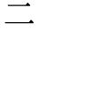
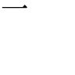
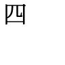
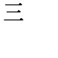
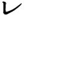

| 【大活字シリーズ】デキる大人は読んでいる 芥川龍之介 『羅生門』『蜘蛛の糸』『杜子春』『或阿呆の一生』などを収録 | |
| 芥川龍之介 | |
羅生門
或 日 の暮方の事である。一人の下人が、羅 生 門 の下で雨やみを待つてゐた。
廣い門の下には、この男の外 に誰もゐない。唯、所々丹 塗 の剥げた、大きな圓 柱 に、蟋蟀 が一匹とまつてゐる。羅 生 門 が、朱 雀 大 路 にある以 上 は、この男の外にも、雨 やみをする市 女 笠 や揉烏帽子が、もう二三人 はありさうなものである。それが、この男 の外 には誰 もゐない。
何 故 かと云ふと、この二三年、京都には、地 震 とか辻風とか火事とか饑饉とか云ふ災 がつゞいて起つた。そこで洛 中 のさびれ方 は一通りでない。舊記によると、佛像や佛具を打 砕 いて、その丹 がついたり、金銀の箔 がついたりした木を、路ばたにつみ重ねて、薪 の料 に賣つてゐたと云ふ事である。洛 中 がその始末であるから、羅生門の修 理 などは、元より誰も捨てゝ顧 る者がなかつた。するとその荒 れ果 てたのをよい事にして、狐 狸 が棲む。盗 人 が棲む。とうとうしまひには、引 取 り手のない死人を、この門へ持つて來て、棄てゝ行くと云ふ習 慣 さへ出來た。そこで、日の目が見えなくなると、誰でも氣 味 を惡るがつて、この門の近 所 へは足 ぶみをしない事になつてしまつたのである。
その代り又鴉 が何 處 からか、たくさん集つて來た。晝 間 見 ると、その鴉が何 羽 となく輪を描いて高い鴟 尾 のまはりを啼 きながら、飛びまはつてゐる。殊に門の上の空が、夕 燒 けであかくなる時 には、それが胡 麻 をまいたやうにはつきり見えた。鴉 は、勿論、門の上にある死 人 の肉を、啄みに來るのである。――尤も今日は、刻 限 が遲 いせいか、一羽も見えない。唯、所 々 、崩れかゝつた、さうしてその崩 れ目に長い草のはへた石 段 の上に、鴉 の糞 が、點々と白くこびりついてゐるのが見える。下 人 は七段ある石段の一番上の段 に洗 ひざらした紺 の襖 の尻を据ゑて、右の頬に出來た、大きな面皰 を氣にしながら、ぼんやり、雨 のふるのを眺 めてゐるのである。
作 者 はさつき、「下人が雨やみを待つてゐた」と書いた。しかし、下 人 は、雨がやんでも格 別 どうしようと云ふ當てはない。ふだんなら、勿 論 、主人の家へ歸る可き筈である。所 がその主人からは、四五日前に暇 を出 された。前にも書いたやうに、當 時 京 都 の町は一通りならず衰 微 してゐた。今この下人が、永 年 、使はれてゐた主人から、暇 を出されたのも、この衰微の小さな餘波に外ならない。だから「下人が雨 やみを待つてゐた」と云 ふよりも、「雨にふりこめられた下人が、行 き所 がなくて、途方にくれてゐた」と云ふ方が、適 當 である。その上、今日の空 模 樣 も少からずこの平 安 朝 の下人の Sentimentalisme に影 響 した。申 の刻下りからふり出した雨は、未に上 るけしきがない。そこで、下人は、何を措いても差 當 り明日の暮 しをどうにかしようとして――云はゞどうにもならない事 を、どうにかしようとして、とりとめもない考 へをたどりながら、さつきから朱 雀 大 路 にふる雨の音を、聞くともなく聞いてゐた。
雨は、羅 生 門 をつゝんで、遠 くから、ざあつと云ふ音をあつめて來る。夕闇は次第に空を低くして、見 上 げると、門の屋根が、斜につき出した甍 先 に、重たくうす暗 い雲 を支へてゐる。
どうにもならない事を、どうにかする爲には、手 段 を選んでゐる遑 はない。選んでゐれば、築 土 の下か、道ばたの土の上で、饑 死 をするばかりである。さうして、この門の上へ持つて來て、犬 のやうに棄 てられてしまふばかりである。選 ばないとすれば――下人の考へは、何 度 も同じ道を低徊した揚 句 に、やつとこの局所へ逢 着 した。しかしこの「すれば」は、何 時 までたつても、結局「すれば」であつた。下人は、手 段 を選ばないといふ事を肯 定 しながらも、この「すれば」のかたをつける爲に、當 然 、その後に來る可き「盗 人 になるより外に仕 方 がない」と云ふ事を、積極的 に肯定する丈の、勇氣が出ずにゐたのである。
下人は、大きな嚏 をして、それから、大儀さうに立上つた。夕 冷 えのする京都は、もう火 桶 が欲しい程の寒さである。風は門の柱 と柱との間を、夕闇と共に遠慮なく、吹きぬける。丹 塗 の柱にとまつてゐた蟋蟀 も、もうどこかへ行つてしまつた。
下人は、頸をちゞめながら、山吹の汗衫 に重ねた、紺の襖の肩を高 くして門のまはりを見まはした。雨 風 の患のない、人目にかゝる惧のない、一晩 樂 にねられさうな所があれば、そこでともかくも、夜 を明 かさうと思つたからである。すると、幸門の上の樓 へ上る、幅の廣い、之も丹を塗つた梯 子 が眼についた。上 なら、人がゐたにしても、どうせ死 人 ばかりである。下人は、そこで腰にさげた聖 柄 の太刀が鞘走らないやうに氣をつけながら、藁 草 履 をはいた足を、その梯子の一番 下 の段へふみかけた。
それから、何 分 かの後である。羅生門の樓の上へ出る、幅 の廣い梯子の中段に、一人の男が、猫 のやうに身をちゞめて、息 を殺しながら、上の容 子 を窺つてゐた。樓の上からさす火 の光 が、かすかに、その男の右の頬 をぬらしてゐる。短い鬚 の中に、赤く膿を持つた面皰 のある頬である。下人は、始めから、この上にゐる者は、死 人 ばかりだと高を括つてゐた。それが、梯 子 を二三段上つて見ると、上では誰か火 をとぼして、しかもその火を其 處 此 處 と動 かしてゐるらしい。これは、その濁つた、黄いろい光が、隅 々 に蜘蛛の巣をかけた天井裏に、ゆれながら映 つたので、すぐにそれと知れたのである。この雨の夜に、この羅生門の上で、火をともしてゐるからは、どうせ唯の者ではない。
下人は、守宮 のやうに足音をぬすんで、やつと急 な梯子を、一番上の段まで這ふやうにして上りつめた。さうして體 を出來る丈、平にしながら、頸 を出來る丈、前へ出して、恐 る恐る、樓の内を覗 いて見た。
見ると、樓の内には、噂 に聞いた通り、幾つかの屍 骸 が、無 造 作 に棄てゝあるが、火の光の及ぶ範 圍 が、思つたより狹いので、數 は幾つともわからない。唯、おぼろげながら、知れるのは、その中に裸 の屍骸と、着 物 を着た屍骸とがあると云ふ事である。勿 論 、中には女も男もまじつてゐるらしい。さうして、その屍骸は皆、それが、甞、生きてゐた人間だと云ふ事 實 さへ疑はれる程、土を捏ねて造つた人 形 のやうに、口を開 いたり手を延ばしたりしてごろごろ床 の上にころがつてゐた。しかも、肩とか胸 とかの高くなつてゐる部 分 に、ぼんやりした火の光をうけて、低くなつてゐる部分の影を一層 暗 くしながら、永久に唖 の如く默 つていた。
下人は、それらの屍骸の腐 爛 した臭氣に思はず、鼻 を掩つた。しかし、その手は、次の瞬 間 には、もう鼻を掩ふ事を忘れてゐた。或る強い感 情 が、殆悉この男の嗅覺を奪つてしまつたからである。
下人の眼は、その時、はじめて、其 屍 骸 の中に蹲つている人間を見た。檜 肌 色 の着物を著た、背の低い、痩せた、白 髮 頭 の、猿のやうな老婆である。その老婆は、右の手に火をともした松 の木片を持つて、その屍 骸 の一つの顏を覗きこむやうに眺 めてゐた。髮の毛の長い所を見ると、多 分 女 の屍骸であらう。
下人は、六分の恐 怖 と四分の好奇心とに動かされて、暫時は呼 吸 をするのさへ忘れてゐた。舊記の記 者 の語を借りれば、「頭 身 の毛も太る」やうに感じたのである。すると、老 婆 は、松の木片を、床板の間に挿 して、それから、今まで眺めてゐた屍骸の首に兩 手 をかけると、丁度、猿の親が猿の子の虱 をとるやうに、その長い髮 の毛 を一本づゝ拔きはじめた。髮は手に從 つて拔けるらしい。
その髮の毛が、一本ずゝ拔 けるのに從つて下人の心 からは、恐怖が少しづつ消えて行つた。さうして、それと同 時 に、この老婆に對するはげしい憎 惡 が、少しづゝ動いて來た。――いや、この老 婆 に對すると云つては、語 弊 があるかも知れない。寧、あらゆる惡に對する反 感 が、一分毎に強さを増して來たのである。この時、誰 かがこの下人に、さつき門 の下でこの男が考へてゐた、饑 死 をするか盗人になるかと云ふ問題を、改めて持 出 したら、恐らく下人は、何の未 練 もなく、饑死を選んだ事であらう。それほど、この男 の惡を憎む心は、老婆の床 に挿した松の木片のやうに、勢よく燃 え上 り出してゐたのである。
下人には、勿論、何故老婆が死 人 の髮の毛を拔 くかわからなかつた。從つて、合 理 的 には、それを善惡の何れに片 づけてよいか知らなかつた。しかし下人にとつては、この雨 の夜 に、この羅生門の上で、死人の髮の毛 を拔くと云ふ事が、それ丈で既に許 す可らざる惡であつた。勿論、下 人 は、さつき迄自分が、盗人になる氣でゐた事なぞは、とうに忘れてゐるのである。
そこで、下人は、兩 足 に力を入れて、いきなり、梯 子 から上へ飛び上つた。さうして聖 柄 の太刀に手をかけながら、大 股 に老婆の前へ歩みよつた。老婆が驚いたのは、云ふ迄もない。
老婆は、一目下人を見ると、まるで弩 にでも弾かれたやうに、飛び上つた。
「おのれ、どこへ行く。」
下人は、老婆が屍 骸 につまづきながら、慌 てふためいて逃げようとする行手を塞いで、こう罵 つた。老婆は、それでも下人をつきのけて行 かうとする。下人は又、それを行かすまいとして、押 しもどす。二人は屍 骸 の中で、暫、無 言 のまゝ、つかみ合つた。しかし勝 敗 は、はじめから、わかつている。下人はとうとう、老婆の腕 をつかんで、無理にそこへ扭 ぢ倒 した。丁度、鷄 の脚のやうな、骨と皮ばかりの腕である。
「何をしてゐた。さあ何をしてゐた。云へ。云はぬと、これだぞよ。」
下人は、老 婆 をつき放すと、いきなり、太 刀 の鞘 を拂つて、白い鋼 の色をその眼の前へつきつけた。けれども、老婆は默つてゐる。兩 手 をわなわなふるはせて、肩で息 を切りながら、眼を、眼 球 が眶 の外へ出さうになる程、見開いて、唖のやうに執 拗 く默つてゐる。これを見ると、下人は始 めて明白にこの老婆の生死が、全然、自分の意 志 に支配されてゐると云ふ事を意 識 した。さうして、この意識は、今 まではげしく燃えてゐた憎惡の心を何 時 の間にか冷 ましてしまつた。後 に殘つたのは、唯、或 仕 事 をして、それが圓 滿 に成就した時の、安らかな得 意 と滿足とがあるばかりである。そこで、下人は、老 婆 を見下しながら、少し聲を柔 げてかう云つた。
「己は檢 非 違 使 の廳の役人などではない。今し方この門 の下を通 りかゝつた旅の者だ。だからお前に繩 をかけて、どうしようと云ふやうな事はない。唯 、今時分、この門の上で、何 をして居たのだか、それを己に話 しさへすればいいのだ。」
すると、老婆は、見 開 いてゐた眼を、一層 大 きくして、ぢつとその下人の顏 を見守つた。眶の赤くなつた、肉食鳥のやうな、鋭 い眼で見たのである。それから、皺 で、殆、鼻と一つになつた唇を、何か物でも噛 んでゐるやうに動かした。細い喉で、尖つた喉 佛 の動いてゐるのが見える。その時、その喉 から、鴉 の啼くやうな聲が、喘ぎ喘ぎ、下人の耳 へ傳はつて來た。
「この髮を拔いてな、この女の髮を拔いてな、鬘 にせうと思うたのぢや。」
下人は、老婆の答が存外、平 凡 なのに失望した。さうして失 望 すると同時に、又前の憎惡が、冷な侮 蔑 と一しよに、心の中へはいつて來た。すると、その氣 色 が、先方へも通じたのであらう。老婆は、片 手 に、まだ屍骸の頭から奪 つた長い拔け毛を持 つたなり、蟇 のつぶやくやうな聲で、口ごもりながら、こんな事を云つた。
成程、死人の髮 の毛 を拔くと云ふ事は、惡い事かも知 れぬ。しかし、かう云ふ死人の多くは、皆、その位な事 を、されてもいゝ人 間 ばかりである。現に、自分が今、髮 を拔いた女などは、蛇 を四寸ばかりづゝに切 つて干したのを、干 魚 だと云つて、太 刀 帶 の陣へ賣りに行つた。疫病にかゝつて死ななかつたなら、今でも賣りに行つてゐたかもしれない。しかも、この女 の賣る干魚は、味 がよいと云ふので、太刀帶たちが、缺かさず菜 料 に買つてゐたのである。自分は、この女のした事が惡 いとは思はない。しなければ、饑 死 をするので、仕 方 がなくした事だからである。だから、又今、自 分 のしてゐた事も惡い事とは思 はない。これもやはりしなければ、饑 死 をするので、仕方がなくする事だからである。さうして、その仕方がない事を、よく知つてゐたこの女は、自分のする事を許 してくれるのにちがひないと思 ふからである。――老婆は、大體こんな意味の事を云つた。
下人は、太刀を鞘 におさめて、その太刀の柄を左 の手 でおさへながら、冷然として、この話を聞いてゐた。勿論、右 の手 では、赤く頬 に膿 を持つた大きな面皰を氣 にしながら、聞いてゐるのである。しかし、之を聞 いてゐる中に、下人の心には、或 勇 氣 が生まれて來た。それは、さつき、門 の下 でこの男に缺けてゐた勇氣である。さうして、又 さつき、この門の上 へ上 つて、この老婆を捕へた時の勇氣とは、全 然 、反對な方向に動 かうとする勇氣である。下人は、饑死をするか盗 人 になるかに迷はなかつたばかりではない。その時 のこの男の心もちから云へば、饑 死 などと云ふ事は、殆、考 へる事さへ出來ない程、意識の外に追ひ出されてゐた。
「きつと、そうか。」
老婆の話が完ると、下人は嘲 るやうな聲で念 を押した。さうして、一足 前 へ出ると、不 意 に、右の手を面皰から離して、老婆の襟 上 をつかみながら、かう云つた。
「では、己が引 剥 をしようと恨むまいな。己もさうしなければ、饑死をする體なのだ。」
下人は、すばやく、老婆の着 物 を剥ぎとつた。それから、足 にしがみつかうとする老婆を、手 荒 く屍骸の上へ蹴 倒 した。梯子の口までは、僅 に五歩を數へるばかりである。下人は、剥 ぎとつた檜肌色の着 物 をわきにかゝへて、またゝく間に急な梯子を夜の底へかけ下りた。
暫 、死んだやうに倒れてゐた老婆が、屍骸の中 から、その裸 の體を起したのは、それから間 もなくの事である。老婆は、つぶやくやうな、うめくやうな聲を立てながら、まだ燃 えてゐる火の光をたよりに、梯 子 の口まで、這つて行つた。さうして、そこから、短い白 髮 を倒にして、門の下を覗 きこんだ。外には、唯、黒洞々たる夜があるばかりである。
下人は、既に、雨 を冐 して、京都の町へ強盗を働きに急いでゐた。
――四年九月――
鼻
禅 智 内 供 の鼻と云えば、池 の尾 で知らない者はない。長さは五六寸あって上 唇 の上から顋 の下まで下っている。形は元も先も同じように太い。云わば細長い腸 詰 めのような物が、ぶらりと顔のまん中からぶら下っているのである。
五十歳を越えた内供は、沙 弥 の昔から、内 道 場 供 奉 の職に陞 った今 日 まで、内心では始終この鼻を苦に病んで来た。勿 論 表面では、今でもさほど気にならないような顔をしてすましている。これは専念に当 来 の浄 土 を渇 仰 すべき僧 侶 の身で、鼻の心配をするのが悪いと思ったからばかりではない。それよりむしろ、自分で鼻を気にしていると云う事を、人に知られるのが嫌だったからである。内供は日常の談話の中に、鼻と云う語が出て来るのを何よりも惧 れていた。
内供が鼻を持てあました理由は二つある。――一つは実際的に、鼻の長いのが不便だったからである。第一飯を食う時にも独りでは食えない。独りで食えば、鼻の先が鋺 の中の飯へとどいてしまう。そこで内供は弟子の一人を膳の向うへ坐らせて、飯を食う間中、広さ一寸長さ二尺ばかりの板で、鼻を持上げていて貰う事にした。しかしこうして飯を食うと云う事は、持上げている弟子にとっても、持上げられている内供にとっても、決して容易な事ではない。一度この弟子の代りをした中 童 子 が、嚏 をした拍子に手がふるえて、鼻を粥 の中へ落した話は、当時京都まで喧 伝 された。――けれどもこれは内供にとって、決して鼻を苦に病んだ重 な理由ではない。内供は実にこの鼻によって傷つけられる自尊心のために苦しんだのである。
池の尾の町の者は、こう云う鼻をしている禅智内供のために、内供の俗でない事を仕合せだと云った。あの鼻では誰も妻になる女があるまいと思ったからである。中にはまた、あの鼻だから出 家 したのだろうと批評する者さえあった。しかし内供は、自分が僧であるために、幾分でもこの鼻に煩 される事が少くなったと思っていない。内供の自尊心は、妻帯と云うような結果的な事実に左右されるためには、余りにデリケイトに出来ていたのである。そこで内供は、積極的にも消極的にも、この自尊心の毀 損 を恢 復 しようと試みた。
第一に内供の考えたのは、この長い鼻を実際以上に短く見せる方法である。これは人のいない時に、鏡へ向って、いろいろな角度から顔を映しながら、熱心に工 夫 を凝 らして見た。どうかすると、顔の位置を換えるだけでは、安心が出来なくなって、頬 杖 をついたり頤 の先へ指をあてがったりして、根気よく鏡を覗いて見る事もあった。しかし自分でも満足するほど、鼻が短く見えた事は、これまでにただの一度もない。時によると、苦心すればするほど、かえって長く見えるような気さえした。内供は、こう云う時には、鏡を箱へしまいながら、今更のようにため息をついて、不承不承にまた元の経 机 へ、観 音 経 をよみに帰るのである。
それからまた内供は、絶えず人の鼻を気にしていた。池の尾の寺は、僧 供 講 説 などのしばしば行われる寺である。寺の内には、僧坊が隙なく建て続いて、湯屋では寺の僧が日毎に湯を沸かしている。従ってここへ出入する僧俗の類 も甚だ多い。内供はこう云う人々の顔を根気よく物色した。一人でも自分のような鼻のある人間を見つけて、安心がしたかったからである。だから内供の眼には、紺の水 干 も白の帷子 もはいらない。まして柑 子 色 の帽子や、椎 鈍 の法衣 なぞは、見慣れているだけに、有れども無きが如くである。内供は人を見ずに、ただ、鼻を見た。――しかし鍵 鼻 はあっても、内供のような鼻は一つも見当らない。その見当らない事が度重なるに従って、内供の心は次第にまた不快になった。内供が人と話しながら、思わずぶらりと下っている鼻の先をつまんで見て、年 甲 斐 もなく顔を赤らめたのは、全くこの不快に動かされての所 為 である。
最後に、内供は、内 典 外 典 の中に、自分と同じような鼻のある人物を見出して、せめても幾分の心やりにしようとさえ思った事がある。けれども、目 連 や、舎 利 弗 の鼻が長かったとは、どの経文にも書いてない。勿論竜 樹 や馬 鳴 も、人並の鼻を備えた菩 薩 である。内供は、震 旦 の話の序 に蜀 漢 の劉 玄 徳 の耳が長かったと云う事を聞いた時に、それが鼻だったら、どのくらい自分は心細くなくなるだろうと思った。
内供がこう云う消極的な苦心をしながらも、一方ではまた、積極的に鼻の短くなる方法を試みた事は、わざわざここに云うまでもない。内供はこの方面でもほとんど出来るだけの事をした。烏 瓜 を煎 じて飲んで見た事もある。鼠の尿 を鼻へなすって見た事もある。しかし何をどうしても、鼻は依然として、五六寸の長さをぶらりと唇の上にぶら下げているではないか。
所がある年の秋、内供の用を兼ねて、京へ上った弟 子 の僧が、知己 の医者から長い鼻を短くする法を教わって来た。その医者と云うのは、もと震 旦 から渡って来た男で、当時は長 楽 寺 の供 僧 になっていたのである。
内供は、いつものように、鼻などは気にかけないと云う風をして、わざとその法もすぐにやって見ようとは云わずにいた。そうして一方では、気軽な口調で、食事の度毎に、弟子の手数をかけるのが、心苦しいと云うような事を云った。内心では勿論弟子の僧が、自分を説 伏 せて、この法を試みさせるのを待っていたのである。弟子の僧にも、内供のこの策略がわからない筈はない。しかしそれに対する反感よりは、内供のそう云う策略をとる心もちの方が、より強くこの弟子の僧の同情を動かしたのであろう。弟子の僧は、内供の予期通り、口を極めて、この法を試みる事を勧め出した。そうして、内供自身もまた、その予期通り、結局この熱心な勧告に聴 従 する事になった。
その法と云うのは、ただ、湯で鼻を茹 でて、その鼻を人に踏ませると云う、極めて簡単なものであった。
湯は寺の湯屋で、毎日沸かしている。そこで弟子の僧は、指も入れられないような熱い湯を、すぐに提 に入れて、湯屋から汲んで来た。しかしじかにこの提へ鼻を入れるとなると、湯気に吹かれて顔を火傷 する惧 がある。そこで折 敷 へ穴をあけて、それを提の蓋 にして、その穴から鼻を湯の中へ入れる事にした。鼻だけはこの熱い湯の中へ浸 しても、少しも熱くないのである。しばらくすると弟子の僧が云った。
――もう茹 った時分でござろう。
内供は苦笑した。これだけ聞いたのでは、誰も鼻の話とは気がつかないだろうと思ったからである。鼻は熱湯に蒸 されて、蚤 の食ったようにむず痒 い。
弟子の僧は、内供が折敷の穴から鼻をぬくと、そのまだ湯気の立っている鼻を、両足に力を入れながら、踏みはじめた。内供は横になって、鼻を床板の上へのばしながら、弟子の僧の足が上 下 に動くのを眼の前に見ているのである。弟子の僧は、時々気の毒そうな顔をして、内供の禿 げ頭を見下しながら、こんな事を云った。
――痛うはござらぬかな。医師は責 めて踏めと申したで。じゃが、痛うはござらぬかな。
内供は首を振って、痛くないと云う意味を示そうとした。所が鼻を踏まれているので思うように首が動かない。そこで、上 眼 を使って、弟子の僧の足に皹 のきれているのを眺めながら、腹を立てたような声で、
――痛うはないて。
と答えた。実際鼻はむず痒い所を踏まれるので、痛いよりもかえって気もちのいいくらいだったのである。
しばらく踏んでいると、やがて、粟 粒 のようなものが、鼻へ出来はじめた。云わば毛をむしった小鳥をそっくり丸 炙 にしたような形である。弟子の僧はこれを見ると、足を止めて独り言のようにこう云った。
――これを鑷子 でぬけと申す事でござった。
内供は、不足らしく頬をふくらせて、黙って弟子の僧のするなりに任せて置いた。勿論弟子の僧の親切がわからない訳ではない。それは分っても、自分の鼻をまるで物品のように取扱うのが、不愉快に思われたからである。内供は、信用しない医者の手術をうける患者のような顔をして、不承不承に弟子の僧が、鼻の毛穴から鑷子 で脂 をとるのを眺めていた。脂は、鳥の羽の茎 のような形をして、四分ばかりの長さにぬけるのである。
やがてこれが一通りすむと、弟子の僧は、ほっと一息ついたような顔をして、
――もう一度、これを茹でればようござる。
と云った。
内供はやはり、八の字をよせたまま不服らしい顔をして、弟子の僧の云うなりになっていた。
さて二度目に茹でた鼻を出して見ると、成程、いつになく短くなっている。これではあたりまえの鍵鼻と大した変りはない。内供はその短くなった鼻を撫 でながら、弟子の僧の出してくれる鏡を、極 りが悪るそうにおずおず覗 いて見た。
鼻は――あの顋 の下まで下っていた鼻は、ほとんど嘘のように萎縮して、今は僅 に上唇の上で意気地なく残 喘 を保っている。所々まだらに赤くなっているのは、恐らく踏まれた時の痕 であろう。こうなれば、もう誰も哂 うものはないにちがいない。――鏡の中にある内供の顔は、鏡の外にある内供の顔を見て、満足そうに眼をしばたたいた。
しかし、その日はまだ一日、鼻がまた長くなりはしないかと云う不安があった。そこで内供は誦 経 する時にも、食事をする時にも、暇さえあれば手を出して、そっと鼻の先にさわって見た。が、鼻は行 儀 よく唇の上に納まっているだけで、格別それより下へぶら下って来る景色もない。それから一晩寝てあくる日早く眼がさめると内供はまず、第一に、自分の鼻を撫でて見た。鼻は依然として短い。内供はそこで、幾年にもなく、法 華 経 書写の功を積んだ時のような、のびのびした気分になった。
所が二三日たつ中に、内供は意外な事実を発見した。それは折から、用事があって、池の尾の寺を訪れた侍 が、前よりも一層可 笑 しそうな顔をして、話も碌 々 せずに、じろじろ内供の鼻ばかり眺めていた事である。それのみならず、かつて、内供の鼻を粥 の中へ落した事のある中 童 子 なぞは、講堂の外で内供と行きちがった時に、始めは、下を向いて可 笑 しさをこらえていたが、とうとうこらえ兼ねたと見えて、一度にふっと吹き出してしまった。用を云いつかった下 法 師 たちが、面と向っている間だけは、慎 んで聞いていても、内供が後 さえ向けば、すぐにくすくす笑い出したのは、一度や二度の事ではない。
内供ははじめ、これを自分の顔がわりがしたせいだと解釈した。しかしどうもこの解釈だけでは十分に説明がつかないようである。――勿論、中童子や下法師が哂 う原因は、そこにあるのにちがいない。けれども同じ哂うにしても、鼻の長かった昔とは、哂うのにどことなく容 子 がちがう。見慣れた長い鼻より、見慣れない短い鼻の方が滑 稽 に見えると云えば、それまでである。が、そこにはまだ何かあるらしい。
――前にはあのようにつけつけとは哂わなんだて。
内供は、誦 しかけた経文をやめて、禿 げ頭を傾けながら、時々こう呟 く事があった。愛すべき内供は、そう云う時になると、必ずぼんやり、傍 にかけた普 賢 の画像を眺めながら、鼻の長かった四五日前の事を憶 い出して、「今はむげにいやしくなりさがれる人の、さかえたる昔をしのぶがごとく」ふさぎこんでしまうのである。――内供には、遺 憾 ながらこの問に答を与える明が欠けていた。
――人間の心には互に矛 盾 した二つの感情がある。勿論、誰でも他人の不幸に同情しない者はない。所がその人がその不幸を、どうにかして切りぬける事が出来ると、今度はこっちで何となく物足りないような心もちがする。少し誇張して云えば、もう一度その人を、同じ不幸に陥 れて見たいような気にさえなる。そうしていつの間にか、消極的ではあるが、ある敵意をその人に対して抱くような事になる。――内供が、理由を知らないながらも、何となく不快に思ったのは、池の尾の僧俗の態度に、この傍観者の利己主義をそれとなく感づいたからにほかならない。
そこで内供は日毎に機 嫌 が悪くなった。二言目には、誰でも意地悪く叱 りつける。しまいには鼻の療 治 をしたあの弟子の僧でさえ、「内供は法 慳 貪 の罪を受けられるぞ」と陰口をきくほどになった。殊に内供を怒らせたのは、例の悪 戯 な中童子である。ある日、けたたましく犬の吠 える声がするので、内供が何気なく外へ出て見ると、中童子は、二尺ばかりの木の片 をふりまわして、毛の長い、痩 せた尨 犬 を逐 いまわしている。それもただ、逐いまわしているのではない。「鼻を打たれまい。それ、鼻を打たれまい」と囃 しながら、逐いまわしているのである。内供は、中童子の手からその木の片をひったくって、したたかその顔を打った。木の片は以前の鼻 持 上 げの木だったのである。
内供はなまじいに、鼻の短くなったのが、かえって恨 めしくなった。
するとある夜の事である。日が暮れてから急に風が出たと見えて、塔の風 鐸 の鳴る音が、うるさいほど枕に通 って来た。その上、寒さもめっきり加わったので、老年の内供は寝つこうとしても寝つかれない。そこで床の中でまじまじしていると、ふと鼻がいつになく、むず痒 いのに気がついた。手をあてて見ると少し水 気 が来たようにむくんでいる。どうやらそこだけ、熱さえもあるらしい。
――無理に短うしたで、病が起ったのかも知れぬ。
内供は、仏前に香 花 を供 えるような恭 しい手つきで、鼻を抑えながら、こう呟いた。
翌朝、内供がいつものように早く眼をさまして見ると、寺内の銀杏 や橡 が一晩の中に葉を落したので、庭は黄 金 を敷いたように明るい。塔の屋根には霜が下りているせいであろう。まだうすい朝日に、九 輪 がまばゆく光っている。禅智内供は、蔀 を上げた縁に立って、深く息をすいこんだ。
ほとんど、忘れようとしていたある感覚が、再び内供に帰って来たのはこの時である。
内供は慌てて鼻へ手をやった。手にさわるものは、昨夜 の短い鼻ではない。上唇の上から顋 の下まで、五六寸あまりもぶら下っている、昔の長い鼻である。内供は鼻が一夜の中に、また元の通り長くなったのを知った。そうしてそれと同時に、鼻が短くなった時と同じような、はればれした心もちが、どこからともなく帰って来るのを感じた。
――こうなれば、もう誰も哂 うものはないにちがいない。
内供は心の中でこう自分に囁 いた。長い鼻をあけ方の秋風にぶらつかせながら。
（大正五年一月）
芋粥
元 慶 の末か、仁 和 の始にあつた話であらう。どちらにしても時代はさして、この話に大事な役を、勤めてゐない。読者は唯、平安朝と云ふ、遠い昔が背景になつてゐると云ふ事を、知つてさへゐてくれれば、よいのである。――その頃、摂 政 藤原基 経 に仕へてゐる侍 の中に、某 と云ふ五位があつた。
これも、某と書かずに、何の誰と、ちやんと姓名を明にしたいのであるが、生 憎 旧記には、それが伝はつてゐない。恐らくは、実際、伝はる資格がない程、平凡な男だつたのであらう。一体旧記の著者などと云ふ者は、平凡な人間や話に、余り興味を持たなかつたらしい。この点で、彼等と、日本の自然派の作家とは、大分ちがふ。王朝時代の小説家は、存外、閑 人 でない。――兎に角、摂政藤原基経に仕へてゐる侍の中に、某と云ふ五位があつた。これが、この話の主人公である。
五位は、風采の甚 揚 らない男であつた。第一背が低い。それから赤鼻で、眼尻が下つてゐる。口髭は勿論薄い。頬が、こけてゐるから、頤 が、人並はづれて、細く見える。唇は――一々、数へ立ててゐれば、際限はない。我五位の外貌はそれ程、非凡に、だらしなく、出来上つてゐたのである。
この男が、何 時 、どうして、基経に仕へるやうになつたのか、それは誰も知つてゐない。が、余程以前から、同じやうな色の褪 めた水 干 に、同じやうな萎 々 した烏 帽 子 をかけて、同じやうな役目を、飽きずに、毎日、繰返してゐる事だけは、確である。その結果であらう、今では、誰が見ても、この男に若い時があつたとは思はれない。（五位は四十を越してゐた。）その代り、生れた時から、あの通り寒むさうな赤鼻と、形ばかりの口髭とを、朱 雀 大 路 の衢 風 に、吹かせてゐたと云ふ気がする。上 は主人の基経から、下 は牛飼の童児まで、無意識ながら、悉 さう信じて疑ふ者がない。
かう云ふ風采を具へた男が、周囲から受ける待遇は、恐らく書くまでもないことであらう。侍 所 にゐる連中は、五位に対して、殆ど蠅 程の注意も払はない。有 位 無 位 、併せて二十人に近い下役さへ、彼の出入りには、不思議な位、冷淡を極めてゐる。五位が何か云ひつけても、決して彼等同志の雑談をやめた事はない。彼等にとつては、空気の存在が見えないやうに、五位の存在も、眼を遮 らないのであらう。下役でさへさうだとすれば、別当とか、侍所の司 とか云ふ上役たちが頭から彼を相手にしないのは、寧 ろ自然の数 である。彼等は、五位に対すると、殆ど、子供らしい無意味な悪意を、冷然とした表情の後に隠して、何を云ふのでも、手真似だけで用を足した。人間に、言語があるのは、偶然ではない。従つて、彼等も手真似では用を弁じない事が、時々ある。が、彼等は、それを全然五位の悟性に、欠陥があるからだと、思つてゐるらしい。そこで彼等は用が足りないと、この男の歪んだ揉 烏帽子の先から、切れかかつた藁 草 履 の尻まで、万遍なく見上げたり、見下したりして、それから、鼻で哂 ひながら、急に後を向いてしまふ。それでも、五位は、腹を立てた事がない。彼は、一切の不正を、不正として感じない程、意気地のない、臆病な人間だつたのである。
所が、同僚の侍たちになると、進んで、彼を飜 弄 しようとした。年かさの同僚が、彼れの振はない風来を材料にして、古い洒落 を聞かせようとする如く、年下の同僚も、亦それを機会にして、所 謂 興 言 利 口 の練習をしようとしたからである。彼等は、この五位の面前で、その鼻と口髭と、烏帽子と水干とを、品 隲 して飽きる事を知らなかつた。そればかりではない。彼が五六年前に別れたうけ唇 の女房と、その女房と関係があつたと云ふ酒のみの法師とも、屡 彼等の話題になつた。
その上、どうかすると、彼等は甚 、性 質 の悪い悪 戯 さへする。それを今一々、列記する事は出来ない。が、彼の篠 枝 の酒を飲んで、後 へ尿 を入れて置いたと云ふ事を書けば、その外は凡 、想像される事だらうと思ふ。
しかし、五位はこれらの揶 揄 に対して、全然無感覚であつた。少くもわき眼には、無感覚であるらしく思はれた。彼は何を云はれても、顔の色さへ変へた事がない。黙つて例の薄い口髭を撫でながら、するだけの事をしてすましてゐる。唯、同僚の悪戯が、嵩 じすぎて、髷 に紙切れをつけたり、太 刀 の鞘 に草履を結びつけたりすると、彼は笑ふのか、泣くのか、わからないやうな笑顔をして、「いけぬのう、お身たちは。」と云ふ。その顔を見、その声を聞いた者は、誰でも一時或いぢらしさに打たれてしまふ。（彼等にいぢめられるのは、一人、この赤鼻の五位だけではない、彼等の知らない誰かが――多数の誰かが、彼の顔と声とを借りて、彼等の無情を責めてゐる。）――さう云ふ気が、朧 げながら、彼等の心に、一瞬の間、しみこんで来るからである。唯その時の心もちを、何時までも持続ける者は甚少い。その少い中の一人に、或無位の侍があつた。これは丹 波 の国から来た男で、まだ柔かい口髭が、やつと鼻の下に、生えかかつた位の青年である。勿論、この男も始めは皆と一しよに、何の理由もなく、赤鼻の五位を軽 蔑 した。所が、或日何かの折に、「いけぬのう、お身たちは」と云ふ声を聞いてからは、どうしても、それが頭を離れない。それ以来、この男の眼にだけは、五位が全く別人として、映るやうになつた。栄養の不足した、血色の悪い、間のぬけた五位の顔にも、世間の迫害にべそ を掻いた、「人間」が覗いてゐるからである。この無位の侍には、五位の事を考へる度に、世の中のすべてが急に本来の下等さを露 すやうに思はれた。さうしてそれと同時に霜げた赤鼻と数へる程の口髭とが何となく一 味 の慰安を自分の心に伝へてくれるやうに思はれた。......
しかし、それは、唯この男一人に、限つた事である。かう云ふ例外を除けば、五位は、依然として周囲の軽蔑の中に、犬のやうな生活を続けて行かなければならなかつた。第一彼には着物らしい着物が一つもない。青 鈍 の水干と、同じ色の指 貫 とが一つづつあるのが、今ではそれが上 白 んで、藍 とも紺とも、つかないやうな色に、なつてゐる。水干はそれでも、肩が少し落ちて、丸組の緒や菊 綴 の色が怪しくなつてゐるだけだが、指貫になると、裾のあたりのいたみ方が一通りでない。その指貫の中から、下の袴もはかない、細い足が出てゐるのを見ると、口の悪い同僚でなくとも、痩公卿の車を牽 いてゐる、痩牛の歩みを見るやうな、みすぼらしい心もちがする。それに佩 いてゐる太刀も、頗る覚 束 ない物で、柄 の金具も如何 はしければ、黒鞘の塗も剥げかかつてゐる。これが例の赤鼻で、だらしなく草履をひきずりながら、唯でさへ猫背なのを、一層寒空の下に背ぐくまつて、もの欲しさうに、左右を眺め眺め、きざみ足に歩くのだから、通りがかりの物売りまで莫 迦 にするのも、無理はない。現に、かう云ふ事さへあつた。......
或る日、五位が三条坊門を神泉苑の方へ行く所で、子供が六七人、路ばたに集つて、何かしてゐるのを見た事がある。「こまつぶり」でも、廻してゐるのかと思つて、後ろから覗いて見ると、何 処 かから迷つて来た、尨 犬 の首へ繩をつけて、打つたり殴 いたりしてゐるのであつた。臆病な五位は、これまで何かに同情を寄せる事があつても、あたりへ気を兼ねて、まだ一度もそれを行為に現はしたことがない。が、この時だけは相手が子供だと云ふので、幾分か勇気が出た。そこで出来るだけ、笑顔をつくりながら、年かさらしい子供の肩を叩いて、「もう、堪忍してやりなされ。犬も打たれれば、痛いでのう」と声をかけた。すると、その子供はふりかへりながら、上眼を使つて、蔑 すむやうに、ぢろぢろ五位の姿を見た。云はば侍所の別当が用の通じない時に、この男を見るやうな顔をして、見たのである。「いらぬ世話はやかれたうもない。」その子供は一足下りながら、高慢な唇を反らせて、かう云つた。「何ぢや、この鼻赤めが。」五位はこの語 が自分の顔を打つたやうに感じた。が、それは悪態をつかれて、腹が立つたからでは毛頭ない。云はなくともいい事を云つて、恥をかいた自分が、情なくなつたからである。彼は、きまりが悪いのを苦しい笑顔に隠しながら、黙つて、又、神泉苑の方へ歩き出した。後では、子供が、六七人、肩を寄せて、「べつかつかう」をしたり、舌を出したりしてゐる。勿論彼はそんな事を知らない。知つてゐたにしても、それが、この意気地のない五位にとつて、何であらう。......
では、この話の主人公は、唯、軽蔑される為にのみ生れて来た人間で、別に何の希望も持つてゐないかと云ふと、さうでもない。五位は五六年前から芋 粥 と云ふ物に、異常な執着を持つてゐる。芋粥とは山の芋を中に切込んで、それを甘 葛 の汁で煮た、粥の事を云ふのである。当時はこれが、無上の佳味として、上は万 乗 の君の食膳にさへ、上せられた。従つて、吾五位の如き人間の口へは、年に一度、臨時の客の折にしか、はいらない。その時でさへ、飲めるのは僅に喉 を沾 すに足る程の少量である。そこで芋粥を飽きる程飲んで見たいと云ふ事が、久しい前から、彼の唯一の欲望になつてゐた。勿論、彼は、それを誰にも話した事がない。いや彼自身さへそれが、彼の一生を貫いてゐる欲望だとは、明白に意識しなかつた事であらう。が事実は彼がその為に、生きてゐると云つても、差 支 ない程であつた。――人間は、時として、充されるか充されないか、わからない欲望の為に、一生を捧げてしまふ。その愚を哂 ふ者は、畢 竟 、人生に対する路傍の人に過ぎない。
しかし、五位が夢想してゐた、「芋粥に飽かむ」事は、存外容易に事実となつて現れた。その始終を書かうと云ふのが、芋粥の話の目的なのである。
―――――――――――――――――
或年の正月二日、基経の第 に、所 謂 臨時の客があつた時の事である。（臨時の客は二 宮 の大 饗 と同日に摂政関白家が、大臣以下の上 達 部 を招いて催す饗宴で、大饗と別に変りがない。）五位も、外の侍たちにまじつて、その残 肴 の相 伴 をした。当時はまだ、取 食 みの習慣がなくて、残肴は、その家の侍が一堂に集まつて、食ふ事になつてゐたからである。尤 も、大饗に等しいと云つても昔の事だから、品数の多い割りに碌な物はない、餅、伏 菟 、蒸 鮑 、干 鳥 、宇治の氷魚 、近江 の鮒 、鯛の楚 割 、鮭の内子 、焼 蛸 、大 海 老 、大 柑 子 、小柑子、橘、串柿などの類 である。唯、その中に、例の芋粥があつた。五位は毎年、この芋粥を楽しみにしてゐる。が、何時も人数が多いので、自分が飲めるのは、いくらもない。それが今年は、特に、少かつた。さうして気のせゐか、何時もより、余程味が好い。そこで、彼は飲んでしまつた後の椀をしげしげと眺めながら、うすい口髭についてゐる滴 を、掌で拭いて誰に云ふともなく、「何時になつたら、これに飽ける事かのう」と、かう云つた。
「大夫殿は、芋粥に飽かれた事がないさうな。」
五位の語 が完 らない中に、誰かが、嘲 笑 つた。錆 のある、鷹 揚 な、武人らしい声である。五位は、猫背の首を挙げて、臆病らしく、その人の方を見た。声の主は、その頃同じ基経の恪 勤 になつてゐた、民部卿時長の子藤原利 仁 である。肩幅の広い、身 長 の群を抜いた逞 しい大男で、これは、煠 栗 を噛みながら、黒 酒 の杯 を重ねてゐた。もう大分酔がまはつてゐるらしい。
「お気の毒な事ぢやの。」利仁は、五位が顔を挙げたのを見ると、軽蔑と憐 憫 とを一つにしたやうな声で、語を継いだ。「お望みなら、利仁がお飽かせ申さう。」
始終、いぢめられてゐる犬は、たまに肉を貰つても容易によりつかない。五位は、例の笑ふのか、泣くのか、わからないやうな笑顔をして、利仁の顔と、空 の椀とを等分に見比べてゐた。
「おいやかな。」
「......」
「どうぢや。」
「......」
五位は、その中に、衆人の視線が、自分の上に、集まつてゐるのを感じ出した。答へ方一つで、又、一同の嘲弄を、受けなければならない。或は、どう答へても、結局、莫 迦 にされさうな気さへする。彼は躊 躇 した。もし、その時に、相手が、少し面倒臭そうな声で、「おいやなら、たつてとは申すまい」と云はなかつたなら、五位は、何 時 までも、椀と利仁とを、見比べてゐた事であらう。
彼は、それを聞くと、慌 しく答へた。
「いや......忝 うござる。」
この問答を聞いてゐた者は、皆、一時に、失笑した。
「いや......忝うござる。」――かう云つて、五位の答を、真似る者さへある。所謂、橙 黄 橘 紅 を盛つた窪 坏 や高坏の上に多くの揉 烏帽子や立 烏帽子が、笑声と共に一しきり、波のやうに動いた。中でも、最 、大きな声で、機嫌よく、笑つたのは、利仁自身である。
「では、その中に、御誘ひ申さう。」さう云ひながら、彼は、ちよいと顔をしかめた。こみ上げて来る笑と今飲んだ酒とが、喉で一つになつたからである。「......しかと、よろしいな。」
「忝うござる。」
五位は赤くなつて、吃 りながら、又、前の答を繰返した。一同が今度も、笑つたのは、云ふまでもない。それが云はせたさに、わざわざ念を押した当の利仁に至つては、前よりも一層可 笑 しさうに広い肩をゆすつて、哄 笑 した。この朔 北 の野人は、生活の方法を二つしか心得てゐない。一つは酒を飲む事で、他の一つは笑ふ事である。
しかし幸 に談話の中心は、程なく、この二人を離れてしまつた。これは事によると、外の連中が、たとひ嘲弄にしろ、一同の注意をこの赤鼻の五位に集中させるのが、不快だつたからかも知れない。兎に角、談 柄 はそれからそれへと移つて、酒も肴 も残 少 になつた時分には、某 と云ふ侍学 生 が、行 縢 の片皮へ、両足を入れて馬に乗らうとした話が、一座の興味を集めてゐた。が、五位だけは、まるで外の話が聞えないらしい。恐らく芋粥の二字が、彼のすべての思量を支配してゐるからであらう。前に雉 子 の炙 いたのがあつても、箸をつけない。黒酒の杯があつても、口を触れない。彼は、唯、両手を膝の上に置いて、見合ひをする娘のやうに霜に犯されかかつた鬢 の辺まで、初 心 らしく上気しながら、何時までも空になつた黒塗の椀を見つめて、多愛もなく、微笑してゐるのである。......
―――――――――――――――――
それから、四五日たつた日の午前、加茂川の河原に沿つて、粟 田 口 へ通ふ街道を、静に馬を進めてゆく二人の男があつた。一人は濃い縹 の狩 衣 に同じ色の袴をして、打 出 の太刀を佩 いた「鬚黒く鬢 ぐきよき」男である。もう一人は、みすぼらしい青 鈍 の水干に、薄綿の衣 を二つばかり重ねて着た、四十恰好の侍で、これは、帯のむすび方のだらしのない容 子 と云ひ、赤鼻でしかも穴のあたりが、洟 にぬれてゐる容子と云ひ、身のまはり万端のみすぼらしい事夥 しい。尤も、馬は二人とも、前のは月 毛 、後のは蘆 毛 の三歳駒で、道をゆく物売りや侍も、振向いて見る程の駿足である。その後から又二人、馬の歩みに遅れまいとして随 いて行くのは、調度掛と舎人 とに相違ない。――これが、利仁と五位との一行である事は、わざわざ、ここに断るまでもない話であらう。
冬とは云ひながら、物静に晴れた日で、白けた河原の石の間、潺 湲 たる水の辺 に立枯れてゐる蓬 の葉を、ゆする程の風もない。川に臨んだ背の低い柳は、葉のない枝に飴 の如く滑かな日の光りをうけて、梢 にゐる鶺 鴒 の尾を動かすのさへ、鮮かに、それと、影を街道に落してゐる。東山の暗い緑の上に、霜に焦げた天鵞絨 のやうな肩を、丸々と出してゐるのは、大方、比 叡 の山であらう。二人はその中に鞍 の螺 鈿 を、まばゆく日にきらめかせながら鞭をも加へず悠々と、粟田口を指して行くのである。
「どこでござるかな、手前をつれて行つて、やらうと仰せられるのは。」五位が馴れない手に手綱をかいくりながら、云つた。
「すぐ、そこぢや。お案じになる程遠くはない。」
「すると、粟田口辺でござるかな。」
「まづ、さう思はれたがよろしからう。」
利仁は今朝五位を誘ふのに、東山の近くに湯の湧いてゐる所があるから、そこへ行かうと云つて出て来たのである。赤鼻の五位は、それを真 にうけた。久しく湯にはいらないので、体中がこの間からむづ痒 い。芋粥の馳走になつた上に、入湯が出来れば、願つてもない仕合せである。かう思つて、予 め利仁が牽かせて来た、蘆毛の馬に跨 つた。所が、轡 を並べて此処まで来て見ると、どうも利仁はこの近所へ来るつもりではないらしい。現に、さうかうしてゐる中に、粟田口は通りすぎた。
「粟田口では、ござらぬのう。」
「いかにも、もそつと、あなたでな。」
利仁は、微笑を含みながら、わざと、五位の顔を見ないやうにして、静に馬を歩ませてゐる。両側の人家は、次第に稀になつて、今は、広々とした冬田の上に、餌をあさる鴉 が見えるばかり、山の陰に消残つて、雪の色も仄 に青く煙つてゐる。晴れながら、とげとげしい櫨 の梢が、眼に痛く空を刺してゐるのさへ、何となく肌寒い。
「では、山 科 辺ででもござるかな。」
「山科は、これぢや。もそつと、さきでござるよ。」
成程、さう云ふ中に、山科も通りすぎた。それ所ではない。何かとする中に、関山も後にして、彼 是 、午 少しすぎた時分には、とうとう三井寺の前へ来た。三井寺には、利仁の懇意にしてゐる僧がある。二人はその僧を訪ねて、午 餐 の馳走になつた。それがすむと、又、馬に乗つて、途を急ぐ。行手は今まで来た路に比べると遙に人煙が少ない。殊に当時は盗賊が四方に横行した、物騒な時代である。――五位は猫背を一層低くしながら、利仁の顔を見上げるやうにして訊ねた。
「まだ、さきでござるのう。」
利仁は微笑した。悪 戯 をして、それを見つけられさうになつた子供が、年長者に向つてするやうな微笑である。鼻の先へよせた皺 と、眼尻にたたへた筋肉のたるみとが、笑つてしまはうか、しまふまいかとためらつてゐるらしい。さうして、とうとう、かう云つた。
「実はな、敦 賀 まで、お連れ申さうと思うたのぢや。」笑ひながら、利仁は鞭を挙げて遠くの空を指さした。その鞭の下には、的 皪 として、午後の日を受けた近江 の湖が光つてゐる。
五位は、狼 狽 した。
「敦賀と申すと、あの越 前 の敦賀でござるかな。あの越前の――」
利仁が、敦賀の人、藤原有 仁 の女 婿 になつてから、多くは敦賀に住んでゐると云ふ事も、日頃から聞いてゐない事はない。が、その敦賀まで自分をつれて行く気だらうとは、今の今まで思はなかつた。第一、幾多の山河を隔ててゐる越前の国へ、この通り、僅二人の伴 人 をつれただけで、どうして無事に行かれよう。ましてこの頃は、往 来 の旅人が、盗賊の為に殺されたと云ふ噂 さへ、諸方にある。――五位は歎願するやうに、利仁の顔を見た。
「それは又、滅相な、東山ぢやと心得れば、山科。山科ぢやと心得れば、三井寺。揚句が越前の敦賀とは、一体どうしたと云ふ事でござる。始めから、さう仰せられうなら、下人共なりと、召つれようものを。――敦賀とは、滅相な。」
五位は、殆どべそ を掻かないばかりになつて、呟 いた。もし「芋粥に飽かむ」事が、彼の勇気を鼓舞しなかつたとしたら、彼は恐らく、そこから別れて、京都へ独り帰つて来た事であらう。
「利仁が一人居るのは、千人ともお思ひなされ。路次の心配は、御無用ぢや。」
五位の狼狽するのを見ると、利仁は、少し眉を顰 めながら、嘲 笑 つた。さうして調度掛を呼寄せて、持たせて来た壺 胡 籙 を背に負ふと、やはり、その手から、黒 漆 の真 弓 をうけ取つて、それを鞍上に横へながら、先に立つて、馬を進めた。かうなる以上、意気地のない五位は、利仁の意志に盲従するより外に仕方がない。それで、彼は心細さうに、荒涼とした周囲の原野を眺めながら、うろ覚えの観 音 経 を口の中に念じ念じ、例の赤鼻を鞍の前輪にすりつけるやうにして、覚束ない馬の歩みを、不 相 変 とぼとぼと進めて行つた。
馬蹄の反響する野は、茫々たる黄 茅 に蔽 はれて、その所々にある行潦 も、つめたく、青空を映したまま、この冬の午後を、何時かそれなり凍つてしまふかと疑はれる。その涯 には、一帯の山脈が、日に背いてゐるせゐか、かがやく可き残雪の光もなく、紫がかつた暗い色を、長々となすつてゐるが、それさへ蕭条 たる幾 叢 の枯 薄 に遮 られて、二人の従者の眼には、はいらない事が多い。――すると、利仁が、突然、五位の方をふりむいて、声をかけた。
「あれに、よい使者が参つた。敦賀への言づけを申さう。」
五位は利仁の云ふ意味が、よくわからないので、怖々 ながら、その弓で指さす方を、眺めて見た。元より人の姿が見えるやうな所ではない。唯、野 葡 萄 か何かの蔓 が、灌木の一むらにからみついてゐる中を、一疋の狐が、暖かな毛の色を、傾きかけた日に曝 しながら、のそりのそり歩いて行く。――と思ふ中に、狐は、慌 ただしく身を跳らせて、一散に、どこともなく走り出した。利仁が急に、鞭を鳴らせて、その方へ馬を飛ばし始めたからである。五位も、われを忘れて、利仁の後を、逐 つた。従者も勿論、遅れてはゐられない。しばらくは、石を蹴る馬蹄の音が、戞 々 として、曠野の静けさを破つてゐたが、やがて利仁が、馬を止めたのを見ると、何時、捕へたのか、もう狐の後足を掴 んで、倒 に、鞍の側へ、ぶら下げてゐる。狐が、走れなくなるまで、追ひつめた所で、それを馬の下に敷いて、手取りにしたものであらう。五位は、うすい髭にたまる汗を、慌しく拭きながら、漸 、その傍へ馬を乗りつけた。
「これ、狐、よう聞けよ。」利仁は、狐を高く眼の前へつるし上げながら、わざと物々しい声を出してかう云つた。「其方、今夜の中に、敦賀の利仁が館 へ参つて、かう申せ。『利仁は、唯今俄 に客人を具して下らうとする所ぢや。明日、巳 時 頃、高島の辺まで、男たちを迎ひに遣 はし、それに、鞍置馬二疋、牽かせて参れ。』よいか忘れるなよ。」
云ひ畢 ると共に、利仁は、一ふり振つて狐を、遠くの叢 の中へ、抛 り出した。
「いや、走るわ。走るわ。」
やつと、追ひついた二人の従者は、逃げてゆく狐の行方を眺めながら、手を拍 つて囃 し立てた。落葉のやうな色をしたその獣の背は、夕日の中を、まつしぐらに、木の根石くれの嫌ひなく、何処までも、走つて行く。それが一行の立つてゐる所から、手にとるやうによく見えた。狐を追つてゐる中に、何時か彼等は、曠野が緩 い斜面を作つて、水の涸れた川床と一つになる、その丁度上の所へ、出てゐたからである。
「広 量 の御使でござるのう。」
五位は、ナイイヴな尊敬と讃嘆とを洩らしながら、この狐さへ頤 使 する野育ちの武人の顔を、今更のやうに、仰いで見た。自分と利仁との間に、どれ程の懸隔があるか、そんな事は、考へる暇がない。唯、利仁の意志に、支配される範囲が広いだけに、その意志の中に包容される自分の意志も、それだけ自由が利くやうになつた事を、心強く感じるだけである。――阿 諛 は、恐らく、かう云ふ時に、最 自然に生れて来るものであらう。読者は、今後、赤鼻の五位の態度に、幇 間 のやうな何物かを見出しても、それだけで妄 にこの男の人格を、疑ふ可きではない。
抛り出された狐は、なぞへ の斜面を、転げるやうにして、駈け下りると、水の無い河床の石の間を、器用に、ぴよいぴよい、飛び越えて、今度は、向うの斜面へ、勢よく、すぢかひに駈け上つた。駈け上りながら、ふりかへつて見ると、自分を手捕りにした侍の一行は、まだ遠い傾斜の上に馬を並べて立つてゐる。それが皆、指を揃へた程に、小さく見えた。殊に入日を浴びた、月毛と蘆毛とが、霜を含んだ空気の中に、描いたよりもくつきりと、浮き上つてゐる。
狐は、頭をめぐらすと、又枯薄の中を、風のやうに走り出した。
―――――――――――――――――
一行は、予定通り翌日の巳 時 ばかりに、高島の辺へ来た。此処は琵琶湖に臨んだ、ささやかな部落で、昨日に似ず、どんよりと曇つた空の下に、幾戸の藁 屋 が、疎 にちらばつてゐるばかり、岸に生えた松の樹の間には、灰色の漣 漪 をよせる湖の水面が、磨くのを忘れた鏡のやうに、さむざむと開けてゐる。――此処まで来ると利仁が、五位を顧みて云つた。
「あれを御 覧 じろ。男どもが、迎ひに参つたげでござる。」
見ると、成程、二疋の鞍置馬を牽いた、二三十人の男たちが、馬に跨がつたのもあり徒 歩 のもあり、皆水干の袖を寒風に翻へして、湖の岸、松の間を、一行の方へ急いで来る。やがてこれが、間近くなつたと思ふと、馬に乗つてゐた連中は、慌ただしく鞍を下り、徒歩の連中は、路傍に蹲 踞 して、いづれも恭々しく、利仁の来るのを、待ちうけた。
「やはり、あの狐が、使者を勤めたと見えますのう。」
「生 得 、変 化 ある獣ぢやて、あの位の用を勤めるのは、何でもござらぬ。」
五位と利仁とが、こんな話をしてゐる中に、一行は、郎 等 たちの待つてゐる所へ来た。「大儀ぢや。」と、利仁が声をかける。蹲踞してゐた連中が、忙しく立つて、二人の馬の口を取る。急に、すべてが陽気になつた。
「夜前、稀 有 な事が、ございましてな。」
二人が、馬から下りて、敷皮の上へ、腰を下すか下さない中に、檜 皮 色 の水干を着た、白髪の郎等が、利仁の前へ来て、かう云つた。「何ぢや。」利仁は、郎等たちの持つて来た篠 枝 や破 籠 を、五位にも勧めながら、鷹 揚 に問ひかけた。
「さればでございまする。夜前、戌 時 ばかりに、奥方が俄 に、人 心 地 をお失ひなされましてな。『おのれは、阪本の狐ぢや。今日、殿の仰せられた事を、言 伝 てせうほどに、近う寄つて、よう聞きやれ。』と、かう仰 有 るのでございまする。さて、一同がお前に参りますると、奥方の仰せられまするには、『殿は唯今俄に客人を具して、下られようとする所ぢや。明日巳時頃、高島の辺まで、男どもを迎ひに遺はし、それに鞍置馬二疋牽かせて参れ。』と、かう御 意 遊ばすのでございまする。」
「それは、又、稀 有 な事でござるのう。」五位は利仁の顔と、郎等の顔とを、仔細らしく見比べながら、両方に満足を与へるやうな、相 槌 を打つた。
「それも唯、仰せられるのではございませぬ。さも、恐ろしさうに、わなわなとお震へになりましてな、『遅れまいぞ。遅れれば、おのれが、殿の御勘当をうけねばならぬ。』と、しつきりなしに、お泣きになるのでございまする。」
「して、それから、如何 した。」
「それから、多愛なく、お休みになりましてな。手前共の出て参りまする時にも、まだ、お眼覚にはならぬやうで、ございました。」
「如何でござるな。」郎等の話を聞き完 ると、利仁は五位を見て、得意らしく云つた。「利仁には、獣 も使はれ申すわ。」
「何とも驚き入る外は、ござらぬのう。」五位は、赤鼻を掻きながら、ちよいと、頭を下げて、それから、わざとらしく、呆れたやうに、口を開いて見せた。口髭には、今飲んだ酒が、滴 になつて、くつついてゐる。
―――――――――――――――――
その日の夜の事である。五位は、利仁の館 の一 間 に、切燈台の灯を眺めるともなく、眺めながら、寝つかれない長の夜をまぢまぢして、明 してゐた。すると、夕方、此処へ着くまでに、利仁や利仁の従者と、談笑しながら、越えて来た松山、小川、枯野、或は、草、木の葉、石、野火の煙のにほひ、――さう云ふものが、一つづつ、五位の心に、浮んで来た。殊に、雀 色 時 の靄 の中を、やつと、この館へ辿 りついて、長 櫃 に起してある、炭火の赤い焔を見た時の、ほつとした心もち、――それも、今かうして、寝てゐると、遠い昔にあつた事としか、思はれない。五位は綿の四五寸もはいつた、黄いろい直 垂 の下に、楽々と、足をのばしながら、ぼんやり、われとわが寝姿を見廻した。
直垂の下に利仁が貸してくれた、練 色 の衣 の綿 厚 なのを、二枚まで重ねて、着こんでゐる。それだけでも、どうかすると、汗が出かねない程、暖かい。そこへ、夕飯の時に一杯やつた、酒の酔が手伝つてゐる。枕元の蔀 一つ隔てた向うは、霜の冴えた広庭だが、それも、かう陶然としてゐれば、少しも苦にならない。万事が、京都の自分の曹 司 にゐた時と比べれば、雲泥の相違である。が、それにも係はらず、我五位の心には、何となく釣合のとれない不安があつた。第一、時間のたつて行くのが、待遠い。しかもそれと同時に、夜の明けると云ふ事が、――芋粥を食ふ時になると云ふ事が、さう早く、来てはならないやうな心もちがする。さうして又、この矛盾した二つの感情が、互に剋し合ふ後には、境遇の急激な変化から来る、落着かない気分が、今日の天気のやうに、うすら寒く控へてゐる。それが、皆、邪魔になつて、折角の暖かさも、容易に、眠りを誘ひさうもない。
すると、外の広庭で、誰か大きな声を出してゐるのが、耳にはいつた。声がらでは、どうも、今日、途中まで迎へに出た、白髪の郎等が何か告 れてゐるらしい。その乾 からびた声が、霜に響くせゐか、凛 々 として凩 のやうに、一語づつ五位の骨に、応へるやうな気さへする。
「この辺の下人、承はれ。殿の御意遊ばさるるには、明朝、卯 時 までに、切口三寸、長さ五尺の山の芋を、老若各 、一筋づつ、持つて参る様にとある。忘れまいぞ、卯時までにぢや。」
それが、二三度、繰返されたかと思ふと、やがて、人のけはひが止んで、あたりは忽 ち元のやうに、静な冬の夜になつた。その静な中に、切燈台の油が鳴る。赤い真綿のやうな火が、ゆらゆらする。五位は欠伸 を一つ、噛みつぶして、又、とりとめのない、思量に耽 り出した。――山の芋と云ふからには、勿論芋粥にする気で、持つて来させるのに相違ない。さう思ふと、一時、外に注意を集中したおかげで忘れてゐた、さつきの不安が、何時の間にか、心に帰つて来る。殊に、前よりも、一層強くなつたのは、あまり早く芋粥にありつきたくないと云ふ心もちで、それが意地悪く、思量の中心を離れない。どうもかう容易に「芋粥に飽かむ」事が、事実となつて現れては、折角今まで、何年となく、辛抱して待つてゐたのが、如何にも、無駄な骨折のやうに、見えてしまふ。出来る事なら、突然何か故障が起つて一旦、芋粥が飲めなくなつてから、又、その故障がなくなつて、今度は、やつとこれにありつけると云ふやうな、そんな手続きに、万事を運ばせたい。――こんな考へが、「こまつぶり」のやうに、ぐるぐる一つ所を廻つてゐる中に、何時か、五位は、旅の疲れで、ぐつすり、熟睡してしまつた。
翌朝、眼がさめると、直 に、昨夜の山の芋の一件が、気になるので、五位は、何よりも先に部屋の蔀 をあげて見た。すると、知らない中に、寝すごして、もう卯 時 をすぎてゐたのであらう。広庭へ敷いた、四五枚の長 筵 の上には、丸太のやうな物が、凡 そ、二三千本、斜につき出した、檜 皮 葺 の軒先へつかへる程、山のやうに、積んである。見るとそれが、悉く、切口三寸、長さ五尺の途方もなく大きい、山の芋であつた。
五位は、寝起きの眼をこすりながら、殆ど周章に近い驚 愕 に襲はれて、呆 然 と、周囲を見廻した。広庭の所々には、新しく打つたらしい杭の上に五 斛 納 釜 を五つ六つ、かけ連ねて、白い布の襖 を着た若い下 司 女 が、何十人となく、そのまはりに動いてゐる。火を焚きつけるもの、灰を掻くもの、或は、新しい白木の桶 に、「あまづらみせん」を汲んで釜の中へ入れるもの、皆芋粥をつくる準備で、眼のまはる程忙しい。釜の下から上る煙と、釜の中から湧く湯気とが、まだ消え残つてゐる明方の靄と一つになつて、広庭一面、はつきり物も見定められない程、灰色のものが罩 めた中で、赤いのは、烈々と燃え上る釜の下の焔ばかり、眼に見るもの、耳に聞くもの悉く、戦場か火事場へでも行つたやうな騒ぎである。五位は、今更のやうに、この巨大な山の芋が、この巨大な五斛納釜の中で、芋粥になる事を考へた。さうして、自分が、その芋粥を食ふ為に京都から、わざわざ、越前の敦賀まで旅をして来た事を考へた。考へれば考へる程、何一つ、情無くならないものはない。我五位の同情すべき食慾は、実に、此時もう、一半を減 却 してしまつたのである。
それから、一時間の後、五位は利仁や舅 の有 仁 と共に、朝飯の膳に向つた。前にあるのは、銀 の提 の一斗ばかりはいるのに、なみなみと海の如くたたへた、恐るべき芋粥である。五位はさつき、あの軒まで積上げた山の芋を、何十人かの若い男が、薄刃を器用に動かしながら、片端から削るやうに、勢よく切るのを見た。それからそれを、あの下司女たちが、右往左往に馳せちがつて、一つのこらず、五斛納釜へすくつては入れ、すくつては入れするのを見た。最後に、その山の芋が、一つも長筵の上に見えなくなつた時に、芋のにほひと、甘 葛 のにほひとを含んだ、幾 道 かの湯気の柱が、蓬 々 然 として、釜の中から、晴れた朝の空へ、舞上つて行くのを見た。これを、目 のあたりに見た彼が、今、提に入れた芋粥に対した時、まだ、口をつけない中から、既に、満腹を感じたのは、恐らく、無理もない次第であらう。――五位は、提を前にして、間の悪さうに、額の汗を拭いた。
「芋粥に飽かれた事が、ござらぬげな。どうぞ、遠慮なく召上つて下され。」
舅の有仁は、童児たちに云ひつけて、更に幾つかの銀の提を膳の上に並べさせた。中にはどれも芋粥が、溢 れんばかりにはいつてゐる。五位は眼をつぶつて、唯でさへ赤い鼻を、一層赤くしながら、提に半分ばかりの芋粥を大きな土器 にすくつて、いやいやながら飲み干した。
「父も、さう申すぢやて。平 に、遠慮は御無用ぢや。」
利仁も側から、新な提をすすめて、意地悪く笑ひながらこんな事を云ふ。弱つたのは五位である。遠慮のない所を云へば、始めから芋粥は、一椀も吸ひたくない。それを今、我慢して、やつと、提に半分だけ平げた。これ以上、飲めば、喉を越さない中にもどしてしまふ、さうかと云つて、飲まなければ、利仁や有仁の厚意を無にするのも、同じである。そこで、彼は又眼をつぶつて、残りの半分を三分の一程飲み干した。もう後は一口も吸ひやうがない。
「何とも、忝うござつた。もう十分頂戴致したて。――いやはや、何とも忝うござつた。」
五位は、しどろもどろになつて、かう云つた。余程弱つたと見えて、口髭にも、鼻の先にも、冬とは思はれない程、汗が玉になつて、垂れてゐる。
「これは又、御少食ぢや。客人は、遠慮をされると見えたぞ。それそれその方ども、何を致して居る。」
童児たちは、有仁の語につれて、新な提の中から、芋粥を、土器 に汲まうとする。五位は、両手を蠅でも逐ふやうに動かして、平に、辞退の意を示した。
「いや、もう、十分でござる。......失礼ながら、十分でござる。」
もし、此時、利仁が、突然、向うの家の軒を指して、「あれを御 覧 じろ」と云はなかつたなら、有仁は猶 、五位に、芋粥をすすめて、止まなかつたかも知れない。が、幸ひにして、利仁の声は、一同の注意を、その軒の方へ持つて行つた。檜 皮 葺 の軒には、丁度、朝日がさしてゐる。さうして、そのまばゆい光に、光 沢 のいい毛皮を洗はせながら、一疋の獣が、おとなしく、坐つてゐる。見るとそれは一昨日 、利仁が枯野の路で手捕りにした、あの阪本の野狐であつた。
「狐も、芋粥が欲しさに、見参したさうな。男ども、しやつにも、物を食はせてつかはせ。」
利仁の命令は、言 下 に行はれた。軒からとび下りた狐は、直に広庭で芋粥の馳走に、与 つたのである。
五位は、芋粥を飲んでゐる狐を眺めながら、此処へ来ない前の彼自身を、なつかしく、心の中でふり返つた。それは、多くの侍たちに愚弄されてゐる彼である。京 童 にさへ「何ぢや。この鼻赤めが」と、罵られてゐる彼である。色のさめた水干に、指 貫 をつけて、飼主のない尨 犬 のやうに、朱雀大路をうろついて歩く、憐む可き、孤独な彼である。しかし、同時に又、芋粥に飽きたいと云ふ慾望を、唯一人大事に守つてゐた、幸福な彼である。――彼は、この上芋粥を飲まずにすむと云ふ安心と共に、満面の汗が次第に、鼻の先から、乾いてゆくのを感じた。晴れてはゐても、敦賀の朝は、身にしみるやうに、風が寒い。五位は慌てて、鼻をおさへると同時に銀 の提に向つて大きな嚔 をした。
（大正五年八月）
戯作三昧
一
天保二年九月の或午前である。神 田 同 朋 町 の銭 湯 松の湯では、朝から不 相 変 客が多かつた。式 亭 三 馬 が何年か前に出版した滑稽本の中で、「神 祇 、釈 教 、恋、無常、みないりごみの浮 世 風 呂 」と云つた光景は、今もその頃と変りはない。風呂の中で歌 祭 文 を唄つてゐる嚊 たばね、上り場で手拭をしぼつてゐるちよん髷 本 多 、文 身 の背中を流させてゐる丸 額 の大銀杏 、さつきから顔ばかり洗つてゐる由 兵 衛 奴 、水 槽 の前に腰を据ゑて、しきりに水をかぶつてゐる坊 主 頭 、竹の手桶と焼物の金魚とで、余念なく遊んでゐる虻 蜂 蜻蛉 、――狭い流しにはさう云ふ種々雑多な人間がいづれも濡れた体を滑 らかに光らせながら、濛 々 と立上る湯煙と窓からさす朝日の光との中に、糢 糊 として動いてゐる。その又騒ぎが、一通りではない。第一に湯を使ふ音や桶を動かす音がする。それから話し声や唄の声がする。最後に時々番台で鳴らす拍 子 木 の音がする。だから柘榴 口 の内外は、すべてがまるで戦場のやうに騒々しい。そこへ暖 簾 をくぐつて、商人 が来る。物貰ひが来る。客の出入りは勿論あつた。その混雑の中に――
つつましく隅へ寄つて、その混雑の中に、静に垢 を落してゐる、六十あまりの老人が一人あつた。年の頃は六十を越してゐよう。鬢 の毛が見苦しく黄ばんだ上に、眼も少し悪いらしい。が、痩せてはゐるものの骨組みのしつかりした、寧 いかつい と云ふ体格で、皮のたるんだ手や足にも、どこかまだ老年に抵抗する底力が残つてゐる。これは顔でも同じ事で、下 顎 骨 の張つた頬のあたりや、稍 大きい口の周囲に、旺 盛 な動物的精力が、恐ろしい閃 きを見せてゐる事は、殆 壮年の昔と変りがない。
老人は丁寧に上半身の垢を落してしまふと、止 め桶 の湯も浴びずに、今度は下半身を洗ひはじめた。が、黒い垢すりの甲 斐 絹 が何度となく上をこすつても、脂 気 の抜けた、小皺の多い皮膚からは、垢と云ふ程の垢も出て来ない。それがふと秋らしい寂しい気を起させたのであらう。老人は片 々 の足を洗つたばかりで、急に力がぬけたやうに手拭の手を止めてしまつた。さうして、濁つた止め桶の湯に、鮮かに映つてゐる窓の外の空へ眼を落した。そこには又赤い柿の実が、瓦屋根の一角を下に見ながら、疎 に透いた枝を綴つてゐる。
老人の心には、この時「死」の影がさしたのである。が、その「死」は、嘗 て彼を脅 したそれのやうに、忌 はしい何物をも蔵してゐない。云はばこの桶の中の空のやうに、静ながら慕はしい、安らかな寂 滅 の意識であつた。一切の塵労を脱して、その「死」の中に眠る事が出来たならば――無心の子供のやうに夢もなく眠る事が出来たならば、どんなに悦 ばしい事であらう。自分は生活に疲れてゐるばかりではない。何十年来、絶え間ない創作の苦しみにも、疲れてゐる。......
老人は憮 然 として、眼を挙げた。あたりではやはり賑 な談笑の声につれて、大ぜいの裸の人間が、目まぐるしく湯気の中に動いてゐる。柘榴口の中の歌祭文にも、めりやす やよしこの の声が加はつた。ここには勿論、今彼の心に影を落した悠久なものの姿は、微 塵 もない。
「いや、先生、こりやとんだ所で御眼にかかりますな。どうも曲 亭 先生が朝湯にお出でにならうなんぞとは手前夢にも思ひませんでした。」
老人は、突然かう呼びかける声に驚ろかされた。見ると彼の傍には、血色のいい、中 背 の細銀杏 が、止め桶を前に控へながら、濡れ手拭を肩へかけて、元気よく笑つてゐる。これは風呂から出て、丁度上り湯を使はうとした所らしい。
「不 相 変 御機嫌で結構だね。」
馬 琴 滝 沢 瑣 吉 は、微笑しながら、稍 皮肉にかう答へた。
二
「どう致しまして、一向結構ぢやございません。結構と云や、先生、八 犬 伝 は愈 出でて、愈 奇なり、結構なお出来でございますな。」
細銀杏は肩の手拭を桶の中へ入れながら、一調子張上げて弁じ出した。
「船 虫 が瞽 婦 に身をやつして、小 文 吾 を殺さうとする。それが一旦つかまつて拷 問 された揚句に、荘 介 に助けられる。あの段どりが実に何とも申されません。さうしてそれが又、荘介小文吾再会の機縁になるのでございますからな。不肖ぢやございますが、この近江 屋 平 吉 も、小間物屋こそ致して居りますが、読 本 にかけちや一かど通 のつもりでございます。その手前でさへ、先生の八犬伝には、何とも批 の打ちやうがございません。いや全く恐れ入りました。」
馬琴は黙つて又、足を洗ひ出した。彼は勿論彼の著作の愛読者に対しては、昔からそれ相当な好意を持つてゐる。しかしその好意の為に、相手の人物に対する評価が、変化するなどと云ふ事は少しもない。これは聡明な彼にとつて、当然すぎる程当然な事である、が、不思議な事には逆にその評価が彼の好意に影響すると云ふ事も亦殆どない。だから彼は場合によつて、軽 蔑 と好意とを、完 く同一人に対して同時に感ずる事が出来た。この近江屋平吉の如きは、正にさう云ふ愛読者の一人である。
「何しろあれだけのものをお書きになるんぢや、並大抵なお骨折ぢやございますまい。先づ当今では、先生がさしづめ日本の羅貫中 と云ふ所でございますな――いや、これはとんだ失礼を申上げました。」
平吉は又大きな声をあげて笑つた。その声に驚かされたのであらう。側 で湯を浴びてゐた小柄な、色の黒い、眇 の小銀杏が、振返つて平吉と馬琴とを見比べると、妙な顔をして流しへ痰 を吐いた。
「貴公は不相変発 句 にお凝 りかね。」
馬琴は巧に話頭を転換した。がこれは何も眇の表情を気にした訳ではない。彼の視力は幸福な事に（？）もうそれがはつきりとは見えない程、衰弱してゐたのである。
「これはお尋ねに預つて恐縮至極でございますな。手前のはほんの下 手 の横好きで今日も運 座 、明日も運座、と、所々方々へ臆面もなくしやしやり出ますが、どう云ふものか、句の方は一向頭 を出してくれません。時に先生は、如何でございますな、歌とか発句とか申すものは、格別お好みになりませんか。」
「いや私は、どうもああ云ふものにかけると、とんと無器用でね。尤 も一時はやつた事もあるが。」
「そりや御 冗 談 で。」
「いや、完く性 に合はないとみえて、未だにとんと眼くらの垣覗きさ。」
馬琴は、「性に合はない」と云ふ語 に、殊に力を入れてかう云つた。彼は歌や発句が作れないとは思つてゐない。だから勿論その方面の理解にも、乏しくないと云ふ自信がある。が、彼はさう云ふ種類の芸術には、昔から一種の軽蔑を持つてゐた。何故かと云ふと、歌にしても、発句にしても、彼の全部をその中に注ぎこむ為には、余りに形式が小さすぎる。だから如 何 に巧に詠 みこなしてあつても、一句一首の中に表現されたものは、抒情なり叙景なり、僅に彼の作品の何行かを充 す丈の資格しかない。さう云ふ芸術は、彼にとつて、第二流の芸術である。
三
彼が「性に合はない」と云ふ語 に力を入れた後 には、かう云ふ軽蔑が潜んでゐた。が、不幸にして近江屋平吉には、全然さう云ふ意味が通じなかつたものらしい。
「ははあ、やつぱりさう云ふものでございますかな。手前などの量見では、先生のやうな大家なら、何でも自由にお作りになれるだらうと存じて居りましたが――いや、天二物を与へずとは、よく申したものでございます。」
平吉はしぼつた手拭で、皮膚が赤くなる程、ごしごし体をこすりながら、稍 遠慮するやうな調子で、かう云つた。が、自尊心の強い馬琴には、彼の謙辞をその儘 語 通 り受取られたと云ふ事が、先づ何よりも不満である。その上平吉の遠慮するやうな調子が愈 又気に入らない。そこで彼は手拭と垢すりとを流しへ抛 り出すと半ば身を起しながら、苦い顔をして、こんな気 焔 をあげた。
「尤も、当節の歌よみや宗匠位には行くつもりだがね。」
しかし、かう云ふと共に、彼は急に自分の子供らしい自尊心が恥づかしく感ぜられた。自分はさつき平吉が、最上級の語を使つて八犬伝を褒めた時にも、格別嬉しかつたとは思つてゐない。さうして見れば、今その反対に、自分が歌や発句を作る事の出来ない人間と見られたにしても、それを不満に思ふのは、明 に矛盾である。咄 嗟 にかう云ふ自省を動かした彼は、恰 も内心の赤面を隠さうとするやうに、慌しく止め桶の湯を肩から浴びた。
「でございませう。さうなくつちや、とてもああ云ふ傑作は、お出来になりますまい。して見ますと、先生は歌も発句もお作りになると、かう睨んだ手前の眼光は、やつぱり大したものでございますな。これはとんだ手前味噌になりました。」
平吉は又大きな声を立てて、笑つた。さつきの眇 はもう側にゐない。痰 も馬琴の浴びた湯に、流されてしまつた。が、馬琴がさつきにも増して恐縮したのは勿論の事である。
「いや、うつかり話しこんでしまつた。どれ私も一風呂、浴びて来ようか。」
妙に間の悪くなつた彼は、かう云ふ挨拶と共に、自分に対する一種の腹立しさを感じながら、とうとうこの好人物の愛読者の前を退却すべく、徐 に立上つた。が、平吉は彼の気焔によつて寧 ろ愛読者たる彼自身まで、肩身が広くなつたやうに、感じたらしい。
「では先生その中に一つ歌か発句かを書いて頂きたいものでございますな。よろしうございますか。お忘れになつちやいけませんぜ。ぢや手前も、これで失礼致しませう。お忙 しうもございませうが、お通りすがりの節は、ちと御立ち寄りを。手前も亦、お邪魔に上ります。」
平吉は追ひかけるやうに、かう云つた。さうして、もう一度手拭を洗ひ出しながら、柘榴 口 の方へ歩いて行く馬琴の後姿を見送つて、これから家へ帰つた時に、曲亭先生に遇 つたと云ふ事を、どんな調子で女房に話して聞かせようかと考へた。
四
柘榴口の中は、夕方のやうにうす暗い。それに湯気が、霧よりも深くこめてゐる。眼の悪い馬琴は、その中にゐる人々の間を、あぶなさうに押しわけながら、どうにか風呂の隅をさぐり当てると、やつとそこへ皺だらけな体を浸した。
湯加減は少し熱い位である。彼はその熱い湯が爪の先にしみこむのを感じながら、長い呼 吸 をして、徐 に風呂の中を見廻はした。うす暗い中に浮んでゐる頭の数は、七つ八つもあらうか。それが皆話しをしたり、唄をうたつたりしてゐるまはりには、人間の脂を溶 した、滑 な湯の面 が、柘榴口からさす濁つた光に反射して、退屈さうにたぶたぶと動いてゐる。そこへ胸の悪い「銭湯の匂」がむんと人の鼻を衝 いた。
馬琴の空想には、昔から羅曼的 な傾向がある。彼はこの風呂の湯気の中に、彼が描かうとする小説の場景の一つを、思ひ浮べるともなく思ひ浮べた。そこには重い舟 日 覆 がある。日覆の外の海は、日の暮と共に風が出たらしい。舷 をうつ浪の音が、まるで油を揺るやうに、重苦しく聞えて来る。その音と共に、日覆をはためかすのは大方蝙 蝠 の羽音であらう。舟 子 の一人は、それを気にするやうに、そつと舷から外を覗いて見た。霧の下りた海の上には、赤い三日月が陰 々 と空に懸つてゐる。すると......
彼の空想は、ここまで来て、急に破られた。同じ柘榴口の中で、誰か彼の読 本 の批評をしてゐるのが、ふと彼の耳へはいつたからである。しかも、それは声と云ひ、話 様 と云ひ、殊更彼に聞かせようとして、しやべり立ててゐるらしい。馬琴は一旦風呂を出ようとしたが、やめて、ぢつとその批評を聞き澄ました。
「曲亭先生の、著作堂主人のと、大きな事を云つたつて、馬琴なんぞの書くものは、みんなありや焼直しでげす。早い話が八犬伝は、手もなく水 滸 伝 の引写しぢやげえせんか。が、そりやまあ大目に見ても、いい筋がありやす。何しろ先が唐 の物でげせう。そこで、まづそれを読んだと云ふ丈でも、一手柄さ。所がそこへ又づぶ京 伝 の二 番 煎 じと来ちや、呆れ返つて腹も立ちやせん。」
馬琴はかすむ眼で、この悪口を云つてゐる男の方を透 して見た。湯気に遮 られて、はつきりと見えないが、どうもさつき側にゐた眇 の小銀杏ででもあるらしい。さうとすればこの男は、さつき平吉が八犬伝を褒めたのに業 を煮やして、わざと馬琴に当りちらしてゐるのであらう。
「第一馬琴の書くものは、ほんの筆先一点張りでげす。まるで腹には、何にもありやせん。あればまづ寺 子 屋 の師匠でも云ひさうな、四 書 五 経 の講釈だけでげせう。だから又当世の事は、とんと御存じなしさ。それが証拠にや、昔の事でなけりや、書いたと云ふためしはとんとげえせん。お染 久 松 がお染久松ぢや書けねえもんだから、そら松 染 情 史 秋 七 草 さ。こんな事は、馬琴大 人 の口真似をすれば、そのためしさはに多かりでげす。」
憎悪の感情は、どつちか優越の意識を持つてゐる以上、起したくも起されない。馬琴も相手の云ひぐさが癪にさはりながら、妙にその相手が憎めなかつた。その代りに彼自身の軽蔑を、表白してやりたいと云ふ欲望がある。それが実行に移されなかつたのは、恐らく年齢が歯止めをかけたせゐであらう。
「そこへ行くと、一 九 や三 馬 は大したものでげす。あの手合ひの書くものには天然自然の人間が出てゐやす。決して小手先の器用や生 噛 りの学問で、捏 ちあげたものぢやげえせん。そこが大きに蓑 笠 軒 隠 者 なんぞとは、ちがふ所さ。」
馬琴の経験によると、自分の読本の悪評を聞くと云ふ事は、単に不快であるばかりでなく、危険も亦少くない。と云ふのは、その悪評を是認する為に、勇気が沮 喪 すると云ふ意味ではなく、それを否認する為に、その後の創作的動機に、反動的なものが加はると云ふ意味である。さうしてさう云ふ不純な動機から出発する結果、屡 畸形な芸術を創造する惧 があると云ふ意味である。時好に投ずることのみを目的としてゐる作者は別として、少しでも気 魄 のある作者なら、この危険には存外陥り易い。だから馬琴は、この年まで自分の読本に対する悪評は、成る可く読まないやうに心がけて来た。が、さう思ひながらも亦、一方には、その悪評を読んで見たいと云ふ誘惑がないでもない。今、この風呂で、この小銀杏の悪口を聞くやうになつたのも、半 はその誘惑に陥つたからである。
かう気のついた彼は、すぐに便 々 とまだ湯に浸つてゐる自分の愚を責めた。さうして、癇 高 い小銀杏の声を聞き流しながら、柘榴口を外へ勢ひよく跨 いで出た。外には、湯気の間に窓の青空が見え、その青空には暖く日を浴びた柿が見える。馬琴は水 槽 の前へ来て、心静に上り湯を使つた。
「兎に角、馬琴は食はせ物でげす。日本の羅貫中もよく出来やした。」
しかし風呂の中ではさつきの男が、まだ馬琴がゐるとでも思ふのか、依然として猛烈なフイリツピクスを発しつづけてゐる。事によると、これはその眇 に災 されて、彼の柘榴口を跨いで出る姿が、見えなかつたからかも知れない。
五
しかし、銭湯を出た時の馬琴の気分は、沈んでゐた。眇の毒舌は、少くともこれだけの範囲で、確に予期した成功を収め得たのである。彼は秋晴れの江戸の町を歩きながら、風呂の中で聞いた悪評を、一々彼の批評眼にかけて、綿密に点検した。さうして、それが、如何なる点から考へて見ても、一顧の価のない愚論だと云ふ事実を、即座に証明する事が出来た。が、それにも関らず、一度乱された彼の気分は、容易に元通り、落着きさうもない。
彼は不快な眼を挙げて、両側の町家を眺めた。町家のものは、彼の気分とは没交渉に、皆その日の生計を励んでゐる。だから「諸 国 銘 葉 」の柿色の暖 簾 、「本 黄 楊 」の黄いろい櫛形の招 牌 、「駕 籠 」の掛 行 燈 、「卜 筮 」の算 木 の旗、――さう云ふものが、無意味な一列を作つて、唯 雑然と彼の眼底を通りすぎた。
「どうして己 は、己の軽蔑してゐる悪評に、かう煩 されるのだらう。」
馬琴は又、考へつづけた。
「己 を不快にするのは、第一にあの眇 が己に悪意を持つてゐると云ふ事実だ。人に悪意を持たれると云ふ事は、その理由の如何 に関らず、それ丈 で己には不快なのだから、仕方がない。」
彼は、かう思つて、自分の気の弱いのを恥ぢた。実際彼の如く傍 若 無 人 な態度に出る人間が少かつたやうに、彼の如く他人の悪意に対して、敏感な人間も亦少かつたのである。さうして、この行為の上では全く反対に思はれる二つの結果が、実は同じ原因――同じ神経作用から来てゐると云ふ事実にも、勿論彼はとうから気がついてゐた。
「しかし、己を不快にするものは、まだ外 にもある。それは己があの眇と、対抗するやうな位置に置かれたと云ふ事だ。己は昔からさう云ふ位置に身を置く事を好まない。勝負事をやらないのも、その為だ。」
ここまで分析して来た彼の頭は、更に一歩を進めると同時に、思ひもよらない変化を、気分の上に起させた。それは緊 くむすんでゐた彼の唇が、この時急に弛 んだのを見ても、知れる事であらう。
「最後に、さう云ふ位置へ己を置いた相手が、あの眇だと云ふ事実も、確に己を不快にしてゐる。もしあれがもう少し高等な相手だつたら、己はこの不快を反 撥 する丈の、反抗心を起してゐたのに相違ない。何にしても、あの眇が相手では、いくら己でも閉口する筈だ。」
馬琴は苦笑しながら、高い空を仰いだ。その空からは、朗 かな鳶 の声が、日の光と共に、雨の如く落ちて来る。彼は今まで沈んでゐた気分が次第に軽くなつて来る事を意識した。
「しかし、眇がどんな悪評を立てようとも、それは精々、己を不快にさせる位だ。いくら鳶が鳴いたからと云つて、天日の歩みが止まるものではない。己の八犬伝は必ず完成するだらう。さうしてその時は、日本が古今に比 倫 のない大伝奇を持つ時だ。」
彼は恢 復 した自信を労 はりながら、細い小路を静に家の方へ曲つて行つた。
六
内へ帰つて見ると、うす暗い玄関の沓脱 ぎの上に、見慣れたばら緒の雪駄 が一足のつてゐる。馬琴はそれを見ると、すぐにその客ののつぺりした顔が、眼に浮んだ。さうして又、時間をつぶされる迷惑を、苦々しく心に思ひ起した。
「今日も朝の中はつぶされるな。」
かう思ひながら、彼が式台へ上ると、慌しく出迎へた下女の杉 が、手をついた儘、下から彼の顔を見上げるやうにして、
「和泉 屋 さんが、御居間でお帰りをお待ちでございます。」と云つた。
彼は頷 きながら、ぬれ手拭を杉の手に渡した。が、どうもすぐに書斎へは通りたくない。
「お百 は。」
「御 仏 参 にお出でになりました。」
「お路 も一しよか。」
「はい。坊ちやんと御一しよに。」
「伜 は。」
「山本様へいらつしやいました。」
家内は皆、留守である。彼はちよいと、失望に似た感じを味つた。さうして仕方なく、玄関の隣にある書斎の襖 を開 けた。
開けて見ると、そこには、色の白い、顔のてらてら光つてゐる、どこか妙に取り澄ました男が、細い銀の煙管 を啣 へながら、端然と座敷のまん中に控へてゐる。彼の書斎には石 刷 を貼つた屏 風 と床にかけた紅 楓 黄 菊 の双 幅 との外に、装飾らしい装飾は一つもない。壁に沿うては、五十に余る本箱が、唯古びた桐の色を、一面に寂しく並べてゐる。障子の紙も貼つてから、一冬はもう越えたのであらう。切り貼りの点々とした白い上には、秋の日に照された破 芭 蕉 の大きな影が、婆 娑 として斜に映つてゐる。それだけにこの客のぞろりとした服装が、一層又周囲と釣り合はない。
「いや、先生、ようこそお帰り。」
客は、襖があくと共に、滑 な調子でかう云ひながら、恭 しく頭を下げた。これが、当時八犬伝に次いで世評の高い金 瓶 梅 の版元を引受けてゐた、和泉屋市 兵 衛 と云ふ本屋である。
「大分にお待ちなすつたらう。めづらしく今朝は、朝湯に行つたのでね。」
馬琴は、本能的にちよいと顔をしかめながら、何 時 もの通り、礼儀正しく座についた。
「へへえ、朝湯に。成程。」
市兵衛は、大に感服したやうな声を出した。如 何 なる瑣 末 な事件にも、この男の如く容易に感服する人間は、滅多にない。いや、感服したやうな顔をする人間は、稀である。馬琴は徐 に一服吸ひつけながら、何時もの通り、早速話を用談の方へ持つていつた。彼は特に、和泉屋のこの感服を好まないのである。
「そこで今日は何か御用かね。」
「へえ、なに又一つ原稿を頂戴に上りましたんで。」
市兵衛は煙管 を一つ指の先でくるりとまはして見せながら、女のやうに柔 しい声を出した。この男は不思議な性格を持つてゐる。と云ふのは、外面の行為と内面の心意とが、大抵な場合は一致しない。しない所か、何時でも正反対になつて現れる。だから、彼は大 に強硬な意志を持つてゐると、必ずそれに反比例する、如何にも柔しい声を出した。
馬琴はこの声を聞くと、再び本能的に顔をしかめた。
「原稿と云つたつて、それは無理だ。」
「へへえ、何か御 差 支 でもございますので。」
「差支へる所ぢやない。今年は読 本 を大分引受けたので、とても合巻 の方へは手が出せさうもない。」
「成程それは御多忙で。」
と云つたかと思ふと、市兵衛は煙管で灰吹きを叩いたのが相図のやうに、今までの話はすつかり忘れたと云ふ顔をして、突然鼠 小 僧 次 郎 太 夫 の話をしやべり出した。
七
鼠小僧次郎太夫は、今年五月の上旬に召捕られて、八月の中旬に獄門になつた、評判の高い大賊である。それが大名屋敷へばかり忍び込んで、盗んだ金は窮民へ施したと云ふ所から、当時は義賊と云ふ妙な名前が、一般にこの盗人の代名詞になつて、どこでも盛に持て囃 されてゐた。
「何しろ先生、盗みにはいつた御大名屋敷が七十六軒、盗んだ金が三千百八十三両二分だと云ふのだから驚きます。盗人ぢやございますが、中々唯の人間に出来る事ぢやございません。」
馬琴は思はず好奇心を動かした。市兵衛がかう云ふ話をする後 には、何時も作者に材料を与へてやると云ふ己 惚 れがひそんでゐる。その己惚れは勿論、よく馬琴の癇 にさはつた。が、癇にさはりながらも、やつぱり好奇心には動かされる。芸術家としての天分を多量に持つてゐた彼は、殊にこの点では、誘惑に陥り易かつたからであらう。
「ふむ、それは成程えらいものだね。私もいろいろ噂 には聞いてゐたが、まさかそれ程とは思はずにゐた。」
「つまりまづ賊中の豪なるものでございませうな。何でも以前は荒 尾 但 馬 守 様の御 供 押 しか何かを勤めた事があるさうで、お屋敷方の案内に明 いのは、そのせゐださうでございます。引廻しを見たものの話を聞きますと、でつぷりした、愛 嬌 のある男ださうで、その時は紺の越 後 縮 の帷 子 に、下へは白練 の単 衣 を着てゐたと申しますが、とんと先生のお書きになるものの中へでも出て来さうぢやございませんか。」
馬琴は生返事をしながら、又一服吸ひつけた。が、市兵衛は元より、生返事位に驚くやうな男ではない。
「如何 でございませう。そこで金瓶梅の方へ、この次郎太夫を持ちこんで、御執筆を願ふやうな訳には参りますまいか。それはもう手前も、お忙しいのは重々承知致して居ります。が、そこをどうか枉 げて、一つ御承諾を。」
鼠小僧はここに至つて、忽ち又元の原稿の催促へ舞戻つた。が、この慣用手段に慣れてゐる馬琴は依然として承知しない。のみならず、彼は前よりも一層機嫌が悪くなつた。これは一時でも市兵衛の計に乗つて、幾分の好奇心を動かしたのが、彼自身莫 迦 莫 迦 しくなつたからである。彼はまづさうに煙草を吸ひながら、とうとうこんな理窟を云ひ出した。
「第一私が無理に書いたつて、どうせ碌なものは出来やしない。それぢや売れ行きに関るのは云ふまでもない事なのだから、貴公の方だつてつまらなからう。して見ると、これは私の無理を通させる方が、結局両方の為になるだらうと思ふが。」
「でございませうが、そこを一つ御奮発願ひたいので。如何なものでございませう。」
市兵衛は、かう云ひながら、視線で彼の顔を「撫で廻した。」（これは馬琴が和泉屋の或眼つきを形容した語 である。）さうして、煙草の煙をとぎれとぎれに鼻から出した。
「とても、書けないね。書きたくも、暇がないんだから、仕方がない。」
「それは手前、困却致しますな。」
と言つたが、今度は突然、当時の作者仲間の事を話し出した。やつぱり細い銀の煙管を、うすい唇の間に啣 へながら。
八
「又種 彦 の何か新版物が、出るさうでございますな。いづれ優美第一の、哀れつぽいものでございませう。あの仁 の書くものは、種彦でなくては書けないと云ふ所があるやうで。」
市兵衛は、どう云ふ気か、すべて作者の名前を呼びすてにする習慣がある。馬琴はそれを聞く度に、自分も亦 蔭では「馬琴が」と云はれる事だらうと思つた。この軽薄な、作者を自家の職人だと心得てゐる男の口から、呼びすてにされてまでも、原稿を書いてやる必要がどこにある？――癇の昂 ぶつた時々には、かう思つて腹を立てた事も、稀ではない。今日も彼は種彦と云ふ名を耳にすると、苦い顔を愈 苦くせずにはゐられなかつた。が、市兵衛には、少しもそんな事は気にならないらしい。
「それから手前どもでも、春 水 を出さうかと存じて居ります。先生はお嫌ひでございますが、やはり俗物にはあの辺が向きますやうでございますな。」
「ははあ、左様かね。」
馬琴の記憶には、何時か見かけた事のある春水の顔が、卑しく誇張されて浮んで来た。「私は作者ぢやない。お客様のお望みに従つて、艶 物 を書いてお目にかける手間取りだ。」――かう春水が称してゐると云ふ噂は、馬琴も夙 に聞いてゐた所である。だから、勿論彼はこの作者らしくない作者を、心の底から軽蔑してゐた。が、それにも関らず、今市兵衛が呼びすてにするのを聞くと、依然として不快の情を禁ずる事が出来ない。
「兎も角あれで、艶つぽい事にかけては、達者なものでございますからな。それに名代の健筆で。」
かう云ひながら、市兵衛はちよいと馬琴の顔を見て、それから又すぐに口に啣 へてゐる銀の煙管へ眼をやつた。その咄嗟の表情には、恐る可く下等な何者かがある。少くとも、馬琴はさう感じた。
「あれだけのものを書きますのに、すらすら筆が走りつづけて、二三回分位なら、紙からはなれないさうでございます。時に先生なぞは、やはりお早い方でございますか。」
馬琴は不快を感じると共に、脅されるやうな心もちになつた。彼の筆の早さを春水や種彦のそれと比較されると云ふ事は、自尊心の旺 盛 な彼にとつて、勿論好ましい事ではない。しかも彼は遅筆の方である。彼はそれが自分の無能力に裏書きをするやうに思はれて、寂しくなつた事もよくあつた。が、一方又それが自分の芸術的良心を計る物差しとして、尊みたいと思つた事も度々ある。唯、それを俗人の穿 鑿 にまかせるのは、彼がどんな心もちでゐようとも、断じて許さうとは思はない。そこで彼は、眼を床の紅 楓 黄 菊 の方へやりながら、吐き出すやうにかう云つた。
「時と場合でね。早い時もあれば、又遅い時もある。」
「ははあ、時と場合でね。成程。」
市兵衛は三度感服した。が、これが感服それ自身に了 る感服でない事は、云ふまでもない。彼はこの後で、すぐに又、切りこんだ。
「でございますが、度々申し上げた原稿の方は、一つ御承諾下さいませんでせうか。春水なんぞも、......」
「私と為 永 さんとは違ふ。」
馬琴は腹を立てると、下唇を左の方へまげる癖がある。この時、それが恐しい勢で左へまがつた。
「まあ私は御免を蒙 らう。――杉、杉、和泉屋さんのお履 物 を直して置いたか。」
九
和泉屋市兵衛を逐 ひ帰すと、馬琴は独り縁側の柱へよりかかつて、狭い庭の景色を眺めながら、まだをさまらない腹の虫を、無理にをさめようとして、骨を折つた。
日の光を一ぱいに浴びた庭先には、葉の裂けた芭 蕉 や、坊主になりかかつた梧 桐 が、槇 や竹の緑と一しよになつて、暖かく何坪かの秋を領してゐる。こつちの手 水 鉢 の側にある芙 蓉 は、もう花が疎 になつたが、向うの袖垣の外に植ゑた木 犀 は、まだその甘い匂が衰へない。そこへ例の鳶 の声が遙 な青空の向うから、時々笛を吹くやうに落ちて来た。
彼は、この自然と対照させて、今更のやうに世間の下等さを思出した。下等な世間に住む人間の不幸は、その下等さに煩 はされて、自分も亦下等な言動を余儀なくさせられる所にある。現に今自分は、和泉屋市兵衛を逐 ひ払つた。逐ひ払ふと云ふ事は、勿論高等な事でも何でもない。が、自分は相手の下等さによつて、自分も亦その下等な事を、しなくてはならない所まで押しつめられたのである。さうして、した。したと云ふ意味は市兵衛と同じ程度まで、自分を卑くしたと云ふのに外ならない。つまり自分は、それ丈堕落させられた訳である。
ここまで考へた時に、彼はそれと同じやうな出来事を、近い過去の記憶に発見した。それは去年の春、彼の所へ弟子入りをしたいと云つて手紙をよこした、相 州 朽 木 上 新 田 とかの長 島 政 兵 衛 と云ふ男である。この男はその手紙によると、二十一の年に聾 になつて以来、廿四の今日まで文筆を以て天下に知られたいと云ふ決心で、専 ら読 本 の著作に精を出した。八犬伝や巡 島 記 の愛読者である事は云ふまでもない。就いてはかう云ふ田舎 にゐては、何かと修業の妨 になる。だから、あなたの所へ、食客に置いて貰ふ訳には行くまいか。それから又、自分は六冊物の読本の原稿を持つてゐる。これもあなたの筆 削 を受けて、然るべき本屋から出版したい。――大体こんな事を書いてよこした。向うの要求は、勿論皆馬琴にとつて、余りに虫のいい事ばかりである。が、耳の遠いと云ふ事が、眼の悪いのを苦にしてゐる彼にとつて、幾分の同情を繋ぐ楔子 になつたのであらう。折角だが御依頼通りになり兼ねると云ふ彼の返事は、寧 彼としては、鄭 重 を極めてゐた。すると、折返して来た手紙には、始から仕舞まで猛烈な非難の文句の外に、何一つ書いてない。
自分はあなたの八犬伝と云ひ、巡島記と云ひ、あんな長たらしい、拙劣な読 本 を根気よく読んであげたが、あなたは私のたつた六冊物の読本に眼を通すのさへ拒 まれた。以てあなたの人格の下等さがわかるではないか。――手紙はかう云ふ文句ではじまつて、先輩として後輩を食客に置かないのは、鄙 吝 の為す所だと云ふ攻撃で、僅に局を結んでゐる。馬琴は腹が立つたから、すぐに返事を書いた。さうしてその中に、自分の読本が貴公のやうな軽薄児に読まれるのは、一生の恥辱だと云ふ文句を入れた。その後杳 として消息を聞かないが、彼はまだ今まで、読本の稿を起してゐるだらうか。さうしてそれが何 時 か日本中の人間に読まれる事を、夢想してゐるだらうか。............
馬琴はこの記憶の中に、長島政兵衛なるものに対する情無さと、彼自身に対する情無さとを同時に感ぜざるを得なかつた。さうしてそれは又彼を、云ひやうのない寂しさに導いた。が、日は無心に木 犀 の匂を融かしてゐる。芭蕉や梧桐も、ひつそりとして葉を動かさない。鳶 の声さへ以前の通り朗 である。この自然とあの人間と――十分の後、下女の杉が昼飯の支度の出来た事を知らせに来た時まで、彼はまるで夢でも見てゐるやうに、ぼんやり縁側の柱に倚 りつづけてゐた。
十
独りで寂しい昼飯をすませた彼は、漸 く書斎へひきとると、何となく落着がない、不快な心もちを鎮 める為に、久しぶりで水 滸 伝 を開いて見た。偶然開いた所は豹 子 頭 林 冲 が、風雪の夜に山 神 廟 で、草秣 場 の焼けるのを望見する件 である。彼はその戯曲的な場景に、何時もの感興を催す事が出来た。が、それが或所まで続くと反 て妙に不安になつた。
仏参 に行つた家族のものは、まだ帰つて来ない。内の中は森 としてゐる。彼は陰気な顔を片づけて、水滸伝を前にしながら、うまくもない煙草を吸つた。さうしてその煙の中に、ふだんから頭の中に持つてゐる、或疑問を髣 髴 した。
それは、道徳家としての彼と芸術家としての彼との間に、何時も纏 綿 する疑問である。彼は昔から「先 王 の道」を疑はなかつた。彼の小説は彼自身公言した如く、正に「先王の道」の芸術的表現である。だから、そこに矛盾はない。が、その「先王の道」が芸術に与へる価値と、彼の心情が芸術に与へようとする価値との間には、存外大きな懸隔がある。従つて彼の中にある、道徳家が前者を肯定すると共に、彼の中にある芸術家は当然又後者を肯定した。勿論此矛盾を切抜ける安価な妥協的思想もない事はない。実際彼は公衆に向つて此煮切らない調和説の背後に、彼の芸術に対する曖 昧 な態度を隠さうとした事もある。
しかし公衆は欺かれても、彼自身は欺かれない。彼は戯 作 の価値を否定して「勧 懲 の具」と称しながら、常に彼の中に磅 礴 する芸術的感興に遭遇すると、忽ち不安を感じ出した。――水滸伝の一節が、偶 彼の気分の上に、予想外の結果を及ぼしたのにも、実はこんな理由があつたのである。
この点に於て、思想的に臆病だつた馬琴は、黙然として煙草をふかしながら、強ひて思量を、留守にしてゐる家族の方へ押し流さうとした。が、彼の前には水滸伝がある。不安はそれを中心にして、容易に念頭を離れない。そこへ折よく久しぶりで、崋 山 渡 辺 登 が尋ねて来た。袴羽織に紫の風呂敷包を小脇にしてゐる所では、これは大方借りてゐた書物でも返しに来たのであらう。
馬琴は喜んで、この親友をわざわざ玄関まで、迎へに出た。
「今日は拝借した書物を御返却旁 、御目にかけたいものがあつて、参上しました。」
崋山は書斎に通ると、果してかう云つた。見れば風呂敷包みの外にも紙に巻いた絵 絹 らしいものを持つてゐる。
「御暇なら一つ御覧を願ひませうかな。」
「おお、早速、拝見しませう。」
崋山は或興奮に似た感情を隠すやうに、稍 わざとらしく微笑しながら、紙の中の絵絹を披 いて見せた。絵は蕭 索 とした裸の樹を、遠 近 と疎 に描いて、その中に掌 を拊 つて談笑する二人の男を立たせてゐる。林間に散つてゐる黄葉と、林 梢 に群 つてゐる乱 鴉 と、――画面のどこを眺めても、うそ寒い秋の気が動いてゐない所はない。
馬琴の眼は、この淡彩の寒 山 拾 得 に落ちると、次第にやさしい潤 ひを帯びて輝き出した。
「何時もながら、結構な御出来ですな。私は王 摩 詰 を思ひ出します。食 随  鳴 磬  巣烏下 、行踏 空林 落葉声 と云ふ所でせう。」
十一
「これは昨日描 き上げたのですが、私には気に入つたから、御老人さへよければ差上げようと思つて持つて来ました。」
崋山は、鬚 の痕の青い顋 を撫でながら、満足さうにかう云つた。
「勿論気に入つたと云つても、今まで描いたものの中ではと云ふ位な所ですが――とても思ふ通りには、何時になつても、描けはしません。」
「それは有難い。何時も頂戴ばかりしてゐて恐縮ですが。」
馬琴は、絵を眺めながら、呟 くやうに礼を云つた。未完成の儘になつてゐる彼の仕事の事が、この時彼の心の底に、何故かふと閃 いたからである。が、崋山は崋山で、やはり彼の絵の事を考へつづけてゐるらしい。
「古人の絵を見る度に、私は何時もどうしてかう描けるだらうと思ひますな。木でも石でも人物でも、皆その木なり石なり人物なりに成り切つて、しかもその中に描いた古人の心もちが、悠々として生きてゐる。あれだけは実に大したものです。まだ私などは、そこへ行くと、子供程にも出来て居ません。」
「古人は後 生 恐るべしと云ひましたがな。」
馬琴は崋山が自分の絵の事ばかり考へてゐるのを、妬 ましいやうな心もちで眺めながら、何時になくこんな諧 謔 を弄した。
「それは後生も恐ろしい。だから私どもは唯、古人と後生との間に挾 まつて、身動きもならずに、押され押され進むのです。尤もこれは私どもばかりではありますまい。古人もさうだつたし、後生もさうでせう。」
「如何にも進まなければ、すぐに押し倒される。するとまづ一足でも進む工夫が、肝 腎 らしいやうですな。」
「さやう、それが何よりも肝腎です。」
主人と客とは、彼等自身の語 に動かされて、暫くの間口をとざした。さうして二人とも、秋の日の静な物音に耳をすませた。
「八犬伝は不 相 変 、捗 がお行きですか。」
やがて、崋山が話題を別な方面に開いた。
「いや、一向捗どらんで仕方がありません。これも古人には及ばないやうです。」
「御老人がそんな事を云つては、困りますな。」
「困るのなら、私の方が誰よりも困つてゐます。併しどうしても、之で行ける所迄行くより外はない。さう思つて、私は此頃八犬伝と討死の覚悟をしました。」
かう云つて、馬琴は自ら恥づるもののやうに、苦笑した。
「たかが戯 作 だと思つても、さうは行かない事が多いのでね。」
「それは私の絵でも同じ事です。どうせやり出したからには、私も行ける所までは行き切りたいと思つてゐます。」
「御互に討死ですかな。」
二人は声を立てて、笑つた。が、その笑ひ声の中には、二人だけにしかわからない或寂しさが流れてゐる。と同時に又、主人と客とは、ひとしくこの寂しさから、一種の力強い興奮を感じた。
「しかし絵の方は羨ましいやうですな。公儀の御 咎 めを受けるなどと云ふ事がないのは何よりも結構です。」
今度は馬琴が、話頭を一転した。
十二
「それはないが――御老人の書かれるものも、さう云ふ心配はありますまい。」
「いや、大にありますよ。」
馬琴は改 名 主 の図書検閲が、陋 を極めてゐる例として、自作の小説の一節が役人が賄 賂 をとる箇条のあつた為に、改作を命ぜられた事実を挙げた。さうして、それにこんな批評をつけ加へた。
「改名主など云ふものは、咎 め立 てをすればする程、尻尾の出るのが面白いぢやありませんか。自分たちが賄賂をとるものだから、賄賂の事を書かれると、嫌がつて改作させる。又自分たちが猥 雑 な心もちに囚 はれ易いものだから、男 女 の情さへ書いてあれば、どんな書物でも、すぐ誨 淫 の書にしてしまふ。それで自分たちの道徳心が、作者より高い気でゐるから、傍 痛い次第です。云はばあれは、猿が鏡を見て、歯をむき出してゐるやうなものでせう。自分で自分の下等なのに腹を立ててゐるのですからな。」
崋山は馬琴の比喩が余り熱心なので、思はず失笑しながら、
「それは大きにさう云ふ所もありませう。しかし改作させられても、それは御老人の恥辱になる訳ではありますまい。改名主などが何と云はうとも、立派な著述なら、必ずそれだけの事はある筈です。」
「それにしても、ちと横暴すぎる事が多いのでね。さうさう一度などは獄屋へ衣食を送る件 を書いたので、やはり五六行削られた事がありました。」
馬琴自身もかう云ひながら、崋山と一しよに、くすくす笑ひ出した。
「しかしこの後五十年か百年経つたら、改名主の方はゐなくなつて、八犬伝だけが残る事になりませう。」
「八犬伝が残るにしろ、残らないにしろ、改名主の方は、存外何時までもゐさうな気がしますよ。」
「さうですかな。私にはさうも思はれませんが。」
「いや、改名主はゐなくなつても、改名主のやうな人間は、何時の世にも絶えた事はありません。焚 書 坑 儒 が昔だけあつたと思ふと、大きに違ひます。」
「御老人は、この頃心細い事ばかり云はれますな。」
「私が心細いのではない。改名主どものはびこる世の中が、心細いのです。」
「では、益 働かれたら好いでせう。」
「兎に角、それより外はないやうですな。」
「そこで又、御同様に討死ですか。」
今度は二人とも笑はなかつた。笑はなかつたばかりではない。馬琴はちよいと顔を堅くして、崋山を見た。それ程崋山のこの冗談のやうな語 には、妙な鋭さがあつたのである。
「しかしまづ若い者は、生きのこる分別をする事です。討死は何時でも出来ますからな。」
程を経て、馬琴がかう云つた。崋山の政治上の意見を知つてゐる彼には、この時ふと一種の不安が感ぜられたからであらう。が、崋山は微笑したぎり、それには答へようともしなかつた。
十三
崋山が帰つた後で、馬琴はまだ残つてゐる興奮を力に、八犬伝の稿をつぐべく、何時ものやうに机へ向つた。先を書きつづける前に、昨日書いた所を一通り読み返すのが、彼の昔からの習慣である。そこで彼は今日も、細い行の間へべた一面に朱を入れた、何枚かの原稿を、気をつけてゆつくり読み返した。
すると、何 故 か書いてある事が、自分の心もちとぴつたり来ない。字と字との間に、不純な雑音が潜んでゐて、それが全体の調和を至る所で破つてゐる。彼は最初それを、彼の癇が昂 ぶつてゐるからだと解釈した。
「今の己の心もちが悪いのだ。書いてある事は、どうにか書き切れる所まで、書き切つてゐる筈だから。」
さう思つて、彼はもう一度読み返した。が、調子の狂つてゐる事は前と一向変りはない。彼は老人とは思はれない程、心の中で狼狽し出した。
「このもう一つ前はどうだらう。」
彼はその前に書いた所へ眼を通した。すると、これも亦 徒 らに粗雑な文句ばかりが、糅 然 としてちらかつてゐる。彼は更にその前を読んだ。さうして又その前の前を読んだ。
しかし読むに従つて拙劣な布置と乱脈な文章とは、次第に眼の前に展開して来る。そこには何等の映像をも与へない叙景があつた。何等の感激をも含まない詠歎があつた。さうして又、何等の理路を辿らない論弁があつた。彼が数日を費して書き上げた何回分かの原稿は、今の彼の眼から見ると、悉 く無用の饒 舌 としか思はれない。彼は急に、心を刺されるやうな苦痛を感じた。
「これは始めから、書き直すより外はない。」
彼は心の中でかう叫びながら、忌 々 しさうに原稿を向うへつきやると、片 肘 ついてごろりと横になつた。が、それでもまだ気になるのか、眼は机の上を離れない。彼はこの机の上で、弓 張 月 を書き、南 柯 夢 を書き、さうして今は八犬伝を書いた。この上にある端 渓 の硯 、蹲 螭 の文鎮、蟇 の形をした銅の水差し、獅子と牡 丹 とを浮かせた青 磁 の硯 屏 、それから蘭を刻んだ孟 宗 の根竹の筆立て――さう云ふ一切の文房具は、皆彼の創作の苦しみに、久しい以前から親んでゐる。それらの物を見るにつけても、彼は自 ら今の失敗が、彼の一生の労作に、暗い影を投げるやうな――彼自身の実力が根本的に怪しいやうな、忌 はしい不安を禁じる事が出来ない。
「自分はさつきまで、本 朝 に比倫を絶した大作を書くつもりでゐた。が、それもやはり事によると、人並に己 惚 れの一つだつたかも知れない。」
かう云ふ不安は、彼の上に、何よりも堪へ難い、落莫たる孤独の情を齎 した。彼は彼の尊敬する和漢の天才の前には、常に謙 遜 である事を忘れるものではない。が、それ丈に又、同時代の屑 々 たる作者輩に対しては、傲 慢 であると共に飽 迄 も不遜である。その彼が、結局自分も彼等と同じ能力の所有者だつたと云ふ事を、さうして更に厭 ふ可き遼 東 の豕 だつたと云ふ事は、どうして安々と認められよう。しかも彼の強大な「我 」は「悟り」と「諦め」とに避難するには余りに情熱に溢れてゐる。
彼は机の前に身を横へた儘、親船の沈むのを見る、難破した船長の眼で、失敗した原稿を眺めながら、静に絶望の威力と戦ひつづけた。もしこの時、彼の後の襖 が、けたたましく開 放 されなかつたら、さうして「お祖 父 様唯今。」と云ふ声と共に、柔かい小さな手が、彼の頸 へ抱きつかなかつたら、彼は恐らくこの憂 欝 な気分の中に、何時までも鎖 されてゐた事であらう。が、孫の太郎は襖を開けるや否や、子供のみが持つてゐる大胆と率直とを以て、いきなり馬琴の膝の上へ勢よくとび上つた。
「お祖父様唯今。」
「おお、よく早く帰つて来たな。」
この語 と共に、八犬伝の著者の皺だらけな顔には、別人のやうな悦 びが輝いた。
十四
茶の間の方では、癇 高 い妻のお百 の声や内気らしい嫁のお路 の声が賑 に聞えてゐる。時々太い男の声がまじるのは、折から伜 の宗 伯 も帰り合せたらしい。太郎は祖父の膝に跨がりながら、それを聞きすましでもするやうに、わざと真面目な顔をして天井を眺めた。外気にさらされた頬が赤くなつて、小さな鼻の穴のまはりが、息をする度に動いてゐる。
「あのね、お祖父様にね。」
栗 梅 の小さな紋附を着た太郎は、突然かう云ひ出した。考へようとする努力と、笑ひたいのを耐 へようとする努力とで、靨 が何度も消えたり出来たりする。――それが馬琴には、自 ら微笑を誘ふやうな気がした。
「よく毎 日 。」
「うん、よく毎日？」
「御勉強なさい。」
馬琴はとうとう噴き出した。が、笑の中ですぐ又語 をつぎながら、
「それから？」
「それから――ええと――癇 癪 を起しちやいけませんつて。」
「おやおや、それつきりかい。」
「まだあるの。」
太郎はかう云つて、糸 鬢 奴 の頭を仰 向 けながら自分も亦笑ひ出した。眼を細くして、白い歯を出して、小さな靨をよせて、笑つてゐるのを見ると、これが大きくなつて、世間の人間のやうな憐れむべき顔にならうとは、どうしても思はれない。馬琴は幸福の意識に溺れながら、こんな事を考へた。さうしてそれが、更に又彼の心を擽 つた。
「まだ何かあるかい？」
「まだね。いろんな事があるの。」
「どんな事が。」
「ええと――お祖 父 様はね。今にもつとえらくなりますからね。」
「えらくなりますから？」
「ですからね。よくね。辛抱おしなさいつて。」
「辛抱してゐるよ。」馬琴は思はず、真面目な声を出した。
「もつと、もつとようく辛抱なさいつて。」
「誰がそんな事を云つたのだい。」
「それはね。」
太郎は悪 戯 さうに、ちよいと彼の顔を見た。さうして笑つた。
「だあれだ？」
「さうさな。今日は御仏参に行つたのだから、お寺の坊さんに聞いて来たのだらう。」
「違ふ。」
断然として首を振つた太郎は、馬琴の膝から、半分腰を擡 げながら、顋 を少し前へ出すやうにして、
「あのね。」
「うん。」
「浅草の観音様がさう云つたの。」
かう云ふと共に、この子供は、家内中に聞えさうな声で嬉しさうに笑ひながら、馬琴につかまるのを恐れるやうに、急いで彼の側から飛び退いた。さうしてうまく祖父をかついだ面白さに小さな手を叩きながら、ころげるやうにして茶の間の方へ逃げて行つた。
馬琴の心に、厳粛な何物かが刹 那 に閃 いたのは、この時である。彼の唇には幸福な微笑が浮んだ。それと共に彼の眼には、何時か涙が一ぱいになつた。この冗談は太郎が考へ出したのか、或は又母が教へてやつたのか、それは彼の問ふ所ではない。この時、この孫の口から、かう云ふ語 を聞いたのが、不思議なのである。
「観音様がさう云つたか。勉強しろ。癇癪を起すな。さうしてもつとよく辛抱しろ。」
六十何歳かの老芸術家は、涙の中に笑ひながら、子供のやうに頷 いた。
十五
その夜の事である。
馬琴は薄暗い円 行 燈 の光の下で、八犬伝の稿をつぎ始めた。執筆中は家内のものも、この書斎へははいつて来ない。ひつそりした部屋の中では、燈心の油を吸ふ音が、蟋 蟀 の声と共に、空しく夜長の寂しさを語つてゐる。
始め筆を下 した時、彼の頭の中には、かすかな光のやうなものが動いてゐた。が、十行二十行と、筆が進むのに従つて、その光のやうなものは、次第に大きさを増して来る。経験上、その何であるかを知つてゐた馬琴は、注意に注意をして、筆を運んで行つた。神来の興は火と少しも変りがない。起す事を知らなければ、一度燃えても、すぐに又消えてしまふ。......
「あせるな。さうして出来る丈、深く考へろ。」
馬琴はややもすれば走りさうな筆を警 めながら、何度もかう自分に囁 いた。が、頭の中にはもうさつきの星を砕いたやうなものが、川よりも早く流れてゐる。さうしてそれが刻々に力を加へて来て、否応なしに彼を押しやつてしまふ。
彼の耳には何時か、蟋蟀の声が聞えなくなつた。彼の眼にも、円行燈のかすかな光が、今は少しも苦にならない。筆は自 ら勢を生じて、一気に紙の上を辷 りはじめる。彼は神 人 と相搏 つやうな態度で、殆ど必死に書きつづけた。
頭の中の流は、丁度空を走る銀河のやうに、滾 々 として何処からか溢れて来る。彼はその凄 じい勢を恐れながら、自分の肉体の力が万一それに耐へられなくなる場合を気づかつた。さうして、緊 く筆を握りながら、何度もかう自分に呼びかけた。
「根かぎり書きつづけろ。今己 が書いてゐる事は、今でなければ書けない事かも知れないぞ。」
しかし光の靄 に似た流は、少しもその速力を緩 めない。反つて目まぐるしい飛躍の中に、あらゆるものを溺らせながら、澎 湃 として彼を襲つて来る。彼は遂 に全くその虜 になつた。さうして一切を忘れながら、その流の方向に、嵐のやうな勢で筆を駆 つた。
この時彼の王者のやうな眼に映つてゐたものは、利害でもなければ、愛憎でもない。まして毀 誉 に煩はされる心などは、とうに眼底を払つて消えてしまつた。あるのは、唯不可思議な悦びである。或は恍惚たる悲壮の感激である。この感激を知らないものに、どうして戯 作 三 昧 の心境が味到されよう。どうして戯作者の厳 かな魂が理解されよう。ここにこそ「人生」は、あらゆるその残 滓 を洗つて、まるで新しい鉱石のやうに、美しく作者の前に、輝いてゐるではないか。......
＊ ＊ ＊
その間も茶の間の行燈のまはりでは、姑 のお百と、嫁のお路とが、向ひ合つて縫物を続けてゐる。太郎はもう寝かせたのであらう。少し離れた所には尫 弱 らしい宗伯が、さつきから丸薬をまろめるのに忙しい。
「お父 様 はまだ寝ないかねえ。」
やがてお百は、針へ髪の油をつけながら、不服らしく呟 いた。
「きつと又お書きもので、夢中になつていらつしやるのでせう。」
お路は眼を針から離さずに、返事をした。
「困り者だよ。碌 なお金にもならないのにさ。」
お百はかう云つて、伜と嫁とを見た。宗伯は聞えないふりをして、答へない。お路も黙つて針を運びつづけた。蟋蟀はここでも、書斎でも、変りなく秋を鳴きつくしてゐる。
（大正六年十一月）
道祖問答
天 王 寺 の別 当 、道 命 阿 闍 梨 は、ひとりそっと床をぬけ出すと、経 机 の前へにじりよって、その上に乗っている法 華 経 八の巻 を灯 の下に繰りひろげた。
切り燈台の火は、花のような丁 字 をむすびながら、明 く螺 鈿 の経机を照らしている。耳にはいるのは几 帳 の向うに横になっている和泉 式 部 の寝息であろう。春の夜の曹 司 はただしんかんと更け渡って、そのほかには鼠 の啼く声さえも聞えない。
阿 闍 梨 は、白地の錦の縁 をとった円 座 の上に座をしめながら、式部の眼のさめるのを憚 るように、中 音 で静かに法華経を誦 しはじめた。
これが、この男の日頃からの習慣である。身は、傅 の大 納 言 藤 原 道 綱 の子と生れて、天 台 座 主 慈 恵 大僧正の弟 子 となったが、三 業 も修 せず、五 戒 も持した事はない。いや寧 ろ「天 が下 のいろごのみ」と云う、Dandy の階級に属するような、生活さえもつづけている。が、不思議にも、そう云う生活のあい間には、必ずひとり法華経を読 誦 する。しかも阿闍梨自身は、少しもそれを矛 盾 だと思っていないらしい。
現に今日 、和泉式部を訪れたのも、験 者 として来たのでは、勿論ない。ただこの好 女 の数の多い情人の一人として春 宵 のつれづれを慰めるために忍んで来た。――それが、まだ一 番 鶏 も鳴かないのに、こっそり床をぬけ出して、酒臭い唇 に、一 切 衆 生 皆 成 仏 道 の妙経を読誦しようとするのである。......
阿闍梨は褊 袗 の襟を正して、専念に経を読んだ。
それが、どのくらいつづいたかわからない。が、暫くすると、切り燈台の火が、いつの間にか、少しずつ暗くなり出したのに気がついた。焔 の先が青くなって、光がだんだん薄れて来る。と思うと、丁 字 のまわりが煤 のたまったように黒み出して、追々に火の形が糸ほどに細ってしまう。阿闍梨は、気にして二三度燈心をかき立てた。けれども、暗くなる事は、依然として変りがない。
そればかりか、ふと気がつくと、灯 の暗くなるのに従って、切り燈台の向うの空気が一 所 だけ濃くなって、それが次第に、影のような人の形になって来る。阿闍梨は、思わず読 経 の声を断った。――
「誰じゃ。」
すると、声に応じて、その影からぼやけた返事が伝って来た。
「おゆるされ。これは、五条西の洞 院 のほとりに住む翁 でござる。」
阿 闍 梨 は、身を稍 後 へすべらせながら眸 を凝 らして、じっとその翁を見た。翁は経 机 の向うに白の水 干 の袖を掻き合せて、仔 細 らしく坐っている。朦 朧 とはしながらも、烏 帽 子 の紐を長くむすび下げた物ごしは満 更 狐 狸 の変 化 とも思われない。殊に黄色い紙を張った扇を持っているのが、灯 の暗いにも関らず気 高 くはっきりと眺められた。
「翁 とは何の翁じゃ。」
「おう、翁とばかりでは御 合 点 まいるまい。ありようは、五条の道 祖 神 でござる。」
「その道祖神が、何としてこれへ見えた。」
「御経を承 わり申した嬉しさに、せめて一 語 なりとも御礼申そうとて、罷 り出 たのでござる。」
阿闍梨は不審らしく眉をよせた。
「道 命 が法華経を読み奉るのは、常の事じゃ。今宵に限った事ではない。」
「されば。」
道 祖 神 は、ちょいと語を切って、種 々 たる黄 髪 の頭を、懶 げに傾けながら不相変 呟くような、かすかな声で、
「清くて読み奉らるる時には、上 は梵 天 帝 釈 より下 は恒 河 沙 の諸仏菩薩まで、悉 く聴 聞 せらるるものでござる。よって翁は下 賤 の悲しさに、御 身 近うまいる事もかない申さぬ。今宵は――」と云いかけながら、急に皮肉な調子になって、「今宵は、御 行 水 も遊ばされず、且つ女 人 の肌に触れられての御 誦 経 でござれば、諸 々 の仏神も不浄を忌 んで、このあたりへは現 ぜられぬげに見え申した。されば、翁も心安う見 参 に入り、聴聞の御礼申そう便宜を、得たのでござる。」
「何とな。」
道 命 阿 闍 梨 は、不機嫌らしく声をとがらせた。道 祖 神 は、それにも気のつかない容 子 で、
「されば、恵 心 の御 房 も、念仏読経四 威 儀 を破る事なかれと仰せられた。翁の果 報 は、やがて御房の堕 獄 の悪趣と思召され、向 後 は......」
「黙れ。」
阿闍梨は、手 頸 にかけた水晶の念珠をまさぐりながら、鋭く翁の顔を一 眄 した。
「不肖ながら道命は、あらゆる経文論釈に眼 を曝した。凡 百 の戒 行 徳 目 も修せなんだものはない。その方 づれの申す事に気がつかぬうつけと思うか。」――が、道 祖 神 は答えない。切り燈台のかげに蹲 ったまま、じっと頭を垂れて、阿闍梨の語 を、聞きすましているようである。
「よう聞けよ。生 死 即 涅 槃 と云い、煩 悩 即 菩 提 と云うは、悉く己 が身の仏 性 を観ずると云う意 じゃ。己が肉身は、三身即一の本 覚 如 来 、煩悩業 苦 の三道は、法 身 般 若 外 脱 の三徳、娑 婆 世界は常 寂 光 土 にひとしい。道命は無戒の比 丘 じゃが、既に三 観 三 諦 即 一 心 の醍 醐 味 を味 得 した。よって、和泉 式 部 も、道命が眼 には麻 耶 夫 人 じゃ。男 女 の交会も万 善 の功 徳 じゃ。われらが寝所には、久 遠 本 地 の諸法、無 作 法 身 の諸仏等、悉く影 顕 し給うぞよ。されば、道命が住所は霊 鷲 宝 土 じゃ。その方づれ如き、小 乗 臭 糞 の持戒者が、妄 に足を容 るべきの仏国でない。」
こう云って阿闍梨は容 をあらためると、水晶の念珠を振って、苦 々 しげに叱りつけた。
「業 畜 、急々に退 き居ろう。」
すると、翁 は、黄いろい紙の扇を開いて、顔をさしかくすように思われたが、見る見る、影が薄くなって、蛍 ほどになった切り燈台の火と共に、消えるともなく、ふっと消える――と、遠くでかすかながら、勇ましい一 番 鶏 の声がした。
「春はあけぼの、ようよう白くなりゆく」時が来たのである。
（大正五年十二月十三日）
偸盗
一
「おばば、猪 熊 のおばば。」
朱雀 綾 小 路 の辻 で、じみな紺の水 干 に揉 烏 帽 子 をかけた、二十 ばかりの、醜い、片目の侍が、平 骨 の扇を上げて、通りかかりの老婆を呼びとめた。――
むし暑く夏 霞 のたなびいた空が、息をひそめたように、家々の上をおおいかぶさった、七月のある日ざかりである。男の足をとめた辻には、枝のまばらな、ひょろ長い葉 柳 が一本、このごろはやる疫 病 にでもかかったかと思う姿で、形 ばかりの影を地の上に落としているが、ここにさえ、その日にかわいた葉を動かそうという風はない。まして、日の光に照りつけられた大路には、あまりの暑さにめげたせいか、人通りも今はひとしきりとだえて、たださっき通った牛 車 のわだちが長々とうねっているばかり、その車の輪にひかれた、小さな蛇 も、切れ口の肉を青ませながら、始めは尾をぴくぴくやっていたが、いつか脂 ぎった腹を上へ向けて、もう鱗 一つ動かさないようになってしまった。どこもかしこも、炎天のほこりを浴びたこの町の辻で、わずかに一滴の湿りを点じたものがあるとすれば、それはこの蛇 の切れ口から出た、なまぐさい腐れ水ばかりであろう。
「おばば。」
「......」
老婆は、あわただしくふり返った。見ると、年は六十ばかりであろう。垢 じみた檜 皮 色 の帷 子 に、黄ばんだ髪の毛をたらして、尻 の切れた藁 草 履 をひきずりながら、長い蛙 股 の杖 をついた、目の丸い、口の大きな、どこか蟇 の顔を思わせる、卑しげな女である。
「おや、太郎さんか。」
日の光にむせるような声で、こう言うと、老婆は、杖をひきずりながら、二足三足あとへ帰って、まず口を切る前に、上くちびるをべろりとなめて見せた。
「何か用でもおありか。」
「いや、別に用じゃない。」
片目は、うすいあばたのある顔に、しいて作ったらしい微笑をうかべながら、どこか無理のある声で、快活にこう言った。
「ただ、沙 金 がこのごろは、どこにいるかと思ってな。」
「用のあるは、いつも娘ばかりさね。鳶 が鷹 を生んだおかげには。」
猪 熊 のばばは、いやみらしく、くちびるをそらせながら、にやついた。
「用と言うほどの用じゃないが、今夜の手はずも、まだ聞かないからな。」
「なに、手はずに変わりがあるものかね。集まるのは羅 生 門 、刻限は亥 の上 刻 ――みんな昔から、きまっているとおりさ。」
老婆は、こう言って、わるがしこそうに、じろじろ、左右をみまわしたが、人通りのないのに安心したのかまた、厚いくちびるをちょいとなめて、
「家内の様子は、たいてい娘が探って来たそうだよ。それも、侍たちの中には、手のきくやつがいるまいという事さ。詳しい話は、今夜娘がするだろうがね。」
これを聞くと、太郎と言われた男は、日をよけた黄 紙 の扇の下で、あざけるように、口をゆがめた。
「じゃ沙 金 はまた、たれかあすこの侍とでも、懇意になったのだな。」
「なに、やっぱり販 婦 か何かになって、行ったらしいよ。」
「なんになって行ったって、あいつの事だ。当てになるものか。」
「お前さんは、相変わらずうたぐり深いね。だから、娘にきらわれるのさ。やきもちにも、ほどがあるよ。」
老婆は、鼻の先で笑いながら、杖 を上げて、道ばたの蛇 の死 骸 を突っついた。いつのまにかたかっていた青 蝿 が、むらむらと立ったかと思うと、また元のように止まってしまう。
「そんな事じゃ、しっかりしないと、次郎さんに取られてしまうよ。取られてもいいが、どうせそうなれば、ただじゃすまないからね。おじいさんでさえ、それじゃ時々、目の色を変えるんだから、お前さんならなおさらだろうじゃないか。」
「わかっているわな。」
相手は、顔をしかめながら、いまいましそうに、柳の根へつばを吐いた。
「それがなかなか、わからないんだよ。今でこそお前さんだって、そうやって、すましているが、娘とおじいさんとの仲をかぎつけた時には、まるで、気がふれたようだったじゃないか。おじいさんだって、そうさ、あれで、もう少し気が強かろうものなら、すぐにお前さんと刃 物 三 昧 だわね。」
「そりゃもう一年前 の事だ。」
「何年前 でも、同じ事だよ。一度した事は、三度するって言うじゃないか。三度だけなら、まだいいほうさ。わたしなんぞは、この年まで、同じばかを、何度したか、わかりゃしないよ。」
こう言って、老婆は、まばらな齒を出して、笑った。
「冗談じゃない。――それより、今夜の相手は、曲がりなりにも、藤 判 官 だ、手くばりはもうついたのか。」
太郎は、日にやけた顔に、いらだたしい色を浮かべながら、話頭を転じた。おりから、雲の峰が一つ、太陽の道に当たったのであろう。あたりが翛 然 と、暗くなった。その中に、ただ、蛇 の死 骸 だけが、前よりもいっそう腹の脂 を、ぎらつかせているのが見える。
「なんの、藤判官だといって、高が青侍の四人や五人、わたしだって、昔とったきねづかさ。」
「ふん、おばばは、えらい勢いだな。そうして、こっちの人 数 は？」
「いつものとおり、男が二十三人。それにわたしと娘だけさ。阿濃 は、あのからだだから、朱雀 門 に待っていて、もらう事にしようよ。」
「そう言えば、阿濃も、かれこれ臨月だったな。」
太郎はまた、あざけるように口をゆがめた。それとほとんど同時に、雲の影が消えて、往来はたちまち、元のように、目が痛むほど、明るくなる。――猪 熊 のばばも、腰をそらせて、ひとしきり東 鴉 のような笑い声を立てた。
「あの阿 呆 をね。たれがまあ手をつけたんだか――もっとも、阿濃 は次郎さんに、執 心 だったが、まさかあの人でもなかろうよ。」
「親のせんぎはともかく、あのからだじゃ何かにつけて不便だろう。」
「そりゃ、どうにでもしかたはあるのだけれど、あれが不承知なのだから、困るわね。おかげで、仲間の者へ沙 汰 をするのも、わたし一人という始末さ。真 木 島 の十郎、関 山 の平 六 、高市 の多 襄 丸 と、まだこれから、三軒まわらなくっちゃ――おや、そう言えば、油を売っているうちに、もうかれこれ未 になる。お前さんも、もうわたしのおしゃべりには、聞き飽きたろう。」
蛙 股 の杖 は、こういうことばと共に動いた。
「が、沙 金 は？」
この時、太郎のくちびるは、目に見えぬほど、かすかにひきつった。が、老婆は、これに気がつかなかったらしい。
「おおかた、きょうあたりは、猪熊のわたしの家 で、昼寝でもしているだろうよ。きのうまでは、家 にいなかったがね。」
片目は、じっと老婆を見た。そうして、それから、静かな声で、
「じゃ、いずれまた、日が暮れてから、会おう。」
「あいさ。それまでは、お前さんも、ゆっくり昼寝でもする事だよ。」
猪 熊 のばばは、口達者に答えながら、杖 をひいて、歩きだした。綾 小 路 を東へ、猿 のような帷 子 姿 が、藁 草 履 の尻 にほこりをあげて、日ざしにも恐れず、歩いてゆく。――それを見送った侍は、汗のにじんだ額に、険しい色を動かしながら、もう一度、柳の根につばを吐くと、それからおもむろに、くびすをめぐらした。
二人の別れたあとには、例の蛇 の死 骸 にたかった青 蝿 が、相変わらず日の光の中に、かすかな羽音を伝えながら、立つかと思うと、止まっている。......
二
猪熊のばばは、黄ばんだ髪の根に、じっとりと汗をにじませながら、足にかかる夏のほこりも払わずに、杖をつきつき歩いてゆく。――
通い慣れた道ではあるが、自分が若かった昔にくらべれば、どこもかしこも、うそのような変わり方である。自分が、まだ台 盤 所 の婢女 をしていたころの事を思えば、――いや、思いがけない身分ちがいの男に、いどまれて、とうとう沙 金 を生んだころの事を思えば、今の都は、名ばかりで、そのころのおもかげはほとんどない。昔は、牛 車 の行きかいのしげかった道も、今はいたずらにあざみの花が、さびしく日だまりに、咲いているばかり、倒れかかった板 垣 の中には、無花果 が青い実をつけて、人を恐れない鴉 の群れは、昼も水のない池につどっている。そうして、自分もいつか、髪が白 みしわがよって、ついには腰のまがるような、老いの身になってしまった。都も昔の都でなければ、自分も昔の自分でない。
その上、貌 も変われば、心も変わった。始めて娘と今の夫との関係を知った時、自分は、泣いて騒いだ覚えがある。が、こうなって見れば、それも、当たりまえの事としか思われない。盗みをする事も、人を殺す事も、慣れれば、家業と同じである。言わば京の大 路 小 路 に、雑草がはえたように、自分の心も、もうすさんだ事を、苦にしないほど、すさんでしまった。が、一方から見ればまた、すべてが変わったようで、変わっていない。娘の今している事と、自分の昔した事とは、存外似よったところがある。あの太郎と次郎とにしても、やはり今の夫の若かったころと、やる事にたいした変わりはない。こうして人間は、いつまでも同じ事を繰り返してゆくのであろう。そう思えば、都も昔の都なら、自分も昔の自分である。......
猪 熊 のばばの心の中には、こういう考えが、漠 然 とながら、浮かんで来た。そのさびしい心もちに、つまされたのであろう、丸い目がやさしくなって、蟇 のような顔の肉が、いつのまにか、ゆるんで来る。――と、また急に、老婆は、生き生きと、しわだらけの顔をにやつかせて、蛙 股 の杖 のはこびを、前よりも急がせ始めた。
それも、そのはずである。四五間先に、道とすすき原とを（これも、元はたれかの広庭であったのかもしれない。）隔てる、くずれかかった築 土 があって、その中に、盛りをすぎた合 歓 の木が二三本、こけの色の日に焼けた瓦 の上に、ほほけた、赤い花をたらしている。それを空 に、枯れ竹の柱を四すみへ立てて、古むしろの壁を下げた、怪しげな小屋が一つ、しょんぼりとかけてある。――場所と言い、様子と言い、中には、こじきでも住んでいるらしい。
別して、老婆の目をひいたのは、その小屋の前に、腕を組んでたたずんだ、十七八の若侍で、これは、朽ち葉色の水干に黒 鞘 の太 刀 を横たえたのが、どういうわけか、しさいらしく、小屋の中をのぞいている。そのういういしい眉 のあたりから、まだ子供らしさのぬけない頬 のやつれが、一目で老婆に、そのたれという事を知らせてくれた。
「何をしているのだえ。次郎さん。」
猪 熊 のばばは、そのそばへ歩みよると、蛙 股 の杖 を止めて、あごをしゃくりながら、呼びかけた。
相手は、驚いて、ふり返ったが、つくも髪の、蟇 の面 の、厚いくちびるをなめる舌を見ると、白い齒を見せて微笑しながら、黙って、小屋の中を指さした。
小屋の中には、破れ畳を一枚、じかに地面へ敷いた上に、四十格 好 の小柄な女が、石を枕 にして、横になっている。それも、肌 をおおうものは、腰のあたりにかけてある、麻の汗衫 一つぎりで、ほとんど裸と変わりがない。見ると、その胸や腹は、指で押しても、血 膿 にまじった、水がどろりと流れそうに、黄いろくなめらかに、むくんでいる。ことに、むしろの裂け目から、天 日 のさしこんだ所で見ると、わきの下や首のつけ根に、ちょうど腐った杏 のような、どす黒い斑 があって、そこからなんとも言いようのない、異様な臭気が、もれるらしい。
枕もとには、縁の欠けた土器 がたった一つ（底に飯粒がへばりついているところを見ると、元は粥 でも入れたものであろう。）捨てたように置いてあって、たれがしたいたずらか、その中に五つ六 つ、泥 だらけの石ころが行儀よく積んである。しかも、そのまん中に、花も葉もひからびた、合 歓 を一枝立てたのは、おおかた高 坏 へ添える色 紙 の、心 葉 をまねたものであろう。
それを見ると、気丈な猪 熊 のばばも、さすがに顔をしかめて、あとへさがった。そうして、その刹 那 に、突然さっきの蛇 の死 骸 を思い浮かべた。
「なんだえ。これは。疫 病 にかかっている人じゃないか。」
「そうさ。とてもいけないというので、どこかこの近所の家 で、捨てたのだろう。これじゃ、どこでも持てあつかうよ。」
次郎はまた、白い齒を見せて、微笑した。
「それを、お前さんはまた、なんだって、見てなんぞいるのさ。」
「なに、今ここを通りかかったら、野ら犬が二三匹、いい餌食 を見つけた気で、食いそうにしていたから、石をぶつけて、追い払ってやったところさ。わたしが来なかったら、今ごろはもう、腕の一つも食われてしまったかもしれない。」
老婆は、蛙 股 の杖 にあごをのせて、もう一度しみじみ、女のからだを見た。さっき、犬が食いかかったというのは、これであろう。――破れ畳の上から、往来の砂の中へ、斜めにのばした二の腕には、水 気 を持った、土け色の皮膚に、鋭い齒の跡が三 つ四 つ、紫がかって残っている。が、女は、じっと目をつぶったなり、息さえ通 っているかどうかわからない。老婆は、再び、はげしい嫌 悪 の感に、面 を打たれるような心もちがした。
「いったい、生きているのかえ。それとも、死んでいるのかえ。」
「どうだかね。」
「気らくだよ、この人は。死んだものなら、犬が食ったって、いいじゃないか。」
老婆は、こう言うと、蛙 股 の杖 をのべて、遠くから、ぐいと女の頭を突いてみた。頭はまくらの石をはずれて、砂に髪をひきながら、たわいなく畳の上へぐたりとなる。が、病人は、依然として、目をつぶったまま、顔の筋肉一つ動かさない。
「そんな事をしたって、だめだよ。さっきなんぞは、犬に食いつかれてさえ、やっぱりじっとしていたんだから。」
「それじゃ、死んでいるのさ。」
次郎は、三たび白い齒を見せて、笑った。
「死んでいたって、犬に食わせるのは、ひどいやね。」
「何がひどいものかね。死んでしまえば、犬に食われたって、痛くはなしさ。」
老婆は、杖 の上でのび上がりながら、ぎょろり目を大きくして、あざわらうように、こう言った。
「死ななくったって、ひくひくしているよりは、いっそ一思いに、のど笛でも犬に食いつかれたほうが、ましかもしれないわね。どうせこれじゃ、生きていたって、長い事はありゃせずさ。」
「だって、人間が犬に食われるのを、黙って見てもいられないじゃないか。」
すると、猪 熊 のばばは、上くちびるをべろりとやって、ふてぶてしく空うそぶいた。
「そのくせ、人間が人間を殺すのは、お互いに平気で、見ているじゃないか。」
「そう言えば、そうさ。」
次郎は、ちょいと鬢 をかいて、四たび白い齒を見せながら、微笑した。そうして、やさしく老婆の顔をながめながら、
「どこへ行 くのだい、おばばは。」と問いかけた。
「真 木 島 の十郎と、高市 の多 襄 丸 と、――ああ、そうだ。関 山 の平 六 へは、お前さんに、言づけを頼もうかね。」
こう言ううちに、猪 熊 のばばは、杖 にすがって、もう二足三足歩いている。
「ああ、行ってもいい。」
次郎もようやく、病人の小屋をあとにして、老婆と肩を並べながら、ぶらぶら炎天の往来を歩きだした。
「あんなものを見たんで、すっかり気 色 がわるくなってしまったよ。」
老婆は、大 仰 に顔をしかめながら、
「――ええと、平六の家 は、お前さんも知っているだろう。これをまっすぐに行って、立 本 寺 の門を左へ切れると、藤 判 官 の屋敷がある。あの一町ばかり先さ。ついでだから、屋敷のまわりでもまわって、今夜の下見をしておおきよ。」
「なにわたしも、始めからそのつもりで、こっちへ出て来たのさ。」
「そうかえ、それはお前さんにしては、気がきいたね。お前さんのにいさんの御面相じゃ、一つ間違うと、向こうにけどられそうで、下見に行っても、もらえないが、お前さんなら、大丈夫だよ。」
「かわいそうに、兄きもおばばの口にかかっちゃ、かなわないね。」
「なに、わたしなんぞはいちばん、あの人の事をよく言っているほうさ。おじいさんなんぞと来たら、お前さんにも話せないような事を、言っているわね。」
「それは、あの事があるからさ。」
「あったって、お前さんの悪口は、言わないじゃないか。」
「じゃおおかた、わたしは子供扱いにされているんだろう。」
二人は、こんな閑談をかわしながら、狭い往来をぶらぶら歩いて行った。歩くごとに、京の町の荒廃は、いよいよ、まのあたりに開けて来る。家と家との間に、草いきれを立てている蓬 原 、そのところどころに続いている古 築 土 、それから、昔のまま、わずかに残っている松や柳――どれを見ても、かすかに漂う死 人 のにおいと共に、滅びてゆくこの大きな町を、思わせないものはない。途中では、ただ一人、手に足 駄 をはいている、いざりのこじきに行 きちがった。――
「だが、次郎さん、お気をつけよ。」
猪 熊 のばばは、ふと太郎の顔を思い浮かべたので、ひとり苦笑を浮かべながら、こう言った。
「娘の事じゃ、ずいぶんにいさんも、夢中になりかねないからね。」
が、これは、次郎の心に、思ったよりも大きな影響を与えたらしい。彼は、ひいでた眉 の間を、にわかに曇らせながら、不快らしく目を伏せた。
「そりゃわたしも、気をつけている。」
「気をつけていてもさ。」
老婆は、いささか、相手の感情の、この急激な変化に驚きながら、例のごとくくちびるをなめなめ、つぶやいた。
「気をつけていてもだわね。」
「しかし、兄きの思わくは兄きの思わくで、わたしには、どうにもできないじゃないか。」
「そう言えば、実 もふたもなくなるがさ。実はわたしは、きのう娘に会ったのだよ。すると、きょう未 の下 刻 に、お前さんと寺の門の前で、会う事になっていると言うじゃないか。それで、お前さんのにいさんには半月近くも、顔は合わせないようにしているとね、太郎さんがこんな事を知ってごらん。また、お前さん、一 悶 着 だろう。」
次郎は、老婆の娓 々 として説くことばをさえぎるように、黙って、いらだたしく何度もうなずいた。が、猪 熊 のばばは、容易に口を閉ざしそうなけしきもない。
「さっき、向こうの辻 で、太郎さんに会った時にも、わたしはよくそう言って来たけれどね、そうなりゃ、わたしたちの仲間だもの、すぐに刃 物 三 昧 だろうじゃないか。万一、その時のはずみで、娘にけがでもあったら、とわたしは、ただ、それが心配なのさ。娘は、なにしろあのとおりの気質だし、太郎さんにしても、一 徹 人 だから、わたしは、お前さんによく頼んでおこうと思ってね。お前さんは、死 人 が犬に食われるのさえ、見ていられないほど、やさしいんだから。」
こう言って、老婆は、いつか自分にも起こって来た不安を、しいて消そうとするように、わざとしわがれた声で、笑って見せた。が、次郎は依然として、顔を暗くしながら、何か物思いにふけるように、目を伏せて歩いている。......
「大 事 にならなければいいが。」
猪 熊 のばばは、蛙 股 の杖 を早めながら、この時始めて心の底で、しみじみこう、祈ったのである。
かれこれその時分の事である。楚 の先に蛇 の死 骸 をひっかけた、町の子供が三四人、病人の小屋の外を通りかかると、中でもいたずらな一人が、遠くから及び腰になって、その蛇 を女の顔の上へほうり上げた。青く脂 の浮いた腹がぺたり、女の頬 に落ちて、それから、腐れ水にぬれた尾が、ずるずるあごの下へたれる――と思うと、子供たちは、一度にわっとわめきながら、おびえたように、四方へ散った。
今まで死んだようになっていた女が、その時急に、黄いろくたるんだまぶたをあけて、腐った卵の白味のような目を、どんより空 に据 えながら、砂まぶれの指を一つびくりとやると、声とも息ともわからないものが、干割れたくちびるの奥のほうから、かすかにもれて来たからである。
三
猪 熊 のばばに別れた太郎は、時々扇で風を入れながら、日陰も選ばず、朱雀 の大 路 を北へ、進まない歩みをはこんだ。――
日中の往来は、人通りもきわめて少ない。栗 毛 の馬に平 文 の鞍 を置いてまたがった武士が一人、鎧 櫃 を荷なった調 度 掛 けを従えながら、綾 藺 笠 に日をよけて、悠 々 と通ったあとには、ただ、せわしない燕 が、白い腹をひらめかせて、時々、往来の砂をかすめるばかり、板 葺 、檜 皮 葺 の屋根の向こうに、むらがっているひでり雲 も、さっきから、凝然と、金銀銅鉄を熔 かしたまま、小ゆるぎをするけしきはない。まして、両側に建て続いた家々は、いずれもしんと静まり返って、その板 蔀 や蒲 簾 の後ろでは、町じゅうの人がことごとく、死に絶えてしまったかとさえ疑われる。――
猪 熊 のばばの言ったように、沙 金 を次郎に奪われるという恐れは、ようやく目の前に迫って来た。あの女が、――現在養父にさえ、身を任せたあの女が、あばたのある、片目の、醜いおれを、日にこそ焼けているが目鼻立ちの整った、若い弟に見かえるのは、もとよりなんの不思議もない。おれは、ただ、次郎が、――子供の時から、おれを慕ってくれたあの次郎が、おれの心もちを察してくれて、よしや沙金のほうから手を出してもその誘惑に乗らないだけの、慎みを持ってくれる事と、いちずに信じ切っていた。が、今になって考えれば、それは、弟を買いかぶった、虫のいい量 見 に過ぎなかった。いや、弟を見上げすぎたというよりも、沙金のみだらな媚 びのたくみを、見下げすぎた誤りだった。ひとり次郎ばかりではない。あの女のまなざし一つで、身を滅ぼした男の数は、この炎天にひるがえる燕 の数 よりも、たくさんある。現にこう言うおれでさえ、ただ一度、あの女を見たばかりで、とうとう今のように、身をおとした。......
すると四 条 坊 門 の辻 を、南へやる赤 糸 毛 の女 車 が、静かに太郎の行く手を通りすぎる。車の中の人は見えないが、紅 の裾 濃 に染めた、すずしの下 簾 が、町すじの荒涼としているだけに、ひときわ目に立ってなまめかしい。それにつき添った牛飼いの童 と雑 色 とは、うさんらしく太郎のほうへ目をやったが、牛だけは、角 をたれて、漆のように黒い背を鷹 揚 にうねらしながら、わき見もせずに、のっそりと歩いてゆく。しかしとりとめのない考えに沈んでいる太郎には、車の金具の、まばゆく日に光ったのが、わずかに目にはいっただけである。
彼は、しばらく足をとめて、車を通りこさせてから、また片目を地に伏せて、黙々と歩きはじめた。――
（おれが右の獄 の放 免 をしていた時の事を思えば、今では、遠い昔のような、心もちがする。あの時のおれと今のおれとを比べれば、おれ自身にさえ、同じ人間のような気はしない。あのころのおれは、三宝を敬う事も忘れなければ、王法にしたがう事も怠らなかった。それが、今では、盗みもする。時によっては、火つけもする。人を殺した事も、二度や三度ではない。ああ、昔のおれは――仲間の放免といっしょになって、いつもの七 半 を打ちながら、笑い興じていた、あの昔のおれは、今のおれの目から見ると、どのくらいしあわせだったかわからない。
考えれば、まだきのうのように思われるが、実はもう一年前 になった。――あの女が、盗みの咎 で、検 非 違 使 の手から、右の獄 へ送られる。おれがそれと、ふとした事から、牢 格 子 を隔てて、話し合うような仲になる。それから、その話が、だんだんたび重なって、いつか互いに身の上の事まで、打ち明け始める。とうとう、しまいには、猪 熊 のばばや同類の盗人が、牢 を破ってあの女を救い出すのを、見ないふりをして、通してやった。
その晩から、おれは何度となく、猪熊のばばの家へ出はいりをした。沙 金 は、おれの行 く時刻を見はからって、あの半蔀 の間から、雀 色 時 の往来をのぞいている。そうしておれの姿が見えると、鼠 鳴 きをして、はいれと言う。家の中には、下 衆 女 の阿濃 のほかに、たれもいない。やがて、蔀 をおろす。結び燈台へ火をつける。そうして、あの何畳かの畳の上に、折 敷 や高 坏 を、所狭く置きならべて、二人ぎりの小 酒 盛 をする。そのあげくが、笑ったり、泣いたり、けんかをしたり、仲直りをしたり――言わば、世間並みの恋人どうしが、するような事をして、いつでも夜を明かした。
日の暮れに来て、夜 のひき明け方に帰る。――あれが、それでも一 月 は続いたろう。そのうちに、おれには沙金が猪熊のばばのつれ子である事、今では二十何人かの盗人の頭 になって、時々洛 中 をさわがせている事、そうしてまた、日ごろは容色を売って、傀 儡 同様な暮らしをしている事――そういう事が、だんだんわかって来た。が、それは、かえってあの女に、双紙の中の人間めいた、不思議な円光をかけるばかりで、少しも卑しいなどという気は起こさせない。無論、あの女は、時々おれに、いっそ仲間へはいれと言う。が、おれはいつも、承知しない。すると、あの女は、おれの事を臆 病 だと言って、ばかにする。おれはよくそれで、腹を立てた。.........）
「はい、はい」と馬をしかる声がする。太郎は、あわてて、道をよけた。
米俵を二俵ずつ、左右へ積んだ馬をひいて、汗衫 一つの下 衆 が、三条坊門の辻 を曲がりながら、汗もふかずに、炎天の大 路 を南へ下って来る。その馬の影が、黒く地面に焼きついた上を、燕 が一羽、ひらり羽根を光らせて、すじかいに、空 へ舞い上がった。と思うと、それがまた礫 を投げるように、落として来て、太郎の鼻の先を一文字に、向こうの板 庇 の下へはいる。
太郎は、歩きながら、思い出したように、はたはたと、黄 紙 の扇を使った。――
（そういう月日が、続くともなく続くうちに、おれは、偶然あの女と養父との関係に、気がついた。もっともおれ一人が、沙 金 を自由にする男でないという事も、知っていなかったわけではない。沙金自身さえ、関係した公 卿 の名や法師の名を、何度も自慢らしくおれに話した事がある。が、おれはこう思った。あの女の肌 は、おおぜいの男を知っているかもしれない。けれども、あの女の心は、おれだけが占有している。そうだ、女の操 は、からだにはない。――おれは、こう信じて、おれの嫉 妬 をおさえていた。もちろんこれも、あの女から、知らず知らずおれが教わった、考え方にすぎないかもしれない。が、ともかくもそう思うと、おれの苦しい心はいくぶんか楽 になった。しかし、あの女と養父との関係は、それとちがう。
おれは、それを感づいた時に、なんとも言えず、不快だった。そういう事をする親子なら、殺して飽きたらない。それを黙って見る実の母の、猪 熊 のばばもまた、畜生より、無残なやつだ。こう思ったおれは、あの酔いどれのおやじの顔を見るたびに、何度太 刀 へ手をかけたか、わからない。が、沙金はそのたびに、おれの前で、ことさら、手ひどく養父をばかにした。そうしてその見え透いた手くだがまた、不思議におれの心を鈍らせた。「わたしはおとうさんがいやでいやでしかたがないんです」と言われれば、養父をにくむ気にはなっても、沙金をにくむ気には、どうしてもなれない。そこで、おれと養父とは、きょうがきょうまで、互いににらみ合いながら、何事もなくすぎて来た。もしあのおじじにもう少し、勇気があったなら、――いや、おれにもう少し、勇気があったなら、おれたちはとうの昔、どちらか死んでいた事であろう。......）
頭を上げると、太郎はいつか二条を折れて、耳 敏 川 にまたがっている、小さい橋にかかっていた。水のかれた川は、細いながらも、焼 き太 刀 のように、日を反射して、絶えてはつづく葉 柳 と家々との間に、かすかなせせらぎの音を立てている。その川のはるか下に、黒いものが二つ三つ、鵜 の鳥かと思うように、流れの光を乱しているのは、おおかた町の子供たちが、水でも浴びているのであろう。
太郎の心には、一瞬の間、幼かった昔の記憶が、――弟といっしょに、五条の橋の下で、鮠 を釣 った昔の記憶が、この炎天に通う微風のように、かなしく、なつかしく、返って来た。が、彼も弟も、今は昔の彼らではない。
太郎は、橋を渡りながら、うすいあばたのある顔に、また険しい色をひらめかせた。――
（すると、突然ある日、そのころ筑 後 の前 司 の小 舎人 になっていた弟が、盗人の疑いをかけられて、左の獄 へ入れられたという知らせが来た。放 免 をしているおれには、獄中の苦しさが、たれよりもよく、わかっている。おれは、まだ筋骨のかたまらない弟の身の上を、自分の事のように、心配した。そこで、沙 金 に相談すると、あの女はさもわけがなさそうに、「牢 を破ればいいじゃないの」と言う。かたわらにいた猪 熊 のばばも、しきりにそれをすすめてくれる。おれは、とうとう覚悟をきめて、沙金といっしょに、五六人の盗人を語り集めた。そうして、その夜のうちに、獄 をさわがして、難なく弟を救い出した。その時、受けた傷の跡は、今でもおれの胸に残っている。が、それよりも忘れられないのは、おれがその時始めて、放 免 の一人を切り殺した事であった。あの男の鋭い叫び声と、それから、あの血のにおいとは、いまだにおれの記憶を離れない。こう言う今でも、おれはそれを、この蒸し暑い空気の中に、感じるような心もちがする。
その翌日から、おれと弟とは、猪熊の沙金の家で、人目を忍ぶ身になった。一度罪を犯したからは、正直に暮らすのも、あぶない世渡りをしてゆくのも、検 非 違 使 の目には、変わりがない。どうせ死ぬくらいなら、一日も長く生きていよう。そう思ったおれは、とうとう沙金の言うなりになって、弟といっしょに盗人の仲間入りをした。それからのおれは、火もつける。人も殺す。悪事という悪事で、なに一つしなかったものはない。もちろん、それも始めは、いやいやした。が、してみると、意外に造 作 がない。おれはいつのまにか、悪事を働くのが、人間の自然かもしれないと思いだした。......）
太郎は、半ば無意識に辻 をまがった。辻には、石でまわりを積んだ一囲いの土 饅 頭 があって、その上に石 塔 婆 が二本、並んで、午後の日にかっと、照りつけられている。その根元にはまた、何匹かのとかげが、煤 のように黒いからだを、気味悪くへばりつかせていたが、太郎の足音に驚いたのであろう、彼の影の落ちるよりも早く、一度にざわめきながら、四方へ散った。が、太郎は、それに目をやるけしきもない。――
「おれは、悪事をつむに従って、ますます沙 金 に愛 着 を感じて来た。人を殺すのも、盗みをするのも、みんなあの女ゆえである。――現に牢 を破ったのさえ、次郎を助けようと思うほかに、一人の弟を見殺しにすると、沙金にわらわれるのを、おそれたからであった。――そう思うと、なおさらおれは、何に換えても、あの女を失いたくない。
その沙金を、おれは今、肉身の弟に奪われようとしている。おれが命を賭 けて助けてやった、あの次郎に奪われようとしている。奪われようとしているのか、あるいは、もう奪われているのか、それさえも、はっきりはわからない。沙 金 の心を疑わなかったおれは、あの女がほかの男をひっぱりこむのも、よくない仕事の方便として、許していた。それから、養父との関係も、あのおじじが親の威光で、何も知らないうちに、誘惑したと思えば、目をつぶって、すごせない事はない。が、次郎との仲は、別である。
おれと弟とは、気だてが変わっているようで、実は見かけほど、変わっていない。もっとも顔かたちは、七八年前 の痘瘡 が、おれには重く、弟には軽かったので、次郎は、生まれついた眉 目 をそのままに、うつくしい男になったが、おれはそのために片目つぶれた、生まれもつかない不具になった。その醜い、片目のおれが、今まで沙金の心を捕えていたとすれば、（これも、おれのうぬぼれだろうか。）それはおれの魂の力に相違ない。そうして、その魂は、同じ親から生まれた弟も、おれに変わりなく持っている。しかも、弟は、たれの目にもおれよりはうつくしい。そういう次郎に、沙金が心をひかれるのは、もとより理の当然である。その上また、次郎のほうでも、おれにひきくらべて考えれば、到底あの女の誘惑に、勝てようとは思われない。いや、おれは、始終おれの醜い顔を恥じている。そうして、たいていの情事には、おのずからひかえ目になっている。それでさえ、沙金には、気違いのように、恋をした。まして、自分の美しさを知っている次郎が、どうして、あの女の見せる媚 びを、返さずにいられよう。――
こう思えば、次郎と沙 金 とが、近づくようになるのは、無理もない。が、無理がないだけ、それだけ、おれには苦痛である。弟は、沙金をおれから奪おうとする。――それも、沙金の全部を、おれから奪おうとする。いつかは、そうして必ず。ああ、おれの失うのは、ひとり沙金ばかりではない。弟もいっしょに失うのだ。そうして、そのかわりに、次郎と言う名の敵 ができる。――おれは、敵 には用捨しない。敵 も、おれに用捨はしないだろう。そうなれば、落ち着くところは、今からあらかじめわかっている。弟を殺すか、おれが殺されるか。......）
太郎は、死 人 のにおいが、鋭く鼻を打ったのに、驚いた。が、彼の心の中の死が、におったというわけではない。見ると、猪 熊 の小路のあたり、とある網 代 の塀 の下に腐 爛 した子供の死 骸 が二つ、裸のまま、積み重ねて捨ててある。はげしい天 日 に、照りつけられたせいか、変色した皮膚のところどころが、べっとりと紫がかった肉を出して、その上にはまた青 蝿 が、何匹となく止まっている。そればかりではない。一人の子供のうつむけた顔の下には、もう足の早い蟻 がついた。――
太郎は、まのあたりに、自分の行く末を見せつけられたような心もちがした。そうして、思わず下くちびるを堅くかんだ。――
「ことに、このごろは、沙 金 もおれを避けている。たまに会っても、いい顔をした事は、一度もない。時々はおれに面 と向かって、悪 口 さえきく事がある。おれはそのたびに腹を立てた。打った事もある。蹴 った事もある。が、打っているうちに、蹴っているうちに、おれはいつでも、おれ自身を折 檻 しているような心もちがした。それも無理はない。おれの二十年の生 涯 は、沙金のあの目の中に宿っている。だから沙金を失うのは、今までのおれを失うのと、変わりはない。
沙金を失い、弟を失い、そうしてそれとともにおれ自身を失ってしまう。おれはすべてを失う時が来たのかもしれない。......）
そう思ううちに、彼は、もう猪 熊 のばばの家の、白い布をぶら下げた戸口へ来た。まだここまでも、死 人 のにおいは、伝わって来るが、戸口のかたわらに、暗い緑の葉をたれた枇 杷 があって、その影がわずかながら、涼しく窓に落ちている。この木の下を、この戸口へはいった事は、何度あるかわからない。が、これからは？
太郎は、急にある気づかれを感じて、一味の感傷にひたりながら、その目に涙をうかべて、そっと戸口へ立ちよった。すると、その時である。家の中から、たちまちけたたましい女の声が、猪 熊 の爺 の声に交じって、彼の耳を貫ぬいた。沙 金 なら、捨ててはおけない。
彼は、入り口の布をあげて、うすぐらい家の中へ、せわしく一足ふみ入れた。
四
猪熊のばばに別れると、次郎は、重い心をいだきながら、立 本 寺 の門の石段を、一つずつ数えるように上がって、そのところどころ剥 落 した朱塗りの丸柱の下へ来て、疲れたように腰をおろした。さすがの夏の日も、斜めにつき出した、高い瓦 にさえぎられて、ここまではさして来ない。後ろを見ると、うす暗い中に、一体の金剛力士が青 蓮 花 を踏みながら、左手の杵 を高くあげて、胸のあたりに燕 の糞 をつけたまま、寂 然 と境 内 の昼を守っている。――次郎は、ここへ来て、始めて落ち着いて、自分の心もちが考えられるような気になった。
日の光は、相変わらず目の前の往来を、照り白 ませて、その中にとびかう燕 の羽を、さながら黒 繻 子 か何かのように、光らせている。大きな日 傘 をさして、白い水 干 を着た男が一人、青竹の文 挾 にはさんだ文 を持って、暑そうにゆっくり通ったあとは、向こうに続いた築 土 の上へ、影を落とす犬もない。
次郎は、腰にさした扇をぬいて、その黒 柿 の骨を、一つずつ指で送ったり、もどしたりしながら、兄と自分との関係を、それからそれへ、思い出した。――
なんで自分は、こう苦しまなければ、ならないのであろう。たった一人の兄は、自分を敵 のように思っている。顔を合わせるごとに、こちらから口をきいても、浮かない返事をして、話の腰を折ってしまう。それも、自分と沙 金 とが、今のような事になってみれば、無理のない事に相違ない。が、自分は、あの女に会うたびに、始終兄にすまないと思っている。別して、会ったのちのさびしい心もちでは、よく兄がいとしくなって、人知れない涙もこぼしこぼしした。現に、一度なぞは、このまま、兄にも沙金にも別れて、東国へでも下ろうとさえ、思った事がある。そうしたら、兄も自分を憎まなくなるだろうし、自分も沙金を忘れられるだろう。そう思って、よそながら暇 ごいをするつもりで、兄の所へ会いにゆくと、兄はいつも、そっけなく、自分をあしらった。そうして、沙金に会うと、――今度は自分が、せっかくの決心を忘れてしまう。が、そのたびに、自分はどのくらい、自分自身を責めた事であろう。
しかし、兄には、自分のこの苦しみがわからない。ただいちずに、自分を、恋の敵 だと思っている。自分は、兄にののしられてもいい。顔につばきされてもいい。あるいは場合によっては、殺されてもいい。が、自分が、どのくらい自分の不義を憎んでいるか、どのくらい兄に同情しているか、それだけは、察していてもらいたい。その上でならば、どんな死にざまをするにしても、兄の手にかかれば、本望だ。いや、むしろ、このごろの苦しみよりは、一思いに死んだほうが、どのくらいしあわせだかわからない。
自分は、沙 金 に恋をしている。が、同時に憎んでもいる。あの女の多情な性質は、考えただけでも、腹立たしい。その上に、絶えずうそをつく。それから、兄や自分でさえためらうような、ひどい人殺しも、平気でする。時々、自分は、あの女のみだらな寝姿をながめながら、どうして、自分がこんな女に、ひかされるのだろうと思ったりした。ことに、見ず知らずの男にも、なれなれしく肌 を任せるのを見た時には、いっそ自分の手で、殺してやろうかという気にさえなった。それほど、自分は、沙金を憎んでいる。が、あの女の目を見ると、自分はやっぱり、誘惑に陥ってしまう。あの女のように、醜い魂と、美しい肉身とを持った人間は、ほかにいない。
この自分の憎しみも、兄にはわかっていないようだ。いや、元来兄は、自分のように、あの女の獣のような心を、憎んではいないらしい。たとえば、沙 金 とほかの男との関係を見るにしても、兄と自分とは全く目がちがう。兄は、あの女がたれといっしょにいるのを見ても、黙っている。あの女の一時の気まぐれは、気まぐれとして、許しているらしい。が、自分は、そういかない。自分にとっては、沙金が肌 身 を汚 す事は、同時に沙金が心を汚す事だ。あるいは心を汚すより、以上の事のように思われる。もちろん自分には、あの女の心が、ほかの男に移るのも許されない。が、肌身をほかの男に任せるのは、それよりもなお、苦痛である。それだからこそ、自分は兄に対しても、嫉 妬 をする。すまないとは思いながら、嫉妬をする。してみると、兄と自分との恋は、まるでちがう考えが、元になっているのではあるまいか。そうしてそのちがいが、よけい二人の仲を、悪くするのではあるまいか。.........
次郎は、ぼんやり往来をながめながら、こんな事をしみじみと考えた。すると、ちょうどその時である。突然、けたたましい笑い声が、まばゆい日の光を動かして、往来のどちらかから聞こえて来た。と思うと、かん高 い女の声が、舌のまわらない男の声といっしょになって、人もなげに、みだらな冗談を言いかわして来る。次郎は、思わず扇を腰にさして、立ち上がった。
が、柱の下をはなれて、まだ石段へ足をおろすかおろさないうちに、小 路 を南へ歩いて来た二人の男 女 が、彼の前を通りかかった。
男は、樺 桜 の直 垂 に梨 打 の烏 帽 子 をかけて、打ち出しの太 刀 を濶 達 に佩 いた、三十ばかりの年配で、どうやら酒に酔っているらしい。女は、白地にうす紫の模様のある衣 を着て、市 女 笠 に被衣 をかけているが、声と言い、物ごしと言い、紛れもない沙 金 である。――次郎は、石段をおりながら、じっとくちびるをかんで、目をそらせた。が、二人とも、次郎には、目をかける様子がない。
「じゃよくって。きっと忘れちゃいやよ。」
「大丈夫だよ。おれがひきうけたからは、大 船 に乗った気でいるがいい」
「だって、わたしのほうじゃ命がけなんですもの。このくらい、念を押さなくちゃしようがないわ。」
男は赤ひげの少しある口を、咽 まで見えるほど、あけて笑いながら、指で、ちょいと沙金の頬 を突っついた。
「おれのほうも、これで命がけさ。」
「うまく言っているわ。」
二人は、寺の門の前を通りすぎて、さっき次郎が猪 熊 のばばと別れた辻 まで行くと、そこに足をとめたまましばらくは、人目も恥じず、ふざけ合っていたが、やがて、男は、振りかえり振りかえり、何かしきりにからかいながら、辻を東へ折れてしまう。女は、くびすをめぐらして、まだくすくす笑いながら、またこっちへ帰って来る。――次郎は、石段の下にたたずんで、うれしいのか情けないのか、わからないような感情に動かされながら、子供らしく顔を赤らめて、被衣 の中からのぞいている、沙 金 の大きな黒い目を迎えた。
「今のやつを見た？」
沙金は、被衣 を開いて、汗ばんだ顔を見せながら、笑い笑い、問いかけた。
「見なくってさ。」
「あれはね。――まあここへかけましょう。」
二人は、石段の下の段に、肩をならべて、腰をおろした。幸い、ここには門の外に、ただ一本、細い幹をくねらした、赤松の影が落ちている。
「あれは、藤 判 官 の所の侍なの。」
沙金は、石段の上に腰をおろすかおろさないのに、市 女 笠 をぬいで、こう言った。小柄な、手足の動かし方に猫 のような敏 捷 さがある、中 肉 の、二十五六の女である。顔は、恐ろしい野性と異常な美しさとが、一つになったとでもいうのであろう。狭い額とゆたかな頬 と、あざやかな歯とみだらなくちびると、鋭い目と鷹 揚 な眉 と、――すべて、一つになり得そうもないものが、不思議にも一つになって、しかもそこに、爪 ばかりの無理もない。が、中でもみごとなのは、肩にかけた髪で、これは、日の光のかげんによると、黒い上につややかな青みが浮く。さながら、烏 の羽根と違いがない。次郎は、いつ見ても変わらない女のなまめかしさを、むしろ憎いように感じたのである。
「そうして、お前さんの情人 なんだろう。」
沙金は、目を細くして笑いながら、無邪気らしく、首をふった。
「あいつのばかと言ったら、ないのよ。わたしの言う事なら、なんでも、犬のようにきくじゃないの。おかげで、何もかも、すっかりわかってしまった。」
「何がさ。」
「何がって、藤 判 官 の屋敷の様子がよ。そりゃひとかたならないおしゃべりなんでしょう。さっきなんぞは、このごろ、あすこで買った馬の話まで、話して聞かしたわ。――そうそう、あの馬は太郎さんに頼んで盗ませようかしら。陸奥出 の三 才 駒 だっていうから、まんざらでもないわね。」
「そうだ。兄きなら、なんでもお前の御 意 次第だから。」
「いやだわ。やきもちをやかれるのは、わたし大きらい。それも、太郎さんなんぞ、――そりゃはじめは、わたしのほうでも、少しはどうとか思ったけれど、今じゃもうなんでもないわ。」
「そのうちに、わたしの事もそう言う時が来やしないか。」
「それは、どうだかわかりゃしない。」
沙 金 は、またかん高 い声で、笑った。
「おこったの？ じゃ、来ないって言いましょうか。」
「内 心 女 夜 叉 さね。お前は。」
次郎は、顔をしかめながら、足もとの石を拾って、向こうへ投げた。
「そりゃ、女 夜 叉 かもしれないわ。ただ、こんな女 夜 叉 にほれられたのが、あなたの因果だわね。――まだうたぐっているの。じゃわたし、もう知らないからいい。」
沙金は、こう言って、しばらくじっと、往来を見つめていたが、急に鋭い目を、次郎の上に転じると、たちまち冷ややかな微笑が、くちびるをかすめて、一過した。
「そんなに疑うのなら、いい事を教えてあげましょうか。」
「いい事？」
「ええ」
女は、顔を次郎のそばへ持って来た。うす化粧のにおいが、汗にまじって、むんと鼻をつく。――次郎は、身のうちがむずがゆいほど、はげしい衝動を感じて、思わず顔をわきへむけた。
「わたしね、あいつにすっかり、話してしまったの。」
「何を？」
「今夜、みんなで藤 判 官 の屋敷へ、行くという事を。」
次郎は、耳を信じなかった。息苦しい官能の刺激も、一瞬の間 に消えてしまう。――彼はただ、疑わしげに、むなしく女の顔を見返した。
「そんなに驚かなくたっていいわ。なんでもない事なのよ。」
沙 金 は、やや声を低めて、あざわらうような調子を出した。
「わたしこう言ったの。わたしの寝る部 屋 は、あの大 路 面 の檜 垣 のすぐそばなんですが、ゆうべその檜 垣 の外で、きっと盗人でしょう、五六人の男が、あなたの所へはいる相談をしているのが聞こえました。それがしかも、今夜なんです。おなじみがいに、教えてあげましたから、それ相当の用心をしないと、あぶのうござんすよって。だから、今夜は、きっと向こうにも、手くばりがあるわ。あいつも、今人を集めに行ったところなの。二十人や三十人の侍は、くるにちがいなくってよ。」
「どうしてまた、そんなよけいな事をしたのさ。」
次郎は、まだ落ち着かない様子で、当惑したらしく、沙 金 の目をうかがった。
「よけいじゃないわ。」
沙金は、気味悪く、微笑した。そうして、左の手で、そっと次郎の右の手に、さわりながら、
「あなたのためにしたの。」
「どうして？」
こう言いながら、次郎の心には、恐ろしいあるものが感じられた。まさか――
「まだわからない？ そう言っておいて、太郎さんに、馬を盗む事を頼めば――ね。いくらなんだって、一人じゃかなわないでしょう。いえさ、ほかのものが加勢をしたって、知れたものだわ。そうすれば、あなたもわたしも、いいじゃないの。」
次郎は、全身に水を浴びせられたような心もちがした。
「兄きを殺す！」
沙 金 は、扇をもてあそびながら、素直にうなずいた。
「殺しちゃ悪い？」
「悪いよりも――兄きを罠 にかけて――」
「じゃあなた殺せて？」
次郎は、沙金の目が、野 猫 のように鋭く、自分を見つめているのを感じた。そうして、その目の中に、恐ろしい力があって、それが次第に自分の意志を、麻 痺 させようとするのを感じた。
「しかし、それは卑 怯 だ。」
「卑怯でも、しかたがなくはない？」
沙 金 は、扇をすてて、静かに両手で、次郎の右の手をとらえながら、追窮した。
「それも、兄き一人やるのならいいが、仲間を皆、あぶない目に会わせてまで――」
こう言いながら、次郎は、しまったと思った。狡 猾 な女はもちろん、この機会を見のがさない。
「一人やるのならいいの？ なぜ？」
次郎は、女の手をはなして、立ち上がった。そうして、顔の色を変えたまま、黙って、沙 金 の前を、右左に歩き出した。
「太郎さんを殺していいんなら、仲間なんぞ何人殺したって、いいでしょう。」
沙金は、下から次郎の顔を見上げながら、一句を射た。
「おばばはどうする？」
「死んだら、死んだ時の事だわ。」
次郎は、立ち止まって、沙金の顔を見おろした。女の目は、侮 蔑 と愛欲とに燃えて炭火のように熱を持っている。
「あなたのためなら、わたしたれを殺してもいい。」
このことばの中には、蝎 のように、人を刺すものがある。次郎は、再び一種の戦 慄 を感じた。
「しかし、兄きは――」
「わたしは、親も捨てているのじゃない？」
こう言って、沙金は、目を落とすと、急に張りつめた顔の表情がゆるんで、焼け砂の上へ、日に光りながらはらはらと涙が落ちた。
「もうあいつに話してしまったのに、――今さら取り返しはつきはしない。――そんな事がわかったら、わたしは――わたしは、仲間に――太郎さんに殺されてしまうじゃないの。」
その切れ切れなことばと共に、次郎の心には、おのずから絶望的な勇気が、わいてくる。血の色を失った彼は、黙って、土にひざをつきながら、冷たい両手に堅く、沙 金 の手をとらえた。
彼らは二人とも、その握りあう手のうちに、恐ろしい承諾の意を感じたのである。
五
白い布をかかげて、家の中に一足ふみこんだ太郎は、意外な光景に驚かされた。――
見ると、広くもない部 屋 の中には、廚 へ通う遣 戸 が一枚、斜めに網 代 屏 風 の上へ、倒れかかって、その拍子にひっくり返ったものであろう、蚊やりをたく土器 が、二つになってころがりながら、一面にあたりへ、燃え残った青松葉を、灰といっしょにふりまいている。その灰を頭から浴びて、ちぢれ髪の、色の悪い、肥 った、十六七の下 衆 女 が一人、これも酒 肥 りに肥 った、はげ頭の老人に、髪の毛をつかまれながら、怪しげな麻の単衣 の、前もあらわに取り乱したまま、足をばたばた動かして、気違いのように、悲鳴を上げる――と、老人は、左手に女の髪をつかんで、右手に口の欠けた瓶 子 を、空ざまにさし上げながら、その中にすすけた液体を、しいて相手の口へつぎこもうとする。が、液体は、いたずらに女の顔を、目と言わず、鼻と言わず、うす黒く横流れするだけで、口へは、ほとんどはいらないらしい。そこで老人は、いよいよ、気をいらって無理に女の口を、割ろうとする。女は、とられた髪も、ぬけるほど強く、頭を振って、一滴もそれを飲むまいとする。手と手と、足と足とが、互いにもつれたり、はなれたりして、明るい所から、急にうす暗い家の中へはいった、太郎の目には、どちらがどちらのからだとも、わからない。が、二人がたれだという事は、もちろん一目見て、それと知れた。――
太郎は、草 履 を脱ぐ間 ももどかしそうに、あわただしく部 屋 の中へおどりこむと、とっさに老人の右の手をつかんで、苦もなく瓶 子 をもぎはなしながら、怒気を帯びて、一 喝 した。
「何をする？」
太郎の鋭いこのことば、たちまちかみつくような、老人のことばで答えられた。
「おぬしこそ、何をする。」
「おれか。おれならこうするわ。」
太郎は、瓶 子 を投げすてて、さらに相手の左の手を、女の髪からひき離すと、足をあげて老人を、遣 戸 の上へ蹴 倒 した。不意の救いに驚いたのであろう、阿濃 はあわてて、一二間 這 いのいたが、老人の後 へ倒れたのを見ると、神 仏 をおがむように、太郎の前へ手を合わせて、震えながら頭を下げた。と思うと、乱れた髪もつくろわずに、脱 兎 のごとく身をかわして、はだしのまま、縁を下へ、白い布をひらりとくぐる。――猛然として、追いすがろうとする猪 熊 の爺 を、太郎が再び一 蹴 して、灰の中に倒した時には、彼女はすでに息を切らせて、枇 杷 の木の下を北へ、こけつまろびつして、走っていた。.........
「助けてくれ。人殺しじゃ。」
老人は、こうわめきながら、始めの勢いにも似ず、網 代 屏 風 をふみ倒して、廚 のほうへ逃げようとする。――太郎は、すばやく猿 臂 をのべて、浅黄の水 干 の襟 上 をつかみながら、相手をそこへ引き倒した。
「人殺し。人殺し。助けてくれ。親殺しじゃ。」
「ばかな事を。たれがおぬしなぞ殺すものか。」
太郎は、ひざの下に老人を押し伏せたまま、こう高らかに、あざわらった。が、それと同時に、このおやじを殺したいという欲望が、おさえがたいほど強く、起こって来た。殺すのには、もちろんなんのめんどうもない。ただ、一突き――あの赤く皮のたるんでいる頸 を、ただ、一突き突きさえすれば、それでもう万事が終わってしまう。突き通した太 刀 のきっさきが、畳へはいる手答えと、その太刀の柄 へ感じて来る、断末魔の身もだえと、そうして、また、その太刀を押しもどす勢いで、あふれて来る血のにおいと、――そういう想像は、おのずから太郎の手を、葛 巻 きの太刀の柄 へのばさせた。
「うそじゃ。うそじゃ。おぬしは、いつもわしを殺そうと思うている。――やい、たれか助けてくれ。人殺しじゃ。親殺しじゃ。」
猪 熊 の爺 は、相手の心を見通したのか、またひとしきりはね起きようとして、すまいながら、必死になって、わめき立てた。
「おぬしは、なんで阿濃 を、あのような目にあわせた。さあそのしさいを言え。言わねば......」
「言う。言う。――言うがな。言ったあとでも、おぬしの事じゃ。殺さないものでも、なかろう。」
「うるさい。言うか、言わぬか。」
「言う。言う。言う。が、まず、そこを放してくれ。これでは、息がつまって、口がきけぬわ。」
太郎は、それを耳にもかけないように、殺気立った声で、いらだたしく繰り返した。
「言うか、言わぬか。」
「言う。」と、猪 熊 の爺 は、声をふりしぼって、まだはね返そうと、もがきながら、「言うともな。あれはただ、わしが薬をのましょうと思うたのじゃ。それを、あの阿濃 の阿 呆 めが、どうしても飲みおらぬ。されば、ついわしも手荒な事をした。それだけじゃ。いや、まだある。薬をこしらえおったのは、おばばじゃ。わしの知った事ではない。」
「薬？ では、堕胎 薬 だな。いくら阿呆でも、いやがる者をつかまえて、非道な事をするおやじだ。」
「それ見い。言えと言うから、言えば、なおおぬしは、わしを殺す気になるわ。人殺し。極 道 。」
「たれがおぬしを殺すと言った？」
「殺さぬ気なら、なぜおぬしこそ、太 刀 の柄 へ手をかけているのじゃ。」
老人は、汗にぬれたはげ頭を仰 向 けて、上目に太郎を見上げながら、口角に泡 をためて、こう叫んだ。太郎は、はっと思った。殺すなら、今だという気が、心頭をかすめて、一 閃 する。彼は思わず、ひざに力を入れながら、太 刀 の柄 を握りしめて、老人の頸 のあたりをじっと見た。わずかに残った胡 麻 塩 の毛が、後頭部を半ばおおった下に、二筋の腱 が、赤い鳥 肌 の皮膚のしわを、そこだけ目だたないように、のばしている。――太郎は、その頸 を見た時に、不思議な憐 憫 を感じだした。
「人殺し。親殺し。うそつき。親殺し。親殺し。」
猪 熊 の爺 は、つづけさまに絶叫しながら、ようやく、太郎のひざの下からはね起きた。はね起きると、すばやく倒れた遣 戸 を小 盾 にとって、きょろきょろ、目を左右にくばりながら、すきさえあれば、逃げようとする。――その一面に赤く地ばれのした、目も鼻もゆがんでいる、狡 猾 らしい顔を見ると、太郎は、今さらのように、殺さなかったのを後悔した。が、彼はおもむろに太刀の柄から手を離すと、彼自身をあわれむように苦笑をくちびるに浮かべながら、手近の古畳の上へしぶしぶ腰をおろした。
「おぬしを殺すような太刀は、持たぬわ。」
「殺せば、親殺しじゃて。」
彼の様子に安心した、猪 熊 の爺 は、そろそろ遣 戸 の後ろから、にじり出ながら、太郎のすわったのと、すじかいに敷いた畳の上へ、自分も落ちつかない尻 をすえた。
「おぬしを殺して、なんで親殺しになる？」
太郎は、目を窓にやりながら、吐き出すように、こう言った。四角に空を切りぬいた窓の中には、枇 杷 の木が、葉の裏表に日を受けて、明暗さまざまな緑の色を、ひっそりと風のないこずえにあつめている。
「親殺しじゃよ。――なぜと言えばな。沙 金 は、わしの義理の子じゃ。されば、つながるおぬしも、子ではないか。」
「じゃ、その子を妻 にしているおぬしは、なんだ。畜生かな、それともまた、人間かな。」
老人は、さっきの争いに破れた、水 干 の袖 を気にしながら、うなるような声で言った。
「畜生でも、親殺しはすまいて。」
太郎は、くちびるをゆがめて、あざわらった。
「相変わらず、達者な口だて。」
「何が達者な口じゃ。」
猪 熊 の爺 は、急に鋭く、太郎の顔をにらめたが、やがてまた、鼻で笑いながら、
「されば、おぬしにきくがな、おぬしは、このわしを、親と思うか。いやさ、親と思う事ができるかよ。」
「きくまでもないわ。」
「できまいな」
「おお、できない。」
「それが手前勝手じゃ。よいか。沙 金 はおばばのつれ子じゃよ。が、わしの子ではない。されば、おばばにつれそうわしが、沙金を子じゃと思わねばならぬなら、沙金につれそうおぬしも、わしを親じゃと思わねばなるまいがな。それをおぬしは、わしを親とも思わぬ。思わぬどころか、場合によっては、打ち打 擲 もするではないか。そのおぬしが、わしにばかり、沙金を子と思えとは、どういうわけじゃ。妻 にして悪いとは、どういうわけじゃ。沙金を妻 にするわしが、畜生なら、親を殺そうとするおぬしも、畜生ではないか。」
老人は、勝ち誇った顔色で、しわだらけの人さし指を、相手につきつけるようにしながら、目をかがやかせて、しゃべり立てた。
「どうじゃ。わしが無理か、おぬしが無理か、いかなおぬしにも、このくらいな事はわかるであろう。それもわしとおばばとは、まだわしが、左 兵 衛 府 の下 人 をしておったころからの昔なじみじゃ。おばばが、わしをどう思うたか、それは知らぬ。が、わしはおばばを懸 想 していた。」
太郎は、こういう場合、この酒飲みの、狡 猾 な、卑しい老人の口から、こういう昔語りを聞こうとは夢にも思っていなかった。いや、むしろ、この老人に、人並みの感情があるかどうか、それさえ疑わしいと、思っていた。懸想した猪 熊 の爺 と懸想された猪熊のばばと、――太郎は、おのずから自分の顔に、一脈の微笑が浮かんで来るのを感じたのである。
「そのうちに、わしはおばばに情人 がある事を知ったがな。」
「そんなら、おぬしはきらわれたのじゃないか。」
「情人 があったとて、わしのきらわれたという、証拠にはならぬ。話の腰を折るなら、もうやめじゃ。」
猪熊の爺は、真顔になって、こう言ったが、すぐまた、ひざをすすめて、太郎のほうへにじり寄りながら、つばをのみのみ、話しだした。
「そのうちに、おばばがその情人 の子をはらんだて。が、これはなんでもない。ただ、驚いたのは、その子を生むと、まもなく、おばばの行 き方 が、わからなくなって、しもうた事じゃ。人に聞けば、疫 病 で死んだの、筑 紫 へ下ったのと言いおるわ。あとで聞けば、なんの、奈 良 坂 のしるべのもとへ、一時身を寄せておったげじゃ。が、わしは、それからにわかに、この世が味気なくなってしもうた。されば、酒も飲む、賭博 も打つ。ついには、人に誘われて、まんまと強盗にさえ身をおとしたがな。綾 を盗めば綾につけ、錦 を盗めば、錦につけ、思い出すのは、ただ、おばばの事じゃ。それから十年たち、十五年たって、やっとまたおばばに、めぐり会ってみれば――」
今では全く、太郎と一つ畳にすわりこんだ老人は、ここまで話すと、次第に感情がたかぶって来たせいか、しばらくはただ、涙に頬 をぬらしながら、口ばかり動かして、黙っている。太郎は、片目をあげて、別人を見るように、相手のべそをかいた顔をながめた。
「めぐり会ってみれば、おばばは、もう昔のおばばではない。わしも、昔のわしでなかったのじゃ。が、つれている子の沙 金 を見れば、昔のおばばがまた、帰って来たかと思うほど、おもかげがよう似ているて。されば、わしはこう思うた。今、おばばに別れれば、沙金ともまた別れなければならぬ。もし沙金と別れまいと思えば、おばばといっしょになるばかりじゃ。よし、ならば、おばばを妻 にしよう――こう思い切って、持ったのが、この猪 熊 の痩 世 帯 じゃ。.........」
猪 熊 の爺 は、泣き顔を、太郎の顔のそばへ持って来ながら、涙声でこう言った。すると、その拍子に、今まで気のつかなかった、酒くさいにおいが、ぷんとする。――太郎は、あっけにとられて、扇のかげに、鼻をかくした。
「されば、昔からきょうの日まで、わしが命にかけて思うたのは、ただ、昔のおばば一人ぎりじゃ。つまりは今の沙 金 一人ぎりじゃよ。それを、おぬしは、何かにつけて、わしを畜生じゃなどと言う。このおやじがおぬしは、それほど憎いのか。憎ければ、いっそ殺すがよい。今ここで、殺すがよい。おぬしに殺されれば、わしも本望じゃ。が、よいか、親を殺すからは、おぬしも、畜生じゃぞよ。畜生が畜生を殺す――これは、おもしろかろう。」
涙がかわくに従って、老人はまた、元のように、ふて腐れた悪 態 をつきながら、しわだらけの人さし指をふり立てた。
「畜生が畜生を殺すのじゃ。さあ殺せ。おぬしは、卑 怯 者 じゃな。ははあ、さっき、わしが阿濃 に薬をくれようとしたら、おぬしが腹を立てたのを見ると、あの阿 呆 をはらませたのも、おぬしらしいぞ。そのおぬしが、畜生でのうて、何が畜生じゃ。」
こう言いながら、老人は、いちはやく、倒れた遣 戸 の向こうへとびのいて、すわと言えば、逃げようとするけはいを示しながら、紫がかった顔じゅうの造 作 を、憎々しくゆがめて見せる。――太郎は、あまりの雑 言 に堪えかねて、立ち上がりながら、太 刀 の柄 へ手をかけたが、やめて、くちびるを急に動かすとたちまち相手の顔へ、一塊の痰 をはきかけた。
「おぬしのような畜生には、これがちょうど、相当だわ。」
「畜生呼ばわりは、おいてくれ。沙 金 は、おぬしばかりの妻 かよ。次郎殿の妻 でもないか。されば、弟の妻 をぬすむおぬしもやはり、畜生じゃ。」
太郎は、再びこのおやじを殺さなかった事を後悔した。が、同時にまた、殺そうという気の起こる事を恐れもした。そこで、彼は、片目を火のようにひらめかせながら、黙って、席を蹴 って去ろうとする――すると、その後ろから、猪 熊 の爺 はまた、指をふりふり、罵 詈 を浴びせかけた。
「おぬしは、今の話をほんとうだと思うか。あれは、みんなうそじゃ。ばばが昔なじみじゃというのも、うそなら、沙金がおばばに似ているというのもうそじゃ。よいか。あれは、みんなうそじゃ。が、とがめたくも、おぬしはとがめられまい。わしはうそつきじゃよ。畜生じゃよ。おぬしに殺されそくなった、人でなしじゃよ。.........」
老人は、こう唾 罵 を飛ばしながら、おいおい、呂 律 がまわらなくなって来た。が、なおも濁った目に懸命の憎 悪 を集めながら、足を踏み鳴らして、意味のない事を叫びつづける。――太郎は、堪えがたい嫌 悪 の情に襲われて、耳をおおうようにしながら、匇 々 、猪 熊 の家を出た。外には、やや傾きかかった日がさして、相変わらずその中を、燕 が軽々と流れている。――
「どこへ行こう。」
外へ出て、思わずこう小首を傾けた太郎は、ふとさっきまでは、自分が沙 金 に会うつもりで、猪熊へ来たのに、気がついた。が、どこへ行ったら、沙金に会えるという、当てもない。
「ままよ。羅 生 門 へ行って、日の暮れるのでも待とう。」
彼のこの決心には、もちろん、いくぶん沙金に会えるという望みが、隠れている。沙金は、日ごろから、強盗にはいる夜 には、好んで、男 装 束 に身をやつした。その装束や打ち物は、みな羅生門の楼上に、皮 子 へ入れてしまってある。――彼は、心をきめて、小 路 を南へ、大またに歩きだした。
それから、三条を西へ折れて、耳 敏 川 の向こう岸を、四条まで下ってゆく――ちょうど、その四条の大 路 へ出た時の事である。太郎は、一 町 を隔てて、この大路を北へ、立 本 寺 の築 土 の下を、話しながら通りかかる、二人の男 女 の姿を見た。
朽ち葉色の水 干 とうす紫の衣 とが、影を二つ重ねながら、はればれした笑い声をあとに残して、小 路 から小路へ通りすぎる。めまぐるしい燕 の中に、男の黒 鞘 の太 刀 が、きらりと日に光ったかと思うと、二人はもう見えなくなった。
太郎は、額を曇らせながら、思わず道ばたに足をとめて、苦しそうにつぶやいた。
「どうせみんな畜生だ。」
六
ふけやすい夏の夜 は、早くも亥 の上 刻 に迫って来た。――
月はまだ上らない。見渡す限り、重苦しいやみの中に、声もなく眠っている京 の町は、加茂川の水面 がかすかな星の光をうけて、ほのかに白く光っているばかり、大路小路の辻 々 にも、今はようやく灯 影 が絶えて、内 裏 といい、すすき原といい、町 家 といい、ことごとく、静かな夜空の下に、色も形もおぼろげな、ただ広い平面を、ただ、際限もなく広げている。それがまた、右 京 左 京 の区別なく、どこも森閑と音を絶って、たまに耳にはいるのは、すじかいに声を飛ばすほととぎすのほかに、何もない。もしその中に一点でも、人なつかしい火がゆらめいて、かすかなものの声が聞こえるとすれば、それは、香の煙のたちこめた大 寺 の内陣で、金 泥 も緑 青 も所 斑 な、孔 雀 明 王 の画像を前に、常 燈 明 の光をたのむ参 籠 の人々か、さもなくば、四条五条の橋の下で、短夜を芥 火 の影にぬすむ、こじき法師の群れであろう。あるいはまた、夜な夜な、往来の人をおびやかす朱雀 門 の古 狐 が、瓦 の上、草の間に、ともすともなくともすという、鬼火のたぐいであるかもしれない。が、そのほかは、北は千 本 、南の鳥 羽 街道の境 を尽くして、蚊やりの煙のにおいのする、夜 色 の底に埋もれながら、河 原 よもぎの葉を動かす、微風もまるで知らないように、沈々としてふけている。
その時、王城の北、朱雀 大 路 のはずれにある、羅 生 門 のほとりには、時ならない弦打ちの音が、さながら蝙 蝠 の羽音のように、互いに呼びつ答えつして、あるいは一人、あるいは三人、あるいは五人、あるいは八人、怪しげないでたちをしたものの姿が、次第にどこからか、つどって来た。おぼつかない星明かりに透かして見れば、太 刀 をはくもの、矢を負うもの、斧 を執るもの、戟 を持つもの、皆それぞれ、得 物 に身を固めて、脛 布 藁 沓 の装いもかいがいしく、門の前に渡した石橋へ、むらむらと集まって、列を作る――と、まっさきには、太郎がいた。それにつづいて、さっきの争いも忘れたように、猪 熊 の爺 が、物々しく鉾 の先を、きらりと暗 にひらめかせる。続いて、次郎、猪 熊 のばば、少し離れて、阿濃 もいる。それにかこまれて、沙 金 は一人、黒い水 干 に太 刀 をはいて、胡 簶 を背に弓 杖 をつきながら、一同を見渡して、あでやかな口を開いた。――
「いいかい。今夜の仕事は、いつもより手ごわい相手なんだからね。みなそのつもりで、いておくれ。さしずめ十五六人は、太郎さんといっしょに、裏から、あとはわたしといっしょに、表からはいってもらおう。中でも目ぼしいのは、裏の厩 にいる陸奥 出 の馬だがね。これは、太郎さん、あなたに頼んでおくわ。よくって。」
太郎は、黙って星を見ていたが、これを聞くと、くちびるをゆがめながら、うなずいた。
「それから断わっておくが、女子供を質になんぞとっては、いけないよ。あとの始末がめんどうだからね。じゃ、人 数 がそろったら、そろそろ出かけよう。」
こう言って、沙金は弓をあげて、一同をさしまねいたが、しょんぼり、指をかんで立っている、阿濃を顧みると、またやさしくことばを添えた。
「じゃ、お前はここで、待っていておくれ。一 刻 か二 刻 で、皆帰ってくるからね。」
阿濃は、子供のように、うっとり沙金の顔を見て、静かに合 点 した。
「されば、行 こう。ぬかるまいぞ、多 襄 丸 。」
猪 熊 の爺 は、戟 をたばさみながら、隣にいる仲間をふり返った。蘇 芳 染 の水 干 を着た相手は、太 刀 のつばを鳴らして、「ふふん」と言ったまま、答えない。そのかわりに、斧 をかついだ、青ひげのさわやかな男が、横あいから、口を出した。
「おぬしこそ、また影法師なぞにおびえまいぞ。」
これと共に、二十三人の盗人どもは、ひとしく忍び笑いをもらしながら、沙 金 を中に、雨雲のむらがるごとく、一団の殺気をこめて、朱雀 大 路 へ押し出すと、みぞをあふれた泥 水 が、くぼ地くぼ地へ引かれるようにやみにまぎれて、どこへ行ったか、たちまちのうちに、見えなくなった。......
あとには、ただ、いつか月しろのした、うす明るい空にそむいて、羅 生 門 の高い甍 が、寂 然 と大路を見おろしているばかり、またしてもほととぎすの、声がおちこちに断続して、今まで七丈五級の大石段に、たたずんでいた阿濃 の姿も、どこへ行ったか、見えなくなった。――が、まもなく、門上の楼に、おぼつかない灯 がともって、窓が一つ、かたりとあくと、その窓から、遠い月の出をながめている、小さな女の顔が出た。阿濃は、こうして、次第に明るくなってゆく京の町を、目の下に見おろしながら、胎児の動くのを感じるごとに、ひとりうれしそうに、ほほえんでいるのである。
七
次郎は、二人の侍と三頭の犬とを相手にして、血にまみれた太 刀 をふるいながら、小 路 を南へ二三町、下るともなく下って来た。今は沙 金 の安否を気づかっている余裕もない。侍は衆をたのんで、すきまもなく切りかける。犬も毛の逆立った背をそびやかして、前後をきらわず、飛びかかった。おりからの月の光に、往来は、ほのかながら、打つ太刀をたがわせないほどに、明るくなっている。――次郎は、その中で、人と犬とに四方を囲まれながら、必死になって、切りむすんだ。
相手を殺すか、相手に殺されるか、二つに一つより生きる道はない。彼の心には、こういう覚悟と共に、ほとんど常軌を逸した、凶猛な勇気が、刻々に力を増して来た。相手の太刀を受け止めて、それを向こうへ切り返しながら、足もとを襲おうとする犬を、とっさに横へかわしてしまう。――彼は、この働きをほとんど同時にした。そればかりではない。どうかするとその拍子に切り返した太刀を、逆にまわして、後ろから来る犬の牙 を、防がなければならない事さえある。それでもさすがにいつか傷をうけたのであろう。月明かりにすかして見ると、赤黒いものが一すじ、汗ににじんで、左の小 鬢 から流れている。が、死に身になった次郎には、その痛みも気にならない。彼は、ただ、色を失った額に、ひいでた眉 を一文字にひそめながら、あたかも太 刀 に使われる人のように、烏 帽 子 も落ち、水 干 も破れたまま、縦横に刃 を交えているのである。
それがどのくらい続いたか、わからない。が、やがて、上段に太刀をふりかざした侍の一人が、急に半身を後ろへそらせて、けたたましい悲鳴をあげたと思うと、次郎の太刀は、早くもその男の脾 腹 を斜めに、腰のつがいまで切りこんだのであろう。骨を切る音が鈍く響いて、横に薙 いだ太刀の光が、うすやみをやぶってきらりとする。――と、その太刀が宙におどって、もう一人の侍の太刀を、ちょうと下から払ったと見る間に、相手は肘 をしたたか切られて、やにわに元 来たほうへ、敗走した。それを次郎が追いすがりざまに、切ろうとしたのと、狩犬の一頭が鞠 のように身をはずませて、彼の手もとへかぶりついたのとが、ほとんど、同時の働きである。彼は、一足あとへとびのきながら、ふりむかった血刀の下に、全身の筋肉が一時にゆるむような気落ちを感じて、月に黒く逃げてゆく相手の後ろ姿を見送った。そうしてそれと共に、悪夢からさめた人のような心もちで、今自分のいる所が、ほかならない立 本 寺 の門前だという事に気がついた。――
これから半 刻 ばかり以前の事である。藤 判 官 の屋敷を、表から襲った偸 盗 の一群は、中門の右左、車宿りの内 外 から、思いもかけず射出した矢に、まず肝を破られた。まっさきに進んだ真 木 島 の十郎が、太 腿 を箆 深 く射られて、すべるようにどうと倒れる。それを始めとして、またたく間 に二三人、あるいは顔を破り、あるいは臂 を傷つけて、あわただしく後ろを見せた。射 手 の数 は、もちろん何人だかわからない。が、染め羽白羽のとがり矢は、中には物々しい鏑 の音さえ交えて、またひとしきり飛んで来る。後ろに下がっていた沙 金 でさえ、ついには黒い水 干 の袖 を斜めに、流れ矢に射通された。
「お頭 にけがをさすな。射ろ。射ろ。味方の矢にも、鏃 があるぞ。」
交 野 の平 六 が、斧 の柄 をたたいて、こうののしると、「おう」という答えがあって、たちまち盗人の中からも、また矢 叫 びの声が上がり始める。太 刀 の柄 に手をかけて、やはり後ろに下がっていた次郎は、平六のこのことばに、一種の苛 責 を感じながら、見ないようにして沙金の顔を横からそっとのぞいて見た。沙金は、この騒ぎのうちにも冷然とたたずみながら、ことさら月の光にそむきいて、弓 杖 をついたまま、口角の微笑もかくさず、じっと矢の飛びかうのを、ながめている。――すると、平六が、またいら立たしい声を上げて、横あいから、こう叫んだ。
「なぜ十郎を捨てておくのじゃ。おぬしたちは矢玉が恐ろしゅうて、仲間を見殺しにする気かよ。」
太 腿 を縫われた十郎は、立ちたくも立てないのであろう、太 刀 を杖 にして居ざりながら、ちょうど羽根をぬかれた鴉 のように、矢を避け避け、もがいている。次郎は、それを見ると、異様な戦 慄 を覚えて、思わず腰の太刀をぬき払った。が、平六はそれを知ると、流し目にじろりと彼の顔を見て、
「おぬしは、お頭 に付き添うていればよい。十郎の始末は、小 盗 人 でたくさんじゃ。」と、あざけるように言い放った。
次郎は、このことばに皮肉な侮 蔑 を感じて、くちびるをかみながら、鋭く平六の顔を見返した。――すると、ちょうどそのとたんである。十郎を救おうとして、ばらばらと走り寄った、盗人たちの機先を制して、耳をつんざく一 声 の角 を合図に、粉々として乱れる矢の中を、門の内から耳のとがった、牙 の鋭い、狩犬が六七頭すさまじいうなり声を立てながら、夜目にも白くほこりを巻いて、まっしぐらに衝 いて出た。続いてそのあとから十人十五人、手に手に打ち物を取った侍が、先を争って屋敷の外へ、ひしめきながらあふれて来る。味方ももちろん、見てはいない。斧 をふりかざした平六を先に立てて、太刀や鉾 が林のように、きらめきながら並んだ中から、人とも獣 ともつかない声を、たれとも知らずわっと上げると、始めのひるんだけしきにも似ず一度に備えを立て直して、猛然として殺到する。沙 金 も、今は弓にたかうすびょうの矢をつがえて、まだ微笑を絶たない顔に、一脈の殺気を浮かべながら、すばやく道ばたの築 土 のこわれを小 楯 にとって、身がまえた。――
やがて敵と味方は、見る見るうちに一つになって、気の違ったようにわめきながら、十郎の倒れている前後をめぐって、無二無三に打ち合い始めた。その中にまた、狩犬がけたたましく、血に飢えた声を響かせて、戦いはいずれが勝つとも、しばらくの間はわからない。そこへ一人、裏へまわった仲間の一人が、汗と埃 とにまみれながら、二三か所薄手を負うた様子で、血に染まったままかけつけた。肩にかついだ太刀の刃のこぼれでは、このほうの戦いも、やはり存外手痛かったらしい。
「あっちは皆ひき上げますぜ。」
その男は、月あかりにすかしながら、沙金の前へ来ると、息を切らし切らし、こう言った。
「なにしろ肝 腎 の太郎さんが、門の中で、やつらに囲まれてしまったという騒ぎでしてな。」
沙 金 と次郎とは、うす暗い築 土 の影の中で、思わず目と目を見合わせた。
「囲まれて、どうしたえ。」
「どうしたか、わかりません。が、事によると、――まあそれもあの人の事だから、万 々 大丈夫だろうと思いますがな。」
次郎は、顔をそむけながら、沙金のそばを離れた。が、小 盗 人 はもちろんそんな事は、気にとめない。
「それにおじじやおばばまで、手を負ったようでした。あのぶんじゃ殺されたやつも、四五人はありましょう。」
沙金はうなずいた。そうして次郎のあとから追いかけるように、険のある声で、
「じゃ、わたしたちもひき上げましょう。次郎さん、口笛を吹いてちょうだい。」と言った。
次郎は、あらゆる表情が、凝り固まったような顔をしながら、左手の指を口へ含んで、鋭く二声、口笛の音を飛ばせた。これが、仲間にだけ知られている、引き揚げの時の合図である。が、盗人たちは、この口笛を聞いても、踵 をめぐらす様子がない。（実は、人と犬とにとりかこまれてめぐらすだけの余裕がなかったせいであろう。）口笛の音は、蒸し暑い夜の空気を破って、むなしく小 路 の向こうに消えた。そうしてそのあとには、人の叫ぶ声と、犬のほえる声と、それから太 刀 の打ち合う音とが、はるかな空の星を動かして、いっそう騒然と、立ちのぼった。
沙 金 は、月を仰ぎながら、稲妻のごとく眉 を動かした。
「しかたがないわね。じゃ、わたしたちだけ帰りましょう。」
そういう話のまだ終わらないうちに、そうして、次郎がそれを聞かないもののように、再び指を口に含んで相図を吹こうとした時に、盗人たちの何人かが、むらむらと備えを乱して、左右へ分かれた中から、人と犬とが一つになって、二人の近くへ迫って来た。――と思うと、沙金の手に弓 返 りの音がして、まっさきに進んだ白犬が一頭、たかうすびょうの矢に腹を縫われて、苦鳴と共に、横に倒れる。見る間に、黒血がその腹から、斑 々 として砂にたれた。が、犬に続いた一人の男は、それにもおじず、太刀をふりかざして、横あいから次郎に切ってかかる。その太刀が、ほとんど無意識に受けとめた、次郎の太刀の刃を打って、鏘 然 とした響きと共に、またたく間 、火花を散らした。――次郎はその時、月あかりに、汗にぬれた赤ひげと切り裂かれた樺 桜 の直 垂 とを、相手の男に認めたのである。
彼は直 下 に、立 本 寺 の門前を、ありありと目に浮かべた。そうして、それと共に、恐ろしい疑惑が、突然として、彼を脅かした。沙 金 はこの男と腹を合わせて、兄のみならず、自分をも殺そうとするのではあるまいか。一髪の間 にこういう疑いをいだいた次郎は、目の前が暗くなるような怒りを感じて、相手の太 刀 の下を、脱 兎 のごとく、くぐりぬけると、両手に堅く握った太刀を、奮然として、相手の胸に突き刺した。そうして、ひとたまりもなく倒れる相手の男の顔を、したたか藁 沓 でふみにじった。
彼は、相手の血が、生暖かく彼の手にかかったのを感じた。太刀の先が肋 の骨に触れて、強い抵抗を受けたのを感じた。そうしてまた、断末魔の相手が、ふみつけた彼の藁 沓 に、下から何度もかみついたのを感じた。それが、彼の復 讐 心 に、快い刺激を与えたのは、もちろんである。が、それにつれて、彼はまた、ある名状しがたい心の疲労に、襲われた。もし周囲が周囲だったら、彼は必ずそこに身を投げ出して、飽くまで休息をむさぼった事であろう。しかし、彼が相手の顔をふみつけて、血のしたたる太刀を向こうの胸から引きぬいているうちに、もう何人かの侍は、四方から彼をとり囲んだ。いや、すでに後ろから、忍びよった男の鉾 は、危うく鋒 を、彼の背に擬している。が、その男は、不意に前へよろめくと、鉾の先に次郎の水 干 の袖 を裂いて、うつむけにがくり と倒れた。たかうすびょうの矢が一筋、颯 然 と風を切りながら、ひとゆりゆって後頭部へ、ぐさと箆 深 く立ったからである。
それからのちの事は、次郎にも、まるで夢のようにしか思われない。彼はただ、前後左右から落ちて来る太 刀 の中に、獣のようなうなり声を出して、相手を選まず渡り合った。周囲に沸き返っている、声とも音ともつかない物の響きと、その中に出没する、血と汗とにまみれた人の顔と――そのほかのものは、何も目にはいらない。ただ、さすがに、あとにのこして来た沙 金 の事が、太刀からほとばしる火花のように、時々心にひらめいた。が、ひらめいたと思ううちに、刻々迫ってくる生死の危急が、たちまちそれをかき消してしまう。そうして、そのあとにはまた、太刀音と矢たけびとが、天をおおう蝗 の羽音のように、築 土 にせかれた小 路 の中で、とめどもなくわき返った。――次郎は、こういう勢いに促されて、いつか二人の侍と三頭の犬とに追われながら、小路を南へ少しずつ切り立てられて来たのである。
が、相手の一人を殺し、一人を追いはらったあとで、犬だけなら、恐れる事もないと思ったのは、結局次郎の空だのみにすぎなかった。犬は三頭が三頭ながら、大きさも毛なみも一対な茶まだらの逸 物 で、子牛もこれにくらべれば、大きい事はあっても、小さい事はない。それが皆、口のまわりを人間の血にぬらして、前に変わらず彼の足もとへ、左右から襲いかかった。一頭の頤 を蹴 返 すと、一頭が肩先へおどりかかる。それと同時に、一頭の牙 が、すんでに太 刀 を持った手を、かもうとした。とまた、三頭とも巴 のように、彼の前後に輪を描いて、尾を空ざまに上げながら、砂のにおいをかぐように、頤 を前足へすりつけて、びょうびょうとほえ立てる。――相手を殺したのに、気のゆるんだ次郎は、前よりもいっそう、この狩犬の執 拗 い働きに悩まされた。
しかも、いら立てば立つほど、彼の打つ太刀は皆空 を切って、ややともすれば、足場を失わせようとする。犬は、そのすきに乗じて、熱い息を吐きながら、いよいよ休みなく肉薄した。もうこうなっては、ただ、窮余の一策しか残っていない。そこで、彼は、事によったら、犬が追いあぐんで、どこかに逃げ場ができるかもしれないという、一 縷 の望みにたよりながら、打ちはずした太刀を引いて、おりから足をねらった犬の背を危うく向こうへとび越えると、月の光をたよりにして、ひた走りに走り出した。が、もとよりこの企ても、しょせんはおぼれようとするものが、藁 でもつかむのと変わりはない。犬は、彼が逃げるのを見ると、ひとしくきりりと尾を巻いて、あと足に砂を蹴 上 げながら真一文字に追いすがった。
が、彼のこの企ては、単に失敗したというだけの事ではない。実はそれがために、かえって虎 口 にはいるような事ができたのである。――次郎は立 本 寺 の辻 をきわどく西へ切れて、ものの二町と走るか走らないうちに、たちまち行く手の夜を破って、今自身を追っている犬の声より、より多くの犬の声が、耳を貫ぬいて起こるのを聞いた。それから、月に白 んだ小 路 をふさいで、黒雲に足のはえたような犬の群れが、右往左往に入り乱れて、餌 食 を争っているさまが見えた。最後に――それはほとんど寸刻のいとまもなかったくらいである。すばやく彼を駆けぬけた狩犬の一頭が、友を集めるように高くほえると、そこに狂っていた犬の群れは、ことごとく相呼び相答えて、一度に狺 々 の声をあげながら、見る間に彼を、その生きて動く、なまぐさい毛皮の渦 巻 きの中へ巻きこんだ。深夜、この小路に、こうまで犬の集まっていたのは、もとよりいつもある事ではない。次郎は、この廃都をわが物顔に、十二十と頭をそろえて、血のにおいに飢えて歩く、獰 猛 な野犬の群れが、ここに捨ててあった疫 病 の女を、宵 のうちから餌食にして、互いに牙 をかみながら、そのちぎれちぎれな肉や骨を、奪い合っているところへ、来たのである。
犬は、新しい餌食を見ると、一瞬のいとまもなく、あらしに吹かれて飛ぶ稲穂のように、八方から次郎へ飛びかかった。たくましい黒犬が、太 刀 の上をおどり越えると、尾のない狐 に似た犬が、後ろから来て、肩をかすめる。血にぬれた口ひげが、ひやりと頬 にさわったかと思うと、砂だらけな足の毛が、斜めに眉 の間をなでた。切ろうにも突こうにも、どれと相手を定める事ができない。前を見ても、後ろを見ても、ただ、青くかがやいている目と、絶えずあえいでいる口とがあるばかり、しかもその目とその口が、数限りもなく、道をうずめて、ひしひしと足もとに迫って来る。――次郎は、太 刀 を回しながら、急に、猪 熊 のばばの話を思い出した。「どうせ死ぬのなら一思いに死んだほうがいい。」彼は、そう心に叫んで、いさぎよく目をつぶったが、喉 をかもうとする犬の息が、暖かく顔へかかると、思わずまた、目をあいて、横なぐりに太刀をふるった。何度それを繰り返したか、わからない。しかし、そのうちに、腕の力が、次第に衰えて来たのであろう、打つ太刀が、一太刀ごとに重くなった。今では踏む足さえ危うくなった。そこへ、切った犬の数よりも、はるかに多い野犬の群れが、あるいは芒 原 の向こうから、あるいは築 土 のこわれをぬけて、続々として、つどって来る。――
次郎は、絶望の目をあげて、天上の小さな月を一 瞥 しながら、太刀を両手にかまえたまま、兄の事や沙 金 の事を、一度に石 火 のごとく、思い浮かべた。兄を殺そうとした自分が、かえって犬に食われて死ぬ。これより至 極 な天罰はない。――そう思うと、彼の目には、おのずから涙が浮かんだ。が、犬はその間も、用捨はしない。さっきの狩犬の一頭が、ひらりと茶まだらな尾をふるったかと思うと、次郎はたちまち左の太 腿 に、鋭い牙 の立ったのを感じた。
するとその時である。月にほのめいた両京二十七坊の夜の底から、かまびすしい犬の声を圧してはるかに戞 々 たる馬 蹄 の音が、風のように空へあがり始めた。......
―――――――――――――――――
しかしその間も阿濃 だけは、安らかな微笑を浮かべながら、羅 生 門 の楼上にたたずんで、遠くの月の出をながめている。東山の上が、うす明るく青んだ中に、ひでりにやせた月は、おもむろにさみしく、中 空 に上ってゆく。それにつれて、加茂川にかかっている橋が、その白 々 とした水 光 りの上に、いつか暗く浮き上がって来た。
ひとり加茂川ばかりではない。さっきまでは、目の下に黒く死 人 のにおいを蔵していた京の町も、わずかの間 に、つめたい光の鍍金 をかけられて、今では、越 の国の人が見るという蜃気楼 のように、塔の九輪や伽 藍 の屋根を、おぼつかなく光らせながら、ほのかな明るみと影との中に、あらゆる物象を、ぼんやりとつつんでいる。町をめぐる山々も、日中のほとぼりを返しているのであろう、おのずから頂きをおぼろげな月明かりにぼかしながら、どの峰も、じっと物を思ってでもいるように、うすい靄 の上から、静かに荒廃した町を見おろしている――と、その中で、かすかに凌霄花 のにおいがした。門の左右を埋 める藪 のところどころから、簇 々 とつるをのばしたその花が、今では古びた門の柱にまといついて、ずり落ちそうになった瓦 の上や、蜘 蛛 の巣をかけた楹 の間へ、はい上がったのがあるからであろう。......
窓によりかかった阿濃 は、鼻の穴を大きくして、思い入れ凌霄花のにおいを吸いながら、なつかしい次郎の事を、そうして、早く日の目を見ようとして、動いている胎児の事を、それからそれへと、とめどなく思いつづけた。――彼女は双 親 を覚えていない。生まれた所の様子さえ、もう全く忘れている。なんでも幼い時に一度、この羅 生 門 のような、大きな丹 塗 りの門の下を、たれかに抱くか、負われかして、通ったという記憶がある。が、これももちろん、どのくらいほんとうだか、確かな事はわからない。ただ、どうにかこうにか、覚えているのは、物心がついてからのちの事ばかりである。そうして、それがまた、覚えていないほうがよかったと思うような事ばかりである。ある時は、町の子供にいじめられて、五条の橋の上から河原へ、さかさまにつき落とされた。ある時は、飢えにせまってした盗みの咎 で、裸のまま、地蔵堂の梁 へつり上げられた。それがふと沙 金 に助けられて、自然とこの盗人の群れにはいったが、それでも苦しい目にあう事は、以前と少しも変わりがない。白痴に近い天性を持って生まれた彼女にも、苦しみを、苦しみとして感じる心はある。阿濃 は猪 熊 のばばの気に逆らっては、よくむごたらしく打 擲 された。猪熊の爺 には、酔った勢いで、よく無理難題を言いかけられた。ふだんは何かといたわってくれる沙 金 でさえ、癇 にさわると、彼女の髪の毛をつかんで、ずるずる引きずりまわす事がある。まして、ほかの盗人たちは、打つにもたたくにも、用捨はない。阿濃は、そのたびにいつもこの羅 生 門 の上へ逃げて来ては、ひとりでしくしく泣いていた。もし次郎が来なかったら、そうして時々、やさしいことばをかけてくれなかったら、おそらくとうにこの門の下へ身を投げて、死んでしまっていた事であろう。
煤 のようなものが、ひらひらと月にひるがえって、甍 の下から、窓の外をうす青い空へ上がった。言うまでもなく蝙 蝠 である。阿濃は、その空へ目をやって、まばらな星に、うっとりとながめ入った。――するとまたひとしきり、腹の子が、身動きをする。彼女は急に耳をすますようにして、その身動きに気をつけた。彼女の心が、人間の苦しみをのがれようとして、もがくように、腹の子はまた、人間の苦しみを嘗 めに来ようとして、もがいている。が、阿濃は、そんな事は考えない。ただ、母になるという喜びだけが、そうして、また、自分も母になれるという喜びだけが、この凌霄花 のにおいのように、さっきから彼女の心をいっぱいにしているからである。
そのうちに、彼女はふと、胎児が動くのは、眠れないからではないかと思いだした。事によると、眠られないあまりに、小さな手や足を動かして、泣いてでもいるのかもしれない。「坊やはいい子だね。おとなしく、ねんねしておいで、今にじき夜が明けるよ。」――彼女は、こう胎児にささやいた。が、腹の中の身動きは、やみそうで、容易にやまない。そのうちに痛みさえ、どうやら少しずつ加わって来る。阿濃 は、窓を離れて、その下にうずくまりながら、結び燈台のうす暗い灯 にそむいて、腹の中の子を慰めようと、細い声で歌をうたった。
君をおきて
あだし心を
われ持たばや
なよや、末の松山
波も越えなむや
波も越えなむ
うろ覚えに覚えた歌の声は、灯 のゆれるのに従って、ふるえふるえ、しんとした楼の中に断続した。歌は、次郎が好んでうたう歌である。酔うと、彼は必ず、扇で拍子をとりながら、目をねむって、何度もこの歌をうたう。沙 金 はよく、その節回しがおかしいと言って、手を打って笑った。――その歌を、腹の中の子が、喜ばないというはずはない。
しかし、その子が、実際次郎の胤 かどうか、それは、たれも知っているものがない。阿濃 自身も、この事だけは、全く口をつぐんでいる。たとえ盗人たちが、意地悪く子の親を問いつめても、彼女は両手を胸に組んだまま、はずかしそうに目を伏せて、いよいよ執 拗 く黙ってしまう。そういう時は、必ず垢 じみた彼女の顔に女らしい血の色がさして、いつか睫 毛 にも、涙がたまって来る。盗人たちは、それを見ると、ますます何かとはやし立てて、腹の子の親さえ知らない、阿 呆 な彼女をあざわらった。が、阿濃は胎児が次郎の子だという事を、かたく心の中で信じている。そうして、自分の恋している次郎の子が、自分の腹にやどるのは、当然な事だと信じている。この楼の上で、ひとりさびしく寝るごとに、必ず夢に見るあの次郎が、親でなかったとしたならば、たれがこの子の親であろう。――阿濃は、この時、歌をうたいながら、遠い所を見るような目をして、蚊に刺されるのも知らずに、うつつながら夢を見た。人間の苦しみを忘れた、しかもまた人間の苦しみに色づけられた、うつくしく、いたましい夢である。（涙を知らないものの見る事ができる夢ではない。）そこでは、いっさいの悪が、眼底を払って、消えてしまう。が、人間の悲しみだけは、――空をみたしている月の光のように、大きな人間の悲しみだけは、やはりさびしくおごそかに残っている。......
なよや、末の松山
波も越えなむや
波も越えなむ
歌の声は、ともし火の光のように、次第に細りながら消えていった。そうして、それと共に、力のない呻 吟 の声が、暗 を誘うごとく、かすかにもれ始めた。阿濃 は、歌の半ばで、突然下腹に、鋭い疼 痛 を感じ出したのである。
―――――――――――――――――
相手の用意に裏をかかれた盗人の群れは、裏門を襲った一隊も、防ぎ矢に射しらまされたのを始めとして、中 門 を打って出た侍たちに、やはり手痛い逆 撃 ちをくらわせられた。たかが青侍の腕だてと思い侮っていた先 手 の何人かも、算を乱しながら、背 を見せる――中でも、臆 病 な猪 熊 の爺 は、たれよりも先に逃げかかったが、どうした拍子か、方角を誤って、太 刀 をぬきつれた侍たちのただ中へ、はいるともなく、はいってしまった。酒 肥 りした体格と言い、物々しく鉾 をひっさげた様子と言い、ひとかど手なみのすぐれたものと、思われでもしたのであろう。侍たちは、彼を見ると、互いに目くばせをかわしながら、二人三人、鋒 をそろえたまま、じりじり前後から、つめよせて来た。
「はやるまいぞ。わしはこの殿の家 人 じゃ。」
猪 熊 の爺 は、苦しまぎれにあわただしくこう叫んだ。
「うそをつけ。――おのれにたばかれるような阿 呆 と思うか。――往生ぎわの悪いおやじじゃ。」
侍たちは、口々にののしりながら、早くも太 刀 を打ちかけようとする。もうこうなっては、逃げようとしても逃げられない。猪熊の爺の顔は、とうとう死 人 のような色になった。
「何がうそじゃ。何がうそじゃよ。」
彼は、目を大きくして、あたりをしきりに見回しながら、逃げ場はないかと気をあせった。額には、つめたい汗がわいて来る。手もふるえが止まらない。が、周囲は、どこを見ても、むごたらしい生死の争いが、盗人と侍との間に戦われているばかり、静かな月の下ではあるが、はげしい太 刀 音 と叫喚の声とが、一 塊 になった敵味方の中から、ひっきりなしにあがって来る。――しょせん逃げられないとさとった彼は、目を相手の上にすえると、たちまち別人のように、凶悪なけしきになって、上 下 の齒をむき出しながら、すばやく鉾 をかまえて、威 丈 高 にののしった。
「うそをついたがどうしたのじゃ。阿 呆 。外 道 。畜生。さあ来い。」
こう言うことばと共に、鉾 の先からは、火花が飛んだ。中でも屈 竟 な、赤あざのある侍が一人、衆に先んじてかたわらから、無二無三に切ってかかったのである。が、もとより年をとった彼が、この侍の相手になるわけはない。まだ十 合 と刃 を合わせないうちに、見る見る、鉾 先 がしどろになって、次第にあとへ下がってゆく。それがやがて小路のまん中まで、切り立てられて来たかと思うと、相手は、大きな声を出して、彼が持っていた鉾 の柄 を、みごとに半ばから、切り折った。と、また一 太 刀 、今度は、右の肩先から胸へかけて、袈 裟 がけに浴びせかける。猪 熊 の爺 は、尻 居 に倒れて、とび出しそうに大きく目を見ひらいたが、急に恐怖と苦痛とに堪えられなくなったのであろう、あわてて高 這 いに這 いのきながら声をふるわせて、わめき立てた。
「だまし討ちじゃ。だまし討ちを、食らわせおった。助けてくれ。だまし討ちじゃ。」
赤あざの侍は、その後ろからまた、のび上がって、血に染んだ太 刀 をふりかざした。その時もし、どこからか猿 のようなものが、走って来て、帷子 の裾 を月にひるがえしながら、彼らの中へとびこまなかったとしたならば、猪 熊 の爺 は、すでに、あえない最後を遂げていたのに相違ない。が、その猿 のようなものは、彼と相手との間を押しへだてると、とっさに小刀 をひらめかして、相手の乳の下へ刺し通した。そうして、それとともに、相手の横に払った太 刀 をあびて、恐ろしい叫び声を出しながら、焼け火 箸 でも踏んだように、勢いよくとび上がると、そのまま、向こうの顔へしがみついて、二人いっしょにどうと倒れた。
それから、二人の間には、ほとんど人間とは思われない、猛烈なつかみ合いが、始まった。打つ。噛 む。髪をむしる。しばらくは、どちらがどちらともわからなかったが、やがて、猿のようなものが、上になると、再び小刀 がきらりと光って、組みしかれた男の顔は、痣 だけ元のように赤く残しながら、見ているうちに、色が変わった。すると、相手もそのまま、力が抜けたのか、侍の上へ折り重なって、仰向けにぐたりとなる――その時、始めて月の光にぬれながら、息も絶え絶えにあえいでいる、しわだらけの、蟇 に似た、猪熊のばばの顔が見えた。
老婆は、肩で息をしながら、侍の死体の上に横たわって、まだ相手の髻 をとらえた、左の手もゆるめずに、しばらくは苦しそうな呻 吟 の声をつづけていたが、やがて白い目を、ぎょろりと一つ動かすと、干 からびたくちびるを、二三度無理に動かして、
「おじいさん。おじいさん。」と、かすかに、しかもなつかしそうに、自分の夫を呼びかけた。が、たれもこれに答えるものはない。猪 熊 の爺 は、老女の救いを得 ると共に、打ち物も何も投げすてて、こけつまろびつ、血にすべりながら、いち早くどこかへ逃げてしまった。そのあとにももちろん、何人かの盗人たちは、小 路 のそこここに、得 物 をふるって、必死の戦いをつづけている。が、それらは皆、この垂死の老婆にとって、相手の侍と同じような、行路の人に過ぎないのであろう。――猪熊のばばは、次第に細ってゆく声で、何度となく、夫の名を呼んだ。そうして、そのたびに、答えられないさびしさを、負うている傷の痛みよりも、より鋭く味わわされた。しかも、刻々衰えて行く視力には、次第に周囲の光景が、ぼんやりとかすんで来る。ただ、自分の上にひろがっている大きな夜の空と、その中にかかっている小さな白い月と、それよりほかのものは、何一つはっきりとわからない。
「おじいさん。」
老婆は、血の交じった唾 を、口の中にためながら、ささやくようにこう言うと、それなり恍 惚 とした、失神の底に、――おそらくは、さめる時のない眠りの底に、昏 々 として沈んで行った。
その時である。太郎は、そこを栗 毛 の裸馬にまたがって、血にまみれた太 刀 を、口にくわえながら、両の手に手 綱 をとって、あらしのように通りすぎた。馬は言うまでもなく、沙 金 が目をつけた、陸奥 出 の三 才 駒 であろう。すでに、盗人たちがちりぢりに、死 人 を残して引き揚げた小路は、月に照らされて、さながら霜を置いたようにうす白 い。彼は、乱れた髪を微風に吹かせながら、馬上に頭 をめぐらして、後 にののしり騒ぐ人々の群れを、誇らかにながめやった。
それも無理はない。彼は、味方の破れるのを見ると、よしや何物を得なくとも、この馬だけは奪おうと、かたく心に決したのである。そうして、その決心どおり、葛 巻 きの太 刀 をふるいふるい、手に立つ侍を切り払って、単身門の中に踏みこむと、苦もなく厩 の戸を蹴 破 って、この馬の覊 綱 を切るより早く、背に飛びのる間 も惜しいように、さえぎるものをひづめにかけて、いっさんに宙を飛ばした。そのために受けた傷も、もとより数えるいとまはない。水 干 の袖 はちぎれ、烏 帽 子 はむなしく紐 をとどめて、ずたずたに裂かれた袴 も、なまぐさい血潮に染まっている。が、それも、太刀と鉾 との林の中から、一人に会えば一人を切り、二人に会えば二人を切って、出て来た時の事を思えば、うれしくこそあれ、惜しくはない。――彼は、後ろを見返り見返り、晴れ晴れした微笑を、口角に漂わせながら、昂 然 として、馬を駆った。
彼の念頭には、沙金がある。と同時にまた、次郎もある。彼は、みずから欺く弱さをしかりながら、しかもなお沙 金 の心が再び彼に傾く日を、夢のように胸に描いた。自分でなかったなら、たれがこの馬をこの場合、奪う事ができるだろう。向こうには、人の和があった。しかも地の利さえ占めている。もし次郎だったとしたならば――彼の想像には、一瞬の間 、侍たちの太 刀 の下に、切り伏せられている弟の姿が、浮かんだ。これは、もちろん、彼にとって、少しも不快な想像ではない。いやむしろ彼の中にあるある物は、その事実である事を、祈りさえした。自分の手を下さずに、次郎を殺す事ができるなら、それはひとり彼の良心を苦しめずにすむばかりではない。結果から言えば、沙金がそのために、自分を憎む恐れもなくなってしまう。そう思いながらも、彼は、さすがに自分の卑 怯 を恥じた。そうして口にくわえた太刀を、右 手 にとって、おもむろに血をぬぐった。
そのぬぐった太刀を、ちょうど鞘 におさめた時である。おりから辻 を曲がった彼は、行く手の月の中に、二十と言わず三十と言わず、群がる犬の数を尽くして、びょうびょうとほえ立てる声を聞いた。しかも、その中にただ一人、太刀をかざした人の姿が、くずれかかった築 土 を背負って、おぼろげながら黒く見える。と思う間 に、馬は、高くいななきながら、長い鬣 をさっと振るうと、四つの蹄 に砂煙をまき上げて、またたく暇に太郎をそこへ疾風のように持って行った。
「次郎か。」
太郎は、我を忘れて、叫びながら、険しく眉 をひそめて、弟を見た。次郎も片手に太 刀 をかざしながら、項 をそらせて、兄を見た。そうして刹 那 に二人とも、相手の瞳 の奥にひそんでいる、恐ろしいものを感じ合った。が、それは、文字どおり刹那である。馬は、吠 えたける犬の群れに、脅かされたせいであろう、首を空ざまにつとあげると、前足で大きな輪をかきながら、前よりもすみやかに、空へ跳 った。あとには、ただ、濛 々 としたほこりが、夜空に白く、ひとしきり柱になって、舞い上がる。次郎は、依然として、野犬の群れの中に、傷をこうむったまま、立ちすくんだ。......
太郎は――一時に、色を失った太郎の顔には、もうさっきの微笑の影はない。彼の心の中では、何ものかが、「走れ、走れ」とささやいている。ただ、一 時 、ただ、半 時 、走りさえすれば、それで万事が休してしまう。彼のする事を、いつかしなくてはならない事を、犬が代わってしてくれるのである。
「走れ、なぜ走らない？」ささやきは、耳を離れない。そうだ。どうせいつかしなくてはならない事である。おそいと早いとの相違がなんであろう。もし弟と自分の位置を換えたにしても、やはり弟は自分のしようとする事をするに違いない。「走れ。羅 生 門 は遠くはない。」太郎は、片目に熱を病んだような光を帯びて、半ば無意識に、馬の腹を蹴 った。馬は、尾と鬣 とを、長く風になびかせながら、ひづめに火花を散らして、まっしぐらに狂奔する。一町二町月明かりの小路は、太郎の足の下で、急 湍 のように後ろへ流れた。
するとたちまちまた、彼のくちびるをついて、なつかしいことばが、あふれて来た。「弟」である。肉身の、忘れる事のできない「弟」である。太郎は、かたく手 綱 を握ったまま、血相を変えて歯がみをした。このことばの前には、いっさいの分別が眼底を払って、消えてしまう。弟か沙 金 かの、選択をしいられたわけではない。直 下 にこのことばが電光のごとく彼の心を打ったのである。彼は空も見なかった。道も見なかった。月はなおさら目にはいらなかった。ただ見たのは、限りない夜である。夜に似た愛憎の深みである。太郎は、狂気のごとく、弟の名を口外に投げると、身をのけざまに翻して、片手の手 綱 を、ぐいと引いた。見る見る、馬の頭 が、向きを変える。と、また雪のような泡 が、栗 毛 の口にあふれて、蹄 は、砕けよとばかり、大地を打った。――一瞬ののち、太郎は、惨として暗くなった顔に、片目を火のごとくかがやかせながら、再び、もと来たほうへまっしぐらに汗 馬 を跳 らせていたのである。
「次郎。」
近づくままに、彼はこう叫んだ。心の中に吹きすさぶ感情のあらしが、このことばを機会として、一時に外へあふれたのであろう。その声は、白 燃 鉄 を打つような響きを帯びて、鋭く次郎の耳を貫ぬいた。
次郎は、きっと馬上の兄を見た。それは日ごろ見る兄ではない。いや、今しがた馬を飛ばせて、いっさんに走り去った兄とさえ、変わっている。険しくせまった眉 に、かたく、下くちびるをかんだ歯に、そうしてまた、怪しく熱している片目に、次郎は、ほとんど憎悪に近い愛が、――今まで知らなかった、不思議な愛が燃え立っているのを見たのである。
「早く乗れ。次郎。」
太郎は、群がる犬の中に、隕 石 のような勢いで、馬を乗り入れると、小路を斜めに輪乗りをしながら、叱咤 するような声で、こう言った。もとより躊 躇 に、時を移すべき場合ではない。次郎は、やにわに持っていた太 刀 を、できるだけ遠くへほうり投げると、そのあとを追って、頭をめぐらす野犬のすきをうかがって、身軽く馬の平首へおどりついた。太郎もまたその刹 那 に猿 臂 をのばし、弟の襟 上 をつかみながら、必死になって引きずり上げる。――馬の頭 が、鬣 に月の光を払って、三たび向きを変えた時、次郎はすでに馬背にあって、ひしと兄の胸をいだいていた。
と、たちまち一頭、血みどろの口をした黒犬が、すさまじくうなりながら、砂を巻いて鞍 壺 へ飛びあがった。とがった牙 が、危うく次郎のひざへかかる。そのとたんに、太郎は、足をあげて、したたか栗 毛 の腹を蹴 った。馬は、一声いななきながら、早くも尾を宙に振るう。――その尾の先をかすめながら、犬は、むなしく次郎の脛 布 を食いちぎって、うずまく獣の波の中へ、まっさかさまに落ちて行った。
が、次郎は、それをうつくしい夢のように、うっとりした目でながめていた。彼の目には、天も見えなければ、地も見えない。ただ、彼をいだいている兄の顔が、――半面に月の光をあびて、じっと行く手を見つめている兄の顔が、やさしく、おごそかに映っている。彼は、限りない安息が、おもむろに心を満たして来るのを感じた。母のひざを離れてから、何年にも感じた事のない、静かな、しかも力強い安息である。――
「にいさん。」
馬上にある事も忘れたように、次郎はその時、しかと兄をいだくと、うれしそうに微笑しながら、頬 を紺の水 干 の胸にあてて、はらはらと涙を落としたのである。
半 時 ののち、人通りのない朱雀 の大 路 を、二人は静かに馬を進めて行った。兄も黙っていれば、弟も口をきかない。しんとした夜は、ただ馬 蹄 の響きにこだまをかえして、二人の上の空には涼しい天の川がかかっている。
八
羅 生 門 の夜 は、まだ明けない。下から見ると、つめたく露を置いた甍 や、丹 塗 りのはげた欄干に、傾きかかった月の光が、いざよいながら、残っている。が、その門の下は、斜めにつき出した高い檐 に、月も風もさえぎられて、むし暑い暗がりが、絶えまなく藪 蚊 に刺されながら、酸 えたようによどんでいる。藤 判 官 の屋敷から、引き揚げてきた偸 盗 の一群は、そのやみの中にかすかな松 明 の火をめぐりながら、三々五々、あるいは立ちあるいは伏し、あるいは丸柱の根がたにうずくまって、さっきから、それぞれけがの手当てに忙 しい。
中でも、いちばん重 手 を負ったのは、猪 熊 の爺 である。彼は、沙 金 の古い袿 を敷いた上に、あおむけに横たわって、半ば目をつぶりながら、時々ものにおびえるように、しわがれた声で、うめいている。一 時 の間 、ここにこうしているのか、それとも一年も前から同じように寝ているのか、彼の困 憊 した心には、それさえ時々はわからない。目の前には、さまざまな幻が、瀕 死 の彼をあざけるように、ひっきりなく徂 来 すると、その幻と、現在門の下で起こっている出来事とが、彼にとっては、いつか全く同一な世界になってしまう。彼は、時と所とを分かたない、昏 迷 の底に、その醜い一生を、正確に、しかも理性を超越したある順序で、まざまざと再び、生活した。
「やい、おばば、おばばはどうした。おばば。」
彼は、暗 から生まれて、暗 へ消えてゆく恐ろしい幻に脅かされて、身をもだえながら、こううなった。すると、かたわらから額の傷を汗衫 の袖 で包んだ、交 野 の平六が顔を出して、
「おばばか。おばばはもう十万億土へ行ってしもうた。おおかた蓮 の上でな、おぬしの来るのを、待ち焦がれている事じゃろう。」
言いすてて、自分の冗談を、自分でからからと笑いながら、向こうのすみに、真 木 島 の十郎の腿 のけがの手当をしている、沙 金 のほうをふり返って、声をかけた。
「お頭 、おじじはちとむずかしいようじゃ。苦しめるだけ、殺 生 じゃて。わしがとどめを刺してやろうかと思うがな。」
沙金は、あでやかな声で、笑った。
「冗談じゃないよ。どうせ死ぬものなら、自然に死なしておやりな。」
「なるほどな、それもそうじゃ。」
猪 熊 の爺 は、この問答を聞くと、ある予期と恐怖とに襲われて、からだじゅうが一時に凍るような心もちがした。そうして、また大きな声でうなった。平六と同じような理由で、敵には臆 病 な彼も、今までに何度、致 死 期 の仲間の者をその鉾 の先で、とどめを刺したかわからない。それも多くは、人を殺すという、ただそれだけの興味から、あるいは自分の勇気を人にも自分にも示そうとする、ただそれだけの目的から、進んでこの無残なしわざをあえてした。それが今は――
と、たれか、彼の苦しみも知らないように、灯 の陰で一人、鼻歌をうたう者がある。
いたち笛ふき
猿 かなず
いなごまろは拍子うつ
きりぎりす
ぴしゃりと、蚊をたたく音が、それに次いで聞こえる。中には「ほう、やれ」と拍子をとったものもあった。二三人が、肩をゆすったけはいで、息のつまったような笑い声を立てる。――猪 熊 の爺 は、総 身 をわなわなふるわせながら、まだ生きているという事実を確かめたいために、重い眶 を開いて、じっとともし火の光を見た。灯 は、その炎のまわりに無数の輪をかけながら、執 拗 い夜に攻められて、心細い光を放っている。と、小さな黄 金 虫 が一匹ぶうんと音を立てて、飛んで来て、その光の輪にはいったかと思うとたちまち羽根を焼かれて、下へ落ちた。青臭いにおいが、ひとしきり鼻を打つ。
あの虫のように、自分もほどなく死ななければならない。死ねば、どうせ蛆 と蝿 とに、血も肉も食いつくされるからだである。ああこの自分が死ぬ。それを、仲間のものは、歌をうたったり笑ったりしながら、何事もないように騒いでいる。そう思うと、猪 熊 の爺 は、名状しがたい怒りと苦痛とに、骨髄をかまれるような心もちがした。そうして、それとともに、なんだか轆 轤 のようにとめどなく回っている物が、火花を飛ばしながら目の前へおりて来るような心もちがした。
「畜生。人でなし。太郎。やい。極 道 。」
まわらない舌の先から、おのずからこういうことばが、とぎれとぎれに落ちて来る。――真 木 島 の十郎は、腿 の傷が痛まないように、そっとねがえりをうちながら、喉 のかわいたような声で、沙 金 にささやいた。
「太郎さんは、よくよく憎まれたものさな。」
沙 金 は、眉 をひそめながら、ちょいと猪 熊 の爺 のほうを見て、うなずいた。すると鼻歌をうたったのと同じ声で、
「太郎さんはどうした。」とたずねたものがある。
「まず助かるまいな。」
「死んだのを見たと言うたのは、たれじゃ。」
「わしは、五六人を相手に切り合うているのを見た。」
「やれやれ、頓 生 菩 提 、頓生菩提。」
「次郎さんも、見えないぞ。」
「これも事によると、同じくじゃ。」
太郎も死んだ。おばばも、もう生きてはいない。自分も、すぐに死ぬであろう。死ぬ。死ぬとは、なんだ。なんにしても、自分は死にたくない。が、死ぬ。虫のように、なんの造 作 もなく死んでしまう。――こんな取りとめのない考えが、暗 の中に鳴いている藪 蚊 のように、四方八方から、意地悪く心を刺して来る。猪熊の爺は、形のない、気味の悪い「死」が、しんぼうづよく、丹 塗 りの柱の向こうに、じっと自分の息をうかがっているのを感じた。残酷に、しかもまた落ち着いて、自分の苦痛をながめているのを感じた。そうして、それが少しずつ居ざりながら、消えてゆく月の光のように、次第にまくらもとへすりよって来るのを感じた。なんにしても、自分は死にたくない。――
夜はたれとか寝 む
常陸 の介 と寝 む
寝 たる肌 もよし
男山の峰のもみじ葉
さぞ名はたつや
また、鼻歌の声が、油しめ木 の音のような呻 吟 の声と一つになった。とたれか、猪 熊 の爺 の枕 もとで、つばをはきながら、こう言ったものがある。
「阿濃 のあほうが見えぬの。」
「なるほど、そうじゃ。」
「おおかた、この上に寝ておろう。」
「や、上で猫 が鳴くぞ。」
みな、一時にひっそりとなった。その中を、絶え絶えにつづく猪 熊 の爺 のうなり声と一つになって、かすかに猫の声が聞こえて来る。と流れ風が、始めてなま暖かく、柱の間を吹いて、うす甘い凌霄花 のにおいが、どこからかそっと一同の鼻を襲った。
「猫も化けるそうな。」
「阿濃 の相手には、猫の化けた、老いぼれが相当じゃよ。」
すると、沙 金 が、衣 ずれの音をさせて、たしなめるように、こう言った。
「猫じゃないよ。ちょっとたれか行って、見て来ておくれ。」
声に応じて、交 野 の平六が、太 刀 の鞘 を、柱にぶっつけながら、立ち上がった。楼上に通う梯 子 は、二十いくつの段をきざんで、その柱の向こうにかかっている。――一同は、理由のない不安に襲われて、しばらくはたれも口をとざしてしまった。その間をただ、凌霄花のにおいのする風が、またしてもかすかに、通りぬけると、たちまち楼上で平六の、何か、わめく声がした。そうして、ほどなく急いで梯子をおりて来る足音が、あわただしく、重苦しい暗 をかき乱した。――ただ事ではない。
「どうじゃ。阿濃 めが、子を産みおったわ。」
平六は、梯 子 をおりると、古 被 衣 にくるんだ、丸々としたものを、勢いよくともし火の下へ出して見せた。女の臭 いのする、うすよごれた布の中には、生まれたばかりの赤ん坊が、人間というよりは、むしろ皮をむいた蛙 のように、大きな頭を重そうに動かしながら、醜い顔をしかめて、泣き立てている。うすい産 毛 といい、細い手の指と言い、何一つ、嫌 悪 と好奇心とを、同時にそそらないものはない。――平六は、左右を見まわしながら、抱いている赤子を、ふり動かして、得意らしく、しゃべり立てた。
「上へ上がって見ると、阿濃め、窓の下へつっ伏したなり、死んだようになって、うなっていると、阿 呆 とはいえ、女の部じゃ。癪 かと思うて、そばへ行くと、いや驚くまい事か。さかなの腸 をぶちまけたようなものが、うす暗い中で、泣いているわ。手をやると、それがぴくりと動いた。毛のないところを見れば、猫 でもあるまい。じゃてひっつかんで、月明かりにかざして見ると、このとおり生まれたばかりの赤子じゃ。見い。蚊に食われたと見えて、胸も腹も赤まだらになっているわ。阿濃も、これからはおふくろじゃよ。」
松 明 の火を前に立った、平六のまわりを囲んで、十五六人の盗人は、立つものは立ち、伏すものは伏して、いずれも皆、首をのばしながら、別人のように、やさしい微笑を含んで、この命が宿ったばかりの、赤い、醜い肉塊を見守った。赤ん坊は、しばらくも、じっとしていない。手を動かす。足を動かす。しまいには、頭を後ろへそらせて、ひとしきりまた、けたたましく泣き立てた。と、齒のない口の中が見える。
「やあ舌がある。」
前に鼻歌をうたった男が、頓 狂 な声で、こう言った。それにつれて、一同が、傷も忘れたように、どっと笑う。――その笑い声のあとを追いかけるように、この時、突然、猪 熊 の爺 が、どこにそれだけの力が残っていたかと思うような声で、険しく一同の後ろから、声をかけた。
「その子を見せてくれ。よ。その子を。見せないか。やい、極 道 。」
平六は、足で彼の頭をこづいた。そうして、おどかすような調子で、こう言った。
「見たければ、見るさ。極道とは、おぬしの事じゃ。」
猪熊の爺は、濁った目を大きく見開いて、平六が身をかがめながら、無造作につきつけた赤ん坊を、食いつきそうな様子をして、じっと見た。見ているうちに、顔の色が、次第に蝋 のごとく青ざめて、しわだらけの眦 に、涙が玉になりながら、たまって来る。と思うと、ふるえるくちびるのほとりには、不思議な微笑の波が漂って、今までにない無邪気な表情が、いつか顔じゅうの筋肉を柔らげた。しかも、饒 舌 な彼が、そうなったまま、口をきかない。一同は、「死」がついに、この老人を捕えたのを知った。しかし彼の微笑の意味はたれも知っているものがない。
猪 熊 の爺 は、寝たまま、おもむろに手をのべて、そっと赤ん坊の指に触れた。と、赤ん坊は、針にでも刺されたように、たちまちいたいたしい泣き声を上げる。平六は、彼をしかろうとして、そうしてまた、やめた。老人の顔が――血のけを失った、この酒 肥 りの老人の顔が、その時ばかりは、平生とちがった、犯しがたいいかめしさに、かがやいているような気がしたからである。その前には、沙 金 でさえ、あたかも何物かを待ち受けるように、息を凝らしながら、養父の顔を、――そうしてまた情人 の顔を、目もはなさず見つめている。が、彼はまだ、口を開かない。ただ、彼の顔には、秘密な喜びが、おりから吹きだした明け近い風のように、静かに、ここちよく、あふれて来る。彼は、この時、暗い夜の向こうに、――人間の目のとどかない、遠くの空に、さびしく、冷ややかに明けてゆく、不滅な、黎 明 を見たのである。
「この子は――この子は、わしの子じゃ。」
彼は、はっきりこう言って、それから、もう一度赤ん坊の指にふれると、その手が力なく、落ちそうになる。――それを、沙 金 が、かたわらからそっとささえた。十余人の盗人たちは、このことばを聞かないように、いずれも唾 をのんで、身動きもしない。と、沙金が顔を上げて、赤子を抱いたまま、立っている交 野 の平六の顔を見て、うなずいた。
「啖 がつまる音じゃ。」
平六は、たれに言うともなく、つぶやいた。――猪 熊 の爺 は、暗 におびえて泣く赤子の声の中に、かすかな苦 悶 をつづけながら、消えかかる松 明 の火のように、静かに息をひきとったのである。......
「爺 も、とうとう死んだの。」
「さればさ。阿濃 を手ごめにした主 も、これで知れたと言うものじゃ。」
「死 骸 は、あの藪 中 へ埋めずばなるまい。」
「鴉 の餌 食 にするのも、気の毒じゃな。」
盗人たちは、口々にこんな事を、うす寒そうに、話し合った。と、遠くで、かすかに、鶏の声がする。いつか夜の明けるのも、近づいたらしい。
「阿濃は？」と沙金が言った。
「わしが、あり合わせの衣 をかけて、寝かせて来た。あのからだじゃて、大事はあるまい。」
平六の答えも、日ごろに似ずものやさしい。
そのうちに、盗人が二人三人、猪 熊 の爺 の死 骸 を、門の外へ運び出した。外も、まだ暗い。有 明 の月のうすい光に、蕭 条 とした藪 が、かすかにこずえをそよめかせて、凌霄花 のにおいが、いよいよ濃く、甘く漂っている。時々かすかな音のするのは、竹の葉をすべる露であろう。
「生 死 事 大 。」
「無常迅速。」
「生き顔より、死に顔のほうがよいようじゃな。」
「どうやら、前よりも真人間らしい顔になった。」
猪熊の爺の死骸は、斑 々 たる血 痕 に染まりながら、こういうことばのうちに、竹と凌霄花との茂みを、次第に奥深く舁 かれて行った。
九
翌日、猪熊のある家で、むごたらしく殺された女の死骸が発見された。年の若い、肥 った、うつくしい女で、傷の様子では、よほどはげしく抵抗したものらしい。証拠ともなるべきものは、その死 骸 が口にくわえていた、朽ち葉色の水干の袖 ばかりである。
また、不思議な事には、その家の婢女 をしていた阿濃 という女は、同じ所にいながら、薄手一つ負わなかった。この女が、検 非 違 使 庁 で、調べられたところによると、だいたいこんな事があったらしい。だいたいと言うのは、阿濃が天性白痴に近いところから、それ以上要領を得 る事が、むずかしかったからである。――
その夜、阿濃は、夜ふけて、ふと目をさますと、太郎次郎という兄弟のものと、沙 金 とが、何か声 高 に争っている。どうしたのかと思っているうちに、次郎が、いきなり太 刀 をぬいて、沙金を切った。沙金は助けを呼びながら、逃げようとすると、今度は太郎が、刃 を加えたらしい。それからしばらくは、ただ、二人のののしる声と、沙金の苦しむ声とがつづいたが、やがて女の息がとまると、兄弟は、急にいだきあって、長い間黙って、泣いていた。阿濃は、これを遣 り戸 のすきまから、のぞいていたが、主人を救わなかったのは、全く抱いて寝ている子供に、けがをさすまいと思ったからである。――
「その上、その次郎さんと申しますのが、この子の親なのでございます。」
阿濃 は、急に顔を赤らめて、こう言った。
「それから、太郎さんと次郎さんとは、わたしの所へ来て、たっしゃでいろよと申しました。この子を見せましたら、次郎さんは、笑いながら、頭をなでてくれましたが、それでもまだ目には涙がいっぱいたまっておりましたっけ。わたしはもっとそうしていたかったのでござりますが、二人とも、たいへんに急いで、すぐに外へ出ますと、おおかた枇 杷 の木にでもつないでおいたのでございましょう、馬へとびのって、どこかへ行ってしまいました。馬は二匹ではございません。わたしが、この子を抱いて、窓から見ておりますと、一匹に二人で乗って行くのが、月がございましたから、よく見えました。そのあとで、わたしは、主人の死 骸 はそのままにして、そっとまた床へはいりました。主人がよく人を殺すのを見ましたから、その死骸もわたしには、こわくもなんともなかったのでございます。」
検 非 違 使 には、やっとこれだけの事がわかった。そうして、阿濃は、罪の無いのが明らかになったので、さっそく自由の身にされた。
それから、十年余りのち、尼になって、子供を養育していた阿濃は、丹 後 守 何 某 の随身に、驍 勇 の名の高い男の通るのを見て、あれが太郎だと人に教えた事がある。なるほどその男も、うす痘 瘡 で、しかも片目つぶれていた。
「次郎さんなら、わたしすぐにも駆けて行って、会うのだけれど、あの人はこわいから......」
阿濃 は、娘のようなしな をして、こう言った。が、それがほんとうに太郎かどうか、それはたれにも、わからない。ただ、その男にも弟があって、やはり同じ主人に仕えるという事だけ、そののちかすかに風聞された。
（大正六年四月二十日）
蜘蛛の糸
一
ある日の事でございます。御 釈 迦 様 は極楽の蓮 池 のふちを、独りでぶらぶら御歩きになっていらっしゃいました。池の中に咲いている蓮 の花は、みんな玉のようにまっ白で、そのまん中にある金 色 の蕊 からは、何とも云えない好 い匂 が、絶 間 なくあたりへ溢 れて居ります。極楽は丁度朝なのでございましょう。
やがて御釈迦様はその池のふちに御 佇 みになって、水の面 を蔽 っている蓮の葉の間から、ふと下の容 子 を御覧になりました。この極楽の蓮池の下は、丁度地 獄 の底に当って居りますから、水 晶 のような水を透き徹して、三 途 の河や針の山の景色が、丁度覗 き眼鏡 を見るように、はっきりと見えるのでございます。
するとその地獄の底に、犍 陀 多 と云う男が一人、ほかの罪人と一しょに蠢 いている姿が、御眼に止まりました。この犍陀多と云う男は、人を殺したり家に火をつけたり、いろいろ悪事を働いた大泥坊でございますが、それでもたった一つ、善い事を致した覚えがございます。と申しますのは、ある時この男が深い林の中を通りますと、小さな蜘 蛛 が一匹、路ばたを這 って行くのが見えました。そこで犍陀多は早速足を挙げて、踏み殺そうと致しましたが、「いや、いや、これも小さいながら、命のあるものに違いない。その命を無 暗 にとると云う事は、いくら何でも可哀そうだ。」と、こう急に思い返して、とうとうその蜘蛛を殺さずに助けてやったからでございます。
御釈迦様は地獄の容子を御覧になりながら、この犍陀多には蜘蛛を助けた事があるのを御思い出しになりました。そうしてそれだけの善い事をした報 には、出来るなら、この男を地獄から救い出してやろうと御考えになりました。幸い、側を見ますと、翡 翠 のような色をした蓮の葉の上に、極楽の蜘蛛が一匹、美しい銀色の糸をかけて居ります。御釈迦様はその蜘蛛の糸をそっと御手に御取りになって、玉のような白 蓮 の間から、遥か下にある地獄の底へ、まっすぐにそれを御下 しなさいました。
二
こちらは地獄の底の血の池で、ほかの罪人と一しょに、浮いたり沈んだりしていた犍 陀 多 でございます。何しろどちらを見ても、まっ暗で、たまにそのくら暗からぼんやり浮き上っているものがあると思いますと、それは恐しい針の山の針が光るのでございますから、その心細さと云ったらございません。その上あたりは墓の中のようにしんと静まり返って、たまに聞えるものと云っては、ただ罪人がつく微 な嘆 息 ばかりでございます。これはここへ落ちて来るほどの人間は、もうさまざまな地獄の責 苦 に疲れはてて、泣声を出す力さえなくなっているのでございましょう。ですからさすが大泥坊の犍陀多も、やはり血の池の血に咽 びながら、まるで死にかかった蛙 のように、ただもがいてばかり居りました。
ところがある時の事でございます。何 気 なく犍陀多が頭を挙げて、血の池の空を眺めますと、そのひっそりとした暗の中を、遠い遠い天上から、銀色の蜘 蛛 の糸が、まるで人目にかかるのを恐れるように、一すじ細く光りながら、するすると自分の上へ垂れて参るのではございませんか。犍陀多はこれを見ると、思わず手を拍 って喜びました。この糸に縋 りついて、どこまでものぼって行けば、きっと地獄からぬけ出せるのに相違ございません。いや、うまく行くと、極楽へはいる事さえも出来ましょう。そうすれば、もう針の山へ追い上げられる事もなくなれば、血の池に沈められる事もある筈はございません。
こう思いましたから犍 陀 多 は、早速その蜘蛛の糸を両手でしっかりとつかみながら、一生懸命に上へ上へとたぐりのぼり始めました。元より大泥坊の事でございますから、こう云う事には昔から、慣れ切っているのでございます。
しかし地獄と極楽との間は、何万里となくございますから、いくら焦 って見た所で、容易に上へは出られません。ややしばらくのぼる中 に、とうとう犍陀多もくたびれて、もう一たぐりも上の方へはのぼれなくなってしまいました。そこで仕方がございませんから、まず一休み休むつもりで、糸の中途にぶら下りながら、遥かに目の下を見下しました。
すると、一生懸命にのぼった甲斐があって、さっきまで自分がいた血の池は、今ではもう暗の底にいつの間にかかくれて居ります。それからあのぼんやり光っている恐しい針の山も、足の下になってしまいました。この分でのぼって行けば、地獄からぬけ出すのも、存外わけがないかも知れません。犍陀多は両手を蜘蛛の糸にからみながら、ここへ来てから何年にも出した事のない声で、「しめた。しめた。」と笑いました。ところがふと気がつきますと、蜘蛛の糸の下の方には、数 限 もない罪人たちが、自分ののぼった後をつけて、まるで蟻 の行列のように、やはり上へ上へ一心によじのぼって来るではございませんか。犍陀多はこれを見ると、驚いたのと恐しいのとで、しばらくはただ、莫 迦 のように大きな口を開 いたまま、眼ばかり動かして居りました。自分一人でさえ断 れそうな、この細い蜘蛛の糸が、どうしてあれだけの人 数 の重みに堪える事が出来ましょう。もし万一途中で断 れたと致しましたら、折角ここへまでのぼって来たこの肝 腎 な自分までも、元の地獄へ逆 落 しに落ちてしまわなければなりません。そんな事があったら、大変でございます。が、そう云う中にも、罪人たちは何百となく何千となく、まっ暗な血の池の底から、うようよと這 い上って、細く光っている蜘蛛の糸を、一列になりながら、せっせとのぼって参ります。今の中にどうかしなければ、糸はまん中から二つに断れて、落ちてしまうのに違いありません。
そこで犍陀多は大きな声を出して、「こら、罪人ども。この蜘蛛の糸は己 のものだぞ。お前たちは一体誰に尋 いて、のぼって来た。下りろ。下りろ。」と喚 きました。
その途端でございます。今まで何ともなかった蜘蛛の糸が、急に犍陀多のぶら下っている所から、ぷつりと音を立てて断 れました。ですから犍陀多もたまりません。あっと云う間 もなく風を切って、独 楽 のようにくるくるまわりながら、見る見る中に暗の底へ、まっさかさまに落ちてしまいました。
後にはただ極楽の蜘蛛の糸が、きらきらと細く光りながら、月も星もない空の中途に、短く垂れているばかりでございます。
三
御 釈 迦 様 は極楽の蓮 池 のふちに立って、この一部始 終 をじっと見ていらっしゃいましたが、やがて犍 陀 多 が血の池の底へ石のように沈んでしまいますと、悲しそうな御顔をなさりながら、またぶらぶら御歩きになり始めました。自分ばかり地獄からぬけ出そうとする、犍陀多の無慈悲な心が、そうしてその心相当な罰をうけて、元の地獄へ落ちてしまったのが、御釈迦様の御目から見ると、浅間しく思召されたのでございましょう。
しかし極楽の蓮池の蓮は、少しもそんな事には頓 着 致しません。その玉のような白い花は、御釈迦様の御 足 のまわりに、ゆらゆら萼 を動かして、そのまん中にある金色の蕊 からは、何とも云えない好 い匂が、絶 間 なくあたりへ溢 れて居ります。極楽ももう午 に近くなったのでございましょう。
（大正七年四月十六日）
地獄變
一
堀川の大 殿 樣 のやうな方は、これまでは固より、後の世には恐らく二人とはいらつしやいますまい。噂に聞きますと、あの方の御誕生になる前には、大威徳明王の御姿が御 母 君 の夢枕にお立ちになつたとか申す事でございますが、兎に角御生れつきから、並々の人間とは御違ひになつてゐたやうでございます。でございますから、あの方の爲 さいました事には、一つとして私どもの意表に出てゐないものはございません。早い話が堀川のお邸の御規模を拜見致しましても、壯大と申しませうか、豪放と申しませうか、到底私どもの凡慮には及ばない、思ひ切つた所があるやうでございます。中にはまた、そこを色々とあげつらつて大殿樣の御性行を始皇帝や煬 帝 に比べるものもございますが、それは諺に云ふ群盲の象を撫でるやうなものでもございませうか。あの方の御思召は、決してそのやうに御自分ばかり、榮耀榮華をなさらうと申すのではございません。それよりはもつと下々の事まで御考へになる、云はば天下と共に樂しむとでも申しさうな、大腹中の御器量がございました。
それでございますから、二條大宮の百鬼夜行に御遇ひになつても、格別御障りがなかつたのでございませう。又陸奧の鹽竈の景色を寫したので名高いあの東三條の河原院に、夜な／＼現はれると云ふ噂のあつた融 の左大臣の靈でさへ、大殿樣のお叱りを受けては、姿を消したのに相違ございますまい。かやうな御威光でございますから、その頃洛中の老若男女が、大殿樣と申しますと、まるで權 者 の再來のやうに尊み合ひましたも、決して無理ではございません。何時ぞや、内の梅花の宴からの御歸りに御車の牛が放れて、折から通りかゝつた老人に怪我をさせました時でさへ、その老人は手を合せて、大殿樣の牛にかけられた事を難有がつたと申す事でございます。
さやうな次第でございますから、大殿樣御一代の間には、後々までも語り草になりますやうな事が、隨分澤山にございました。大 饗 の引出物に白 馬 ばかりを三十頭、賜つたこともございますし、長 良 の橋の橋 柱 に御寵愛の童 を立てた事もございますし、それから又華陀の術を傳へた震 旦 の僧に、御腿の瘡 を御切らせになつた事もございますし、――一々數へ立てゝ居りましては、とても際限がございません。が、その數多い御逸事の中でも、今では御家の重寳になつて居ります地獄變の屏風の由來程、恐ろしい話はございますまい。日頃は物に御騷ぎにならない大殿樣でさへ、あの時ばかりは、流石に御驚きになつたやうでございました。まして御側に仕へてゐた私どもが、魂も消えるばかりに思つたのは、申し上げるまでもございません。中でもこの私なぞは、大殿樣にも二十年來御奉公申して居りましたが、それでさへ、あのやうな凄じい見 物 に出遇つた事は、ついぞ又となかつた位でございます。
しかし、その御話を致しますには、豫め先づ、あの地獄變の屏風を描きました、良 秀 と申す畫師の事を申し上げて置く必要がございませう。
二
良秀と申しましたら、或は唯今でも猶、あの男の事を覺えていらつしやる方がございませう。その頃繪筆をとりましては、良秀の右に出るものは一人もあるまいと申された位、高名な繪師でございます。あの時の事がございました時には、彼是もう五十の阪に、手がとゞいて居りましたらうか。見た所は唯、背の低い、骨と皮ばかりに痩せた、意地の惡さうな老人でございました。それが大殿樣の御邸へ參ります時には、よく丁 字 染 の狩衣に揉 烏 帽 子 をかけて居りましたが、人がらは至つて卑しい方で、何故か年よりらしくもなく、脣の目立つて赤いのが、その上に又氣味の惡い、如何にも獸めいた心もちを起させたものでございます。中にはあれは畫筆を舐 めるので紅がつくのだと申した人も居りましたが、どう云ふものでございませうか。尤もそれより口の惡い誰彼は、良秀の立 居 振 舞 が猿のやうだとか申しまして、猿秀と云ふ諢 名 までつけた事がございました。
いや猿秀と申せば、かやうな御話もございます。その頃大殿樣の御邸には、十五になる良秀の一人娘が、小 女 房 に上つて居りましたが、これは又生みの親には似もつかない、愛嬌のある娘 でございました。その上早く女親に別れましたせゐか、思ひやりの深い、年よりはませた、悧巧な生れつきで、年の若いのにも似ず、何かとよく氣がつくものでございますから、御臺樣を始め外の女房たちにも、可愛がられて居たやうでございます。
すると何かの折に、丹波の國から人馴れた猿を一匹、獻上したものがございまして、それに丁度惡 戯 盛 りの若殿樣が、良秀と云ふ名を御つけになりました。唯でさへその猿の容子が可 笑 しい所へ、かやうな名がついたのでございますから、御邸中誰一人笑はないものはございません。それも笑ふばかりならよろしうございますが、面白半分に皆のものが、やれ御庭の松に上つたの、やれ曹司の疊をよごしたのと、その度毎に、良秀々々と呼び立てゝは、兎に角いぢめたがるのでございます。
所が或日の事、前に申しました良秀の娘が、御文を結んだ寒紅梅の枝を持つて、長い御廊下を通りかゝりますと、遠くの遣 戸 の向うから、例の小猿の良秀が、大方足でも挫いたのでございませう、何時ものやうに柱へ驅け上る元氣もなく、跛 を引き／＼、一散に、逃げて參るのでございます。しかもその後からは楚 をふり上げた若殿樣が「柑 子 盜 人 め、待て。待て。」と仰有りながら、追ひかけていらつしやるのではごさいませんか。良秀の娘はこれを見ますと、ちよいとの間ためらつたやうでございますが、丁度その時逃げて來た猿が、袴の裾にすがりながら、哀れな聲を出して啼き立てました――と、急に可哀さうだと思ふ心が、抑へ切れなくなつたのでございませう。片手に梅の枝をかざした儘片手に紫 匂 の袿 の袖を輕さうにはらりと開きますと、やさしくその猿を抱き上げて、若殿樣の御前に小腰をかゞめながら「恐れながら畜生でございます。どうか御勘辨遊ばしまし。」と、涼しい聲で申し上げました。
が、若殿樣の方は、氣 負 つて驅けてお出でになつた所でございますから、むづかしい御顏をなすつて、二三度御み足を御 踏 鳴 しになりながら、
「何でかばふ。その猿は柑 子 盜 人 だぞ。」
「畜生でございますから、......」
娘はもう一度かう繰返しましたがやがて寂しさうにほほ笑みますと、
「それに良秀と申しますと、父が御折檻を受けますやうで、どうも唯見ては居られませぬ。」と、思ひ切つたやうに申すのでございます。これには流石の若殿樣も、我 を御折りになつたのでございませう。
「さうか。父親の命 乞 なら、枉げて赦してとらすとしよう。」
不承無承にかう仰有ると、楚 をそこへ御捨てになつて、元いらしつた遣戸の方へ、その儘御歸りになつてしまひました。
三
良秀の娘とこの小猿との仲がよくなつたのは、それからの事でございます。娘は御姫樣から頂戴した黄金の鈴を、美しい眞 紅 の紐に下げて、それを猿の頭へ懸けてやりますし、猿は又どんな事がございましても、滅多に娘の身のまはりを離れません。或時娘の風 邪 の心地で、床に就きました時なども、小猿はちやんとその枕もとに坐りこんで、氣のせゐか心細さうな顏をしながら、頻に爪を噛んで居りました。
かうなると又妙なもので、誰も今までのやうにこの小猿を、いぢめるものはございません。いや、反つてだん／＼可愛がり始めて、しまひには若殿樣でさへ、時々柿や栗を投げて御やりになつたばかりか、侍の誰やらがこの猿を足蹴にした時なぞは、大層御立腹にもなつたさうでございます。その後大殿樣がわざ／＼良秀の娘に猿を抱いて、御前へ出るやうと御沙汰になつたのも、この若殿樣の御腹立になつた話を、御聞きになつてからだとか申しました。その序に自然と娘の猿を可愛がる所由 も御耳にはいつたのでございませう。
「孝行な奴ぢや。褒めてとらすぞ。」
かやうな御意で、娘はその時、紅 の袙 を御褒美に頂きました。所がこの袙を又見やう見眞似に、猿が恭しく押頂きましたので、大殿樣の御機嫌は、一入よろしかつたさうでございます。でございますから、大殿樣が良秀の娘御を贔屓になつたのは、全くこの猿を可愛がつた、孝行恩愛の情を御賞美なすつたので、決して世間で兎や角申しますやうに、色を御好みになつた譯ではございません。尤もかやうな噂の立ちました起りも、無理のない所がございますが、それは又後になつて、ゆつくり御話し致しませう。こゝでは唯大殿樣が、如何に美しいにした所で、繪師風情の娘などに、想ひを御懸けになる方ではないと云ふ事を、申し上げて置けば、よろしうございます。
さて良秀の娘は、面目を施して御前を下りましたが、元より悧巧な女でございますから、はしたない外の女房たちの妬 を受けるやうな事もございません。反つてそれ以來、猿と一しよに何かといとしがられまして、取分け御姫樣の御側からは御離れ申した事がないと云つてもよろしい位、物見車の御供にもついぞ缺けた事はございませんでした。
が、娘の事は一先づ措きまして、これから又親の良秀の事を申し上げませう。成程猿の方は、かやうに間もなく、皆のものに可愛がられるやうになりましたが、肝腎の良秀はやはり誰にでも嫌はれて、相不變 陰へまはつては、猿秀呼りをされて居りました。しかもそれが又、御邸の中ばかりではございません。現に横 川 の僧都樣も、良秀と申しますと、魔障にでも御遇ひになつたやうに、顏の色を變へて、御憎み遊ばしました。（尤もこれは良秀が僧都樣の御行状を戯 畫 に描いたからだなどと申しますが、何分下ざまの噂でございますから、確に左樣とは申されますまい。）兎に角、あの男の不評判は、どちらの方に伺ひましてもさう云ふ調子ばかりでございます。もし惡く云はないものがあつたと致しますと、それは二三人の繪師仲間か、或は又、あの男の繪を知つてるだけで、あの男の人間は知らないものばかりでございませう。
しかし實際、良秀には、見た所が卑しかつたばかりでなく、もつと人に嫌がられる惡い癖があつたのでございますから、それも全く自業自得とでもなすより外に、致し方はございません。
四
その癖と申しますのは、吝嗇で、慳貪で、恥知らずで、怠けもので、強慾で――いやその中でも取分け甚しいのは、横柄で高慢で、何時も本朝第一の繪師と申す事を、鼻の先へぶら下げてゐる事でございませう。それも畫道の上ばかりならまだしもでございますが、あの男の負け惜しみになりますと、世間の習 慣 とか慣 例 とか申すやうなものまで、すべて莫迦に致さずには置かないのでございます。これは永年良秀の弟子になつてゐた男の話でございますが、或日さる方の御邸で名高い檜 垣 の巫 女 に御 靈 が憑 いて、恐しい御託宣があつた時も、あの男は空 耳 を走らせながら、有合せた筆と墨とで、その巫 女 の物凄い顏を、丁寧に寫して居つたとか申しました。大方御靈の御 祟 りも、あの男の眼から見ましたなら、子供欺し位にしか思はれないのでございませう。
さやうな男でございますから、吉祥天を描く時は、卑しい傀 儡 の顏を寫しましたり、不動明王を描く時は、無頼の放 免 の姿を像りましたり、いろ／＼の勿體ない眞似を致しましたが、それでも當人を詰りますと「良秀の描 いた神佛がその良秀に冥罰を當てられるとは、異な事を聞くものぢや」と空 嘯 いてゐるではございませんか。これには流石の弟子たちも呆れ返つて、中には未來の恐ろしさに、匇々暇をとつたものも、少くなかつたやうに見うけました。――先づ一口に申しましたなら、慢 業 重 疊 とでも名づけませうか。兎に角當時天 が下 で、自分程の偉 い人間はないと思つてゐた男でございます。
從つて良秀がどの位畫道でも、高く止つて居りましたかは、申し上げるまでもございますまい。尤もその繪でさへ、あの男のは筆使ひでも彩色でも、まるで外の繪師とは違つて居りましたから、仲の惡い繪師仲間では、山師だなどと申す評判も、大分あつたやうでございます。その連中の申しますには、川 成 とか金 岡 とか、その外昔の名匠の筆になつた物と申しますと、やれ板戸の梅の花が、月の夜毎に匂つたの、やれ屏風の大 宮 人 が、笛を吹く音さへ聞えたのと、優美な噂が立つてゐるものでございますが、良秀の繪になりますと、何時でも必ず氣味の惡い、妙な評判だけしか傳はりません。譬へばあの男が龍蓋寺の門へ描 きました、五趣 生 死 の繪に致しましても、夜 更 けて門の下を通りますと、天人の嘆 息 をつく音や啜り泣きをする聲が、聞えたと申す事でございます。いや、中には死人の腐つて行く臭氣を、嗅いだと申すものさへございました。それから大殿樣の御云ひつけで描 いた、女房たちの似 繪 なども、その繪に寫されたゞけの人間は、三年と盡たない中に、皆魂の拔けたやうな病氣になつて、死んだと申すではございませんか。惡く云ふものに申させますと、それが良秀の繪の邪道に落ちてゐる、何よりの證據ださうでございます。
が、何分前にも申し上げました通り、横紙破りな男でございますから、それが反つて良秀は大自慢で、何時ぞや大殿樣が御冗談に、「その方は兎角醜いものが好きと見える。」と仰有つた時も、あの年に似ず赤い脣でにやりと氣味惡く笑ひながら、「さやうでござりまする。かいなでの繪師には總じて醜いものゝ美しさなどと申す事は、わからう筈がございませぬ。」と、横柄に御答へ申し上げました。如何に本朝第一の繪師に致せ、よくも大殿樣の御前へ出て、そのやうな高言が吐けたものでございます。先刻引合に出しました弟子が、内々師匠に「智 羅 永 壽 」と云ふ諢名をつけて、増長慢を譏つて居りましたが、それも無理はございません。御承知でもございませうが、「智羅永壽」と申しますのは、昔震旦から渡つて參りました天狗の名でございます。
しかしこの良秀にさへ――この何とも云ひやうのない、横道者の良秀にさへ、たつた一つ人間らしい、情愛のある所がございました。
五
と申しますのは、良秀が、あの一人娘の小女房をまるで氣違ひのやうに可愛がつてゐた事でございます。先刻申し上げました通り、娘も至つて氣のやさしい、親思ひの女でございましたが、あの男の子煩惱は、決してそれにも劣りますまい。何しろ娘の着る物とか、髮飾とかの事と申しますと、どこの御寺の勸進にも喜捨をした事のないあの男が、金錢には更に惜し氣もなく、整へてやると云ふのでございますから、嘘のやうな氣が致すではございませんか。
が、良秀の娘を可愛がるのは、唯可愛がるだけで、やがてよい聟をとらうなどと申す事は、夢にも考へて居りません。それ所か、あの娘へ惡く云ひ寄るものでもございましたら、反つて辻 冠 者 ばらでも驅り集めて、暗 打 位は喰はせ兼ねない量見でございます。でございますから、あの娘が大殿樣の御聲がゝりで小女房に上りました時も、老爺 の方は大不服で、當座の間は御前へ出ても、苦り切つてばかり居りました。大殿樣が娘の美しいのに御心を惹かされて、親の不承知なのもかまはずに、召し上げたなどと申す噂は、大方かやうな容子を見たものゝ當 推 量 から出たのでございませう。
尤も其噂は嘘でございましても、子煩惱の一心から、良秀が始終娘の下るやうに祈つて居りましたのは確でございます。或時大殿樣の御云ひつけで、稚 兒 文 殊 を描きました時も、御寵愛の童 の顏 を寫しまして、見事な出來でございましたから、大殿樣も至極御滿足で、
「褒美にも望みの物を取らせるぞ。遠慮なく望め。」と云ふ難有い御言が下りました。すると良秀は畏まつて、何を申すかと思ひますと、
「何卒私の娘をば御下げ下さいまするやうに。」と臆面もなく申し上げました。外のお邸ならば兎も角も、堀河の大殿樣の御側に仕へてゐるのを、如何に可愛いからと申しまして、かやうに無 躾 に御暇を願ひますものが、どこの國に居りませう。これには大腹中の大殿樣も聊か御機嫌を損じたと見えまして、暫くは唯默つて良秀の顏を眺めて御居でになりましたが、やがて、
「それはならぬ。」と吐 出 すやうに仰有ると、急にその儘御立ちになつてしまひました。かやうな事が、前後四五遍もございましたらうか。今になつて考へて見ますと、大殿樣の良秀を御覽になる眼は、その都度にだんだんと冷やかになつていらしつたやうでございます。すると又、それにつけても、娘の方は父親の身が案じられるせゐでゞもございますか、曹司へ下つてゐる時などは、よく袿の袖を噛んで、しくしく泣いて居りました。そこで大殿樣が良秀の娘に懸想なすつたなどと申す噂が、愈々擴 がるやうになつたのでございませう。中には地獄變の屏風の由來も、實は娘が大殿樣の御意に從はなかつたからだなどと申すものも居りますが、元よりさやうな事がある筈はございません。
私どもの眼から見ますと、大殿樣が良秀の娘を御下げにならなかつたのは、全く娘の身の上を哀れに思召したからで、あのやうに頑 な親の側へやるよりは御邸に置いて、何の不自由なく暮させてやらうと云ふ難有い御考へだつたやうでございます。それは元より氣立ての優しいあの娘を、御贔屓になつたのには間違ひございません。が、色を御好みになつたと申しますのは、恐らく牽強附會の説でございませう。いや、跡方もない嘘と申した方が、宜しい位でございます。――
それは兎も角もと致しまして、かやうに娘の事から良秀の御覺えが大分惡くなつて來た時でございます。どう思召したか、大殿樣は突然良秀を御召になつて、地獄變の屏風を描くやうにと、御云ひつけなさいました。
六
地獄變の屏風と申しますと、私はもうあの恐ろしい畫面の景色が、ありありと眼の前へ浮んで來るやうな氣が致します。
同じ地獄變と申しましても、良秀の描きましたのは、外の繪師のに比べますと、第一圖取りから似て居りません。それは一帖の屏風の片隅へ、小さく十王を始め眷屬たちの姿を描いて、あとは一面に紅 蓮 大 紅 蓮 の猛火が、劍山刀樹も爛れるかと思ふ程渦を卷いて居りました。でございますから、唐 めいた冥 官 たちの衣裳が、點々と黄や藍を綴つて居ります外は、どこを見ても烈々とした火焔の色で、その中をまるで卍のやうに、墨を飛ばした黒煙と金粉を煽つた火の粉とが、舞ひ狂つて居るのでございます。
こればかりでも、隨分人の目を驚かす筆勢でございますが、その上に又、業 火 に燒 かれて、轉々と苦しんで居ります罪人も、殆ど一人として通例の地獄繪にあるものはございません。何 故 かと申しますと良秀は、この多くの罪人の中に、上は月卿雲客から下も乞食非人まで、あらゆる身分の人間を寫して來たからでございます。束帶のいかめしい殿 上 人 、五つ衣 のなまめかしい青女房、珠數をかけた念佛僧、高足駄を穿いた侍學生、細 長 を着た女 の童 、幣 をかざした陰 陽 師 ――一々數へ立てゝ居りましたら、とても際限はございますまい。兎に角さう云ふいろ／＼の人間が、火と煙とが逆捲く中を、牛頭馬頭の獄卒に虐 まれて、大風に吹き散らされる落葉のやうに、紛々と四方八方へ逃げ迷つてゐるのでございます。鋼 叉 に髮をからまれて、蜘蛛よりも手足を縮めてゐる女は、神 巫 の類 でゞもございませうか。手 矛 に胸を刺し通されて、蝙蝠のやうに逆になつた男は、生 受 領 か何かに相違ございますまい。その外或は鐵 の笞 に打たれるもの、或は千 曳 の磐 石 に押されるもの、或は怪 鳥 の嘴にかけられるもの、或は又毒龍の顎 に噛まれるもの、――呵責も亦罪人の數に應じて、幾通りあるかわかりません。
が、その中でも殊に一つ目立つて凄じく見えるのは、まるで獸 の牙のやうな刀樹の頂きを半ばかすめて（その刀樹の梢にも、多くの亡者が纍々と、五體を貫 かれて居りましたが）中 空 から落ちて來る一輛の牛車でございませう。地獄の風に吹き上げられた、その車の簾 の中には、女御、更衣にもまがふばかり、綺羅びやかに裝つた女房が、丈の黒髮を炎の中になびかせて、白い頸 を反 らせながら、悶え苦しんで居りますが、その女房の姿と申し、又燃えしきつてゐる牛車と申し、何一つとして炎熱地獄の責苦を偲ばせないものはございません。云はゞ廣い畫面の恐ろしさが、この一人の人物に輳 つてゐるとでも申しませうか。これを見るものゝ耳の底には、自然と物凄い叫喚の聲が傳はつて來るかと疑ふ程、入神の出來映えでございました。
あゝ、これでございます、これを描く爲めに、あの恐ろしい出來事が起つたのでございます。又さもなければ如何に良秀でも、どうしてかやうに生 々 と奈落の苦艱が畫かれませう。あの男はこの屏風の繪を仕上げた代りに、命さへも捨てるやうな、無慘な目に出遇ひました。云はゞこの繪の地獄は、本朝第一の繪師良秀が、自分で何時か墮ちて行く地獄だつたのでございます。......
私はあの珍しい地獄變の屏風の事を申上げますのを急いだあまりに、或は御話の順序を顛倒致したかも知れません。が、これから又引き續いて、大殿樣から地獄繪を描けと申す仰せを受けた良秀の事に移りませう。
七
良秀はそれから五六箇月の間、まるで御邸へも伺はないで、屏風の繪にばかりかゝつて居りました。あれ程の子煩惱がいざ繪を描くと云ふ段になりますと、娘の顏を見る氣もなくなると申すのではございますから、不思議なものではございませんか。先刻申し上げました弟子の話では、何でもあの男は仕事にとりかゝりますと、まるで狐でも憑 いたやうになるらしうございます。いや實際當時の風評に、良秀が畫道で名を成したのは、福徳の大 神 に祈誓をかけたからで、その證據にはあの男が繪を描いてゐる所を、そつと物 陰 から覗いて見ると必ず陰々として靈狐の姿が、一匹ならず前後左右に、群つてゐるのが見えるなどと申す者もございました。その位でございますから、いざ畫筆を取るとなると、その繪を描き上げると云ふより外は、何も彼も忘れてしまふのでございませう。晝も夜も一間に閉ぢこもつたきりで、滅多に日の目も見た事はございません。――殊に地獄變の屏風を描いた時には、かう云ふ夢中になり方が、甚しかつたやうでございます。
と申しますのは何もあの男が、晝も蔀 も下 した部屋の中で、結 燈 臺 の火の下に、祕密の繪の具を合せたり、或は弟子たちを、水干やら狩衣やら、さまざまに着飾らせて、その姿を、一人づゝ丁寧に寫したり、――さう云ふ事ではございません。それ位の變つた事なら、別にあの地獄變の屏風を描 かなくとも、仕事にかゝつてゐる時とさへ申しますと、何時でもやり兼ねない男なのでございます。いや、現に龍蓋寺の五趣 生 死 の圖を描きました時などは、當り前の人間なら、わざと眼を外 らせて行くあの往來の屍骸の前へ、悠々と腰を下ろして、半ば腐れかかつた顏や手足を、髮の毛一すぢも違へずに、寫して參つた事がございました。では、その甚だしい夢中になり方とは、一體どう云ふ事を申すのか、流石に御わかりにならない方もいらつしやいませう。それは唯今詳しい事は申し上げてゐる暇もございませんが、主な話を御耳に入れますと、大體先かやうな次第なのでございます。
良秀の弟子の一人が（これもやはり、前に申した男でございますが）或日繪の具を溶いて居りますと、急に師匠が參りまして、
「己は少し午 睡 をしようと思ふ。がどうもこの頃は夢見が惡い。」とかう申すのでございます。別にこれは珍しい事でも何でもございませんから、弟子は手を休めずに、唯、
「さやうでございますか。」と一通りの挨拶を致しました。所が、良秀は、何時になく寂しさうな顏をして、
「就いては、己が午 睡 をしてゐる間中、枕もとに坐つてゐて貰ひたいのだが。」と、遠慮がましく頼むではございませんか。弟子は何時になく、師匠が夢なぞを氣にするのは、不思議だと思ひましたが、それも別に造作のない事でございますから、
「よろしうございます。」と申しますと、師匠はまだ心配さうに、
「では直に奧へ來てくれ。尤も後で外の弟子が來ても、己の睡つてゐる所へは入れないやうに。」と、ためらひながら云ひつけました。奧と申しますのは、あの男が畫を描きます部屋で、その日も夜のやうに戸を立て切つた中に、ぼんやりと灯をともしながら、まだ燒 筆 で圖取りだけしか出來てゐない屏風が、ぐるりと立て廻してあつたさうでございます。さてこゝへ參りますと、良秀は肘を枕にして、まるで疲れ切つた人間のやうに、すや／＼、睡入つてしまひましたが、ものゝ半 時 とたちません中に、枕もとに居ります弟子の耳には、何とも彼とも申しやうのない、氣味の惡い聲がはいり始めました。
八
それが始めは唯、聲でごさいましたが、暫くしますと、次第に切れ〝／＼な語 になつて、云はゞ溺れかゝつた人間が水の中で呻 るやうに、かやうな事を申すのでございます。
「なに、己 に來いと云ふのだな。――どこへ――どこへ來いと？ 奈落へ來い。炎熱地獄へ來い。――誰だ。さう云ふ貴樣は。――貴樣は誰だ――誰だと思つたら」
弟子は思はず繪の具を溶く手をやめて、恐る／＼師匠の顏を、覗くやうにして透して見ますと、皺だらけな顏が白くなつた上に大 粒 な汗を滲 ませながら、脣の干 いた、齒の疎 な口を喘 ぐやうに大きく開けて居ります。さうしてその口の中で、何か糸でもつけて引張つてゐるかと疑ふ程、目まぐるしく動くものがあると思ひますと、それがあの男の舌だつたと申すではございませんか。切れ切れな語は元より、その舌から出て來るのでございます。
「誰だと思つたら――うん、貴樣だな。己も貴樣だらうと思つてゐた。なに、迎へに來たと？ だから來い。奈落へ來い。奈落には――奈落には己の娘が待つてゐる。」
その時、弟子の眼には、朦朧とした異 形 の影 が、屏風の面 をかすめてむらむらと下りて來るやうに見えた程、氣味の惡い心もちが致したさうでございます。勿論弟子はすぐに良秀に手をかけて、力のあらん限り搖り起しましたが、師匠は猶夢 現 に獨り語を云ひつゞけて、容易に眼のさめる氣色はございません。そこで弟子は思ひ切つて、側にあつた筆洗の水を、ざぶりとあの男の顏へ浴びせかけました。
「待つてゐるから、この車へ乘つて來い――この車へ乘つて、奈落へ來い――」と云ふ語がそれと同時に、喉をしめられるやうな呻き聲に變つたと思ひますと、やつと良秀は眼を開いて、針で刺されたよりも慌しく、矢庭にそこへ刎ね起きましたが、まだ夢の中の異 類 異 形 が、眶 の後を去らないのでございませう。暫くは唯恐ろしさうな眼つきをして、やはり大きく口を開きながら、空を見つめて居りましたが、やがて我に返つた容子で
「もう好いから、あちらへ行つてくれ」と、今度は如何にも素 つ氣 なく、云ひつけるのでございます。弟子はかう云ふ時に逆ふと、何時でも大 小 言 を云はれるので、匇々師匠の部屋から出て參りましたが、まだ明い外の日の光を見た時には、まるで自分が惡夢から覺めた樣な、ほつとした氣が致したとか申して居りました。
しかしこれなぞはまだよい方なので、その後一月ばかりたつてから、今度は又別の弟子が、わざわざ奧へ呼ばれますと、良秀はやはりうす暗い油火の光りの中で、繪筆を噛んで居りましたが、いきなり弟子の方へ向き直つて、
「御苦勞だが、又裸 になつて貰はうか。」と申すのでございます。これはその時までにも、どうかすると師匠が云ひつけた事でございますから、弟子は早速衣類をぬぎすてて、赤 裸 になりますと、あの男は妙に顏をしかめながら、
「わしは鎖 で縛られた人間が見たいと思ふのだが、氣の毒でも暫くの間、わしのする通りになつてゐてはくれまいか。」と、その癖少しも氣の毒らしい容子などは見せずに、冷然とかう申しました。元來この弟子は畫筆などを握るよりも、太刀でも持つた方が好ささうな、逞しい若者でございましたが、これには流石に驚いたと見えて、後々までもその時の話を致しますと、「これは師匠が氣が違つて、私を殺すのではないかと思ひました」と繰返して申したさうでございます。が、良秀の方では、相手の愚圖々々してゐるのが、燥 つたくなつて參つたのでございませう。どこから出したか、細い鐵の鎖をざら／＼と手 繰 りながら、殆ど飛びつくやうな勢ひで、弟子の背中へ乘りかかりますと、否應なしにその儘兩腕を捻ぢあげて、ぐる／＼卷きに致してしまひました。さうして又その鎖の端を邪慳にぐいと引きましたからたまりません。弟子の體ははづみを食つて、勢よく床 を鳴らしながら、ごろりとそこへ横倒しに倒れてしまつたのでございます。
九
その時の弟子の恰好は、まるで酒甕を轉 がしたやうだとでも申しませうか。何しろ手も足も慘たらしく折り曲げられて居りますから、動くのは唯首ばかりでございます。そこへ肥 つた體 中 の血が、鎖に循環 を止められたので、顏と云はず胴と云はず、一面に皮膚の色が赤み走つて參るではございませんか。が、良秀にはそれも格別氣にならないと見えまして、その酒甕のやうな體のまはりを、あちこちと廻つて眺めながら、同じやうな寫眞の圖を何枚となく描いて居ります。その間、縛られてゐる弟子の身が、どの位苦しかつたかと云ふ事は、何もわざ／＼取立てゝ申し上げるまでもございますまい。
が、もし何事も起らなかつたと致しましたら、この苦しみは恐らくまだその上にも、つゞけられた事でございませう。幸（と申しますより、或は不幸にと申した方がよろしいかも知れません。）暫く致しますと、部屋の隅にある壺の蔭から、まるで黒い油のやうなものが、一すぢ細くうねりながら、流れ出して參りました。それが始の中は餘程粘り氣のあるものゝやうに、ゆつくり動いて居りましたが、だん／＼滑らかに辷り始めて、やがてちら／＼光りながら、鼻の先まで流れ着いたのを眺めますと、弟子は思はず、息を引いて、
「蛇が――蛇が。」と喚 きました。その時は全く體中の血が一時に凍るかと思つたと申しますが、それも無理はございません。蛇は實際もう少しで、鎖の食ひこんでゐる、頸の肉へその冷い舌の先を觸れようとしてゐたのでございます。この思ひもよらない出來事には、いくら横道な良秀でも、ぎよつと致したのでございませう。慌てて畫筆を投げ棄てながら、咄嗟に身をかがめたと思ふと、素早く蛇の尾をつかまへて、ぶらりと逆に吊り下げました。蛇は吊り下げられながらも、頭を上げて、きり／＼と自分の體へ卷きつきましたが、どうしてもあの男の手の所まではとどきません。
「おのれ故に、あつたら一筆 を仕 損 じたぞ。」
良秀は忌々しさうにかう呟くと、蛇はその儘部屋の隅の壺の中へ抛りこんで、それからさも不 承 無 承 に、弟子の體へかゝつてゐる鎖を解いてくれました。それも唯解いてくれたと云ふ丈で、肝腎の弟子の方へは、優 しい言葉一つかけてはやりません。大方弟子が蛇に噛まれるよりも、寫眞の一筆を誤つたのが、業 腹 だつたのでございませう。――後で聞きますと、この蛇もやはり姿を寫す爲にわざ／＼あの男が飼つてゐたのださうでございます。
これだけの事を御聞きになつたのでも、良秀の氣違ひじみた、薄氣味の惡い夢中になり方が、略御わかりになつた事でございませう。所が最後に一つ、今度はまだ十三四の弟子が、やはり地獄變の屏風の御かげで、云はば命にも關 り兼 ねない、恐ろしい目に出遇ひました。その弟子は生れつき色の白い女のやうな男でございましたが、或夜の事、何氣なく師匠の部屋へ呼ばれて參りますと、良秀は燈臺の火の下で掌 に何やら腥い肉をのせながら、見慣れない一羽の鳥を養つてゐるのでございます。大きさは先、世の常の猫ほどもございませうか。さう云へば、耳のやうに兩方へつき出た羽毛と云ひ、琥珀のやうな色をした、大きな圓い眼 と云ひ、見た所も何となく猫に似て居りました。
十
元來良秀と云ふ男は、何でも自分のしてゐる事に嘴を入れられるのが大嫌ひで、先刻申し上げた蛇などもさうでございますが、自分の部屋の中に何があるか、一切さう云ふ事は弟子たちにも知らせた事がございません。でございますから、或時は机の上に髑 髏 がのつてゐたり、或時は又、銀 の椀や蒔繪の高 坏 が並んでゐたり、その時描いてゐる畫次第で、隨分思ひもよらない物が出て居りました。が、ふだんはかやうな品を、一體どこにしまつて置くのか、それは又誰にもわからなかつたさうでございます。あの男が福徳の大神の冥助を受けてゐるなどゝ申す噂も、一つは確かにさう云ふ事が起りになつてゐたのでございませう。
そこで弟子は、机の上のその異樣な鳥も、やはり地獄變の屏風を描くのに入用なのに違ひないと、かう獨り考へながら、師匠の前へ畏まつて、「何か御用でございますか」と、恭々しく申しますと、良秀はまるでそれが聞えないやうにあの赤い脣へ舌なめずりをして、
「どうだ。よく馴れてゐるではないか。」と、鳥の方へ頤をやります。
「これは何と云ふものでございませう。私はついぞまだ、見た事がございませんが。」
弟子はかう申しながら、この耳のある、猫のやうな鳥を、氣味惡さうにじろじろ眺めますと、良秀は不相變 何時もの嘲 笑 ふやうな調子で、
「なに、見た事がない？ 都 育 ちの人間はそれだから困る。これは二三日前に鞍馬の獵師がわしにくれた耳木兎 と云ふ鳥だ。唯、こんなに馴れてゐるのは、澤山あるまい。」
かう云ひながらあの男は、徐に手をあげて、丁度餌を食べてしまつた耳木兎 の背中の毛を、そつと下から撫で上げました。するとその途端でございます。鳥は急に鋭い聲で、短く一聲啼いたと思ふと、忽ち机の上から飛び上つて、兩脚の爪を張りながら、いきなり弟子の顏へとびかゝりました。もしその時、弟子が袖をかざして、慌てゝ顏を隱さなかつたなら、きつともう疵の一つや二つは負はされて居りましたらう。あつと云ひながら、その袖を振つて、逐ひ拂はうとする所を、耳木兎は蓋にかかつて、嘴を鳴らしながら、又一突き――弟子は師匠の前も忘れて、立つては防ぎ、坐つては逐ひ、思はず狹い部屋の中を、あちらこちらと逃げ惑ひました。怪 鳥 も元よりそれにつれて、高く低く翔りながら、隙さへあれば驀地 に眼を目がけて飛んで來ます。その度にばさ／＼と、凄じく翼を鳴すのが、落葉の匂だか、瀧の水沫 とも或は又猿酒の饐 ゑたいきれだか何やら怪しげなものゝけはひを誘つて、氣味の惡さと云つたらございません。さう云へばその弟子も、うす暗い油火の光さへ朧げな月明りかと思はれて、師匠の部屋がその儘遠い山奧の、妖氣に閉された谷のやうな、心細い氣がしたとか申したさうでございます。
しかし弟子が恐しかつたのは、何も耳木兎に襲はれると云ふ、その事ばかりではございません。いや、それよりも一層身の毛がよだつたのは、師匠の良秀がその騷ぎを冷然と眺めながら、徐に紙を展べ筆を舐つて、女のやうな少年が異形な鳥に虐 まれる、物凄い有樣を寫してゐた事でございます。弟子は一目それを見ますと、忽ち云ひやうのない恐ろしさに脅 かされて、實際一時は師匠の爲に、殺されるのではないかとさへ、思つたと申して居りました。
十一
實際師匠に殺されると云ふ事も、全くないとは申されません。現にその晩わざわざ弟子を呼びよせたのでさへ、實は木兎を唆 かけて、弟子の逃げまはる有樣を寫さうと云ふ魂膽らしかつたのでございます。でございますから、弟子は、師匠の容子を一目見るが早いか、思はず兩袖に頭を隱しながら、自分にも何と云つたかわからないやうな悲鳴をあげて、その儘部屋の隅の遣 戸 の裾へ、居すくまつてしまひました。とその拍子に、良秀も何やら慌てたやうな聲をあげて、立上つた氣色でございましたが、忽ち木兎の羽音が一層前よりもはげしくなつて、物の倒れる音や破れる音が、けたゝましく聞えるではございませんか。これには弟子も二度、度を失つて、思はず隱してゐた頭を上げて見ますと部屋の中は何時かまつ暗になつてゐて、師匠の弟子たちを呼び立てる聲が、その中で苛立しさうにして居ります。
やがて弟子の一人が、遠くの方で返事をして、それから灯をかざしながら、急いでやつて參りましたが、その煤 臭 い明 りで眺めますと、結 燈 臺 が倒れたので、床も疊も一面に油だらけになつた所へ、さつきの耳木兎が片方の翼ばかり苦しさうにはためかしながら、轉げまはつてゐるのでございます。良秀は机の向うで半ば體を起した儘、流石に呆 氣 にとられたやうな顏をして、何やら人にはわからない事を、ぶつ／＼呟いて居りました。――それも無理ではございません。あの木兎の體には、まつ黒な蛇 が一匹、頸から片方の翼へかけて、きりきりと捲きついてゐるのでございます。大方これは弟子が居すくまる拍子に、そこにあつた壺をひつくり返して、その中の蛇が這ひ出したのを、木兎がなまじひに掴みかゝらうとしたばかりに、とう／＼かう云ふ大騷ぎが始まつたのでございませう。二人の弟子は互に眼と眼とを見合せて、暫くは唯、この不思議な光景をぼんやり眺めて居りましたが、やがて師匠に默禮をして、こそ／＼部屋へ引き下つてしまひました。蛇と木兎とがその後どうなつたか、それは誰も知つてゐるものはございません。――
かう云ふ類 の事は、その外まだ、幾つとなくございました。前には申し落しましたが、地獄變の屏風を描けと云ふ御沙汰があつたのは、秋の初でございますから、それ以來冬の末まで、良秀の弟子たちは、絶えず師匠の怪しげな振舞に脅 かされてゐた譯でございます。が、その冬の末に良秀は何か屏風の畫で、自由にならない事が出來たのでございませう、それまでよりは、一層容子も陰氣になり、物云ひも目に見えて、荒々しくなつて參りました。と同時に又屏風の畫も、下畫が八分通り出來上つた儘、更に捗 どる模樣はございません。いや、どうかすると今までに描いた所さへ、塗り消してもしまひ兼ねない氣色なのでございます。
その癖、屏風の何が自由にならないのだか、それは誰にもわかりません。又誰もわからうとしたものもございますまい。前のいろ／＼な出來事に懲りてゐる弟子たちは、まるで虎狼と一つ檻 にでもゐるやうな心もちで、その後師匠の身のまはりへは、成る可く近づかない算段をして居りましたから。
十二
從つてその間の事に就いては、別に取り立てゝ申し上げる程の御話もございません。もし強ひて申上げると致しましたら、それはあの強情な老爺 が、何 故 か妙に涙脆くなつて、人のゐない所では時々獨りで泣いてゐたと云ふ御話位なものでございませう。殊に或日、何かの用で弟子の一人が、庭先へ參りました時なぞは廊下に立つてぼんやり春の近い空を眺めてゐる師匠の眼が、涙で一ぱいになつてゐたさうでございます。弟子はそれを見ますと、反つてこちらが恥しいやうな氣がしたので、默つてこそ／＼引き返したと申す事でございますが、五趣 生 死 の圖を描く爲には、道ばたの死骸さへ寫したと云ふ、傲慢なあの男が屏風の畫が思ふやうに描けない位の事で、子供らしく泣き出すなどと申すのは隨分異なものでございませんか。
所が一方良秀がこのやうに、まるで正氣の人間とは思はれない程夢中になつて、屏風の繪を描いて居ります中に、又一方ではあの娘が、何故かだん／＼氣鬱になつて、私どもにさへ涙を堪へてゐる容子が、眼に立つて參りました。それが元來愁 顏 の、色の白い、つゝましやかな女だけに、かうなると何だか睫 毛 が重くなつて、眼のまはりに隈がかゝつたやうな、餘計寂しい氣が致すのでございます。初はやれ父思ひのせゐだの、やれ戀煩ひをしてゐるからだの、いろ／＼臆測を致したものでございますが、中頃から、なにあれは大殿樣が御意に從はせようとしていらつしやるのだと云ふ評判が立ち始めて、夫からは誰も忘れた樣に、ぱつたりとあの娘の噂をしなくなつて了ひました。
丁度その頃の事でございませう。或夜、更 が闌 けてから、私が獨り御廊下を通りかゝりますと、あの猿の良秀がいきなりどこからか飛んで參りまして、私の袴の裾を頻りにひつぱるのでございます。確、もう梅の匂でも致しさうなうすい月の光のさしてゐる、暖い夜でございましたが、其明りですかして見ますと、猿はまつ白な齒をむき出しながら、鼻の先へ皺をよせて、氣が違はないばかりにけたゝましく啼き立てゝゐるではございませんか。私は氣味の惡いのが三分と、新しい袴をひつぱられる腹立たしさが七分とで、最初は猿を蹴放して、その儘通りすぎようかとも思ひましたが、又思ひ返して見ますと、前にこの猿を折檻して、若殿樣の御不興を受けた侍 の例もございます。それに猿の振舞が、どうも唯事とは思はれません。そこでとう／＼私も思ひ切つて、そのひつぱる方へ五六間歩くともなく歩いて參りました。
すると御廊下が一曲り曲つて、夜目にもうす白い御池の水が枝ぶりのやさしい松の向うにひろ〝／＼と見渡せる、丁度そこ迄參つた時の事でございます。どこか近くの部屋の中で人の爭つてゐるらしいけはひが、慌 しく、又妙にひつそりと私の耳を脅しました。あたりはどこも森 と靜まり返つて、月明りとも靄ともつかないものゝ中で、魚の跳る音がする外は、話し聲一つ聞えません。そこへこの物音でございますから。私は思はず立止つて、もし狼籍者でゞもあつたなら、目にもの見せてくれようと、そつとその遣 戸 の外へ、息をひそめながら身をよせました。
十三
所が猿は私のやり方がまだるかつたのでございませう。良秀はさもさももどかしさうに、二三度私の足のまはりを駈けまはつたと思ひますと、まるで咽を絞められたやうな聲で啼きながら、いきなり私の肩のあたりへ一足飛に飛び上りました。私は思はず頸を反らせて、その爪にかけられまいとする、猿は又水 干 の袖にかじりついて、私の體 から辷り落ちまいとする、――その拍子に、私はわれ知らず二足三足よろめいて、その遣り戸へ後ざまに、したゝか私の體を打ちつけました。かうなつてはもう一刻も躊躇してゐる場合ではございません。私は矢庭に遣り戸を開け放して、月明りのとどかない奧の方へ跳りこまうと致しました。が、その時私の眼を遮つたものは――いや、それよりももつと私は、同時にその部屋の中から、彈かれたやうに駈け出さうとした女の方に驚かされました。女は出合頭に危く私に衝き當らうとして、その儘外へ轉び出ましたが、何 故 かそこへ膝をついて、息を切らしながら私の顏を、何か恐ろしいものでも見るやうに、戰 き／＼見上げてゐるのでございます。
それが良秀の娘だつたことは、何もわざ／＼申し上げるまでもございますまい。が、その晩のあの女は、まるで人間が違つたやうに、生 々 と私の眼に映りました。眼は大きくかゞやいて居ります。頬も赤く燃えて居りましたらう。そこへしどけなく亂れた袴や袿 が、何時もの幼さとは打つて變つた艷 しささへも添へてをります。これが實際あの弱々しい、何事にも控へ目勝な良秀の娘でございませうか。――私は遣り戸に身を支へて、この月明りの中にゐる美しい娘の姿を眺めながら、慌しく遠のいて行くもう一人の足音を、指させるものゝやうに指さして、誰ですと靜に眼で尋ねました。
すると娘は脣を噛みながら、默つて首をふりました。その容子が如何にも亦口 惜 しさうなのでございます。
そこで私は身をかゞめながら、娘の耳へ口をつけるやうにして、今度は「誰です」と小聲で尋ねました。が、娘はやはり首を振つたばかりで、何とも返事を致しません。いや、それと同時に長い睫 毛 の先へ、涙を一ぱいためながら、前よりも緊く脣を噛みしめてゐるのでございます。
性 得 愚 な私には、分りすぎてゐる程分つてゐる事の外は、生憎何一つ呑みこめません。でございますから、私は言のかけやうも知らないで、暫くは唯、娘の胸の動悸に耳を澄ませるやうな心もちで、ぢつとそこに立ちすくんで居りました。尤もこれは一つには、何 故 かこの上問ひ訊 すのが惡いやうな、氣咎めが致したからでもございます。――
それがどの位續いたか、わかりません。が、やがて明け放した遣り戸を閉しながら少しは上氣の褪めたらしい娘の方を見返つて、「もう曹 司 へ御歸りなさい」と出來る丈やさしく申しました。さうして私も自分ながら、何か見てはならないものを見たやうな、不安な心もちに脅されて、誰にともなく恥しい思ひをしながら、そつと元來た方へ歩き出しました。所が十歩と歩かない中に、誰か又私の袴の裾を、後から恐る／＼、引き止めるではございませんか。私は驚いて、振り向きました。あなた方はそれが何だつたと思召します？
見るとそれは私の足もとにあの猿の良秀が、人間のやうに兩手をついて、黄金の鈴を鳴しながら、何度となく丁寧に頭を下げてゐるのでございました。
十四
するとその晩の出來事があつてから、半月ばかり後の事でございます。或日良秀は突然御邸へ參りまして、大殿樣へ直 の御眼通りを願ひました。卑しい身分のものでございますが、日頃から格別御意に入つてゐたからでございませう。誰にでも容易に御會ひになつた事のない大殿樣が、その日も快く御承知になつて、早速御前近くへ御召しになりました。あの男は例の通り、香染めの狩衣に萎 えた烏帽子を頂いて、何時もよりは一層氣むづかしさうな顏をしながら、恭しく御前へ平伏致しましたが、やがて嗄れた聲で申しますには
「兼ね兼ね御云ひつけになりました地獄變の屏風でございますが、私も日夜に丹誠を抽んでて、筆を執りました甲斐が見えまして、もはやあらましは出來上つたのも同前でございまする。」
「それは目出度い。予も滿足ぢや。」
しかしかう仰 有 る大殿樣の御聲には、何 故 か妙に力の無い、張合のぬけた所がございました。
「いえ、それが一向目出度くはござりませぬ。」良秀は、稍腹立しさうな容子でぢつと眼を伏せながら、「あらましは出來上りましたが、唯一つ、今以て私には描けぬ所がございまする。」
「なに、描けぬ所がある？」
「さやうでございまする。私は總じて、見たものでなければ描 けませぬ。よし描けても、得心が參りませぬ。それでは描けぬも同じ事でございませぬか。」
これを御聞きになると、大殿樣の御顏には、嘲るやうな御微笑が浮びました。
「では地獄變の屏風を描かうとすれば、地獄を見なければなるまいな。」
「さやうでござりまする。が、私は先年大火事がございました時に、炎熱地獄の猛 火 にもまがふ火の手を、眼のあたりに眺めました。「よぢり不動」の火焔を描きましたのも、實はあの火事に遇つたからでございまする。御前もあの繪は御承知でございませう。」
「しかし罪人はどうぢや。獄卒は見た事があるまいな。」大殿樣はまるで良秀の申す事が御耳にはいらなかつたやうな御容子で、かう疊みかけて御尋ねになりました。
「私は鐵 の鎖 に縛 られたものを見た事がございまする。怪鳥に惱まされるものゝ姿も、具 に寫しとりました。されば罪人の呵責に苦しむ樣も知らぬと申されませぬ。又獄卒は――」と云つて、良秀は氣味の惡い苦笑を洩しながら、「又獄卒は、夢 現 に何度となく、私の眼に映りました。或は牛 頭 、或は馬 頭 、或は三面六臂の鬼の形が、音のせぬ手を拍き、聲の出ぬ口を開いて、私を虐みに參りますのは、殆ど毎日毎夜のことと申してもよろしうございませう。――私の描かうとして描けぬのは、そのやうなものではございませぬ。」
それには大殿樣も、流石に御驚きになつたでございませう。暫くは唯苛 立 たしさうに、良秀の顏を睨めて御出になりましたが、やがて眉を險しく御動かしになりながら、
「では何が描 けぬと申すのぢや。」と打捨るやうに仰有いました。
十五
「私は屏風の唯中に、檳 榔 毛 の車が一輛空から落ちて來る所を描かうと思つて居りまする。」良秀はかう云つて、始めて鋭く大殿樣の御顏を眺めました。あの男は畫の事を云ふと、氣違ひ同樣になるとは聞いて居りましたが、その時の眼のくばりには確にさやうな恐ろしさがあつたやうでございます。
「その車の中には、一人のあでやかな上﨟が、猛火の中に黒髮を亂しながら、悶え苦しんでゐるのでございまする。顏は煙に咽びながら、眉を顰 めて、空ざまに車蓋 を仰いで居りませう。手は下 簾 を引きちぎつて、降りかゝる火の粉の雨を防がうとしてゐるかも知れませぬ。さうしてそのまはりには、怪しげな鷙鳥が十羽となく、二十羽となく、嘴を鳴らして紛々と飛び繞つてゐるのでございまする。――あゝ、それが、牛車の中の上﨟が、どうしても私には描 けませぬ。」
「さうして――どうぢや。」
大殿樣はどう云ふ譯か、妙に悦ばしさうな御氣色で、かう良秀を御促しになりました。が、良秀は例の赤い脣を熱でも出た時のやうに震はせながら、夢を見てゐるのかと思ふ調子で、
「それが私には描けませぬ。」と、もう一度繰返しましたが、突然噛みつくやうな勢ひになつて、
「どうか檳 榔 毛 の車を一輛、私の見てゐる前で、火をかけて頂きたうございまする。さうしてもし出來まするならば――」
大殿樣は御顏を暗くなすつたと思ふと、突然けたたましく御笑ひになりました。さうしてその御笑ひ聲に息をつまらせながら、仰有いますには、
「おゝ、萬事その方が申す通りに致して遣はさう。出來る出來ぬの詮議は無 益 の沙汰ぢや。」
私はその御言を伺ひますと、蟲の知らせか、何となく凄じい氣が致しました。實際又大殿樣の御容子も、御口の端には白く泡がたまつて居りますし、御眉のあたりにはびく／＼と電 が走つて居りますし、まるで良秀のもの狂ひに御染みなすつたのかと思ふ程、唯ならなかつたのでございます。それがちよいと言を御切りになると、すぐ又何かが爆 ぜたやうな勢ひで、止め度なく喉を鳴らして御笑ひになりながら、
「檳 榔 毛 の車にも火をかけよう。又その中にはあでやかな女を一人、上﨟の裝 をさせて乘せて遣はさう。炎と黒煙とに攻められて、車の中の女が、悶え死をする――それを描かうと思ひついたのは、流石に天下第一の繪師ぢや。褒めてとらす。おゝ、褒めてとらすぞ。」
大殿樣の御言葉を聞きますと、良秀は急に色を失つて喘 ぐやうに唯、脣ばかり動して居りましたが、やがて體中の筋が緩んだやうに、べたりと疊へ兩手をつくと、
「難有い仕合でございまする。」と、聞えるか聞えないかわからない程低い聲で、丁寧に御禮を申し上げました。これは大方自分の考へてゐた目ろみの恐ろしさが、大殿樣の御言葉につれてあり／＼と目の前へ浮んで來たからでございませうか。私は一生の中に唯一度、この時だけは良秀が、氣の毒な人間に思はれました。
十六
それから二三日した夜の事でございます。大殿樣は御約束通り、良秀を御召しになつて、檳 榔 毛 の車の燒ける所を、目近く見せて御やりになりました。尤もこれは堀河の御邸であつた事ではございません。俗に雪 解 の御所と云ふ、昔大殿樣の姉君がいらしつた洛外の山莊で、御燒きになつたのでございます。
この雪解の御所と申しますのは、久しくどなたにも御住ひにはならなかつた所で、廣い御庭も荒れ放題荒れ果てて居りましたが、大方この人氣のない御容子を拜見した者の當推量でございませう。こゝで御 歿 くなりになつた妹君の御身の上にも、兎角の噂が立ちまして、中には又月のない夜毎々々に、今でも怪しい御袴の緋の色が、地にもつかず御廊下を歩むなどと云ふ取沙汰を致すものもございました。――それも無理ではございません。晝でさへ寂しいこの御所は、一度日が暮れたとなりますと、遣り水の音が一際陰に響いて、星明りに飛ぶ五位鷺も、怪 形 の物かと思ふ程、氣味が惡いのでございますから。
丁度その夜はやはり月のない、まつ暗な晩でございましたが、大 殿 油 の灯影で眺めますと、縁に近く座を御占めになつた大殿樣は、淺黄の直衣 に濃い紫の浮紋の指 貫 を御召しになつて、白地の錦の縁をとつた圓 座 に、高々とあぐらを組んでいらつしやいました。その前後左右に御側の者どもが五六人、恭しく居並んで居りましたのは、別に取り立てて申し上げるまでもございますまい。が、中に一人、眼だつて事ありげに見えたのは、先年陸奥 の戰ひに餓ゑて人の肉を食つて以來、鹿の生 角 さへ裂くやうになつたと云ふ強力の侍が、下に腹卷を着こんだ容子で、太刀を鴎 尻 に佩 き反 らせながら、御縁の下に嚴 しくつくばつてゐた事でございます。――それが皆、夜風に靡く灯の光で、或は明るく或は暗く、殆ど夢 現 を分たない氣色で、何故かもの凄く見え渡つて居りました。
その上に又、御庭に引き据ゑた檳榔毛の車が、高い車蓋 にのつしりと暗を抑へて、牛はつけず黒い轅 を斜に榻 へかけながら、金 物 の黄 金 を星のやうに、ちらちら光らせてゐるのを眺めますと、春とは云ふものゝ何となく肌寒い氣が致します。尤もその車の内は、浮線綾の縁 をとつた青い簾が、重く封じこめて居りますから、輫 には何がはいつてゐるか判りません。さうしてそのまはりには仕丁たちが、手ん手に燃えさかる松 明 を執つて、煙が御縁の方へ靡くのを氣にしながら、仔細らしく控へて居ります。
當の良秀は稍離れて、丁度御縁の眞向に、跪いて居りましたが、これは何時もの香染めらしい狩衣に萎えた揉 烏 帽 子 を頂いて、星空の重みに壓されたかと思ふ位、何時もよりは猶小さく、見すぼらしげに見えました。その後に又一人同じやうな烏帽子狩衣の蹲つたのは、多分召し連れた弟子の一人ででもございませうか。それが丁度二人とも、遠いうす暗がりの中に蹲つて居りますので、私のゐた御縁の下からは、狩衣の色さへ定かにはわかりません。
十七
時刻は彼是眞 夜 中 にも近かつたでございませう。林泉をつゝんだ暗がひつそりと聲を呑んで、一同のする息を窺つてゐると思ふ中には、唯かすかな夜風の渡る音がして、松明の煙がその度に煤臭い匂を送つて參ります。大殿樣は暫く默つて、この不思議な景色をぢつと眺めていらつしやいましたが、やがて膝を御進めになりますと、
「良秀、」と、鋭く御呼びかけになりました。
良秀は何やら御返事を致したやうでございますが、私の耳には唯、唸るやうな聲しか聞えて參りません。
「良秀。今宵はその方の望み通り、車に火をかけて見せて遣はさう。」
大殿樣はかう仰有つて、御側の者たちの方を流 し眄 に御覽になりました。その時何か大殿樣と御側の誰彼との間には、意味ありげな微笑が交されたやうにも見うけましたが、これは或は私の氣のせゐかも分りません。すると良秀は畏る畏る頭を擧げて御縁の上を仰いだらしうございますが、やはり何も申し上げずに控へて居ります。
「よう見い。それは予が日頃乘る車ぢや。その方も覺えがあらう。――予はその車にこれから火をかけて、目のあたりに炎熱地獄を現ぜさせる心算 ぢやが。」
大殿樣は又言を御止めになつて、御側の者たちに眴 せをなさいました。それから急に苦々しい御調子で、「その内には罪人の女房が一人、縛めた儘、乘せてある。されば車に火をかけたら、必定その女めは肉を燒き骨を焦して、四苦八苦の最期を遂げるであらう。その方が屏風を仕上げるには、又とないよい手本ぢや。雪のやうな肌が燃え爛れるのを見のがすな。黒髮が火の粉になつて、舞ひ上るさまもよう見て置け。」
大殿樣は三度口を御 噤 みになりましたが、何を御思ひになつたのか、今度は唯肩を搖つて、聲も立てずに御笑ひなさりながら、
「末代までもない觀物ぢや。予もここで見物しよう。それ／＼、簾 を揚げて、良秀に中の女を見せて遣さぬか。」
仰を聞くと仕丁の一人は、片手に松明の火を高くかざしながら、つか／＼と車に近づくと、矢庭に片手をさし伸ばして、簾をさらりと揚げて見せました。けたゝましく音を立てて燃える松 明 の光は、一しきり赤くゆらぎながら、忽ち狹い輫 の中を鮮かに照し出しましたが、𨋳 の上に慘 らしく、鎖にかけられた女房は――あゝ、誰か見違へを致しませう。きらびやかな繍のある櫻の唐衣にすべらかしの黒髮が艷やかに垂れて、うちかたむいた黄金の釵 子 も美しく輝いて見えましたが、身なりこそ違へ、小造りな體つきは、色の白い頸のあたりは、さうしてあの寂しい位つゝましやかな横顏は、良秀の娘に相違ございません。私は危く叫び聲を立てようと致しました。
その時でございます。私と向ひあつてゐた侍は慌しく身を起して、柄 頭 を片手に抑へながら、屹と良秀の方を睨みました。それに驚いて眺めますと、あの男はこの景色に、半ば正氣を失つたのでございませう。今まで下に蹲 つてゐたのが、急に飛び立つたと思ひますと、兩手を前へ伸した儘、車の方へ思はず知らず走りかゝらうと致しました。唯生憎前にも申しました通り、遠い影の中に居りますので、顏 貌 ははつきりと分りません。しかしさう思つたのはほんの一瞬間で、色を失つた良秀の顏はいや、まるで何か目に見えない力が、宙へ吊り上げたやうな良秀の姿は、忽ちうす暗がりを切り拔いてあり／＼と眼前へ浮び上りました。娘を乘せた檳榔毛の車が、この時、「火をかけい」と云ふ大殿樣の御言と共に、仕丁たちが投げる松明の火を浴びて炎々と燃え上つたのでございます。
十八
火は見る／＼中に、車蓋 をつゝみました。庇についた紫の流 蘇 が、煽られたやうにさつと靡くと、その下から濛々と夜目にも白い煙が渦を卷いて、或は簾 、或は袖、或は棟の金 物 が、一時に碎けて飛んだかと思ふ程、火の粉が雨のやうに舞ひ上る――その凄じさと云つたらございません。いや、それよりもめらめらと舌を吐いて袖 格 子 に搦みながら、半 空 までも立ち昇る烈々とした炎の色はまるで日輪が地に落ちて、天火が迸つたやうだとでも申しませうか。前に危く叫ばうとした私も、今は全く魂 を消して、唯茫然と口を開きながら、この恐ろしい光景を見守るより外はございませんでした。しかし親の良秀は――
良秀のその時の顏つきは、今でも私は忘れません。思はず知らず車の方へ驅け寄らうとしたあの男は、火が燃え上ると同時に、足を止めて、やはり手をさし伸した儘、食ひ入るばかりの眼つきをして、車をつゝむ焔煙を吸ひつけられたやうに眺めて居りましたが、滿身に浴びた火の光で、皺だらけな醜い顏は、髭の先までもよく見えます。が、その大きく見開いた眼の中と云ひ、引き歪めた脣のあたりと云ひ、或は又絶えず引き攣つてゐる頬の肉の震へと云ひ、良秀の心に交 々 往來する恐れと悲しみと驚きとは、歴々と顏に描かれました。首を刎ねられる前の盜人でも、乃至は十王の廳へ引き出された、十逆五惡の罪人でもあゝまで苦しさうな顏は致しますまい。これには流石にあの強 力 の侍でさへ、思はず色を變へて、畏る／＼大殿樣の御顏を仰ぎました。
が、大殿樣は緊く唇を御噛みになりながら、時々氣味惡く御笑ひになつて、眼を放さずぢつと車の方を御見つめになつていらつしやいます。さうしてその車の中には――あゝ、私はその時、その車にどんな娘の姿を眺めたか、それを詳しく申し上げる勇氣は、到底あらうとも思はれません。あの煙に咽んで仰 向 けた顏の白さ、焔を掃 つてふり亂れた髮の長さ、それから又見る間に火と變つて行く、櫻の唐衣の美しさ、――何と云ふ慘 たらしい景色でございましたらう。殊に夜風が一 下 しして、煙が向うへ靡いた時、赤い上に金粉を撒いたやうな、焔の中から浮き上つて、髮を口に噛みながら、縛 の鎖も切れるばかり身悶えをした有樣は、地獄の業苦を目のあたりへ寫し出したかと疑はれて、私始め強力の侍までおのづと身の毛がよだちました。
するとその夜風が又一渡り、御庭の木々の梢にさつと通ふ――と誰でも、思ひましたらう。さう云ふ音が暗い空を、どことも知らず走つたと思ふと、忽ち何か黒いものが、地にもつかず宙にも飛ばず、鞠のやうに躍りながら、御所の屋根から火の燃えさかる車の中へ、一文字にとびこみました。さうして朱塗のやうな袖格子が、ばら／＼と燒け落ちる中に、のけ反 つた娘の肩を抱いて、帛を裂くやうな鋭い聲を、何とも云へず苦しさうに、長く煙の外へ飛ばせました。續いて又、二聲三聲――私たちは我知らず、あつと同音に叫びました。壁 代 のやうな焔を後にして、娘の肩に縋つてゐるのは、堀河の御邸に繋いであつた、あの良秀と諢名のある、猿だつたのでございますから。その猿が何處をどうしてこの御所まで、忍んで來たか、それは勿論誰にもわかりません。が、日頃可愛がつてくれた娘なればこそ、猿も一しよに火の中へはひつたのでございませう。
十九
が、猿の姿が見えたのは、ほんの一瞬間でございました。金 梨 子 地 のやうな火の粉が一しきり、ぱつと空へ上つたかと思ふ中に、猿は元より娘の姿も、黒煙の底に隱されて、御庭のまん中には唯、一輛の火の車が凄じい音を立てながら、燃 え沸 つてゐるばかりでございます。いや、火の車と云ふよりも、或は火の柱と云つた方が、あの星空を衝いて煑え返る、恐ろしい火焔の有樣にはふさはしいかも知れません。
その火の柱を前にして、凝り固まつたやうに立つてゐる良秀は、――何と云ふ不思議な事でございませう。あのさつきまで地獄の責苦に惱んでゐたやうな良秀は、今は云ひやうのない輝きを、さながら恍惚とした法悦の輝きを、皺だらけな滿面に浮べながら、大殿樣の御前も忘れたのか、兩腕をしつかり胸に組んで、佇んでゐるではございませんか。それがどうもあの男の眼の中には、娘の悶え死ぬ有樣が映つてゐないやうなのでございます。唯美しい火焔の色と、その中に苦しむ女人の姿とが、限りなく心を悦ばせる――さう云ふ景色に見えました。
しかも不思議なのは、何もあの男が一人 娘 の斷末魔を嬉しさうに眺めてゐた、そればかりではございません。その時の良秀には、何 故 か人間とは思はれない夢に見る獅子王の怒りに似た、怪しげな嚴 さがございました。でございますから不意の火の手に驚いて、啼き騷ぎながら飛びまはる數の知れない夜鳥でさへ、氣のせゐか良秀の揉烏帽子のまはりへは、近づかなかつたやうでございます。恐らくは無心の鳥の眼にも、あの男の頭の上に、圓光の如く懸つてゐる、不可思議な威嚴が見えたのでございませう。
鳥でさへさうでございます。まして私たちは仕丁までも、皆息をひそめながら、身の内も震へるばかり、異樣な隨喜の心に充ち滿ちて、まるで開眼の佛でも見るやうに、眼も離さず、良秀を見つめました。空一面に鳴り渡る車の火とそれに魂を奪はれて、立ちすくんでゐる良秀と――何と云ふ莊嚴、何と云ふ歡喜でございませう。が、その中でたつた、御縁の上の大殿樣だけは、まるで別人かと思はれる程、御顏の色も青ざめて、口元に泡を御ためになりながら、紫の指 貫 の膝を兩手にしつかり御つかみになつて、丁度喉の渇いた獸のやうに喘ぎつゞけていらつしやいました。......
二十
その夜雪解の御所で、大殿樣が車を御燒きになつた事は、誰の口からともなく世上へ洩れましたが、それに就いては隨分いろいろな批判を致すものも居つたやうでございます。先第一に何 故 大殿樣が良秀の娘を御燒き殺しなすつたか、――これは、かなはぬ戀の恨みからなすつたのだと云ふ噂が、一番多うございました。が、大殿樣の思召しは、全く車を燒き人を殺してまでも、屏風の畫を描かうとする繪師根性の曲 なのを懲らす御 心算 だつたのに相違ございません。現に私は、大殿樣が御口づからさう仰有るのを伺つた事さへございます。
それからあの良秀が、目前で娘を燒き殺されながら、それでも屏風の畫を描きたいと云ふその木石のやうな心もちが、やはり何かとあげつらはれたやうでございます。中にはあの男を罵つて、畫の爲には親子の情愛も忘れてしまふ、人面獸心の曲者だなどと申すものもございました。あの横 川 の僧都樣などは、かう云ふ考へに味方をなすつた御一人で、「如何に一藝一能に秀でやうとも、人として五常を辨へねば、地獄に墮ちる外はない」などと、よく仰有つたものでございます。
所がその後一月ばかり經 つて、愈々地獄變の屏風が出來上りますと良秀は早速それを御邸へ持つて出て、恭しく大殿樣の御覽に供へました。丁度その時は僧都樣も御居合はせになりましたが、屏風の畫を一目御覽になりますと、流石にあの一帖の天地に吹き荒んでゐる火の嵐の恐しさに御驚きなすつたのでございませう。それまでは苦い顏をなさりながら、良秀の方をじろ／＼睨めつけていらしつたのが、思はず知らず膝を打つて、「出かし居つた」と仰 有 いました。この言を御聞になつて、大殿樣が苦笑なすつた時の御容子も、未だに私は忘れません。
それ以來あの男を惡く云ふものは、少くとも御邸の中だけでは、殆ど一人もゐなくなりました。誰でもあの屏風を見るものは、如何に日頃良秀を憎く思つてゐるにせよ、不思議に嚴 かな心もちに打たれて、炎熱地獄の大苦艱を如實に感じるからでもございませうか。
しかしさうなつた時分には、良秀はもうこの世に無い人の數にはいつて居りました。それも屏風の出來上つた次の夜に、自分の部屋の梁 へ繩をかけて、縊 れ死んだのでございます。一人 娘 を先立てたあの男は、恐らく安閑として生きながらへるのに堪へなかつたのでございませう。屍骸は今でもあの男の家の跡に埋まつて居ります。尤も小さな標 の石は、その後何十年かの雨 風 に曝 されて、とうの昔誰の墓とも知れないやうに、苔 蒸 してゐるにちがひございません。
邪宗門
一
先頃大 殿 様 御一代中で、一番人 目 を駭 かせた、地 獄 変 の屏 風 の由来を申し上げましたから、今度は若殿様の御生涯で、たった一度の不思議な出来事を御話し致そうかと存じて居ります。が、その前に一通り、思いもよらない急な御病気で、大殿様が御 薨 去 になった時の事を、あらまし申し上げて置きましょう。
あれは確か、若殿様の十九の御年だったかと存じます。思いもよらない急な御病気とは云うものの、実はかれこれその半年ばかり前から、御 屋 形 の空へ星が流れますやら、御庭の紅梅が時ならず一度に花を開きますやら、御 厩 の白 馬 が一 夜 の内に黒くなりますやら、御池の水が見る間に干 上 って、鯉 や鮒 が泥の中で喘 ぎますやら、いろいろ凶 い兆 がございました。中でも殊に空恐ろしく思われたのは、ある女房の夢枕に、良 秀 の娘の乗ったような、炎々と火の燃えしきる車が一輛、人 面 の獣 に曳かれながら、天から下 りて来たと思いますと、その車の中からやさしい声がして、「大殿様をこれへ御迎え申せ。」と、呼 わったそうでございます。その時、その人面の獣が怪しく唸 って、頭 を上げたのを眺めますと、夢 現 の暗 の中にも、唇ばかりが生 々 しく赤かったので、思わず金切声をあげながら、その声でやっと我に返りましたが、総身はびっしょり冷 汗 で、胸さえまるで早鐘をつくように躍っていたとか申しました。でございますから、北の方 を始め、私 どもまで心を痛めて、御屋形の門 々 に陰 陽 師 の護 符 を貼りましたし、有 験 の法 師 たちを御召しになって、種々の御祈祷を御上げになりましたが、これも誠に遁れ難い定 業 ででもございましたろう。
ある日――それも雪もよいの、底冷がする日の事でございましたが、今 出 川 の大 納 言 様の御屋形から、御帰りになる御 車 の中で、急に大熱が御発しになり、御帰館遊ばした時分には、もうただ「あた、あた」と仰 有 るばかり、あまつさえ御 身 のうちは、一面に気味悪く紫立って、御 褥 の白 綾 も焦げるかと思う御 気 色 になりました。元よりその時も御枕もとには、法師、医師、陰 陽 師 などが、皆それぞれに肝 胆 を砕いて、必死の力を尽しましたが、御熱は益 烈しくなって、やがて御 床 の上まで転 び出ていらっしゃると、たちまち別人のような嗄 れた御声で、「あおう、身のうちに火がついたわ。この煙 りは如何 致した。」と、狂おしく御 吼 りになったまま、僅 三 時 ばかりの間に、何とも申し上げる語 もない、無残な御 最 期 でございます。その時の悲しさ、恐ろしさ、勿 体 なさ――今になって考えましても、蔀 に迷っている、護 摩 の煙 と、右往左往に泣き惑っている女房たちの袴の紅 とが、あの茫然とした験 者 や術師たちの姿と一しょに、ありありと眼に浮かんで、かいつまんだ御話を致すのさえ、涙が先に立って仕方がございません。が、そう云う思い出の内でも、あの御年若な若殿様が、少しも取乱した御 容 子 を御見せにならず、ただ、青ざめた御顔を曇らせながら、じっと大殿様の御枕元へ坐っていらしった事を考えると、なぜかまるで磨 ぎすました焼 刃 の匀 いでも嗅 ぐような、身にしみて、ひやりとする、それでいてやはり頼もしい、妙な心もちが致すのでございます。
二
御 親 子 の間がらでありながら、大殿様と若殿様との間くらい、御 容 子 から御性質まで、うらうえなのも稀 でございましょう。大殿様は御承知の通り、大 兵 肥 満 でいらっしゃいますが、若殿様は中 背 の、どちらかと申せば痩ぎすな御生れ立ちで、御 容 貌 も大殿様のどこまでも男らしい、神将のような俤 とは、似もつかない御優しさでございます。これはあの御美しい北の方 に、瓜 二 つとでも申しましょうか。眉の迫った、眼の涼しい、心もち口もとに癖のある、女のような御顔立ちでございましたが、どこかそこにうす暗い、沈んだ影がひそんでいて、殊に御装束でも召しますと、御立派と申しますより、ほとんど神 寂 ているとでも申し上げたいくらい、いかにももの静な御威光がございました。
が、大殿様と若殿様とが、取り分け違っていらしったのは、どちらかと云えば、御気象の方で、大殿様のなさる事は、すべてが豪 放 で、雄大で、何でも人 目 を驚かさなければ止まないと云う御勢いでございましたが、若殿様の御好みは、どこまでも繊細で、またどこまでも優雅な趣がございましたように存じて居ります。たとえば大殿様の御心もちが、あの堀川の御 所 に窺 われます通り、若殿様が若 王 子 に御造りになった竜 田 の院は、御規模こそ小そうございますが、菅 相 丞 の御歌をそのままな、紅葉 ばかりの御庭と申し、その御庭を縫っている、清らかな一すじの流れと申し、あるいはまたその流れへ御放しになった、何羽とも知れない白 鷺 と申し、一つとして若殿様の奥床しい御 思 召 しのほどが、現れていないものはございません。
そう云う次第でございますから、大殿様は何かにつけて、武 張 った事を御好みになりましたが、若殿様はまた詩 歌 管 絃 を何よりも御喜びなさいまして、その道々の名人上手とは、御身分の上下も御忘れになったような、隔てない御つき合いがございました。いや、それもただ、そう云うものが御好きだったと申すばかりでなく、御自分も永年御心を諸芸の奥 秘 に御潜めになったので、笙 こそ御吹きになりませんでしたが、あの名高い帥 民 部 卿 以来、三 舟 に乗るものは、若殿様御 一人 であろうなどと、噂のあったほどでございます。でございますから、御家の集 にも、若殿様の秀句や名歌が、今に沢山残って居りますが、中でも世上に評判が高かったのは、あの良 秀 が五 趣 生 死 の図を描 いた竜 蓋 寺 の仏事の節、二人の唐 人 の問答を御聞きになって、御 詠 みになった歌でございましょう。これはその時磬 の模様に、八 葉 の蓮 華 を挟 んで二羽の孔 雀 が鋳 つけてあったのを、その唐人たちが眺めながら、「捨 身 惜 花 思 」と云う一人の声の下から、もう一人が「打 不 立 有 鳥 」と答えました――その意味合いが解 せないので、そこに居合わせた人々が、とかくの詮議立てをして居りますと、それを御聞きになった若殿様が、御持ちになった扇の裏へさらさらと美しく書き流して、その人々のいる中へ御 遣 しになった歌でございます。
身をすてて花を惜しやと思ふらむ打てども
立たぬ鳥もありけり
三
大殿様と若殿様とは、かように万事がかけ離れていらっしゃいましたから、それだけまた御 二 方 の御 仲 にも、そぐわない所があったようでございます。これにも世間にはとかくの噂がございまして、中には御 親 子 で、同じ宮 腹 の女房を御争いになったからだなどと、申すものもございますが、元よりそのような莫 迦 げた事があろう筈はございません。何でも私 の覚えて居ります限りでは、若殿様が十五六の御年に、もう御二方の間には、御不和の芽がふいていたように御見受け申しました。これが前にもちょいと申し上げて置きました、若殿様が笙 だけを御吹きにならないと云う、その謂 われに縁のある事なのでございます。
その頃、若殿様は大そう笙を御好みで、遠縁の従兄 に御当りなさる中 御 門 の少 納 言 に、御 弟 子 入 をなすっていらっしゃいました。この少納言は、伽 陵 と云う名高い笙と、大 食 調 入 食 調 の譜とを、代々御家に御伝えになっていらっしゃる、その道でも稀 代 の名人だったのでございます。
若殿様はこの少納言の御手許で、長らく切 磋 琢 磨 の功を御積みになりましたが、さてその大 食 調 入 食 調 の伝授を御望みになりますと、少納言はどう思召したのか、この仰せばかりは御聞き入れになりません。それが再三押して御頼みになっても、やはり御満足の行くような御返事がなかったので、御年若な若殿様は、一方ならず残念に思召したのでございましょう。ある日大殿様の双 六 の御相手をなすっていらっしゃる時に、ふとその御不満を御洩しになりました。すると大殿様はいつものように鷹 揚 に御笑いになりながら、「そう不平は云わぬものじゃ。やがてはその譜も手にはいる時節があるであろう。」と、やさしく御慰めになったそうでございます。ところがそれから半月とたたないある日の事、中御門の少納言は、堀川の御 屋 形 の饗 へ御出になった帰りに、俄 に血を吐いて御 歿 りになってしまいました。が、それは先ず、よろしいと致しましても、その明くる日、若殿様が何気なく御居間へ御出でになると、螺 鈿 を鏤 めた御机の上に、あの伽 陵 の笙と大食調入食調の譜とが、誰が持って来たともなく、ちゃんと載っていたと申すではございませんか。
その後 また大殿様が若殿様を御相手に双 六 を御打ちになった時、
「この頃は笙も一段と上達致したであろうな。」と、念を押すように仰 有 ると、若殿様は静に盤 面 を御眺めになったまま、
「いや笙はもう一生、吹かない事に致しました。」と、冷かに御答えになりました。
「何としてまた、吹かぬ事に致したな。」
「聊 かながら、少納言の菩 提 を弔 おうと存じますから。」
こう仰 有 って若殿様は、じっと父上の御顔を御見つめになりました。が、大殿様はまるでその御声が聞えないように勢いよく筒 を振りながら、
「今度もこの方が無 地 勝 らしいぞ。」とさりげない容 子 で勝負を御続けになりました。でございますからこの御問答は、それぎり立ち消えになってしまいましたが、御親子の御仲には、この時からある面白くない心もちが、挟まるようになったかと存ぜられます。
四
それから大殿様の御隠れになる時まで、御 親 子 の間には、まるで二羽の蒼 鷹 が、互に相手を窺いながら、空を飛びめぐっているような、ちっとの隙 もない睨 み合いがずっと続いて居りました。が、前にも申し上げました通り若殿様は、すべて喧嘩口論の類 が、大 御 嫌 いでございましたから、大殿様の御 所 業 に向っても、楯 を御つきになどなった事は、ほとんど一度もございません。ただ、その度に皮肉な御微笑を、あの癖のある御口元にちらりと御浮べになりながら、一 言 二 言 鋭い御批判を御 漏 らしになるばかりでございます。
いつぞや大殿様が、二条大宮の百 鬼 夜 行 に御遇いになっても、格別御障りのなかった事が、洛中洛外の大評判になりますと、若殿様は私 に御向いになりまして、「鬼 神 が鬼神に遇うたのじゃ。父上の御 身 に害がなかったのは、不思議もない。」と、さも可 笑 しそうに仰 有 いましたが、その後また、東三条の河 原 院 で、夜な夜な現れる融 の左大臣の亡霊を、大殿様が一喝して御 卻 けになった時も、若殿様は例の通り、唇を歪 めて御笑いになりながら、
「融の左大臣は、風月の才に富んで居られたと申すではないか。されば父上づれは、話のあとを打たせるにも足らぬと思われて、消え失せられたに相違ない。」と、仰 有 ったのを覚えて居ります。
それがまた大殿様には、何よりも御耳に痛かったと見えまして、ふとした拍 子 に、こう云う若殿様の御言葉が、御聞きに達する事でもございますと、上べは苦笑いに御 紛 わしなすっても、御心中の御怒りはありありと御顔に読まれました。現に内 裡 の梅見の宴からの御帰りに、大殿様の御 車 の牛がそれて、往来の老人に怪我させた時、その老人が反 って手を合せて、権 者 のような大殿様の御 牛 にかけられた冥 加 のほどを、難 有 がった事がございましたが、その時も若殿様は、大殿様のいらっしゃる前で、牛飼いの童子に御向いなさりながら、「その方はうつけものじゃな。所 詮 牛をそらすくらいならば、なぜ車の輪にかけて、あの下 司 を轢 き殺さぬ。怪我をしてさえ、手を合せて、随喜するほどの老爺 じゃ。轍 の下に往生を遂げたら、聖 衆 の来 迎 を受けたにも増して、難 有 く心得たに相違ない。されば父上の御名誉も、一段と挙がろうものを。さりとは心がけの悪い奴じゃ。」と、仰有ったものでございます。その時の大殿様の御機嫌の悪さと申しましたら、今にも御手の扇が上って、御 折 檻 くらいは御加えになろうかと、私ども一同が胆 を冷すほどでございましたが、それでも若殿様は晴々と、美しい歯を見せて御笑いになりながら、
「父上、父上、そう御腹立ち遊ばすな。牛飼めもあの通り、恐れ入って居 るようでございます。この後 とも精々心にかけましたら、今度こそは立派に人一人轢き殺して、父上の御名誉を震 旦 までも伝える事でございましょう。」と、素 知 らぬ顔で仰有ったものでございますから、大殿様もとうとう我 を御折りになったと見えて、苦 い顔をなすったまま、何事もなく御立ちになってしまいました。
こう云う御間がらでございましたから、大殿様の御臨終を、じっと御 目 守 りになっていらっしゃる若殿様の御姿ほど、私どもの心の上に不思議な影を宿したものはございません。今でもその時の事を考えますと、まるで磨ぎすました焼 刃 の匀 いを嗅ぐような、身にしみてひやりとする、と同時にまた何となく頼もしい、妙な心もちが致した事は、先刻もう御耳に入れて置きました。誠にその時の私どもには、心から御 代 替 りがしたと云う気が、――それも御 屋 形 の中ばかりでなく、一 天 下 にさす日影が、急に南から北へふり変ったような、慌 しい気が致したのでございます。
五
でございますから若殿様が、御家督を御取りになったその日の内から、御 屋 形 の中へはどこからともなく、今までにない長閑 な景 色 が、春 風 のように吹きこんで参りました。歌 合 せ、花合せ、あるいは艶 書 合 せなどが、以前にも増して度々御催しになられたのは、申すまでもございますまい。それからまた、女房たちを始め、侍どもの風俗が、まるで昔の絵巻から抜け出して来たように、みやびやかになったのも、元よりの事でございます。が、殊に以前と変ったのは、御屋形の御客に御出でになる上 つ方 の御顔ぶれで、今はいかに時めいている大臣大将でも、一芸一能にすぐれていらっしゃらない方は、滅 多 に若殿様の御眼にはかかれません。いや、たとい御眼にかかれたのにしても、御出でになる方々が、皆風流の才子ばかりでいらっしゃいますから、さすがに御身を御 愧 じになって、自然御み足が遠くなってしまうのでございます。
その代りまた、詩歌管絃の道に長じてさえ居りますれば、無位無官の侍でも、身に余るような御 褒 美 を受けた事がございます。たとえば、ある秋の夜に、月の光が格子にさして、機 織 りの声が致して居りました時、ふと人を御召しになると、新参の侍が参りましたが、どう思召したのか、急にその侍に御向いなすって、
「機 織 りの声が致すのは、その方 にも聞えような。これを題に一首仕 れ。」と、御声がかりがございました。するとその侍は下 にいて、しばらく頭 を傾けて居りましたが、やがて、「青 柳 の」と、初 の句を申しました。するとその季節に合わなかったのが、可笑 かったのでございましょう。女房たちの間には、忍び笑いの声が起りましたが、侍が続いて、
「みどりの糸をくりおきて夏へて秋は機 織 りぞ啼く。」と、さわやかに詠じますと、たちまちそれは静まり返って、萩模様のある直 垂 を一領、格子の間から月の光の中へ、押し出して下さいました。実はその侍と申しますのが、私 の姉の一人息子で、若殿様とは、ほぼ御 年 輩 も同じくらいな若者でございましたが、これを御奉公の初めにして、その後 も度々難 有 い御懇意を受けたのでございます。
まず、若殿様の御 平 生 は、あらあらかようなものでございましょうか。その間に北の方 も御迎えになりましたし、年々の除 目 には御官位も御進みになりましたが、そう云う事は世上の人も、よく存じている事でございますから、ここにはとり立てて申し上げません。それよりも先を急ぎますから、最初に御約束致しました通り、若殿様の御一生に、たった一度しかなかったと云う、不思議な出来事の御話へはいる事に致しましょう。と申しますのは、大殿様とは御違いになって、天 が下 の色ごのみなどと云う御 渾 名 こそ、御受けになりましたが、誠に御無事な御生涯で、そのほかには何一つ、人口に膾 炙 するような御逸事と申すものも、なかったからでございます。
六
その御話のそもそもは、確か大殿様が御隠れになってから、五六年たった頃でございますが、丁度その時分若殿様は、前に申しあげました中 御 門 の少納言様の御一人娘で、評判の美しい御姫様へ、茂 々 御文を書いていらっしゃいました。ただ今でもあの頃の御熱心だった御噂が、私 どもの口から洩れますと、若殿様はいつも晴 々 と御笑いになって、
「爺よ。天 が下 は広しと云え、あの頃の予が夢中になって、拙 い歌や詩を作ったのは皆、恋がさせた業 じゃ。思えば狐 の塚を踏んで、物に狂うたのも同然じゃな。」と、まるで御自分を嘲るように、洒 落 としてこう仰 有 います。が、全く当時の若殿様は、それほど御平生に似もやらず、恋 慕 三 昧 に耽って御出でになりました。
しかし、これは、あながち、若殿様御一人に限った事ではございません。あの頃の年若な殿 上 人 で、中 御 門 の御姫様に想 いを懸けないものと云ったら、恐らく御一方もございますまい。あの方が阿 父 様 の代から、ずっと御住みになっていらっしゃる、二条西 洞 院 の御 屋 形 のまわりには、そう云う色好みの方々が、あるいは車を御寄せになったり、あるいは御自身御拾いで御出でになったり、絶えず御通い遊ばしたものでございます。中には一 夜 の中に二人まで、あの御屋形の梨 の花の下で、月に笛を吹いている立 烏 帽 子 があったと云う噂も、聞き及んだ事がございました。
いや、現に一時は秀才の名が高かった菅 原 雅 平 とか仰有る方も、この御姫様に恋をなすって、しかもその恋がかなわなかった御恨みから、俄 に世を御捨てになって、ただ今では筑 紫 の果に流浪して御出でになるとやら、あるいはまた東海の波を踏んで唐 土 に御渡りになったとやら、皆 目 御 行方 が知れないと申すことでございます。この方などは若殿様とも、詩文の御交りの深かった御一人で、御消息などをなさる時は、若殿様を楽 天 に、御自分を東 坡 に比していらしったそうでございますが、そう云う風流第一の才子が、如 何 に中御門の御姫様は御美しいのに致しましても、一旦の御歎きから御生涯を辺土に御送りなさいますのは、御不覚と申し上げるよりほかはございますまい。
が、また飜 って考えますと、これも御無理がないと思われるくらい、中御門の御姫様と仰 有 る方は、御美しかったのでございます。私が一両度御見かけ申しました限でも、柳 桜 をまぜて召して、錦に玉を貫いた燦 びやかな裳 の腰を、大 殿 油 の明い光に、御輝かせになりながら、御 眶 も重そうにうち傾いていらしった、あのあでやかな御姿は一生忘れようもございますまい。しかもこの御姫様は御気象も並々ならず御 闊 達 でいらっしゃいましたから、なまじいな殿上人などは、思召しにかなう所か、すぐに本 性 を御 見 透 しになって、とんと御 寵 愛 の猫も同様、さんざん御 弄 りになった上、二度と再び御膝元へもよせつけないようになすってしまいました。
七
でございますからこの御姫様に、想 を懸けていらしった方 々 の間には、まるで竹 取 物語の中にでもありそうな、可 笑 しいことが沢山ございましたが、中でも一番御気の毒だったのは京 極 の左 大 弁 様 で、この方 は京 童 が鴉 の左大弁などと申し上げたほど、顔色が黒うございましたが、それでもやはり人情には変りもなく、中 御 門 の御姫様を恋い慕っていらっしゃいました。所がこの方は御利巧だと同時に、気の小さい御性質だったと見えまして、いかに御姫様を懐 しく思召しても、御自分の方からそれとは御打ち明けなすった事もございませんし、元よりまた御同輩の方にも、ついぞそれらしい事を口に出して、仰 有 った例 はございません。しかし忍び忍びに御姫様の御顔を拝みに参ります事は、隠れない事でございますから、ある時、それを枷 にして、御同輩の誰彼が、手を換え品を換え、いろいろと問い落そうと御かかりになりました。すると鴉の左大弁様は、苦しまぎれの御一策に、
「いや、あれは何も私 が想 を懸けているばかりではない。実は姫の方からも、心ありげな風 情 を見せられるので、ついつい足が茂くなるのだ。」と、こう御逃げになりました。しかもそれを誠らしく見せかけようと云う出来心から、御姫様から頂いた御文の文句や、御歌などを、ある事もない事も皆一しょに取つくろって、さも御姫様の方が心を焦 していらっしゃるように、御話しになったからたまりません。元より悪 戯 好 きな御同輩たちは、半信半疑でいらっしゃりながら、早速御姫様の偽手紙を拵 えて、折からの藤 の枝か何かにつけたまま、それを左大弁様の許へ御とどけになりました。
こちらは京極の左大弁様で、何事かと胸を轟かせながら、慌 て御文を開けて見ますと、思いもよらず御姫様は、いかに左大弁様を思いわびてもとんとつれなく御もてなしになるから、所詮かなわぬ恋とあきらめて、尼 法 師 の境涯にはいると云う事が、いかにももの哀れに書いてあるではございませんか。まさかそうまで御姫様が、思いつめていらっしゃろうとは、夢にも思 召 さなかったのでございますから、鴉の左大弁様は悲しいとも、嬉しいともつかない御心もちで、しばらくはただ、茫然と御文を前にひろげたまま、溜 息 をついていらっしゃいました。が、何はともあれ、御眼にかかって、今まで胸にひそめていた想 のほども申し上げようと、こう思召したのでございましょう。丁度五月雨 の暮方でございましたが、童子を一人御伴に御つれになって、傘 をかざしながら、ひそかに二条西 洞 院 の御屋形まで参りますと、御 門 は堅く鎖 してあって、いくら音なっても叩いても、開ける気 色 はございません。そうこうする内に夜になって、人の往 来 も稀な築 土 路 には、ただ、蛙 の声が聞えるばかり、雨は益 降りしきって、御召物も濡れれば、御眼も眩 むと云う情ない次第でございます。
それがほど経てから、御門の扉が、やっと開いたと思いますと、平 太 夫 と申します私 くらいの老 侍 が、これも同じような藤の枝に御文を結んだのを渡したなり、無言でまた、その扉をぴたりと閉めてしまいました。
そこで泣く泣く御立ち帰りになって、その御文を開けて御覧になると、一首の古歌がちらし書きにしてあるだけで、一言もほかには御便りがございません。
思へども思はずとのみ云ふなればいなや思はじ思ふかひなし
これは云うまでもなく御姫様が、悪 戯 好きの若殿原から、細 々 と御消息で、鴉 の左大弁様の心なしを御承知になっていたのでございます。
八
こう御話し致しますと、中には世の常の姫君たちに引き比べて、この御姫様の御 行 状 を、嘘のように思召す方もいらっしゃいましょうが、現在私が御奉公致している若殿様の事を申し上げながら、何もそのような空 事 をさし加えよう道理はございません。その頃洛 中 で評判だったのは、この御姫様ともう御一方、これは虫が大御好きで、長 虫 までも御飼いになったと云う、不思議な御姫様がございました。この後 の御姫様の事は、全くの余談でございますから、ここには何も申し上げますまい。が、中 御 門 の御姫様は、何しろ御両親とも御隠れになって、御屋形にはただ、先刻御耳に入れました平 太 夫 を頭 にして、御召使の男 女 が居りますばかり、それに御先代から御有福で、何御不自由もございませんでしたから、自然御美しいのと、御闊達なのとに御任せなすって、随分世を世とも思わない、御放胆な真似もなすったのでございます。
そこで噂を立て易い世間には、この御姫様御自身が、実は少納言様の北の方 と大殿様との間に御生まれなすったので、父君の御隠れなすったのも、恋の遺 恨 で大殿様が毒害遊ばしたのだなどと申す輩 も出て来るのでございましょう。しかし少納言様の急に御 歿 くなりになった御話は、前に一応申上げました通り、さらにそのような次第ではございませんから、その噂は申すまでもなく、皆跡 方 のない嘘でございます。さもなければ若殿様も、決してあれほどまでは御姫様へ、心を御寄せにはなりますまい。
何でも私が人 伝 に承 わりました所では、初めはいくら若殿様の方で御熱心でも、御姫様は反 って誰よりも、素 気 なく御もてなしになったとか申す事でございます。いや、そればかりか、一度などは若殿様の御文を持って上った私の甥 に、あの鴉の左大弁様同様、どうしても御門の扉を御開けにならなかったとかでございました。しかもあの平 太 夫 が、なぜか堀川の御屋形のものを仇 のように憎みまして、その時も梨の花に、うらうらと春 日 が匀 っている築 地 の上から白 髪 頭 を露 して、檜 皮 の狩 衣 の袖をまくりながら、推しても御門を開こうとする私の甥に、
「やい、おのれは昼 盗 人 か。盗人とあれば容 赦 はせぬ。一足でも門内にはいったが最 期 、平太夫が太 刀 にかけて、まっ二つに斬って捨てるぞ。」と、噛みつくように喚 きました。もしこれが私でございましたら、刃 傷 沙 汰 にも及んだでございましょうが、甥はただ、道ばたの牛の糞 を礫 代りに投げつけただけで、帰って来たと申して居りました。かような次第でございますから、元より御文が無事に御手許にとどいても、とんと御返事と申すものは頂けません。が、若殿様は、一向それにも御頓着なく、三日にあげず、御文やら御歌やら、あるいはまた結構な絵巻やらを、およそものの三月あまりも、根気よく御 遣 しになりました。さればこそ、日頃も仰 有 る通り、「あの頃の予が夢中になって、拙 い歌や詩を作ったのは、皆恋がさせた業 じゃ。」に、少しも違いはなかったのでございます。
九
丁度その頃の事でございます。洛 中 に一人の異 形 な沙 門 が現れまして、とんと今までに聞いた事のない、摩 利 の教と申すものを説き弘 め始めました。これも一時随分評判でございましたから、中には御聞き及びの方 もいらっしゃる事でございましょう。よくものの草紙などに、震 旦 から天 狗 が渡ったと書いてありますのは、丁度あの染 殿 の御 后 に鬼が憑 いたなどと申します通り、この沙門の事を譬 えて云ったのでございます。
そう申せば私が初めてその沙門を見ましたのも、やはり其頃の事でございました。確か、ある花曇りの日の昼 中 だったかと存じますが、何か用足しに出ました帰りに、神 泉 苑 の外を通りかかりますと、あすこの築 土 を前にして、揉 烏 帽 子 やら、立 烏 帽 子 やら、あるいはまたもの見高い市 女 笠 やらが、数 にしておよそ二三十人、中には竹馬に跨った童 部 も交って、皆一 塊 になりながら、罵 り騒いでいるのでございます。さてはまた、福徳の大 神 に祟られた物狂いでも踊っているか、さもなければ迂 闊 な近江 商人 が、魚 盗 人 に荷でも攫 われたのだろうと、こう私は考えましたが、あまりその騒ぎが仰 々 しいので、何 気 なく後 からそっと覗 きこんで見ますと、思いもよらずその真 中 には、乞 食 のような姿をした沙門が、何か頻 にしゃべりながら、見慣れぬ女 菩 薩 の画像 を掲げた旗竿を片手につき立てて、佇 んでいるのでございました。年の頃はかれこれ三十にも近うございましょうか、色の黒い、眼のつり上った、いかにも凄じい面 がまえで、着ているものこそ、よれよれになった墨染の法衣 でございますが、渦を巻いて肩の上まで垂れ下った髪の毛と申し、頸 にかけた十文字の怪しげな黄金 の護 符 と申し、元より世の常の法 師 ではございますまい。それが、私の覗 きました時は、流れ風に散る神泉苑の桜の葉を頭から浴びて、全く人間と云うよりも、あの智 羅 永 寿 の眷 属 が、鳶 の翼を法衣 の下に隠しているのではないかと思うほど、怪しい姿に見うけられました。
するとその時、私の側にいた、逞しい鍛 冶 か何かが、素早く童 部 の手から竹馬をひったくって、
「おのれ、よくも地蔵菩薩を天狗だなどと吐 したな。」と、噛みつくように喚きながら、斜 に相手の面 を打ち据えました。が、打たれながらも、その沙 門 は、にやりと気味の悪い微笑を洩らしたまま、いよいよ高く女 菩 薩 の画像 を落花の風に飜 して、
「たとい今 生 では、いかなる栄 華 を極めようとも、天上皇帝の御 教 に悖 るものは、一旦命 終 の時に及んで、たちまち阿 鼻 叫 喚 の地獄に堕 ち、不断の業 火 に皮肉を焼かれて、尽 未 来 まで吠え居ろうぞ。ましてその天上皇帝の遺 された、摩 利 信 乃 法 師 に笞 を当つるものは、命終の時とも申さず、明 日 が日にも諸天童子の現罰を蒙って、白 癩 の身となり果てるぞよ。」と、叱りつけたではございませんか。この勢いに気を呑まれて、私は元より当の鍛 冶 まで、しばらくはただ、竹馬を戟 にしたまま、狂おしい沙門の振舞を、呆れてじっと見守って居りました。
十
が、それはほんの僅の間 で、鍛 冶 はまた竹 馬 をとり直しますと、
「まだ雑 言 をやめ居らぬか。」と、恐ろしい権 幕 で罵りながら、矢 庭 に沙 門 へとびかかりました。
元よりその時は私はじめ、誰でも鍛冶の竹馬が、したたか相手の面 を打ち据えたと、思わなかったものはございません。いや、実際竹馬は、あの日の焦 けた頬に、もう一すじ蚯蚓 腫 の跡を加えたようでございます。が、横なぐりに打ち下した竹馬が、まだ青い笹の葉に落花を掃 ったと思うが早いか、いきなり大 地 にどうと倒れたのは、沙門ではなくて、肝腎の鍛冶の方でございました。
これに辟 易 した一同は、思わず逃 腰 になったのでございましょう。揉 烏 帽 子 も立 烏帽子も意気地なく後 を見せて、どっと沙門のまわりを離れましたが、見ると鍛冶は、竹馬を持ったまま、相手の足もとにのけぞり返って、口からはまるで癲 癇 病 みのように白い泡さえも噴いて居ります。沙門はしばらくその呼吸を窺っているようでございましたが、やがてその瞳を私どもの方へ返しますと、
「見られい。わしの云うた事に、偽 りはなかったろうな。諸天童子は即座にこの横 道 者 を、目に見えぬ剣 で打たせ給うた。まだしも頭 が微塵に砕けて、都 大 路 に血をあやさなんだのが、時にとっての仕合せと云わずばなるまい。」と、さも横 柄 に申しました。
するとその時でございます。ひっそりと静まり返った人々の中から、急にけたたましい泣き声をあげて、さっき竹馬を持っていた童 部 が一人、切 禿 の髪を躍らせながら、倒れている鍛 冶 の傍へ、転がるように走り寄ったのは。
「阿父 さん。阿父さんてば。よう。阿父さん。」
童 部 はこう何度も喚 きましたが、鍛冶はさらに正 気 に還る気 色 もございません。あの唇にたまった泡さえ、不相変 花曇りの風に吹かれて、白く水 干 の胸へ垂れて居ります。
「阿父さん。よう。」
童 部 はまたこう繰り返しましたが、鍛冶が返事をしないのを見ると、たちまち血相を変えて、飛び立ちながら、父の手に残っている竹馬を両手でつかむが早いか、沙門を目がけて健 気 にも、まっしぐらに打ってかかりました。が、沙門はその竹馬を、持っていた画像 の旗竿で、事もなげに払いながら、またあの気味の悪い笑 を洩らしますと、わざと柔 しい声を出して、「これは滅相な。御 主 の父 親 が気を失ったのは、この摩 利 信 乃 法 師 がなせる業 ではないぞ。さればわしを窘 めたとて、父親が生きて返ろう次第はない。」と、たしなめるように申しました。
その道理が童 部 に通じたと云うよりは、所詮この沙門と打ち合っても、勝てそうもないと思ったからでございましょう。鍛冶の小伜は五六度竹馬を振りまわした後で、べそを掻いたまま、往来のまん中へ立ちすくんでしまいました。
十一
摩 利 信 乃 法 師 はこれを見ると、またにやにや微 笑 みながら、童 部 の傍 へ歩みよって、
「さても御 主 は、聞分けのよい、年には増した利発な子じゃ。そう温和 しくして居 れば、諸天童子も御主にめでて、ほどなくそこな父 親 も正 気 に還して下されよう。わしもこれから祈 祷 しょうほどに、御主もわしを見慣うて、天上皇帝の御慈悲に御すがり申したがよかろうぞ。」
こう云うと沙門は旗竿を大きく両腕に抱 きながら、大 路 のただ中に跪 いて、恭 しげに頭を垂れました。そうして眼をつぶったまま、何やら怪しげな陀 羅 尼 のようなものを、声 高 に誦 し始めました。それがどのくらいつづいた事でございましょう。沙門のまわりに輪を作って、この不思議な加 持 のし方を眺めている私どもには、かれこれものの半時もたったかと思われるほどでございましたが、やがて沙門が眼を開いて、脆いたなり伸ばした手を、鍛 冶 の顔の上へさしかざしますと、見る見る中にその顔が、暖かく血の色を盛返して、やがて苦しそうな呻 り声さえ、例の泡だらけな口の中から、一しきり長く溢れて参りました。
「やあ、阿父 さんが、生き返った。」
童 部 は竹馬を抛り出すと、嬉しそうに小躍りして、また父親の傍へ走りよりました。が、その手で抱 き起されるまでもなく、呻り声を洩らすとほとんど同時に、鍛冶はまるで酒にでも酔ったかと思うような、覚束ない身のこなしで、徐 に体を起しました。すると沙門はさも満足そうに、自分も悠然と立ち上って、あの女 菩 薩 の画像 を親子のものの頭 の上に、日を蔽う如くさしかざすと、
「天上皇帝の御威徳は、この大空のように広大無辺じゃ。何と信を起されたか。」と、厳 かにこう申しました。
鍛冶の親子は互にしっかり抱 き合いながら、まだ土の上に蹲 って居りましたが、沙門の法 力 の恐ろしさには、魂も空にけし飛んだのでございましょう。女菩薩の幢 を仰ぎますと、二人とも殊勝げな両手を合せて、わなわな震えながら、礼 拝 いたしました。と思うとつづいて二三人、まわりに立っている私どもの中にも、笠を脱いだり、烏帽子を直したりして、画像 を拝んだものが居ったようでございます。ただ私は何となく、その沙門や女菩薩の画像が、まるで魔界の風に染んでいるような、忌 わしい気が致しましたから、鍛冶が正気に還ったのを潮 に、匇 々 その場を立ち去ってしまいました。
後で人の話を承わりますと、この沙門の説教致しますのが、震 旦 から渡って参りました、あの摩 利 の教と申すものだそうで、摩 利 信 乃 法 師 と申します男も、この国の生れやら、乃 至 は唐 土 に人となったものやら、とんと確かなことはわからないと云う事でございました。中にはまた、震旦でも本朝でもない、天 竺 の涯 から来た法師で、昼こそあのように町を歩いているが、夜は墨染の法衣 が翼になって、八 阪 寺 の塔の空へ舞上るなどと云う噂もございましたが、元よりそれはとりとめもない、嘘だったのでございましょう。が、さような噂が伝わりましたのも、一応はもっともかと存じられますくらい、この摩利信乃法師の仕業には、いろいろ幻妙な事が多かったのでございます。
十二
と申しますのは、まず第一に摩 利 信 乃 法 師 が、あの怪しげな陀 羅 尼 の力で、瞬く暇に多くの病者を癒 した事でございます。盲目 が見えましたり、跛 が立ちましたり、唖 が口をききましたり――一々数え立てますのも、煩わしいくらいでございますが、中でも一番名高かったのは、前 の摂 津 守 の悩んでいた人 面 瘡 ででもございましょうか。これは甥 を遠矢にかけて、その女房を奪ったとやら申す報 から、左の膝頭にその甥の顔をした、不思議な瘡 が現われて、昼も夜も骨を刻 るような業 苦 に悩んで居りましたが、あの沙門の加 持 を受けますと、見る間にその顔が気 色 を和 げて、やがて口とも覚しい所から「南 無 」と云う声が洩れるや否や、たちまち跡 方 もなく消え失せたと申すのでございます。元よりそのくらいでございますから、狐の憑 きましたのも、天狗の憑 きましたのも、あるいはまた、何とも名の知れない、妖 魅 鬼 神 の憑きましたのも、あの十 文 字 の護符を頂きますと、まるで木 の葉を食う虫が、大風にでも振われて落ちるように、すぐさま落ちてしまいました。
が、摩利信乃法師の法力が評判になったのは、それだからばかりではございません。前にも私が往来で見かけましたように、摩利の教を誹 謗 したり、その信者を呵 責 したり致しますと、あの沙門は即座にその相手に、恐ろしい神罰を祈り下しました。おかげで井戸の水が腥 い血潮に変ったものもございますし、持 ち田 の稲を一 夜 の中に蝗 が食ってしまったものもございますが、あの白 朱 社 の巫 女 などは、摩利信乃法師を祈り殺そうとした応報で、一目見るのさえ気味の悪い白 癩 になってしまったそうでございます。そこであの沙門は天狗の化 身 だなどと申す噂が、一層高くなったのでございましょう。が、天狗ならば一矢に射てとって見せるとか申して、わざわざ鞍馬の奥から参りました猟師も、例の諸天童子の剣 にでも打たれたのか、急に目がつぶれた揚 句 、しまいには摩利の教の信者になってしまったとか申す事でございました。
そう云う勢いでございますから、日が経 るに従って、信者になる老 若 男 女 も、追々数を増して参りましたが、そのまた信者になりますには、何でも水で頭 を濡 すと云う、灌 頂 めいた式があって、それを一度すまさない中は、例の天上皇帝に帰 依 した明りが立ち兼 ねるのだそうでございます。これは私の甥が見かけたことでございますが、ある日四条の大橋を通りますと、橋の下の河原に夥 しい人だかりが致して居りましたから、何かと存じて覗 きました所、これもやはり摩利信乃法師が東国者らしい侍に、その怪しげな灌頂の式を授けて居 るのでございました。何しろ折からの水が温 んで、桜の花も流れようと云う加茂川へ、大太刀を佩 いて畏 った侍と、あの十文字の護符を捧げている異 形 な沙門とが影を落して、見慣れない儀式を致していたと申すのでございますから、余程面白い見 物 でございましたろう。――そう云えば、前に申し上げる事を忘れましたが、摩利信乃法師は始めから、四条河原の非 人 小屋の間へ、小さな蓆 張 りの庵 を造りまして、そこに始終たった一人、佗 しく住んでいたのでございます。
十三
そこでお話は元へ戻りますが、その間に若殿様は、思いもよらない出来事から、予 て御心を寄せていらしった中 御 門 の御姫様と、親しい御語いをなさる事が御出来なさるように相成りました。その思いもよらない事と申しますのは、もう花 橘 の匀 と時鳥 の声とが雨もよいの空を想 わせる、ある夜の事でございましたが、その夜は珍しく月が出て、夜目にも、朧 げには人の顔が見分けられるほどだったと申します。若殿様はある女房の所へ御忍びになった御帰り途で、御供の人 数 も目立たないように、僅か一人か二人御召連れになったまま、その明るい月の中を車でゆっくりと御出でになりました。が、何しろ時刻が遅いので、人っ子一人通らない往来には、遠 田 の蛙 の声と、車の輪の音とが聞えるばかり、殊にあの寂しい美 福 門 の外は、よく狐火の燃える所だけに、何となく鬼気が身に迫って、心無い牛の歩みさえ早くなるような気が致されます。――そう思うと、急に向うの築 土 の陰で、怪しい咳 の声がするや否や、きらきらと白 刃 を月に輝かせて、盗人と覚しい覆面の男が、左右から凡そ六七人、若殿様の車を目がけて、猛 々 しく襲いかかりました。
と同時に牛 飼 の童 部 を始め、御供の雑 色 たちは余りの事に、魂も消えるかと思ったのでございましょう。驚 破 と云う間もなく、算 を乱して、元来た方へ一散に逃げ出してしまいました。が、盗人たちはそれには目もくれる気 色 もなく、矢 庭 に一人が牛の韁 を取って、往来のまん中へぴたりと車を止めるが早いか、四方から白 刃 の垣を造って、犇 々 とそのまわりを取り囲みますと、先ず頭 立 ったのが横柄に簾 を払って、「どうじゃ。この殿に違いはあるまいな。」と、仲間の方を振り向きながら、念を押したそうでございます。その容 子 がどうも物盗りとも存ぜられませんので、御驚きの中にも若殿様は不審に思召されたのでございましょう。それまでじっとしていらっしったのが、扇を斜 に相手の方を、透かすようにして御窺いなさいますと、その時その盗人の中に嗄 れた声がして、
「おう、しかとこの殿じゃ。」と、憎 々 しげに答えました。するとその声が、また何となくどこかで一度、御耳になすったようでございましたから、愈 怪しく思召して、明るい月の光に、その声の主 を、きっと御覧になりますと、面 こそ包んで居りますが、あの中御門の御姫様に年久しく御仕え申している、平 太 夫 に相違はございません。この一刹那はさすがの若殿様も、思わず総 身 の毛がよだつような、恐ろしい思いをなすったと申す事でございました。なぜと申しますと、あの平太夫が堀川の御 一 家 を仇 のように憎んでいる事は、若殿様の御耳にも、とうからはいっていたからでございます。
いや、現にその時も、平太夫がそう答えますと、さっきの盗人は一層声を荒 げて、太刀の切 先 を若殿様の御胸に向けながら、
「さらば御 命 を申受けようず。」と罵ったと申すではございませんか。
十四
しかしあの飽くまでも、物に御騒ぎにならない若殿様は、すぐに勇気を御取り直しになって、悠々と扇を御 弄 びなさりながら、
「待て。待て。予の命が欲しくば、次第によって呉れてやらぬものでもない。が、その方どもは、何でそのようなものを欲しがるのじゃ。」と、まるで人事のように御尋ねになりました。すると頭 立 った盗人は、白 刃 を益 御胸へ近づけて、
「中 御 門 の少納言殿は、誰故の御 最 期 じゃ。」
「予は誰やら知らぬ。が、予でない事だけは、しかとした証 もある。」
「殿か、殿の父君か。いずれにしても、殿は仇 の一味じゃ。」
頭立った一人がこう申しますと、残りの盗人どもも覆面の下で、
「そうじゃ。仇の一味じゃ。」と、声々に罵り交しました。中にもあの平 太 夫 は歯噛みをして、車の中を獣のように覗きこみながら、太 刀 で若殿様の御顔を指さしますと、
「さかしらは御無用じゃよ。それよりは十 念 なと御称え申されい。」と、嘲 笑 うような声で申したそうでございます。
が、若殿様は相 不変 落ち着き払って、御胸の先の白刃も見えないように、
「してその方たちは、皆少納言殿の御 内 のものか。」と、抛 り出すように御尋ねなさいました。すると盗人たちは皆どうしたのか、一しきり答にためらったようでございましたが、その気 色 を見てとった平太夫は、透かさず声を励まして、
「そうじゃ。それがまた何と致した。」
「いや、何とも致さぬが、もしこの中に少納言殿の御 内 でないものがいたと思え。そのものこそは天 が下 の阿 呆 ものじゃ。」
若殿様はこう仰 有 って、美しい歯を御見せになりながら、肩を揺 って御笑いになりました。これには命知らずの盗人たちも、しばらくは胆 を奪われたのでございましょう。御胸に迫っていた太刀先さえ、この時はもう自然と、車の外の月明りへ引かれていたと申しますから。
「なぜと申せ。」と、若殿様は言葉を御継ぎになって、「予を殺 害 した暁には、その方どもはことごとく検 非 違 使 の目にかかり次第、極 刑 に行わるべき奴ばらじゃ。元よりそれも少納言殿の御内のものなら、己 が忠義に捨つる命じゃによって、定めて本望に相違はあるまい。が、さもないものがこの中にあって、わずかばかりの金銀が欲しさに、予が身を白刃に向けるとすれば、そやつは二つとない大事な命を、その褒 美 と換えようず阿呆ものじゃ。何とそう云う道理ではあるまいか。」
これを聞いた盗人たちは、今更のように顔を見合せたけはいでございましたが、平 太 夫 だけは独り、気違いのように吼 り立って、
「ええ、何が阿呆ものじゃ。その阿呆ものの太刀にかかって、最 期 を遂げる殿の方が、百層倍も阿呆ものじゃとは覚されぬか。」
「何、その方どもが阿呆ものだとな。ではこの中 に少納言殿の御内でないものもいるのであろう。これは一段と面白うなって参った。さらばその御内でないものどもに、ちと申し聞かす事がある。その方どもが予を殺害しようとするのは、全く金銀が欲しさにする仕事であろうな。さて金銀が欲しいとあれば、予はその方どもに何なりと望み次第の褒美を取らすであろう。が、その代り予の方にもまた頼みがある。何と、同じ金銀のためにする事なら、褒美の多い予の方に味方して、利得を計ったがよいではないか。」
若殿様は鷹 揚 に御微笑なさりながら、指 貫 の膝を扇で御叩きになって、こう車の外の盗人どもと御談じになりました。
十五
「次第によっては、御 意 通り仕 らぬものでもございませぬ。」
恐ろしいくらいひっそりと静まり返っていた盗人たちの中から、頭 だったのが半 恐る恐るこう御答え申し上げますと、若殿様は御満足そうに、はたはたと扇を御鳴らしになりながら、例の気軽な御調子で、
「それは重 畳 じゃ。何、予が頼みと申しても、格別むずかしい儀ではない。それ、そこに居 る老爺 は、少納言殿の御 内 人 で、平 太 夫 と申すものであろう。巷 の風 聞 にも聞き及んだが、そやつは日頃予に恨みを含んで、あわよくば予が命を奪おうなどと、大それた企てさえ致して居 ると申す事じゃ。さればその方どもがこの度の結構も、平太夫めに唆 されて、事を挙げたのに相違あるまい。――」
「さようでございます。」
これは盗人たちが三四人、一度に覆面の下から申し上げました。
「そこで予が頼みと申すのは、その張 本 の老爺 を搦 めとって、長く禍の根を断ちたいのじゃが、何とその方どもの力で、平太夫めに縄をかけてはくれまいか。」
この御 仰 せには、盗人たちも、余りの事にしばらくの間は、呆れ果てたのでございましょう。車をめぐっていた覆面の頭 が、互に眼を見合わしながら、一しきりざわざわと動くようなけはいがございましたが、やがてそれがまた静かになりますと、突然盗人たちの唯中から、まるで夜 鳥 の鳴くような、嗄 れた声が起りました。
「やい、ここなうっそりどもめ。まだ乳臭いこの殿の口車に乗せられ居って、抜いた白刃を持て扱うばかりか、おめおめ御意に従いましょうなどとは、どの面下げて申せた義理じゃ。よしよし、ならば己 れらが手は借りぬわ。高がこの殿の命一つ、平太夫が太刀ばかりで、見事申し受けようも、瞬く暇じゃ。」
こう申すや否や平太夫は、太刀をまっこうにふりかざしながら、やにわに若殿様へ飛びかかろうと致しました。が、その飛びかかろうと致したのと、頭だった盗人が、素早く白刃を投げ出して、横あいからむずと組みついたのとが、ほとんど同時でございます。するとほかの盗人たちも、てんでに太刀を鞘におさめて、まるで蝗 か何かのように、四方から平太夫へ躍りかかりました。何しろ多 勢 に無 勢 と云い、こちらは年よりの事でございますから、こうなっては勝負を争うまでもございません。たちまちの内にあの老爺 は、牛の韁 でございましょう、有り合せた縄にかけられて、月明りの往来へ引き据えられてしまいました。その時の平太夫の姿と申しましたら、とんと穽 にでもかかった狐のように、牙ばかりむき出して、まだ未練らしく喘 ぎながら、身悶えしていたそうでございます。
するとこれを御覧になった若殿様は、欠伸 まじりに御笑いになって、
「おお、大儀。大儀。それで予の腹も一 先 癒えたと申すものじゃ。が、とてもの事に、その方どもは、予が車を警護旁 、そこな老 耄 を引き立て、堀川の屋 形 まで参ってくれい。」
こう仰 有 られて見ますと盗人たちも、今更いやとは申されません。そこで一同うち揃って、雑 色 がわりに牛を追いながら、縄つきを中にとりまいて、月夜にぞろぞろと歩きはじめました。天 が下 は広うございますが、かように盗人どもを御供に御つれ遊ばしたのは、まず若殿様のほかにはございますまい。もっともこの異様な行列も、御屋形まで参りつかない内に、急を聞いて駆けつけた私どもと出会いましたから、その場で面々御褒美を頂いた上、こそこそ退散致してしまいました。
十六
さて若殿様は平 太 夫 を御屋形へつれて御帰りになりますと、そのまま、御 厩 の柱にくくりつけて、雑 色 たちに見張りを御云いつけなさいましたが、翌朝は匇 々 あの老爺 を、朝曇りの御庭先へ御召しになって、
「こりゃ平太夫、その方が少納言殿の御 恨 を晴そうと致す心がけは、成程愚 には相違ないが、さればとてまた、神妙とも申されぬ事はない。殊にあの月夜に、覆面の者どもを駆り催して、予を殺 害 致そうと云う趣向のほどは、中々その方づれとも思われぬ風流さじゃ。が、美福門のほとりは、ちと場所がようなかったぞ。ならば糺 の森あたりの、老 木 の下闇に致したかった。あすこは夏の月夜には、せせらぎの音が間近く聞えて、卯 の花の白く仄 くのも一段と風 情 を添える所じゃ。もっともこれはその方づれに、望む予の方が、無理かも知れぬ。ついてはその殊勝なり、風流なのが目出たいによって、今度ばかりはその方の罪も赦 してつかわす事にしよう。」
こう仰 有 って若殿様は、いつものように晴々と御笑いになりながら、
「その代りその方も、折角これまで参ったものじゃ。序 ながら予の文を、姫君のもとまで差上げてくれい。よいか。しかと申しつけたぞ。」
私はそのときの平太夫の顔くらい、世にも不思議なものを見た事はございません。あの意地の悪そうな、苦 りきった面 色 が、泣くとも笑うともつかない気 色 を浮かべて、眼ばかりぎょろぎょろ忙 しそうに、働かせて居 るのでございます。するとその容 子 が、笑 止 ながら気の毒に思召されたのでございましょう。若殿様は御 笑 顔 を御やめになると、縄尻を控えていた雑 色 に、
「これ、これ、永居は平太夫の迷惑じゃ。すぐさま縄目を許してつかわすがよい。」と、難 有 い御 諚 がございました。
それから間もなくの事でございます。一夜の内に腰さえ弓のように曲った平太夫は、若殿様の御文をつけた花 橘 の枝を肩にして、這 々 裏の御門から逃げ出して参りました。所がその後からまた一人、そっと御門を出ましたのは、私の甥 の侍で、これは万一平太夫が御文に無礼でも働いてはならないと、若殿様にも申し上げず、見え隠れにあの老爺 の跡をつけたのでございます。
二人の間はおよその所、半町ばかりもございましたろうか。平太夫は気も心も緩みはてたかと思うばかり、跣足 を力なくひきずりながら、まだ雲切れのしない空に柿若葉の匀 のする、築 土 つづきの都 大 路 を、とぼとぼと歩いて参ります。途々通りちがう菜売りの女などが、稀 有 な文 使 いだとでも思いますのか、迂 散 らしくふり返って、見送るものもございましたが、あの老爺 はとんとそれにも目をくれる気 色 はございません。
この調子ならまず何事もなかろうと、一時は私の甥も途中から引き返そうと致しましたが、よもやに引かされて、しばらくは猶も跡を慕って参りますと、丁度油 小 路 へ出ようと云う、道 祖 の神の祠 の前で、折からあの辻をこちらへ曲って出た、見慣れない一人の沙 門 が、出合いがしらに平太夫と危くつき当りそうになりました。女 菩 薩 の幢 、墨染の法衣 、それから十文字の怪しい護符、一目見て私の甥は、それが例の摩利信乃法師だと申す事に、気がついたそうでございます。
十七
危くつき当りそうになった摩 利 信 乃 法 師 は、咄 嗟 に身を躱 しましたが、なぜかそこに足を止めて、じっと平 太 夫 の姿を見守りました。が、あの老爺 はとんとそれに頓着する容 子 もなく、ただ、二三歩譲っただけで、相 不変 とぼとぼと寂しい歩みを運んで参ります。さてはさすがの摩利信乃法師も、平太夫の異様な風俗を、不審に思ったものと見えると、こう私の甥は考えましたが、やがてその側まで参りますと、まだ我を忘れたように、道 祖 の神の祠 を後 にして、佇 んでいる沙門の眼 なざしが、いかに天狗の化 身 とは申しながら、どうも唯事とは思われません。いや、反 ってその眼なざしには、いつもの気味の悪い光がなくて、まるで涙ぐんででもいるような、もの優しい潤いが、漂っているのでございます。それが祠の屋根へ枝をのばした、椎の青葉の影を浴びて、あの女菩薩の旗竿を斜 に肩へあてながら、しげしげ向うを見送っていた立ち姿の寂しさは、一生の中にたった一度、私の甥にもあの沙門を懐しく思わせたとか申す事でございました。
が、その内に私の甥の足音に驚かされたのでございましょう。摩利信乃法師は夢のさめたように、慌しくこちらを振り向きますと、急に片手を高く挙げて、怪しい九 字 を切りながら、何か咒 文 のようなものを口の内に繰返して、匀 々 歩きはじめました。その時の咒文の中に、中 御 門 と云うような語 が聞えたと申しますが、それは事によると私の甥の耳のせいだったかもわかりません。元よりその間も平太夫の方は、やはり花橘の枝を肩にして、側 目 もふらず悄 々 と歩いて参ったのでございます。そこでまた私の甥も、見え隠れにその跡をつけて、とうとう西 洞 院 の御屋形まで参ったそうでございますが、時にあの摩利信乃法師の不思議な振舞が気になって、若殿様の御文の事さえ、はては忘れそうになったくらい、落着かない心もちに苦しめられたとか申して居りました。
しかしその御文は恙 なく、御姫様の御手もとまでとどいたものと見えまして、珍しくも今度に限って早速御返事がございました。これは私ども下 々 には、何とも確かな事は申し上げる訳に参りませんが、恐らくは御承知の通り御闊達な御姫様の事でございますから、平太夫からあの暗 討 ちの次第でも御聞きになって、若殿様の御 気象の人に優れていらっしゃるのを、始めて御 会 得 になったからででもございましょうか。それから二三度、御消息を御取り交 せになった後、とうとうある小 雨 の降る夜、若殿様は私の甥を御供に召して、もう葉柳の陰に埋もれた、西 洞 院 の御屋形へ忍んで御通いになる事になりました。こうまでなって見ますと、あの平太夫もさすがに我 が折れたのでございましょう。その夜も険しく眉をひそめて居りましたが、私の甥に向いましても、格別雑 言 などを申す勢いはなかったそうでございます。
十八
その後 若殿様はほとんど夜毎に西 洞 院 の御屋形へ御通いになりましたが、時には私のような年よりも御供に御召しになった事がございました。私が始めてあの御姫様の、眩しいような御美しさを拝む事が出来ましたのも、そう云う折ふしの事でございます。一度などは御二人で、私を御側近く御呼びよせなさりながら、今 昔 の移り変りを話せと申す御意もございました。確か、その時の事でございましょう。御 簾 のひまから見える御池の水に、さわやかな星の光が落ちて、まだ散り残った藤 の匀 がかすかに漂って来るような夜でございましたが、その涼しい夜気の中に、一人二人の女房を御 侍 らせになって、もの静に御酒盛をなすっていらっしゃる御二方の美しさは、まるで倭 絵 の中からでも、抜け出していらしったようでございました。殊に白い単衣 襲 に薄色の袿 を召した御姫様の清らかさは、おさおさあの赫 夜 姫 にも御劣りになりはしますまい。
その内に御 酒 機 嫌 の若殿様が、ふと御姫様の方へ御向いなさりながら、
「今も爺 の申した通り、この狭い洛中でさえ、桑 海 の変 は度 々 あった。世間一切の法はその通り絶えず生 滅 遷 流 して、刹那も住 すと申す事はない。されば無 常 経 にも『未 曾有 一事不 被 無常呑 』と説かせられた。恐らくはわれらが恋も、この掟ばかりは逃れられまい。ただいつ始まっていつ終るか、予が気がかりなのはそれだけじゃ。」と、冗談のように仰 有 いますと、御姫様はとんと拗 ねたように、大 殿 油 の明るい光をわざと御避けになりながら、
「まあ、憎らしい事ばかり仰 有 います。ではもう始めから私 を、御捨てになる御 心算 でございますか。」と、優しく若殿様を御 睨 みなさいました。が、若殿様は益 御機嫌よく、御盃を御干しになって、
「いや、それよりも始めから、捨てられる心算 で居 ると申した方が、一層予の心もちにはふさわしいように思われる。」
「たんと御 弄 り遊ばしまし。」
御姫様はこう仰有って、一度は愛くるしく御笑いになりましたが、急にまた御 簾 の外の夜 色 へ、うっとりと眼を御やりになって、
「一体世の中の恋と申すものは、皆そのように果 ないものでございましょうか。」と独り語 のように仰有いました。すると若殿様はいつもの通り、美しい歯を見せて、御笑いになりながら、
「されば果 なくないとも申されまいな。が、われら人間が万 法 の無常も忘れはてて、蓮 華 蔵 世界の妙薬をしばらくしたりとも味わうのは、ただ、恋をしている間だけじゃ。いや、その間だけは恋の無常さえ忘れていると申してもよい。じゃによって予が眼からは恋 慕 三 昧 に日を送った業 平 こそ、天 晴 知識じゃ。われらも穢 土 の衆苦を去って、常 寂 光 の中に住 そうには伊勢物語をそのままの恋をするよりほかはあるまい。何と御 身 もそうは思われぬか。」と、横合いから御姫様の御顔を御覗きになりました。
十九
「されば恋の功 徳 こそ、千万無量とも申してよかろう。」
やがて若殿様は、恥しそうに御眼を御伏せになった御姫様から、私の方へ、陶然となすった御顔を御向けになって、
「何と、爺 もそう思うであろうな。もっともその方には恋とは申さぬ。が、好 物 の酒ではどうじゃ。」
「いえ、却 々 持ちまして、手前は後 生 が恐ろしゅうございます。」
私が白 髪 を掻きながら、慌ててこう御答え申しますと、若殿様はまた晴々と御笑いになって、
「いや、その答えが何よりじゃ。爺は後生が恐ろしいと申すが、彼 岸 に往生しょうと思う心は、それを暗 夜 の燈 火 とも頼んで、この世の無常を忘れようと思う心には変りはない。じゃによってその方も、釈 教 と恋との相違こそあれ、所詮は予と同心に極 まったぞ。」
「これはまた滅相な。成程御姫様の御美しさは、伎 芸 天 女 も及ばぬほどではございますが、恋は恋、釈教は釈教、まして好物の御 酒 などと、一つ際 には申せませぬ。」
「そう思うのはその方の心が狭いからの事じゃ。弥 陀 も女 人 も、予の前には、皆われらの悲しさを忘れさせる傀 儡 の類いにほかならぬ。――」
こう若殿様が御云い張りになると、急に御姫様は偸 むように、ちらりとその方を御覧になりながら、
「それでも女 子 が傀儡では、嫌じゃと申しは致しませぬか。」と、小さな御声で仰有いました。
「傀 儡 で悪くば、仏 菩 薩 とも申そうか。」
若殿様は勢いよく、こう返事をなさいましたが、ふと何か御思い出しなすったように、じっと大 殿 油 の火 影 を御覧になると、
「昔、あの菅 原 雅 平 と親 ゅう交っていた頃にも、度々このような議論を闘わせた。御身も知って居 られようが、雅 平 は予と違って、一図に信を起し易い、云わば朴直な生れがらじゃ。されば予が世 尊 金 口 の御 経 も、実は恋 歌 と同様じゃと嘲 笑 う度に腹を立てて、煩 悩 外 道 とは予が事じゃと、再々悪 しざまに罵り居った。その声さえまだ耳にあるが、当の雅平は行方 も知れぬ。」と、いつになく沈んだ御声でもの思わしげに御 呟 きなさいました。するとその御 容 子 にひき入れられたのか、しばらくの間は御姫様を始め、私までも口を噤 んで、しんとした御部屋の中には藤の花の匀 ばかりが、一段と高くなったように思われましたが、それを御 座 が白けたとでも、思ったのでございましょう。女房たちの一人が恐る恐る、
「では、この頃洛中に流 行 ります摩利の教とやら申すのも、やはり無常を忘れさせる新しい方便なのでございましょう。」と、御話の楔 を入れますと、もう一人の女房も、
「そう申せばあの教を説いて歩きます沙門には、いろいろ怪しい評判があるようでございませんか。」と、さも気味悪そうに申しながら、大 殿 油 の燈心をわざとらしく掻 立 てました。
二十
「何、摩 利 の教。それはまた珍しい教があるものじゃ。」
何か御考えに耽っていらしった若殿様は、思い出したように、御盃を御挙げになると、その女房の方を御覧になって、
「摩利と申すからは、摩 利 支 天 を祭る教のようじゃな。」
「いえ、摩利支天ならよろしゅうございますが、その教の本尊は、見慣れぬ女 菩 薩 の姿じゃと申す事でございます。」
「では、波 斯 匿 王 の妃 の宮であった、茉 利 夫人の事でも申すと見える。」
そこで私は先日神泉苑の外 で見かけました、摩 利 信 乃 法 師 の振舞を逐一御話し申し上げてから、
「その女菩薩の姿では、茉利夫人とやらのようでもございませぬ。いや、それよりはこれまでのどの仏菩薩の御 像 にも似ていないのでございます。別してあの赤 裸 の幼 子 を抱 いて居 るけうとさは、とんと人間の肉を食 む女 夜 叉 のようだとも申しましょうか。とにかく本朝には類 のない、邪宗の仏 に相違ございますまい。」と、私の量見を言上致しますと、御姫様は美しい御 眉 をそっと御ひそめになりながら、
「そうしてその摩利信乃法師とやら申す男は、真実天狗の化 身 のように見えたそうな。」と、念を押すように御尋ねなさいました。
「さようでございます。風俗はとんと火の燃える山の中からでも、翼に羽 搏 って出て来たようでございますが、よもやこの洛中に、白昼さような変 化 の物が出没致す事はございますまい。」
すると若殿様はまた元のように、冴 々 した御 笑 声 で、
「いや、何とも申されぬ。現に延 喜 の御 門 の御 代 には、五条あたりの柿の梢に、七日 の間天狗が御 仏 の形となって、白 毫 光 を放ったとある。また仏 眼 寺 の仁 照 阿 闍 梨 を日毎に凌 じに参ったのも、姿は女と見えたが実は天狗じゃ。」
「まあ、気味の悪い事を仰 有 います。」
御姫様は元より、二人の女房も、一度にこう云って、襲 の袖を合せましたが、若殿様は、愈 御 酒 機嫌の御顔を御 和 げになって、
「三千世界は元より広大無辺じゃ。僅ばかりの人間の智 慧 で、ないと申される事は一つもない。たとえばその沙門に化けた天狗が、この屋形の姫君に心を懸けて、ある夜ひそかに破 風 の空から、爪だらけの手をさしのべようも、全くない事じゃとは誰も云えぬ。が、――」と仰 有 りながら、ほとんど色も御変りにならないばかり、恐ろしげに御寄りそいになった御姫様の袿 の背を、やさしく御さすりになりながら、
「が、まだその摩利信乃法師とやらは、幸 い、姫君の姿さえ垣 間 見 た事もないであろう。まず、それまでは魔道の恋が、成就する気づかいはよもあるまい。さればもうそのように、怖がられずとも大丈夫じゃ。」と、まるで子供をあやすように、笑って御慰めなさいました。
二十一
それから一月ばかりと申すものは、何事もなくすぎましたが、やがて夏も真盛りのある日の事、加 茂 川 の水が一段と眩 く日の光を照り返して、炎天の川筋には引き舟の往 来 さえとぎれる頃でございます。ふだんから釣の好きな私の甥は、五条の橋の下へ参りまして、河 原 蓬 の中に腰を下しながら、ここばかりは涼 風 の通うのを幸と、水 嵩 の減った川に糸を下して、頻 に鮠 を釣って居りました。すると丁度頭の上の欄干で、どうも聞いた事のあるような話し声が致しますから、何気なく上を眺めますと、そこにはあの平 太 夫 が高 扇 を使いながら、欄干に身をよせかけて、例の摩 利 信 乃 法 師 と一しょに、余念なく何事か話して居 るではございませんか。
それを見ますと私の甥は、以前油 小 路 の辻で見かけた、摩利信乃法師の不思議な振舞がふと心に浮びました。そう云えばあの時も、どうやら二人の間には、曰 くがあったようでもある。――こう私の甥は思いましたから、眼は糸の方へやっていても、耳は橋の上の二人の話を、じっと聞き澄まして居りますと、向うは人通りもほとんど途絶えた、日盛りの寂しさに心を許したのでございましょう。私の甥の居 る事なぞには、更に気のつく容 子 もなく、思いもよらない、大それた事を話し合って居 るのでございます。
「あなた様がこの摩利の教を御 拡 めになっていらっしゃろうなどとは、この広い洛中で誰一人存じて居 るものはございますまい。私 でさえあなた様が御自分でそう仰 有 るまでは、どこかで御見かけ申したとは思いながら、とんと覚えがございませんでした。それもまた考えて見れば、もっともな次第でございます。いつぞやの春の月夜に桜 人 の曲を御謡いになった、あの御年若なあなた様と、ただ今こうして炎天に裸で御歩きになっていらっしゃる、慮外ながら天狗のような、見るのも凄じいあなた様と、同じ方でいらっしゃろうとは、あの打 伏 の巫 子 に聞いて見ても、わからないのに相違ございません。」
こう平 太 夫 が口軽く、扇の音と一しょに申しますと、摩利信乃法師はまるでまた、どこの殿様かと疑われる、鷹 揚 な言 つきで、
「わしもその方に会ったのは何よりも満足じゃ。いつぞや油 小 路 の道 祖 の神の祠 の前でも、ちらと見かけた事があったが、その方は側 目 もふらず、文をつけた橘の枝を力なくかつぎながら、もの思わしげにたどたどと屋形の方へ歩いて参った。」
「さようでございますか。それはまた年甲斐もなく、失礼な事を致したものでございます。」
平太夫はあの朝の事を思い出したのでございましょう。苦々しげにこう申しましたが、やがて勢いの好 い扇の音が、再びはたはたと致しますと、
「しかしこうして今 日 御眼にかかれたのは、全く清 水 寺 の観世音菩薩の御 利 益 ででもございましょう。平太夫一生の内に、これほど嬉しい事はございません。」
「いや、予が前で神 仏 の名は申すまい。不 肖 ながら、予は天上皇帝の神勅を蒙って、わが日の本に摩 利 の教を布 こうと致す沙門の身じゃ。」
二十二
急に眉をひそめたらしいけはいで、こう摩 利 信 乃 法 師 が言 を挟みましたが、存外平 太 夫 は恐れ入った気 色 もなく、扇と舌と同じように働かせながら、
「成程さようでございましたな。平太夫も近頃はめっきり老 耄 れたと見えまして、する事為す事ことごとく落 度 ばかりでございます。いや、そう云う次第ならもうあなた様の御 前 では、二度と神仏の御 名 は口に致しますまい。もっとも日頃はこの老爺 も、余り信 心 気 などと申すものがある方ではございません。それをただ今急に、観世音菩薩などと述べ立てましたのは、全く久しぶりで御目にかかったのが、嬉しかったからでございます。そう申せば姫君も、幼馴染のあなた様が御 無事でいらっしゃると御聞きになったら、どんなにか御喜びになる事でございましょう。」と、ふだん私どもに向っては、返事をするのも面倒そうな、口の重い容 子 とは打って変って、勢いよく、弁じ立てました。これにはあの摩利信乃法師も、返事のしようさえなさそうにしばらくはただ、頷 いてばかりいるようでございましたが、やがてその姫君と云う言 を機 会 に、
「さてその姫君についてじゃが、予は聊 か密々に御 意 得たい仔 細 がある。」と、云って、一段とまた声をひそめながら、
「何と平太夫、その方の力で夜分なりと、御目にかからせてはくれまいか。」
するとこの時橋の上では、急に扇の音が止んでしまいました。それと同時に私の甥は、危く欄干の方を見上げようと致しましたが、元より迂 闊 な振舞をしては、ここに潜んでいる事が見 露 されないものでもございません。そこでやはり河 原 蓬 の中を流れて行く水の面 を眺めたまま、息もつかずに上の容子へ気をくばって居りました。が、平太夫は今までの元気に引き換えて、容易に口を開きません。その間の長さと申しましたら、橋の下の私の甥 には、体中の筋 骨 が妙にむず痒 くなったくらい、待ち遠しかったそうでございます。
「たとい河原とは申しながら、予も洛中に住まうものじゃ。堀川の殿がこの日頃、姫君のもとへしげしげと、通わるる趣も知っては居 る。――」
やがてまた摩利信乃法師は、相 不変 もの静かな声で、独り言のように言 を継 ぐと、
「が、予は姫君が恋しゅうて、御 意 得たいと申すのではない。予の業 欲 に憧るる心は、一 度 唐 土 にさすらって、紅毛碧眼の胡 僧 の口から、天上皇帝の御 教 を聴 聞 すると共に、滅びてしもうた。ただ、予が胸を痛めるのは、あの玉のような姫君も、この天 地 を造らせ給うた天上皇帝を知られぬ事じゃ。されば、神と云い仏 と云う天 魔 外 道 の類 を信仰せられて、その形になぞらえた木石にも香 花 を供えられる。かくてはやがて命 終 の期 に臨んで、永 劫 消えぬ地獄の火に焼かれ給うに相違ない。予はその事を思う度に、阿 鼻 大 城 の暗の底へ逆落しに落ちさせらるる、あえかな姫君の姿さえありありと眼に浮んで来るのじゃ。現に昨夜 も。――」
こう云いかけて、あの沙門はさも感慨に堪えないらしく、次第に力の籠って来た口をしばらくの間とざしました。
二十三
「昨晩 、何かあったのでございますか。」
ほど経て平 太 夫 が、心配そうに、こう相手の言 を促しますと、摩 利 信 乃 法 師 はふと我に返ったように、また元の静な声で、一 言 毎に間を置きながら、
「いや、何もあったと申すほどの仔細はない。が、予は昨夜 もあの菰 だれの中で、独りうとうとと眠って居 ると、柳の五つ衣 を着た姫君の姿が、夢に予の枕もとへ歩みよられた。ただ、現 と異ったは、日頃つややかな黒髪が、朦朧と煙 った中に、黄金 の釵 子 が怪しげな光を放って居っただけじゃ。予は絶えて久しい対面の嬉しさに、『ようこそ見えられた』と声をかけたが、姫君は悲しげな眼を伏せて、予の前に坐られたまま、答えさえせらるる気 色 はない。と思えば紅 の袴の裾に、何やら蠢 いているものの姿が見えた。それが袴の裾ばかりか、よう見るに従って、肩にも居 れば、胸にも居る。中には黒髪の中にいて、えせ笑うらしいものもあった。――」
「と仰有っただけでは解 せませんが、一体何が居ったのでございます。」
この時は平太夫も、思わず知らず沙 門 の調子に釣り込まれてしまったのでございましょう。こう尋ねました声ざまには、もうさっきの気負った勢いも聞えなくなって居りました。が、摩利信乃法師は、やはりもの思わしげな口ぶりで、
「何が居ったと申す事は、予自身にもしかとはわからぬ。予はただ、水 子 ほどの怪しげなものが、幾つとなく群って、姫君の身のまわりに蠢 いているのを眺めただけじゃ。が、それを見ると共に、夢の中ながら予は悲しゅうなって、声を惜まず泣き叫んだ。姫君も予の泣くのを見て、頻 に涙を流される。それが久しい間続いたと思うたが、やがて、どこやらで鶏 が啼いて、予の夢はそれぎり覚めてしもうた。」
摩利信乃法師がこう語り終りますと、今度は平太夫も口を噤 んで、一しきりやめていた扇をまたも使い出しました。私の甥はその間中鉤 にかかった鮠 も忘れるくらい、聞き耳を立てて居りましたが、この夢の話を聞いている中は、橋の下の涼しさが、何となく肌身にしみて、そう云う御姫様の悲しい御姿を、自分もいつか朧げに見た事があるような、不思議な気が致したそうでございます。
その内に橋の上では、また摩利信乃法師の沈んだ声がして、
「予はその怪しげなものを妖 魔 じゃと思う。されば天上皇帝は、堕獄の業 を負わせられた姫君を憐れと見そなわして、予に教 化 を施せと霊夢を賜ったのに相違ない。予がその方の力を藉りて、姫君に御意得たいと申すのは、こう云う仔細があるからじゃ。何と予が頼みを聞き入れてはくれまいか。」
それでもなお、平太夫はしばらくためらっていたようでございますが、やがて扇をつぼめたと思うと、それで欄干を丁 と打ちながら、
「よろしゅうございます。この平太夫はいつぞや清 水 の阪の下で、辻 冠 者 ばらと刃 傷 を致しました時、すんでに命も取られる所を、あなた様の御かげによって、落ち延びる事が出来ました。その御恩を思いますと、あなた様の仰 有 る事に、いやと申せた義理ではございません。摩 利 の教とやらに御帰依なさるか、なさらないか、それは姫君の御意次第でございますが、久しぶりであなた様の御目にかかると申す事は、姫君も御 嫌 ではございますまい。とにかく私の力の及ぶ限り、御対面だけはなされるように御取り計らい申しましょう。」
二十四
その密談の仔細を甥の口から私が詳しく聞きましたのは、それから三四日たったある朝の事でございます。日頃は人の多い御屋形の侍 所 も、その時は私共二人だけで、眩 ゆく朝日のさした植込みの梅の青葉の間からは、それでも涼しいそよ風が、そろそろ動こうとする秋の心もちを時々吹いて参りました。
私の甥はその話を終ってから、一段と声をひそめますと、
「一体あの摩 利 信 乃 法 師 と云う男が、どうして姫君を知って居 るのだか、それは元より私にも不思議と申すほかはありませんが、とにかくあの沙 門 が姫君の御意を得るような事でもあると、どうもこの御屋形の殿様の御身の上には、思いもよらない凶変でも起りそうな不吉な気がするのです。が、このような事は殿様に申上げても、あの通りの御気象ですから、決して御取り上げにはならないのに相違ありません。そこで、私は私の一存で、あの沙門を姫君の御目にかかれないようにしようと思うのですが、叔父さんの御考えはどういうものでしょう。」
「それはわしも、あの怪しげな天狗法師などに姫君の御顔を拝ませたく無い。が、御 主 もわしも、殿様の御用を欠かぬ限りは、西 洞 院 の御屋形の警護ばかりして居 る訳にも行かぬ筈じゃ。されば御主はあの沙門を、姫君の御身のまわりに、近づけぬと云うたにした所で。――」
「さあ。そこです。姫君の思召しも私共には分りませんし、その上あすこには平 太 夫 と云う老爺 も居りますから、摩利信乃法師が西洞院の御屋形に立寄るのは、迂 闊 に邪魔も出来ません。が、四条河原の蓆 張 りの小屋ならば、毎晩きっとあの沙門が寝泊りする所ですから、随分こちらの思案次第で、二度とあの沙門が洛 中 へ出て来ないようにすることも出来そうなものだと思うのです。」
「と云うて、あの小屋で見張りをしてる訳にも行くまい。御 主 の申す事は、何やら謎めいた所があって、わしのような年寄りには、十分に解 し兼ねるが、一体御主はあの摩利信乃法師をどうしようと云う心算 なのじゃ。」
私が不 審 そうにこう尋ねますと、私の甥はあたかも他聞を憚 るように、梅の青葉の影がさして居る部屋の前後へ目をくばりながら、私の耳へ口を附けて、
「どうすると云うて、ほかに仕方のある筈がありません。夜更けにでも、そっと四条河原へ忍んで行って、あの沙門の息の根を止めてしまうばかりです。」
これにはさすがの私もしばらくの間は呆れ果てて、二の句をつぐ事さえ忘れて居りましたが、甥は若い者らしい、一図に思いつめた調子で、
「何、高があの通りの乞 食 法師です。たとい加勢の二三人はあろうとも、仕止めるのに造 作 はありますまい。」
「が、それはどうもちと無法なようじゃ。成程あの摩利信乃法師は邪 宗 門 を拡めては歩いて居ようが、そのほかには何一つ罪らしい罪も犯して居らぬ。さればあの沙門を殺すのは、云わば無 辜 を殺すとでも申そう。――」
「いや、理窟はどうでもつくものです。それよりももしあの沙門が、例の天上皇帝の力か何か藉 りて、殿様や姫君を呪 うような事があったとして御覧なさい。叔父さん始め私まで、こうして禄を頂いている甲斐がないじゃありませんか。」
私の甥は顔を火 照 らせながら、どこまでもこう弁じつづけて、私などの申す事には、とんと耳を藉しそうな気 色 さえもございません。――すると丁度そこへほかの侍たちが、扇の音をさせながら、二三人はいって参りましたので、とうとうこの話もその場限り、御 流 になってしまいました。
二十五
それからまた、三四日はすぎたように覚えて居ります。ある星 月 夜 の事でございましたが、私は甥 と一しょに更 闌 けてから四条河原へそっと忍んで参りました。その時でさえまだ私には、あの天狗法師を殺そうと云う心算 もなし、また殺す方がよいと云う気もあった訳ではございません。が、どうしても甥が初の目ろみを捨てないのと、甥を一人やる事がなぜか妙に気がかりだったのとで、とうとう私までが年甲斐もなく、河 原 蓬 の露に濡れながら、摩 利 信 乃 法 師 の住む小屋を目がけて、窺 いよることになったのでございます。
御承知の通りあの河原には、見苦しい非 人 小屋が、何軒となく立ち並んで居りますが、今はもうここに多い白 癩 の乞 食 たちも、私などが思いもつかない、怪しげな夢をむすびながら、ぐっすり睡 入 って居 るのでございましょう。私と甥とが足音を偸 み偸み、静にその小屋の前を通りぬけました時も、蓆 壁 の後 にはただ、高 鼾 の声が聞えるばかり、どこもかしこもひっそりと静まり返って、たった一 所 焚き残してある芥 火 さえ、風もないのか夜空へ白く、まっすぐな煙 をあげて居ります。殊にその煙の末が、所 斑 な天の川と一つでいるのを眺めますと、どうやら数え切れない星屑が、洛中の天を傾けて、一尺ずつ一寸ずつ、辷る音まではっきりと聞きとれそうに思われました。
その中に私の甥は、兼ねて目星をつけて置いたのでございましょう、加 茂 川 の細い流れに臨んでいる、菰 だれの小屋の一つを指さしますと、河原蓬の中に立ったまま、私の方をふり向きまして、「あれです。」と、一 言 申しました。折からあの焚き捨てた芥 火 が、まだ焔の舌を吐いているそのかすかな光に透かして見ますと、小屋はどれよりも小さいくらいで、竹の柱も古 蓆 の屋根も隣近所と変りはございませんが、それでもその屋根の上には、木の枝を組んだ十文字の標 が、夜目にもいかめしく立って居ります。
「あれか。」
私は覚 束 ない声を出して、何と云う事もなくこう問い返しました。実際その時の私には、まだ摩利信乃法師を殺そうとも、殺すまいとも、はっきりした決断がつかずにいたのでございます。が、そう云う内にも私の甥が、今度はふり向くらしい容 子 もなく、じっとその小屋を見守りながら、
「そうです。」と、素っ気なく答える声を聞きますと、愈 太 刀 へ血をあやす時が来たと云う、何とも云いようのない心もちで、思わず総身がわななきました。すると甥は早くも身仕度を整えたものと見えて、太刀の目釘を叮嚀に潤 しますと、まるで私には目もくれず、そっと河原を踏み分けながら、餌 食 を覗う蜘 蛛 のように、音もなく小屋の外へ忍びよりました。いや全く芥火の朧げな光のさした、蓆壁にぴったり体をよせて、内のけはいを窺っている私の甥の後姿は、何となく大きな蜘蛛のような気味の悪いものに見えたのでございます。
二十六
が、こう云う場合に立ち至ったからは、元よりこちらも手を束 ねて、見て居 る訳には参りません。そこで水 干 の袖を後で結ぶと、甥の後 から私も、小屋の外へ窺 いよって、蓆の隙から中の容子を、じっと覗きこみました。
するとまず、眼に映ったのは、あの旗竿に掲げて歩く女 菩 薩 の画像 でございます。それが今は、向うの蓆壁にかけられて、形ははっきりと見えませんが、入口の菰 を洩れる芥 火 の光をうけて、美しい金の光輪ばかりが、まるで月 蝕 か何かのように、ほんのり燦 めいて居りました。またその前に横になって居りますのは、昼の疲れに前後を忘れた摩 利 信 乃 法 師 でございましょう。それからその寝姿を半 蔽 っている、着物らしいものが見えましたが、これは芥火に反 いているので、噂に聞く天狗の翼だか、それとも天 竺 にあると云う火 鼠 の裘 だかわかりません。――
この容子を見た私どもは、云わず語らず両方から沙 門 の小屋を取囲んで、そっと太刀の鞘 を払いました。が、私は初めからどうも妙な気おくれが致していたからでございましょう。その拍子に手もとが狂って、思わず鋭い鍔 音 を響かせてしまったのではございませんか。すると私が心の中で、はっと思う暇 さえなく、今まで息もしなかった菰だれの向うの摩利信乃法師が、たちまち身を起したらしいけはいを見せて、
「誰じゃ。」と、一声咎 めました。もうこうなっては、甥を始め、私までも騎 虎 の勢いで、どうしてもあの沙門を、殺すよりほかはございません。そこでその声がするや否や、前と後と一斉に、ものも云わずに白 刃 をかざして、いきなり小屋の中へつきこみました。その白刃の触れ合う音、竹の柱の折れる音、蓆壁の裂け飛ぶ音、――そう云う物音が凄じく、一度に致したと思いますと、矢庭に甥が、二足三足後 の方へ飛びすさって、「おのれ、逃がしてたまろうか。」と、太刀をまっこうにふりかざしながら、苦しそうな声でおめきました。その声に驚いて私も素早く跳 ねのきながら、まだ燃えている芥火の光にきっと向うを透かして見ますと、まあ、どうでございましょう。粉微塵になった小屋の前には、あの無気味な摩利信乃法師が、薄色の袿 を肩にかけて、まるで猿 のように身をかがめながら、例の十文字の護 符 を額にあてて、じっと私どもの振舞を窺っているのでございます。これを見た私は、元よりすぐにも一刀浴びせようとあせりましたが、どう云うものか、あの沙 門 の身をかがめたまわりには、自然と闇が濃くなるようで、容易に飛びかかる隙 がございません。あるいはその闇の中に、何やら目に見えぬものが渦巻くようで、太刀の狙 いが定まらなかったとも申しましょうか。これは甥も同じ思いだったものと見えて、時々喘 ぐように叫びますが、白刃はいつまでもその頭 の上に目まぐるしくくるくると輪ばかり描 いて居りました。
二十七
その中に摩 利 信 乃 法 師 は、徐 に身を起しますと、十文字の護符を左右にふり立てながら、嵐の叫ぶような凄い声で、
「やい。おのれらは勿 体 なくも、天上皇帝の御威徳を蔑 に致す心得か。この摩利信乃法師が一身は、おのれらの曇った眼には、ただ、墨染の法衣 のほかに蔽うものもないようじゃが、真 は諸天童子の数を尽して、百万の天軍が守って居 るぞよ。ならば手 柄 にその白 刃 をふりかざして、法師の後 に従うた聖 衆 の車馬剣戟と力を競うて見るがよいわ。」と、末は嘲 笑 うように罵りました。
元よりこう嚇 されても、それに悸 毛 を震う様な私どもではございません。甥と私とはこれを聞くと、まるで綱を放れた牛のように、両方からあの沙門を目 蒐 けて斬ってかかりました。いや、将 に斬ってかかろうとしたとでも申しましょうか。と申しますのは、私どもが太刀をふりかぶった刹那に、摩利信乃法師が十文字の護符を、一しきりまた頭 の上で、振りまわしたと思いますと、その護符の金 色 が、稲妻のように宙へ飛んで、たちまち私どもの眼の前へは、恐ろしい幻が現れたのでございます。ああ、あの恐しい幻は、どうして私などの口の先で、御話し申す事が出来ましょう。もし出来たと致しましても、それは恐らく麒 麟 の代りに、馬を指 して見せると大した違いはございますまい。が、出来ないながら申上げますと、最初あの護符が空へあがった拍子に、私は河原の闇が、突然摩利信乃法師の後だけ、裂け飛んだように思いました。するとその闇の破れた所には、数限りもない焔 の馬や焔の車が、竜蛇のような怪しい姿と一しょに、雨より急な火花を散らしながら、今にも私共の頭上をさして落ちかかるかと思うばかり、天に溢れてありありと浮び上ったのでございます。と思うとまた、その中に旗のようなものや、剣 のようなものも、何千何百となく燦 いて、そこからまるで大 風 の海のような、凄じいもの音が、河原の石さえ走らせそうに、どっと沸 き返って参りました。それを後に背負いながら、やはり薄色の袿 を肩にかけて、十文字の護符をかざしたまま、厳 に立っているあの沙 門 の異様な姿は、全くどこかの大天狗が、地獄の底から魔軍を率いて、この河原のただ中へ天 下 ったようだとでも申しましょうか。――
私どもは余りの不思議に、思わず太刀を落すや否や、頭 を抱えて右左へ、一たまりもなくひれ伏してしまいました。するとその頭 の空に、摩利信乃法師の罵る声が、またいかめしく響き渡って、
「命が惜しくば、その方どもも天上皇帝に御 詫 申せ。さもない時は立ちどころに、護法百万の聖 衆 たちは、その方どもの臭 骸 を段 々 壊 に致そうぞよ。」と、雷 のように呼 わります。その恐ろしさ、物凄さと申しましたら、今になって考えましても、身ぶるいが出ずには居 られません。そこで私もとうとう我慢が出来なくなって、合掌した手をさし上げながら、眼をつぶって恐る恐る、「南 無 天上皇帝」と称 えました。
二十八
それから先の事は、申し上げるのさえ、御恥しいくらいでございますから、なる可く手短に御話し致しましょう。私共が天上皇帝を祈りましたせいか、あの恐ろしい幻は間もなく消えてしまいましたが、その代り太刀音を聞いて起て来た非 人 たちが、四方から私どもをとり囲みました。それがまた、大 抵 は摩 利 の教の信者たちでございますから、私どもが太刀を捨ててしまったのを幸に、いざと云えば手ごめにでもし兼ねない勢いで、口々に凄じく罵り騒ぎながら、まるで穽 にかかった狐 でも見るように、男も女も折り重なって、憎さげに顔を覗きこもうとするのでございます。その何人とも知れない白 癩 どもの面 が、新に燃え上った芥 火 の光を浴びて、星 月 夜 も見えないほど、前後左右から頸 をのばした気味悪さは、到底この世のものとは思われません。
が、その中でもさすがに摩 利 信 乃 法 師 は、徐 に哮 り立つ非人たちを宥 めますと、例の怪しげな微笑を浮べながら、私どもの前へ進み出まして、天上皇帝の御威徳の難 有 い本 末 を懇々と説いて聴かせました。が、その間も私の気になって仕方がなかったのは、あの沙門の肩にかかっている、美しい薄色の袿 の事でございます。元より薄色の袿と申しましても、世間に類 の多いものではございますが、もしやあれは中 御 門 の姫君の御召し物ではございますまいか。万一そうだと致しましたら、姫君はもういつの間にか、あの沙 門 と御対面になったのでございましょうし、あるいはその上に摩 利 の教も、御帰依なすってしまわないとは限りません。こう思いますと私は、おちおち相手の申します事も、耳にはいらないくらいでございましたが、うっかりそんな素 振 を見せましては、またどんな恐ろしい目に遇わされないものでもございますまい。しかも摩利信乃法師の容 子 では、私どももただ、神仏を蔑 されるのが口 惜 しいので、闇討をしかけたものだと思ったのでございましょう。幸い、堀川の若殿様に御仕え申している事なぞは、気のつかないように見えましたから、あの薄色の袿 にも、なるべく眼をやらないようにして、河原の砂の上に坐ったまま、わざと神妙にあの沙門の申す事を聴いて居 るらしく装いました。
するとそれが先方には、いかにも殊 勝 げに見えたのでございましょう。一通り談義めいた事を説いて聴かせますと、摩利信乃法師は顔色を和 げながら、あの十文字の護符を私どもの上にさしかざして、
「その方どもの罪 業 は無知蒙 昧 の然らしめた所じゃによって、天上皇帝も格別の御 宥 免 を賜わせらるるに相違あるまい。さればわしもこの上なお、叱り懲 そうとは思うて居ぬ。やがてはまた、今夜の闇討が縁となって、その方どもが摩利の御 教 に帰依し奉る時も参るであろう。じゃによってその時が参るまでは、一 先 この場を退散致したが好 い。」と、もの優しく申してくれました。もっともその時でさえ、非人たちは、今にも掴みかかりそうな、凄じい気色を見せて居りましたが、これもあの沙門の鶴の一声で、素直に私どもの帰る路を開いてくれたのでございます。
そこで私と甥とは、太刀を鞘におさめる間 も惜しいように、匇 々 四条河原から逃げ出しました。その時の私の心もちと申しましたら、嬉しいとも、悲しいとも、乃 至 はまた残念だとも、何ともお話しの致しようがございません。でございますから河原が遠くなって、ただ、あの芥火の赤く揺 めくまわりに、白癩どもが蟻 のように集って、何やら怪しげな歌を唄って居りますのが、かすかに耳へはいりました時も、私どもは互の顔さえ見ずに、黙って吐 息 ばかりつきながら、歩いて行ったものでございます。
二十九
それ以来私どもは、よるとさわると、額を鳩 めて、摩 利 信 乃 法 師 と中 御 門 の姫君とのいきさつを互に推量し合いながら、どうかしてあの天狗法師を遠ざけたいと、いろいろ評議を致しましたが、さて例の恐ろしい幻の事を思い出しますと、容易に名案も浮びません。もっとも甥 の方は私より若いだけに、まだ執念深く初一念を捨てないで、場合によったら平 太 夫 のしたように、辻冠者どもでも駆り集めたら、もう一度四条河原の小屋を劫 そうくらいな考えがあるようでございました。所がその中に、思いもよらず、また私どもは摩利信乃法師の神変不思議な法 力 に、驚くような事が出来たのでございます。
それはもう秋風の立ち始めました頃、長 尾 の律 師 様 が嵯 峨 に阿 弥 陀 堂 を御建てになって、その供 養 をなすった時の事でございます。その御 堂 も只今は焼けてございませんが、何しろ国々の良材を御集めになった上に、高 名 な匠 たちばかり御召しになって、莫 大 な黄金 も御かまいなく、御造りになったものでございますから、御規模こそさのみ大きくなくっても、その荘厳を極めて居りました事は、ほぼ御推察が参るでございましょう。
別してその御 堂 供 養 の当日は、上 達 部 殿 上 人 は申すまでもなく、女房たちの参ったのも数限りないほどでございましたから、東西の廊に寄せてあるさまざまの車と申し、その廊廊の桟 敷 をめぐった、錦の縁 のある御 簾 と申し、あるいはまた御簾際になまめかしくうち出した、萩 、桔 梗 、女郎花 などの褄 や袖口の彩りと申し、うららかな日の光を浴びた、境 内 一面の美しさは、目 のあたりに蓮 華 宝 土 の景色を見るようでございました。それから、廊に囲まれた御庭の池にはすきまもなく、紅 蓮 白 蓮 の造り花が簇 々 と咲きならんで、その間を竜 舟 が一 艘 、錦の平 張 りを打ちわたして、蛮 絵 を着た童 部 たちに画 棹 の水を切らせながら、微妙な楽の音 を漂わせて、悠々と動いて居りましたのも、涙の出るほど尊げに拝まれたものでございます。
まして正面を眺めますと、御 堂 の犬 防 ぎが燦々と螺 鈿 を光らせている後には、名香の煙 のたなびく中に、御本尊の如来を始め、勢 至 観 音 などの御 姿が、紫 磨 黄 金 の御 顔や玉の瓔 珞 を仄々 と、御現しになっている難 有 さは、また一層でございました。その御 仏 の前の庭には、礼 盤 を中に挟 みながら、見るも眩 い宝蓋の下に、講師読 師 の高座がございましたが、供 養 の式に連っている何十人かの僧どもも、法衣 や袈 裟 の青や赤がいかにも美々しく入り交って、経を読む声、鈴 を振る音、あるいは栴 檀 沈 水 の香 などが、その中から絶え間なく晴れ渡った秋の空へ、うらうらと昇って参ります。
するとその供養のまっ最中、四方の御門の外に群って、一目でも中の御 容 子 を拝もうとしている人々が、俄 に何事が起ったのか、見る見るどっとどよみ立って、まるで風の吹き出した海のように、押しつ押されつし始めました。
三十
この騒ぎを見た看 督 長 は、早速そこへ駈けつけて、高々と弓をふりかざしながら、御 門 の中 へ乱れ入った人々を、打ち鎮めようと致しました。が、その人波の中を分けて、異様な風俗の沙 門 が一人、姿を現したと思いますと、看督長はたちまち弓をすてて、往来の遮 をするどころか、そのままそこへひれ伏しながら、まるで帝 の御出ましを御拝み申す時のように、礼を致したではございませんか。外の騒動に気をとられて、一しきりざわめき立った御門の中が、急にひっそりと静まりますと、また「摩 利 信 乃 法 師 、摩利信乃法師」と云う囁き声が、丁度蘆 の葉に渡る風のように、どこからともなく起ったのは、この時の事でございます。
摩利信乃法師は、今日も例の通り、墨染の法衣 の肩へ長い髪を乱しながら、十文字の護符の黄金 を胸のあたりに燦 かせて、足さえ見るも寒そうな素跣足 でございました。その後 にはいつもの女 菩 薩 の幢 が、秋の日の光の中にいかめしく掲げられて居りましたが、これは誰か供のものが、さしかざしてでもいたのでございましょう。
「方 々 にもの申そう。これは天上皇帝の神勅を賜わって、わが日の本に摩利の教を布 こうずる摩利信乃法師と申すものじゃ。」
あの沙門は悠々と看 督 長 の拝に答えてから、砂を敷いた御庭の中へ、恐れげもなく進み出て、こう厳 な声で申しました。それを聞くと御門の中は、またざわめきたちましたが、さすがに検 非 違 使 たちばかりは、思いもかけない椿 事 に驚きながらも、役目は忘れなかったのでございましょう。火 長 と見えるものが二三人、手に手を得 物 提 げて、声 高 に狼 藉 を咎めながら、あの沙門へ走りかかりますと、矢庭に四方から飛びかかって、搦 め取ろうと致しました。が、摩利信乃法師は憎さげに、火長たちを見やりながら、
「打たば打て。取らば取れ。但 、天上皇帝の御罰は立ち所に下ろうぞよ。」と、嘲 笑 うような声を出しますと、その時胸に下っていた十文字の護符が日を受けて、眩 くきらりと光ると同時に、なぜか相手は得物を捨てて、昼 雷 にでも打たれたかと思うばかり、あの沙門の足もとへ、転 び倒れてしまいました。
「如何に方々。天上皇帝の御威徳は、ただ今目 のあたりに見られた如くじゃ。」
摩利信乃法師は胸の護符を外して、東西の廊へ代る代る、誇らしげにさしかざしながら、
「元よりかような霊 験 は不思議もない。そもそも天上皇帝とは、この天 地 を造らせ給うた、唯 一 不 二 の大 御 神 じゃ。この大御神を知らねばこそ、方々はかくも信心の誠を尽して、阿弥陀如来なんぞと申す妖 魔 の類 を事々しく、供養せらるるげに思われた。」
この暴言にたまり兼ねたのでございましょう。さっきから誦 経 を止めて、茫然と事の次第を眺めていた僧たちは、俄 にどよめきを挙げながら、「打ち殺せ」とか「搦 め取れ」とかしきりに罵り立てましたが、さて誰一人として席を離れて、摩利信乃法師を懲 そうと致すものはございません。
三十一
すると摩 利 信 乃 法 師 は傲然と、その僧たちの方を睨 めまわして、
「過てるを知って憚 る事勿 れとは、唐 国 の聖人も申された。一旦、仏菩薩の妖魔たる事を知られたら、匇 々 摩利の教に帰依あって、天上皇帝の御威徳を讃 え奉るに若 くはない。またもし、摩利信乃法師の申し条に疑いあって、仏菩薩が妖魔か、天上皇帝が邪神か、決 定 致し兼ぬるとあるならば、いかようにも法 力 を較 べ合せて、いずれが正 法 か弁別申そう。」と、声も荒らかに呼ばわりました。
が、何しろただ今も、検 非 違 使 たちが目 のあたりに、気を失って倒れたのを見て居 るのでございますから、御 簾 の内も御簾の外も、水を打ったように声を呑んで、僧俗ともに誰一人、進んであの沙門の法力を試みようと致すものは見えません。所詮は長 尾 の僧 都 は申すまでもなく、その日御見えになっていらしった山の座 主 や仁 和 寺 の僧 正 も、現 人 神 のような摩利信乃法師に、胆 を御挫 かれになったのでございましょう。供養の庭はしばらくの間、竜 舟 の音楽も声を絶って、造り花の蓮華にふる日の光の音さえ聞えたくらい、しんと静まり返ってしまいました。
沙門はそれにまた一層力を得たのでございましょう。例の十文字の護符をさしかざして、天 狗 のように嘲 笑 いますと、
「これはまた笑止千万な。南都北嶺とやらの聖 僧たちも少からぬように見うけたが、一人 としてこの摩利信乃法師と法力を較べようずものも現れぬは、さては天上皇帝を始め奉り、諸天童子の御 神 光 に恐れをなして、貴賤老 若 の嫌いなく、吾が摩利の法門に帰依し奉ったものと見える。さらば此場において、先ず山の座 主 から一人一人灌 頂 の儀式を行うてとらせようか。」と、威 丈 高 に罵りました。
所がその声がまだ終らない中に、西の廊からただ一人、悠然と庭へ御下りになった、尊げな御 僧 がございます。金 襴 の袈 裟 、水晶の念 珠 、それから白い双の眉毛――一目見ただけでも、天 が下 に功 徳 無 量 の名を轟かせた、横 川 の僧 都 だと申す事は疑おうようもございません。僧都は年こそとられましたが、たぶたぶと肥え太った体を徐 に運びながら、摩利信乃法師の眼の前へ、おごそかに歩みを止めますと、
「こりゃ下 郎 。ただ今もその方が申す如く、この御 堂 供養の庭には、法 界 の竜 象 数を知らず並み居られるには相違ない。が、鼠に抛 つにも器 物 を忌 むの慣い、誰かその方如き下 郎 づれと、法力の高下を競わりょうぞ。さればその方は先ず己を恥じて、匇 々 この宝前を退散す可き分際ながら、推して神 通 を較べようなどは、近頃以て奇 怪 至 極 じゃ。思うにその方は何処 かにて金 剛 邪 禅 の法を修した外 道 の沙門と心得る。じゃによって一つは三宝の霊 験 を示さんため、一つはその方の魔縁に惹 かれて、無 間 地 獄 に堕ちようず衆 生 を救うてとらさんため、老 衲 自らその方と法 験 を較べに罷 り出 た。たといその方の幻術がよく鬼神を駆り使うとも、護法の加護ある老衲には一指を触るる事すらよも出来まい。されば仏 力 の奇 特 を見て、その方こそ受戒致してよかろう。」と、大 獅 子 孔 を浴せかけ、たちまち印 を結ばれました。
三十二
するとその印を結んだ手の中 から、俄 に一道の白 気 が立 上 って、それが隠々と中 空 へたなびいたと思いますと、丁度僧 都 の頭 の真上に、宝 蓋 をかざしたような一団の靄 がたなびきました。いや、靄と申したのでは、あの不思議な雲 気 の模様が、まだ十分御 会 得 には参りますまい。もしそれが靄だったと致しましたら、その向うにある御 堂 の屋根などは霞んで見えない筈でございますが、この雲気はただ、虚 空 に何やら形の見えぬものが蟠 まったと思うばかりで、晴れ渡った空の色さえ、元の通り朗かに見透かされたのでございます。
御庭をめぐっていた人々は、いずれもこの雲気に驚いたのでございましょう。またどこからともなく風のようなざわめきが、御 簾 を動かすばかり起りましたが、その声のまだ終らない中に、印を結び直した横 川 の僧 都 が、徐 に肉 の余った顎 を動かして、秘密の呪 文 を誦 しますと、たちまちその雲気の中に、朦朧とした二尊の金 甲 神 が、勇ましく金 剛 杵 をふりかざしながら、影のような姿を現しました。これもあると思えばあり、ないと思えばないような幻ではございます。が、その宙を踏んで飛 舞 する容 子 は、今しも摩 利 信 乃 法 師 の脳上へ、一 杵 を加えるかと思うほど、神威を帯びて居ったのでございます。
しかし当の摩利信乃法師は、不相変 高慢の面 をあげて、じっとこの金 甲 神 の姿を眺めたまま、眉毛一つ動かそうとは致しません。それどころか、堅く結んだ唇のあたりには、例の無 気 味 な微笑の影が、さも嘲りたいのを堪 えるように、漂って居 るのでございます。するとその不敵な振舞に腹を据え兼ねたのでございましょう。横 川 の僧都は急に印を解いて、水晶の念 珠 を振りながら、
「叱 。」と、嗄 れた声で大喝しました。
その声に応じて金 甲 神 が、雲気と共に空中から、舞 下 ろうと致しましたのと、下にいた摩利信乃法師が、十文字の護符を額に当てながら、何やら鋭い声で叫びましたのとが、全く同時でございます。この拍子に瞬く間、虹のような光があって空へ昇ったと見えましたが、金甲神の姿は跡もなく消え失せて、その代りに僧都の水晶の念珠が、まん中から二つに切れると、珠はさながら霰 のように、戞 然 と四方へ飛び散りました。
「御 坊 の手なみはすでに見えた。金 剛 邪 禅 の法を修したとは、とりも直さず御坊の事じゃ。」
勝ち誇ったあの沙門は、思わずどっと鬨 をつくった人々の声を圧しながら、高らかにこう罵りました。その声を浴びた横 川 の僧都が、どんなに御 悄 れなすったか、それは別段とり立てて申すまでもございますまい。もしもあの時御弟子たちが、先を争いながら進みよって、介抱しなかったと致しましたら、恐らく満足には元の廊へも帰られなかった事でございましょう。その間に摩利信乃法師は、いよいよ誇らしげに胸を反 らせて、
「横 川 の僧都は、今天 が下 に法 誉 無 上 の大 和 尚 と承わったが、この法師の眼から見れば、天上皇帝の照覧を昏 まし奉って、妄 に鬼神を使役する、云おうようない火 宅 僧 じゃ。されば仏菩薩は妖魔の類 、釈教は堕獄の業 因 と申したが、摩利信乃法師一人の誤りか。さもあらばあれ、まだこの上にもわが摩利の法門へ帰依しょうと思 立 たれずば、元より僧俗の嫌いはない。何 人 なりともこの場において、天上皇帝の御威徳を目 のあたりに試みられい。」と、八方を睨 みながら申しました。
その時、また東の廊に当って、
「応 。」と、涼しく答えますと、御装束の姿もあたりを払って、悠然と御庭へ御 下 りになりましたのは、別人でもない堀川の若殿様でございます。
（未完）
（大正七年十一月）
奉教人の死
たとひ三百歳の齢 を保ち、楽しみ身に余ると云ふとも、未来永々の果しなき楽しみに比ぶれば、夢 幻 の如し。
―慶長訳 Guia do Pecador―
善の道に立ち入りたらん人は、御 教 にこもる不可思議の甘味を覚ゆべし。
―慶長訳 Imitatione Christi―
一
去 んぬる頃、日本長崎の「さんた・るちや」と申す「えけれしや」（寺院）に、「ろおれんぞ」と申すこの国の少年がござつた。これは或年御降誕の祭の夜、その「えけれしや」の戸口に、餓ゑ疲れてうち伏して居つたを、参詣の奉 教 人 衆 が介抱し、それより伴 天 連 の憐みにて、寺中に養はれる事となつたげでござるが、何故かその身の素 性 を問へば、故 郷 は「はらいそ」（天国）父の名は「でうす」（天主）などと、何時も事もなげな笑に紛らいて、とんとまことは明した事もござない。なれど親の代から「ぜんちよ」（異教徒）の輩 であらなんだ事だけは、手くびにかけた青 玉 の「こんたつ」（念珠）を見ても、知れたと申す。されば伴天連はじめ、多くの「いるまん」衆（法兄弟）も、よも怪しいものではござるまいとおぼされて、ねんごろに扶持して置かれたが、その信心の堅固なは、幼いにも似ず「すぺりおれす」（長老衆）が舌を捲くばかりであつたれば、一同も「ろおれんぞ」は天童の生れがはりであらうずなど申し、いづくの生れ、たれの子とも知れぬものを、無 下 にめでいつくしんで居つたげでござる。
して又この「ろおれんぞ」は、顔かたちが玉のやうに清らかであつたに、声ざまも女のやうに優しかつたれば、一 しほ人々のあはれみを惹 いたのでござらう。中でもこの国の「いるまん」に「しめおん」と申したは、「ろおれんぞ」を弟 のやうにもてなし、「えけれしや」の出入りにも、必 仲よう手を組み合せて居つた。この「しめおん」は、元さる大名に仕へた、槍一すぢの家がらなものぢや。されば身のたけも抜群なに、性 得 の剛力であつたに由つて、伴天連が「ぜんちよ」ばらの石瓦にうたるるを、防いで進ぜた事も、一度二度の沙汰ではごさない。それが「ろおれんぞ」と睦 じうするさまは、とんと鳩になづむ荒鷲のやうであつたとも申さうか。或は「ればのん」山の檜 に、葡 萄 かづらが纏 ひついて、花咲いたやうであつたとも申さうず。
さる程に三年あまりの年月は、流るるやうにすぎたに由つて、「ろおれんぞ」はやがて元服もすべき時節となつた。したがその頃怪しげな噂が伝はつたと申すは、「さんた・るちや」から遠からぬ町方の傘張の娘が、「ろおれんぞ」と親しうすると云ふ事ぢや。この傘張の翁 も天主の御教を奉ずる人故、娘ともども「えけれしや」へは参る慣 であつたに、御祈の暇にも、娘は香炉をさげた「ろおれんぞ」の姿から、眼を離したと申す事がござない。まして「えけれしや」への出入りには、必 髪かたちを美しうして、「ろおれんぞ」のゐる方へ眼づかひをするが定 であつた。さればおのづと奉教人衆の人目にも止り、娘が行きずりに「ろおれんぞ」の足を踏んだと云ひ出すものもあれば、二人が艶書をとりかはすをしかと見とどけたと申すものも、出て来たげでござる。
由つて伴天連にも、すて置かれず思 されたのでござらう。或日「ろおれんぞ」を召されて、白ひげを噛みながら、「その方、傘張の娘と兎角の噂ある由を聞いたが、よもやまことではあるまい。どうぢや」ともの優しう尋ねられた。したが「ろおれんぞ」は、唯 憂はしげに頭を振つて、「そのやうな事は一向に存じよう筈もござらぬ」と、涙声に繰返すばかり故、伴天達もさすがに我 を折られて、年配と云ひ、日頃の信心と云ひ、かうまで申すものに偽はあるまいと思されたげでござる。
さて一応伴天連の疑 は晴れてぢやが、「さんた・るちや」へ参る人々の間では、容易にとかうの沙汰が絶えさうもござない。されば兄弟同様にして居つた「しめおん」の気がかりは、又人一倍ぢや。始はかやうな淫 な事を、ものものしう詮議立てするが、おのれにも恥しうて、うちつけに尋ねようは元より、「ろおれんぞ」の顔さへまさかとは見られぬ程であつたが、或時「さんた・るちや」の後の庭で、「ろおれんぞ」へ宛てた娘の艶書を拾うたに由つて、人 気 ない部屋にゐたを幸 、「ろおれんぞ」の前にその文をつきつけて、嚇 しつ賺 しつ、さまざまに問ひただいた。なれど「ろおれんぞ」は唯、美しい顔を赤らめて、「娘は私に心を寄せましたげでござれど、私は文を貰うたばかり、とんと口を利 いた事もござらぬ」と申す。なれど世間のそしりもある事でござれば、「しめおん」は猶 も押して問ひ詰 つたに、「ろおれんぞ」はわびしげな眼で、ぢつと相手を見つめたと思へば、「私はお主 にさへ、嘘をつきさうな人間に見えるさうな」と、咎 めるやうに云ひ放つて、とんと燕 か何ぞのやうに、その儘つと部屋を立つて行つてしまうた。かう云はれて見れば、「しめおん」も己の疑深かつたのが恥しうもなつたに由つて、悄 々 その場を去らうとしたに、いきなり駈けこんで来たは、少年の「ろおれんぞ」ぢや。それが飛びつくやうに「しめおん」の頸 を抱くと、喘 ぐやうに「私が悪かつた。許して下されい」と囁 いて、こなたが一 言 も答へぬ間に、涙に濡れた顔を隠さう為か、相手をつきのけるやうに身を開いて、一散に又元来た方へ、走つて往 んでしまうたと申す。さればその「私が悪かつた」と囁いたのも、娘と密通したのが悪かつたと云ふのやら、或は「しめおん」につれなうしたのが悪かつたと云ふのやら、一 円 合 点 の致さうやうがなかつたとの事でござる。
するとその後間もなう起つたのは、その傘張の娘が孕 つたと云ふ騒ぎぢや。しかも腹の子の父親は、「さんた・るちや」の「ろおれんぞ」ぢやと、正 しう父の前で申したげでござる。されば傘張の翁は火のやうに憤 つて、即刻伴天連のもとへ委細を訴へに参つた。かうなる上は「ろおれんぞ」も、かつふつ云ひ訳の致しやうがござない。その日の中に伴天連を始め、「いるまん」衆一同の談合に由つて、破門を申し渡される事になつた。元より破門の沙汰がある上は、伴天連の手もとをも追ひ払はれる事でござれば、糊口のよすがに困るのも目前ぢや。したがかやうな罪人を、この儘「さんた・るちや」に止めて置いては、御 主 の「ぐろおりや」（栄光）にも関 る事ゆゑ、日頃親しう致いた人々も、涙をのんで「ろおれんぞ」を追ひ払つたと申す事でござる。
その中でも哀れをとどめたは、兄弟のやうにして居つた「しめおん」の身の上ぢや。これは「ろおれんぞ」が追ひ出されると云ふ悲しさよりも、「ろおれんぞ」に欺かれたと云ふ腹立たしさが一倍故、あのいたいけな少年が、折からの凩 が吹く中へ、しをしをと戸口を出かかつたに、傍から拳 をふるうて、したたかその美しい顔を打つた。「ろおれんぞ」は剛力に打たれたに由つて、思はずそこへ倒れたが、やがて起きあがると、涙ぐんだ眼で、空を仰ぎながら、「御主も許させ給へ。『しめおん』は、己 が仕業もわきまへぬものでござる」と、わななく声で祈つたと申す事ぢや。「しめおん」もこれには気が挫けたのでござらう。暫くは唯戸口に立つて、拳を空 にふるうて居つたが、その外の「いるまん」衆も、いろいろととりないたれば、それを機 会 に手を束 ねて、嵐も吹き出でようず空の如く、凄 じく顔を曇らせながら、悄 々 「さんた・るちや」の門を出る「ろおれんぞ」の後姿を、貪るやうにきつと見送つて居つた。その時居合はせた奉教人衆の話を伝へ聞けば、時しも凩にゆらぐ日輪が、うなだれて歩む「ろおれんぞ」の頭のかなた、長崎の西の空に沈まうず景色であつたに由つて、あの少年のやさしい姿は、とんと一天の火焔の中に、立ちきはまつたやうに見えたと申す。
その後の「ろおれんぞ」は、「さんた・るちや」の内陣に香炉をかざした昔とは打つて変つて、町はづれの非人小屋に起き伏しする、世にも哀れな乞 食 であつた。ましてその前身は、「ぜんちよ」の輩 にはゑとりのやうにさげしまるる、天主の御教を奉ずるものぢや。されば町を行けば、心ない童 部 に嘲 らるるは元より、刀 杖 瓦 石 の難に遭 うた事も、度々ござるげに聞き及んだ。いや、嘗 つては、長崎の町にはびこつた、恐しい熱病にとりつかれて、七日七夜の間、道ばたに伏しまろんでは、苦み悶 えたとも申す事でござる。したが、「でうす」無量無辺の御愛憐は、その都度「ろおれんぞ」が一命を救はせ給うたのみか、施物の米銭のない折々には、山の木の実、海の魚介など、その日の糧 を恵ませ給ふのが常であつた。由つて「ろおれんぞ」も、朝夕の祈は「さんた・るちや」に在つた昔を忘れず、手くびにかけた「こんたつ」も、青玉の色を変へなかつたと申す事ぢや。なんの、それのみか、夜毎に更 闌 けて人音も静まる頃となれば、この少年はひそかに町はづれの非人小屋を脱け出 いて、月を踏んでは住み馴れた「さんた・るちや」へ、御主「ぜす・きりしと」の御加護を祈りまゐらせに詣でて居つた。
なれど同じ「えけれしや」に詣づる奉教人衆も、その頃はとんと「ろおれんぞ」を疎 んじはてて、伴天連はじめ、誰一人憐みをかくるものもござらなんだ。ことわりかな、破門の折から所 行 無 慚 の少年と思ひこんで居つたに由つて、何として夜毎に、独り「えけれしや」へ参る程の、信心ものぢやとは知られうぞ。これも「でうす」千万無量の御計らひの一つ故、よしない儀とは申しながら、「ろおれんぞ」が身にとつては、いみじくも亦哀れな事でござつた。
さる程に、こなたはあの傘張の娘ぢや。「ろおれんぞ」が破門されると間もなく、月も満たず女の子を産み落いたが、さすがにかたくなしい父の翁も、初孫の顔は憎からず思うたのでござらう、娘ともども大切に介抱して、自ら抱きもしかかへもし、時にはもてあそびの人形などもとらせたと申す事でござる。翁は元よりさもあらうずなれど、ここに稀 有 なは「いるまん」の「しめおん」ぢや。あの「ぢやぼ」（悪魔）をも挫 がうず大男が、娘に子が産まれるや否や、暇ある毎に傘張の翁を訪れて、無骨な腕に幼子を抱き上げては、にがにがしげな顔に涙を浮べて、弟と愛 しんだ、あえかな「ろおれんぞ」の優姿を、思ひ慕つて居つたと申す。唯、娘のみは、「さんた・るちや」を出でてこの方、絶えて「ろおれんぞ」が姿を見せぬのを、怨めしう歎きわびた気 色 であつたれば、「しめおん」の訪れるのさへ、何かと快からず思ふげに見えた。
この国の諺 にも、光陰に関 守 なしと申す通り、とかうする程に、一 年 あまりの年月は、瞬 くひまに過ぎたと思 召 されい。ここに思ひもよらぬ大変が起つたと申すは、一夜の中に長崎の町の半ばを焼き払つた、あの大火事のあつた事ぢや。まことにその折の景色の凄じさは、末 期 の御 裁判 の喇 叭 の音が、一天の火の光をつんざいて、鳴り渡つたかと思はれるばかり、世にも身の毛のよだつものでござつた。その時、あの傘張の翁の家は、運悪う風下にあつたに由つて、見る見る焔に包れたが、さて親子眷 族 、慌てふためいて、逃げ出 いて見れば、娘が産んだ女の子の姿が見えぬと云ふ始末ぢや。一 定 、一 間 どころに寝かいて置いたを、忘れてここまで逃げのびたのであらうず。されば翁は足ずりをして罵りわめく。娘も亦、人に遮 られずば、火の中へも馳 せ入つて、助け出さう気 色 に見えた。なれど風は益 加はつて、焔の舌は天上の星をも焦さうず吼 りやうぢや。それ故火を救ひに集つた町方の人々も、唯、あれよあれよと立ち騒いで、狂気のやうな娘をとり鎮めるより外に、せん方も亦あるまじい。所へひとり、多くの人を押しわけて、馳 けつけて参つたは、あの「いるまん」の「しめおん」でござる。これは矢玉の下もくぐつたげな、逞しい大丈夫でござれば、ありやうを見るより早く、勇んで焔の中へ向うたが、あまりの火勢に辟 易 致いたのでござらう。二三度煙をくぐつたと見る間に、背 をめぐらして、一散に逃げ出いた。して翁と娘とが佇 んだ前へ来て、「これも『でうす』万事にかなはせたまふ御計らひの一つぢや。詮ない事とあきらめられい」と申す。その時翁の傍から、誰とも知らず、高らかに「御 主 、助け給へ」と叫ぶものがござつた。声ざまに聞き覚えもござれば、「しめおん」が頭 をめぐらして、その声の主をきつと見れば、いかな事、これは紛 ひもない「ろおれんぞ」ぢや。清らかに痩せ細つた顔は、火の光に赤うかがやいて、風に乱れる黒髪も、肩に余るげに思はれたが、哀れにも美しい眉 目 のかたちは、一目見てそれと知られた。その「ろおれんぞ」が、乞食の姿のまま、群 る人々の前に立つて、目もはなたず燃えさかる家を眺めて居る。と思うたのは、まことに瞬 く間もない程ぢや。一しきり焔を煽 つて、恐しい風が吹き渡つたと見れば、「ろおれんぞ」の姿はまつしぐらに、早くも火の柱、火の壁、火の梁 の中にはいつて居つた。「しめおん」は思はず遍身に汗を流いて、空高く「くるす」（十字）を描きながら、己も「御主、助け給へ」と叫んだが、何故かその時心の眼には、凩 に揺るる日輪の光を浴びて、「さんた・るちや」の門に立ちきはまつた、美しく悲しげな、「ろおれんぞ」の姿が浮んだと申す。
なれどあたりに居つた奉教人衆は、「ろおれんぞ」が健 気 な振舞に驚きながらも、破戒の昔を忘れかねたのでもござらう。忽 兎角の批判は風に乗つて、人どよめきの上を渡つて参つた。と申すは、「さすが親子の情あひは争はれぬものと見えた。己が身の罪を恥ぢて、このあたりへは影も見せなんだ『ろおれんぞ』が、今こそ一人子の命を救はうとて、火の中へはいつたぞよ」と、誰ともなく罵りかはしたのでござる。これには翁 さへ同心と覚えて、「ろおれんぞ」の姿を眺めてからは、怪しい心の騒ぎを隠さうず為か、立ちつ居つ身を悶えて、何やら愚 しい事のみを、声 高 にひとりわめいて居つた。なれど当の娘ばかりは、狂ほしく大地に跪 いて、両の手で顔をうづめながら、一心不乱に祈誓を凝 らいて、身動きをする気色さへもござない。その空には火の粉が雨のやうに降りかかる。煙も地を掃 つて、面 を打つた。したが娘は黙然と頭を垂れて、身も世も忘れた祈り三 昧 でござる。
とかうする程に、再 火の前に群つた人々が、一度にどつとどよめくかと見れば、髪をふり乱いた「ろおれんぞ」が、もろ手に幼子をかい抱いて、乱れとぶ焔の中から、天 くだるやうに姿を現 いた。なれどその時、燃え尽きた梁 の一つが、俄 に半ばから折れたのでござらう。凄じい音と共に、一なだれの煙 焔 が半 空 に迸 つたと思ふ間もなく、「ろおれんぞ」の姿ははたと見えずなつて、跡には唯火の柱が、珊瑚の如くそば立つたばかりでござる。
あまりの凶事に心も消えて、「しめおん」をはじめ翁まで、居あはせた程の奉教人衆は、皆目の眩 む思ひがござつた。中にも娘はけたたましう泣き叫んで、一度は脛 もあらはに躍り立つたが、やがて雷 に打たれた人のやうに、そのまま大地にひれふしたと申す。さもあらばあれ、ひれふした娘の手には、何時かあの幼い女の子が、生 死 不 定 の姿ながら、ひしと抱かれて居つたをいかにしようぞ。ああ、広大無辺なる「でうす」の御 知 慧 、御力は、何とたたへ奉る詞 だにござない。燃え崩れる梁に打たれながら、「ろおれんぞ」が必死の力をしぼつて、こなたへ投げた幼子は、折よく娘の足もとへ、怪我もなくまろび落ちたのでござる。
されば娘が大地にひれ伏して、嬉し涙に咽 んだ声と共に、もろ手をさしあげて立つた翁の口からは、「でうす」の御慈悲をほめ奉る声が、自らおごそかに溢れて参つた。いや、まさに溢れようずけはひであつたとも申さうか。それより先に「しめおん」は、さかまく火の嵐の中へ、「ろおれんぞ」を救はうず一念から、真一文字に躍りこんだに由つて、翁の声は再 気づかはしげな、いたましい祈りの言 となつて、夜空に高くあがつたのでござる。これは元より翁のみではござない。親子を囲んだ奉教人衆は、皆一同に声を揃へて、「御主、助け給へ」と、泣く泣く祈りを捧げたのぢや。して「びるぜん・まりや」の御 子 、なべての人の苦しみと悲しみとを己 がものの如くに見そなはす、われらが御主「ぜす・きりしと」は、遂にこの祈りを聞き入れ給うた。見られい。むごたらしう焼けただれた「ろおれんぞ」は、「しめおん」が腕に抱かれて、早くも火と煙とのただ中から、救ひ出されて参つたではないか。
なれどその夜の大変は、これのみではござなんだ。息も絶え絶えな「ろおれんぞ」が、とりあへず奉教人衆の手に舁 かれて、風上にあつたあの「えけれしや」の門へ横へられた時の事ぢや。それまで幼子を胸に抱きしめて、涙にくれてゐた傘張の娘は、折から門へ出でられた伴天連の足もとに跪 くと、並み居る人々の目前で、「この女 子 は『ろおれんぞ』様の種ではおぢやらぬ。まことは妾が家隣の『ぜんちよ』の子と密通して、まうけた娘でおぢやるわいの」と思ひもよらぬ「こひさん」（懴悔）を仕 つた。その思ひつめた声ざまの震へと申し、その泣きぬれた双の眼のかがやきと申し、この「こひさん」には、露ばかりの偽さへ、あらうとは思はれ申さぬ。道 理 かな、肩を並べた奉教人衆は、天を焦がす猛火も忘れて、息さへつかぬやうに声を呑んだ。
娘が涙ををさめて、申し次いだは、「妾は日頃『ろおれんぞ』様を恋ひ慕うて居つたなれど、御信心の堅固さからあまりにつれなくもてなされる故、つい怨む心も出て、腹の子を『ろおれんぞ』様の種と申し偽り、妾につらかつた口惜しさを思ひ知らさうと致いたのでおぢやる。なれど『ろおれんぞ』様のお心の気高さは、妾が大罪をも憎ませ給はいで、今宵は御身の危さをもうち忘れ、『いんへるの』（地獄）にもまがふ火焔の中から、妾娘の一命を辱 くも救はせ給うた。その御憐み、御計らひ、まことに御主『ぜす・きりしと』の再来かともをがまれ申す。さるにても妾が重々の極悪を思へば、この五体は忽 『ぢやぼ』の爪にかかつて、寸々に裂かれようとも、中々怨む所はおぢやるまい。」娘は「こひさん」を致いも果てず、大地に身を投げて泣き伏した。
二 重 三 重 に群つた奉教人衆の間から、「まるちり」（殉教）ぢや、「まるちり」ぢやと云ふ声が、波のやうに起つたのは、丁度この時の事でござる。殊勝にも「ろおれんぞ」は、罪人を憐む心から、御主「ぜす・きりしと」の御行跡を踏んで、乞食にまで身を落いた。して父と仰ぐ伴天連も、兄とたのむ「しめおん」も、皆その心を知らなんだ。これが「まるちり」でなうて、何でござらう。
したが、当の「ろおれんぞ」は、娘の「こひさん」を聞きながらも、僅に二三度頷 いて見せたばかり、髪は焼け肌は焦げて、手も足も動かぬ上に、口をきかう気 色 さへも今は全く尽きたげでござる。娘の「こひさん」に胸を破つた翁と「しめおん」とは、その枕がみに蹲 つて、何かと介抱を致いて居つたが、「ろおれんぞ」の息は、刻々に短うなつて、最 期 ももはや遠くはあるまじい。唯、日頃と変らぬのは、遙に天上を仰いで居る、星のやうな瞳の色ばかりぢや。
やがて娘の「こひさん」に耳をすまされた伴天連は、吹き荒 ぶ夜風に白ひげをなびかせながら、「さんた・るちや」の門を後にして、おごそかに申されたは、「悔い改むるものは、幸 ぢや。何しにその幸なものを、人間の手に罰しようぞ。これより益 、『でうす』の御 戒 を身にしめて、心静に末 期 の御 裁判 の日を待つたがよい。又『ろおれんぞ』がわが身の行儀を、御主『ぜす・きりしと』とひとしく奉らうず志は、この国の奉教人衆の中にあつても、類 稀なる徳行でござる。別して少年の身とは云ひ――」ああ、これは又何とした事でござらうぞ。ここまで申された伴天連は、俄 にはたと口を噤 んで、あたかも「はらいそ」の光を望んだやうに、ぢつと足もとの「ろおれんぞ」の姿を見守られた。その恭 しげな容 子 はどうぢや。その両の手のふるへざまも、尋 常 の事ではござるまい。おう、伴天連のからびた頬の上には、とめどなく涙が溢れ流れるぞよ。
見られい。「しめおん」。見られい。傘張の翁。御主「ぜす・きりしと」の御血潮よりも赤い、火の光を一身に浴びて、声もなく「さんた・るちや」の門に横はつた、いみじくも美しい少年の胸には、焦げ破れた衣 のひまから、清らかな二つの乳房が、玉のやうに露 れて居るではないか。今は焼けただれた面 輪 にも、自 らなやさしさは、隠れようすべもあるまじい。おう、「ろおれんぞ」は女ぢや。「ろおれんぞ」は女ぢや。見られい。猛火を後にして、垣のやうに佇んでゐる奉教人衆、邪淫の戒を破つたに由つて「さんた・るちや」を逐 はれた「ろおれんぞ」は、傘張の娘と同じ、眼 なざしのあでやかなこの国の女ぢや。
まことにその刹 那 の尊い恐しさは、あたかも「でうす」の御声が、星の光も見えぬ遠い空から、伝はつて来るやうであつたと申す。されば「さんた・るちや」の前に居並んだ奉教人衆は、風に吹かれる穂麦のやうに、誰からともなく頭を垂れて、悉 「ろおれんぞ」のまはりに跪 いた。その中で聞えるものは、唯、空をどよもして燃えしきる、万丈の焔の響ばかりでござる。いや、誰やらの啜 り泣く声も聞えたが、それは傘張の娘でござらうか。或は又自ら兄とも思うた、あの「いるまん」の「しめおん」でござらうか。やがてその寂 寞 たるあたりをふるはせて、「ろおれんぞ」の上に高く手をかざしながら、伴天連の御経を誦 せられる声が、おごそかに悲しく耳にはいつた。して御経の声がやんだ時、「ろおれんぞ」と呼ばれた、この国のうら若い女は、まだ暗い夜のあなたに、「はらいそ」の「ぐろおりや」を仰ぎ見て、安らかなほほ笑みを唇に止めたまま、静に息が絶えたのでござる。......
その女の一生は、この外に何一つ、知られなんだげに聞き及んだ。なれどそれが、何事でござらうぞ。なべて人の世の尊さは、何ものにも換へ難い、刹那の感動に極るものぢや。暗夜の海にも譬 へようず煩 悩 心 の空に一波をあげて、未 出ぬ月の光を、水 沫 の中に捕へてこそ、生きて甲斐ある命とも申さうず。されば「ろおれんぞ」が最期を知るものは、「ろおれんぞ」の一生を知るものではござるまいか。
二
予が所蔵に関る、長崎耶蘇会出版の一書、題して「れげんだ・おうれあ」と云ふ。蓋 し、LEGENDA AUREA の意なり。されど内容は必しも、西欧の所 謂 「黄金伝説」ならず。彼 土 の使徒聖人が言行を録すると共に、併 せて本邦西教徒が勇猛精進の事蹟をも採録し、以て福音伝道の一助たらしめんとせしものの如し。
体裁は上下二巻、美 濃 紙 摺 草 体 交 り平仮名文にして、印刷甚しく鮮明を欠き、活字なりや否やを明にせず。上巻の扉には、羅 甸 字にて書名を横書し、その下に漢字にて「御出世以来千五百九十六年、慶長二年三月上旬鏤 刻 也」の二行を縦書す。年代の左右には喇 叭 を吹ける天使の画像あり。技巧頗 幼稚なれども、亦掬 す可き趣致なしとせず。下巻も扉に「五月中旬鏤刻也」の句あるを除いては、全く上巻と異同なし。
両巻とも紙数は約六十頁にして、載 する所の黄金伝説は、上巻八章、下巻十章を数ふ。その他各巻の巻首に著者不明の序文及羅 甸 字を加へたる目次あり。序文は文章雅 馴 ならずして、間 々 欧文を直訳せる如き語法を交へ、一見その伴天連たる西人の手になりしやを疑はしむ。
以上採録したる「奉教人の死」は、該 「れげんだ・おうれあ」下巻第二章に依るものにして、恐らくは当時長崎の一西教寺院に起りし、事実の忠実なる記録ならんか。但、記事中の大火なるものは、「長崎港草」以下諸書に徴するも、その有無をすら明にせざるを以て、事実の正確なる年代に至つては、全くこれを決定するを得ず。
予は「奉教人の死」に於て、発表の必要上、多少の文飾を敢 てしたり。もし原文の平易雅馴なる筆致にして、甚しく毀 損 せらるる事なからんか、予の幸甚とする所なりと云爾 。
（大正七年八月）
枯野抄
丈 艸 、去 来 を召し、昨夜目のあはざるまま、ふと案じ入りて、呑 舟 に書かせたり、おのおの咏じたまへ
旅に病むで夢は枯野をかけめぐる
――花屋日記――
元禄七年十月十二日の午後である。一しきり赤々と朝焼けた空は、又昨日のやうに時 雨 れるかと、大阪商 人 の寝起の眼を、遠い瓦屋根の向うに誘つたが、幸 葉をふるつた柳の梢 を、煙らせる程の雨もなく、やがて曇りながらもうす明い、もの静な冬の昼になつた。立ちならんだ町 家 の間を、流れるともなく流れる川の水さへ、今日はぼんやりと光 沢 を消して、その水に浮く葱 の屑も、気のせゐか青い色が冷たくない。まして岸を行く往 来 の人々は、丸頭巾をかぶつたのも、革足袋をはいたのも、皆凩 の吹く世の中を忘れたやうに、うつそりとして歩いて行く。暖 簾 の色、車の行きかひ、人形芝居の遠い三味線の音 ――すべてがうす明い、もの静な冬の昼を、橋の擬 宝 珠 に置く町の埃 も、動かさない位、ひつそりと守つてゐる......
この時、御 堂 前 南 久 太 郎 町 、花屋仁左衛門の裏座敷では、当時俳諧の大宗匠と仰がれた芭蕉庵松尾桃 青 が、四方から集つて来た門下の人人に介抱されながら、五十一歳を一 期 として、「埋 火 のあたたまりの冷むるが如く、」静に息を引きとらうとしてゐた。時刻は凡そ、申 の中刻にも近からうか。――隔 ての襖 をとり払つた、だだつ広い座敷の中には、枕頭に炷 きさした香の煙が、一すぢ昇つて、天下の冬を庭さきに堰 いた、新しい障子の色も、ここばかりは暗くかげりながら、身にしみるやうに冷々する。その障子の方を枕にして、寂 然 と横はつた芭蕉のまはりには、先 、医者の木 節 が、夜具の下から手を入れて、間遠い脈を守 りながら、浮かない眉をひそめてゐた。その後に居すくまつて、さつきから小声の称 名 を絶たないのは、今度伊賀から伴 に立つて来た、老僕の治郎兵衛に違ひない。と思ふと又、木節の隣には、誰の眼にもそれと知れる、大兵肥満の晋 子 其 角 が、紬 の角通しの懐を鷹 揚 にふくらませて、憲法小紋の肩をそば立てた、ものごしの凛 々 しい去来と一しよに、ぢつと師匠の容態を窺 つてゐる。それから其角の後には、法師じみた丈 艸 が、手くびに菩 提 樹 の珠数をかけて、端然と控へてゐたが、隣に座を占めた乙 州 の、絶えず鼻を啜 つてゐるのは、もうこみ上げて来る悲しさに、堪へられなくなつたからであらう。その容 子 をぢろぢろ眺めながら、古 法衣 の袖をかきつくろつて、無愛想な頤 をそらせてゐる、背の低い僧 形 は惟 然 坊 で、これは色の浅黒い、剛 愎 さうな支 考 と肩をならべて、木節の向うに坐つてゐた。あとは唯、何人かの弟子たちが皆息もしないやうに静まり返つて、或は右、或は左と、師匠の床を囲みながら、限りない死別の名ごりを惜しんでゐる。が、その中でもたつた一人、座敷の隅に蹲 つて、ぴつたり畳にひれ伏した儘、慟 哭 の声を洩してゐたのは、正 秀 ではないかと思はれる。しかしこれさへ、座敷の中のうすら寒い沈黙に抑へられて、枕頭の香のかすかな匂を、擾 す程の声も立てない。
芭蕉はさつき、痰 喘 にかすれた声で、覚 束 ない遺言をした後は、半ば眼を見開いた儘、昏睡の状態にはいつたらしい。うす痘 痕 のある顔は、顴 骨 ばかり露 に痩せ細つて、皺に囲まれた唇にも、とうに血の気はなくなつてしまつた。殊に傷 しいのはその眼の色で、これはぼんやりした光を浮べながら、まるで屋根の向うにある、際限ない寒空でも望むやうに、徒 に遠い所を見やつてゐる。「旅に病んで夢は枯野をかけめぐる。」――事によるとこの時、このとりとめのない視線の中には、三四日前に彼自身が、その辞世の句に詠じた通り、茫 々 とした枯野の暮色が、一 痕 の月の光もなく、夢のやうに漂つてでもゐたのかも知れない。
「水を。」
木節はやがてかう云つて、静に後にゐる治郎兵衛を顧みた。一椀の水と一本の羽根楊子とは、既にこの老僕が、用意して置いた所である。彼は二品をおづおづ主人の枕元へ押し並べると、思ひ出したやうに又、口を早めて、専念に称 名 を唱へ始めた。治郎兵衛の素朴な、山家育ちの心には、芭蕉にせよ、誰にせよ、ひとしく彼 岸 に往生するのなら、ひとしく又、弥陀 の慈悲にすがるべき筈だと云ふ、堅い信念が根を張つてゐたからであらう。
一方又木節は、「水を」と云つた刹 那 の間、果して自分は医師として、万 方 を尽したらうかと云ふ、何 時 もの疑惑に遭遇したが、すぐに又自ら励ますやうな心もちになつて、隣にゐた其角の方をふりむきながら、無言の儘 、ちよいと相図をした。芭蕉の床を囲んでゐた一同の心に、愈 と云ふ緊張した感じが咄 嗟 に閃いたのはこの時である。が、その緊張した感じと前後して、一種の弛 緩 した感じが――云はば、来る可きものが遂に来たと云ふ、安心に似た心もちが、通りすぎた事も亦争はれない。唯、この安心に似た心もちは、誰もその意識の存在を肯定しようとはしなかつた程、微妙な性質のものであつたからか、現にここにゐる一同の中では、最も現実的な其角でさへ、折から顔を見合せた木節と、際どく相手の眼の中に、同じ心もちを読み合つた時は、流石 にぎよつとせずにはゐられなかつたのであらう。彼は慌 しく視線を側へ外 らせると、さり気なく羽根楊子をとりあげて、
「では、御先へ」と、隣の去来に挨拶した。さうしてその羽根楊子へ湯呑の水をひたしながら、厚い膝をにじらせて、そつと今はの師匠の顔をのぞきこんだ。実を云ふと彼は、かうなるまでに、師匠と今 生 の別をつげると云ふ事は、さぞ悲しいものであらう位な、予測めいた考もなかつた訳ではない。が、かうして愈 末 期 の水をとつて見ると、自分の実際の心もちは全然その芝居めいた予測を裏切つて、如何にも冷淡に澄みわたつてゐる。のみならず、更に其角が意外だつた事には、文字通り骨と皮ばかりに痩せ衰へた、致死期の師匠の不気味な姿は、殆 面 を背 けずにはゐられなかつた程、烈しい嫌悪の情を彼に起させた。いや、単に烈しいと云つたのでは、まだ十分な表現ではない。それは恰 も目に見えない毒物のやうに、生理的な作用さへも及ぼして来る、最も堪へ難い種類の嫌悪であつた。彼はこの時、偶然な契機によつて、醜き一切に対する反感を師匠の病 躯 の上に洩らしたのであらうか。或は又「生」の享楽家たる彼にとつて、そこに象徴された「死」の事実が、この上もなく呪ふ可き自然の威 嚇 だつたのであらうか。――兎に角、垂 死 の芭蕉の顔に、云ひやうのない不快を感じた其角は、殆 何の悲しみもなく、その紫がかつたうすい唇に、一 刷 毛 の水を塗るや否や、顔をしかめて引き下つた。尤 もその引き下る時に、自責に似た一種の心もちが、刹那に彼の心をかすめもしたが、彼のさきに感じてゐた嫌悪の情は、さう云ふ道徳感に顧慮すべく、余り強烈だつたものらしい。
其角に次いで羽根楊子をとり上げたのは、さつき木節が相図をした時から、既に心の落着きを失つてゐたらしい去来である。日頃から恭謙の名を得てゐた彼は、一同に軽く会 釈 をして、芭蕉の枕もとへすりよつたが、そこに横はつてゐた老俳諧師の病みほうけた顔を眺めると、或満足と悔恨との不思議に錯雑した心もちを、嫌でも味はなければならなかつた。しかもその満足と悔恨とは、まるで陰と日 向 のやうに、離れられない因 縁 を背負つて、実はこの四五日以前から、絶えず小心な彼の気分を掻 乱 してゐたのである。と云ふのは、師匠の重病だと云ふ知らせを聞くや否や、すぐに伏見から船に乗つて、深夜にもかまはず、この花屋の門を叩いて以来、彼は師匠の看病を一日も怠つたと云ふ事はない。その上之 道 に頼みこんで手伝ひの周旋を引き受けさせるやら、住吉大明神へ人を立てて病気本復を祈らせるやら、或は又花屋仁左衛門に相談して調度類の買入れをして貰ふやら、殆 彼一人が車輪になつて、万事万端の世話を焼いた。それは勿論去来自身進んで事に当つたので、誰に恩を着せようと云ふ気も、皆無だつた事は事実であるが、一身を挙げて師匠の介抱に没頭したと云ふ自覚は、勢 、彼の心の底に大きな満足の種を蒔 いた。それが唯、意識せられざる満足として、彼の活動の背景に暖い心もちをひろげてゐた中は、元より彼も行住坐臥に、何等のこだはりを感じなかつたらしい。さもなければ夜 伽 の行 燈 の光の下で、支考と浮世話に耽つてゐる際にも、故 に孝道の義を釈 いて、自分が師匠に仕へるのは親に仕へる心算 だなどと、長々しい述懐はしなかつたであらう。しかしその時、得意な彼は、人の悪い支考の顔に、ちらりと閃いた苦笑を見ると、急に今までの心の調和に狂ひの出来た事を意識した。さうしてその狂ひの原因は、始めて気のついた自分の満足と、その満足に対する自己批評とに存してゐる事を発見した。明日にもわからない大病の師匠を看護しながら、その容態をでも心配する事か、徒 に自分の骨折ぶりを満足の眼で眺めてゐる。――これは確に、彼の如き正直者の身にとつて、自ら疚 しい心もちだつたのに違ひない。それ以来去来は何をするのにも、この満足と悔恨との扞 挌 から、自然と或程度の掣 肘 を感じ出した。将 に支考の眼の中に、偶然でも微笑の顔が見える時は、反つてその満足の自覚なるものが、一層明白に意識されて、その結果愈 自分の卑しさを情なく思つた事も度々ある。それが何日か続いた今日、かうして師匠の枕もとで、末期の水を供する段になると、道徳的に潔癖な、しかも存外神経の繊弱な彼が、かう云ふ内心の矛盾の前に、全然落着きを失つたのは、気の毒ではあるが無理もない。だから去来は羽根楊子をとり上げると、妙に体中が固くなつて、その水を含んだ白い先も、芭蕉の唇を撫でながら、頻 にふるへてゐた位、異常な興奮に襲 はれた。が、幸 、それと共に、彼の睫 毛 に溢れようとしてゐた、涙の珠もあつたので、彼を見てゐた門弟たちは、恐 くあの辛 辣 な支考まで、全くこの興奮も彼の悲しみの結果だと解釈してゐた事であらう。
やがて去来が又憲法小紋の肩をそば立てて、おづおづ席に復すると、羽根楊子はその後にゐた丈艸の手へわたされた。日頃から老実な彼が、つつましく伏眼になつて、何やらかすかに口の中で誦 しながら、静に師匠の唇を沾 してゐる姿は、恐らく誰の見た眼にも厳 だつたのに相違ない。が、この厳な瞬間に突然座敷の片すみからは、不気味な笑ひ声が聞え出した。いや、少くともその時は、聞え出したと思はれたのである。それはまるで腹の底からこみ上げて来る哄 笑 が、喉 と唇とに堰 かれながら、しかも猶 可 笑 しさに堪へ兼ねて、ちぎれちぎれに鼻の孔から、迸 つて来るやうな声であつた。が、云ふまでもなく、誰もこの場合、笑を失したものがあつた訳ではない。声は実にさつきから、涙にくれてゐた正秀の抑へに抑へてゐた慟 哭 が、この時胸を裂いて溢れたのである。その慟哭は勿論、悲 愴 を極めてゐたのに相違なかつた。或はそこにゐた門弟の中には、「塚も動けわが泣く声は秋の風」と云ふ、師匠の名句を思ひ出したものも、少くはなかつた事であらう。が、その凄 絶 なる可き慟哭にも、同じく涙に咽 ばうとしてゐた乙州は、その中にある一種の誇張に対して、――と云ふのが穏 でないならば、慟哭を抑制すべき意志力の欠乏に対して、多少不快を感じずにはゐられなかつた。唯、さう云ふ不快の性質は、どこまでも智的なものに過ぎなかつたのであらう。彼の頭が否と云つてゐるにも関らず、彼の心臓は忽 ち正秀の哀慟の声に動かされて、何時か眼の中は涙で一ぱいになつた。が、彼が正秀の慟哭を不快に思ひ、延 いては彼自身の涙をも潔 しとしない事は、さつきと少しも変りはない。しかも涙は益 眼に溢れて来る――乙州は遂に両手を膝の上についた儘、思はず嗚 咽 の声を発してしまつた。が、この時歔 欷 するらしいけはひを洩らしたのは、独り乙州ばかりではない。芭蕉の床の裾の方に控へてゐた、何人かの弟子の中からは、それと殆 同時に洟 をすする声が、しめやかに冴 えた座敷の空気をふるはせて、断続しながら聞え始めた。
その惻 々 として悲しい声の中に、菩提樹の念珠を手頸にかけた丈艸は、元の如く静に席へ返つて、あとには其角や去来と向ひあつてゐる、支考が枕もとへ進みよつた。が、この皮肉屋を以て知られた東花坊には周囲の感情に誘ひこまれて、徒 に涙を落すやうな繊弱な神経はなかつたらしい。彼は何時もの通り浅黒い顔に、何時もの通り人を莫 迦 にしたやうな容子を浮べて、更に又何時もの通り妙に横風に構へながら、無造作に師匠の唇へ水を塗つた。しかし彼と雖 もこの場合、勿論多少の感慨があつた事は争はれない。「野ざらしを心に風のしむ身かな」――師匠は四五日前に、「かねては草を敷き、土を枕にして死ぬ自分と思つたが、かう云ふ美しい蒲団の上で、往生の素懐を遂げる事が出来るのは、何よりも悦ばしい」と繰返して自分たちに、礼を云はれた事がある。が、実は枯野のただ中も、この花屋の裏座敷も、大した相違がある訳ではない。現にかうして口をしめしてゐる自分にしても、三四日前までは、師匠に辞世の句がないのを気にかけてゐた。それから昨日は、師匠の発 句 を滅後に一集する計画を立ててゐた。最後に今日は、たつた今まで、刻々臨終に近づいて行く師匠を、どこかその経過に興味でもあるやうな、観察的な眼で眺めてゐた。もう一歩進めて皮肉に考へれば、事によるとその眺め方の背後には、他日自分の筆によつて書かるべき終 焉 記 の一節さへ、予想されてゐなかつたとは云へない。して見れば師匠の命 終 に侍しながら、自分の頭を支配してゐるものは、他門への名 聞 、門弟たちの利害、或は又自分一身の興味打算――皆直接垂死の師匠とは、関係のない事ばかりである。だから師匠はやはり発句の中で、屡 予想を逞 くした通り、限りない人生の枯野の中で、野ざらしになつたと云つて差支へない。自分たち門弟は皆師匠の最後を悼 まずに、師匠を失つた自分たち自身を悼んでゐる。枯野に窮死した先達を歎かずに、薄暮に先達を失つた自分たち自身を歎いてゐる。が、それを道徳的に非難して見た所で、本来薄情に出来上つた自分たち人間をどうしよう。――かう云ふ厭世的な感慨に沈みながら、しかもそれに沈み得る事を得意にしてゐた支考は、師匠の唇をしめし終つて、羽根楊子を元の湯呑へ返すと、涙に咽 んでゐる門弟たちを、嘲 るやうにじろりと見廻して、徐 に又自分の席へ立ち戻つた。人の好い去来の如きは、始からその冷然とした態度に中 てられて、さつきの不安を今更のやうに又新にしたが、独り其角が妙に擽 つたい顔をしてゐたのは、どこまでも白 眼 で押し通さうとする東花坊のこの性行上の習気を、小うるさく感じてゐたらしい。
支考に続いて惟 然 坊 が、墨染の法衣 の裾をもそりと畳へひきながら、小さく這ひ出した時分には、芭蕉の断末魔も既にもう、弾 指 の間に迫つたのであらう。顔の色は前よりも更に血の気を失つて、水に濡れた唇の間からも、時々忘れたやうに息が洩れなくなる。と思ふと又、思ひ出したやうにぎくりと喉が大きく動いて、力のない空気が通ひ始める。しかもその喉の奥の方で、かすかに二三度痰 が鳴つた。呼吸も次第に静になるらしい。その時羽根楊子の白い先を、将 にその唇へ当てようとしてゐた惟然坊は、急に死別の悲しさとは縁のない、或る恐怖に襲はれ始めた。それは師匠の次に死ぬものは、この自分ではあるまいかと云ふ、殆 無理由に近い恐怖である。が、無理由であればあるだけに、一 度 この恐怖に襲はれ出すと、我慢にも抵抗のしやうがない。元来彼は死と云ふと、病的に驚 悸 する種類の人間で、昔からよく自分の死ぬ事を考へると、風流の行 脚 をしてゐる時でも、総身に汗の流れるやうな不気味な恐しさを経験した。従つて又、自分以外の人間が、死んだと云ふ事を耳にすると、まあ自分が死ぬのではなくつてよかつたと、安心したやうな心もちになる。と同時に又、もし自分が死ぬのだつたらどうだらうと、反対の不安をも感じる事がある。これはやはり芭蕉の場合も例外には洩れないで、始 まだ彼の臨終がこれ程切迫してゐない中は、――障子に冬晴の日がさして、園 女 の贈つた水仙が、清らかな匂を流すやうになると、一同師匠の枕もとに集つて、病間を慰める句作などをした時分は、さう云ふ明暗二通りの心もちの間を、その時次第で徘 徊 してゐた。が、次第にその終 焉 が近づいて来ると――忘れもしない初 時雨 の日に、自ら好んだ梨の実さへ、師匠の食べられない容子を見て、心配さうに木節が首を傾けた、あの頃から安心は追々不安にまきこまれて、最後にはその不安さへ、今度死ぬのは自分かも知れないと云ふ険悪な恐怖の影を、うすら寒く心の上にひろげるやうになつたのである。だから彼は枕もとへ坐つて、刻銘に師匠の唇をしめしてゐる間中、この恐怖に祟 られて、殆 末 期 の芭蕉の顔を正視する事が出来なかつたらしい。いや、一度は正視したかとも思はれるが、丁度その時芭蕉の喉の中では、痰のつまる音がかすかに聞えたので、折角の彼の勇気も、途中で挫折してしまつたのであらう。「師匠の次に死ぬものは、事によると自分かも知れない」――絶えずかう云ふ予感めいた声を、耳の底に聞いてゐた惟然坊は、小さな体をすくませながら、自分の席へ返つた後も、無愛想な顔を一層無愛想にして、なる可く誰の顔も見ないやうに、上眼ばかり使つてゐた。
続いて乙州、正秀、之道、木節と、病床を囲んでゐた門人たちは、順々に師匠の唇を沾 した。が、その間に芭蕉の呼吸は、一息毎に細くなつて、数さへ次第に減じて行く。喉も、もう今では動かない。うす痘 痕 の浮んでゐる、どこか蝋 のやうな小さい顔、遥な空間を見据ゑてゐる、光の褪 せた瞳の色、さうして頤 にのびてゐる、銀のやうな白い鬚 ――それが皆人情の冷さに凍 てついて、やがて赴くべき寂光土を、ぢつと夢みてゐるやうに思はれる。するとこの時、去来の後の席に、黙然と頭 を垂れてゐた丈艸は、あの老実な禅客の丈艸は、芭蕉の呼吸のかすかになるのに従つて、限りない悲しみと、さうして又限りない安らかな心もちとが、徐 に心の中へ流れこんで来るのを感じ出した。悲しみは元より説明を費すまでもない。が、その安らかな心もちは、恰 も明方の寒い光が次第に暗 の中にひろがるやうな、不思議に朗 な心もちである。しかもそれは刻々に、あらゆる雑念を溺らし去つて、果ては涙そのものさへも、毫 も心を刺す痛みのない、清らかな悲しみに化してしまふ。彼は師匠の魂が虚夢の生死を超越して、常 住 涅 槃 の宝土に還つたのを喜んででもゐるのであらうか。いや、これは彼自身にも、肯定の出来ない理由であつた。それならば――ああ、誰か徒 に䠖 跙 逡巡して、己を欺くの愚を敢 てしよう。丈艸のこの安らかな心もちは、久しく芭蕉の人格的圧力の桎 梏 に、空しく屈してゐた彼の自由な精神が、その本来の力を以て、漸 く手足を伸ばさうとする、解放の喜びだつたのである。彼はこの恍 惚 たる悲しい喜びの中に、菩 提 樹 の念珠をつまぐりながら、周囲にすすりなく門弟たちも、眼底を払つて去つた如く、唇 頭 にかすかな笑 を浮べて、恭 々 しく、臨終の芭蕉に礼拝した。――
かうして、古今に倫 を絶した俳諧の大宗匠、芭蕉庵松尾桃 青 は、「悲歎かぎりなき」門弟たちに囲まれた儘、溘 然 として属 纊 に就いたのである。
（大正七年九月）
南京の基督
一
或秋の夜半であつた。南 京 奇 望 街 の或家の一間には、色の蒼 ざめた支那の少女が一人、古びた卓 の上に頬杖をついて、盆に入れた西 瓜 の種を退屈さうに噛み破つてゐた。
卓 の上には置きランプが、うす暗い光を放つてゐた。その光は部屋の中を明くすると云ふよりも、寧 ろ一層陰欝な効果を与へるのに力があつた。壁紙の剥 げかかつた部屋の隅には、毛布のはみ出した籐 の寝台が、埃臭さうな帷 を垂らしてゐた。それから卓 の向うには、これも古びた椅子が一脚、まるで忘れられたやうに置き捨ててあつた。が、その外は何処を見ても、装飾らしい家具の類なぞは何一つ見当らなかつた。
少女はそれにも関らず、西瓜の種を噛みやめては、時々涼しい眼を挙げて、卓の一方に面した壁をぢつと眺めやる事があつた。見ると成程その壁には、すぐ鼻の先の折れ釘に、小さな真 鍮 の十字架がつつましやかに懸つてゐた。さうしてその十字架の上には、稚 拙 な受難の基 督 が、高々と両腕をひろげながら、手ずれた浮き彫の輪廓を影のやうにぼんやり浮べてゐた。少女の眼はこの耶 蘇 を見る毎に、長い睫 毛 の後の寂しい色が、一瞬間何 処 かへ見えなくなつて、その代りに無邪気な希望の光が、生き生きとよみ返つてゐるらしかつた。が、すぐに又視線が移ると、彼女は必 吐息を洩らして、光 沢 のない黒 繻 子 の上衣の肩を所在なささうに落しながら、もう一度盆の西瓜の種をぽつりぽつり噛み出すのであつた。
少女は名を宋 金 花 と云つて、貧しい家計を助ける為に、夜 々 その部屋に客を迎へる、当年十五歳の私 窩 子 であつた。秦 淮 に多い私窩子の中には、金花程の容貌の持ち主なら、何人でもゐるのに違ひなかつた。が、金花程気立ての優しい少女が、二人とこの土地にゐるかどうか、それは少くとも疑問であつた。彼女は朋輩の売笑婦と違つて、嘘もつかなければ我 儘 も張らず、夜毎に愉快さうな微笑を浮べて、この陰欝な部屋を訪れる、さまざまな客と戯れてゐた。さうして彼等の払つて行く金が、稀に約束の額より多かつた時は、たつた一人の父親を、一杯でも余計好きな酒に飽かせてやる事を楽しみにしてゐた。
かう云ふ金花の行状は、勿論彼女が生れつきにも、拠つてゐるのに違ひなかつた。しかしまだその外に何か理由があるとしたら、それは金花が子供の時から、壁の上の十字架が示す通り、歿 くなつた母親に教へられた、羅 馬 加 特 力 教 の信仰をずつと持ち続けてゐるからであつた。
――さう云へば今年の春、上 海 の競馬を見物かたがた、南部支那の風光を探りに来た、若い日本の旅行家が、金花の部屋に物好きな一夜を明かした事があつた。その時彼は葉巻を啣 へて、洋服の膝に軽々と小さな金花を抱いてゐたが、ふと壁の上の十字架を見ると、不審らしい顔をしながら、
「お前は耶蘇教徒かい。」と、覚 束 ない支那語で話しかけた。
「ええ、五つの時に洗礼を受けました。」
「さうしてこんな商売をしてゐるのかい。」
彼の声にはこの瞬間、皮肉な調子が交つたやうであつた。が、金花は彼の腕に、鴉 髻 の頭を凭 せながら、何時もの通り晴れ晴れと、糸切歯の見える笑を洩らした。
「この商売をしなければ、阿 父 様 も私も餓ゑ死をしてしまひますから。」
「お前の父親は老人なのかい。」
「ええ――もう腰も立たないのです。」
「しかしだね、――しかしこんな稼業をしてゐたのでは、天国に行かれないと思やしないか。」
「いいえ。」
金花はちよいと十字架を眺めながら、考深さうな眼つきになつた。
「天国にいらつしやる基督様は、きつと私の心もちを汲みとつて下さると思ひますから。――それでなければ基督様は姚 家 巷 の警察署の御役人も同じ事ですもの。」
若い日本の旅行家は微笑した。さうして上衣の隠しを探ると、翡 翠 の耳環を一双 出して、手づから彼女の耳へ下げてやつた。
「これはさつき日本へ土産 に買つた耳環だが、今夜の記念にお前にやるよ。」――
金花は始めて客をとつた夜から、実際かう云ふ確信に自ら安んじてゐたのであつた。
所が彼 是 一月ばかり前から、この敬 虔 な私 窩 子 は不幸にも、悪性の楊 梅 瘡 を病む体になつた。これを聞いた朋輩の陳 山 茶 は、痛みを止めるのに好いと云つて、鴉 片 酒 を飲む事を教へてくれた。その後又やはり朋輩の毛 迎 春 は、彼女自身が服用した汞 藍 丸 や迦 路 米 の残りを、親切にもわざわざ持つて来てくれた。が、金花の病はどうしたものか、客をとらずに引き籠つてゐても、一向快方には向はなかつた。
すると或日陳山茶が、金花の部屋へ遊びに来た時に、こんな迷信じみた療法を尤 もらしく話して聞かせた。
「あなたの病気は御客から移つたのだから、早く誰かに移し返しておしまひなさいよ。さうすればきつと二三日中に、よくなつてしまふのに違ひないわ。」
金花は頬 杖 をついた儘、浮かない顔色を改めなかつた。が、山茶の言葉には多少の好奇心を動かしたと見えて、
「ほんたう？」と、軽く聞き返した。
「ええ、ほんたうだわ。私の姉さんもあなたのやうに、どうしても病気が癒 らなかつたのよ。それでも御客に移し返したら、ぢきによくなつてしまつたわ。」
「その御客はどうして？」
「御客はそれは可哀さうよ。おかげで目までつぶれたつて云ふわ。」
山茶が部屋を去つた後、金花は独り壁に懸けた十字架の前に跪 いて、受難の基督を仰ぎ見ながら、熱心にかう云ふ祈 祷 を捧げた。
「天国にいらつしやる基督様。私は阿 父 様 を養ふ為に、賤 しい商売を致して居ります。しかし私の商売は、私一人を汚す外には、誰にも迷惑はかけて居りません。ですから私はこの儘死んでも、必 天国に行かれると思つて居りました。けれども唯今の私は、御客にこの病を移さない限り、今までのやうな商売を致して参る事は出来ません。して見ればたとひ餓ゑ死をしても、――さうすればこの病も、癒るさうでございますが、――御客と一つ寝台に寝ないやうに、心がけねばなるまいと存じます。さもなければ私は、私どもの仕合せの為に、怨 みもない他人を不仕合せに致す事になりますから。しかし何と申しても、私は女でございます。いつ何 時 どんな誘惑に陥らないものでもございません。天国にいらつしやる基督様。どうか私を御守り下さいまし。私はあなた御一人の外に、たよるもののない女でございますから。」
かう決心した宋金花は、その後山茶や迎春にいくら商売を勧められても、剛情に客をとらずにゐた。又時々彼女の部屋へ、なじみの客が遊びに来ても、一しよに煙草でも吸ひ合ふ外に、決して客の意に従はなかつた。
「私は恐しい病気を持つてゐるのです。側へいらつしやると、あなたにも移りますよ。」
それでも客が酔つてでもゐて、無理に彼女を自由にしようとすると、金花は何時もかう云つて、実際彼女の病んでゐる証拠を示す事さへ憚 らなかつた。だから客は彼女の部屋には、おひおひ遊びに来ないやうになつた。と同時に又彼女の家計も、一日毎に苦しくなつて行つた。......
今夜も彼女はこの卓 に倚 つて、長い間ぼんやり坐つてゐた。が、不 相 変 彼女の部屋へは、客の来るけはひも見えなかつた。その内に夜は遠慮なく更 け渡つて、彼女の耳にはひる音と云つては、唯何 処 かで鳴いてゐる蟋 蟀 の声ばかりになつた。のみならず火の気のない部屋の寒さは、床に敷きつめた石の上から、次第に彼女の鼠 繻 子 の靴を、その靴の中の華 奢 な足を、水のやうに襲つて来るのであつた。
金花はうす暗いランプの火に、さつきからうつとり見入つてゐたが、やがて身震ひを一つすると翡 翠 の輪の下つた耳を掻いて、小さな欠伸 を噛み殺した。すると殆 その途端に、ペンキ塗りの戸が勢よく開いて、見 慣 れない一人の外国人が、よろめくやうに外からはひつて来た。その勢が烈しかつたからであらう。卓 の上のランプの火は、一しきりぱつと燃え上つて、妙に赤々と煤 けた光を狭い部屋の中に漲 らせた。客はその光をまともに浴びて、一度は卓の方へのめりかかつたが、すぐに又立ち直ると、今度は後へたじろいで、今し方しまつたペンキ塗りの戸へ、どしりと背を凭 せてしまつた。
金花は思はず立ち上つて、この見慣れない外国人の姿へ、呆 気 にとられた視線を投げた。客の年頃は三十五六でもあらうか。縞目のあるらしい茶の背広に、同じ巾 地 の鳥打帽をかぶつた、眼の大きい、顋 髯 のある、頬の日に焼けた男であつた。が、唯一つ合点の行かない事には、外国人には違ひないにしても、西洋人か東洋人か、奇体にその見分けがつかなかつた。それが黒い髪の毛を帽の下からはみ出させて、火の消えたパイプを啣 へながら、戸口に立ち塞 つてゐる有様は、どう見ても泥酔した通行人が戸まどひでもしたらしく思はれるのであつた。
「何か御用ですか。」
金花は稍 無気味な感じに襲 はれながら、やはり卓 の前に立ちすくんだ儘、詰 るやうにかう尋ねて見た。すると相手は首を振つて、支那語はわからないと云ふ相図をした。それから横啣へにしたパイプを離して、何やら意味のわからない滑 かな外国語を一 言 洩らした。が、今度は金花の方が、卓の上のランプの光に、耳環の翡 翠 をちらつかせながら、首を振つて見せるより外に仕方がなかつた。
客は彼女が当惑らしく、美しい眉をひそめたのを見ると、突然大声に笑ひながら、無造作に鳥打帽を脱ぎ離して、よろよろこちらへ歩み寄つた。さうして卓 の向うの椅子へ、腰が抜けたやうに尻を下した。金花はこの時この外国人の顔が、何 時 何 処 と云ふ記憶はないにしても、確に見覚えがあるやうな、一種の親しみを感じ出した。客は無遠慮に盆の上の西瓜の種をつまみながら、と云つてそれを噛むでもなく、じろじろ金花を眺めてゐたが、やがて又妙な手真似まじりに、何か外国語をしやべり出した。その意味も彼女にはわからなかつたが、唯この外国人が彼女の商売に、多少の理解を持つてゐる事は、朧 げながらも推測がついた。
支那語を知らない外国人と、長い一夜を明す事も、金花には珍しい事ではなかつた。そこで彼女は椅子にかけると、殆 習慣になつてゐる、愛想の好い微笑を見せながら、相手には全然通じない冗 談 などを云ひ始めた。が、客はその冗談がわかるのではないかと疑はれる程、一言二言しやべつては、上機嫌の笑ひ声を挙げながら、前よりも更に目まぐるしく、いろいろな手真似を使ひ出した。
客の吐く息は酒臭かつた。しかしその陶然と赤くなつた顔は、この索 寞 とした部屋の空気が、明 くなるかと思ふ程、男らしい活力に溢 れてゐた。少くともそれは金花にとつては、日頃見慣れてゐる南京の同国人は云ふまでもなく、今まで彼女が見た事のある、どんな東洋西洋の外国人よりも立派であつた。が、それにも関らず、前にも一度この顔を見た覚えのあると云ふ、さつきの感じだけはどうしても、打ち消す事が出来なかつた。金花は客の額に懸つた、黒い捲き毛を眺めながら、気軽さうに愛 嬌 を振り撒く内にも、この顔に始めて遇 つた時の記憶を、一生懸命に喚 び起さうとした。
「この間肥つた奥さんと一しよに、画 舫 に乗つてゐた人かしら。いやいや、あの人は髪の色が、もつとずつと赤かつた。では秦 淮 の孔子様の廟 へ、写真機を向けてゐた人かも知れない。しかしあの人はこの御客より、年をとつてゐたやうな心もちがする。さうさう、何時か利 渉 橋 の側の飯 館 の前に、人だかりがしてゐると思つたら、丁度この御客によく似た人が、太い籐 杖を振り上げて、人力車夫の背中を打つてゐたつけ。事によると、――が、どうもあの人の眼は、もつと瞳が青かつたやうだ。......」
金花がこんな事を考へてゐる内に、不 相 変 愉快さうな外国人は、何時かパイプに煙草をつめて、匂の好い煙を吐き出してゐた。それが急に又何とか云つて、今度はおとなしくにやにや笑ふと、片手の指を二本延べて、金花の眼の前へ突き出しながら、？と云ふ意味の身ぶりをした。指二本が二弗 と云ふ金額を示してゐることは、勿論誰の眼にも明かであつた。が、客を泊めない金花は、器用に西瓜の種を鳴らして、否と云ふ印に二度ばかり、これも笑ひ顔を振つて見せた。すると客は卓 の上に横柄な両肘を凭 せた儘、うす暗いランプの光の中に、近々と酔顔をさし延ばして、ぢつと彼女を見守つたが、やがて又指を三本出して、答を待つやうな眼つきをした。
金花はちよいと椅子をずらせて、西瓜の種を含んだ儘、当惑らしい顔になつた。客は確に二弗の金では、彼女が体を任せないと云つたやうに思つてゐるらしかつた。と云つて言葉の通じない彼に、立ち入つた仔 細 をのみこませる事は、到底出来さうにも思はれなかつた。そこで金花は今更のやうに、彼女の軽率を後悔しながら、涼しい視線を外へ転じて、仕方なく更にきつぱりと、もう一度頭を振つて見せた。
所が相手の外国人は、暫 くうす笑ひを浮べながら、ためらふやうな気色を示した後、四本の指をさし延ばして、何か又外国語をしやべつて聞かせた。途方に暮れた金花は頬を抑へて、微笑する気力もなくなつてゐたが、咄 嗟 にもうかうなつた上は、何時までも首を振り続けて、相手が思ひ切る時を待つ外はないと決心した。が、さう思ふ内にも客の手は、何か眼に見えないものでも捉へるやうに、とうとう五指とも開いてしまつた。
それから二人は長い間、手真似と身ぶりとの入り交つた押し問答を続けてゐた。その間に客は根気よく、一本づつ指の数を増した揚句、しまひには十弗 の金を出しても、惜しくないと云ふ意気ごみを示すやうになつた。が、私 窩 子 には大金の十弗も、金花の決心は動かせなかつた。彼女はさつきから椅子を離れて、斜に卓の前へ佇 んでゐたが、相手が両手の指を見せると、苛 立 たしさうに足踏みして、何度も続けさまに頭を振つた。その途端にどう云ふ拍 子 か、釘に懸つてゐた十字架がはづれて、かすかな金属の音を立てながら、足もとの敷石の上に落ちた。
彼女は慌 しい手を延べて、大切な十字架を拾ひ上げた。その時何気なく十字架に彫られた、受難の基督の顔を見ると、不思議にもそれが卓の向うの、外国人の顔と生き写しであつた。
「何でも何処かで見たやうだと思つたのは、この基督様の御顔だつたのだ。」
金花は黒 繻 子 の上衣の胸に、真 鍮 の十字架を押し当てた儘、卓を隔てた客の顔へ、思はず驚きの視線を投げた。客はやはりランプの光に、酒気を帯びた顔を火 照 らせながら、時々パイプの煙を吐いては、意味ありげな微笑を浮べてゐた。しかもその眼は彼女の姿へ、――恐らくは白い頸 すぢから、翡翠の環を下げた耳のあたりへ、絶えずさまよつてゐるらしかつた。しかしかう云ふ客の容 子 も、金花には優しい一種の威厳に、充ち満ちてゐるかのやうな心もちがした。
やがて客はパイプを止めると、わざとらしく小首を傾けて、何やら笑ひ声の言葉をかけた。それが金花の心には、殆 巧妙な催眠術師が、被術者の耳に囁 き聞かせる、暗示のやうな作用を起した。彼女はあの健 気 な決心も、全く忘れてしまつたのか、そつとほほ笑んだ眼を伏せて、真鍮の十字架を手まさぐりながら、この怪しい外国人の側へ、羞 しさうに歩み寄つた。
客はズボンの隠しを探つて、じやらじやら銀の音をさせながら、依然とうす笑ひを浮べた眼に、暫くは金花の立ち姿を好ましさうに眺めてゐた。が、その眼の中のうす笑ひが、熱のあるやうな光に変つたと思ふと、いきなり椅子から飛び上つて、酒の匂のする背広の腕に、力一ぱい金花を抱きすくめた。金花はまるで喪 心 したやうに、翡翠の耳環の下がつた頭をぐつたりと後へ仰 向 けた儘、しかし蒼 白 い頬の底には、鮮 な血の色を仄 めかせて、鼻の先に迫つた彼の顔へ、恍 惚 としたうす眼を注いでゐた。この不思議な外国人に、彼女の体を自由にさせるか、それとも病を移さない為に、彼の接吻を刎 ねつけるか、そんな思慮をめぐらす余裕は、勿論何処にも見当らなかつた。金花は髯だらけな客の口に、彼女の口を任せながら、唯燃えるやうな恋愛の歓喜が、始めて知つた恋愛の歓喜が、激しく彼女の胸もとへ、突き上げて来るのを知るばかりであつた。......
二
数時間の後、ランプの消えた部屋の中には、唯かすかな蟋 蟀 の声が、寝台を洩れる二人の寝息に、寂しい秋意を加へてゐた。しかしその間に金花の夢は、埃 じみた寝台の帷 から、屋根の上にある星月夜へ、煙のやうに高々と昇つて行つた。
＊ ＊ ＊
――金花は紫 檀 の椅子に坐つて、卓の上に並んでゐる、さまざまな料理に箸 をつけてゐた。燕の巣、鮫 の鰭 、蒸 した卵、燻 した鯉、豚の丸煮、海参 の羹 、――料理はいくら数へても、到底数へ尽されなかつた。しかもその食器が悉 、べた一面に青い蓮 華 や金の鳳 凰 を描き立てた、立派な皿小鉢ばかりであつた。
彼女の椅子の後には、絳 紗 の帷 を垂れた窓があつて、その又窓の外には川があるのか、静な水の音や櫂 の音が、絶えず此処まで聞えて来た。それがどうも彼女には、幼少の時から見慣れてゐる、秦 淮 らしい心もちがした。しかし彼女が今ゐる所は、確に天国の町にある、基督の家に違ひなかつた。
金花は時々箸を止めて、卓 の周囲を眺めまはした。が、広い部屋の中には、竜の彫刻のある柱だの、大輪の菊の鉢植ゑだのが、料理の湯気に仄めいてゐる外は、一人も人影は見えなかつた。
それにも関らず卓の上には、食器が一つからになると、忽 ち何処からか新しい料理が、暖な香気を漲 らせて、彼女の眼の前へ運ばれて来た。と思ふと又箸をつけない内に、丸焼きの雉 なぞが羽 搏 きをして紹 興 酒 の瓶を倒しながら、部屋の天井へばたばたと、舞ひ上つてしまふ事もあつた。
その内に金花は誰か一人、音もなく彼女の椅子の後へ、歩み寄つたのに心づいた。そこで箸を持つた儘、そつと後を振り返つて見た。すると其処にはどう云ふ訳か、あると思つた窓がなくて、緞 子 の蒲団を敷いた紫 檀 の椅子に、見慣れない一人の外国人が、真鍮の水 煙管 を啣 へながら、悠々と腰を下してゐた。
金花はその男を一目見ると、それが今夜彼女の部屋へ、泊りに来た男だと云ふ事がわかつた。が、唯一つ彼と違ふ事には、丁度三日月のやうな光の環が、この外国人の頭の上、一尺ばかりの空に懸つてゐた。その時又金花の眼の前には、何だか湯気の立つ大皿が一つ、まるで卓から湧いたやうに、突然旨 さうな料理を運んで来た。彼女はすぐに箸を挙げて、皿の中の珍味を挾 まうとしたが、ふと彼女の後にゐる外国人の事を思ひ出して、肩越しに彼を見返りながら、
「あなたも此処へいらつしやいませんか。」と、遠慮がましい声をかけた。
「まあ、お前だけお食べ。それを食べるとお前の病気が、今夜の内によくなるから。」
円光を頂いた外国人は、やはり水煙管を啣へた儘、無限の愛を含んだ微笑を洩らした。
「ではあなたは召上らないのでございますか。」
「私かい。私は支那料理は嫌ひだよ。お前はまだ私を知らないのかい。耶 蘇 基 督 はまだ一度も、支那料理を食べた事はないのだよ。」
南京の基督はかう云つたと思ふと、徐 に紫檀の椅子を離れて、呆 気 にとられた金花の頬へ、後から優しい接吻を与へた。
＊ ＊ ＊
天国の夢がさめたのは、既に秋の明け方の光が、狭い部屋中にうすら寒く拡がり出した頃であつた。が、埃 臭 い帷 を垂れた、小 舸 のやうな寝台の中には、さすがにまだ生暖い仄かな闇が残つてゐた。そのうす暗がりに浮んでゐる、半ば仰向いた金花の顔は、色もわからない古毛布に、円い括 り顋 を隠した儘、未 に眠い眼を開かなかつた。しかし血色の悪い頬には、昨夜の汗にくつついたのか、べつたり油じみた髪が乱れて、心もち明いた唇の隙にも、糯 米 のやうに細い歯が、かすかに白々と覗いてゐた。
金花は眠りがさめた今でも、菊の花や、水の音や、雉の丸焼きや、耶蘇基督や、その外いろいろな夢の記憶に、うとうと心をさまよはせてゐた。が、その内に寝台の中が、だんだん明 くなつて来ると、彼女の快い夢見心にも、傍若無人な現実が、昨夜不思議な外国人と一しよに、この籐の寝台へ上つた事が、はつきりと意識に踏みこんで来た。
「もしあの人に病気でも移したら、――」
金花はさう考へると、急に心が暗くなつて、今朝は再 彼の顔を見るに堪へないやうな心もちがした。が、一度眼がさめた以上、なつかしい彼の日に焼けた顔を何時までも見ずにゐる事は、猶 更 彼女には堪へられなかつた。そこで暫くためらつた後、彼女は怯 づ怯づ眼を開いて、今はもう明くなつた寝台の中を見まはした。しかし其処には思ひもよらず、毛布に蔽はれた彼女の外は、十字架の耶蘇に似た彼は勿論、人の影さへも見えなかつた。
「ではあれも夢だつたかしら。」
垢 じみた毛布を刎 ねのけるが早いか、金花は寝台の上に起き直つた。さうして両手に眼を擦 つてから、重さうに下つた帷を掲げて、まだ渋い視線を部屋の中へ投げた。
部屋は冷かな朝の空気に、残酷な位歴 々 と、あらゆる物の輪廓を描いてゐた。古びた卓 、火の消えたランプ、それから一脚は床に倒れ、一脚は壁に向つてゐる椅子、――すべてが昨夜 の儘であつた。そればかりか現に卓の上には、西瓜の種が散らばつた中に、小さな真鍮の十字架さへ、鈍い光を放つてゐた。金花は眩 い眼をしばたたいて、茫 然 とあたりを見まはしながら、暫くは取り乱した寝台の上に、寒さうな横坐りを改めなかつた。
「やつぱり夢ではなかつたのだ。」
金花はかう呟 きながら、さまざまにあの外国人の不可解な行く方を思ひやつた。勿論考へるまでもなく、彼は彼女が眠つてゐる暇に、そつと部屋を抜け出して、帰つたかも知れないと云ふ気はあつた。しかしあれ程彼女を愛撫した彼が、一言も別れを惜まずに、行つてしまつたと云ふ事は、信じられないと云ふよりも、寧 ろ信じるに忍びなかつた。その上彼女はあの怪しい外国人から、まだ約束の十弗の金さへ、貰ふ事を忘れてゐたのであつた。
「それとも本当に帰つたのかしら。」
彼女は重い胸を抱きながら、毛布の上に脱ぎ捨てた、黒繻子の上衣をひつかけようとした。が、突然その手を止めると、彼女の顔には見る見る内に、生き生きした血の色が拡がり始めた。それはペンキ塗りの戸の向うに、あの怪しい外国人の足音でも聞えた為であらうか。或は又枕や毛布にしみた、酒臭い彼の移り香が、偶然恥しい昨夜の記憶を喚 びさました為であらうか。いや、金花はこの瞬間、彼女の体に起つた奇蹟が、一夜の中に跡方もなく、悪性を極めた楊 梅 瘡 を癒 した事に気づいたのであつた。
「ではあの人が基督様だつたのだ。」
彼女は思はず襯衣 の儘、転 ぶやうに寝台を這ひ下りると、冷たい敷き石の上に跪 いて、再生の主と言葉を交した、美しいマグダラのマリアのやうに、熱心な祈祷を捧げ出した。......
三
翌年の春の或夜、宋金花を訪れた、若い日本の旅行家は再 うす暗いランプの下に、彼女と卓 を挾んでゐた。
「まだ十字架がかけてあるぢやないか。」
その夜彼が何かの拍子に、ひやかすやうにかういふと、金花は急に真面目になつて、一夜南京に降 つた基督が、彼女の病を癒したと云ふ、不思議な話を聞かせ始めた。
その話を聞きながら、若い日本の旅行家は、こんな事を独り考へてゐた。――
「おれはその外国人を知つてゐる。あいつは日本人と亜 米 利 加 人との混血児だ。名前は確か George Murry とか云つたつけ。あいつはおれの知り合ひの路 透 電報局の通信員に、基督教を信じてゐる、南京の私 窩 子 を一晩買つて、その女がすやすや眠つてゐる間に、そつと逃げて来たと云ふ話を得意らしく話したさうだ。おれがこの前に来た時には、丁度あいつもおれと同じ上海のホテルに泊つてゐたから、顔だけは今でも覚えてゐる。何でもやはり英字新聞の通信員だと称してゐたが、男振りに似合はない、人の悪るさうな人間だつた。あいつがその後悪性な梅毒から、とうとう発狂してしまつたのは、事によるとこの女の病気が伝染したのかも知れない。しかしこの女は今になつても、ああ云ふ無 頼 な混血児を耶蘇基督だと思つてゐる。おれは一体この女の為に、蒙を啓 いてやるべきであらうか。それとも黙つて永久に、昔の西洋の伝説のやうな夢を見させて置くべきだらうか......」
金花の話が終つた時、彼は思ひ出したやうに燐寸 を擦つて、匂の高い葉巻をふかし出した。さうしてわざと熱心さうに、こんな窮した質問をした。
「さうかい。それは不思議だな。だが、――だがお前は、その後一度も煩 はないかい。」
「ええ、一度も。」
金花は西瓜の種を噛 りながら、暗れ晴れと顔を輝かせて、少しもためらはずに返事をした。
本篇を草するに当り、谷崎潤一郎氏作「秦 淮 の一夜」に負ふ所尠 からず。附記して感謝の意を表す。
（大正九年六月）
杜子春
一
或春の日暮です。
唐の都洛 陽 の西の門の下に、ぼんやり空を仰いでゐる、一人の若者がありました。
若者は名は杜 子 春 といつて、元は金持の息子でしたが、今は財産を費 ひ尽 して、その日の暮しにも困る位、憐 な身分になつてゐるのです。
何しろその頃洛陽といへば、天下に並ぶもののない、繁昌を極めた都ですから、往 来 にはまだしつきりなく、人や車が通つてゐました。門一ぱいに当つてゐる、油のやうな夕日の光の中に、老人のかぶつた紗 の帽子や、土 耳 古 の女の金の耳環や、白馬に飾つた色糸の手 綱 が、絶えず流れて行く容 子 は、まるで画のやうな美しさです。
しかし杜子春は相変らず、門の壁に身を凭 せて、ぼんやり空ばかり眺めてゐました。空には、もう細い月が、うらうらと靡 いた霞の中に、まるで爪の痕 かと思ふ程、かすかに白く浮んでゐるのです。
「日は暮れるし、腹は減るし、その上もうどこへ行つても、泊めてくれる所はなささうだし――こんな思ひをして生きてゐる位なら、一そ川へでも身を投げて、死んでしまつた方がましかも知れない。」
杜子春はひとりさつきから、こんな取りとめもないことを思ひめぐらしてゐたのです。
するとどこからやつて来たか、突然彼の前へ足を止めた、片目眇 の老人があります。それが夕日の光を浴びて、大きな影を門へ落すと、ぢつと杜子春の顔を見ながら、
「お前は何を考へてゐるのだ。」と、横 柄 に言葉をかけました。
「私ですか。私は今夜寝る所もないので、どうしたものかと考へてゐるのです。」
老人の尋ね方が急でしたから、杜子春はさすがに眼を伏せて、思はず正直な答をしました。
「さうか。それは可哀さうだな。」
老人は暫 く何事か考へてゐるやうでしたが、やがて、往来にさしてゐる夕日の光を指さしながら、
「ではおれが好いことを一つ教へてやらう。今この夕日の中に立つて、お前の影が地に映つたら、その頭に当る所を夜中に掘つて見るが好い。きつと車に一ぱいの黄金が埋まつてゐる筈だから。」
「ほんたうですか。」
杜子春は驚いて、伏せてゐた眼を挙げました。所が更に不思議なことには、あの老人はどこへ行つたか、もうあたりにはそれらしい、影も形も見当りません。その代り空の月の色は前よりも猶 白くなつて、休みない往来の人通りの上には、もう気の早い蝙 蝠 が二三匹ひらひら舞つてゐました。
二
杜 子 春 は一日の内に、洛陽の都でも唯一人といふ大金持になりました。あの老人の言葉通り、夕日に影を映して見て、その頭に当る所を、夜中にそつと掘つて見たら、大きな車にも余る位、黄金が一山出て来たのです。
大金持になつた杜子春は、すぐに立派な家を買つて、玄 宗 皇帝にも負けない位、贅 沢 な暮しをし始めました。蘭 陵 の酒を買はせるやら、桂州の竜 眼 肉 をとりよせるやら、日に四度色の変る牡 丹 を庭に植ゑさせるやら、白 孔 雀 を何羽も放し飼ひにするやら、玉を集めるやら、錦を縫はせるやら、香 木 の車を造らせるやら、象牙の椅子を誂 へるやら、その贅沢を一々書いてゐては、いつになつてもこの話がおしまひにならない位です。
するとかういふ噂 を聞いて、今までは路で行き合つても、挨拶さへしなかつた友だちなどが、朝夕遊びにやつて来ました。それも一日毎に数が増して、半年ばかり経つ内には、洛陽の都に名を知られた才子や美人が多い中で、杜子春の家へ来ないものは、一人もない位になつてしまつたのです。杜子春はこの御客たちを相手に、毎日酒盛りを開きました。その酒盛りの又盛なことは、中々口には尽されません。極 かいつまんだだけをお話しても、杜子春が金の杯に西洋から来た葡萄酒を汲んで、天 竺 生れの魔法使が刀を呑んで見せる芸に見とれてゐると、そのまはりには二十人の女たちが、十人は翡 翠 の蓮の花を、十人は瑪瑙 の牡丹の花を、いづれも髪に飾りながら、笛や琴を節面白く奏してゐるといふ景色なのです。
しかしいくら大金持でも、御金には際限がありますから、さすがに贅 沢 家 の杜子春も、一年二年と経つ内には、だんだん貧乏になり出しました。さうすると人間は薄情なもので、昨日までは毎日来た友だちも、今日は門の前を通つてさへ、挨拶一つして行きません。ましてとうとう三年目の春、又杜子春が以前の通り、一文無しになつて見ると、広い洛陽の都の中にも、彼に宿を貸さうといふ家は、一軒もなくなつてしまひました。いや、宿を貸す所か、今では椀に一杯の水も、恵んでくれるものはないのです。
そこで彼は或日の夕方、もう一度あの洛陽の西の門の下へ行つて、ぼんやり空を眺めながら、途方に暮れて立つてゐました。するとやはり昔のやうに、片目眇 の老人が、どこからか姿を現して、
「お前は何を考へてゐるのだ。」と、声をかけるではありませんか。
杜子春は老人の顔を見ると、恥しさうに下を向いた儘 、暫 くは返事もしませんでした。が、老人はその日も親切さうに、同じ言葉を繰返しますから、こちらも前と同じやうに、
「私は今夜寝る所もないので、どうしたものかと考へてゐるのです。」と、恐る恐る返事をしました。
「さうか。それは可哀さうだな、ではおれが好いことを一つ教へてやらう。今この夕日の中へ立つて、お前の影が地に映つたら、その胸に当る所を、夜中に掘つて見るが好い。きつと車に一ぱいの黄金が埋まつてゐる筈だから。」
老人はかう言つたと思ふと、今度も亦 人ごみの中へ、掻き消すやうに隠れてしまひました。
杜子春はその翌日から、忽 ち天下第一の大金持に返りました。と同時に相変らず、仕 放 題 な贅沢をし始めました。庭に咲いてゐる牡丹の花、その中に眠つてゐる白孔雀、それから刀を呑んで見せる、天竺から来た魔法使――すべてが昔の通りなのです。
ですから車に一ぱいあつた、あの夥 しい黄金も、又三年ばかり経 つ内には、すつかりなくなつてしまひました。
三
「お前は何を考へてゐるのだ。」
片目眇の老人は、三度杜子春の前へ来て、同じことを問ひかけました。勿論彼はその時も、洛陽の西の門の下に、ほそぼそと霞を破つてゐる三日月の光を眺めながら、ぼんやり佇 んでゐたのです。
「私ですか。私は今夜寝る所もないので、どうしようかと思つてゐるのです。」
「さうか。それは可哀さうだな。ではおれが好いことを教へてやらう。今この夕日の中へ立つて、お前の影が地に映つたら、その腹に当る所を、夜中に掘つて見るが好い。きつと車に一ぱいの――」
老人がここまで言ひかけると、杜子春は急に手を挙げて、その言葉を遮 りました。
「いや、お金はもう入らないのです。」
「金はもう入らない？ ははあ、では贅沢をするにはとうとう飽きてしまつたと見えるな。」
老人は審 しさうな眼つきをしながら、ぢつと杜子春の顔を見つめました。
「何、贅沢に飽きたのぢやありません。人間といふものに愛想がつきたのです。」
杜子春は不平さうな顔をしながら、突 慳 貪 にかう言ひました。
「それは面白いな。どうして又人間に愛想が尽きたのだ？」
「人間は皆薄情です。私が大金持になつた時には、世辞も追 従 もしますけれど、一旦貧乏になつて御覧なさい。柔 しい顔さへもして見せはしません。そんなことを考へると、たとひもう一度大金持になつた所が、何にもならないやうな気がするのです。」
老人は杜子春の言葉を聞くと、急ににやにや笑ひ出しました。
「さうか。いや、お前は若い者に似合はず、感心に物のわかる男だ。ではこれからは貧乏をしても、安らかに暮して行くつもりか。」
杜子春はちよいとためらひました。が、すぐに思ひ切つた眼を挙げると、訴へるやうに老人の顔を見ながら、
「それも今の私には出来ません。ですから私はあなたの弟子になつて、仙術の修業をしたいと思ふのです。いいえ、隠してはいけません。あなたは道徳の高い仙人でせう。仙人でなければ、一夜の内に私を天下第一の大金持にすることは出来ない筈です。どうか私の先生になつて、不思議な仙術を教へて下さい。」
老人は眉をひそめた儘、暫くは黙つて、何事か考へてゐるやうでしたが、やがて又につこり笑ひながら、
「いかにもおれは峨 眉 山 に棲 んでゐる、鉄 冠 子 といふ仙人だ。始めお前の顔を見た時、どこか物わかりが好ささうだつたから、二度まで大金持にしてやつたのだが、それ程仙人になりたければ、おれの弟子にとり立ててやらう。」と、快く願を容 れてくれました。
杜子春は喜んだの、喜ばないのではありません。老人の言葉がまだ終らない内に、彼は大地に額をつけて、何度も鉄冠子に御 時 宜 をしました。
「いや、さう御礼などは言つて貰ふまい。いくらおれの弟子にした所で、立派な仙人になれるかなれないかは、お前次第できまることだからな。――が、兎も角もまづおれと一しよに、峨眉山の奥へ来て見るが好い。おお、幸 、ここに竹杖が一本落ちてゐる。では早速これへ乗つて、一飛びに空を渡るとしよう。」
鉄冠子はそこにあつた青竹を一本拾ひ上げると、口の中に呪 文 を唱へながら、杜子春と一しよにその竹へ、馬にでも乗るやうに跨 りました。すると不思議ではありませんか。竹杖は忽 ち竜のやうに、勢よく大空へ舞ひ上つて、晴れ渡つた春の夕空を峨眉山の方角へ飛んで行きました。
杜子春は胆 をつぶしながら、恐る恐る下を見下しました。が、下には唯青い山々が夕明りの底に見えるばかりで、あの洛陽の都の西の門は、（とうに霞に紛 れたのでせう。）どこを探しても見当りません。その内に鉄冠子は、白い鬢 の毛を風に吹かせて、高らかに歌を唱ひ出しました。
朝 に北海に遊び、暮には蒼 梧 。
袖 裏 の青 蛇 、胆 気 粗 なり。
三たび嶽 陽 に入れども、人識らず。
朗吟して、飛過 す洞庭湖。
四
二人を乗せた青竹は、間もなく峨眉山へ舞ひ下りました。
そこは深い谷に臨んだ、幅の広い一枚岩の上でしたが、よくよく高い所だと見えて、中空に垂れた北斗の星が、茶碗程の大きさに光つてゐました。元より人跡の絶えた山ですから、あたりはしんと静まり返つて、やつと耳にはひるものは、後の絶壁に生えてゐる、曲りくねつた一株の松が、こうこうと夜風に鳴る音だけです。
二人がこの岩の上に来ると、鉄冠子は杜子春を絶壁の下に坐らせて、
「おれはこれから天上へ行つて、西 王 母 に御眼にかかつて来るから、お前はその間ここに坐つて、おれの帰るのを待つてゐるが好い。多分おれがゐなくなると、いろいろな魔 性 が現れて、お前をたぶらかさうとするだらうが、たとひどんなことが起らうとも、決して声を出すのではないぞ。もし一言でも口を利いたら、お前は到底仙人にはなれないものだと覚悟をしろ。好いか。天地が裂けても、黙つてゐるのだぞ。」と言ひました。
「大丈夫です。決して声なぞは出しはしません。命がなくなつても、黙つてゐます。」
「さうか。それを聞いて、おれも安心した。ではおれは行つて来るから。」
老人は杜子春に別れを告げると、又あの竹杖に跨 つて、夜目にも削つたやうな山々の空へ、一文字に消えてしまひました。
杜子春はたつた一人、岩の上に坐つた儘、静に星を眺めてゐました。すると彼 是 半時ばかり経つて、深山の夜気が肌寒く薄い着物に透 り出した頃、突然空中に声があつて、
「そこにゐるのは何者だ。」と叱りつけるではありませんか。
しかし杜子春は仙人の教通り、何とも返事をしずにゐました。
所が又暫くすると、やはり同じ声が響いて、
「返事をしないと立ち所に、命はないものと覚悟しろ。」と、いかめしく嚇 しつけるのです。
杜子春は勿論黙つてゐました。
と、どこから登つて来たか、爛 々 と眼を光らせた虎が一匹、忽 然 と岩の上に躍り上つて、杜子春の姿を睨みながら、一声高く哮 りました。のみならずそれと同時に、頭の上の松の枝が、烈しくざわざわ揺れたと思ふと、後の絶壁の頂からは、四斗樽程の白 蛇 が一匹、炎のやうな舌を吐いて、見る見る近くへ下りて来るのです。
杜子春はしかし平然と、眉毛も動かさずに坐つてゐました。
虎と蛇とは、一つ餌食を狙つて、互に隙でも窺 ふのか、暫くは睨合ひの体でしたが、やがてどちらが先ともなく、一時に杜子春に飛びかかりました。が、虎の牙に噛まれるか、蛇の舌に呑まれるか、杜子春の命は瞬 く内に、なくなつてしまふと思つた時、虎と蛇とは霧の如く、夜風と共に消え失せて、後には唯、絶壁の松が、さつきの通りこうこうと枝を鳴らしてゐるばかりなのです。杜子春はほつと一息しながら、今度はどんなことが起るかと、心待ちに待つてゐました。
すると一陣の風が吹き起つて、墨のやうな黒雲が一面にあたりをとざすや否や、うす紫の稲妻がやにはに闇を二つに裂いて、凄じく雷 が鳴り出しました。いや、雷ばかりではありません。それと一しよに瀑 のやうな雨も、いきなりどうどうと降り出したのです。杜子春はこの天変の中に、恐れ気もなく坐つてゐました。風の音、雨のしぶき、それから絶え間ない稲妻の光、――暫くはさすがの峨 眉 山 も、覆 るかと思ふ位でしたが、その内に耳をもつんざく程、大きな雷鳴が轟 いたと思ふと、空に渦巻いた黒雲の中から、まつ赤な一本の火柱が、杜子春の頭へ落ちかかりました。
杜子春は思はず耳を抑へて、一枚岩の上へひれ伏しました。が、すぐに眼を開いて見ると、空は以前の通り晴れ渡つて、向うに聳 えた山山の上にも、茶碗程の北斗の星が、やはりきらきら輝いてゐます。して見れば今の大あらしも、あの虎や白蛇と同じやうに、鉄 冠 子 の留守をつけこんだ、魔性の悪 戯 に違ひありません。杜子春は漸 く安心して、額の冷汗を拭ひながら、又岩の上に坐り直しました。
が、そのため息がまだ消えない内に、今度は彼の坐つてゐる前へ、金の鎧 を着 下 した、身の丈三丈もあらうといふ、厳かな神将が現れました。神将は手に三 叉 の戟 を持つてゐましたが、いきなりその戟の切先を杜子春の胸もとへ向けながら、眼を嗔 らせて叱りつけるのを聞けば、
「こら、その方は一体何物だ。この峨眉山といふ山は、天地開 闢 の昔から、おれが住居 をしてゐる所だぞ。それも憚 らずたつた一人、ここへ足を踏み入れるとは、よもや唯の人間ではあるまい。さあ命が惜しかつたら、一刻も早く返答しろ。」と言ふのです。
しかし杜子春は老人の言葉通り、黙 然 と口を噤 んでゐました。
「返事をしないか。――しないな。好し。しなければ、しないで勝手にしろ。その代りおれの眷 属 たちが、その方をずたずたに斬つてしまふぞ。」
神将は戟 を高く挙げて、向うの山の空を招きました。その途端に闇がさつと裂けると、驚いたことには無数の神兵が、雲の如く空に充 満 ちて、それが皆槍や刀をきらめかせながら、今にもここへ一なだれに攻め寄せようとしてゐるのです。
この景色を見た杜子春は、思はずあつと叫びさうにしましたが、すぐに又鉄冠子の言葉を思ひ出して、一生懸命に黙つてゐました。神将は彼が恐れないのを見ると、怒つたの怒らないのではありません。
「この剛情者め。どうしても返事をしなければ、約束通り命はとつてやるぞ。」
神将はかう喚 くが早いか、三 叉 の戟 を閃 かせて、一突きに杜子春を突き殺しました。さうして峨眉山もどよむ程、からからと高く笑ひながら、どこともなく消えてしまひました。勿論この時はもう無数の神兵も、吹き渡る夜風の音と一しよに、夢のやうに消え失せた後だつたのです。
北斗の星は又寒さうに、一枚岩の上を照らし始めました。絶壁の松も前に変らず、こうこうと枝を鳴らせてゐます。が、杜子春はとうに息が絶えて、仰 向 けにそこへ倒れてゐました。
五
杜子春の体は岩の上へ、仰向けに倒れてゐましたが、杜子春の魂は、静に体から抜け出して、地獄の底へ下りて行きました。
この世と地獄との間には、闇 穴 道 といふ道があつて、そこは年中暗い空に、氷のやうな冷たい風がぴゆうぴゆう吹き荒 んでゐるのです。杜子春はその風に吹かれながら、暫くは唯 木の葉のやうに、空を漂つて行きましたが、やがて森 羅 殿 といふ額の懸つた立派な御殿の前へ出ました。
御殿の前にゐた大勢の鬼は、杜子春の姿を見るや否や、すぐにそのまはりを取り捲いて、階 の前へ引き据ゑました。階の上には一人の王様が、まつ黒な袍 に金の冠 をかぶつて、いかめしくあたりを睨んでゐます。これは兼ねて噂 に聞いた、閻 魔 大王に違ひありません。杜子春はどうなることかと思ひながら、恐る恐るそこへ跪 いてゐました。
「こら、その方は何の為に、峨眉山の上へ坐つてゐた？」
閻魔大王の声は雷のやうに、階の上から響きました。杜子春は早速その問に答へようとしましたが、ふと又思ひ出したのは、「決して口を利くな。」といふ鉄冠子の戒めの言葉です。そこで唯頭を垂れた儘、唖 のやうに黙つてゐました。すると閻魔大王は、持つてゐた鉄の笏 を挙げて、顔中の鬚 を逆立てながら、
「その方はここをどこだと思ふ？ 速 に返答をすれば好し、さもなければ時を移さず、地獄の呵 責 に遇 はせてくれるぞ。」と、威 丈 高 に罵 りました。
が、杜子春は相変らず唇 一つ動かしません。それを見た閻魔大王は、すぐに鬼どもの方を向いて、荒々しく何か言ひつけると、鬼どもは一度に畏 つて、忽ち杜子春を引き立てながら、森羅殿の空へ舞ひ上りました。
地獄には誰でも知つてゐる通り、剣 の山や血の池の外にも、焦 熱 地獄といふ焔の谷や極 寒 地獄といふ氷の海が、真暗な空の下に並んでゐます。鬼どもはさういふ地獄の中へ、代る代る杜子春を抛 りこみました。ですから杜子春は無残にも、剣に胸を貫かれるやら、焔に顔を焼かれるやら、舌を抜かれるやら、皮を剥がれるやら、鉄の杵 に撞 かれるやら、油の鍋に煮られるやら、毒蛇に脳味噌を吸はれるやら、熊鷹に眼を食はれるやら、――その苦しみを数へ立ててゐては、到底際限がない位、あらゆる責 苦 に遇はされたのです。それでも杜子春は我慢強く、ぢつと歯を食ひしばつた儘、一言も口を利きませんでした。
これにはさすがの鬼どもも、呆れ返つてしまつたのでせう。もう一度夜のやうな空を飛んで、森羅殿の前へ帰つて来ると、さつきの通り杜子春を階 の下に引き据ゑながら、御殿の上の閻魔大王に、
「この罪人はどうしても、ものを言ふ気 色 がございません。」と、口を揃へて言 上 しました。
閻魔大王は眉をひそめて、暫く思案に暮れてゐましたが、やがて何か思ひついたと見えて、
「この男の父 母 は、畜生道に落ちてゐる筈だから、早速ここへ引き立てて来い。」と、一匹の鬼に云ひつけました。
鬼は忽ち風に乗つて、地獄の空へ舞ひ上りました。と思ふと、又星が流れるやうに、二匹の獣を駆り立てながら、さつと森羅殿の前へ下りて来ました。その獣を見た杜子春は、驚いたの驚かないのではありません。なぜかといへばそれは二匹とも、形は見すぼらしい痩せ馬でしたが、顔は夢にも忘れない、死んだ父母の通りでしたから。
「こら、その方は何のために、峨眉山の上に坐つてゐたか、まつすぐに白状しなければ、今度はその方の父母に痛い思ひをさせてやるぞ。」
杜子春はかう嚇 されても、やはり返答をしずにゐました。
「この不孝者めが。その方は父母が苦しんでも、その方さへ都合が好ければ、好いと思つてゐるのだな。」
閻魔大王は森羅殿も崩れる程、凄じい声で喚きました。
「打て。鬼ども。その二匹の畜生を、肉も骨も打ち砕いてしまへ。」
鬼どもは一斉に「はつ」と答へながら、鉄の鞭 をとつて立ち上ると、四方八方から二匹の馬を、未 練 未 釈 なく打ちのめしました。鞭はりうりうと風を切つて、所嫌はず雨のやうに、馬の皮肉を打ち破るのです。馬は、――畜生になつた父母は、苦しさうに身を悶 えて、眼には血の涙を浮べた儘、見てもゐられない程嘶 き立てました。
「どうだ。まだその方は白状しないか。」
閻魔大王は鬼どもに、暫く鞭の手をやめさせて、もう一度杜子春の答を促しました。もうその時には二匹の馬も、肉は裂け骨は砕けて、息も絶え絶えに階 の前へ、倒れ伏してゐたのです。
杜子春は必死になつて、鉄冠子の言葉を思ひ出しながら、緊 く眼をつぶつてゐました。するとその時彼の耳には、殆 声とはいへない位、かすかな声が伝はつて来ました。
「心配をおしでない。私たちはどうなつても、お前さへ仕合せになれるのなら、それより結構なことはないのだからね。大王が何と仰 つても、言ひたくないことは黙つて御 出 で。」
それは確に懐しい、母親の声に違ひありません。杜子春は思はず、眼をあきました。さうして馬の一匹が、力なく地上に倒れた儘、悲しさうに彼の顔へ、ぢつと眼をやつてゐるのを見ました。母親はこんな苦しみの中にも、息子の心を思ひやつて、鬼どもの鞭に打たれたことを、怨む気 色 さへも見せないのです。大金持になれば御世辞を言ひ、貧乏人になれば口も利かない世間の人たちに比べると、何といふ有難い志でせう。何といふ健気な決心でせう。杜子春は老人の戒めも忘れて、転 ぶやうにその側へ走りよると、両手に半死の馬の頸を抱いて、はらはらと涙を落しながら、「お母さん。」と一声を叫びました。......
六
その声に気がついて見ると、杜子春はやはり夕日を浴びて、洛陽の西の門の下に、ぼんやり佇んでゐるのでした。霞んだ空、白い三日月、絶え間ない人や車の波、――すべてがまだ峨眉山へ、行かない前と同じことです。
「どうだな。おれの弟子になつた所が、とても仙人にはなれはすまい。」
片目眇 の老人は微笑を含みながら言ひました。
「なれません。なれませんが、しかし私はなれなかつたことも、反 つて嬉しい気がするのです。」
杜子春はまだ眼に涙を浮べた儘、思はず老人の手を握りました。
「いくら仙人になれた所が、私はあの地獄の森羅殿の前に、鞭を受けてゐる父母を見ては、黙つてゐる訳には行きません。」
「もしお前が黙つてゐたら――」と鉄冠子は急に厳 な顔になつて、ぢつと杜子春を見つめました。
「もしお前が黙つてゐたら、おれは即座にお前の命を絶つてしまはうと思つてゐたのだ。――お前はもう仙人になりたいといふ望も持つてゐまい。大金持になることは、元より愛想がつきた筈だ。ではお前はこれから後、何になつたら好いと思ふな。」
「何になつても、人間らしい、正直な暮しをするつもりです。」
杜子春の声には今までにない晴れ晴れした調子が罩 つてゐました。
「その言葉を忘れるなよ。ではおれは今日限り、二度とお前には遇はないから。」
鉄冠子はかう言ふ内に、もう歩き出してゐましたが、急に又足を止めて、杜子春の方を振り返ると、
「おお、幸 、今思ひ出したが、おれは泰山の南の麓 に一軒の家を持つてゐる。その家を畑ごとお前にやるから、早速行つて住まふが好い。今頃は丁度家のまはりに、桃の花が一面に咲いてゐるだらう。」と、さも愉快さうにつけ加へました。
（大正九年六月）
報恩記
阿 媽 港 甚 内 の話
わたしは甚 内 と云うものです。苗 字 は――さあ、世間ではずっと前から、阿 媽 港 甚 内 と云っているようです。阿媽港甚内、――あなたもこの名は知っていますか？ いや、驚くには及びません。わたしはあなたの知っている通り、評判の高い盗 人 です。しかし今夜参ったのは、盗みにはいったのではありません。どうかそれだけは安心して下さい。
あなたは日 本 にいる伴 天 連 の中でも、道徳の高い人だと聞いています。して見れば盗人と名のついたものと、しばらくでも一しょにいると云う事は、愉快ではないかも知れません。が、わたしも思いのほか、盗みばかりしてもいないのです。いつぞや聚 楽 の御 殿 へ召された呂 宋 助 左 衛 門 の手 代 の一人も、確か甚内と名乗っていました。また利 休 居 士 の珍 重 していた「赤がしら」と称える水さしも、それを贈った連 歌 師 の本 名 は、甚 内 とか云ったと聞いています。そう云えばつい二三年以前、阿 媽 港 日 記 と云う本を書いた、大 村 あたりの通 辞 の名前も、甚内と云うのではなかったでしょうか？ そのほか三 条 河 原 の喧嘩に、甲 比 丹 「まるどなど」を救った虚 無 僧 、堺 の妙 国 寺 門前に、南 蛮 の薬を売っていた商人、......そう云うものも名前を明かせば、何がし甚内だったのに違いありません。いや、それよりも大事なのは、去年この「さん・ふらんしすこ」の御 寺 へ、おん母「まりや」の爪を収めた、黄 金 の舎 利 塔 を献じているのも、やはり甚内と云う信徒だった筈です。
しかし今夜は残念ながら、一々そう云う行状を話している暇はありません。ただどうか阿 媽 港 甚 内 は、世間一般の人間と余り変りのない事を信じて下さい。そうですか？ では出来るだけ手短かに、わたしの用向きを述べる事にしましょう。わたしはある男の魂のために、「みさ」の御祈りを願いに来たのです。いや、わたしの血縁のものではありません。と云ってもまたわたしの刃 金 に、血を塗ったものでもないのです。名前ですか？ 名前は、――さあ、それは明かして好 いかどうか、わたしにも判断はつきません。ある男の魂のために、――あるいは「ぽうろ」と云う日本人のために、冥 福 を祈ってやりたいのです。いけませんか？――なるほど阿媽港甚内に、こう云う事を頼まれたのでは、手軽に受合う気にもなれますまい。ではとにかく一通り、事情だけは話して見る事にしましょう。しかしそれには生死を問わず、他 言 しない約束が必要です。あなたはその胸の十 字 架 に懸けても、きっと約束を守りますか？ いや、――失礼は赦 して下さい。（微笑）伴 天 連 のあなたを疑うのは、盗 人 のわたしには僭 上 でしょう。しかしこの約束を守らなければ、（突然真 面 目 に）「いんへるの」の猛火に焼かれずとも、現 世 に罰 が下 る筈です。
もう二年あまり以前の話ですが、ちょうどある凩 の真夜中です。わたしは雲 水 に姿を変えながら、京の町 中 をうろついていました。京の町中をうろついたのは、その夜 に始まったのではありません。もうかれこれ五日ばかり、いつも初 更 を過ぎさえすれば、必ず人目に立たないように、そっと家々を窺 ったのです。勿論何のためだったかは、註を入れるにも及びますまい。殊にその頃は摩 利 伽 へでも、一時渡っているつもりでしたから、余計に金 の入用もあったのです。
町は勿論とうの昔に人通りを絶っていましたが、星ばかりきらめいた空中には、小 やみもない風の音がどよめいています。わたしは暗い軒 通 いに、小 川 通 りを下 って来ると、ふと辻を一つ曲 った所に、大きい角 屋 敷 のあるのを見つけました。これは京でも名を知られた、北 条 屋 弥 三 右 衛 門 の本宅です。同じ渡 海 を渡世にしていても、北条屋は到 底 角 倉 などと肩を並べる事は出来ますまい。しかしとにかく沙 室 や呂 宋 へ、船の一二艘 も出しているのですから、一かどの分 限 者 には違いありません。わたしは何もこの家 を目当に、うろついていたのではないのですが、ちょうどそこへ来合わせたのを幸い、一 稼 ぎする気を起しました。その上前にも云った通り、夜 は深いし風も出ている、――わたしの商売にとりかかるのには、万事持って来いの寸 法 です。わたしは路ばたの天 水 桶 の後 に、網 代 の笠や杖を隠した上、たちまち高塀を乗り越えました。
世間の噂 を聞いて御覧なさい。阿 媽 港 甚 内 は、忍術を使う、――誰でも皆そう云っています。しかしあなたは俗人のように、そんな事は本当と思いますまい。わたしは忍術も使わなければ、悪魔も味方にはしていないのです。ただ阿 媽 港 にいた時分、葡萄牙 の船の医者に、究理の学問を教わりました。それを実地に役立てさえすれば、大きい錠前を扭 じ切ったり、重い閂 を外したりするのは、格別むずかしい事ではありません。（微笑）今までにない盗みの仕方、――それも日 本 と云う未開の土地は、十字架や鉄砲の渡来と同様、やはり西洋に教わったのです。
わたしは一ときとたたない内に、北条屋の家 の中にはいっていました。が、暗い廊 下 をつき当ると、驚いた事にはこの夜 更 けにも、まだ火 影 のさしているばかりか、話し声のする小座敷があります。それがあたりの容 子 では、どうしても茶室に違いありません。「凩 の茶か」――わたしはそう苦 笑 しながら、そっとそこへ忍び寄りました。実際その時は人声のするのに、仕事の邪 魔 を思うよりも、数 寄 を凝らした囲いの中に、この家 の主人や客に来た仲間が、どんな風流を楽しんでいるか？――そんな事に心が惹 かれたのです。
襖 の外に身を寄せるが早いか、わたしの耳には思った通り、釜 のたぎりがはいりました。が、その音がすると同時に、意外にも誰か話をしては、泣いている声が聞えるのです。誰か、――と云うよりもそれは二度と聞かずに、女だと云う事さえわかりました。こう云う大 家 の茶座敷に、真夜中女の泣いていると云うのは、どうせただ事ではありません。わたしは息をひそめたまま、幸い明いていた襖 の隙 から、茶室の中を覗 きこみました。
行 燈 の光に照された、古 色 紙 らしい床 の懸け物、懸け花 入 の霜 菊 の花。――囲 いの中には御約束通り、物寂びた趣が漂っていました。その床の前、――ちょうどわたしの真 正 面 に坐った老人は、主人の弥 三 右 衛 門 でしょう、何か細 かい唐 草 の羽織に、じっと両腕を組んだまま、ほとんどよそ眼に見たのでは、釜の煮 え音でも聞いているようです。弥三右衛門の下 座 には、品 の好 い笄 髷 の老女が一人、これは横顔を見せたまま、時々涙を拭っていました。
「いくら不自由がないようでも、やはり苦労だけはあると見える。」――わたしはそう思いながら、自然と微笑を洩 らしたものです。微笑を、――こう云ってもそれは北 条 屋 夫婦に、悪意があったのではありません。わたしのように四十年間、悪 名 ばかり負っているものには、他人の、――殊に幸福らしい他人の不幸は、自然と微笑を浮ばせるのです。（残酷な表情）その時もわたしは夫婦の歎きが、歌 舞 伎 を見るように愉快だったのです。（皮肉な微笑）しかしこれはわたし一人に、限った事ではありますまい。誰にも好まれる草 紙 と云えば、悲しい話にきまっているようです。
弥三右衛門はしばらくの後 、吐 息 をするようにこう云いました。
「もうこの羽 目 になった上は、泣いても喚 いても取返しはつかない。わたしは明 日 にも店のものに、暇 をやる事に決心をした。」
その時また烈しい風が、どっと茶室を揺 すぶりました。それに声が紛 れたのでしょう。弥三右衛門の内 儀 の言葉は、何と云ったのだかわかりません。が、主人は頷 きながら、両手を膝の上に組み合せると、網 代 の天井へ眼を上げました。太い眉 、尖った頬 骨 、殊に切れの長い目尻、――これは確かに見れば見るほど、いつか一度は会っている顔です。
「おん主 、『えす・きりすと』様。何とぞ我々夫婦の心に、あなた様の御力を御恵み下さい。......」
弥三右衛門は眼を閉じたまま、御祈りの言葉を呟 き始めました。老女もやはり夫のように天帝の加護を乞うているようです。わたしはその間 瞬きもせず、弥三右衛門の顔を見続けました。するとまた凩 の渡った時、わたしの心に閃 いたのは、二十年以前の記憶です。わたしはこの記憶の中に、はっきり弥三右衛門の姿を捉 えました。
その二十年以前の記憶と云うのは、――いや、それは話すには及びますまい。ただ手短に事実だけ云えば、わたしは阿 媽 港 に渡っていた時、ある日 本 の船頭に危 い命を助けて貰いました。その時は互に名乗りもせず、それなり別れてしまいましたが、今わたしの見た弥三右衛門は、当年の船頭に違いないのです。わたしは奇 遇 に驚きながら、やはりこの老人の顔を見守っていました。そう云えば威 かつい肩のあたりや、指 節 の太い手の恰 好 には、未 に珊 瑚 礁 の潮 けむりや、白 檀 山 の匂いがしみているようです。
弥三右衛門は長い御祈りを終ると、静かに老女へこう云いました。
「跡はただ何事も、天 主 の御 意 次第と思うたが好 い。――では釜のたぎっているのを幸い、茶でも一つ立てて貰おうか？」
しかし老女は今更のように、こみ上げる涙を堪 えるように、消え入りそうな返事をしました。
「はい。――それでもまだ悔 やしいのは、――」
「さあ、それが愚 痴 と云うものじゃ。北 条 丸 の沈んだのも、抛 げ銀 の皆倒れたのも、――」
「いえ、そんな事ではございません。せめては倅 の弥 三 郎 でも、いてくれればと思うのでございますが、......」
わたしはこの話を聞いている内に、もう一度微笑が浮んで来ました。が、今度は北 条 屋 の不運に、愉快を感じたのではありません。「昔の恩を返す時が来た」――そう思う事が嬉しかったのです。わたしにも、御尋ね者の阿 媽 港 甚 内 にも、立 派 に恩返しが出来る愉快さは、――いや、この愉快さを知るものは、わたしのほかにはありますまい。（皮肉に）世間の善人は可哀そうです。何一つ悪事を働かない代りに、どのくらい善行を施 した時には、嬉しい心もちになるものか、――そんな事も碌 には知らないのですから。
「何、ああ云う人でなしは、居らぬだけにまだしも仕合せなぐらいじゃ。......」
弥三右衛門は苦 々 しそうに、行 燈 へ眼を外 らせました。
「あいつが使いおった金でもあれば、今度も急場だけは凌 げたかも知れぬ。それを思えば勘 当 したのは、.........」
弥三右衛門はこう云ったなり、驚いたようにわたしを眺めました。これは驚いたのも無理はありません。わたしはその時声もかけずに、堺 の襖 を明けたのですから。――しかもわたしの身なりと云えば、雲 水 に姿をやつした上、網 代 の笠を脱いだ代りに、南 蛮 頭 巾 をかぶっていたのですから。
「誰だ、おぬしは？」
弥三右衛門は年はとっていても、咄 嗟 に膝を起しました。
「いや、御驚きになるには及びません。わたしは阿媽港甚内と云うものです。――まあ、御静かになすって下さい。阿媽港甚内は盗 人 ですが、今夜突然参上したのは、少しほかにも訣 があるのです。――」
わたしは頭 巾 を脱ぎながら、弥三右衛門の前に坐りました。
その後 の事は話さずとも、あなたには推察出来るでしょう。わたしは北 条 屋 の危 急 を救うために、三日と云う日 限 を一日も違えず、六千貫の金 を調達する、恩返しの約束を結んだのです。――おや、誰か戸の外に、足音が聞えるではありませんか？ では今夜は御免下さい。いずれ明 日 か明後日 の夜 、もう一度ここへ忍 んで来ます。あの大 十 字 架 の星の光は阿 媽 港 の空には輝いていても、日 本 の空には見られません。わたしもちょうどああ云うように日本では姿を晦 ませていないと、今夜「みさ」を願いに来た、「ぽうろ」の魂のためにもすまないのです。
何、わたしの逃げ途 ですか？ そんな事は心配に及びません。この高い天 窓 からでも、あの大きい暖 炉 からでも、自由自在に出て行かれます。ついてはどうか呉 々 も、恩人「ぽうろ」の魂のために、一切他 言 は慎 んで下さい。
北条屋弥三右衛門の話
伴 天 連 様。どうかわたしの懺 悔 を御聞き下さい。御承知でも御座いましょうが、この頃世上に噂の高い、阿 媽 港 甚 内 と云う盗 人 がございます。根 来 寺 の塔に住んでいたのも、殺 生 関 白 の太 刀 を盗んだのも、また遠い海の外 では、呂 宋 の太守を襲ったのも、皆あの男だとか聞き及びました。それがとうとう搦 めとられた上、今度一条戻 り橋 のほとりに、曝 し首 になったと云う事も、あるいは御耳にはいって居りましょう。わたしはあの阿媽港甚内に一 方 ならぬ大恩を蒙 りました。が、また大恩を蒙っただけに、ただ今では何とも申しようのない、悲しい目にも遇 ったのでございます。どうかその仔 細 を御聞きの上、罪びと北 条 屋 弥 三 右 衛 門 にも、天帝の御愛憐を御祈り下さい。
ちょうど今から二年ばかり以前の、冬の事でございます。ずっとしけ ばかり続いたために、持ち船の北 条 丸 は沈みますし、抛 げ銀は皆倒れますし、――それやこれやの重なった揚 句 、北条屋一家は分散のほかに、仕方のない羽 目 になってしまいました。御承知の通り町人には取引き先はございましても、友だちと申すものはございません。こうなればもう我々の家業は、うず潮に吸われた大 船 も同様、まっ逆 さまに奈 落 の底へ、落ちこむばかりなのでございます。するとある夜、――今でもこの夜 の事は忘れません。ある凩 の烈しい夜 でございましたが、わたし共夫婦は御存知の囲 いに、夜の更 けるのも知らず話して居りました。そこへ突然はいって参ったのは、雲 水 の姿に南 蛮 頭 巾 をかぶった、あの阿 媽 港 甚 内 でございます。わたしは勿論驚きもすれば、また怒 りも致しました。が、甚内の話を聞いて見ますと、あの男はやはり盗みを働きに、わたしの宅へ忍びこみましたが、茶室には未 に火 影 ばかりか、人の話し声が聞えている、そこで襖 越 しに、覗 いて見ると、この北条屋弥三右衛門は、甚内の命を助けた事のある、二十年以前の恩人だったと、こう云う次第ではございませんか？
なるほどそう云われて見れば、かれこれ二十年にもなりましょうか、まだわたしが阿 媽 港 通いの「ふすた」船の船頭を致していた頃、あそこへ船がかりをしている内に、髭 さえ碌 にない日本人を一人、助けてやった事がございます。何でもその時の話では、ふとした酒の上の喧 嘩 から、唐 人 を一人殺したために、追 手 がかかったとか申して居りました。して見ればそれが今 日 では、あの阿媽港甚内と云う、名 代 の盗 人 になったのでございましょう。わたしはとにかく甚内の言葉も嘘ではない事がわかりましたから、一家のものの寝ているのを幸い、まずその用向きを尋ねて見ました。
すると甚内の申しますには、あの男の力に及ぶ事なら、二十年以前の恩返しに、北条屋の危急を救ってやりたい、差 当 り入 用 の金 子 の高は、どのくらいだと尋ねるのでございます。わたしは思わず苦 笑 致しました。盗人に金を調達して貰う、――それが可 笑 しいばかりではございません。いかに阿媽港甚内でも、そう云う金があるくらいならば、何もわざわざわたしの宅へ、盗みにはいるにも当りますまい。しかしその金 高 を申しますと、甚内は小 首 を傾けながら、今夜の内にはむずかしいが、三日も待てば調達しようと、無 造 作 に引き受けたのでございます。が、何しろ入用なのは、六千貫と云う大金でございますから、きっと調達出来るかどうか、当 てになるものではございません。いや、わたしの量 見 では、まず賽 の目をたのむよりも、覚 束 ないと覚悟をきめていました。
甚内はその夜 わたしの家内に、悠々と茶なぞ立てさせた上、凩 の中を帰って行きました。が、その翌日になって見ても、約束の金は届きません。二日目も同様でございました。三日目は、――この日は雪になりましたが、やはり夜 に入ってしまった後 も、何一つ便りはありません。わたしは前に甚内の約束は、当にして居らぬと申し上げました。が、店のものにも暇 を出さず、成行きに任 せていた所を見ると、それでも幾分か心待ちには、待っていたのでございましょう。また実際三日目の夜 には、囲いの行 燈 に向っていても、雪折れの音のする度毎に、聞き耳ばかり立てて居りました。
所が三 更 も過ぎた時分、突然茶室の外 の庭に、何か人の組み合うらしい物音が聞えるではございませんか？ わたしの心に閃 いたのは、勿 論 甚内の身の上でございます。もしや捕 り手 でもかかったのではないか？――わたしは咄 嗟 にこう思いましたから、庭に向いた障 子 を明けるが早いか、行 燈 の火を掲 げて見ました。雪の深い茶室の前には、大 明 竹 の垂れ伏したあたりに、誰か二人掴 み合っている――と思うとその一人は、飛びかかる相手を突き放したなり、庭木の陰 をくぐるように、たちまち塀の方へ逃げ出しました。雪のはだれる音、塀に攀 じ登る音、――それぎりひっそりしてしまったのは、もうどこか塀 の外へ、無事に落ち延びたのでございましょう。が、突き放された相手の一人は、格別跡を追おうともせず、体の雪を払いながら、静かにわたしの前へ歩み寄りました。
「わたしです。阿 媽 港 甚 内 ですよ。」
わたしは呆 気 にとられたまま、甚内の姿を見守りました。甚内は今夜も南 蛮 頭 巾 に、袈 裟 法衣 を着ているのでございます。
「いや、とんだ騒 ぎをしました。誰もあの組打ちの音に、眼を覚さねば仕合せですが。」
甚内は囲 いへはいると同時に、ちらりと苦 笑 を洩 らしました。
「何、わたしが忍 んで来ると、ちょうど誰かこの床 の下へ、這 いこもうとするものがあるのです。そこで一つ手 捕 りにした上、顔を見てやろうと思ったのですが、とうとう逃げられてしまいました。」
わたしはまださっきの通り、捕り手の心配がございましたから、役人ではないかと尋 ねて見ました。が、甚内は役人どころか、盗人だと申すのでございます。盗人が盗人を捉 えようとした、――このくらい珍しい事はございますまい。今度は甚内よりもわたしの顔に、自然と苦笑が浮びました。しかしそれはともかくも、調達の成 否 を聞かない内は、わたしの心も安まりません。すると甚内は云わない先に、わたしの心を読んだのでございましょう、悠々と胴 巻 をほどきながら、炉 の前へ金 包 みを並べました。
「御安心なさい、六千貫の工 面 はつきましたから。――実はもう昨日 の内に、大 抵 調達したのですが、まだ二百貫ほど不足でしたから、今夜はそれを持って来ました。どうかこの包みを受け取って下さい。また昨日 までに集めた金は、あなた方御夫婦も知らない内に、この茶室の床 下 へ隠して置きました。大 方 今夜の盗人のやつも、その金を嗅 ぎつけて来たのでしょう。」
わたしは夢でも見ているように、そう云う言葉を聞いていました。盗人に金を施 して貰う、――それはあなたに伺わないでも、確かに善い事ではございますまい。しかし調達が出来るかどうか、半信半疑の境 にいた時は、善悪も考えずに居りましたし、また今となって見れば、むげに受け取らぬとも申されません。しかもその金を受け取らないとなれば、わたしばかりか一家のものも、路 頭 に迷うのでございます。どうかこの心もちに、せめては御 憐 憫 を御加え下さい。わたしはいつか甚内の前に、恭 しく両手をついたまま、何も申さずに泣いて居りました。......
その後 わたしは二年の間 、甚内の噂 を聞かずに居りました。が、とうとう分散もせずに恙 ないその日を送られるのは、皆甚内の御蔭でございますから、いつでもあの男の仕合せのために、人知れずおん母「まりや」様へも、祈 願 をこめていたのでございます。ところがどうでございましょう、この頃往 来 の話を聞けば、阿 媽 港 甚 内 は御 召 捕 りの上、戻 り橋 に首を曝 していると、こう申すではございませんか？ わたくしは驚きも致しました。人知れず涙も落しました。しかし積悪の報 と思えば、これも致し方はございますまい。いや、むしろこの永年、天罰も受けずに居りましたのは、不思議だったくらいでございます。が、せめてもの恩返しに、陰 ながら回 向 をしてやりたい。――こう思ったものでございますから、わたしは今日 伴 もつれずに、早速一条戻り橋へ、その曝し首を見に参りました。
戻り橋のほとりへ参りますと、もうその首を曝した前には、大 勢 人がたかって居ります。罪状を記 した白 木 の札 、首の番をする下 役 人 ――それはいつもと変りません。が、三本組み合せた、青竹の上に載せてある首は、――ああ、そのむごたらしい血まみれの首は、どうしたと云うのでございましょう？ わたしは騒 々 しい人だかりの中に、蒼 ざめた首を見るが早いか、思わず立ちすくんでしまいました。この首はあの男ではございません。阿媽港甚内の首ではございません。この太い眉 、この突き出た頬 、この眉 間 の刀 創 、――何一つ甚内には似て居りません。しかし、――わたしは突然日の光も、わたしのまわりの人だかりも、竹の上に載せた曝 し首も、皆どこか遠い世界へ、流れてしまったかと思うくらい、烈しい驚きに襲われました。この首は甚内ではございません。わたしの首でございます。二十年以前のわたし、――ちょうど甚内の命を助けた、その頃のわたしでございます。「弥 三 郎 ！」――わたしは舌さえ動かせたなら、こう叫んでいたかも知れません。が、声を揚げるどころかわたしの体は瘧 を病んだように、震 えているばかりでございました。
弥三郎！ わたしはただ幻のように、倅 の曝し首を眺めました。首はやや仰 向 いたまま半ば開 いた眶 の下から、じっとわたしを見守って居ります。これはどうした訣 でございましょう？ 倅は何かの間違いから、甚内と思われたのでございましょうか？ しかし御 吟 味 も受けたとすれば、そう云う間違いは起りますまい。それとも阿媽港甚内というのは、倅だったのでございましょうか？ わたしの宅へ来た贋 雲 水 は、誰か甚内の名前を仮りた、別人だったのでございましょうか？ いや、そんな筈はございません。三日と云う日 限 を一日も違 えず、六千貫の金を工 面 するものは、この広い日本の国にも、甚内のほかに誰が居りましょう？ して見ると、――その時わたしの心の中には、二年以前雪の降った夜 、甚内と庭に争っていた、誰とも知らぬ男の姿が、急にはっきり浮んで参りました。あの男は誰だったのでございましょう？ もしや倅ではございますまいか？ そう云えばあの男の姿かたちは、ちらりと一目見ただけでも、どうやら倅の弥三郎に、似ていたようでもございます。しかしこれはわたし一人の、心の迷いでございましょうか？ もし倅だったとすれば、――わたしは夢の覚めたように、しけじけ首を眺めました。するとその紫ばんだ、妙に緊 りのない唇 には、何か微 笑 に近い物が、ほんのり残っているのでございます。
曝 し首に微笑が残っている、――あなたはそんな事を御聞きになると、御 哂 いになるかも知れません。わたしさえそれに気のついた時には、眼のせいかとも思いました。が、何度見直しても、その干 からびた唇には、確かに微笑らしい明 みが、漂 っているのでございます。わたしはこの不思議な微笑に、永い間 見入って居りました。と、いつかわたしの顔にも、やはり微笑が浮んで参りました。しかし微笑が浮ぶと同時に、眼には自然と熱い涙も、にじみ出して来たのでございます。
「お父 さん、勘 忍 して下さい。――」
その微笑は無言の内に、こう申していたのでございます。
「お父さん。不孝の罪は勘忍して下さい。わたしは二年以前の雪の夜 、勘 当 の御 詫 びがしたいばかりに、そっと家 へ忍 んで行きました。昼間は店のものに見られるのさえ、恥 しいなりをしていましたから、わざわざ夜 の更 けるのを待った上、お父さんの寝 間 の戸を叩 いても、御眼にかかるつもりでいたのです。ところがふと囲 いの障子に、火 影 のさしているのを幸い、そこへ怯 ず怯 ず行きかけると、いきなり誰か後 から、言葉もかけずに組つきました。
「お父さん。それから先はどうなったか、あなたの知っている通りです。わたしは余り不意だったため、お父さんの姿を見るが早いか、相手の曲 者 を突き放したなり、高 塀 の外へ逃げてしまいました。が、雪 明 りに見た相手の姿は、不思議にも雲 水 のようでしたから、誰も追う者のないのを確かめた後 、もう一度あの茶室の外へ、大 胆 にも忍んで行ったのです。わたしは囲いの障子越しに、一 切 の話を立ち聞きました。
「お父さん。北 条 屋 を救った甚 内 は、わたしたち一家の恩人です。わたしは甚内の身に危 急 があれば、たとえ命は抛 っても、恩に報いたいと決心しました。またこの恩を返す事は、勘当を受けた浮 浪 人 のわたしでなければ出来ますまい。わたしはこの二年間、そう云う機会を待っていました。そうして、――その機会が来たのです。どうか不孝の罪は勘忍して下さい。わたしは極 道 に生れましたが、一家の大恩だけは返しました。それがせめてもの心やりです。......」
わたしは宅へ帰る途中も、同時に泣いたり笑ったりしながら、倅 のけなげさを褒 めてやりました。あなたは御存知になりますまいが、倅の弥 三 郎 もわたしと同様、御 宗 門 に帰 依 して居りましたから、もとは「ぽうろ」と云う名前さえも、頂いて居ったものでございます。しかし、――しかし倅も不運なやつでございました。いや、倅ばかりではございません。わたしもあの阿 媽 港 甚 内 に一家の没落さえ救われなければ、こんな嘆きは致しますまいに。いくら未 練 だと思いましても、こればかりは切 のうございます。分散せずにいた方が好 いか、倅を殺さずに置いた方が好いか、――（突然苦しそうに）どうかわたしを御救い下さい。わたしはこのまま生きていれば、大恩人の甚内を憎むようになるかも知れません。.........（永い間 の歔 欷 ）
「ぽうろ」弥三郎の話
ああ、おん母「まりや」様！ わたしは夜 が明け次第、首を打たれる事になっています。わたしの首は地に落ちても、わたしの魂 は小鳥のように、あなたの御側へ飛んで行くでしょう。いや、悪事ばかり働いたわたしは、「はらいそ」（天国）の荘 厳 を拝する代りに、恐しい「いんへるの」（地獄）の猛火の底へ、逆 落 しになるかも知れません。しかしわたしは満足です。わたしの心には二十年来、このくらい嬉しい心もちは、宿った事がないのです。
わたしは北 条 屋 弥 三 郎 です。が、わたしの曝 し首 は、阿 媽 港 甚 内 と呼ばれるでしょう。わたしがあの阿媽港甚内、――これほど愉 快 な事があるでしょうか？ 阿媽港甚内、――どうです？ 好 い名前ではありませんか？ わたしはその名前を口にするだけでも、この暗い牢 の中さえ、天上の薔 薇 や百 合 の花に、満ち渡るような心もちがします。
忘れもしない二年前 の冬、ちょうどある大雪の夜 です。わたしは博 奕 の元 手 が欲しさに、父の本宅へ忍びこみました。ところがまだ囲いの障 子 に、火 影 がさしていましたから、そっとそこを窺 おうとすると、いきなり誰か言葉もかけず、わたしの襟 上 を捉 えたものがあります。振り払う、また掴 みかかる、――相手は誰だか知らないのですが、その力の逞 しい事は、到底ただものとは思われません。のみならず二三度揉 み合う内に、茶室の障子が明 いたと思うと、庭へ行 燈 をさし出したのは、紛 れもない父の弥 三 右 衛 門 です。わたしは一生懸命に、掴 まれた胸 倉 を振り切りながら、高塀の外へ逃げ出しました。
しかし半 町 ほど逃げ延びると、わたしはある軒 下 に隠れながら、往来の前後を見廻しました。往来には夜目にも白 々 と、時々雪煙りが揚 るほかには、どこにも動いているものは見えません。相手は諦 めてしまったのか、もう追いかけても来ないようです。が、あの男は何ものでしょう？ 咄 嗟 の間 に見た所では、確かに僧 形 をしていました。が、さっきの腕の強さを見れば、――殊に兵法にも精 しいのを見れば、世の常の坊主ではありますまい。第一こう云う大雪の夜 に、庭先へ誰か坊 主 が来ている、――それが不思議ではありませんか？ わたしはしばらく思案した後 、たとい危 い芸当にしても、とにかくもう一度茶室の外へ、忍び寄る事に決心しました。
それから一 時 ばかりたった頃 です。あの怪しい行 脚 の坊 主 は、ちょうど雪の止んだのを幸い、小 川 通 りを下 って行きました。これが阿 媽 港 甚 内 なのです。侍 、連 歌 師 、町人、虚 無 僧 、――何にでも姿を変えると云う、洛 中 に名高い盗 人 なのです。わたしは後 から見え隠れに甚内の跡をつけて行きました。その時ほど妙に嬉しかった事は、一度もなかったのに違いありません。阿媽港甚内！ 阿媽港甚内！ わたしはどのくらい夢の中 にも、あの男の姿を慕っていたでしょう。殺 生 関 白 の太 刀 を盗んだのも甚内です。沙 室 屋 の珊 瑚 樹 を詐 ったのも甚内です。備 前 宰 相 の伽 羅 を切ったのも、甲 比 丹 「ぺれいら」の時計を奪ったのも、一 夜 に五つの土蔵を破ったのも、八人の参 河 侍 を斬り倒したのも、――そのほか末代にも伝わるような、稀 有 の悪事を働いたのは、いつでも阿 媽 港 甚 内 です。その甚内は今わたしの前に、網 代 の笠を傾けながら、薄明るい雪路を歩いている。――こう云う姿を眺められるのは、それだけでも仕合せではありませんか？ が、わたしはこの上にも、もっと仕合せになりたかったのです。
わたしは浄 厳 寺 の裏へ来ると、一 散 に甚内へ追いつきました。ここはずっと町 家 のない土 塀 続きになっていますから、たとい昼でも人目を避けるには、一番御 誂 えの場所なのですが、甚内はわたしを見ても、格別驚いた気 色 は見せず、静かにそこへ足を止めました。しかも杖 をついたなり、わたしの言葉を待つように、一 言 も口を利 かないのです。わたしは実際恐る恐る、甚内の前に手をつきました。しかしその落着いた顔を見ると、思うように声さえ出て来ません。
「どうか失礼は御免下さい。わたしは北 条 屋 弥 三 右 衛 門 の倅 弥 三 郎 と申すものです。――」
わたしは顔を火 照 らせながら、やっとこう口を切りました。
「実は少し御願いがあって、あなたの跡を慕 って来たのですが、......」
甚内はただ頷 きました。それだけでも気の小さいわたしには、どのくらい難 有 い気がしたでしょう。わたしは勇気も出て来ましたから、やはり雪の中に手をついたなり、父の勘 当 を受けている事、今はあぶれものの仲間にはいっている事、今夜父の家 へ盗みにはいった所が、計 らず甚内にめぐり合った事、なおまた父と甚内との密談も一つ残らず聞いた事、――そんな事を手 短 に話しました。が、甚内は不相変 、黙 然 と口を噤 んだまま、冷やかにわたしを見ているのです。わたしはその話をしてしまうと、一層膝を進ませながら、甚内の顔を覗 きこみました。
「北 条 一 家 の蒙 った恩は、わたしにもまたかかっています。わたしはその恩を忘れないしるしに、あなたの手 下 になる決心をしました。どうかわたしを使って下さい。わたしは盗みも知っています。火をつける術 も知っています。そのほか一通りの悪事だけは、人に劣 らず知っています。――」
しかし甚内は黙っています。わたしは胸を躍らせながら、いよいよ熱心に説き立てました。
「どうかわたしを使って下さい。わたしは必ず働きます。京、伏 見 、堺 、大阪、――わたしの知らない土地はありません。わたしは一日に十五里歩きます。力も四 斗 俵 は片手に挙 ります。人も二三人は殺して見ました。どうかわたしを使って下さい。わたしはあなたのためならば、どんな仕事でもして見せます。伏見の城の白 孔 雀 も、盗めと云えば、盗んで来ます。『さん・ふらんしすこ』の寺の鐘 楼 も、焼けと云えば焼いて来ます。右 大 臣 家 の姫君も、拐 せと云えば拐して来ます。奉行の首も取れと云えば、――」
わたしはこう云いかけた時、いきなり雪の中へ蹴 倒 されました。
「莫 迦 め！」
甚 内 は一声叱ったまま、元の通り歩いて行きそうにします。わたしはほとんど気違いのように法衣 の裾 へ縋 りつきました。
「どうかわたしを使って下さい。わたしはどんな場合にも、きっとあなたを離れません。あなたのためには水火にも入ります。あの『えそぽ』の話の獅 子 王 さえ、鼠 に救われるではありませんか？ わたしはその鼠になります。わたしは、――」
「黙れ。甚内は貴様なぞの恩は受けぬ。」
甚内はわたしを振り放すと、もう一度そこへ蹴倒しました。
「白 癩 めが！ 親孝行でもしろ！」
わたしは二度目に蹴倒された時、急に口 惜 しさがこみ上げて来ました。
「よし！ きっと恩になるな！」
しかし甚内は見返りもせず、さっさと雪 路 を急いで行きます。いつかさし始めた月の光に網 代 の笠 を仄 めかせながら、......それぎりわたしは二年の間 、ずっと甚内を見ずにいるのです。（突然笑う）「甚内は貴様なぞの恩は受けぬ」......あの男はこう云いました。しかしわたしは夜 の明け次第、甚内の代りに殺されるのです。
ああ、おん母「まりや様！」わたしはこの二年間、甚内の恩を返したさに、どのくらい苦しんだか知れません。恩を返したさに？――いや、恩と云うよりも、むしろ恨 を返したさにです。しかし甚内はどこにいるか？ 甚内は何をしているか？――誰にそれがわかりましょう？ 第一甚内はどんな男か？――それさえ知っているものはありません。わたしが遇 った贋 雲 水 は四十前後の小男です。が、柳 町 の廓 にいたのは、まだ三十を越えていない、赧 ら顔に鬚 の生えた、浪人だと云うではありませんか？ 歌 舞 伎 の小屋を擾 がしたと云う、腰の曲った紅 毛 人 、妙 国 寺 の財 宝 を掠 めたと云う、前髪の垂れた若侍、――そう云うのを皆甚内とすれば、あの男の正 体 を見分ける事さえ、到 底 人力には及ばない筈です。そこへわたしは去年の末から、吐 血 の病に罹 ってしまいました。
どうか恨 みを返してやりたい、――わたしは日毎に痩 せ細りながら、その事ばかりを考えていました。するとある夜わたしの心に、突然閃 いた一策があります。「まりや」様！ 「まりや」様！ この一策を御教え下すったのは、あなたの御恵みに違いありません。ただわたしの体を捨てる、吐 血 の病に衰え果てた、骨と皮ばかりの体を捨てる、――それだけの覚悟をしさえすれば、わたしの本望は遂げられるのです。わたしはその夜 嬉しさの余り、いつまでも独り笑いながら、同じ言葉を繰返していました。――「甚内の身 代 りに首を打たれる。甚内の身代りに首を打たれる。.........」
甚内の身代りに首を打たれる――何とすばらしい事ではありませんか？ そうすれば勿論わたしと一しょに、甚内の罪も亡 んでしまう。――甚内は広い日 本 国中、どこでも大 威 張 に歩けるのです。その代り（再び笑う）――その代りわたしは一夜の内に、稀 代 の大 賊 になれるのです。呂 宋 助 左 衛 門 の手 代 だったのも、備 前 宰 相 の伽 羅 を切ったのも、利 休 居 士 の友だちになったのも、沙 室 屋 の珊 瑚 樹 を詐 ったのも、伏見の城の金 蔵 を破ったのも、八人の参 河 侍 を斬り倒したのも、――ありとあらゆる甚内の名誉は、ことごとくわたしに奪われるのです。（三 度 笑う）云わば甚内を助けると同時に、甚内の名前を殺してしまう、一家の恩を返すと同時に、わたしの恨 みも返してしまう、――このくらい愉快な返 報 はありません。わたしがその夜 嬉しさの余り、笑い続けたのも当然です。今でも、――この牢 の中でも、これが笑わずにいられるでしょうか？
わたしはこの策を思いついた後、内 裏 へ盗みにはいりました。宵 闇 の夜 の浅い内ですから、御 簾 越しに火 影 がちらついたり、松の中に花だけ仄 めいたり、――そんな事も見たように覚えています。が、長い廻 廊 の屋根から、人 気 のない庭へ飛び下りると、たちまち四五人の警 護 の侍に、望みの通り搦 められました。その時です。わたしを組み伏せた鬚 侍 は、一生懸命に縄 をかけながら、「今度こそは甚内を手捕りにしたぞ」と、呟 いていたではありませんか？ そうです。阿 媽 港 甚 内 のほかに、誰が内 裏 なぞへ忍びこみましょう？ わたしはこの言葉を聞くと、必死にもがいている間 でも、思わず微 笑 を洩らしたものです。
「甚内は貴様なぞの恩にはならぬ。」――あの男はこう云いました。しかしわたしは夜 の明け次第、甚内の代りに殺されるのです。何と云う気 味 の好 い面 当 てでしょう。わたしは首を曝 されたまま、あの男の来るのを待ってやります。甚内はきっとわたしの首に、声のない哄 笑 を感ずるでしょう。「どうだ、弥 三 郎 の恩返しは？」――その哄笑はこう云うのです。「お前はもう甚内では無い。阿媽港甚内はこの首なのだ、あの天下に噂の高い、日 本 第一の大 盗 人 は！」（笑う）ああ、わたしは愉快です。このくらい愉快に思った事は、一生にただ一度です。が、もし父の弥 三 右 衛 門 に、わたしの曝 し首を見られた時には、――（苦しそうに）勘忍して下さい。お父さん！ 吐血の病に罹 ったわたしは、たとい首を打たれずとも、三年とは命は続かないのです。どうか不孝は勘忍して下さい、わたしは極 道 に生まれましたが、とにかく一家の恩だけは返す事が出来たのですから、.........
（大正十一年三月）
俊寛
俊 寛 云いけるは......神 明 外 になし。唯 我等が一念なり。......唯仏法を修 行 して、今 度 生 死 を出で給うべし。源 平 盛 衰 記
（俊寛）いとど思いの深くなれば、かくぞ思いつづけける。「見せばやな我を思わぬ友もがな磯のとまやの柴 の庵 を。」同上
一
俊寛様の話ですか？ 俊寛様の話くらい、世間に間違って伝えられた事は、まずほかにはありますまい。いや、俊寛様の話ばかりではありません。このわたし、――有 王 自身の事さえ、飛 でもない嘘が伝わっているのです。現についこの間も、ある琵 琶 法 師 が語ったのを聞けば、俊寛様は御歎きの余り、岩に頭を打ちつけて、狂 い死 をなすってしまうし、わたしはその御 死 骸 を肩に、身を投げて死んでしまったなどと、云っているではありませんか？ またもう一人の琵琶法師は、俊寛様はあの島の女と、夫婦の談 らいをなすった上、子供も大勢御出来になり、都にいらしった時よりも、楽しい生 涯 を御送りになったとか、まことしやかに語っていました。前の琵琶法師の語った事が、跡 方 もない嘘だと云う事は、この有王が生きているのでも、おわかりになるかと思いますが、後の琵琶法師の語った事も、やはり好 い加減の出たらめなのです。
一体琵琶法師などと云うものは、どれもこれも我 は顔 に、嘘ばかりついているものなのです。が、その嘘のうまい事は、わたしでも褒 めずにはいられません。わたしはあの笹 葺 の小屋に、俊寛様が子供たちと、御 戯 れになる所を聞けば、思わず微笑を浮べましたし、またあの浪音の高い月夜に、狂い死をなさる所を聞けば、つい涙さえ落しました。たとい嘘とは云うものの、ああ云う琵 琶 法 師 の語った嘘は、きっと琥 珀 の中の虫のように、末代までも伝わるでしょう。して見ればそう云う嘘があるだけ、わたしでも今の内ありのままに、俊寛様の事を御話しないと、琵琶法師の嘘はいつのまにか、ほんとうに変ってしまうかも知れない――と、こうあなたはおっしゃるのですか？ なるほどそれもごもっともです。ではちょうど夜長を幸い、わたしがはるばる鬼 界 が島 へ、俊寛様を御尋ね申した、その時の事を御話しましょう。しかしわたしは琵琶法師のように、上手にはとても話されません。ただわたしの話の取り柄 は、この有王が目 のあたりに見た、飾りのない真実と云う事だけです。ではどうかしばらくの間 、御退屈でも御聞き下さい。
二
わたしが鬼界が島に渡ったのは、治 承 三年五月の末、ある曇った午 過ぎです。これは琵琶法師も語る事ですが、その日もかれこれ暮れかけた時分、わたしはやっと俊 寛 様に、めぐり遇 う事が出来ました。しかもその場所は人 気 のない海べ、――ただ灰色の浪 ばかりが、砂の上に寄せては倒れる、いかにも寂しい海べだったのです。
俊寛様のその時の御姿は、――そうです。世間に伝わっているのは、「童 かとすれば年老いてその貌 にあらず、法師かと思えばまた髪は空 ざまに生 い上 りて白 髪 多し。よろずの塵 や藻 屑 のつきたれども打ち払わず。頸 細くして腹大きに脹 れ、色黒うして足手細し。人にして人に非ず。」と云うのですが、これも大 抵 は作り事です。殊に頸 が細かったの、腹が脹 れていたのと云うのは、地 獄 変 の画 からでも思いついたのでしょう。つまり鬼界が島と云う所から、餓 鬼 の形容を使ったのです。なるほどその時の俊寛様は、髪も延びて御 出 でになれば、色も日に焼けていらっしゃいましたが、そのほかは昔に変らない、――いや、変らないどころではありません。昔よりも一 層 丈夫そうな、頼もしい御 姿 だったのです。それが静かな潮 風 に、法衣 の裾を吹かせながら、浪 打 際 を独り御出でになる、――見れば御 手 には何と云うのか、笹の枝に貫いた、小さい魚を下げていらっしゃいました。
「僧 都 の御 房 ！ よく御無事でいらっしゃいました。わたしです！ 有 王 です！」
わたしは思わず駈け寄りながら、嬉しまぎれにこう叫びました。
「おお、有王か！」
俊寛様は驚いたように、わたしの顔を御覧になりました。が、もうわたしはその時には、御主人の膝を抱 いたまま、嬉し泣きに泣いていたのです。
「よく来たな。有王！ おれはもう今 生 では、お前にも会えぬと思っていた。」
俊寛様もしばらくの間 は、涙ぐんでいらっしゃるようでしたが、やがてわたしを御抱き起しになると、
「泣くな。泣くな。せめては今日 会っただけでも、仏 菩 薩 の御 慈 悲 と思うが好 い。」と、親のように慰めて下さいました。
「はい、もう泣きは致しません。御 房 は、――御房の御 住 居 は、この界 隈 でございますか？」
「住居か？ 住居はあの山の陰 じゃ。」
俊寛様は魚を下げた御手に、間近い磯 山 を御指しになりました。
「住居と云っても、檜 肌 葺 きではないぞ。」
「はい、それは承知して居ります。何しろこんな離れ島でございますから、――」
わたしはそう云いかけたなり、また涙に咽 びそうにしました。すると御主人は昔のように、優しい微笑を御見せになりながら、
「しかし居 心 は悪くない住居じゃ。寝 所 もお前には不自由はさせぬ。では一しょに来て見るが好 い。」と、気軽に案内をして下さいました。
しばらくの後 わたしたちは、浪ばかり騒がしい海べから、寂しい漁 村 へはいりました。薄白い路の左右には、梢 から垂れた榕 樹 の枝に、肉の厚い葉が光っている、――その木の間に点々と、笹 葺 きの屋根を並べたのが、この島の土人の家なのです。が、そう云う家の中に、赤 々 と竈 の火が見えたり、珍らしい人影が見えたりすると、とにかく村里へ来たと云う、懐 しい気もちだけはして来ました。
御主人は時々振り返りながら、この家にいるのは琉 球 人 だとか、あの檻 には豕 が飼ってあるとか、いろいろ教えて下さいました。しかしそれよりも嬉しかったのは、烏 帽 子 さえかぶらない土人の男女が、俊寛様の御姿を見ると、必ず頭を下げた事です。殊に一度なぞはある家の前に、鶏 を追っていた女の児さえ、御 時 宜 をしたではありませんか？ わたしは勿論嬉しいと同時に、不思議にも思ったものですから、何か訳のある事かと、そっと御主人に伺 って見ました。
「成 経 様や康 頼 様が、御話しになった所では、この島の土人も鬼 のように、情 を知らぬ事かと存じましたが、――」
「なるほど、都にいるものには、そう思われるに相違あるまい。が、流 人 とは云うものの、おれたちは皆都 人 じゃ。辺 土 の民はいつの世にも、都人と見れば頭を下げる。業 平 の朝臣 、実 方 の朝臣、――皆大同小異ではないか？ ああ云う都人もおれのように、東 や陸 奥 へ下 った事は、思いのほか楽しい旅だったかも知れぬ。」
「しかし実方の朝臣などは、御隠れになった後 でさえ、都恋しさの一念から、台 盤 所 の雀 になったと、云い伝えて居 るではありませんか？」
「そう云う噂 を立てたものは、お前と同じ都人じゃ。鬼 界 が島 の土人と云えば、鬼のように思う都人じゃ。して見ればこれも当てにはならぬ。」
その時また一人御主人に、頭を下げた女がいました。これはちょうど榕樹 の陰に、幼な児を抱いていたのですが、その葉に後 を遮 られたせいか、紅 染 めの単衣 を着た姿が、夕明りに浮んで見えたものです。すると御主人はこの女に、優 しい会 釈 を返されてから、
「あれが少将の北 の方 じゃぞ。」と、小声に教えて下さいました。
わたしはさすがに驚きました。
「北 の方 と申しますと、――成経様はあの女と、夫婦になっていらしったのですか？」
俊寛様は薄笑いと一しょに、ちょいと頷 いて御見せになりました。
「抱いていた児も少将の胤 じゃよ。」
「なるほど、そう伺って見れば、こう云う辺 土 にも似合わない、美しい顔をして居りました。」
「何、美しい顔をしていた？ 美しい顔とはどう云う顔じゃ？」
「まあ、眼の細い、頬 のふくらんだ、鼻の余り高くない、おっとりした顔かと思いますが、――」
「それもやはり都の好みじゃ。この島ではまず眼の大きい、頬のどこかほっそりした、鼻も人よりは心もち高い、きりりした顔が尊まれる。そのために今の女なぞも、ここでは誰も美しいとは云わぬ。」
わたしは思わず笑い出しました。
「やはり土人の悲しさには、美しいと云う事を知らないのですね。そうするとこの島の土人たちは、都の上 臈 を見せてやっても、皆醜 いと笑いますかしら？」
「いや、美しいと云う事は、この島の土人も知らぬではない。ただ好みが違っているのじゃ。しかし好みと云うものも、万 代 不 変 とは請 合 われぬ。その証拠には御 寺 御寺の、御 仏 の御 姿 を拝むが好 い。三 界 六 道 の教主、十 方 最 勝 、光 明 無 量 、三 学 無 碍 、億 億 衆 生 引 導 の能 化 、南 無 大 慈 大 悲 釈 迦 牟 尼 如 来 も、三十二相 八十種 好 の御 姿 は、時代ごとにいろいろ御変りになった。御 仏 でももしそうとすれば、如何 かこれ美人と云う事も、時代ごとにやはり違う筈じゃ。都でもこの後 五百年か、あるいはまた一千年か、とにかくその好みの変る時には、この島の土人の女どころか、南 蛮 北 狄 の女のように、凄 まじい顔がはやるかも知れぬ。」
「まさかそんな事もありますまい。我国ぶりはいつの世にも、我国ぶりでいる筈ですから。」
「所がその我国ぶりも、時と場合では当てにならぬ。たとえば当世の上 臈 の顔は、唐 朝 の御 仏 に活 写 しじゃ。これは都 人 の顔の好みが、唐 土 になずんでいる証 拠 ではないか？ すると人 皇 何代かの後 には、碧 眼 の胡人 の女の顔にも、うつつをぬかす時がないとは云われぬ。」
わたしは自然とほほ笑 みました。御主人は以前もこう云う風に、わたしたちへ御教訓なすったのです。「変らぬのは御姿ばかりではない。御心もやはり昔のままだ。」――そう思うと何だかわたしの耳には、遠い都の鐘の声も、通 って来るような気がしました。が、御主人は榕樹 の陰に、ゆっくり御み足を運びながら、こんな事もまたおっしゃるのです。
「有王。おれはこの島に渡って以来、何が嬉しかったか知っているか？ それはあのやかましい女 房 のやつに、毎日小 言 を云われずとも、暮されるようになった事じゃよ。」
三
その夜 わたしは結 い燈 台 の光に、御主人の御飯を頂きました。本来ならばそんな事は、恐れ多い次第なのですが、御主人の仰 せもありましたし、御給仕にはこの頃御召使いの、兎唇 の童 も居りましたから、御 招 伴 に預 った訳なのです。
御部屋は竹 縁 をめぐらせた、僧 庵 とも云いたい拵 えです。縁先に垂れた簾 の外には、前 栽 の竹 むらがあるのですが、椿 の油を燃やした光も、さすがにそこまでは届きません。御部屋の中には皮 籠 ばかりか、廚 子 もあれば机もある、――皮籠は都を御立ちの時から、御持ちになっていたのですが、廚子や机はこの島の土人が、不 束 ながらも御 拵 え申した、琉 球 赤 木 とかの細 工 だそうです。その廚子の上には経 文 と一しょに、阿 弥 陀 如 来 の尊像が一体、端然と金 色 に輝いていました。これは確か康 頼 様の、都返りの御 形 見 だとか、伺ったように思っています。
俊 寛 様は円座 の上に、楽々と御坐りなすったまま、いろいろ御 馳 走 を下さいました。勿論この島の事ですから、酢 や醤 油 は都ほど、味が好 いとは思われません。が、その御馳走の珍しい事は、汁、鱠 、煮 つけ、果物、――名さえ確かに知っているのは、ほとんど一つもなかったくらいです。御主人はわたしが呆 れたように、箸 もつけないのを御覧になると、上機嫌に御笑いなさりながら、こう御 勧 め下さいました。
「どうじゃ、その汁の味は？ それはこの島の名産の、臭 梧 桐 と云う物じゃぞ。こちらの魚 も食うて見るが好 い。これも名産の永 良 部 鰻 じゃ。あの皿にある白 地 鳥 、――そうそう、あの焼き肉じゃ。――それも都 などでは見た事もあるまい。白地鳥と云う物は、背の青い、腹の白い、形は鸛 にそっくりの鳥じゃ。この島の土人はあの肉を食うと、湿 気 を払うとか称 えている。その芋 も存外味は好 いぞ。名前か？ 名前は琉 球 芋 じゃ。梶 王 などは飯の代りに、毎日その芋を食うている。」
梶王と云うのはさっき申した、兎唇 の童 の名前なのです。
「どれでも勝手に箸 をつけてくれい。粥 ばかり啜 っていさえすれば、得 脱 するように考えるのは、沙門にあり勝ちの不 量 見 じゃ。世 尊 さえ成 道 される時には、牧 牛 の女 難 陀 婆 羅 の、乳 糜 の供 養 を受けられたではないか？ もしあの時空腹のまま、畢 波 羅 樹 下 に坐っていられたら、第六天の魔王波 旬 は、三人の魔女なぞを遣 すよりも、六 牙 象 王 の味 噌 漬 けだの、天 竜 八 部 の粕 漬 けだの、天 竺 の珍味を降 らせたかも知らぬ。もっとも食 足 れば淫 を思うのは、我々凡夫の慣 いじゃから、乳糜を食われた世尊の前へ、三人の魔女を送ったのは、波旬も天 っ晴 見上げた才子じゃ。が、魔王の浅 間 しさには、その乳糜を献 じたものが、女 人 じゃと云う事を忘れて居った。牧牛の女難陀婆羅、世尊に乳糜を献じ奉る、――世尊が無上の道へ入られるには、雪 山 六年の苦行よりも、これが遥かに大事だったのじゃ。『取彼乳糜 如意飽食 、悉皆浄尽 。』――仏 本 行 経 七巻の中 にも、あれほど難 有 い所は沢山あるまい。――『爾時菩薩食糜 已訖従座而起 。安庠漸々 向菩提樹 。』どうじゃ。『安庠漸々 向菩提樹 。』女 人 を見、乳糜に飽 かれた、端厳微妙 の世尊の御姿が、目 のあたりに拝 まれるようではないか？」
俊寛様は楽しそうに、晩の御飯をおしまいになると、今度は涼しい竹 縁 の近くへ、円座 を御移しになりながら、
「では空腹が直ったら、都 の便りでも聞かせて貰おう。」とわたしの話を御 促 しになりました。
わたしは思わず眼を伏せました。兼ねて覚悟はしていたものの、いざ申し上げるとなって見ると、今更のように心が怯 れたのです。しかし御主人は無頓着に、芭 蕉 の葉の扇 を御手にしたまま、もう一度御 催 促 なさいました。
「どうじゃ、女房は相 不変 小 言 ばかり云っているか？」
わたしはやむを得ず俯 向 いたなり、御 留 守 の間 に出 来 した、いろいろの大変を御話しました。御主人が御 捕 われなすった後 、御 近 習 は皆逃げ去った事、京 極 の御 屋 形 や鹿 ヶ谷 の御山荘も、平 家 の侍に奪われた事、北 の方 は去年の冬、御隠れになってしまった事、若君も重い疱 瘡 のために、その跡を御追いなすった事、今ではあなたの御家族の中でも、たった一人姫 君 だけが、奈 良 の伯 母 御 前 の御 住居 に、人目を忍んでいらっしゃる事、――そう云う御話をしている内に、わたしの眼にはいつのまにか、燈台の火 影 が曇って来ました。軒先の簾 、廚 子 の上の御 仏 、――それももうどうしたかわかりません。わたしはとうとう御話半 ばに、その場へ泣き沈んでしまいました。御主人は始終黙 然 と、御耳を傾けていらしったようです。が、姫君の事を御聞きになると、突然さも御心配そうに、法衣 の膝を御寄せになりました。
「姫はどうじゃ？ 伯母御前にはようなついているか？」
「はい。御 睦 しいように存じました。」
わたしは泣く泣く俊寛様へ、姫君の御 消 息 をさし上げました。それはこの島へ渡るものには、門 司 や赤 間 が関 を船出する時、やかましい詮 議 があるそうですから、髻 に隠して来た御 文 なのです。御主人は早 速 燈台の光に、御消息をおひろげなさりながら、ところどころ小声に御読みになりました。
「......世の中かきくらして晴るる心地なく侍 り。......さても三人 一つ島に流されけるに、......などや御 身 一人残り止まり給うらんと、......都には草のゆかりも枯れはてて、......当時は奈良の伯母御前の御 許 に侍り。......おろそかなるべき事にはあらねど、かすかなる住居 推 し量 り給え。......さてもこの三とせまで、いかに御 心 強く、有 とも無 とも承わらざるらん。......とくとく御 上 り候え。恋しとも恋し。ゆかしともゆかし。......あなかしこ、あなかしこ。......」
俊寛様は御文を御置きになると、じっと腕組みをなすったまま、大きい息をおつきになりました。
「姫はもう十二になった筈じゃな。――おれも都には未 練 はないが、姫にだけは一目会いたい。」
わたしは御 心 中 を思いやりながら、ただ涙ばかり拭 っていました。
「しかし会えぬものならば、――泣くな。有 王 。いや、泣きたければ泣いても好 い。しかしこの娑 婆 世界には、一々泣いては泣き尽せぬほど、悲しい事が沢山あるぞ。」
御主人は後 の黒 木 の柱に、ゆっくり背中を御寄せになってから、寂しそうに御微笑なさいました。
「女 房 も死ぬ。若 も死ぬ。姫には一生会えぬかも知れぬ。屋 形 や山荘もおれの物ではない。おれは独り離れ島に老の来るのを待っている。――これがおれの今のさまじゃ。が、この苦 艱 を受けているのは、何もおれ一人に限った事ではない。おれ一人衆 苦 の大海に、没 在 していると考えるのは、仏 弟 子 にも似合わぬ増 長 慢 じゃ。『増 長 驕 慢 、尚非世俗白衣所宜 。』艱 難 の多いのに誇る心も、やはり邪 業 には違いあるまい。その心さえ除いてしまえば、この粟 散 辺 土 の中 にも、おれほどの苦を受けているものは、恒 河 沙 の数 より多いかも知れぬ。いや、人 界 に生れ出たものは、たといこの島に流されずとも、皆おれと同じように、孤独の歎 を洩 らしているのじゃ。村 上 の御 門 第七の王子、二品中務親王 、六代の後 胤 、仁 和 寺 の法 印 寛 雅 が子、京 極 の源大納言雅俊卿 の孫に生れたのは、こう云う俊 寛 一人じゃが、天 が下 には千の俊寛、万の俊寛、十万の俊寛、百億の俊寛が流されているぞ。――」
俊寛様はこうおっしゃると、たちまちまた御 眼 のどこかに、陽気な御 気 色 が閃 きました。
「一条二条の大 路 の辻に、盲人が一人さまようているのは、世にも憐 れに見えるかも知れぬ。が、広い洛 中 洛 外 、無量無数の盲人どもに、充ち満ちた所を眺めたら、――有 王 。お前はどうすると思う？ おれならばまっ先にふき出してしまうぞ。おれの島流しも同じ事じゃ。十 方 に遍 満 した俊寛どもが、皆ただ一人流されたように、泣きつ喚 きつしていると思えば、涙の中 にも笑わずにはいられぬ。有王。三 界 一 心 と知った上は、何よりもまず笑う事を学べ。笑う事を学ぶためには、まず増長慢を捨てねばならぬ。世 尊 の御 出 世 は我々衆 生 に、笑う事を教えに来られたのじゃ。大 般 涅 槃 の御 時 にさえ、摩 訶 伽 葉 は笑ったではないか？」
その時はわたしもいつのまにか、頬 の上に涙が乾いていました。すると御主人は簾 越しに、遠い星空を御覧になりながら、
「お前が都へ帰ったら、姫にも歎きをするよりは、笑う事を学べと云ってくれい。」と、何事もないようにおっしゃるのです。
「わたしは都へは帰りません。」
もう一度わたしの眼の中には、新たに涙が浮んで来ました。今度はそう云う御言葉を、御 恨 みに思った涙なのです。
「わたしは都にいた時の通り、御 側 勤 めをするつもりです。年とった一人の母さえ捨て、兄弟にも仔 細 は話さずに、はるばるこの島へ渡って来たのは、そのためばかりではありませんか？ わたしはそうおっしゃられるほど、命が惜いように見えるでしょうか？ わたしはそれほど恩義を知らぬ、人 非 人 のように見えるでしょうか？ わたしはそれほど、――」
「それほど愚かとは思わなかった。」
御主人はまた前のように、にこにこ御笑いになりました。
「お前がこの島に止 まっていれば、姫の安 否 を知らせるのは、誰がほかに勤めるのじゃ？ おれは一人でも不自由はせぬ。まして梶 王 と云う童 がいる。――と云ってもまさか妬 みなぞはすまいな？ あれは便りのないみなし児じゃ。幼い島流しの俊寛じゃ。お前は便船のあり次第、早 速 都へ帰るが好 い。その代り今夜は姫への土産 に、おれの島住いがどんなだったか、それをお前に話して聞かそう。またお前は泣いているな？ よしよし、ではやはり泣きながら、おれの話を聞いてくれい。おれは独り笑いながら、勝手に話を続けるだけじゃ。」
俊寛様は悠々と、芭 蕉 扇 を御使いなさりながら、島 住居 の御話をなさり始めました。軒 先 に垂れた簾 の上には、ともし火の光を尋ねて来たのでしょう、かすかに虫の這 う音が聞えています。わたしは頭を垂れたまま、じっと御話に伺い入りました。
四
「おれがこの島へ流されたのは、治 承 元年七月の始じゃ。おれは一度も成 親 の卿 と、天下なぞを計った覚えはない。それが西 八 条 へ籠 められた後 、いきなり、この島へ流されたのじゃから、始はおれも忌 々 しさの余り、飯を食う気さえ起らなかった。」
「しかし都の噂 では、――」
わたしは御言葉を遮 りました。
「僧 都 の御 房 も宗 人 の一人に、おなりになったとか云う事ですが、――」
「それはそう思うに違いない。成親の卿さえ宗人の一人に、おれを数えていたそうじゃから、――しかしおれは宗人ではない。浄 海 入 道 の天下が好 いか、成親の卿の天下が好いか、それさえおれにはわからぬほどじゃ。事によると成親の卿は、浄海入道よりひがんでいるだけ、天下の政治には不向きかも知れぬ。おれはただ平 家 の天下は、ないに若 かぬと云っただけじゃ。源 平 藤 橘 、どの天下も結局あるのはないに若 かぬ。この島の土人を見るが好 い。平家の代 でも源氏の代でも、同じように芋 を食うては、同じように子を生んでいる。天下の役人は役人がいぬと、天下も亡ぶように思っているが、それは役人のうぬ惚 れだけじゃ。」
「が僧 都 の御 房 の天下になれば、何御不足にもありますまい。」
俊 寛 様の御 眼 の中には、わたしの微笑が映ったように、やはり御微笑が浮びました。
「成 親 の卿の天下同様、平 家 の天下より悪いかも知れぬ。何 故 と云えば俊寛は、浄 海 入 道 より物わかりが好 い。物わかりが好ければ政治なぞには、夢中になれぬ筈ではないか？ 理 非 曲 直 も弁 えずに、途 方 もない夢ばかり見続けている、――そこが高 平 太 の強い所じゃ。小 松 の内 府 なぞは利巧なだけに、天下を料理するとなれば、浄海入道より数段下じゃ。内府も始終病身じゃと云うが、平家一門のためを計 れば、一日も早く死んだが好 い。その上またおれにしても、食 色 の二性を離れぬ事は、浄海入道と似たようなものじゃ。そう云う凡 夫 の取った天下は、やはり衆 生 のためにはならぬ。所 詮 人 界 が浄土になるには、御 仏 の御 天 下 を待つほかはあるまい。――おれはそう思っていたから、天下を計る心なぞは、微 塵 も貯えてはいなかった。」
「しかしあの頃は毎夜のように、中御門高倉 の大納言様 へ、御通いなすったではありませんか？」
わたしは御不用意を責めるように、俊寛様の御顔を眺めました、ほんとうに当時の御主人は、北 の方 の御心配も御存知ないのか、夜は京 極 の御 屋 形 にも、滅 多 に御休みではなかったのです。しかし御主人は不相変 、澄ました御顔をなすったまま、芭 蕉 扇 を使っていらっしゃいました。
「そこが凡夫の浅ましさじゃ。ちょうどあの頃あの屋形には、鶴 の前 と云う上 童 があった。これがいかなる天魔の化 身 か、おれを捉 えて離さぬのじゃ。おれの一生の不仕合わせは、皆あの女がいたばかりに、降 って湧いたと云うても好 い。女房に横 面 を打たれたのも、鹿 ヶ谷 の山荘を仮 したのも、しまいにこの島へ流されたのも、――しかし有 王 、喜んでくれい。おれは鶴の前に夢中になっても、謀 叛 の宗 人 にはならなかった。女 人 に愛楽を生じたためしは、古今の聖者にも稀 ではない。大幻術の摩 登 伽 女 には、阿 難 尊 者 さえ迷わせられた。竜 樹 菩 薩 も在俗の時には、王宮の美人を偸 むために、隠 形 の術を修せられたそうじゃ。しかし謀叛人になった聖者は、天 竺 震 旦 本朝を問わず、ただの一人もあった事は聞かぬ。これは聞かぬのも不思議はない。女 人 に愛楽を生ずるのは、五 根 の欲を放つだけの事じゃ。が、謀 叛 を企てるには、貪 嗔 癡 の三毒を具えねばならぬ。聖者は五欲を放たれても、三毒の害は受けられぬのじゃ。して見ればおれの知 慧 の光も、五欲のために曇ったと云え、消えはしなかったと云わねばなるまい。――が、それはともかくも、おれはこの島へ渡った当座、毎日忌 々 しい思いをしていた。」
「それはさぞかし御 難 儀 だったでしょう。御食事は勿論、御召し物さえ、御不自由勝ちに違いありませんから。」
「いや、衣食は春 秋 二度ずつ、肥 前 の国鹿 瀬 の荘 から、少将のもとへ送って来た。鹿瀬の荘は少将の舅 、平 の教 盛 の所領の地じゃ。その上おれは一年ほどたつと、この島の風土にも慣れてしまった。が、忌 々 しさを忘れるには、一しょに流された相手が悪い。丹 波 の少将成 経 などは、ふさいでいなければ居 睡 りをしていた。」
「成経様は御年若でもあり、父君の御不運を御思いになっては、御歎きなさるのもごもっともです。」
「何、少将はおれと同様、天下はどうなってもかまわぬ男じゃ。あの男は琵 琶 でも掻 き鳴らしたり、桜の花でも眺めたり、上 臈 に恋 歌 でもつけていれば、それが極 楽 じゃと思うている。じゃからおれに会いさえすれば、謀叛人の父ばかり怨んでいた。」
「しかし康 頼 様は僧 都 の御 房 と、御親しいように伺 いましたが。」
「ところがこれが難物なのじゃ。康頼は何でも願 さえかければ、天 神 地 神 諸 仏 菩 薩 、ことごとくあの男の云うなり次第に、利 益 を垂れると思うている。つまり康頼の考えでは、神仏も商人と同じなのじゃ。ただ神仏は商人のように、金銭では冥 護 を御売りにならぬ。じゃから祭 文 を読む。香火を供 える。この後 の山なぞには、姿の好 い松が沢山あったが、皆康頼に伐 られてしもうた。伐って何にするかと思えば、千本の卒 塔 婆 を拵 えた上、一々それに歌を書いては、海の中へ抛 りこむのじゃ。おれはまだ康頼くらい、現金な男は見た事がない。」
「それでも莫 迦 にはなりません。都の噂ではその卒塔婆が、熊 野 にも一本、厳 島 にも一本、流れ寄ったとか申していました。」
「千本の中には一本や二本、日 本 の土地へも着きそうなものじゃ。ほんとうに冥 護 を信ずるならば、たった一本流すが好 い。その上康頼は難 有 そうに、千本の卒 塔 婆 を流す時でも、始終風向きを考えていたぞ。いつかおれはあの男が、海へ卒塔婆を流す時に、帰 命 頂 礼 熊 野 三 所 の権 現 、分けては日 吉 山 王 、王 子 の眷 属 、総じては上 は梵 天 帝 釈 、下 は堅 牢 地 神 、殊には内 海 外 海 竜 神 八 部 、応 護 の眦 を垂れさせ給えと唱 えたから、その跡 へ並びに西 風 大 明 神 、黒 潮 権 現 も守らせ給え、謹 上 再 拝 とつけてやった。」
「悪い御 冗 談 をなさいます。」
わたしもさすがに笑い出しました。
「すると康 頼 は怒 ったぞ。ああ云う大 嗔 恚 を起すようでは、現 世 利 益 はともかくも、後 生 往 生 は覚 束 ないものじゃ。――が、その内に困まった事には、少将もいつか康頼と一しょに、神信心を始めたではないか？ それも熊 野 とか王 子 とか、由 緒 のある神を拝むのではない。この島の火山には鎮 護 のためか、岩 殿 と云う祠 がある。その岩殿へ詣でるのじゃ。――火山と云えば思い出したが、お前はまだ火山を見た事はあるまい？」
「はい、たださっき榕樹 の梢 に、薄赤い煙のたなびいた、禿 げ山の姿を眺めただけです。」
「では明 日 でもおれと一しょに、頂へ登って見るが好 い。頂へ行けばこの島ばかりか、大海の景色は手にとるようじゃ。岩殿の祠も途中にある、――その岩殿へ詣でるのに、康頼はおれにも行けと云うたが、おれは容 易 には行こうとは云わぬ。」
「都では僧 都 の御 房 一人、そう云う神詣でもなさらないために、御残されになったと申して居ります。」
「いや、それはそうかも知れぬ。」
俊寛様は真 面 目 そうに、ちょいと御首を御振りになりました。
「もし岩殿に霊があれば、俊寛一人を残したまま、二人の都返りを取り持つくらいは、何とも思わぬ禍 津 神 じゃ。お前はさっきおれが教えた、少将の女房を覚えているか？ あの女もやはり岩殿へ、少将がこの島を去らぬように、毎日毎夜詣でたものじゃ。所がその願 は少しも通らぬ。すると岩殿と云う神は、天魔にも増した横 道 者 じゃ。天魔には世 尊 御 出 世 の時から、諸悪を行うと云う戒 行 がある。もし岩殿の神の代りに、天魔があの祠にいるとすれば、少将は都へ帰る途中、船から落ちるか、熱病になるか、とにかくに死んだのに相違ない。これが少将もあの女も、同時に破滅させる唯一の途 じゃ。が、岩殿は人間のように、諸善ばかりも行わねば、諸悪ばかりも行わぬらしい。もっともこれは岩殿には限らぬ。奥州名取郡 笠 島 の道 祖 は、都の加 茂 河 原 の西、一条の北の辺 に住ませられる、出雲 路 の道 祖 の御 娘 じゃ。が、この神は父の神が、まだ聟 の神も探されぬ内に、若い都の商人 と妹 背 の契 を結んだ上、さっさと奥へ落ちて来られた。こうなっては凡夫も同じではないか？ あの実 方 の中将は、この神の前を通られる時、下 馬 も拝 もされなかったばかりに、とうとう蹴 殺 されておしまいなすった。こう云う人間に近い神は、五塵を離れていぬのじゃから、何を仕出かすか油断はならぬ。このためしでもわかる通り、一体神と云うものは、人間離れをせぬ限り、崇 めろと云えた義理ではない。――が、そんな事は話の枝 葉 じゃ。康 頼 と少将とは一心に、岩殿詣でを続け出した。それも岩殿を熊 野 になぞらえ、あの浦は和 歌 浦 、この坂は蕪 坂 なぞと、一々名をつけてやるのじゃから、まず童 たちが鹿 狩 と云っては、小犬を追いまわすのも同じ事じゃ。ただ音 無 の滝 だけは本物よりもずっと大きかった。」
「それでも都の噂では、奇 瑞 があったとか申していますが。」
「その奇瑞の一つはこうじゃ。結 願 の当日岩殿の前に、二人が法施 を手 向 けていると、山風が木々を煽 った拍 子 に、椿 の葉が二枚こぼれて来た。その椿の葉には二枚とも、虫の食った跡 が残っている。それが一つには帰 雁 とあり、一つには二とあったそうじゃ。合せて読めば帰 雁 二 となる、――こんな事が嬉しいのか、康頼は翌日得 々 と、おれにもその葉を見せなぞした。成程二とは読めぬでもない。が、帰 雁 はいかにも無理じゃ。おれは余り可 笑 しかったから、次の日山へ行った帰りに、椿の葉を何枚も拾って来てやった。その葉の虫食いを続けて読めば、帰雁二どころの騒 ぎではない。『明 日 帰 洛 』と云うのもある。『清 盛 横 死 』と云うのもある。『康頼往 生 』と云うのもある。おれはさぞかし康頼も、喜ぶじゃろうと思うたが、――」
「それは御立腹なすったでしょう。」
「康頼は怒るのに妙を得ている。舞 も洛中に並びないが、腹を立てるのは一段と巧者じゃ。あの男は謀 叛 なぞに加わったのも、嗔 恚 に牽 かれたのに相違ない。その嗔恚の源 はと云えば、やはり増 長 慢 のなせる業 じゃ。平 家 は高 平 太 以下皆悪人、こちらは大 納 言 以下皆善人、――康頼はこう思うている。そのうぬ惚 れがためにならぬ。またさっきも云うた通り、我々凡夫は誰も彼も、皆高平太と同様なのじゃ。が、康頼の腹を立てるのが好 いか、少将のため息をするのが好いか、どちらが好いかはおれにもわからぬ。」
「成 経 様御一人だけは、御妻子もあったそうですから、御紛 れになる事もありましたろうに。」
「ところが始終蒼い顔をしては、つまらぬ愚 痴 ばかりこぼしていた。たとえば谷間の椿を見ると、この島には桜も咲かないと云う。火山の頂の煙を見ると、この島には青い山もないと云う。何でもそこにある物は云わずに、ない物だけ並べ立てているのじゃ。一度なぞはおれと一しょに、磯 山 へ槖 吾 を摘 みに行ったら、ああ、わたしはどうすれば好 いのか、ここには加 茂 川 の流れもないと云うた。おれがあの時吹き出さなかったのは、我立つ杣 の地 主 権 現 、日 吉 の御 冥 護 に違いない。が、おれは莫 迦 莫 迦 しかったから、ここには福 原 の獄 もない、平 相 国 入 道 浄 海 もいない、難 有 い難有いとこう云うた。」
「そんな事をおっしゃっては、いくら少将でも御腹立ちになりましたろう。」
「いや、怒 られれば本望じゃ。が、少将はおれの顔を見ると、悲しそうに首を振りながら、あなたには何もおわかりにならない、あなたは仕合せな方 ですと云うた。ああ云う返答は、怒られるよりも難儀じゃ。おれは、――実はおれもその時だけは、妙に気が沈んでしもうた。もし少将の云うように、何もわからぬおれじゃったら、気も沈まずにすんだかも知れぬ。しかしおれにはわかっているのじゃ。おれも一時は少将のように、眼の中の涙を誇ったことがある。その涙に透 かして見れば、あの死んだ女 房 も、どのくらい美しい女に見えたか、――おれはそんな事を考えると、急に少将が気の毒になった。が、気の毒になって見ても、可 笑 しいものは可笑しいではないか？ そこでおれは笑いながら、言葉だけは真 面 目 に慰めようとした。おれが少将に怒られたのは、跡にも先にもあの時だけじゃ。少将はおれが慰めてやると、急に恐しい顔をしながら、嘘をおつきなさい。わたしはあなたに慰められるよりも、笑われる方が本望ですと云うた。その途 端 に、――妙ではないか？ とうとうおれは吹き出してしもうた。」
「少将はどうなさいました？」
「四五日の間はおれに遇 うても、挨 拶 さえ碌 にしなかった。が、その後 また遇うたら、悲しそうに首を振っては、ああ、都へ返りたい、ここには牛 車 も通らないと云うた。あの男こそおれより仕合せものじゃ。――が、少将や康 頼 でも、やはり居らぬよりは、いた方が好 い。二人に都へ帰られた当座、おれはまた二年ぶりに、毎日寂しゅうてならなかった。」
「都の噂 では御寂しいどころか、御歎き死 にもなさり兼ねない、御 容 子 だったとか申していました。」
わたしは出来るだけ細 々 と、その御噂を御話しました。琵 琶 法 師 の語る言葉を借りれば、
「天に仰ぎ地に俯 し、悲しみ給えどかいぞなき。......猶 も船の纜 に取りつき、腰になり脇になり、丈 の及ぶほどは、引かれておわしけるが、丈も及ばぬほどにもなりしかば、また空 しき渚 に泳ぎ返り、......是 具 して行けや、我 乗せて行けやとて、おめき叫び給えども、漕 ぎ行く船のならいにて、跡は白 浪 ばかりなり。」と云う、御 狂 乱 の一段を御話したのです。俊寛様は御珍しそうに、その話を聞いていらっしゃいましたが、まだ船の見える間 は、手 招 ぎをなすっていらしったと云う、今では名高い御話をすると、
「それは満 更 嘘ではない。何度もおれは手 招 ぎをした。」と、素 直 に御 頷 きなさいました。
「では都の噂通り、あの松 浦 の佐 用 姫 のように、御別れを御惜しみなすったのですか？」
「二年の間同じ島に、話し合うた友だちと別れるのじゃ。別れを惜しむのは当然ではないか？ しかし何度も手招ぎをしたのは、別れを惜しんだばかりではない。――一体あの時おれの所へ、船のはいったのを知らせたのは、この島にいる琉 球 人 じゃ。それが浜べから飛んで来ると、息も切れ切れに船々と云う。船はまずわかったものの、何の船がはいって来たのか、そのほかの言葉はさっぱりわからぬ。あれはあの男もうろたえた余り、日本語と琉球語とを交 る交 る、饒舌 っていたのに違いあるまい。おれはともかくも船と云うから、早速浜べへ出かけて見た。すると浜べにはいつのまにか、土人が大 勢 集っている。その上に高い帆 柱 のあるのが、云うまでもない迎いの船じゃ。おれもその船を見た時には、さすがに心が躍 るような気がした。少将や康 頼 はおれより先に、もう船の側へ駈けつけていたが、この喜びようも一通りではない。現にあの琉球人なぞは、二人とも毒 蛇 に噛 まれた揚 句 、気が狂ったのかと思うたくらいじゃ。その内に六 波 羅 から使に立った、丹左衛門尉基安 は、少将に赦 免 の教書を渡した。が、少将の読むのを聞けば、おれの名前がはいっていない。おれだけは赦免にならぬのじゃ。――そう思ったおれの心の中 には、わずか一 弾 指 の間 じゃが、いろいろの事が浮んで来た。姫や若 の顔、女 房 の罵 る声、京 極 の屋 形 の庭の景色、天 竺 の早利即利兄弟 、震 旦 の一行阿闍梨 、本朝の実 方 の朝臣 、――とても一々数えてはいられぬ。ただ今でも可 笑 しいのは、その中にふと車を引いた、赤 牛 の尻が見えた事じゃ。しかしおれは一心に、騒 がぬ容 子 をつくっていた。勿論少将や康頼は、気の毒そうにおれを慰めたり、俊寛も一しょに乗せてくれいと、使にも頼んだりしていたようじゃ。が、赦免の下 らぬものは、何をどうしても、船へは乗れぬ。おれは不動心を振い起しながら、何 故 おれ一人赦免に洩 れたか、その訳をいろいろ考えて見た。高 平 太 はおれを憎んでいる。――それも確かには違いない。しかし高平太は憎 むばかりか、内心おれを恐れている。おれは前 の法 勝 寺 の執 行 じゃ。兵 仗 の道は知る筈がない。が、天下は思いのほか、おれの議論に応ずるかも知れぬ。――高平太はそこを恐れているのじゃ。おれはこう考えたら、苦 笑 せずにはいられなかった。山門や源 氏 の侍どもに、都 合 の好 い議論を拵 えるのは、西 光 法 師 などの嵌 り役じゃ。おれは眇 たる一平 家 に、心を労するほど老 耄 れはせぬ。さっきもお前に云うた通り、天下は誰でも取っているが好 い。おれは一巻の経 文 のほかに、鶴 の前 でもいれば安 堵 している。しかし浄 海 入 道 になると、浅学短才の悲しさに、俊寛も無 気 味 に思うているのじゃ。して見れば首でも刎 ねられる代りに、この島に一人残されるのは、まだ仕合せの内かも知れぬ。――そんな事を思うている間 に、いよいよ船出と云う時になった。すると少将の妻になった女が、あの赤児を抱いたまま、どうかその船に乗せてくれいと云う。おれは気の毒に思うたから、女は咎 めるにも及ぶまいと、使の基 安 に頼んでやった。が、基安は取り合いもせぬ。あの男は勿論役目のほかは、何一つ知らぬ木 偶 の坊じゃ。おれもあの男は咎めずとも好 い。ただ罪の深いのは少将じゃ。――」
俊寛様は御腹立たしそうに、ばたばた芭 蕉 扇 を御使いなさいました。
「あの女は気違いのように、何でも船へ乗ろうとする。舟 子 たちはそれを乗せまいとする。とうとうしまいにあの女は、少将の直 垂 の裾 を掴 んだ。すると少将は蒼 い顔をしたまま、邪 慳 にその手を刎 ねのけたではないか？ 女は浜べに倒れたが、それぎり二度と乗ろうともせぬ。ただおいおい泣くばかりじゃ。おれはあの一瞬間、康 頼 にも負けぬ大 嗔 恚 を起した。少将は人 畜 生 じゃ。康頼もそれを見ているのは、仏 弟 子 の所 業 とも思われぬ。おまけにあの女を乗せる事は、おれのほかに誰も頼まなかった。――おれはそう思うたら、今でも不思議な気がするくらい、ありとあらゆる罵 詈 讒 謗 が、口を衝 いて溢 れて来た。もっともおれの使ったのは、京 童 の云う悪 口 ではない。八 万 法 蔵 十二部経中 の悪 鬼 羅 刹 の名前ばかり、矢つぎ早に浴びせたのじゃ。が、船は見る見る遠ざかってしまう。あの女はやはり泣き伏したままじゃ。おれは浜べにじだんだを踏 みながら、返せ返せと手招ぎをした。」
御主人の御腹立ちにも関 らず、わたしは御話を伺っている内に、自然とほほ笑 んでしまいました。すると御主人も御笑いになりながら、
「その手招ぎが伝わっているのじゃ。嗔恚の祟 りはそこにもある。あの時おれが怒 りさえせねば、俊寛は都へ帰りたさに、狂いまわったなぞと云う事も、口 の端 へ上 らずにすんだかも知れぬ。」と、仕方がなさそうにおっしゃるのです。
「しかしその後 は格 別 に、御歎きなさる事はなかったのですか？」
「歎 いても仕方はないではないか？ その上 時のたつ内には、寂しさも次第に消えて行った。おれは今では己 身 の中 に、本 仏 を見るより望みはない。自 土 即 浄 土 と観じさえすれば、大 歓 喜 の笑い声も、火山から炎 の迸 るように、自然と湧 いて来なければならぬ。おれはどこまでも自 力 の信者じゃ。――おお、まだ一つ忘れていた。あの女は泣き伏したぎり、いつまでたっても動こうとせぬ。その内に土人も散じてしまう。船は青空に紛 れるばかりじゃ。おれは余りのいじらしさに、慰めてやりたいと思うたから、そっと後 手 に抱 き起そうとした。するとあの女はどうしたと思う？ いきなりおれをはり倒したのじゃ。おれは目が眩 らみながら、仰 向 けにそこへ倒れてしもうた。おれの肉身に宿らせ給う、諸 仏 諸 菩 薩 諸 明 王 も、あれには驚かれたに相違ない。しかしやっと起き上って見ると、あの女はもう村の方へ、すごすご歩いて行く所じゃった。何、おれをはり倒した訳か？ それはあの女に聞いたが好 い。が、事によると人 気 はなし、凌 ぜられるとでも思ったかも知れぬ。」
五
わたしは御主人とその翌日、この島の火山へ登りました。それから一月ほど御 側 にいた後 、御名残り惜しい思いをしながら、もう一度都へ帰って来ました。「見せばやなわれを思わむ友もがな磯 のとまやの柴 の庵 を」――これが御 形 見 に頂いた歌です。俊 寛 様はやはり今でも、あの離れ島の笹 葺 きの家に、相 不変 御一人悠々と、御暮らしになっている事でしょう。事によると今夜あたりは、琉 球 芋 を召し上りながら、御 仏 の事や天下の事を御考えになっているかも知れません。そう云う御話はこのほかにも、まだいろいろ伺ってあるのですが、それはまたいつか申し上げましょう。
（大正十年十二月）
トロツコ
小田原熱海間に、軽便鉄道敷設の工事が始まつたのは、良 平 の八つの年だつた。良平は毎日村 外 れへ、その工事を見物に行つた。工事を――といつた所が、唯トロツコで土を運搬する――それが面白さに見に行つたのである。
トロツコの上には土工が二人、土を積んだ後に佇 んでゐる。トロツコは山を下るのだから、人手を借りずに走つて来る。煽 るやうに車台が動いたり、土工の袢 纏 の裾がひらついたり、細い線路がしなつたり――良平はそんなけしきを眺めながら、土工になりたいと思ふ事がある。せめては一度でも土工と一しよに、トロツコへ乗りたいと思ふ事もある。トロツコは村外れの平地へ来ると、自然と某処に止まつてしまふ。と同時に土工たちは、身軽にトロツコを飛び降りるが早いか、その線路の終点へ車の土をぶちまける。それから今度はトロツコを押し押し、もと来た山の方へ登り始める。良平はその時乗れないまでも、押す事さへ出来たらと思ふのである。
或夕方、――それは二月の初旬だつた。良平は二つ下の弟や、弟と同じ年の隣の子供と、トロツコの置いてある村外れへ行つた。トロツコは泥だらけになつた儘、薄明るい中に並んでゐる。が、その外は何 処 を見ても、土工たちの姿は見えなかつた。三人の子供は恐る恐る、一番端 にあるトロツコを押した。トロツコは三人の力が揃ふと、突然ごろりと車輪をまはした。良平はこの音にひやりとした。しかし二度目の車輪の音は、もう彼を驚かさなかつた。ごろり、ごろり、――トロツコはさう云ふ音と共に、三人の手に押されながら、そろそろ線路を登つて行つた。
その内に彼 是 十間程来ると、線路の勾 配 が急になり出した。トロツコも三人の力では、いくら押しても動かなくなつた。どうかすれば車と一しよに、押し戻されさうにもなる事がある。良平はもう好いと思つたから、年下の二人に合図をした。
「さあ、乗らう？」
彼等は一度に手をはなすと、トロツコの上へ飛び乗つた。トロツコは最初徐 ろに、それから見る見る勢よく、一息に線路を下り出した。その途端につき当りの風景は、忽 ち両側へ分かれるやうに、ずんずん目の前へ展開して来る。――良平は顔に吹きつける日の暮の風を感じながら殆ど有頂天になつてしまつた。
しかしトロツコは二三分の後、もうもとの終点に止まつてゐた。
「さあ、もう一度押すぢやあ。」
良平は年下の二人と一しよに、又トロツコを押し上げにかかつた。が、まだ車輪も動かない内に、突然彼等の後 には、誰かの足音が聞え出した。のみならずそれは聞え出したと思ふと、急にかう云ふ怒鳴り声に変つた。
「この野郎！ 誰に断 つてトロに触 つた？」
其処には古い印 袢 纏 に、季節外れの麦 藁 帽 をかぶつた、背の高い土工が佇んでゐる。――さう云ふ姿が目にはひつた時、良平は年下の二人と一しよに、もう五六間逃げ出してゐた。――それぎり良平は使の帰りに、人 気 のない工事場のトロツコを見ても、二度と乗つて見ようと思つた事はない。唯その時の土工の姿は、今でも良平の頭の何処かに、はつきりした記憶を残してゐる。薄明りの中に仄 めいた、小さい黄色の麦藁帽、――しかしその記憶さへも、年毎に色彩は薄れるらしい。
その後十日余りたつてから、良平は又たつた一人、午 過ぎの工事場に佇みながら、トロツコの来るのを眺めてゐた。すると土を積んだトロツコの外に、枕木を積んだトロツコが一輛、これは本線になる筈 の、太い線路を登つて来た。このトロツコを押してゐるのは、二人とも若い男だつた。良平は彼等を見た時から、何だか親しみ易いやうな気がした。「この人たちならば叱られない。」――彼はさう思ひながら、トロツコの側へ駈けて行つた。
「をぢさん。押してやらうか？」
その中の一人、――縞のシヤツを着てゐる男は、俯 向 きにトロツコを押した儘、思つた通り快い返事をした。
「おお、押してくよう 。」
良平は二人の間にはひると、力一杯押し始めた。
「われ は中々力があるな。」
他の一人、――耳に巻煙草を挾 んだ男も、かう良平を褒 めてくれた。
その内に線路の勾配は、だんだん楽になり始めた。「もう押さなくとも好い。」――良平は今にも云はれるかと内心気がかりでならなかつた。が、若い二人の土工は、前よりも腰を起したぎり、黙々と車を押し続けてゐた。良平はとうとうこらへ切れずに、怯 づ怯づこんな事を尋ねて見た。
「何 時 までも押してゐて好い？」
「好いとも」
二人は同時に返事をした。良平は「優しい人たちだ」と思つた。
五六町余り押し続けたら、線路はもう一度急勾配になつた。其処には両側の蜜柑畑に、黄色い実がいくつも日を受けてゐる。
「登り路の方が好い、何時までも押させてくれるから。」――良平はそんな事を考へながら、全身でトロツコを押すやうにした。
蜜柑畑の間を登りつめると、急に線路は下りになつた。縞のシヤツを着てゐる男は、良平に「やい、乗れ」と云つた。良平は直 に飛び乗つた。トロツコは三人が乗り移ると同時に、蜜柑畑の匂を煽 りながら、ひた辷 りに線路を走り出した。「押すよりも乗る方がずつと好い。」――良平は羽織に風を孕 ませながら、当り前の事を考へた。「行きに押す所が多ければ、帰りに又乗る所が多い。」――さうも亦考へたりした。
竹藪のある所へ来ると、トロツコは静かに走るのを止めた。三人はまた前のやうに、重いトロツコを押し始めた。竹藪は何時か雑木林になつた。爪先上りの所々には、赤 錆 の線路も見えない程、落葉のたまつてゐる場所もあつた。その路をやつと登り切つたら、今度は高い崖の向うに、広々と薄ら寒い海が開けた。と同時に良平の頭には、余り遠く来過ぎた事が、急にはつきりと感じられた。
三人は又トロツコへ乗つた。車は海を右にしながら、雑木の枝の下を走つて行つた。しかし良平はさつきのやうに、面白い気もちにはなれなかつた。「もう帰つてくれれば好い。」――彼はさうも念じて見た。が、行く所まで行きつかなければ、トロツコも彼等も帰れない事は、勿論彼にもわかり切つてゐた。
その次に車の止まつたのは、切崩した山を背負つてゐる、藁屋根の茶店の前だつた。二人の土工はその店へはひると、乳 呑 児 をおぶつた上 さんを相手に、悠々と茶などを飲み始めた。良平は独りいらいらしながら、トロツコのまはりをまはつて見た。トロツコには頑丈な車台の板に、跳 ねかへつた泥が乾いてゐた。
少時 の後茶店を出て来しなに、巻煙草を耳に挾んだ男は、（その時はもう挾んでゐなかつたが）トロツコの側にゐる良平に新聞紙に包んだ駄菓子をくれた。良平は冷淡に「難 有 う」と云つた。が、直 に冷淡にしては、相手にすまないと思ひ直した。彼はその冷淡さを取り繕 ふやうに、包み菓子の一つを口へ入れた。菓子には新聞紙にあつたらしい、石油の匂がしみついてゐた。
三人はトロツコを押しながら緩 い傾斜を登つて行つた。良平は車に手をかけてゐても、心は外の事を考へてゐた。
その坂を向うへ下り切ると、又同じやうな茶店があつた。土工たちがその中へはひつた後、良平はトロツコに腰をかけながら、帰る事ばかり気にしてゐた。茶店の前には花のさいた梅に、西日の光が消えかかつてゐる。「もう日が暮れる。」――彼はさう考へると、ぼんやり腰かけてもゐられなかつた。トロツコの車輪を蹴つて見たり、一人では動かないのを承知しながらうんうんそれを押して見たり、――そんな事に気もちを紛 らせてゐた。
所が土工たちは出て来ると、車の上の枕木に手をかけながら、無造作に彼にかう云つた。
「われ はもう帰んな。おれたちは今日は向う泊りだから。」
「あんまり帰りが遅くなるとわれ の家でも心配するずら 。」
良平は一瞬間呆 気 にとられた。もう彼 是 暗くなる事、去年の暮母と岩村まで来たが、今日の途 はその三四倍ある事、それを今からたつた一人、歩いて帰らなければならない事、――さう云ふ事が一時にわかつたのである。良平は殆ど泣きさうになつた。が、泣いても仕方がないと思つた。泣いてゐる場合ではないとも思つた。彼は若い二人の土工に、取つて附けたやうな御 時 宜 をすると、どんどん線路伝ひに走り出した。
良平は少時 無我夢中に線路の側を走り続けた。その内に懐 の菓子包みが、邪魔になる事に気がついたから、それを路側へ抛 り出す次 手 に、板 草 履 も其処へ脱ぎ捨ててしまつた。すると薄い足袋の裏へぢかに小石が食ひこんだが、足だけは遥かに軽くなつた。彼は左に海を感じながら、急な坂路を駈け登つた。時々涙がこみ上げて来ると、自然に顔が歪 んで来る。――それは無理に我慢しても、鼻だけは絶えずくうくう鳴つた。
竹藪の側を駈け抜けると、夕焼けのした日 金 山 の空も、もう火 照 りが消えかかつてゐた。良平は愈 気が気でなかつた。往きと返りと変るせゐか、景色の違ふのも不安だつた。すると今度は着物までも、汗の濡れ通つたのが気になつたから、やはり必死に駈け続けたなり、羽織を路側へ脱いで捨てた。
蜜柑畑へ来る頃には、あたりは暗くなる一方だつた。「命さへ助かれば――」良平はさう思ひながら、辷 つてもつまづいても走つて行つた。
やつと遠い夕闇の中に、村外れの工事場が見えた時、良平は一思ひに泣きたくなつた。しかしその時もべそはかいたが、とうとう泣かずに駈け続けた。
彼の村へはひつて見ると、もう両側の家々には、電燈の光がさし合つてゐた。良平はその電燈の光に頭から汗の湯気の立つのが、彼自身にもはつきりわかつた。井戸端に水を汲んでゐる女衆や、畑から帰つて来る男衆は、良平が喘 ぎ喘ぎ走るのを見ては、「おいどうしたね？」などと声をかけた。が、彼は無言の儘、雑貨屋だの床屋だの、明るい家の前を走り過ぎた。
彼の家の門 口 へ駈けこんだ時、良平はとうとう大声に、わつと泣き出さずにはゐられなかつた。その泣き声は彼の周囲 へ、一時に父や母を集まらせた。殊に母は何とか云ひながら、良平の体を抱へるやうにした。が、良平は手足をもがきながら、啜 り上げ啜り上げ泣き続けた。その声が余り激しかつたせゐか、近所の女衆も三四人、薄暗い門口へ集つて来た。父母は勿論その人たちは、口々に彼の泣く訣 を尋ねた。しかし彼は何と云はれても泣き立てるより外に仕方がなかつた。あの遠い路を駈け通して来た、今までの心細さをふり返ると、いくら大声に泣き続けても、足りない気もちに迫られながら、......
良平は二十六の年、妻子と一しよに東京へ出て来た。今では或雑誌社の二階に、校正の朱筆を握つてゐる。が、彼はどうかすると、全然何の理由もないのに、その時の彼を思ひ出す事がある。全然何の理由もないのに？――塵 労 に疲れた彼の前には今でもやはりその時のやうに、薄暗い藪や坂のある路が、細々と一すぢ断続してゐる。......
（大正十一年二月）
六の宮の姫君
一
六の宮の姫君の父は、古い宮 腹 の生れだつた。が、時勢にも遅れ勝ちな、昔 気質 の人だつたから、官も兵部大輔 より昇らなかつた。姫君はさう云ふ父 母 と一しよに、六の宮のほとりにある、木 高 い屋 形 に住まつてゐた。六の宮の姫君と云ふのは、その土地の名前に拠 つたのだつた。
父母は姫君を寵 愛 した。しかしやはり昔風に、進んでは誰にもめあはせなかつた。誰か云ひ寄る人があればと、心待ちに待つばかりだつた。姫君も父母の教へ通り、つつましい朝夕を送つてゐた。それは悲しみも知らないと同時に、喜びも知らない生涯だつた。が、世間見ずの姫君は、格別不満も感じなかつた。「父母さへ達者でゐてくれれば好い。」――姫君はさう思つてゐた。
古い池に枝 垂 れた桜は、年毎に乏しい花を開いた。その内に姫君も何 時 の間にか、大人寂 びた美しさを具へ出した。が、頼みに思つた父は、年頃酒を過ごした為に、突然故人になつてしまつた。のみならず母も半年ほどの内に、返らない歎きを重ねた揚句、とうとう父の跡を追つて行つた。姫君は悲しいと云ふよりも、途方に暮れずにはゐられなかつた。実際ふところ子の姫君にはたつた一人の乳 母 の外に、たよるものは何もないのだつた。
乳母はけなげにも姫君の為に、骨身を惜まず働き続けた。が、家に持ち伝へた螺 鈿 の手 筥 や白がねの香炉は、何時か一つづつ失はれて行つた。と同時に召使ひの男女も、誰からか暇をとり始めた。姫君にも暮らしの辛 い事は、だんだんはつきりわかるやうになつた。しかしそれをどうする事も、姫君の力には及ばなかつた。姫君は寂しい屋形の対 に、やはり昔と少しも変らず、琴を引いたり歌を詠 んだり、単調な遊びを繰返してゐた。
すると或秋の夕ぐれ、乳母は姫君の前へ出ると、考へ考へこんな事を云つた。
「甥 の法師の頼みますには、丹 波 の前 司 なにがしの殿が、あなた様に会はせて頂きたいとか申して居るさうでございます。前司はかたちも美しい上、心ばへも善いさうでございますし、前司の父も受領 とは申せ、近い上 達 部 の子でもございますから、お会ひになつては如何 でございませう？ かやうに心細い暮しをなさいますよりも、少しは益 しかと存じますが。......」
姫君は忍び音 に泣き初めた。その男に肌身を任せるのは、不如意な暮しを扶 ける為に、体を売るのも同様だつた。勿論それも世の中には多いと云ふ事は承知してゐた。が、現在さうなつて見ると、悲しさは又格別だつた。姫君は乳母と向き合つた儘、葛 の葉を吹き返す風の中に、何時までも袖を顔にしてゐた。......
二
しかし姫君は何時の間にか、夜毎に男と会ふやうになつた。男は乳母の言葉通りやさしい心の持ち主だつた。顔かたちもさすがにみやびてゐた。その上姫君の美しさに、何も彼 も忘れてゐる事は、殆 誰の目にも明らかだつた。姫君も勿論この男に、悪い心は持たなかつた。時には頼もしいと思ふ事もあつた。が、蝶 鳥 の几 帳 を立てた陰に、燈台の光を眩 しがりながら、男と二人むつびあふ時にも、嬉しいとは一夜も思はなかつた。
その内に屋形は少しづつ、花やかな空気を加へ初めた。黒棚や簾 も新たになり、召使ひの数も殖 えたのだつた。乳母は勿論以前よりも、活 き活きと暮しを取り賄 つた。しかし姫君はさう云ふ変化も、寂しさうに見てゐるばかりだつた。
或時雨 の渡つた夜、男は姫君と酒を酌 みながら、丹波の国にあつたと云ふ、気味の悪い話をした。出雲 路 へ下る旅人が大江山の麓に宿を借りた。宿の妻は丁度その夜、無事に女の子を産み落した。すると旅人は生 家 の中から、何とも知れぬ大男が、急ぎ足に外へ出て来るのを見た。大男は唯「年は八歳、命 は自害」と云ひ捨てたなり、忽 ち何 処 かへ消えてしまつた。旅人はそれから九年目に、今度は京へ上る途中、同じ家に宿つて見た。所が実際女の子は、八つの年に変死してゐた。しかも木から落ちた拍子に、鎌を喉 へ突き立ててゐた。――話は大体かう云ふのだつた。姫君はそれを聞いた時に、宿命のせんなさに脅 された。その女の子に比べれば、この男を頼みに暮してゐるのは、まだしも仕合せに違ひなかつた。「なりゆきに任せる外はない。」――姫君はさう思ひながら、顔だけはあでやかにほほ笑んでゐた。
屋形の軒に当つた松は、何度も雪に枝を折られた。姫君は昼は昔のやうに、琴を引いたり双 六 を打つたりした。夜は男と一つ褥 に、水鳥の池に下りる音を聞いた。それは悲しみも少いと同時に、喜びも少い朝夕だつた。が、姫君は不相変 、この懶 い安らかさの中に、はかない満足を見出してゐた。
しかしその安らかさも、思ひの外 急に尽きる時が来た。やつと春の返つた或夜、男は姫君と二人になると、「そなたに会ふのも今 宵 ぎりぢや」と、云ひ悪 くさうに口を切つた。男の父は今度の除 目 に、陸 奥 の守 に任ぜられた。男もその為に雪の深い奥へ、一しよに下らねばならなかつた。勿論姫君と別れるのは、何よりも男には悲しかつた。が、姫君を妻にしたのは、父にも隠してゐたのだから、今更打ち明ける事は出 来 悪 かつた。男はため息をつきながら、長々とさう云ふ事情を話した。
「しかし五年たてば任 終 ぢや。その時を楽しみに待つてたもれ。」
姫君はもう泣き伏してゐた。たとひ恋しいとは思はぬまでも、頼みにした男と別れるのは、言葉には尽せない悲しさだつた。男は姫君の背を撫でては、いろいろ慰めたり励ましたりした。が、これも二言目には、涙に声を曇らせるのだつた。
其処へ何も知らない乳母は、年の若い女房たちと、銚 子 や高 坏 を運んで来た。古い池に枝 垂 れた桜も、蕾 を持つた事を話しながら。......
三
六年目の春は返つて来た。が、奥へ下つた男は、遂に都へは帰らなかつた。その間に召使ひは一人も残らず、ちりぢりに何処かへ立ち退 いてしまふし、姫君の住んでゐた東の対 も或年の大風に倒れてしまつた。姫君はそれ以来乳母と一しよに侍 の廊 を住居 にしてゐた。其処は住居と云ふものの、手狭でもあれば住み荒してもあり、僅に雨 露 の凌 げるだけだつた。乳母はこの廊 へ移つた当座、いたはしい姫君の姿を見ると、涙を落さずにはゐられなかつた。が、又或時は理由もないのに、腹ばかり立ててゐる事があつた。
暮しのつらいのは勿論だつた。棚の厨 子 はとうの昔、米や青菜に変つてゐた。今では姫君の袿 や袴 も身についてゐる外は残らなかつた。乳母は焚 き物に事を欠けば、立ち腐れになつた寝 殿 へ、板を剥 ぎに出かける位だつた。しかし姫君は昔の通り、琴や歌に気を晴らしながら、ぢつと男を待ち続けてゐた。
するとその年の秋の月夜、乳母は姫君の前へ出ると、考へ考へこんな事を云つた。
「殿はもう御帰りにはなりますまい。あなた様も殿の事は、お忘れになつては如何 でございませう。就てはこの頃或典 薬 之 助 が、あなた様にお会はせ申せと、責め立てて居るのでございますが、......」
姫君はその話を聞きながら、六年以前 の事を思ひ出した。六年以前には、いくら泣いても、泣き足りない程悲しかつた。が、今は体も心も余りにそれには疲れてゐた。「唯静かに老い朽ちたい。」......その外は何も考へなかつた。姫君は話を聞き終ると、白い月を眺めたなり、懶 げにやつれた顔を振つた。
「わたしはもう何も入 らぬ。生きようとも死なうとも一つ事ぢや。......」
＊ ＊ ＊
丁度これと同じ時刻、男は遠い常陸 の国の屋形に、新しい妻と酒を斟 んでゐた。妻は父の目がねにかなつた、この国の守 の娘だつた。
「あの音は何ぢや？」
男はふと驚いたやうに、静かな月明りの軒を見上げた。その時なぜか男の胸には、はつきり姫君の姿が浮んでゐた。
「栗の実が落ちたのでございませう。」
常陸の妻はさう答へながら、ふつつかに銚子の酒をさした。
四
男が京へ帰つたのは、丁度九年目の晩秋だつた。男と常陸の妻の族 と、――彼等は京へはひる途中、日がらの悪いのを避ける為に、三四日粟 津 に滞在した。それから京へはひる時も、昼の人目に立たないやうに、わざと日の暮を選ぶ事にした。男は鄙 にゐる間も、二三度京の妻のもとへ、懇 ろな消息をことづけてやつた。が、使が帰らなかつたり、幸ひ帰つて来たと思へば、姫君の屋形がわからなかつたり、一度も返事は手に入らなかつた。それだけに京へはひつたとなると、恋しさも亦一 層 だつた。男は妻の父の屋形へ無事に妻を送りこむが早いか、旅仕度も解かずに六の宮へ行つた。
六の宮へ行つて見ると、昔あつた四 足 の門も、檜 皮 葺 きの寝殿や対 も、悉 今はなくなつてゐた。その中に唯残つてゐるのは、崩れ残りの築 土 だけだつた。男は草の中に佇 んだ儘、茫然と庭の跡を眺めまはした。其処には半ば埋もれた池に、水 葱 が少し作つてあつた。水葱はかすかな新月の光に、ひつそりと葉を簇 らせてゐた。
男は政 所 と覚 しいあたりに、傾いた板屋のあるのを見つけた。板屋の中には近寄つて見ると、誰か人影もあるらしかつた。男は闇を透 かしながら、そつとその人影に声をかけた。すると月明りによろぼひ出たのは、何処か見覚えのある老尼だつた。
尼は男に名のられると、何も云はずに泣き続けた。その後やつと途切れ途切れに、姫君の身の上を話し出した。
「御見忘れでもございませうが、手前は御 内 に仕へて居つた、はした女 の母でございます。殿がお下りになつてからも、娘はまだ五年ばかり、御奉公致して居りました。が、その内に夫と共々、但 馬 へ下る事になりましたから、手前もその節娘と一しよに、御 暇 を頂いたのでございます。所がこの頃姫君の事が、何かと心にかかりますので、手前一人京へ上つて見ますと、御覧の通り御屋形も何もなくなつて居るのでごさいませんか？ 姫君も何処へいらつしやつた事やら、――実は手前もさき頃から、途方に暮れて居るのでございます。殿は御存知もございますまいが、娘が御奉公申して居つた間も、姫君のお暮しのおいたはしさは、申しやうもない位でございました。......」
男は一部始終を聞いた後、この腰の曲つた尼に、下の衣を一枚脱いで渡した。それから頭を垂れた儘、黙然と草の中を歩み去つた。
五
男は翌日から姫君を探しに、洛 中 を方々歩きまはつた。が、何処へどうしたのか、容易に行 き方 はわからなかつた。
すると何日か後の夕ぐれ、男はむら雨 を避ける為に、朱雀 門 の前にある、西の曲 殿 の軒下に立つた。其処にはまだ男の外にも、物乞ひらしい法師が一人、やはり雨止みを待ちわびてゐた。雨は丹 塗 りの門の空に、寂しい音を立て続けた。男は法師を尻目にしながら、苛 立 たしい思ひを紛 らせたさに、あちこち石畳みを歩いてゐた。その内にふと男の耳は、薄暗い窓の櫺 子 の中に、人のゐるらしいけはひを捉へた。男は殆 何の気なしに、ちらりと窓を覗いて見た。
窓の中には尼が一人、破れた筵 をまとひながら、病人らしい女を介抱してゐた。女は夕ぐれの薄明りにも、無気味な程痩 せ枯 れてゐるらしかつた。しかしその姫君に違ひない事は、一目見ただけでも十分だつた。男は声をかけようとした。が、浅ましい姫君の姿を見ると、なぜかその声が出せなかつた。姫君は男のゐるのも知らず、破れ筵の上に寝反りを打つと、苦しさうにこんな歌を詠 んだ。
「たまくらのすきまの風もさむかりき、身はならはしのものにざりける。」
男はこの声を聞いた時、思はず姫君の名前を呼んだ。姫君はさすがに枕を起した。が、男を見るが早いか、何かかすかに叫んだきり、又筵の上に俯 伏 してしまつた。尼は、――あの忠実な乳母は、其処へ飛びこんだ男と一しよに、慌 てて姫君を抱き起した。しかし抱き起した顔を見ると、乳母は勿論男さへも、一層慌てずにはゐられなかつた。
乳母はまるで気の狂つたやうに、乞食法師のもとへ走り寄つた。さうして、臨終の姫君の為に、何なりとも経を読んでくれと云つた。法師は乳母の望み通り、姫君の枕もとへ座を占めた。が、経文を読 誦 する代りに、姫君へかう言葉をかけた。
「往生は人手に出来るものではござらぬ。唯御自身怠らずに、阿弥陀仏の御 名 をお唱へなされ。」
姫君は男に抱かれた儘、細ぼそと仏 名 を唱へ出した。と思ふと恐しさうに、ぢつと門の天井を見つめた。
「あれ、あそこに火の燃える車が。......」
「そのやうな物にお恐れなさるな。御 仏 さへ念ずればよろしうござる。」
法師はやや声を励ました。すると姫君は少 時 の後、又夢うつつのやうに呟 き出した。
「金 色 の蓮 華 が見えまする。天 蓋 のやうに大きい蓮華が。......」
法師は何か云はうとしたが、今度はそれよりもさきに、姫君が切れ切れに口を開いた。
「蓮華はもう見えませぬ。跡には唯暗い中に風ばかり吹いて居りまする。」
「一心に仏名を御唱へなされ。なぜ一心に御唱へなさらぬ？」
法師は殆ど叱るやうに云つた。が、姫君は絶え入りさうに、同じ事を繰り返すばかりだつた。
「何も、――何も見えませぬ。暗い中に風ばかり、――冷たい風ばかり吹いて参りまする。」
男や乳母は涙を呑みながら、口の内に弥陀を念じ続けた。法師も勿論合掌した儘、姫君の念仏を扶 けてゐた。さう云ふ声の雨に交 る中に、破れ筵を敷いた姫君は、だんだん死に顔に変つて行つた。......
六
それから何日か後の月夜、姫君に念仏を勧 めた法師は、やはり朱雀門の前の曲殿に、破 れ衣 の膝を抱へてゐた。すると其処へ侍 が一人、悠々と何か歌ひながら、月明りの大 路 を歩いて来た。侍は法師の姿を見ると、草 履 の足を止 めたなり、さりげないやうに声をかけた。
「この頃この朱雀門のほとりに、女の泣き声がするさうではないか？」
法師は石畳みに蹲 まつた儘、たつた一言返事をした。
「お聞きなされ。」
侍はちよつと耳を澄ませた。が、かすかな虫の音の外は、何一つ聞えるものもなかつた。あたりには唯松の匂が、夜気に漂つてゐるだけだつた。侍は口を動かさうとした。しかしまだ何も云はない内に、突然何処からか女の声が、細そぼそと歎きを送つて来た。
侍は太刀に手をかけた。が、声は曲殿の空に、一しきり長い尾を引いた後、だんだん又何処かへ消えて行つた。
「御仏を念じておやりなされ。――」
法師は月光に顔を擡 げた。
「あれは極楽も地獄も知らぬ、腑 甲 斐 ない女の魂でござる。御仏を念じておやりなされ。」
しかし侍は返事もせずに、法師の顔を覗きこんだ。と思ふと驚いたやうに、その前へいきなり両手をついた。
「内 記 の上 人 ではございませんか？ どうして又このやうな所に――」
在俗の名は慶 滋 の保 胤 、世に内記の上人と云ふのは、空 也 上人の弟子の中にも、やん事ない高徳の沙 門 だつた。
（大正十一年七月）
漱石山房の冬
わたしは年少のＷ君と、旧友のＭに案内されながら、久しぶりに先生の書斎へはひつた。
書斎は此処へ建て直つた後、すつかり日当りが悪くなつた。それから支那の五羽鶴の毯 も何時の間にか大分色がさめた。最後にもとの茶の間との境、更紗の唐紙のあつた所も、今は先生の写真のある仏壇に形を変へてゐた。
しかしその外は不相変である。洋書のつまつた書棚もある。「無絃琴」の額もある。先生が毎日原稿を書いた、小さい紫檀の机もある。瓦斯煖炉もある。屏風もある。縁の外には芭蕉もある。芭蕉の軒を払つた葉うらに、大きい花さへ腐らせてゐる。銅印 もある。瀬 戸 の火鉢もある。天井 には鼠の食ひ破つた穴も、......
わたしは天井を見上げながら、独り言 のやうにかう云つた。
「天井は張り換へなかつたのかな。」
「張り換へたんだがね。鼠のやつにはかなはないよ。」
Ｍは元気さうに笑つてゐた。
十一月の或夜 である。この書斎に客が三人あつた。客の一人 はＯ君である。Ｏ君は綿抜瓢一郎 と云ふ筆名のある大学生であつた。あとの二人 も大学生である。しかしこれはＯ君が今夜先生に紹介したのである。その一人は袴をはき、他の一人は制服を着てゐる。先生はこの三人の客にこんなことを話してゐた。「自分はまだ生涯に三 度 しか万歳を唱へたことはない。最初は、......二度目は、......三度目は、......」制服を着た大学生は膝の辺 りの寒い為に、始終ぶるぶる震へてゐた。
それが当時のわたしだつた。もう一人の大学生、――袴をはいたのはＫである。Ｋは或事件の為に、先生の歿後来ないやうになつた。同時に又旧友のＭとも絶交の形になつてしまつた。これは世間も周知のことであらう。
又十月の或夜である。わたしはひとりこの書斎に、先生と膝をつき合せてゐた。話題はわたしの身の上だつた。文を売つて口を餬 するのも好 い。しかし買ふ方は商売である。それを一々註文通り、引き受けてゐてはたまるものではない。貧の為ならば兎 に角 も、慎 むべきものは濫作である。先生はそんな話をした後 、「君はまだ年が若いから、さう云ふ危険などは考へてゐまい。それを僕が君の代りに考へて見るとすればだね」と云つた。わたしは今でもその時の先生の微笑を覚えてゐる。いや、暗い軒先の芭 蕉 の戦 ぎも覚えてゐる。しかし先生の訓戒には忠だつたと云ひ切る自信を持たない。
更に又十二月の或夜である。わたしはやはりこの書斎に瓦 斯 煖炉の火を守つてゐた。わたしと一しよに坐つてゐたのは先生の奥さんとＭとである。先生はもう物 故 してゐた。Ｍとわたしとは奥さんにいろいろ先生の話を聞いた。先生はあの小さい机に原稿のペンを動かしながら、床 板 を洩れる風の為に悩まされたと云ふことである。しかし先生は傲 語 してゐた。「京 都 あたりの茶人の家と比 べて見給へ。天井 は穴だらけになつてゐるが、兎 に角 僕の書斎は雄大だからね。」穴は今でも明いた儘である。先生の歿後七年の今でも......
その時若いＷ君の言葉はわたしの追憶を打ち破つた。
「和本は虫が食ひはしませんか？」
「食ひますよ。そいつにも弱つてゐるんです。」
Ｍは高い書棚の前へＷ君を案内した。
× × ×
三十分の後 、わたしは埃 風に吹かれながら、Ｗ君と町を歩いてゐた。
「あの書斎は冬は寒かつたでせうね。」
Ｗ君は太い杖を振り振り、かうわたしに話しかけた。同時にわたしは心の中にありありと其 処 を思ひ浮べた。あの蕭 条 とした先生の書斎を。
「寒かつたらう。」
わたしは何か興奮の湧き上つて来るのを意識した。が、何分かの沈黙の後 、Ｗ君は又話しかけた。
「あの末次平蔵 ですね、異国御朱印帳 を検 べて見ると、慶長 九年八月二十六日、又朱印を貰つてゐますが、......」
わたしは黙然 と歩き続けた。まともに吹きつける埃風の中にＷ君の軽薄を憎みながら。
（大正十一年十二月）
猿蟹合戦
蟹 の握り飯を奪った猿 はとうとう蟹に仇 を取られた。蟹は臼 、蜂 、卵と共に、怨敵 の猿を殺したのである。――その話はいまさらしないでも好 い。ただ猿を仕止めた後 、蟹を始め同志のものはどう云う運命に逢着 したか、それを話すことは必要である。なぜと云えばお伽噺 は全然このことは話していない。
いや、話していないどころか、あたかも蟹は穴の中に、臼は台所の土 間 の隅に、蜂は軒先 の蜂の巣に、卵は籾殻 の箱の中に、太平無事な生涯でも送ったかのように装 っている。
しかしそれは偽 である。彼等は仇 を取った後、警官の捕 縛 するところとなり、ことごとく監獄 に投ぜられた。しかも裁判 を重ねた結果、主犯 蟹は死刑になり、臼、蜂、卵等の共犯は無期徒刑の宣告を受けたのである。お伽噺 のみしか知らない読者はこう云う彼等の運命に、怪 訝 の念を持つかも知れない。が、これは事実である。寸毫 も疑いのない事実である。
蟹 は蟹自身の言によれば、握り飯と柿 と交換した。が、猿は熟柿 を与えず、青柿 ばかり与えたのみか、蟹に傷害を加えるように、さんざんその柿を投げつけたと云う。しかし蟹は猿との間 に、一通の証書も取り換 わしていない。よしまたそれは不 問 に附しても、握り飯と柿と交換したと云い、熟柿とは特に断 っていない。最後に青柿を投げつけられたと云うのも、猿に悪意があったかどうか、その辺 の証拠は不十分である。だから蟹の弁護に立った、雄弁の名の高い某弁護士も、裁判官の同情を乞うよりほかに、策の出づるところを知らなかったらしい。その弁護士は気の毒そうに、蟹の泡を拭ってやりながら、「あきらめ給え」と云ったそうである。もっともこの「あきらめ給え」は、死刑の宣告を下されたことをあきらめ給えと云ったのだか、弁護士に大金 をとられたことをあきらめ給えと云ったのだか、それは誰にも決定出来ない。
その上新聞雑誌の輿 論 も、蟹に同情を寄せたものはほとんど一つもなかったようである。蟹の猿を殺したのは私 憤 の結果にほかならない。しかもその私憤たるや、己 の無知と軽卒 とから猿に利益を占められたのを忌々 しがっただけではないか？ 優勝劣敗の世の中にこう云う私憤を洩 らすとすれば、愚者にあらずんば狂者である。――と云う非難が多かったらしい。現に商業会議所会頭某男爵 のごときは大体上 のような意見と共に、蟹の猿を殺したのも多少は流行の危険思想にかぶれたのであろうと論断した。そのせいか蟹の仇 打 ち以来、某男爵は壮士のほかにも、ブルドッグを十頭飼 ったそうである。
かつまた蟹の仇打ちはいわゆる識者の間 にも、一向 好評を博さなかった。大学教授某博 士 は倫理学上の見地から、蟹の猿を殺したのは復 讐 の意志に出 たものである、復讐は善と称し難いと云った。それから社会主義の某首領は蟹は柿とか握り飯とか云う私有財産を難 有 がっていたから、臼や蜂や卵なども反動的思想を持っていたのであろう、事によると尻 押 しをしたのは国 粋 会 かも知れないと云った。それから某 宗 の管長某師は蟹は仏 慈 悲 を知らなかったらしい、たとい青柿を投げつけられたとしても、仏慈悲を知っていさえすれば、猿の所業を憎む代りに、反 ってそれを憐んだであろう。ああ、思えば一度でも好 いから、わたしの説教を聴かせたかったと云った。それから――また各方面にいろいろ批評する名士はあったが、いずれも蟹の仇打ちには不 賛 成 の声ばかりだった。そう云う中にたった一人、蟹のために気を吐いたのは酒 豪 兼詩人の某代議士である。代議士は蟹の仇打ちは武士道の精神と一致すると云った。しかしこんな時代遅れの議論は誰の耳にも止 るはずはない。のみならず新聞のゴシップによると、その代議士は数年以前、動物園を見物中、猿に尿 をかけられたことを遺 恨 に思っていたそうである。
お伽噺 しか知らない読者は、悲しい蟹の運命に同情の涙を落すかも知れない。しかし蟹の死は当然である。それを気の毒に思いなどするのは、婦女童幼のセンティメンタリズムに過ぎない。天下は蟹の死を是 なりとした。現に死刑の行われた夜 、判事、検事、弁護士、看守 、死刑執行人、教 誨 師 等は四十八時間熟睡したそうである。その上皆夢の中に、天国の門を見たそうである。天国は彼等の話によると、封建時代の城に似たデパアトメント・ストアらしい。
ついでに蟹の死んだ後 、蟹の家庭はどうしたか、それも少し書いて置きたい。蟹の妻は売笑婦 になった。なった動機は貧困のためか、彼女自身の性情のためか、どちらか未 に判然しない。蟹の長男は父の没後、新聞雑誌の用語を使うと、「飜 然 と心を改めた。」今は何でもある株屋の番頭か何かしていると云う。この蟹はある時自分の穴へ、同類の肉を食うために、怪 我 をした仲間を引きずりこんだ。クロポトキンが相互扶助論 の中に、蟹も同類を劬 ると云う実例を引いたのはこの蟹である。次男の蟹は小説家になった。勿 論 小説家のことだから、女に惚 れるほかは何もしない。ただ父蟹の一生を例に、善は悪の異 名 であるなどと、好 い加 減 な皮肉を並べている。三男の蟹は愚 物 だったから、蟹よりほかのものになれなかった。それが横 這 いに歩いていると、握り飯が一つ落ちていた。握り飯は彼の好物だった。彼は大きい鋏 の先にこの獲 物 を拾い上げた。すると高い柿の木の梢 に虱 を取っていた猿が一匹、――その先は話す必要はあるまい。
とにかく猿と戦ったが最後、蟹は必ず天下のために殺されることだけは事実である。語を天下の読者に寄す。君たちもたいてい蟹なんですよ。
（大正十二年二月）
あばばばば
保 吉 はずつと以前からこの店の主人を見知つてゐる。
ずつと以前から、――或はあの海軍の学校へ赴任した当日だつたかも知れない。彼はふとこの店へマツチを一つ買ひにはひつた。店には小さい飾り窓があり、窓の中には大将旗を掲げた軍艦三 笠 の模型のまはりにキユラソオの壜だのココアの罐だの干 し葡 萄 の箱だのが並べてある。が、軒先に「たばこ」と抜いた赤塗りの看板が出てゐるから、勿論マツチも売らない筈はない。彼は店を覗 きこみながら、「マツチを一つくれ給へ」と云つた。店先には高い勘定台 の後ろに若い眇 の男が一人、つまらなさうに佇 んでゐる。それが彼の顔を見ると、算盤 を竪 に構へたまま、にこりともせずに返事をした。
「これをお持ちなさい。生憎 マツチを切らしましたから。」
お持ちなさいと云ふのは煙草に添へる一番小型のマツチである。
「貰ふのは気の毒だ。ぢや朝日 を一つくれ給へ。」
「何、かまひません。お持ちなさい。」
「いや、まあ朝日をくれ給へ。」
「お持ちなさい。これでよろしけりや、――入らぬ物をお買ひになるには及ばないです。」
眇 の男の云ふことは親切づくなのには違ひない。が、その声や顔色は如 何 にも無愛想を極めてゐる。素直に貰ふのは忌 いましい。と云つて店を飛び出すのは多少相手に気の毒である。保吉はやむを得ず勘定台の上へ一銭の銅貨を一枚出した。
「ぢやそのマツチを二つくれ給へ。」
「二つでも三つでもお持ちなさい。ですが代 は入りません。」
其 処 へ幸ひ戸口に下げた金線 サイダアのポスタアの蔭から、小僧が一人首を出した。これは表情の朦 朧 とした、面皰 だらけの小僧である。
「檀 那 、マツチは此 処 にありますぜ。」
保吉は内心凱歌を挙げながら、大型のマツチを一箱買つた。代 は勿論一銭である。しかし彼はこの時ほど、マツチの美しさを感じたことはない。殊に三角の波の上に帆 前 船 を浮べた商標は額縁へ入れても好 い位である。彼はズボンのポケツトの底へちやんとそのマツチを落した後、得々 とこの店を後ろにした。......
保吉は爾来半年 ばかり、学校へ通ふ往復に度たびこの店へ買ひ物に寄つた。もう今では目をつぶつても、はつきりこの店を思ひ出すことが出来る。天井の梁 からぶら下つたのは鎌倉のハムに違ひない。欄 間 の色 硝子 は漆喰 塗りの壁へ緑色の日の光を映してゐる。板張りの床に散らかつたのはコンデンスド・ミルクの広告であらう。正面の柱には時計の下に大きい日暦 がかかつてゐる。その外 飾り窓の中の軍艦三笠も、金線サイダアのポスタアも、椅子も、電話も、自転車も、スコツトランドのウイスキイも、アメリカの乾 し葡萄 も、マニラの葉巻も、エヂプトの紙巻も、燻製 の鰊 も、牛肉の大和 煮 も、殆ど見覚えのないものはない。殊に高い勘定台の後ろに仏頂面 を曝 した主人は飽き飽きするほど見慣れてゐる。いや、見慣れてゐるばかりではない。彼は如 何 に咳 をするか、如何に小僧に命令をするか、ココアを一罐買ふにしても、「Fry よりはこちらになさい。これはオランダの Droste です」などと、如何に客を悩ませるか、――主人の一挙一動さへ悉 くとうに心得てゐる。心得てゐるのは悪いことではない。しかし退屈なことは事実である。保吉は時々この店へ来ると、妙に教師をしてゐるのも久しいものだなと考へたりした。（その癖前にも云つた通り、彼の教師の生活はまだ一年にもならなかつたのである！）
けれども万法を支配する変化はやはりこの店にも起らずにはすまない。保吉は或初夏の朝、この店へ煙草を買ひにはひつた。店の中はふだんの通りである。水を撒 つた床の上にコンデンスド・ミルクの広告の散らかつてゐることも変りはない。が、あの眇 の主人の代りに勘定台の後ろに坐つてゐるのは西洋髪に結 つた女である。年はやつと十九位であらう。En face に見た顔は猫に似てゐる。日の光にずつと目を細めた、一筋もまじり毛のない白猫に似てゐる。保吉はおやと思ひながら、勘定台の前へ歩み寄つた。
「朝日を二つくれ給へ。」
「はい。」
女の返事は羞 かしさうである。のみならず出したのも朝日ではない。二つとも箱の裏側に旭日旗 を描いた三笠である。保吉は思はず煙草から女の顔へ目を移した。同時に又女の鼻の下に長い猫の髭 を想像した。
「朝日を、――こりや朝日ぢやない。」
「あら、ほんたうに。――どうもすみません。」
猫――いや、女は赤い顔をした。この瞬間の感情の変化は正真正銘に娘じみてゐる。それも当世 のお嬢さんではない。五六年来迹 を絶つた硯友社 趣味の娘である。保吉はばら銭 を探りながら、「たけくらべ」、乙鳥口 の風呂敷包み、燕子花 、両国、鏑木清方 、――その外いろいろのものを思ひ出した。女は勿論この間も勘定台の下を覗きこんだなり、一生懸命に朝日を捜してゐる。
すると奥から出て来たのは例の眇 の主人である。主人は三笠を一目見ると、大抵容 子 を察したらしい。けふも不 相 変 苦り切つたまま、勘定台の下へ手を入れるが早いか、朝日を二つ保吉へ渡した。しかしその目にはかすかにもしろ、頬笑 みらしいものが動いてゐる。
「マツチは？」
女の目も亦猫とすれば、喉 を鳴らしさうに媚 を帯びてゐる。主人は返事をする代りにちよいと唯点頭 した。女は咄 嗟 に（！）勘定台の上へ小型のマツチを一つ出した。それから――もう一度羞 しさうに笑つた。
「どうもすみません。」
すまないのは何も朝日を出さずに三笠を出したばかりではない。保吉は二人を見比べながら、彼自身もいつか微笑したのを感じた。
女はその後いつ来て見ても、勘定台の後ろに坐つてゐる。尤も今では最初のやうに西洋髪などには結 つてゐない。ちやんと赤い手絡 をかけた、大きい円 髷 に変つてゐる。しかし客に対する態度は不相変妙にうひうひしい。応対はつかへる。品物は間違へる。おまけに時々は赤い顔をする。――全然お上 さんらしい面影 は見えない。保吉はだんだんこの女に或好意を感じ出した。と云つても恋愛に落ちた訣 ではない。唯如 何 にも人慣れない所に気軽い懐しみを感じ出したのである。
或残暑の厳 しい午後、保吉は学校の帰りがけにこの店へココアを買ひにはひつた。女はけふも勘定台の後ろに講 談 倶楽部 か何かを読んでゐる。保吉は面皰 の多い小僧に Van Houten はないかと尋ねた。
「唯今あるのはこればかりですが。」
小僧の渡したのは Fry である。保吉は店を見渡した。すると果物の罐詰めの間に西洋の尼さんの商標をつけた Droste も一罐まじつてゐる。
「あすこに Droste もあるぢやないか？」
小僧はちよいとそちらを見たきり、やはり漠然とした顔をしてゐる。
「ええ、あれもココアです。」
「ぢやこればかりぢやないぢやないか？」
「ええ、でもまあこれだけなんです。――お上 さん、ココアはこれだけですね？」
保吉は女をふり返つた。心もち目を細めた女は美しい緑色の顔をしてゐる。尤もこれは不思議ではない。全然欄 間 の色硝子を透かした午後の日の光の作用である。女は雑誌を肘 の下にしたまま、例の通りためらひ勝ちな返事をした。
「はあ、それだけだつたと思ふけれども。」
「実は、この Fry のココアの中には時々虫が湧いてゐるんだが、――」
保吉は真面目に話しかけた。しかし実際虫の湧いたココアに出合つた覚えのある訣 ではない。唯何でもかう云ひさへすれば、Van Houten の有 無 は確かめさせる上に効能のあることを信じたからである。
「それもずゐぶん大きいやつがあるもんだからね。丁度この小指位ある、......」
女は聊 か驚いたやうに勘定台の上へ半身をのばした。
「そつちにもまだありやしないかい？ ああ、その後ろの戸棚の中にも。」
「赤いのばかりです。此処にあるのも。」
「ぢやこつちには？」
女は吾 妻 下駄を突 かけると、心配さうに店へ捜しに来た。ぼんやりした小僧もやむを得ず罐詰めの間などを覗いて見てゐる。保吉は煙草へ火をつけた後、彼等へ拍車を加へるやうに考へ考へしやべりつづけた。
「虫の湧いたやつを飲ませると、子供などは腹を痛めるしね。（彼は或避暑地の貸し間にたつた一人暮らしてゐる。）いや、子供ばかりぢやない。家内も一度ひどい目に遇つたことがある。（勿論妻などを持つたことはない。）何しろ用心に越したことはないんだから。......」
保吉はふと口をとざした。女は前掛けに手を拭きながら、当惑さうに彼を眺めてゐる。
「どうも見えないやうでございますが。」
女の目はおどおどしてゐる。口もとも無理に微笑してゐる。殊に滑稽に見えたのは鼻も亦つぶつぶ汗をかいてゐる。保吉は女と目を合せた刹 那 に突然悪魔の乗り移るのを感じた。この女は云はば含羞草 である。一定の刺戟を与へさへすれば、必ず彼の思ふ通りの反応を呈するのに違ひない。しかし刺戟は簡単である。ぢつと顔を見つめても好い。或は又指先にさはつても好い。女はきつとその刺戟に保吉の暗示を受けとるであらう。受けとつた暗示をどうするかは勿論未知の問題である。しかし幸ひに反撥しなければ、――いや、猫は飼つても好 い。が、猫に似た女の為に魂を悪魔に売り渡すのはどうも少し考へものである。保吉は吸ひかけた煙草と一しよに、乗り移つた悪魔を抛 り出した。不意を食 つた悪魔はとんぼ返る拍子に小僧の鼻の穴へ飛びこんだのであらう。小僧は首を縮めるが早いか、つづけさまに大きい嚏 をした。
「ぢや仕かたがない。Droste を一つくれ給へ。」
保吉は苦笑を浮かべたまま、ポケツトのばら銭を探り出した。
その後も彼はこの女と度たび同じやうな交渉を重ねた。が、悪魔に乗り移られた記憶は仕合せと外には持つてゐない。いや、一度などはふとしたはずみに天使の来たのを感じたことさへある。
或秋も深まつた午後、保吉は煙草を買つた次 手 にこの店の電話を借用した。主人は日の当つた店の前に空気ポンプを動かしながら、自転車の修繕に取りかかつてゐる。小僧もけふは使ひに出たらしい。女は不 相 変 勘定台の前に受取りか何か整理してゐる。かう云ふ店の光景はいつ見ても悪いものではない。何処か阿蘭陀 の風俗画じみた、もの静かな幸福に溢れてゐる。保吉は女のすぐ後ろに受話器を耳へ当てたまま、彼の愛蔵する写真版の De Hooghe の一枚を思ひ出した。
しかし電話はいつになつても、容易に先方へ通じないらしい。のみならず交換手もどうしたのか、一二度「何番へ？」を繰り返した後は全然沈黙を守つてゐる。保吉は何度もベルを鳴らした。が、受話器は彼の耳へぶつぶつ云ふ音を伝へるだけである。かうなればもう De Hooghe などを思ひ出してゐる場合ではない。保吉はまづポケツトから Spargo の「社会主義早わかり」を出した。幸ひ電話には見 台 のやうに蓋のなぞへになつた箱もついてゐる。彼はその箱に本を載せると、目は活字を拾ひながら、手は出来るだけゆつくりと強情にベルを鳴らし出した。これは横着な交換手に対する彼の戦法の一つである。いつか銀座尾張町 の自働電話へはひつた時にはやはりベルを鳴らし鳴らし、とうとう「佐橋甚五郎 」を完全に一篇読んでしまつた。けふも交換手の出ない中 は断じてベルの手をやめないつもりである。
さんざん交換手と喧嘩した挙 句 、やつと電話をかけ終つたのは二十分ばかりの後である。保吉は礼を云ふ為に後ろの勘定台をふり返つた。すると其処には誰もゐない。女はいつか店の戸口に何か主人と話してゐる。主人はまだ秋の日 向 に自転車の修繕をつづけてゐるらしい。保吉はそちらへ歩き出さうとした。が、思はず足を止めた。女は彼に背を向けたまま、こんなことを主人に尋ねてゐる。
「さつきね、あなた、ゼンマイ珈琲 とかつてお客があつたんですがね、ゼンマイ珈琲つてあるんですか？」
「ゼンマイ珈琲？」
主人の声は細君にも客に対するやうな無愛想である。
「玄米珈琲の聞き違へだらう。」
「ゲンマイ珈琲？ ああ、玄米から拵 へた珈琲。――何だか可 笑 しいと思つてゐた。ゼンマイつて八 百 屋 にあるものでせう？」
保吉は二人の後ろ姿を眺めた。同時に又天使の来てゐるのを感じた。天使はハムのぶら下つた天井のあたりを飛揚したまま、何にも知らぬ二人の上へ祝福を授けてゐるのに違ひない。尤も燻製 の鯡 の匂に顔だけはちよいとしかめてゐる。――保吉は突然燻製の鯡を買ひ忘れたことを思ひ出した。鯡は彼の鼻の先に浅ましい形骸を重ねてゐる。
「おい、君、この鯡をくれ給へ。」
女は忽ち振り返つた。振り返つたのは丁度ゼンマイの八百屋にあることを察した時である。女は勿論その話を聞かれたと思つたのに違ひない。猫に似た顔は目を挙げたと思ふと見る見る羞かしさうに染まり出した。保吉は前にも云ふ通り、女が顔を赤めるのには今までにも度たび出合つてゐる。けれどもまだこの時ほど、まつ赤になつたのを見たことはない。
「は、鯡を？」
女は小声に問ひ返した。
「ええ、鯡を。」
保吉も前後にこの時だけは甚だ殊勝 に返事をした。
かう云ふ出来事のあつた後、二月ばかりたつた頃であらう、確か翌年 の正月のことである。女は何処へどうしたのか、ぱつたり姿を隠してしまつた。それも三日や五日ではない。いつ買ひ物にはひつて見ても、古いストオヴを据ゑた店には例の眇 の主人が一人、退屈さうに坐つてゐるばかりである。保吉はちよいともの足らなさを感じた。又女の見えない理由にいろいろ想像を加へなどもした。が、わざわざ無愛想な主人に「お上 さんは？」と尋ねる心もちにもならない。又実際主人は勿論あのはにかみ屋の女にも、「何々をくれ給へ」と云ふ外には挨拶さへ交 したことはなかつたのである。
その内に冬ざれた路の上にも、たまに一日か二日づつ暖い日かげがさすやうになつた。けれども女は顔を見せない。店はやはり主人のまはりに荒涼 とした空気を漂はせてゐる。保吉はいつか少しづつ女のゐないことを忘れ出した。......
すると二月の末の或夜、学校の英吉利 語講演会をやつと切り上げた保吉は生 暖 い南風 に吹かれながら、格別買ひ物をする気もなしにふとこの店の前を通りかかつた。店には電燈のともつた中に西洋酒の罎や罐詰めなどがきらびやかに並んでゐる。これは勿論不思議ではない。しかしふと気がついて見ると、店の前には女が一人、両手に赤子を抱へたまま、多愛 もないことをしやべつてゐる。保吉は店から往来へさした、幅の広い電燈の光りに忽ちその若い母の誰であるかを発見した。
「あばばばばばば、ばあ！」
女は店の前を歩き歩き、面白さうに赤子をあやしてゐる。それが赤子を揺 り上げる拍子に偶然保吉と目を合はした。保吉は咄嗟に女の目の逡巡する容 子 を想像した。それから夜 目 にも女の顔の赤くなる容子を想像した。しかし女は澄ましてゐる。目も静かに頬笑んでゐれば、顔も嬌 羞 などは浮べてゐない。のみならず意外な一瞬間の後、揺り上げた赤子へ目を落すと、人前も羞ぢずに繰り返した。
「あばばばばばば、ばあ！」
保吉は女を後ろにしながら、我知らずにやにや笑ひ出した。女はもう「あの女」ではない。度胸の好 い母の一人である。一たび子の為になつたが最後、古来如 何 なる悪事をも犯した、恐ろしい「母」の一人である。この変化は勿論女の為にはあらゆる祝福を与へても好い。しかし娘じみた細君の代りに図々 しい母を見出したのは、......保吉は歩みつづけたまま、茫然と家々の空を見上げた。空には南風 の渡る中に円 い春の月が一つ、白じろとかすかにかかつてゐる。......
（大正十二年十一月）
大導寺信輔の半生
―或精神的風景画―
一 本所
大導寺信輔の生まれたのは本所の回向院の近所だつた。彼の記憶に残つてゐるものに美しい町は一つもなかつた。美しい家も一つもなかつた。殊に彼の家のまはりは穴蔵大工だの駄菓子屋だの古道具屋だのばかりだつた。それ等の家々に面した道も泥濘の絶えたことは一度もなかつた。おまけに又その道の突き当たりはお竹倉の大 溝 だつた。南京藻の浮かんだ大溝はいつも悪臭を放つてゐた。彼は勿論かう言ふ町々に憂鬱を感ぜずにはゐられなかつた。しかし又、本所以外の町々は更に彼には不快だつた。しもた家の多い山の手を始め小綺麗な商店の軒を並べた、江戸伝来の下町も何か彼を圧迫した。彼は本郷や日本橋よりも寧ろ寂しい本所を――回向院を、駒止め橋を、横網を、割り下水を、榛の木馬場を、お竹倉の大溝を愛した。それは或は愛よりも憐みに近いものだつたかも知れない。が、憐みだつたにもせよ、三十年後の今日さへ時々彼の夢に入るものは未だにそれ等の場所ばかりである............
信輔はもの心を覚えてから、絶えず本所の町々を愛した。並み木もない本所の町々はいつも砂埃りにまみれてゐた。が、幼い信輔に自然の美しさを教へたのはやはり本所の町々だつた。彼はごみごみした往来に駄菓子を食つて育つた少年だつた。田舎は――殊に水田の多い、本所の東に開いた田舎はかう言ふ育ちかたをした彼には少しも興味を与へなかつた。それは自然の美しさよりも寧ろ自然の醜さを目のあたりに見せるばかりだつた。けれども本所の町々はたとひ自然には乏しかつたにもせよ、花をつけた屋根の草や水たまりに映つた春の雲に何かいぢらしい美しさを示した。彼はそれ等の美しさの為にいつか自然を愛し出した。尤も自然の美しさに次第に彼の目を開かせたものは本所の町町には限らなかつた。本も、――彼の小学時代に何度も熱心に読み返した蘆花の「自然と人生」やラボツクの翻訳「自然美論」も勿論彼を啓発した。しかし彼の自然を見る目に最も影響を与へたのは確かに本所の町々だつた。家々も樹木も往来も妙に見すぼらしい町々だつた。
実際彼の自然を見る目に最も影響を与へたのは見すぼらしい本所の町々だつた。彼は後年本州の国々へ時々短い旅行をした。が、荒あらしい木曾の自然は常に彼を不安にした。又優しい瀬戸内の自然も常に彼を退屈にした。彼はそれ等の自然よりも遥かに見すぼらしい自然を愛した。殊に人工の文明の中にかすかに息づいてゐる自然を愛した。三十年前の本所は割り下水の柳を、回向院の広場を、お竹倉の雑木林を、――かう言ふ自然の美しさをまだ至る所に残してゐた。彼は彼の友だちのやうに日光や鎌倉へ行かれなかつた。けれども毎朝父と一しよに彼の家の近所へ散歩に行つた。それは当時の信輔には確かに大きい幸福だつた。しかし又彼の友だちの前に得々と話して聞かせるには何か気のひける幸福だつた。
或朝焼けの消えかかつた朝、父と彼とはいつものやうに百本杭へ散歩に行つた。百本杭は大川の河岸でも特に釣り師の多い場所だつた。しかしその朝は見渡した所、一人も釣り師は見えなかつた。広い河岸には石垣の間に舟虫の動いてゐるばかりだつた。彼は父に今朝に限つて釣り師の見えぬ訣を尋ねようとした。が、まだ口を開かぬうちに忽ちその答を発見した。朝焼けの揺らめいた川波には坊主頭の死骸が一人、磯臭い水草や五味のからんだ乱杭の間に漂つてゐた。――彼は未だにありありとこの朝の百本杭を覚えてゐる。三十年前の本所は感じ易い信輔の心に無数の追憶的風景画を残した。けれどもこの朝の百本杭は――この一枚の風景画は同時に又本所の町々の投げた精神的陰影の全部だつた。
二 牛乳
信輔は全然母の乳を吸つたことのない少年だつた。元来体の弱かつた母は一粒種の彼を産んだ後さへ、一滴の乳も与へなかつた。のみならず乳母を養ふことも貧しい彼の家の生計には出来ない相談の一つだつた。彼はその為に生まれ落ちた時から牛乳を飲んで育つて来た。それは当時の信輔には憎まずにはゐられぬ運命だつた。彼は毎朝台所へ来る牛乳の壜を軽蔑した。又何を知らぬにもせよ、母の乳だけは知つてゐる彼の友だちを羨望した。現に小学へはひつた頃、年の若い彼の叔母は年始か何かに来てゐるうちに乳の張つたのを苦にし出した。乳は真鍮の嗽 ひ茶碗へいくら絞つても出て来なかつた。叔母は眉をひそめたまま、半ば彼をからかふやうに「信ちやんに吸つて貰はうか？」と言つた。けれども牛乳に育つた彼は勿論吸ひかたを知る筈はなかつた。叔母はとうとう隣の子に――穴蔵大工の女の子に固い乳房を吸つて貰つた。乳房は盛り上つた半球の上へ青い静脈をうかがつてゐた。はにかみ易い信輔はたとひ吸ふことは出来たにもせよ、到底叔母の乳などを吸ふことは出来ないのに違ひなかつた。が、それにも関らずやはり隣の女の子を憎んだ。同時に又隣の女の子に乳を吸はせる叔母を憎んだ。この小事件は彼の記憶に重苦しい嫉妬ばかり残してゐる。が、或はその外にも彼の Vita sexualis は当時にはじまつてゐたのかも知れない。.........
信輔は壜詰めの牛乳の外に母の乳を知らぬことを恥ぢた。これは彼の秘密だつた。誰にも決して知らせることの出来ぬ彼の一生の秘密だつた。この秘密は又当時の彼には或迷信をも伴つてゐた。彼は只頭ばかり大きい、無気味なほど痩せた少年だつた。のみならずはにかみ易い上にも、磨ぎ澄ました肉屋の包丁にさへ動悸の高まる少年だつた。その点は――殊にその点は伏見鳥羽の役に銃火をくぐつた、日頃胆勇自慢の父とは似ても似つかぬのに違ひなかつた。彼は一体何歳からか、又どう言ふ論理からか、この父に似つかぬことを牛乳の為と確信してゐた。いや、体の弱いことをも牛乳の為と確信してゐた。若し牛乳の為とすれば、少しでも弱みを見せたが最後、彼の友だちは彼の秘密を看破してしまふのに違ひなかつた。彼はその為にどう言ふ時でも彼の友だちの挑戦に応じた。挑戦は勿論一つではなかつた。或時はお竹倉の大溝を棹も使はずに飛ぶことだつた。或時は回向院の大銀杏へ梯子もかけずに登ることだつた。或時に又彼等の一人と殴り合ひの喧嘩をすることだつた。信輔は大溝を前にすると、もう膝頭の震へるのを感じた。けれどもしつかり目をつぶつたまま、南京藻の浮かんだ水面を一生懸命に跳り越えた。この恐怖や逡巡は回向院の大銀杏へ登る時にも、彼等の一人と喧嘩をする時にもやはり彼を襲来した。しかし彼はその度に勇敢にそれ等を征服した。それは迷信に発したにもせよ、確かにスパルタ式の訓練だつた。このスパルタ式の訓練は彼の右の膝頭へ一生消えない傷痕を残した。恐らくは彼の性格へも、――信輔は未だに威丈高になつた父の小言を覚えてゐる。――「貴様は意気地もない癖に、何をする時でも剛情でいかん。」
しかし彼の迷信は幸にも次第に消えて行つた。のみならず彼は西洋史の中に少くとも彼の迷信には反証に近いものを発見した。それは羅馬の建国者ロミユルスに乳を与へたものは狼であると言ふ一節だつた。彼は母の乳を知らぬことに爾来一層冷淡になつた。いや、牛乳に育つたことは寧ろ彼の誇りになつた。信輔は中学へはひつた春、年とつた彼の叔父と一しよに、当時叔父が経営してゐた牧場へ行つたことを覚えてゐる。殊にやつと柵の上へ制服の胸をのしかけたまゝ、目の前へ歩み寄つた白牛に干し草をやつたことを覚えてゐる。牛は彼の顔を見上げながら、静かに干し草へ鼻を出した。彼はその顔を眺めた時、ふとこの牛の瞳の中に何にか人間に近いものを感じた。空想？――或は空想かも知れない。が、彼の記憶の中には未だに大きい白牛が一頭、花を盛つた杏の枝の下に柵によつた彼を見上げてゐる。しみじみと、懐しさうに。.........
三 貧困
信輔の家庭は貧しかつた。尤も彼等の貧困は棟割長屋に雑居する下流階級の貧困ではなかつた。が、体裁を繕ふ為により苦痛を受けなければならぬ中流下層階級の貧困だつた。退職官吏だつた、彼の父は多少の貯金の利子を除けば、一年に五百円の恩給に女中とも家族五人の口を餬 して行かなければならなかつた。その為には勿論節倹の上にも節倹を加へなければならなかつた。彼等は玄関とも五間の家に――しかも小さい庭のある門構への家に住んでゐた。けれども新らしい着物などは誰一人滅多に造らなかつた。父は常に客にも出されぬ悪酒の晩酌に甘んじてゐた。母もやはり羽織の下にはぎだらけの帯を隠してゐた。信輔も――信輔は未だにニスの臭い彼の机を覚えてゐる。机は古いのを買つたものの、上へ張つた緑色の羅紗も、銀色に光つた抽 斗 の金具も一見小綺麗に出来上がつてゐた。が、実は羅紗も薄いし、抽斗も素直にあいたことはなかつた。これは彼の机よりも彼の家の象徴だつた。体裁だけはいつも繕はなければならぬ彼の家の生活の象徴だつた。.........
信輔はこの貧困を憎んだ。いや、今もなほ当時の憎悪は彼の心の奥底に消し難い反響を残してゐる。彼は本を買はれなかつた。夏期学校へも行かれなかつた。新らしい外套も着られなかつた。が、彼の友だちはいづれもそれ等を受用してゐた。彼は彼等を羨んだ。時には彼等を妬みさへした。しかしその嫉妬や羨望を自認することは肯 じなかつた。それは彼等の才能を軽蔑してゐる為だつた。けれども貧困に対する憎悪は少しもその為に変らなかつた。彼は古畳を、薄暗いランプを、蔦の画の剥げかかつた唐紙を、――あらゆる家庭の見すぼらしさを憎んだ。が、それはまだ好かつた。彼は只見すぼらしさの為に彼を生んだ両親を憎んだ。殊に彼よりも背の低い、頭の禿げた父を憎んだ。父は度たび学校の保証人会議に出席した。信輔は彼の友だちの前にかう言ふ父を見ることを恥ぢた。同時にまた肉身の父を恥ぢる彼自身の心の卑しさを恥ぢた。国木田独歩を模倣した彼の「自ら欺かざるの記」はその黄ばんだ罫紙の一枚にかう言ふ一節を残してゐる。――
「予は父母を愛する能はず。否、愛する能はざるに非ず。父母その人は愛すれども、父母の外見を愛する能はず。貌を以て人を取るは君子の恥づる所也。況や父母の貌を云々するをや。然れども予は如何にするも父母の外見を愛する能はず。......」
けれどもかう言ふ見すぼらしさよりも更に彼の憎んだのは貧困に発した偽りだつた。母は「風月」の菓子折につめたカステラを親戚に進物にした。が、その中味は「風月」所か、近所の菓子屋のカステラだつた。父も、――如何に父は真事 しやかに「勤倹尚武」を教へたであらう。父の教へた所によれば、古い一冊の玉篇の外に漢和辞典を買ふことさへ、やはり「奢侈文弱」だつた！ のみならず信輔自身も亦嘘に嘘を重ねることは必しも父母に劣らなかつた。それは一月五十銭の小遣ひを一銭でも余計に貰つた上、何よりも彼の餓ゑてゐた本や雑誌を買ふ為だつた。彼はつり銭を落したことにしたり、ノオト・ブツクを買ふことにしたり、学友会の会費を出すことにしたり、――あらゆる都合の好い口実のもとに父母の金銭を盗まうとした。それでもまだ金の足りない時には巧みに両親の歓心を買ひ、翌月の小遣ひを捲き上げようとした。就中彼に甘かつた老年の母に媚びようとした。勿論彼には彼自身の嘘も両親の嘘のやうに不快だつた。しかし彼は嘘をついた。大胆に狡猾に嘘をついた。それは彼には何よりも先に必要だつたのに違ひなかつた。が、同時に又病的な愉快を、――何か神を殺すのに似た愉快を与へたのにも違ひなかつた。彼は確かにこの点だけは不良少年に接近してゐた。彼の「自ら欺かざるの記」はその最後の一枚にかう言ふ数行を残してゐる。――
「独歩は恋を恋すと言へり。予は憎悪を憎悪せんとす。貧困に対する、虚偽に対する、あらゆる憎悪を憎悪せんとす。......」
これは信輔の衷情だつた。彼はいつか貧困に対する憎悪そのものをも憎んでゐた。かう言ふ二重に輪を描いた憎悪は二十前の彼を苦しめつづけた。尤も多少の幸福は彼にも全然ない訣ではなかつた。彼は試験の度ごとに三番か四番の成績を占めた。又或下級の美少年は求めずとも彼に愛を示した。しかしそれ等も信輔には曇天を洩れる日の光だつた。憎悪はどう言ふ感情よりも彼の心を圧してゐた。のみならずいつか彼の心へ消し難い痕跡を残してゐた。彼は貧困を脱した後も、貧困を憎まずにはゐられなかつた。同時に又貧困と同じやうに豪奢をも憎まずにはゐられなかつた。豪奢をも、――この豪奢に対する憎悪は中流下層階級の貧困の与へる烙印だつた。或は中流下層階級の貧困だけ［＃「だけ」に傍点］の与へる烙印だつた。彼は今日も彼自身の中にこの憎悪を感じてゐる。この貧困と闘はなければならぬ Petty Bourgeois の道徳的恐怖を。......
丁度大学を卒業した秋、信輔は法科に在学中の或友だちを訪問した。彼等は壁も唐紙も古びた八畳の座敷に話してゐた。其後へ顔を出したのは六十前後の老人だつた。信輔はこの老人の顔に、――アルコオル中毒の老人の顔に退職官吏を直覚した。
「僕の父。」
彼の友だちは簡単にかうその老人を紹介した。老人は寧ろ傲然と信輔の挨拶を聞き流した。それから奥へはひる前に、「どうぞ御ゆつくり。あすこに椅子もありますから」と言つた。成程二脚の肘かけ椅子は黒ずんだ椽側に並んでゐた。が、それ等は腰の高い、赤いクツシヨンの色の褪めた半世紀前の古椅子だつた。信輔はこの二脚の椅子に全中流下層階級を感じた。同時に又彼の友だちも彼のやうに父を恥ぢてゐるのを感じた。かう言ふ小事件も彼の記憶に苦しいほどはつきりと残つてゐる。思想は今後も彼の心に雑多の陰影を与へるかも知れない。しかし彼は何よりも先に退職官吏の息子だつた。下層階級の貧困よりもより虚偽に甘んじなければならぬ中流下層階級の貧困の生んだ人間だつた。
四 学校
学校も亦信輔には薄暗い記憶ばかり残してゐる。彼は大学に在学中、ノオトもとらずに出席した二三の講義を除きさへすれば、どう言ふ学校の授業にも興味を感じたことは一度もなかつた。が、中学から高等学校、高等学校から大学と幾つかの学校を通り抜けることは僅かに貧困を脱出するたつた一つの救命袋だつた。尤も信輔は中学時代にはかう言ふ事実を認めなかつた。少くともはつきりとは認めなかつた。しかし中学を卒業する頃から、貧困の脅威は曇天のやうに信輔の心を圧しはじめた。彼は大学や高等学校にゐる時、何度も廃学を計画した。けれどもこの貧困の脅威はその度に薄暗い将来を示し、無造作に実行を不可能にした。彼は勿論学校を憎んだ。殊に拘束の多い中学を憎んだ。如何に門衛の喇叭の音は刻薄な響を伝へたであらう。如何に又グラウンドのポプラアは憂鬱な色に茂つてゐたであらう。信輔は其処に西洋歴史のデエトを、実験もせぬ化学の方程式を、欧米の一都市の住民の数を、――あらゆる無用の小智識を学んだ。それは多少の努力さへすれば、必しも苦しい仕事ではなかつた。が、無用の小智識と言ふ事実をも忘れるのは困難だつた。ドストエフスキイは「死人の家」の中にたとへば第一のバケツの水をまづ第二のバケツへ移し、更に又第二のバケツの水を第一のバケツへ移すと言ふやうに、無用の労役を強ひられた囚徒の自殺することを語つてゐる。信輔は鼠色の校舎の中に、――丈の高いポプラアの戦 ぎの中にかう言ふ囚徒の経験する精神的苦痛を経験した。のみならず――
のみならず彼の教師と言ふものを最も憎んだのも中学だつた。教師は皆個人としては悪人ではなかつたに違ひなかつた。しかし「教育上の責任」は――殊に生徒を処罰する権利はおのづから彼等を暴君にした。彼等は彼等の偏見を生徒の心へ種痘する為には如何なる手段をも選ばなかつた。現に彼等の或ものは、――達 磨 と言ふ諢名のある英語の教師は「生意気である」と言ふ為に度たび信輔に体刑を課した。が、その「生意気である」所以は畢竟信輔の独歩や花袋を読んでゐることに外ならなかつた。又彼等の或ものは――それは左の眼に義眼をした国語漢文の教師だつた。この教師は彼の武芸や競技に興味のないことを喜ばなかつた。その為に何度も信輔を「お前は女か？」と嘲笑した。信輔は或時赫 とした拍子に、「先生は男ですか？」と反問した。教師は勿論彼の不遜に厳罰を課せずには措かなかつた。その外もう紙の黄ばんだ「自ら欺かざるの記」を読み返して見れば、彼の屈辱を蒙つたことは枚挙し難い位だつた。自尊心の強い信輔は意地にも彼自身を守る為に、いつもかう言ふ屈辱を反撥しなければならなかつた。さもなければあらゆる不良少年のやうに彼自身を軽んずるのに了るだけだつた。彼はその自彊術の道具を当然「自ら欺かざるの記」に求めた。――
「予の蒙れる悪名は多けれども、分つて三と為すことを得べし。
「その一は文弱也。文弱とは肉体の力よりも精神の力を重んずるを言ふ。
「その二は軽佻浮薄也。軽佻浮薄とは功利の外に美なるものを愛するを言ふ。
「その三は傲慢也。傲慢とは妄 に他の前に自己の所信を屈せざるを言ふ。
しかし教師も悉く彼を迫害した訣ではなかつた。彼等の或ものは家族を加へた茶話会に彼を招待した。又彼等の或ものは彼に英語の小説などを貸した。彼は四学年を卒業した時、かう言ふ借りものの小説の中に「猟人日記」の英訳を見つけ、歓喜して読んだことを覚えてゐる。が、「教育上の責任」は常に彼等と人間同士の親しみを交へる妨害をした。それは彼等の好意を得ることにも何か彼等の権力に媚びる卑しさの潜んでゐる為だつた。さもなければ彼等の同性愛に媚びる醜さの潜んでゐる為だつた。彼は彼等の前へ出ると、どうしても自由に振舞はれなかつた。のみならず時には不自然に巻煙草の箱へ手を出したり、立ち見をした芝居を吹聴したりした。彼等は勿論この無作法を不遜の為と解釈した。解釈するのも亦尤もだつた。彼は元来人好きのする生徒ではないのに違ひなかつた。彼の筐底の古写真は体と不吊合に頭の大きい、徒らに目ばかり赫 かせた、病弱らしい少年を映してゐる。しかもこの顔色の悪い少年は絶えず毒を持つた質問を投げつけ、人の好い教師を悩ませることを無上の愉快としてゐるのだつた！
信輔は試験のある度に学業はいつも高点だつた。が、所謂操行点だけは一度も六点を上らなかつた。彼は６と言ふアラビア数字に教員室中の冷笑を感じた。実際又教師の操行点を楯に彼を嘲つてゐるのは事実だつた。彼の成績はこの六点の為にいつも三番を越えなかつた。彼はかう言ふ復讐を憎んだ。かう言ふ復讐をする教師を憎んだ。今も、――いや、今はいつのまにか当時の憎悪を忘れてゐる。中学は彼には悪夢だつた。けれども悪夢だつたことは必しも不幸とは限らなかつた。彼はその為に少くとも孤独に堪へる性情を生じた。さもなければ彼の半生の歩みは今日よりももつと苦しかつたであらう。彼は彼の夢みてゐたやうに何冊かの本の著者になつた。しかし彼に与へられたものは畢竟落寞とした孤独だつた。この孤独に安んじた今日、――或はこの孤独に安んずる外に仕かたのないことを知つた今日、二十年の昔をふり返つて見れば、彼を苦しめた中学の校舎は寧ろ美しい薔薇色をした薄明りの中に横はつてゐる。尤もグラウンドのポプラアだけは不相変鬱々と茂つた梢に寂しい風の音を宿しながら。.........
五 本
本に対する信輔の情熱は小学時代から始まつてゐた。この情熱を彼に教へたものは父の本箱の底にあつた帝国文庫本の水滸伝だつた。頭ばかり大きい小学生は薄暗いランプの光のもとに何度も「水滸伝」を読み返した。のみならず本を開かぬ時にも替 天行 道の旗や景陽岡の大虎や菜園子張青の梁に吊つた人間の腿を想像した。想像？――しかしその想像は現実よりも一層現実的だつた。彼は又何度も木剣を提げ、干し菜をぶら下げた裏庭に「水滸伝」中の人物と、――一丈青扈三娘や花和尚魯智深と格闘した。この情熱は三十年間、絶えず彼を支配しつづけた。彼は度たび本を前に夜を徹したことを覚えてゐる。いや、几上、車上、厠上、――時には路上にも熱心に本を読んだことを覚えてゐる。木剣は勿論「水滸伝」以来二度と彼の手に取られなかつた。が、彼は本の上に何度も笑つたり泣いたりした。それは言はば転身だつた。本の中の人物に変ることだつた。彼は天竺の仏のやうに無数の過去生を通り抜けた。イヴアン・カラマゾフを、ハムレツトを、公爵アンドレエを、ドン・ジユアンを、メフイストフエレスを、ライネツケ狐を、――しかもそれ等の或ものは一時の転身には限らなかつた。現に或晩秋の午後、彼は小遣ひを貰ふ為に年とつた叔父を訪問した。叔父は長州萩の人だつた。彼はことさらに叔父の前に滔々と維新の大業を論じ、上は村田清風から下は山県有朋に至る長州の人材を讃嘆した。が、この虚偽の感激に充ちた、顔色の蒼白い高等学校の生徒は当時の大導寺信輔よりも寧ろ若いジユリアン・ソレル――「赤と黒」の主人公だつた。
かう言ふ信輔は当然又あらゆるものを本の中に学んだ。少くとも本に負ふ所の全然ないものは一つもなかつた。実際彼は人生を知る為に街頭の行人を眺めなかつた。寧ろ行人を眺める為に本の中の人生を知らうとした。それは或は人生を知るには迂遠の策だつたのかも知れなかつた。が、街頭の行人は彼には只行人だつた。彼は彼等を知る為には、――彼等の愛を、彼等の憎悪を、彼等の虚栄心を知る為には本を読むより外はなかつた。本を、――殊に世紀末の欧羅巴の産んだ小説や戯曲を。彼はその冷たい光の中にやつと彼の前に展開する人間喜劇を発見した。いや、或は善悪を分たぬ彼自身の魂をも発見した。それは人生には限らなかつた。彼は本所の町々に自然の美しさを発見した。しかし彼の自然を見る目に多少の鋭さを加へたのはやはり何冊かの愛読書、――就中元禄の俳諧だつた。彼はそれ等を読んだ為に「都に近き山の形」を、「鬱金畠の秋の風」を、「沖の時雨の真帆片帆」を、「闇のかた行く五位の声」を、――本所の町々の教へなかつた自然の美しさをも発見した。この「本から現実」へは常に信輔には真理だつた。彼は彼の半生の間に何人かの女に恋愛を感じた。けれども彼等は誰一人女の美しさを教へなかつた。少くとも本に学んだ以外の女の美しさを教へなかつた。彼は日の光を透かした耳や頬に落ちた睫毛の影をゴオテイエやバルザツクやトルストイに学んだ。女は今も信輔にはその為に美しさを伝へてゐる。若しそれ等に学ばなかつたとすれば、彼は或は女の代りに牝ばかり発見してゐたかも知れない。............
尤も貧しい信輔は到底彼の読むだけの本を自由に買ふことは出来なかつた。彼のかう言ふ困難をどうにかかうにか脱したのは第一に図書館のおかげだつた。第二に貸本屋のおかげだつた。第三に吝嗇の譏さへ招いだ彼の節倹のおかげだつた。彼ははつきりと覚えてゐる――大溝に面した貸本屋を、人の好い貸本屋の婆さんを、婆さんの内職にする花簪を。婆さんはやつと小学へ入つた「坊ちやん」の無邪気を信じてゐた。その「坊ちやん」はいつの間にか本を探がす風を装ひながら、偸み読みをすることを発明してゐた。彼は又はつきりと覚えてゐる。――古本屋ばかりごみごみ並んだ二十年前の神保町通りを、その古本屋の屋根の上に日の光を受けた九段坂の傾斜を。勿論当時の神保町通りは電車も馬車も通じなかつた。彼は――十二歳の小学生は弁当やノオト・ブツクを小脇にしたまま、大橋図書館へ通ふ為に何度もこの通りを往復した。道のりは往復一里半だつた。大橋図書館から帝国図書館へ。彼は帝国図書館の与へた第一の感銘をも覚えてゐる。――高い天井に対する恐怖を、大きい窓に対する恐怖を、無数の椅子を埋め尽した無数の人々に対する恐怖を。が、恐怖は幸ひにも二三度通ふうちに消滅した。彼は忽ち閲覧室に、鉄の階段に、カタロオグの箱に、地下の食堂に親しみ出した。それから大学の図書館や高等学校の図書館へ。彼はそれ等の図書館に何百冊とも知れぬ本を借りた。又それ等の本の中に何十冊とも知れぬ本を愛した。しかし――
しかし彼の愛したのは――殆ど内容の如何を問はずに本そのものを愛したのはやはり彼の買つた本だつた。信輔は本を買ふ為めにカフエへも足を入れなかつた。が、彼の小遣ひは勿論常に不足だつた。彼はその為めに一週に三度、親戚の中学生に数学（！）を教へた。それでもまだ金の足りぬ時はやむを得ず本を売りに行つた。けれども売り価は新らしい本でも買ひ価の半ば以上になつたことはなかつた。のみならず永年持つてゐた本を古本屋の手に渡すことは常に彼には悲劇だつた。彼は或薄雪の夜、神保町通りの古本屋を一軒々々覗いて行つた。その内に或古本屋に「ツアラトストラ」を一冊発見した。それも只の「ツアラトストラ」ではなかつた。二月ほど前に彼の売つた手垢だらけの「ツアラトストラ」だつた。彼は店先きに佇んだまゝ、この古い「ツアラトストラ」を所どころ読み返した。すると読み返せば読み返すほど、だんだん懐かしさを感じだした。
「これはいくらですか？」
十分ばかりたつた後、彼は古本屋の女主人にもう「ツアラトストラ」を示してゐた。
「一円六十銭、――御愛嬌に一円五十銭にして置きませう。」
信輔はたつた七十銭にこの本を売つたことを思ひ出した。が、やつと売り価の二倍、――一円四十銭に価切つた末、とうとうもう一度買ふことにした。雪の夜の往来は家々も電車も何か微妙に静かだつた。彼はかう言ふ往来をはるばる本郷へ帰る途中、絶えず彼の懐ろの中に鋼鉄色の表紙をした「ツアラトストラ」を感じてゐた。しかし又同時に口の中には何度も彼自身を嘲笑してゐた。......
六 友だち
信輔は才能の多少を問はずに友だちを作ることは出来なかつた。たとひどう言ふ君子にもせよ、素行以外に取り柄のない青年は彼には用のない行人だつた。いや、寧ろ顔を見る度に揶揄せずにはゐられぬ道化者だつた。それは操行点六点の彼には当然の態度に違ひなかつた。彼は中学から高等学校、高等学校から大学と幾つかの学校を通りぬける間に絶えず彼等を嘲笑した。勿論彼等の或ものは彼の嘲笑を憤つた。しかし又彼等の或ものは彼の嘲笑を感ずる為にも余りに模範的君子だつた。彼は「厭な奴」と呼ばれることには常に多少の愉快を感じた。が、如何なる嘲笑も更に手答へを与へないことには彼自身憤らずにはゐられなかつた。現にかう言ふ君子の一人――或高等学校の文科の生徒はリヴイングストンの崇拝者だつた。同じ寄宿舎にゐた信輔は或時彼に真事しやかにバイロンも亦リヴイングストン伝を読み、泣いてやまなかつたと言ふ出たらめを話した。爾来二十年を閲した今日、このリヴイングストンの崇拝者は或基督教会の機関雑誌に不相変リヴイングストンを讃美してゐる。のみならず彼の文章はかう言ふ一行に始まつてゐる。――「悪魔的詩人バイロンさへ、リヴイングストンの伝記を読んで涙を流したと言ふことは何を我々に教へるであらうか？」！
信輔は才能の多少を問はずに友だちを作ることは出来なかつた。たとひ君子ではないにもせよ、智的貪慾を知らない青年はやはり彼には路傍の人だつた。彼は彼の友だちに優しい感情を求めなかつた。彼の友だちは青年らしい心臓を持たぬ青年でも好かつた。いや、所謂親友は寧ろ彼には恐怖だつた。その代りに彼の友だちは頭脳を持たなければならなかつた。頭脳を、――がつしりと出来上つた頭脳を。彼はどう言ふ美少年よりもかう言ふ頭脳の持ち主を愛した。同時に又どう言ふ君子よりもかう言ふ頭脳の持ち主を憎んだ。実際彼の友情はいつも幾分か愛の中に憎悪を孕んだ情熱だつた。信輔は今日もこの情熱以外に友情のないことを信じてゐる。少くともこの情熱以外に Herr und Knecht の臭味を帯びない友情のないことを信じてゐる。況んや当時の友だちは一面には相容れぬ死敵だつた。彼は彼の頭脳を武器に、絶えず彼等と格闘した。ホイツトマン、自由詩、創造的進化、――戦場は殆ど到る所にあつた。彼はそれ等の戦場に彼の友だちを打ち倒したり、彼の友だちに打ち倒されたりした。この精神的格闘は何よりも殺戮の歓喜の為に行はれたものに違ひなかつた。しかしおのづからその間に新しい観念や新らしい美の姿を現したことも事実だつた。如何に午前三時の蝋燭の炎は彼等の論戦を照らしてゐたか、如何に又武者小路実篤の作品は彼等の論戦を支配してゐたか、――信輔は鮮かに九月の或夜、何匹も蝋燭へ集つて来た、大きい灯取虫を覚えてゐる。灯取虫は深い闇の中から突然きらびやかに生まれて来た。が、炎に触れるが早いか、嘘のやうにぱたぱたと死んで行つた。これは何も今更のやうに珍しがる価のないことかも知れない。しかし信輔は今日もなほこの小事件を思ひ出す度に、――この不思議に美しい灯取虫の生死を思ひ出す度に、なぜか彼の心の底に多少の寂しさを感ずるのである。.........
信輔は才能の多少を問はずに友だちを作ることは出来なかつた。標準は只それだけだつた。しかしやはりこの標準にも全然例外のない訳ではなかつた。それは彼の友だちと彼との間を截断する社会的階級の差別だつた。信輔は彼と育ちの似寄つた中流階級の青年には何のこだわりも感じなかつた。が、纔かに彼の知つた上流階級の青年には、――時には中流上層階級の青年にも妙に他人らしい憎悪を感じた。彼等の或ものは怠惰だつた。彼等の或ものは臆病だつた。又彼等の或ものは官能主義の奴隷だつた。けれども彼の憎んだのは必しもそれ等の為ばかりではなかつた。いや、寧ろそれ等よりも何か漠然としたものの為だつた。尤も彼等の或ものも彼等自身意識せずにこの「何か」を憎んでゐた。その為に又下流階級に、――彼等の社会的対蹠点に病的な惝怳を感じてゐた。彼は彼等に同情した。しかし彼の同情も畢竟役には立たなかつた。この「何か」は握手する前にいつも針のやうに彼の手を刺した。或風の寒い四月の午後、高等学校の生徒だつた彼は彼等の一人、――或男爵の長男と江の島の崖の上に佇んでゐた。目の下はすぐに荒磯だつた。彼等は「潜り」の少年たちの為に何枚かの銅貨を投げてやつた。少年たちは銅貨の落ちる度にぽんぽん海の中へ跳りこんだ。しかし一人の海 女 だけは崖の下に焚いた芥火の前に笑つて眺めてゐるばかりだつた。
「今度はあいつも飛びこませてやる。」
彼の友だちは一枚の銅貨を巻煙草の箱の銀紙に包んだ。それから体を反らせたと思ふと、精一ぱい銅貨を投げ飛ばした。銅貨はきらきら光りながら、風の高い浪の向うへ落ちた。するともう海女はその時にはまつ先に海へ飛びこんでゐた。信輔は未だにありありと口もとに残酷な微笑を浮べた彼の友だちを覚えてゐる。彼の友だちは人並み以上に語学の才能を具へてゐた。しかし又確かに人並み以上に鋭い犬歯をも具へてゐた。............ （以下続出）
附記 この小説はもうこの三四倍続けるつもりである。今度掲げるだけに「大導寺信輔の半生」と言ふ題は相当しないのに違ひないが、他に替る題もない為にやむを得ず用ひることにした。「大導寺信輔の半生」の第一篇と思つて頂けば幸甚である。大正十三年十二月九日、作者記。
玄鶴山房
一
.........それは小ぢんまりと出来上った、奥床しい門構えの家だった。尤 もこの界隈 にはこう云う家も珍しくはなかった。が、「玄鶴山房 」の額や塀越しに見える庭木などはどの家よりも数 奇 を凝らしていた。
この家の主人、堀越玄鶴は画家としても多少は知られていた。しかし資産を作ったのはゴム印の特許を受けた為だった。或はゴム印の特許を受けてから地所の売買をした為だった。現に彼が持っていた郊外の或地面などは生 姜 さえ碌 に出来ないらしかった。けれども今はもう赤 瓦 の家や青瓦の家の立ち並んだ所謂 「文化村」に変っていた。.........
しかし「玄鶴山房」は兎 に角 小ぢんまりと出来上った、奥床しい門構えの家だった。殊に近頃は見越しの松に雪よけの縄がかかったり、玄関の前に敷いた枯れ松葉に藪 柑 子 の実が赤らんだり、一層風流に見えるのだった。のみならずこの家のある横町も殆 ど人通りと云うものはなかった。豆腐屋さえそこを通る時には荷を大通りへおろしたなり、喇 叭 を吹いて通るだけだった。
「玄鶴山房――玄鶴と云うのは何だろう？」
たまたまこの家の前を通りかかった、髪の毛の長い画学生は細長い絵の具箱を小 脇 にしたまま、同じ金鈕 の制服を着たもう一人の画学生にこう言ったりした。
「何だかな、まさか厳格と云う洒 落 でもあるまい。」
彼等は二人とも笑いながら、気軽にこの家の前を通って行った。そのあとには唯 凍 て切った道に彼等のどちらかが捨てて行った「ゴルデン・バット」の吸い殻が一本、かすかに青い一すじの煙を細ぼそと立てているばかりだった。.........
二
重吉は玄鶴の婿になる前から或銀行へ勤めていた。従って家に帰って来るのはいつも電灯のともる頃だった。彼はこの数日以来、門の内へはいるが早いか、忽 ち妙な臭気を感じた。それは老人には珍しい肺結核の床に就 いている玄鶴の息の匂 だった。が、勿 論 家の外にはそんな匂の出る筈 はなかった。冬の外 套 の腋 の下に折鞄 を抱えた重吉は玄関前の踏み石を歩きながら、こういう彼の神経を怪まない訣 には行かなかった。
玄鶴は「離れ」に床をとり、横になっていない時には夜着の山によりかかっていた。重吉は外套や帽子をとると、必ずこの「離れ」へ顔を出し、「唯 今 」とか「きょうは如何ですか」とか言葉をかけるのを常としていた。しかし「離れ」の閾 の内へは滅多に足も入れたことはなかった。それは舅 の肺結核に感染するのを怖 れる為でもあり、又一つには息の匂を不快に思う為でもあった。玄鶴は彼の顔を見る度にいつも唯「ああ」とか「お帰り」とか答えた。その声は又力の無い、声よりも息に近いものだった。重吉は舅にこう言われると、時々彼の不人情に後ろめたい思いもしない訣ではなかった。けれども「離れ」へはいることはどうも彼には無気味だった。
それから重吉は茶の間の隣りにやはり床に就いている姑 のお鳥を見舞うのだった。お鳥は玄鶴の寝こまない前から、――七八年前から腰抜けになり、便所へも通えない体になっていた。玄鶴が彼女を貰ったのは彼女が或大藩の家老の娘と云う外にも器量望みからだと云うことだった。彼女はそれだけに年をとっても、どこか目などは美しかった。しかしこれも床の上に坐 り、丹念に白 足 袋 などを繕っているのは余りミイラと変らなかった。重吉はやはり彼女にも「お母さん、きょうはどうですか？」と云う、手短な一語を残したまま、六畳の茶の間へはいるのだった。
妻のお鈴は茶の間にいなければ、信州生まれの女中のお松と狭い台所に働いていた。小 綺 麗 に片づいた茶の間は勿論、文化竈 を据えた台所さえ舅や姑の居間よりも遥 かに重吉には親しかった。彼は一時は知事などにもなった或政治家の次男だった。が、豪傑肌の父親よりも昔の女流歌人だった母親に近い秀才だった。それは又彼の人懐 こい目や細っそりした顋 にも明らかだった。重吉はこの茶の間へはいると、洋服を和服に着換えた上、楽々と長火鉢の前に坐り、安い葉巻を吹かしたり、今年やっと小学校にはいった一人息子の武夫をからかったりした。
重吉はいつもお鈴や武夫とチャブ台を囲んで食事をした。彼等の食事は賑 かだった。が、近頃は「賑か」と云っても、どこか又窮屈にも違いなかった。それは唯玄鶴につき添う甲野と云う看護婦の来ている為だった。尤も武夫は「甲野さん」がいても、ふざけるのに少しも変らなかった。いや、或は「甲野さん」がいる為に余計ふざける位だった。お鈴は時々眉 をひそめ、こう云う武夫を睨 んだりした。しかし武夫はきょとんとしたまま、わざと大仰に茶碗 の飯を掻 きこんで見せたりするだけだった。重吉は小説などを読んでいるだけに武夫のはしゃぐのにも「男」を感じ、不快になることもないではなかった。が、大抵は微笑したぎり、黙って飯を食っているのだった。
「玄鶴山房」の夜は静かだった。朝早く家を出る武夫は勿論、重吉夫婦も大抵は十時には床に就くことにしていた。その後でもまだ起きているのは九時前後から夜 伽 をする看護婦の甲野ばかりだった。甲野は玄鶴の枕 もとに赤あかと火の起った火鉢を抱え、居 睡 りもせずに坐っていた。玄鶴は、――玄鶴も時々は目を醒 ましていた。が、湯たんぽが冷えたとか、湿布が乾いたとか云う以外に殆ど口を利いたことはなかった。こう云う「離れ」にも聞えて来るものは植え込みの竹の戦 ぎだけだった。甲野は薄ら寒い静かさの中にじっと玄鶴を見守ったまま、いろいろのことを考えていた。この一家の人々の心もちや彼女自身の行く末などを。.........
三
或雪の晴れ上った午後、二十四五の女が一人、か細い男の子の手を引いたまま、引き窓越しに青空の見える堀越家の台所へ顔を出した。重吉は勿論家にいなかった。丁度ミシンをかけていたお鈴は多少予期はしていたものの、ちょっと当惑に近いものを感じた。しかし兎に角この客を迎えに長火鉢の前を立って行った。客は台所へ上った後、彼女自身の履き物や男の子の靴を揃 え直した。（男の子は白いスウェエタアを着ていた。）彼女がひけ目を感じていることはこう云う所作だけにも明らかだった。が、それも無理はなかった。彼女はこの五六年以来、東京の或近在に玄鶴が公然と囲って置いた女中上りのお芳だった。
お鈴はお芳の顔を見た時、存外彼女が老 けたことを感じた。しかもそれは顔ばかりではなかった。お芳は四五年以前には円まると肥 った手をしていた。が、年は彼女の手さえ静脈の見えるほど細らせていた。それから彼女が身につけたものも、――お鈴は彼女の安ものの指環 に何か世帯じみた寂しさを感じた。
「これは兄が檀 那 様 に差し上げてくれと申しましたから。」
お芳は愈 気後れのしたように古い新聞紙の包みを一つ、茶の間へ膝 を入れる前にそっと台所の隅へ出した。折から洗いものをしていたお松はせっせと手を動かしながら、水々しい銀 杏 返 しに結ったお芳を時々尻目に窺 ったりしていた。が、この新聞紙の包みを見ると、更に悪意のある表情をした。それは又実際文化竈 や華 奢 な皿小鉢と調和しない悪臭を放っているのに違いなかった。お芳はお松を見なかったものの、少くともお鈴の顔色に妙なけはいを感じたと見え、「これは、あの、大蒜 でございます」と説明した。それから指を噛 んでいた子供に「さあ、坊ちゃん、お時 宜 なさい」と声をかけた。男の子は勿 論 玄鶴がお芳に生ませた文太郎だった。その子供をお芳が「坊ちゃん」と呼ぶのはお鈴には如何にも気の毒だった。けれども彼女の常識はすぐにそれもこう云う女には仕かたがないことと思い返した。お鈴はさりげない顔をしたまま、茶の間の隅に坐 った親子に有り合せの菓子や茶などをすすめ、玄鶴の容態を話したり、文太郎の機嫌をとったりし出した。.........
玄鶴はお芳を囲い出した後、省線電車の乗り換えも苦にせず、一週間に一二度ずつは必ず妾宅 へ通って行った。お鈴はこう云う父の気もちに始めのうちは嫌悪を感じていた。「ちっとはお母さんの手前も考えれば善いのに、」――そんなことも度たび考えたりした。尤 もお鳥は何ごとも詮 め切っているらしかった。しかしお鈴はそれだけ一層母を気の毒に思い、父が妾宅へ出かけた後でも母には「きょうは詩の会ですって」などと白々しい譃 をついたりしていた。その譃が役に立たないことは彼女自身も知らないのではなかった。が、時々母の顔に冷笑に近い表情を見ると、譃をついたことを後悔する、――と云うよりも寧 ろ彼女の心も汲 み分けてくれない腰ぬけの母に何か情無さを感じ勝ちだった。
お鈴は父を送り出した後、一家のことを考える為にミシンの手をやめるのも度たびだった。玄鶴はお芳を囲い出さない前にも彼女には「立派なお父さん」ではなかった。しかし勿論そんなことは気の優しい彼女にはどちらでも善かった。唯 彼女に気がかりだったのは父が書 画 骨 董 までもずんずん妾宅へ運ぶことだった。お鈴はお芳が女中だった時から、彼女を悪人と思ったことはなかった。いや、寧ろ人並みよりも内気な女と思っていた。が、東京の或る場末に肴屋 をしているお芳の兄は何をたくらんでいるかわからなかった。実際又彼は彼女の目には妙に悪賢い男らしかった。お鈴は時々重吉をつかまえ、彼女の心配を打ち明けたりした。けれども彼は取り合わなかった。「僕からお父さんに言う訣 には行かない。」――お鈴は彼にこう言われて見ると、黙ってしまうより外はなかった。
「まさかお父さんも羅両峯 の画がお芳にわかるとも思っていないんでしょうが。」
重吉も時たまお鳥にはそれとなしにこんなことも話したりしていた。が、お鳥は重吉を見上げ、いつも唯苦笑してこう言うのだった。
「あれがお父さんの性分なのさ。何しろお父さんはあたしにさえ『この硯 はどうだ？』などと言う人なんだからね。」
しかしそんなことも今になって見れば、誰にも莫 迦 莫 迦 しい心配だった。玄鶴は今年の冬以来、どっと病の重った為に妾宅通いも出来なくなると、重吉が持ち出した手切れ話に（尤もその話の条件などは事実上彼よりもお鳥やお鈴が拵 えたと言うのに近いものだった。）存外素直に承諾した。それは又お鈴が恐れていたお芳の兄も同じことだった。お芳は千円の手切れ金を貰い、上総 の或海岸にある両親の家へ帰った上、月々文太郎の養育料として若干の金を送って貰う、――彼はこういう条件に少しも異存を唱えなかった。のみならず妾宅に置いてあった玄鶴の秘蔵の煎茶 道具なども催促されぬうちに運んで来た。お鈴は前に疑っていただけに一層彼に好意を感じた。
「就 きましては妹のやつが若 しお手でも足りませんようなら、御看病に上りたいと申しておりますんですが。」
お鈴はこの頼みに応じる前に腰ぬけの母に相談した。それは彼女の失策と云っても差し支えないものに違いなかった。お鳥は彼女の相談を受けると、あしたにもお芳に文太郎をつれて来て貰うように勧め出した。お鈴は母の気もちの外にも一家の空気の擾 されるのを惧 れ、何度も母に考え直させようとした。（その癖又一面には父の玄鶴とお芳の兄との中間 に立っている関係上、いつか素気なく先方の頼みを断れない気もちにも落ちこんでいた。）が、お鳥は彼女の言葉をどうしても素直には取り上げなかった。
「これがまだあたしの耳へはいらない前ならば格別だけれども――お芳の手前も羞 しいやね。」
お鈴はやむを得ずお芳の兄にお芳の来ることを承諾した。それも亦或は世間を知らない彼女の失策だったかも知れなかった。現に重吉は銀行から帰り、お鈴にこの話を聞いた時、女のように優しい眉 の間にちょっと不快らしい表情を示した。「そりゃ人手が殖えることは難 有 いにも違いないがね。.........お父さんにも一応話して見れば善いのに。お父さんから断るのならばお前にも責任のない訣なんだから。」――そんなことも口に出して言ったりした。お鈴はいつになく欝 ぎこんだまま、「そうだったわね」などと返事をしていた。しかし玄鶴に相談することは、――お芳に勿論未練のある瀕 死 の父に相談することは彼女には今になって見ても出来ない相談に違いなかった。
.........お鈴はお芳親子を相手にしながら、こう云う曲折を思い出したりした。お芳は長火鉢に手もかざさず、途絶え勝ちに彼女の兄のことや文太郎のことを話していた。彼女の言葉は四五年前のように「それは」を S-rya と発音する田舎 訛 りを改めなかった。お鈴はこの田舎訛りにいつか彼女の心もちも或気安さを持ち出したのを感じた。同時に又襖 一重向うに咳 一つしずにいる母のお鳥に何か漠然とした不安も感じた。
「じゃ一週間位はいてくれられるの？」
「はい、こちら様さえお差支えございませんければ。」
「でも着換え位なくっちゃいけなかないの？」
「それは兄が夜分にでも届けると申しておりましたから。」
お芳はこう答えながら、退屈らしい文太郎に懐のキャラメルを出してやったりした。
「じゃお父さんにそう言って来ましょう。お父さんもすっかり弱ってしまってね。障子の方へ向っている耳だけ霜焼けが出来たりしているのよ。」
お鈴は長火鉢の前を離れる前に何となしに鉄瓶をかけ直した。
「お母さん。」
お鳥は何か返事をした。それはやっと彼女の声に目を醒 ましたらしい粘り声だった。
「お母さん。お芳さんが見えましたよ。」
お鈴はほっとした気もちになり、お芳の顔を見ないように早速長火鉢の前を立ち上った。それから次の間を通りしなにもう一度「お芳さんが」と声をかけた。お鳥は横になったまま、夜着の襟に口もとを埋めていた。が、彼女を見上げると、目だけに微笑に近いものを浮かべ、「おや、まあ、よく早く」と返事をした。お鈴ははっきりと彼女の背中にお芳の来ることを感じながら、雪のある庭に向った廊下をそわそわ「離れ」へ急いで行った。
「離れ」は明るい廊下から突然はいって来たお鈴の目には実際以上に薄暗かった。玄鶴は丁度起き直ったまま、甲野に新聞を読ませていた。が、お鈴の顔を見ると、いきなり「お芳か？」と声をかけた。それは妙に切迫した、詰問に近い嗄 れ声 だった。お鈴は襖側 に佇 んだなり、反射的に「ええ」と返事をした。それから、――誰も口を利かなかった。
「すぐにここへよこしますから。」
「うん。.........お芳一人かい？」
「いいえ。.........」
玄鶴は黙って頷 いていた。
「じゃ甲野さん、ちょっとこちらへ。」
お鈴は甲野よりも一足先に小走りに廊下を急いで行った。丁度雪の残った棕 櫚 の葉の上には鶺 鴒 が一羽尾を振っていた。しかし彼女はそんなことよりも病人臭い「離れ」の中から何か気味の悪いものがついて来るように感じてならなかった。
四
お芳が泊りこむようになってから、一家の空気は目に見えて険悪になるばかりだった。それはまず武夫が文太郎をいじめることから始まっていた。文太郎は父の玄鶴よりも母のお芳に似た子供だった。しかも気の弱い所まで母のお芳に似た子供だった。お鈴も勿 論 こう云う子供に同情しない訣 ではないらしかった。が時々は文太郎を意気地なしと思うこともあるらしかった。
看護婦の甲野は職業がら、冷やかにこのありふれた家庭的悲劇を眺めていた、――と云うよりも寧 ろ享楽していた。彼女の過去は暗いものだった。彼女は病家の主人だの病院の医者だのとの関係上、何度一塊の青酸加里を嚥 もうとしたことだか知れなかった。この過去はいつか彼女の心に他人の苦痛を享楽する病的な興味を植えつけていた。彼女は堀越家へはいって来た時、腰ぬけのお鳥が便をする度に手を洗わないのを発見した。「この家のお嫁さんは気が利いている。あたしたちにも気づかないように水を持って行ってやるようだから。」――そんなことも一時は疑深い彼女の心に影を落した。が、四五日いるうちにそれは全然お嬢様育ちのお鈴の手落ちだったのを発見した。彼女はこの発見に何か満足に近いものを感じ、お鳥の便をする度に洗面器の水を運んでやった。
「甲野さん、あなたのおかげさまで人間並みに手が洗えます。」
お鳥は手を合せて涙をこぼした。甲野はお鳥の喜びには少しも心を動かさなかった。しかしそれ以来三度に一度は水を持って行かなければならぬお鈴を見ることは愉快だった。従ってこう云う彼女には子供たちの喧 嘩 も不快ではなかった。彼女は玄鶴にはお芳親子に同情のあるらしい素振りを示した。同時に又お鳥にはお芳親子に悪意のあるらしい素振りを示した。それはたとい徐 ろにもせよ、確実に効果を与えるものだった。
お芳が泊ってから一週間ほどの後、武夫は又文太郎と喧嘩をした。喧嘩は唯 豚の尻 っ尾 は柿の蔕 に似ているとか似ていないとか云うことから始まっていた。武夫は彼の勉強部屋の隅に、――玄関の隣の四畳半の隅にか細い文太郎を押しつけた上、さんざん打ったり蹴 ったりした。そこへ丁度来合せたお芳は泣き声も出ない文太郎を抱き上げ、こう武夫をたしなめにかかった。
「坊ちゃん、弱いものいじめをなすってはいけません。」
それは内気な彼女には珍らしい棘 のある言葉だった。武夫はお芳の権幕に驚き、今度は彼自身泣きながら、お鈴のいる茶の間へ逃げこもった。するとお鈴もかっとしたと見え、手ミシンの仕事をやりかけたまま、お芳親子のいる所へ無理八理に武夫を引きずって行った。
「お前が一体我 儘 なんです。さあ、お芳さんにおあやまりなさい、ちゃんと手をついておあやまりなさい。」
お芳はこう云うお鈴の前に文太郎と一しょに涙を流し、平あやまりにあやまる外はなかった。その又仲裁役を勤めるものは必ず看護婦の甲野だった。甲野は顔を赤めたお鈴を一生懸命に押し戻しながら、いつももう一人の人間の、――じっとこの騒ぎを聞いている玄鶴の心もちを想像し、内心には冷笑を浮かべていた。が、勿論そんな素ぶりは決して顔色にも見せたことはなかった。
けれども一家を不安にしたものは必しも子供の喧嘩ばかりではなかった。お芳は又いつの間にか何ごともあきらめ切ったらしいお鳥の嫉 妬 を煽 っていた。尤 もお鳥はお芳自身には一度も怨 みなどを言ったことはなかった。（これは又五六年前、お芳がまだ女中部屋に寝起きしていた頃も同じだった。）が、全然関係のない重吉に何かと当り勝ちだった。重吉は勿論とり合わなかった。お鈴はそれを気の毒に思い、時々母の代りに詫 びたりした。しかし彼は苦笑したぎり、「お前までヒステリイになっては困る」と話を反らせるのを常としていた。
甲野はお鳥の嫉妬にもやはり興味を感じていた。お鳥の嫉妬それ自身は勿論、彼女が重吉に当る気もちも甲野にははっきりとわかっていた。のみならず彼女はいつの間にか彼女自身も重吉夫婦に嫉妬に近いものを感じていた。お鈴は彼女には「お嬢様」だった。重吉も――重吉は兎 に角 世間並みに出来上った男に違いなかった。が、彼女の軽 蔑 する一匹の雄 にも違いなかった。こう云う彼等の幸福は彼女には殆 ど不正だった。彼女はこの不正を矯 める為に（！）重吉に馴 れ馴 れしい素振りを示した。それは或は重吉には何ともないものかも知れなかった。けれどもお鳥を苛 立 たせるには絶好の機会を与えるものだった。お鳥は膝頭 も露 わにしたまま、「重吉、お前はあたしの娘では――腰ぬけの娘では不足なのかい？」と毒々しい口をきいたりした。
しかしお鈴だけはその為に重吉を疑ったりはしないらしかった。いや、実際甲野にも気の毒に思っているらしかった。甲野はそこに不満を持ったばかりか、今更のように人の善いお鈴を軽蔑せずにはいられなかった。が、いつか重吉が彼女を避け出したのは愉快だった。のみならず彼女を避けているうちに反 て彼女に男らしい好奇心を持ち出したのは愉快だった。彼は前には甲野がいる時でも、台所の側の風呂へはいる為に裸になることをかまわなかった。けれども近頃ではそんな姿を一度も甲野に見せないようになった。それは彼が羽根を抜いた雄鶏 に近い彼の体を羞 じている為に違いなかった。甲野はこう云う彼を見ながら、（彼の顔も亦雀斑 だらけだった。）一体彼はお鈴以外の誰に惚 れられるつもりだろうなどと私 かに彼を嘲 ったりしていた。
或霜曇りに曇った朝、甲野は彼女の部屋になった玄関の三畳に鏡を据え、いつも彼女が結びつけたオオル・バックに髪を結びかけていた。それは丁度愈 お芳が田舎へ帰ろうと言う前日だった。お芳がこの家を去ることは重吉夫婦には嬉 しいらしかった。が、反ってお鳥には一層苛立たしさを与えるらしかった。甲野は髪を結びながら、甲高 いお鳥の声を聞き、いつか彼女の友だちが話した或女のことを思い出した。彼女はパリに住んでいるうちにだんだん烈 しい懐郷病に落ちこみ、夫の友だちが帰朝するのを幸い、一しょに船へ乗りこむことにした。長い航海も彼女には存外苦痛ではないらしかった。しかし彼女は紀州沖へかかると、急になぜか興奮しはじめ、とうとう海へ身を投げてしまった。日本へ近づけば近づくほど、懐郷病も逆に昂 ぶって来る、――甲野は静かに油っ手を拭 き、腰ぬけのお鳥の嫉妬は勿論、彼女自身の嫉妬にもやはりこう云う神秘な力が働いていることを考えたりしていた。
「まあ、お母さん、どうしたんです？ こんな所まで這 い出 して来て。お母さんったら。――甲野さん、ちょっと来て下さい。」
お鈴の声は「離れ」に近い縁側から響いて来るらしかった。甲野はこの声を聞いた時、澄み渡った鏡に向ったまま、始めてにやりと冷笑を洩 らした。それからさも驚いたように「はい唯今 」と返事をした。
五
玄鶴はだんだん衰弱して行った。彼の永年の病苦は勿 論 、彼の背中から腰へかけた床ずれの痛みも烈 しかった。彼は時々唸 り声 を挙げ、僅 かに苦しみを紛 らせていた。しかし彼を悩ませたものは必しも肉体的苦痛ばかりではなかった。彼はお芳の泊っている間は多少の慰めを受けた代りにお鳥の嫉 妬 や子供たちの喧 嘩 にしっきりない苦しみを感じていた。けれどもそれはまだ善かった。玄鶴はお芳の去った後は恐しい孤独を感じた上、長い彼の一生と向い合わない訣 には行かなかった。
玄鶴の一生はこう云う彼には如何にも浅ましい一生だった。成程ゴム印の特許を受けた当座は比較的彼の一生でも明るい時代には違いなかった。しかしそこにも儕輩 の嫉妬や彼の利益を失うまいとする彼自身の焦燥の念は絶えず彼を苦しめていた。ましてお芳を囲い出した後は、――彼は家庭のいざこざ の外にも彼等の知らない金の工面にいつも重荷を背負いつづけだった。しかも更に浅ましいことには年の若いお芳に惹 かれていたものの、少くともこの一二年は何度内心にお芳親子を死んでしまえと思ったか知れなかった。
「浅ましい？――しかしそれも考えて見れば、格別わしだけに限ったことではない。」
彼は夜などはこう考え、彼の親戚 や知人のことを一々細かに思い出したりした。彼の婿の父親は唯 「憲政を擁護する為に」彼よりも腕の利かない敵を何人も社会的に殺していた。それから彼に一番親しい或年輩の骨 董 屋 は先妻の娘に通じていた。それから或弁護士は供託金を費消していた。それから或篆 刻 家 は、――しかし彼等の犯した罪は不思議にも彼の苦しみには何の変化も与えなかった。のみならず逆に生そのものにも暗い影を拡 げるばかりだった。
「何、この苦しみも長いことはない。お目出度くなってしまいさえすれば.........」
これは玄鶴にも残っていたたった一つの慰めだった。彼は心身に食いこんで来るいろいろの苦しみを紛らす為に楽しい記憶を思い起そうとした。けれども彼の一生は前にも言ったように浅ましかった。若 しそこに少しでも明るい一面があるとすれば、それは唯何も知らない幼年時代の記憶だけだった。彼は度たび夢うつつの間に彼の両親の住んでいた信州の或山峡の村を、――殊に石を置いた板葺 き屋根や蚕 臭 い桑ボヤを思い出した。が、その記憶もつづかなかった。彼は時々唸り声の間に観音経を唱えて見たり、昔のはやり歌をうたって見たりした。しかも「妙音観世音 、梵音海潮音 、勝彼世間音 」を唱えた後、「かっぽれ、かっぽれ」をうたうことは滑 稽 にも彼には勿 体 ない気がした。
「寝るが極楽。寝るが極楽.........」
玄鶴は何も彼も忘れる為に唯ぐっすり眠りたかった。実際又甲野は彼の為に催眠薬を与える外にもヘロインなどを注射していた。けれども彼には眠りさえいつも安らかには限らなかった。彼は時々夢の中にお芳や文太郎に出合ったりした。それは彼には、――夢の中の彼には明るい心もちのするものだった。（彼は或夜の夢の中にはまだ新しい花札の「桜の二十」と話していた。しかもその又「桜の二十」は四五年前のお芳の顔をしていた。）しかしそれだけに目の醒 めた後は一層彼を見じめにした。玄鶴はいつか眠ることにも恐怖に近い不安を感ずるようになった。
大晦日 もそろそろ近づいた或午後、玄鶴は仰 向 けに横たわったなり、枕 もとの甲野へ声をかけた。
「甲野さん、わしはな、久しく褌 をしめたことがないから、晒 し木 綿 を六尺買わせて下さい。」
晒し木綿を手に入れることはわざわざ近所の呉服屋へお松を買いにやるまでもなかった。
「しめるのはわしが自分でしめます。ここへ畳んで置いて行って下さい。」
玄鶴はこの褌を便りに、――この褌に縊 れ死ぬことを便りにやっと短い半日を暮した。しかし床の上に起き直ることさえ人手を借りなければならぬ彼には容易にその機会も得られなかった。のみならず死はいざとなって見ると、玄鶴にもやはり恐しかった。彼は薄暗い電灯の光に黄檗 の一行ものを眺めたまま、未だ生を貪 らずにはいられぬ彼自身を嘲 ったりした。
「甲野さん、ちょっと起して下さい。」
それはもう夜の十時頃だった。
「わしはな、これからひと眠りします。あなたも御遠慮なくお休みなすって下さい。」
甲野は妙に玄鶴を見つめ、こう素っ気ない返事をした。
「いえ、わたくしは起きております。これがわたくしの勤めでございますから。」
玄鶴は彼の計画も甲野の為に看 破 られたのを感じた。が、ちょっと頷 いたぎり、何も言わずに狸寝入 りをした。甲野は彼の枕もとに婦人雑誌の新年号をひろげ、何か読み耽 けっているらしかった。玄鶴はやはり蒲 団 の側の褌のことを考えながら、薄 目 に甲野を見守っていた。すると――急に可 笑 しさを感じた。
「甲野さん。」
甲野も玄鶴の顔を見た時はさすがにぎょっとしたらしかった。玄鶴は夜着によりかかったまま、いつかとめどなしに笑っていた。
「なんでございます？」
「いや、何でもない。何にも可笑しいことはありません。――」
玄鶴はまだ笑いながら、細い右手を振って見せたりした。
「今度は.........なぜかこう可笑しゅうなってな。.........今度はどうか横にして下さい。」
一時間ばかりたった後、玄鶴はいつか眠っていた。その晩は夢も恐しかった。彼は樹木の茂った中に立ち、腰の高い障子の隙 から茶室めいた部屋を覗 いていた。そこには又まる裸の子供が一人、こちらへ顔を向けて横になっていた。それは子供とは云うものの、老人のように皺 くちゃだった。玄鶴は声を挙げようとし、寝汗だらけになって目を醒ました。............
「離れ」には誰も来ていなかった。のみならずまだ薄暗かった。まだ？――しかし玄鶴は置き時計を見、彼是 正午に近いことを知った。彼の心は一瞬間、ほっとしただけに明るかった。けれども又いつものように忽 ち陰欝 になって行った。彼は仰向けになったまま、彼自身の呼吸を数えていた。それは丁度何ものかに「今だぞ」とせかれている気もちだった。玄鶴はそっと褌を引き寄せ、彼の頭に巻きつけると、両手にぐっと引っぱるようにした。
そこへ丁度顔を出したのはまるまると着 膨 れた武夫だった。
「やあ、お爺さんがあんなことをしていらあ。」
武夫はこう囃 しながら、一散に茶の間へ走って行った。
六
一週間ばかりたった後、玄鶴は家族たちに囲まれたまま、肺結核の為に絶命した。彼の告別式は盛大（！）だった。（唯、腰ぬけのお鳥だけはその式にも出る訣に行かなかった。）彼の家に集まった人々は重吉夫婦に悔みを述べた上、白い綸 子 に蔽 われた彼の柩 の前に焼香した。が、門を出る時には大抵彼のことを忘れていた。尤 も彼の故朋 輩 だけは例外だったのに違いなかった。「あの爺さんも本望だったろう。若い妾 も持っていれば、小金もためていたんだから。」――彼等は誰も同じようにこんなことばかり話し合っていた。
彼の柩 をのせた葬用馬車は一輛 の馬車を従えたまま、日の光も落ちない師 走 の町を或火葬場へ走って行った。薄汚い後の馬車に乗っているのは重吉や彼の従弟 だった。彼の従弟の大学生は馬車の動揺を気にしながら、重吉と余り話もせずに小型の本に読み耽 っていた。それは Liebknecht の追憶録の英訳本だった。が、重吉は通夜疲れの為にうとうと居 睡 りをしていなければ、窓の外の新開町を眺め、「この辺もすっかり変ったな」などと気のない独り語を洩 らしていた。
二輛の馬車は霜どけの道をやっと火葬場へ辿 り着いた。しかし予 め電話をかけて打ち合せて置いたのにも関らず、一等の竈は満員になり、二等だけ残っていると云うことだった。それは彼等にはどちらでも善かった。が、重吉は舅 よりも寧 ろお鈴の思惑を考え、半月形の窓越しに熱心に事務員と交渉した。
「実は手遅れになった病人だしするから、せめて火葬にする時だけは一等にしたいと思うんですがね。」――そんな譃もついて見たりした。それは彼の予期したよりも効果の多い譃らしかった。
「ではこうしましょう。一等はもう満員ですから、特別に一等の料金で特等で焼いて上げることにしましょう。」
重吉は幾分か間の悪さを感じ、何度も事務員に礼を言った。事務員は真 鍮 の眼鏡をかけた好人物らしい老人だった。
「いえ、何、お礼には及びません。」
彼等は竈に封印した後、薄汚い馬車に乗って火葬場の門を出ようとした。すると意外にもお芳が一人、煉 瓦 塀 の前に佇 んだまま、彼等の馬車に目礼していた。重吉はちょっと狼 狽 し、彼の帽を上げようとした。しかし彼等を乗せた馬車はその時にはもう傾きながら、ポプラアの枯れた道を走っていた。
「あれですね？」
「うん、.........俺たちの来た時もあすこにいたかしら。」
「さあ、乞 食 ばかりいたように思いますがね。......あの女はこの先どうするでしょう？」
重吉は一本の敷 島 に火をつけ、出来るだけ冷淡に返事をした。
「さあ、どう云うことになるか。......」
彼の従弟は黙っていた。が、彼の想像は上総 の或海岸の漁師町を描いていた。それからその漁師町に住まなければならぬお芳親子も。――彼は急に険しい顔をし、いつかさしはじめた日の光の中にもう一度リイプクネヒトを読みはじめた。
河童
どうか Kappa と発音して下さい。
序
これは或精神病院の患者、――第二十三号が誰にでもしやべる話である。彼はもう三十を越してゐるであらう。が、一見した所は如何にも若々しい狂人である。彼の半生の経験は、――いや、そんなことはどうでも善い。彼は唯ぢつと両膝をかかへ、時々窓の外へ目をやりながら、（鉄格子をはめた窓の外には枯れ葉さへ見えない樫の木が一本、雪曇りの空に枝を張つてゐた。）院長のＳ博士や僕を相手に長々とこの話をしやべりつづけた。尤も身ぶりはしなかつた訣ではない。彼はたとへば「驚いた」と言ふ時には急に顔をのけ反 らせたりした。......
僕はかう云ふ彼の話を可なり正確に写したつもりである。若し又誰か僕の筆記に飽き足りない人があるとすれば、東京市外× × 村のＳ精神病院を尋ねて見るが善い。年よりも若い第二十三号はまづ丁寧に頭を下げ、蒲団のない椅子を指さすであらう。それから憂鬱な微笑を浮かべ、静かにこの話を繰り返すであらう。最後に、――僕はこの話を終つた時の彼の顔色を覚えてゐる。彼は最後に身を起すが早いか、忽ち拳骨をふりまはしながら、誰にでもかう怒鳴りつけるであらう。――「出て行け！ この悪党めが！ 貴様も莫迦な、嫉妬深い、猥褻な、図々しい、うぬ惚れきつた、残酷な、虫の善い動物なんだらう。出て行け！ この悪党めが！」
一
三年前の夏のことです。僕は人並みにリユツク・サツクを背負ひ、あの上高地の温泉宿から穂高山へ登らうとしました。穂高山へ登るのには御承知の通り梓川を溯る外はありません。僕は前に穂高山は勿論、槍ヶ岳にも登つてゐましたから、朝霧の下りた梓川の谷を案内者もつれずに登つて行きました。朝霧下りた梓川の谷を――しかしその霧はいつまでたつても晴れる気色は見えません。のみならず反 つて深くなるのです。僕は一時間ばかり歩いた後、一度は上高地の温泉宿へ引き返すことにしようかと思ひました。けれども上高地へ引き返すにしても、兎に角霧の晴れるのを待つた上にしなければなりません。と云つて霧は一刻毎にずんずん深くなるばかりなのです。「ええ、一そ登つてしまへ。」――僕はかう考へましたから、梓川の谷を離れないやうに熊笹の中を分けて行きました。
しかし僕の目を遮るものはやはり深い霧ばかりです。尤も時々霧の中から太い毛生欅 や樅 の枝が青あをと葉を垂らしたのも見えなかつた訣ではありません。それから又放牧の馬や牛も突然僕の前へ顔を出しました。けれどもそれ等は見えたと思ふと、忽ち又濛々とした霧の中に隠れてしまふのです。そのうちに足もくたびれて来れば、腹もだんだん減りはじめる、――おまけに霧に濡れ透つた登山服や毛布なども並み大抵の重さではありません。僕はとうとう我を折りましたから、岩にせかれてゐる水の音を便りに梓川の谷へ下りることにしました。
僕は水ぎはの岩に腰かけ、とりあへず食事にとりかかりました。コオンド・ビイフの缶を切つたり、枯れ枝を集めて火をつけたり、――そんなことをしてゐるうちに彼是十分はたつたでせう。その間にどこまでも意地の悪い霧はいつかほのぼのと晴れかかりました。僕はパンを噛じりながら、ちよつと腕時計を覗いて見ました。時刻はもう一時二十分過ぎです。が、それよりも驚いたのは何か気味の悪い顔が一つ、円い腕時計の硝子の上へちらりと影を落したことです。僕は驚いてふり返りました。すると、――僕が河童と云ふものを見たのは実にこの時が始めてだつたのです。僕の後ろにある岩の上には画にある通りの河童が一匹、片手は白樺の幹を抱へ、片手は目の上にかざしたなり、珍らしさうに僕を見おろしてゐました。
僕は呆つ気にとられたまま、暫くは身動きもしずにゐました。河童もやはり驚いたと見え、目の上の手さへ動かしません。そのうちに僕は飛び立つが早いか、岩の上の河童へ躍りかかりました。同時に又河童も逃げ出しました。いや、恐らくは逃げ出したのでせう。実はひらりと身を反 したと思ふと、忽ちどこかへ消えてしまつたのです。僕は愈驚きながら、熊笹の中を見まはしました。すると河童は逃げ腰をしたなり、二三メエトル隔つた向うに僕を振り返つて見てゐるのです。それは不思議でも何でもありません。しかし僕に意外だつたのは河童の体の色のことです。岩の上に僕を見てゐた河童は一面に灰色を帯びてゐました。けれども今は体中すつかり緑いろに変つてゐるのです。僕は「畜生！」とおほ声を挙げ、もう一度河童へ飛びかかりました。河童が逃げ出したのは勿論です。それから僕は三十分ばかり、熊笹を突きぬけ、岩を飛び越え、遮二無二河童を追ひつづけました。
河童も亦足の早いことは決して猿などに劣りません。僕は夢中になつて追ひかける間に何度もその姿を見失はうとしました。のみならず足を辷 らして転がつたことも度たびです。が、大きい橡 の木が一本、太ぶとと枝を張つた下へ来ると、幸ひにも放牧の牛が一匹、河童の往く先へ立ち塞がりました。しかもそれは角の太い、目を血走らせた牡牛なのです。河童はこの牡牛を見ると、何か悲鳴を挙げながら、一きは高い熊笹の中へもんどりを打つやうに飛び込みました。僕は、――僕も「しめた」と思ひましたから、いきなりそのあとへ追ひすがりました。するとそこには僕の知らない穴でもあいてゐたのでせう。僕は滑かな河童の背中にやつと指先がさはつたと思ふと、忽ち深い闇の中へまつ逆さまに転げ落ちました。が、我々人間の心はかう云ふ危機一髪の際にも途方もないことを考へるものです。僕は「あつ」と思ふ拍子にあの上高地の温泉宿の側に「河童橋」と云ふ橋があるのを思ひ出しました。それから、――それから先のことは覚えてゐません。僕は唯目の前に稲妻に似たものを感じたぎり、いつの間にか正気を失つてゐました。
二
そのうちにやつと気がついて見ると、僕は仰向けに倒れたまま、大勢の河童にとり囲まれてゐました。のみならず太い嘴 の上に鼻眼鏡をかけた河童が一匹、僕の側へ跪きながら、僕の胸へ聴診器を当ててゐました。その河童は僕が目をあいたのを見ると、僕に「静かに」と云ふ手真似をし、それから誰か後ろにゐる河童へ Quax quax と声をかけました。するとどこからか河童が二匹、担架を持つて歩いて来ました。僕はこの担架にのせられたまま、大勢の河童の群がつた中を静かに何町か進んで行きました。僕の両側に並んでゐる町は少しも銀座通りと違ひありません。やはり毛生欅の並み木のかげにいろいろの店が日除けを並べ、その又並み木に挟まれた道を自動車が何台も走つてゐるのです。
やがて僕を載せた担架は細い横町を曲つたと思ふと、或家の中へ舁ぎこまれました。それは後に知つた所によれば、あの鼻眼鏡をかけた河童の家、――チヤツクと云ふ医者の家だつたのです。チヤツクは僕を小綺麗なベツドの上へ寝かせました。それから何か透明な水薬を一杯飲ませました。僕はベツドの上に横たはたつたなり、チヤツクのするままになつてゐました。実際又僕の体は碌に身動きも出来ないほど、節々が痛んでゐたのですから。
チヤツクは一日に二三度は必ず僕を診察に来ました。又三日に一度位は僕の最初に見かけた河童、――バツグと云ふ漁師も尋ねて来ました。河童は我々人間が河童のことを知つてゐるよりも遥かに人間のことを知つてゐます。それは我々人間が河童を捕獲することよりもずつと河童が人間を捕獲することが多い為でせう。捕獲と云ふのは当らないまでも、我々人間は僕の前にも度々河童の国へ来てゐるのです。のみならず一生河童の国に住んでゐたものも多かつたのです。なぜと言つて御覧なさい。僕等は唯河童ではない、人間であると云ふ特権の為に働かずに食つてゐられるのです。現にバツグの話によれば、或若い道路工夫などはやはり偶然この国へ来た後、雌の河童を妻に娶 り、死ぬまで住んでゐたと云ふことです。尤もその又雌の河童はこの国第一の美人だつた上、夫の道路工夫を誤魔化すのにも妙を極めてゐたと云ふことです。
僕は一週間ばかりたつた後、この国の法律の定める所により、「特別保護住民」としてチヤツクの隣に住むことになりました。僕の家は小さい割に如何にも瀟洒と出来上つてゐました。勿論この国の文明は我々人間の国の文明――少くとも日本の文明などと余り大差はありません。往来に面した客間の隅には小さいピアノが一台あり、それから又壁には額縁へ入れたエツテイングなども懸つてゐました。唯肝腎の家をはじめ、テエブルや椅子の寸法も河童の身長に合はせてありますから、子供の部屋に入れられたやうにそれだけは不便に思ひました。
僕はいつも日暮れがたになると、この部屋にチヤツクやバツグを迎へ、河童の言葉を習ひました。いや、彼等ばかりではありません。特別保護住民だつた僕に誰も皆好奇心を持つてゐましたから、毎日血圧を調べて貰ひに、わざわざチヤツクを呼び寄せるゲエルと云ふ硝子会社の社長などもやはりこの部屋へ顔を出したものです。しかし最初の半月ほどの間に一番僕と親しくしたのはやはりあのバツグと云ふ漁夫だつたのです。
或生暖かい日の暮です。僕はこの部屋のテエブルを中に漁夫のバツグと向ひ合つてゐました。するとバツグはどう思つたか、急に黙つてしまつた上、大きい目を一層大きくしてぢつと僕を見つめました。僕は勿論妙に思ひましたから、「Quax, Bag, quo quel quan?」と言ひました。これは日本語に翻訳すれば、「おい、バツグ、どうしたんだ？」と云ふことです。が、バツグは返事をしません。のみならずいきなり立ち上ると、べろりと舌を出したなり、丁度蛙の刎 ねるやうに飛びかかる気色さへ示しました。僕は愈 無気味になり、そつと椅子から立ち上ると、一足飛びに戸口へ飛び出さうとしました。丁度そこへ顔を出したのは幸ひにも医者のチヤツクです。
「こら、バツグ、何をしてゐるのだ？」
チヤツクは鼻眼鏡をかけたまま、かう云ふバツグを睨みつけました。するとバツグは恐れ入つたと見え、何度も頭へ手をやりながら、かう言つてチヤツクにあやまるのです。
「どうもまことに相すみません。実はこの旦那の気味悪がるのが面白かつたものですから、つい調子に乗つて悪戯をしたのです。どうか旦那も堪忍して下さい。」
三
僕はこの先を話す前にちよつと河童と云ふものを説明して置かなければなりません。河童は未だに実在するかどうかも疑問になつてゐる動物です。が、それは僕自身が彼等の間に住んでゐた以上、少しも疑ふ余地はない筈です。では又どう云ふ動物かと云へば、頭に短い毛のあるのは勿論、手足に水掻きのついてゐることも「水虎考略」などに出てゐるのと著しい違ひはありません。身長もざつと一メエトルを越えるか越えぬ位でせう。体重は医者のチヤツクによれば、二十ポンドから三十ポンドまで、――稀には五十何ポンド位の大河童もゐると言つてゐました。それから頭のまん中には楕円形の皿があり、その又皿は年齢により、だんだん固さを加へるやうです。現に年をとつたバツグの皿は若いチヤツクの皿などとは全然手ざはりも違ふのです。しかし一番不思議なのは河童の皮膚の色のことでせう。河童は我々人間のやうに一定の皮膚の色を持つてゐません。何でもその周囲の色と同じ色に変つてしまふ、――たとへば草の中にゐる時には草のやうに緑色に変り、岩の上にゐる時には岩のやうに灰色に変るのです。これは勿論河童に限らず、カメレオンにもあることです。或は河童は皮膚組織の上に何かカメレオンに近い所を持つてゐるのかも知れません。僕はこの事実を発見した時、西国の河童は緑色であり、東北の河童は赤いと云ふ民俗学上の記録を思ひ出しました。のみならずバツグを追ひかける時、突然どこへ行つたのか、見えなくなつたことを思ひ出しました。しかも河童は皮膚の下に余程厚い脂肪を持つてゐると見え、この地下の国の温度は比較的低いのにも関らず、（平均華氏五十度前後です。）着物と云ふものを知らずにゐるのです。勿論どの河童も目金をかけたり、巻煙草の箱を携へたり、金入れを持つたりはしてゐるのでせう。しかし河童はカンガルウのやうに腹に袋を持つてゐますから、それ等のものをしまふ時にも格別不便はしないのです。唯僕に可笑しかつたのは腰のまはりさへ蔽はないことです。僕は或時この習慣をなぜかとバツグに尋ねて見ました。するとバツグはのけぞつたまま、いつまでもげらげら笑つてゐました。おまけに「わたしはお前さんの隠してゐるのが可笑しい」と返事をしました。
四
僕はだんだん河童の使ふ日常の言葉を覚えて来ました。従つて河童の風俗や習慣ものみこめるやうになつて来ました。その中でも一番不思議だつたのは河童は我々人間の真面目に思ふことを可笑しがる、同時に我々人間の可笑しがることを真面目に思ふ――かう云ふとんちんかんな習慣です。たとえば我々人間は正義とか人道とか云ふことを真面目に思ふ、しかし河童はそんなことを聞くと、腹をかかへて笑ひ出すのです。つまり彼等の滑稽と云ふ観念は我々の滑稽と云ふ観念と全然標準を異にしてゐるのでせう。僕は或時医者のチヤツクと産児制限の話をしてゐました。するとチヤツクは大口をあいて、鼻眼鏡の落ちるほど笑ひ出しました。僕は勿論腹が立ちましたから、何が可笑しいかと詰問しました。何でもチヤツクの返答は大体かうだつたやうに覚えてゐます。尤も多少細かい所は間違つてゐるかも知れません。何しろまだその頃は僕も河童の使ふ言葉をすつかり理解してゐなかつたのですから。
「しかし両親の都合ばかり考へてゐるのは可笑しいですからね。どうも余り手前勝手ですからね。」
その代りに人間から見れば、実際又河童のお産位、可笑しいものはありません。現に僕は暫くたつてから、バツグの細君のお産をする所をバツグの小屋へ見物に行きました。河童もお産をする時には我々人間と同じことです。やはり医者や産婆などの助けを借りてお産をするのです。けれどもお産をするとなると、父親は電話でもかけるやうに母親の生殖器に口をつけ、「お前はこの世界へ生れて来るかどうか、よく考へた上で返事をしろ。」と大きな声で尋ねるのです。バツグもやはり膝をつきながら、何度も繰り返してかう言ひました。それからテエブルの上にあつた消毒用の水薬で嗽 ひをしました。すると細君の腹の中の子は多少気兼でもしてゐると見え、かう小声に返事をしました。
「僕は生れたくはありません。第一僕のお父さんの遺伝は精神病だけでも大へんです。その上僕は河童的存在を悪いと信じてゐますから。」
バツグはこの返事を聞いた時、てれたやうに頭を掻いてゐました。が、そこにゐ合せた産婆は忽ち細君の生殖器へ太い硝子の管を突きこみ、何か液体を注射しました。すると細君はほつとしたやうに太い息を洩らしました。同時に又今まで大きかつた腹は水素瓦斯を抜いた風船のやうにへたへたと縮んでしまひました。
かう云ふ返事をする位ですから、河童の子供は生れるが早いか、勿論歩いたりしやべつたりするのです。何でもチヤツクの話では出産後二十六日目に神の有無に就いて講演をした子供もあつたとか云ふことです。尤もその子供は二月目には死んでしまつたと云ふことですが。
お産の話をした次手ですから、僕がこの国へ来た三月目に偶然或街の角で見かけた、大きいポスタアの話をしませう。その大きいポスタアの下には喇叭を吹いてゐる河童だの剣を持つてゐる河童だのが十二三匹描いてありました。それから又上には河童の使ふ、丁度時計のゼンマイに似た螺 旋 文字 が一面に並べてありました。この螺旋文字を翻訳すると、大体かう云ふ意味になるのです。これも或は細かい所は間違つてゐるかも知れません。が、兎に角僕としては僕と一しよに歩いてゐた、ラツプと云ふ河童の学生が大声に読み上げてくれる言葉を一々ノオトにとつて置いたのです。
遺伝的義勇隊を募る！！！
健全なる男女の河童よ！！！
悪遺伝を撲滅する為に
不健全なる男女の河童と結婚せよ！！！
僕は勿論その時にもそんなことの行はれないことをラツプに話して聞かせました。するとラツプばかりではない、ポスタアの近所にゐた河童は悉 くげらげら笑ひ出しました。
「行はれない？ だつてあなたの話ではあなたがたもやはり我々のやうに行つてゐると思ひますがね。あなたは令息が女中に惚れたり、令嬢が運転手に惚れたりするのは何の為だと思つてゐるのです？ あれは皆無意識的に悪遺伝を撲滅してゐるのですよ。第一この間あなたの話したあなたがた人間の義勇隊よりも、――一本の鉄道を奪ふ為に互に殺し合ふ義勇隊ですね、――ああ云ふ義勇隊に比べれば、ずつと僕たちの義勇隊は高尚ではないかと思ひますがね。」
ラツプは真面目にかう言ひながら、しかも太い腹だけは可笑しさうに絶えず浪立たせてゐました。が、僕は笑ふどころか、慌てて或河童を掴 まへようとしました。それは僕の油断を見すまし、その河童が僕の万年筆を盗んだことに気がついたからです。しかし皮膚の滑かな河童は容易に我々には掴まりません。その河童もぬらりと辷り抜けるが早いか一散に逃げ出してしまひました。丁度蚊のやうに痩せた体を倒れるかと思ふ位のめらせながら。
五
僕はこのラツプと云ふ河童にバツグにも劣らぬ世話になりました。が、その中でも忘れられないのはトツクと云ふ河童に紹介されたことです。トツクは河童仲間の詩人です。詩人が髪を長くしてゐることは我々人間と変りません。僕は時々トツクの家へ退屈凌 ぎに遊びに行きました。トツクはいつも狭い部屋に高山植物の鉢植ゑを並べ、詩を書いたり煙草をのんだり、如何にも気楽さうに暮らしてゐました。その又部屋の隅には雌の河童が一匹、（トツクは自由恋愛家ですから、細君と云ふものは持たないのです。）編み物か何かをしてゐました。トツクは僕の顔を見ると、いつも微笑してかう言ふのです。（尤も河童の微笑するのは余り好いものではありません。少くとも僕は最初のうちは寧ろ無気味に感じたものです。）
「やあ、よく来たね。まあ、その椅子にかけ給へ。」
トツクはよく河童の生活だの河童の芸術だのの話をしました。トツクの信ずる所によれば、当り前の河童の生活位、莫迦げてゐるものはありません。親子夫婦兄弟などと云ふのは悉 く互に苦しめ合ふことを唯一の楽しみにして暮らしてゐるのです。殊に家族制度と云ふものは莫迦げてゐる以上にも莫迦げてゐるのです。トツクは或時窓の外を指さし、「見給へ。あの莫迦げさ加減を！」と吐き出すやうに言ひました。窓の外の往来にはまだ年の若い河童が一匹、両親らしい河童を始め、七八匹の雌雄の河童を頸のまはりへぶら下げながら、息も絶え絶えに歩いてゐました。しかし僕は年の若い河童の犠牲的精神に感心しましたから、反つてその健気さを褒め立てました。
「ふん、君はこの国でも市民になる資格を持つてゐる。......時に君は社会主義者かね？」
僕は勿論 qua（これは河童の使ふ言葉では「然り」と云ふ意味を現すのです。）と答へました。
「では百人の凡人の為に甘んじて一人の天才を犠牲にすることも顧みない筈だ。」
「では君は何主義者だ？ 誰かトツク君の信条は無政府主義だと言つてゐたが、......」
「僕か？ 僕は超人（直訳すれば超河童です。）だ。」
トツクは昂然と言ひ放ちました。かう云ふトツクは芸術の上にも独特な考へを持つてゐます。トツクの信ずる所によれば、芸術は何ものの支配をも受けない、芸術の為の芸術である、従つて芸術家たるものは何よりも先に善悪を絶した超人でなければならぬと云ふのです。尤もこれは必しもトツク一匹の意見ではありません。トツクの仲間の詩人たちは大抵同意見を持つてゐるやうです。現に僕はトツクと一しよに度たび超人倶楽部へ遊びに行きました。超人倶楽部に集まつて来るのは詩人、小説家、戯曲家、批評家、画家、音楽家、彫刻家、芸術上の素人等です。しかしいづれも超人です。彼等は電燈の明るいサロンにいつも快活に話し合つてゐました。のみならず時には得々と彼等の超人ぶりを示し合つてゐました。たとへば或彫刻家などは大きい鬼 羊 歯 の鉢植ゑの間に年の若い河童をつかまへながら、頻に男色を弄んでゐました。又或雌の小説家などはテエブルの上に立ち上つたなり、アブサントを六十本飲んで見せました。尤もこれは六十本目にテエブルの下へ転げ落ちるが早いか、忽ち往生してしまひましたが。
僕は或月の好い晩、詩人のトツクと肘を組んだまま、超人倶楽部から帰つて来ました。トツクはいつになく沈みこんで一ことも口を利かずにゐました。そのうちに僕等は火 かげのさした、小さい窓の前を通りかかりました。その又窓の向うには夫婦らしい雌雄の河童が二匹、三匹の子供の河童と一しよに晩餐のテエブルに向つてゐるのです。するとトツクはため息をしながら、突然かう僕に話しかけました。
「僕は超人的恋愛家だと思つてゐるがね、ああ云ふ家庭の容子を見ると、やはり羨しさを感じるんだよ。」
「しかしそれはどう考へても、矛盾してゐるとは思はないかね？」
けれどもトツクは月明りの下にぢつと腕を組んだまま、あの小さい窓の向うを、――平和な五匹の河童たちの晩餐のテエブルを見守つてゐました。それから暫くしてかう答へました。
「あすこにある玉子焼は何と言つても、恋愛などよりも衛生的だからね。」
六
実際又河童の恋愛は我々人間の恋愛とは余程趣を異にしてゐます。雌の河童はこれぞと云ふ雄の河童を見つけるが早いか、雄の河童を捉へるのに如何なる手段も顧みません。一番正直な雌の河童は遮二無二雄の河童を追ひかけるのです。現に僕は気違ひのやうに雄の河童を追ひかけてゐる雌の河童を見かけました。いや、そればかりではありません。若い雌の河童は勿論、その河童の両親や兄弟まで一しよになつて追ひかけるのです。雄の河童こそ見じめです。何しろさんざん逃げまはつた揚句、運好くつかまらずにすんだとしても、二三箇月は床についてしまふのですから。僕は或時僕の家にトツクの詩集を読んでゐました。するとそこへ駈けこんで来たのはあのラツプと云ふ学生です。ラツプは僕の家へ転げこむと、床の上へ倒れたなり、息も切れ切れにかう言ふのです。
「大変だ！ とうとう僕は抱きつかれてしまつた！」
僕は咄 嗟 に詩集を投げ出し、戸口の錠をおろしてしまひました。しかし鍵穴から覗いて見ると、硫黄の粉末を顔に塗つた、背の低い雌の河童が一匹、まだ戸口にうろついてゐるのです。ラツプはその日から何週間か僕の床の上に寝てゐました。のみならずいつかラツプの嘴はすつかり腐つて落ちてしまひました。
尤も又時には雌の河童を一生懸命に追ひかける雄の河童もないわけではありません。しかしそれもほんたうの所は追ひかけずにはゐられないやうに雌の河童が仕向けるのです。僕はやはり気違ひのやうに雌の河童を追ひかけてゐる雄の河童も見かけました。雌の河童は逃げて行くうちにも、時々わざと立ち止まつて見たり、四つん這ひになつたりして見せるのです。おまけに丁度好い時分になると、さもがつかりしたやうに楽々とつかまつてしまふのです。僕の見かけた雄の河童は雌の河童を抱いたなり、暫くそこに転がつてゐました。が、やつと起き上つたのを見ると、失望と云ふか、後悔と云ふか、兎に角何とも形容出来ない、気の毒な顔をしてゐました。しかしそれはまだ好いのです。これも僕の見かけた中に小さい雄の河童が一匹、雌の河童を追ひかけてゐました。雌の河童は例の通り、誘惑的遁走をしてゐるのです。するとそこへ向うの街から大きい雄の河童が一匹、鼻息を鳴らせて歩いて来ました。雌の河童は何かの拍子にふとこの河童を見ると、「大変です！ 助けて下さい！ あの河童はわたしを殺さうとするのです！」と金切り声を出して叫びました。勿論大きい雄の河童は忽ち小さい河童をつかまへ、往来のまん中へねぢ伏せました。小さい河童は水掻きのある手に二三度空を掴んだなり、とうとう死んでしまひました。けれどももうその時には雌の河童はにやにやしながら、大きい河童の頸つ玉へしつかりしがみついてしまつてゐたのです。
僕の知つてゐた雄の河童は誰も皆言ひ合はせたやうに雌の河童に追ひかけられました。勿論妻子を持つてゐるバツグでもやはり追ひかけられたのです。のみならず二三度はつかまつたのです。唯マツグと云ふ哲学者だけは（これはあのトツクと云ふ詩人の隣にゐる河童です。）一度もつかまつたことはありません。これは一つにはマツグ位、醜い河童も少ない為でせう。しかし又一つにはマツグだけは余り往来へ顔を出さずに家にばかりゐる為です。僕はこのマツグの家へも時々話しに出かけました。マツグはいつも薄暗い部屋に七色の色硝子のランタアンをともし、脚の高い机に向ひながら、厚い本ばかり読んでゐるのです。僕は或時かう云ふマツグと河童の恋愛を論じ合ひました。
「なぜ政府は雌の河童が雄の河童を追ひかけるのをもつと厳重に取り締らないのです？」
「それは一つには官吏の中に雌の河童の少ない為ですよ。雌の河童は雄の河童よりも一層嫉妬心は強いものですからね。雌の河童の官吏さへ殖ゑれば、きつと今よりも雄の河童は追ひかけられずに暮せるでせう。しかしその効力も知れたものですね。なぜと言つて御覧なさい。官吏同志でも雌の河童は雄の河童を追ひかけますからね。」
「ぢやあなたのやうに暮してゐるのは一番幸福な訣ですね。」
するとマツグは椅子を離れ、僕の両手を握つたまま、ため息と一しよにかう言ひました。
「あなたは我々河童ではありませんから、おわかりにならないのも尤もです。しかしわたしもどうかすると、あの恐ろしい雌の河童に追ひかけられたい気も起るのですよ。」
七
僕は又詩人のトツクと度たび音楽会へも出かけました。が、未だに忘れられないのは三度目に聴きに行つた音楽会のことです。尤も会場の容子などは余り日本と変つてゐません。やはりだんだんせり上つた席に雌雄の河童が三四百匹、いづれもプログラムを手にしながら、一心に耳を澄ませてゐるのです。僕はこの三度目の音楽会の時にはトツクやトツクの雌の河童の外にも哲学者のマツグと一しよになり、一番前の席に坐つてゐました。するとセロの独奏が終つた後、妙に目の細い河童が一匹、無造作に譜本を抱へたまま、壇の上へ上つて来ました。この河童はプログラムの教へる通り、名高いクラバツクと云ふ作曲家です。プログラムの教へる通り、――いや、プログラムを見るまでもありません。クラバツクはトツクが属してゐる超人倶楽部の会員ですから、僕も亦顔だけは知つてゐるのです。
「Lied――Craback」（この国のプログラムも大抵は独逸 語 を並べてゐました。）
クラバツクは盛んな拍手の中にちよつと我々へ一礼した後、静にピアノの前へ歩み寄りました。それからやはり無造作に自作のリイドを弾きはじめました。クラバツクはトツクの言葉によれば、この国の生んだ音楽家中、前後に比類のない天才ださうです。僕はクラバツクの音楽は勿論、その又余技の抒情詩にも興味を持つてゐましたから、大きい弓なりのピアノの音に熱心に耳を傾けてゐました。トツクやマツグも恍惚 としてゐたことは或は僕よりも勝つてゐたでせう。が、あの美しい（少くとも河童たちの話によれば）雌の河童だけはしつかりプログラムを握つたなり、時々さも苛ら立たしさうに長い舌をべろべろ出してゐました。これはマツグの話によれば、何でも彼是十年前にクラバツクを掴まへそこなつたものですから、未だにこの音楽家を目の敵にしてゐるのだとか云ふことです。
クラバツクは全身に情熱をこめ、戦ふやうにピアノを弾きつづけました。すると突然会場の中に神鳴りのやうに響渡つたのは「演奏禁止」と云ふ声です。僕はこの声にびつくりし、思はず後をふり返りました。声の主は紛れもない、一番後の席にゐる身の丈抜群の巡査です。巡査は僕がふり向いた時、悠然と腰をおろしたまま、もう一度前よりもおほ声に「演奏禁止」と怒鳴りました。それから、――
それから先は大混乱です。「警官横暴！」「クラバツク、弾け！ 弾け！」「莫迦！」「畜生！」「ひつこめ！」「負けるな！」――かう云ふ声の湧き上つた中に椅子は倒れる、プログラムは飛ぶ、おまけに誰が投げるのか、サイダアの空罎や石ころや噛ぢりかけの胡瓜さへ降つて来るのです。僕は呆つ気にとられましたから、トツクにその理由を尋ねようとしました。が、トツクも興奮したと見え、椅子の上に突つ立ちながら、「クラバツク、弾け！ 弾け！」と喚きつづけてゐます。のみならずトツクの雌の河童もいつの間に敵意を忘れたのか、「警官横暴」と叫んでゐることは少しもトツクに変りません。僕はやむを得ずマツグに向かひ、「どうしたのです？」と尋ねて見ました。
「これですか？ これはこの国ではよくあることですよ。元来画だの文芸だのは......」
マツグは何か飛んで来る度にちよつと頸を縮めながら、不相変静に説明しました。
「元来画だの文芸だのは誰の目にも何を表はしてゐるかは兎に角ちやんとわかる筈ですから、この国では決して発売禁止や展覧禁止は行はれません。その代りにあるのが演奏禁止です。何しろ音楽と云ふものだけはどんなに風俗を壊乱する曲でも、耳のない河童にはわかりませんからね。」
「しかしあの巡査は耳があるのですか？」
「さあ、それは疑問ですね。多分今の旋律を聞いてゐるうちに細君と一しよに寝てゐる時の心臓の鼓動でも思ひ出したのでせう。」
かう云ふ間にも大騒ぎは愈盛んになるばかりです。クラバツクはピアノに向つたまま、傲然と我々をふり返つてゐました。が、いくら傲然としてゐても、いろいろのものの飛んで来るのはよけない訣に行きません。従つてつまり二三秒置きに折角の態度も変つた訣です。しかし兎に角大体としては大音楽家の威厳を保ちながら、細い目を凄まじく赫 やかせてゐました。僕は――僕も勿論危険を避ける為にトツクを小楯にとつてゐたものです。が、やはり好奇心に駆られ、熱心にマツグと話しつづけました。
「そんな検閲は乱暴ぢやありませんか？」
「何、どの国の検閲よりも却つて進歩してゐる位ですよ。たとへば日本を御覧なさい。現につひ一月ばかり前にも、......」
丁度かう言ひかけた途端です。マツグは生憎脳天に空罎が落ちたものですから、quack（これは唯間投詞です）と一声叫んだぎり、とうとう気を失つてしまひました。
八
僕は硝子会社の社長のゲエルに不思議にも好意を持つてゐました。ゲエルは資本家中の資本家です。恐らくはこの国の河童の中でも、ゲエルほど大きい腹をした河童は一匹もゐなかつたのに違ひありません。しかし茘 枝 に似た細君や胡瓜に似た子供を左右にしながら、安楽椅子に坐つてゐる所は殆ど幸福そのものです。僕は時々裁判官のペツプや医者のチヤツクにつれられてゲエル家の晩餐へ出かけました。又ゲエルの紹介状を持つてゲエルやゲエルの友人たちが多少の関係を持つてゐるいろいろの工場も見て歩きました。そのいろいろの工場の中でも殊に僕に面白かつたのは書籍製造会社の工場です。僕は年の若い河童の技師とこの工場の中へはいり、水力電気を動力にした、大きい機械を眺めた時、今更のやうに河童の国の機械工業の進歩に驚嘆しました。何でもそこでは一年間に七百万部の本を製造するさうです。が、僕を驚かしたのは本の部数ではありません。それだけの本を製造するのに少しも手数のかからないことです。何しろこの国では本を造るのに唯機械の漏 斗 形 の口へ紙とインクと灰色をした粉末とを入れるだけなのですから。それ等の原料は機械の中へはいると、殆ど五分とたたないうちに菊版、四六版、菊半截版などの無数の本になつて出て来るのです。僕は瀑 のやうに流れ落ちるいろいろの本を眺めながら、反り身になつた河童の技師にその灰色の粉末は何と云ふものかと尋ねて見ました。すると技師は黒光りに光つた機械の前に佇んだまま、つまらなさうにかう返事をしました。
「これですか？ これは驢馬の脳髄ですよ。ええ、一度乾燥させてから、ざつと粉末にしただけのものです。時価は一噸 二三銭ですがね。」
勿論かう云ふ工業上の奇蹟は書籍製造会社にばかり起つてゐる訣ではありません。絵画製造会社にも、音楽製造会社にも、同じやうに起つてゐるのです。実際又ゲエルの話によれば、この国では平均一箇月に七八百種の機械が新案され、何でもずんずん人手を待たずに大量生産が行はれるさうです。従つて又職工の解雇されるのも四五万匹を下らないさうです。その癖まだこの国では毎朝新聞を読んでゐても、一度も罷業と云ふ字に出会ひません。僕はこれを妙に思ひましたから、或時又ペツプやチヤツクとゲエル家の晩餐に招かれた機会にこのことをなぜかと尋ねて見ました。
「それはみんな食つてしまふのですよ。」
食後の葉巻を啣へたゲエルは如何にも無造作にかう言ひました。しかし「食つてしまふ」と云ふのは何のことだかわかりません。すると鼻眼金をかけたチヤツクは僕の不審を察したと見え、横あひから説明を加へてくれました。
「その職工をみんな殺してしまつて、肉を食料に使ふのです。ここにある新聞を御覧なさい。今月は丁度六万四千七百六十九匹の職工が解雇されましたから、それだけ肉の値段も下つた訣ですよ。」
「職工は黙つて殺されるのですか？」
「それは騒いでも仕かたはありません。職工屠殺法があるのですから。」
これは山桃の鉢植ゑを後に苦い顔をしてゐたペツプの言葉です。僕は勿論不快を感じました。しかし主人公のゲエルは勿論、ペツプやチヤツクもそんなことは当然と思つてゐるらしいのです。現にチヤツクは笑ひながら、嘲るやうに僕に話しかけました。
「つまり餓死したり自殺したりする手数を国家的に省略してやるのですね。ちよつと有毒瓦斯を嗅がせるだけですから、大した苦痛はありませんよ。」
「けれどもその肉を食ふと云ふのは、............」
「常談を言つてはいけません。あのマツグに聞かせたら、さぞ大笑ひに笑ふでせう。あなたの国でも第四階級の娘たちは売笑婦になつてゐるではありませんか？ 職工の肉を食ふことなどに憤慨したりするのは感傷主義ですよ。」
かう云ふ問答を聞いてゐたゲエルは手近いテエブルの上にあつたサンド・ウイツチの皿を勧めながら、恬然 と僕にかう言ひました。
「どうです？ 一つとりませんか？ これも職工の肉ですがね。」
僕は勿論辟易しました。いや、そればかりではありません。ペツプやチヤツクの笑ひ声を後にゲエル家の客間を飛び出しました。それは丁度家々の空に星明りも見えない荒れ模様の夜です。僕はその闇の中を僕の住居へ帰りながら、のべつ幕なしに嘔 吐 を吐きました。夜目にも白じらと流れる嘔吐を。
九
しかし硝子会社の社長のゲエルは人懐こい河童だつたのに違ひありません。僕は度たびゲエルと一しよにゲエルの属してゐる倶楽部へ行き、愉快に一晩を暮らしました。それは一つにはその倶楽部はトツクの属してゐる超人倶楽部よりも遥かに居心の善かつた為です。のみならず又ゲエルの話は哲学者のマツグの話のやうに深みを持つてゐなかつたにせよ、僕には全然新らしい世界を、――広い世界を覗かせました。ゲエルは、いつもの純金の匙に珈琲 の茶碗をかきまはしながら、快活にいろいろの話をしたものです。
何でも或霧の深い晩、僕は冬薔薇を盛つた花瓶を中にゲエルの話を聞いてゐました。それは確か部屋全体は勿論、椅子やテエブルも白い上に細い金の縁をとつたセセツシヨン風の部屋だつたやうに覚えてゐます。ゲエルはふだんよりも得意さうに顔中に微笑を漲 らせたまま、丁度その頃天下を取つてゐた Quorax 党内閣のことなどを話しました。クオラツクスと云ふ言葉は唯意味のない間投詞ですから、「おや」とでも訳す外はありません。が、兎に角何よりも先に「河童全体の利益」と云ふことを標榜してゐた政党だつたのです。
「クオラツクス党を支配してゐるものは名高い政治家のロツペです。『正直は最良の外交である』とはビスマルクの言つた言葉でせう。しかしロツペは正直を内治の上にも及ぼしてゐるのです。......」
「けれどもロツペの演説は......」
「まあ、わたしの言ふことをお聞きなさい。あの演説は勿論悉く譃です。が、譃と云ふことは誰でも知つてゐますから、畢竟 正直と変らないでせう、それを一概に譃と云ふのはあなたがただけの偏見ですよ。我々河童はあなたがたのやうに、......しかしそれはどうでもよろしい。わたしの話したいのはロツペのことです。ロツペはクオラツクス党を支配してゐる、その又ロツペを支配してゐるものは Pou-Fou 新聞の（この『プウ・フウ』と云ふ言葉もやはり意味のない間投詞です。若し強いて訳すれば、『ああ』とでも云ふ外はありません。）社長のクイクイです。が、クイクイも彼自身の主人と云ふ訣には行きません。クイクイを支配してゐるものはあなたの前にゐるゲエルです。」
「けれども――これは失礼かも知れませんけれども、プウ・フウ新聞は労働者の味かたをする新聞でせう。その社長のクイクイもあなたの支配を受けてゐると云ふのは、......」
「プウ・フウ新聞の記者たちは勿論労働者の味かたです。しかし記者たちを支配するものはクイクイの外はありますまい。しかもクイクイはこのゲエルの後援を受けずにはゐられないのです。」
ゲエルは不相変微笑しながら、純金の匙をおもちやにしてゐます。僕はかう云ふゲエルを見ると、ゲエル自身を憎むよりも、プウ・フウ新聞の記者たちに同情の起るのを感じました。するとゲエルは僕の無言に忽ちこの同情を感じたと見え、大きい腹を膨ませてかう言ふのです。
「何、プウ・フウ新聞の記者たちも全部労働者の味かたではありませんよ。少くとも我々河童と云ふものは誰の味かたをするよりも先に我々自身の味かたをしますからね。......しかし更に厄介なことにはこのゲエル自身さへやはり他人の支配を受けてゐるのです。あなたはそれを誰だと思ひますか？ それはわたしの妻ですよ。美しいゲエル夫人ですよ。」
ゲエルはおほ声に笑ひました。
「それは寧ろ仕合せでせう。」
「兎に角わたしは満足してゐます。しかしこれもあなたの前だけに、――河童でないあなたの前だけに手放しで吹聴出来るのです。」
「するとつまりクオラツクス内閣はゲエル夫人が支配してゐるのですね。」
「さあ、さうも言はれますかね。......しかし七年前の戦争などは確かに或雌の河童の為に始まつたものに違ひありません。」
「戦争？ この国にも戦争はあつたのですか？」
「ありましたとも。将来もいつあるかわかりません。何しろ隣国のある限りは、......」
僕は実際この時始めて河童の国も国家的に孤立してゐないことを知りました。ゲエルの説明する所によれば、河童はいつも獺 を仮設敵にしてゐると云ふことです。しかも獺は河童に負けない軍備を具へてゐると云ふことです。僕はこの獺を相手に河童の戦争した話に少からず興味を感じました。（何しろ河童の強敵に獺のゐるなどと云ふことは「水虎考略」の著者は勿論、「山島民譚集」の著者柳田国男さんさへ知らずにゐたらしい新事実ですから。）
「あの戦争の起る前には勿論両国とも油断せずにぢつと相手を窺つてゐました。と云ふのはどちらも同じやうに相手を恐怖してゐたからです。そこへこの国にゐた獺が一匹、或河童の夫婦を訪問しました。その又雌の河童と云ふのは亭主を殺すつもりでゐたのです。何しろ亭主は道楽者でしたからね。おまけに生命保険のついてゐたことも多少の誘惑になつたかも知れません。」
「あなたはその夫婦を御存じですか？」
「ええ、――いや、雄の河童だけは知つてゐます。わたしの妻などはこの河童を悪人のやうに言つてゐますがね。しかしわたしに言はせれば、悪人よりも寧ろ雌の河童に掴まることを恐れてゐる被害妄想の多い狂人です。......そこでその雌の河童は亭主のココアの茶碗の中へ青化加里を入れて置いたのです。それを又どう間違へたか、客の獺に飲ませてしまつたのです。獺は勿論死んでしまひました。それから......」
「それから戦争になつたのですか？」
「ええ、生憎その獺は勲章を持つてゐたものですからね。」
「戦争はどちらの勝になつたのですか？」
「勿論この国の勝になつたのです。三十六万九千五百匹の河童たちはその為に健気にも戦死しました。しかし敵国に比べれば、その位の損害は何ともありません。この国にある毛皮と云ふ毛皮は大抵獺の毛皮です。わたしもあの戦争の時には硝子を製造する外にも石炭殻を戦地へ送りました。」
「石炭殻を何にするのですか？」
「勿論食糧にするのです。我々河童は腹さへ減れば、何でも食ふにきまつてゐますからね。」
「それは――どうか怒らずに下さい。それは戦地にゐる河童たちには......我々の国では醜聞ですがね。」
「この国でも醜聞には違ひありません。しかしわたし自身かう言つてゐれば、誰も醜聞にはしないものです。哲学者のマツグも言つてゐるでせう。『汝の悪は汝自ら言へ。悪はおのづから消滅すべし。』......しかもわたしは利益の外にも愛国心に燃え立つてゐたのですからね。」
丁度そこへはひつて来たのはこの倶楽部の給仕です。給仕はゲエルにお時宜をした後、朗読でもするやうにかう言ひました。
「お宅のお隣に火事がございます。」
「火――火事！」
ゲエルは驚いて立ち上りました。僕も立ち上つたのは勿論です。が、給仕は落ち着き払つて次の言葉をつけ加へました。
「しかしもう消し止めました。」
ゲエルは給仕を見送りながら、泣き笑ひに近い表情をしました。僕はかう云ふ顔を見ると、いつかこの硝子会社の社長を憎んでゐたことに気づきました。が、ゲエルはもう今では大資本家でも何でもない唯の河童になつて立つてゐるのです。僕は花瓶の中の冬薔薇の花を抜き、ゲエルの手へ渡しました。
「しかし火事は消えたと云つても、奥さんはさぞお驚きでせう。さあ、これを持つてお帰りなさい。」
「難有う。」
ゲエルは僕の手を握りました。それから急ににやりと笑ひ、小声にかう僕に話しかけました。
「隣はわたしの家作ですからね。火災保険の金だけはとれるのですよ。」
僕はこの時のゲエルの微笑を――軽蔑することも出来なければ、憎悪することも出来ないゲエルの微笑を未だにありありと覚えてゐます。
十
「どうしたね？ けふは又妙にふさいでゐるぢやないか？」
その火事のあつた翌日です。僕は巻煙草を啣へながら、僕の客間の椅子に腰をおろした学生のラツプにかう言ひました。実際又ラツプは右の脚の上へ左の脚をのせたまま、腐つた嘴も見えないほど、ぼんやり床の上ばかり見てゐたのです。
「ラツプ君、どうしたねと言へば。」
「いや、何、つまらないことなのですよ。――」
ラツプはやつと頭を挙げ、悲しい鼻声を出しました。
「僕はけふ窓の外を見ながら、『おや虫取り菫が咲いた』と何気なしに呟いたのです。すると僕の妹は急に顔色を変へたと思ふと、『どうせわたしは虫取り菫よ』と当り散らすぢやありませんか？ おまけに又僕のおふくろも大の妹贔屓ですから、やはり僕に食つてかかるのです。」
「虫取り菫が咲いたと云ふことはどうして妹さんには不快なのだね？」
「さあ、多分雄の河童を掴まへると云ふ意味にでもとつたのでせう。そこへおふくろと仲悪い叔母も喧嘩の仲間入りをしたのですから、愈大騒動になつてしまひました。しかも年中酔つ払つてゐるおやぢはこの喧嘩を聞きつけると、誰彼の差別なしに殴り出したのです。それだけでも始末のつかない所へ僕の弟はその間におふくろの財布を盗むが早いか、キネマか何かを見に行つてしまひました。僕は......ほんたうに僕はもう、......」
ラツプは両手に顔を埋め、何も言はずに泣いてしまひました。僕の同情したのは勿論です。同時に又家族制度に対する詩人のトツクの軽蔑を思ひ出したのも勿論です。僕はラツプの肩を叩き、一生懸命に慰めました。
「そんなことはどこでもあり勝ちだよ。まあ勇気を出し給へ。」
「しかし......しかし嘴でも腐つてゐなければ、......」
「それはあきらめる外はないさ。さあ、トツク君の家へでも行かう。」
「トツクさんは僕を軽蔑してゐます。僕はトツクさんのやうに大胆に家族を捨てることが出来ませんから。」
「ぢやクラバツク君の家へ行かう。」
僕はあの音楽会以来、クラバツクとも友だちになつてゐましたから、兎に角この大音楽家の家へラツプをつれ出すことにしました。クラバツクはトツクに比べれば、遥かに贅沢に暮らしてゐます。と云ふのは資本家のゲエルのやうに暮らしてゐると云ふ意味ではありません。唯いろいろの骨董を、――タナグラの人形やペルシアの陶器を部屋一ぱいに並べた中にトルコ風の長椅子を据ゑ、クラバツク自身の肖像画の下にいつも子供たちと遊んでゐるのです。が、けふはどうしたのか両腕を胸へ組んだまま、苦い顔をして坐つてゐました。のみならずその又足もとには紙屑が一面に散らばつてゐました。ラツプも詩人のトツクと一しよに度たびクラバツクには会つてゐる筈です。しかしこの容子に恐れたと見え、けふは丁寧にお辞宜をしたなり、黙つて部屋の隅に腰をおろしました。
「どうしたね？ クラバツク君。」
僕は殆 ど挨拶の代りにかう大音楽家へ問かけました。
「どうするものか？ 批評家の阿呆め！ 僕の抒情詩はトツクの抒情詩と比べものにならないと言やがるんだ。」
「しかし君は音楽家だし、......」
「それだけならば我慢も出来る。僕はロツクに比べれば、音楽家の名に価しないと言やがるぢやないか？」
ロツクと云ふのはクラバツクと度たび比べられる音楽家です。が、生憎超人倶楽部の会員になつてゐない関係上、僕は一度も話したことはありません。尤も嘴の反り上つた、一癖あるらしい顔だけは度たび写真でも見かけてゐました。
「ロツクも天才には違ひない。しかしロツクの音楽は君の音楽に溢れてゐる近代的情熱を持つてゐない。」
「君はほんたうにさう思ふか？」
「さう思ふとも。」
するとクラバツクは立ち上るが早いか、タナグラの人形をひつ掴み、いきなり床の上に叩きつけました。ラツプは余程驚いたと見え、何か声を挙げて逃げようとしました。が、クラバツクはラツプや僕にちよつと「驚くな」と云ふ手真似をした上、今度は冷やかにかう言ふのです。
「それは君も亦俗人のやうに耳を持つてゐないからだ。僕はロツクを恐れてゐる。......」
「君が？ 謙遜家を気どるのはやめ給へ。」
「誰が謙遜家を気どるものか？ 第一君たちに気どつて見せる位ならば、批評家たちの前に気どつて見せてゐる。僕は――クラバツクは天才だ。その点ではロツクを恐れてゐない。」
「では何を恐れてゐるのだ？」
「何か正体の知れないものを、――言はばロツクを支配してゐる星を。」
「どうも僕には腑に落ちないがね。」
「ではかう言へばわかるだらう。ロツクは僕の影響を受けない。が、僕はいつの間にかロツクの影響を受けてしまふのだ。」
「それは君の感受性の......。」
「まあ、聞き給へ。感受性などの問題ではない。ロツクはいつも安んじてあいつだけに出来る仕事をしてゐる。しかし僕は苛 ら々々するのだ。それはロツクの目から見れば、或は一歩の差かも知れない。けれども僕には十哩 も違ふのだ。」
「しかし先生の英雄曲は......」
クラバツクは細い目を一層細め、忌々しさうにラツプを睨みつけました。
「黙り給へ。君などに何がわかる？ 僕はロツクを知つてゐるのだ。ロツクに平身低頭する犬どもよりもロツクを知つてゐるのだ。」
「まあ少し静かにし給へ。」
「若し静かにしてゐられるならば、......僕はいつもかう思つてゐる。――僕等の知らない何ものかは僕を、――クラバツクを嘲る為にロツクを僕の前に立たせたのだ。哲学者のマツグはかう云ふことを何も彼も承知してゐる。いつもあの色硝子のランタアンの下に古ぼけた本ばかり読んでゐる癖に。」
「どうして？」
「この近頃マツグの書いた『阿呆の言葉』と云ふ本を見給へ。――」
クラバツクは僕に一冊の本を渡す――と云ふよりも投げつけました。それから又腕を組んだまま、突けんどんにかう言ひ放ちました。
「ぢやけふは失敬しよう。」
僕は悄気返 つたラツプと一しよにもう一度往来へ出ることにしました。人通りの多い往来は不相変毛生欅 の並み木のかげにいろいろの店を並べてゐます。僕等は何と云ふこともなしに黙つて歩いて行きました。するとそこへ通りかかつたのは髪の長い詩人のトツクです。トツクは僕等の顔を見ると、腹の袋から半巾 を出し、何度も額を拭ひました。
「やあ、暫らく会はなかつたね。僕はけふは久しぶりにクラバツクを尋ねようと思ふのだが、......」
僕はこの芸術家たちを喧嘩させては悪いと思ひ、クラバツクの如何にも不機嫌だつたことを婉曲にトツクに話しました。
「さうか。ぢややめにしよう。何しろクラバツクは神経衰弱だからね。......僕もこの二三週間は眠られないのに弱つてゐるのだ。」
「どうだね、僕等と一しよに散歩をしては？」
「いや、けふはやめにしよう。おや！」
トツクはかう叫ぶが早いか、しつかり僕の腕を掴みました。しかもいつか体中に冷や汗を流してゐるのです。
「どうしたのだ？」
「どうしたのです？」
「何、あの自動車の窓の中から緑いろの猿が一匹首を出したやうに見えたのだよ。」
僕は多少心配になり、兎に角あの医者のチヤツクに診察して貰ふやうに勧めました。しかしトツクは何と言つても、承知する気色さへ見せません。のみならず何か疑はしさうに僕等の顔を見比べながら、こんなことさへ言ひ出すのです。
「僕は決して無政府主義者ではないよ。それだけはきつと忘れずにゐてくれ給へ。――ではさやうなら。チヤツクなどは真平御免だ。」
僕等はぼんやり佇んだまま、トツクの後ろ姿を見送つてゐました。僕等は――いや、「僕等は」ではありません。学生のラツプはいつの間にか往来のまん中に脚をひろげ、しつきりない自動車や人通りを股目金に覗いてゐるのです。僕はこの河童も発狂したかと思ひ、驚いてラツプを引き起しました。
「常談ぢやない。何をしてゐる？」
しかしラツプは目をこすりながら、意外にも落ち着いて返事をしました。
「いえ、余り憂鬱ですから、逆まに世の中を眺めて見たのです。けれどもやはり同じことですね。」
十一
これは哲学者のマツグの書いた「阿呆の言葉」の中の何章かです。――
×
阿呆はいつも彼以外のものを阿呆であると信じてゐる。
×
我々の自然を愛するのは自然は我々を憎んだり嫉妬したりしない為もないことはない。
×
最も賢い生活は一時代の習慣を軽蔑しながら、しかもその又習慣を少しも破らないやうに暮らすことである。
×
我々の最も誇りたいものは我々の持つてゐないものだけである。
×
何びとも偶像を破壊することに異存を持つてゐるものはない。同時に又何びとも偶像になることに異存を持つてゐるものはない。しかし偶像の台座の上に安んじて坐つてゐられるものは最も神々に恵まれたもの、――阿呆か、悪人か、英雄かである。（クラバツクはこの章の上へ爪の痕をつけてゐました。）
×
我々の生活に必要な思想は三千年前に尽きたかも知れない。我々は唯古い薪に新らしい炎を加へるだけであらう。
×
我々の特色は我々自身の意識を超越するのを常としてゐる。
×
幸福は苦痛を伴ひ、平和は倦怠を伴ふとすれば、――？
×
自己を弁護することは他人を弁護することよりも困難である。疑ふものは弁護士を見よ。
×
矜誇、愛慾、疑惑――あらゆる罪は三千年来、この三者から発してゐる。同時に又恐らくはあらゆる徳も。
×
物質的欲望を減ずることは必しも平和を齎 さない。我々は平和を得る為には精神的欲望も減じなければならぬ。（クラバツクはこの章の上にも爪の痕を残してゐました。）
×
我々は人間よりも不幸である。人間は河童ほど進化してゐない。（僕はこの章を読んだ時思はず笑つてしまひました。）
×
成すことは成し得ることであり、成し得ることは成すことである。畢竟我々の生活はかう云ふ循環論法を脱することは出来ない。――即ち不合理に終始してゐる。
×
ボオドレエルは白痴になつた後、彼の人生観をたつた一語に、――女陰の一語に表白した。しかし彼自身を語るものは必しもかう言つたことではない。寧ろ彼の天才に、――彼の生活を維持するに足る詩的天才に信頼した為に胃袋の一語を忘れたことである。（この章にもやはりクラバツクの爪の痕は残つてゐました。）
×
若し理性に終始するとすれば、我々は当然我々自身の存在を否定しなければならぬ。理性を神にしたヴオルテエルの幸福に一生を了つたのは即ち人間の河童よりも進化してゐないことを示すものである。
十二
或割り合に寒い午後です。僕は「阿呆の言葉」も読み飽きましたから、哲学者のマツグを尋ねに出かけました。すると或寂しい町の角に蚊のやうに痩せた河童が一匹、ぼんやり壁によりかかつてゐました。しかもそれは紛れもない、いつか僕の万年筆を盗んで行つた河童なのです。僕はしめたと思ひましたから、丁度そこへ通りかかつた、逞しい巡査を呼びとめました。
「ちよつとあの河童を取り調べて下さい。あの河童は丁度一月ばかり前にわたしの万年筆を盗んだのですから。」
巡査は右手の棒をあげ、（この国の巡査は剣の代りに水松 の棒を持つてゐるのです。）「おい、君」とその河童へ声をかけました。僕は或はその河童は逃げ出しはしないかと思つてゐました。が、存外落ち着き払つて巡査の前へ歩み寄りました。のみならず腕を組んだまま、如何にも傲然と僕の顔や巡査の顔をじろじろ見てゐるのです。しかし巡査は怒りもせず、腹の袋から手帳を出して早速尋問にとりかかりました。
「お前の名は？」
「グルツク。」
「職業は？」
「つひ二三日前までは郵便配達夫をしてゐました。」
「よろしい。そこでこの人の申し立てによれば、君はこの人の万年筆を盗んで行つたと云ふことだがね。」
「ええ、一月ばかり前に盗みました。」
「何の為に？」
「子供の玩具にしようと思つたのです。」
「その子供は？」
巡査は始めて相手の河童へ鋭い目を注ぎました。
「一週間前に死んでしまひました。」
「死亡証明書を持つてゐるかね？」
痩せた河童は腹の袋から一枚の紙をとり出しました。巡査はその紙へ目を通すと、急ににやにや笑ひながら、相手の肩を叩きました。
「よろしい。どうも御苦労だつたね。」
僕は呆気にとられたまま、巡査の顔を眺めてゐました。しかもそのうちに痩せた河童は何かぶつぶつ呟きながら、僕等を後ろにして行つてしまふのです。僕はやつと気をとり直し、かう巡査に尋ねて見ました。
「どうしてあの河童を掴まへないのです？」
「あの河童は無罪ですよ。」
「しかし僕の万年筆を盗んだのは......」
「子供の玩具にする為だつたのでせう。けれどもその子供は死んでゐるのです。若し何か御不審だつたら、刑法千二百八十五条をお調べなさい。」
巡査はかう言ひすてたなり、さつさとどこかへ行つてしまひました。僕は仕かたがありませんから、「刑法千二百八十五条」を口の中に繰り返し、マツグの家へ急いで行きました。哲学者のマツグは客好きです。現にけふも薄暗い部屋には裁判官のペツプや医者のチヤツクや硝子会社の社長のゲエルなどが集り、七色の色硝子のランタアンの下に煙草の煙を立ち昇らせてゐました。そこに裁判官のペツプが来てゐたのは何よりも僕には好都合です。僕は椅子にかけるが早いか、刑法第千二百八十五条を検べる代りに早速ペツプへ問ひかけました。
「ペツプ君、甚だ失礼ですが、この国では罪人を罰しないのですか？」
ペツプは金口の煙草の煙をまづ悠々と吹き上げてから、如何にもつまらなさうに返事をしました。
「罰しますとも。死刑さへ行はれる位ですからね。」
「しかし僕は一月ばかり前に、......」
僕は委細を話した後、例の刑法千二百八十五条のことを尋ねて見ました。
「ふむ、それはかう云ふのです。――『如何なる犯罪を行ひたりと雖 も、該 犯罪を行はしめたる事情の消失したる後は該犯罪者を処罰することを得ず』つまりあなたの場合で言へば、その河童は嘗ては親だつたのですが、今はもう親ではありませんから、犯罪も自然と消滅するのです。」
「それはどうも不合理ですね。」
「常談を言つてはいけません。親だつた 河童も親である 河童も同一に見るのこそ不合理です。さうさう、日本の法律では同一に見ることになつてゐるのですね。それはどうも我々には滑稽です。ふふふふふ、ふふふふふ。」
ペツプは巻煙草を抛り出しながら、気のない薄笑ひを洩らしてゐました。そこへ口を出したのは法律には縁の遠いチヤツクです。チヤツクはちよつと鼻眼金を直し、かう僕に質問しました。
「日本にも死刑はありますか？」
「ありますとも。日本では絞罪です。」
僕は冷然と構えこんだペツプに多少反感を感じてゐましたから、この機会に皮肉を浴せてやりました。
「この国の死刑は日本よりも文明的に出来てゐるでせうね？」
「それは勿論文明的です。」
ペツプはやはり落ち着いてゐました。
「この国では絞罪などは用ひません。稀には電気を用ひることもあります。しかし大抵は電気も用ひません。唯その犯罪の名を言つて聞かせるだけです。」
「それだけで河童は死ぬのですか？」
「死にますとも。我々河童の神経作用はあなたがたのよりも微妙ですからね。」
「それは死刑ばかりではありません。殺人にもその手を使ふのがあります。――」
社長のゲエルは色硝子の光に顔中紫に染りながら、人懐つこい笑顔をして見せました。
「わたしはこの間も或社会主義者に『貴様は盗人だ』と言はれた為に心臓痲痺を起しかかつたものです。」
「それは案外多いやうですね。わたしの知つてゐた或弁護士などはやはりその為に死んでしまつたのですからね。」
僕はかう口を入れた河童、――哲学者のマツグをふりかへりました。マツグはやはりいつものやうに皮肉な微笑を浮かべたまま、誰の顔も見ずにしやべつてゐるのです。
「その河童は誰かに蛙だと言はれ、――勿論あなたも御承知でせう、この国で蛙だと言はれるのは人非人と云ふ意味になること位は。――己は蛙かな？ 蛙ではないかな？ と毎日考へてゐるうちにとうとう死んでしまつたものです。」
「それはつまり自殺ですね。」
「尤もその河童を蛙だと言つたやつは殺すつもりで言つたのですがね。あなたがたの目から見れば、やはりそれも自殺と云ふ......」
丁度マツグがかう云つた時です。突然その部屋の壁の向うに、――確かに詩人のトツクの家に鋭いピストルの音が一発、空気を反ね返へすやうに響き渡りました。
十三
僕等はトツクの家へ駈けつけました。トツクは右の手にピストルを握り、頭の皿から血を出したまま、高山植物の鉢植ゑの中に仰向けになつて倒れてゐました。その又側には雌の河童が一匹、トツクの胸に顔を埋め、大声を挙げて泣いてゐました。僕は雌の河童を抱き起しながら、（一体僕はぬらぬらする河童の皮膚に手を触れることを余り好んではゐないのですが。）「どうしたのです？」と尋ねました。
「どうしたのだか、わかりません。唯何か書いてゐたと思ふと、いきなりピストルで頭を打つたのです。ああ、わたしはどうしませう？ qur-r-r-r-r, qur-r-r-r-r」（これは河童の泣き声です。）
「何しろトツク君は我儘だつたからね。」
硝子会社の社長のゲエルは悲しさうに頭を振りながら、裁判官のペツプにかう言ひました。しかしペツプは何も言はずに金口の巻煙草に火をつけてゐました。すると今まで跪いて、トツクの創 口 などを調べてゐたチヤツクは如何にも医者らしい態度をしたまま、僕等五人に宣言しました。（実は一人と四匹とです。）
「もう駄目です。トツク君は元来胃病でしたから、それだけでも憂鬱になり易かつたのです。」
「何か書いてゐたと云ふことですが。」
哲学者のマツグは弁解するやうにかう独り語を洩らしながら、机の上の紙をとり上げました。僕等は皆頸をのばし、（尤も僕だけは例外です。）幅の広いマツグの肩越しに一枚の紙を覗きこみました。
「いざ、立ちて行かん。娑婆界を隔つる谷へ。
岩むらはこごしく、やま水は清く、
薬草の花はにほへる谷へ。」
マツグは僕等をふり返りながら、微苦笑と一しよにかう言ひました。
「これはゲエテの『ミニヨンの歌』の剽 窃 ですよ。するとトツク君の自殺したのは詩人としても疲れてゐたのですね。」
そこへ偶然自動車を乗りつけたのはあの音楽家のクラバツクです。クラバツクはかう云ふ光景を見ると、暫く戸口に佇んでゐました。が、僕等の前へ歩み寄ると、怒鳴りつけるやうにマツグに話しかけました。
「それはトツクの遺言状ですか？」
「いや、最後に書いてゐた詩です。」
「詩？」
やはり少しも騒がないマツグは髪を逆立てたクラバツクにトツクの詩稿を渡しました。クラバツクはあたりには目もやらずに熱心にその詩稿を読み出しました。しかもマツグの言葉には殆ど返事さへしないのです。
「あなたはトツク君の死をどう思ひますか？」
「いざ、立ちて、......僕も亦いつ死ぬかわかりません。......娑婆界を隔つる谷へ。......」
「しかしあなたはトツク君とはやはり親友の一人だつたのでせう？」
「親友？ トツクはいつも孤独だつたのです。......娑婆界を隔つる谷へ、......唯トツクは不幸にも、......岩むらはこごしく......」
「不幸にも？」
「やま水は清く、......あなたがたは幸福です。......岩むらはこごしく。......」
僕は未だに泣き声を絶たない雌の河童に同情しましたから、そつと肩を抱へるやうにし、部屋の隅の長椅子へつれて行きました。そこには二歳か三歳かの河童が一匹、何も知らずに笑つてゐるのです。僕は雌の河童の代りに子供の河童をあやしてやりました。するといつか僕の目にも涙のたまるのを感じました。僕が河童の国に住んでゐるうちに涙と云ふものをこぼしたのは前にも後にもこの時だけです。
「しかしかう云ふ我儘な河童と一しよになつた家族は気の毒ですね。」
「何しろあとのことも考へないのですから。」
裁判官のペツプは不相変、新しい巻煙草に火をつけながら、資本家のゲエルに返事をしてゐました。すると僕等を驚かせたのは音楽家のクラバツクのおほ声です。クラバツクは詩稿を握つたまま、誰にともなしに呼びかけました。
「しめた！ すばらしい葬送曲が出来るぞ。」
クラバツクは細い目を赫やかせたまま、ちよつとマツグの手を握ると、いきなり戸口へ飛んで行きました。勿論もうこの時には隣近所の河童が大勢、トツクの家の戸口に集まり、珍らしさうに家の中を覗いてゐるのです。しかしクラバツクはこの河童たちを遮二無二左右へ押しのけるが早いか、ひらりと自動車へ飛び乗りました。同時に又自動車は爆音を立てて忽ちどこかへ行つてしまひました。
「こら、こら、さう覗いてはいかん。」
裁判官のペツプは巡査の代りに大勢の河童を押し出した後、トツクの家の戸をしめてしまひました。部屋の中はそのせゐか急にひつそりなつたものです。僕等はかう云ふ静かさの中に――高山植物の花の香に交つたトツクの血の匂の中に後始末のことなどを相談しました。しかしあの哲学者のマツグだけはトツクの死骸を眺めたまま、ぼんやり何か考へてゐます。僕はマツグの肩を叩き、「何を考へてゐるのです？」と尋ねました。
「河童の生活と云ふものをね。」
「河童の生活がどうなのです？」
「我々河童は何と云つても、河童の生活を完うする為には、......」
マツグは多少羞 しさうにかう小声でつけ加へました。
「兎に角我々河童以外の何ものかの力を信ずることですね。」
十四
僕に宗教と云ふものを思ひ出させたのはかう云ふマツグの言葉です。僕は勿論物質主義者ですから、真面目に宗教を考へたことは一度もなかつたのに違ひありません。が、この時はトツクの死に或感動を受けてゐた為に一体河童の宗教は何であるかと考へ出したのです。僕は早速学生のラツプにこの問題を尋ねて見ました。
「それは基督教、仏教、モハメツト教、拝火教なども行はれてゐます。まづ一番勢力のあるものは何と言つても近代教でせう。生活教とも言ひますがね。」（「生活教」と云ふ訳語は当つてゐないかも知れません。この原語は Quemoocha です。cha は英吉利語の ism と云ふ意味に当るでせう。quemoo の原形 quemal の訳は単に「生きる」と云ふよりも「飯を食つたり、酒を飲んだり、交合を行つたり」する意味です。）
「ぢやこの国にも教会だの寺院だのはある訣なのだね？」
「常談を言つてはいけません。近代教の大寺院などはこの国第一の大建築ですよ。どうです、ちよつと見物に行つては？」
或生温い曇天の午後、ラツプは得々と僕と一しよにこの大寺院へ出かけました。成程それはニコライ堂の十倍もある大建築です。のみならずあらゆる建築様式を一つに組み上げた大建築です。僕はこの大寺院の前に立ち、高い塔や円屋根を眺めた時、何か無気味にさへ感じました。実際それ等は天に向つて伸びた無数の触手のやうに見えたものです。僕等は玄関の前に佇んだまま、（その又玄関に比べて見ても、どの位僕等は小さかつたでせう！）暫らくこの建築よりも寧ろ途方もない怪物に近い稀代の大寺院を見上げてゐました。
大寺院の内部も亦広大です。そのコリント風の円柱の立つた中には参詣人が何人も歩いてゐました。しかしそれ等は僕等のやうに非常に小さく見えたものです。そのうちに僕等は腰の曲つた一匹の河童に出合ひました。するとラツプはこの河童にちよつと頭を下げた上、丁寧にかう話しかけました。
「長老、御達者なのは何よりもです。」
相手の河童もお時宜をした後、やはり丁寧に返事をしました。
「これはラツプさんですか？ あなたも不相変、――（と言ひかけながら、ちよつと言葉をつがなかつたのはラツプの嘴の腐つてゐるのにやつと気がついた為だつたでせう。）――ああ、兎に角御丈夫らしいやうですね。が、けふはどうして又......」
「けふはこの方のお伴をして来たのです。この方は多分御承知の通り、――」
それからラツプは滔々と僕のことを話しました。どうも又それはこの大寺院へラツプが滅多に来ないことの弁解にもなつてゐたらしいのです。
「就いてはどうかこの方の御案内を願ひたいと思ふのですが。」
長老は大様に微笑しながら、まづ僕に挨拶をし、静かに正面の祭壇を指さしました。
「御案内と申しても、何も御役に立つことは出来ません。我々信徒の礼拝するのは正面の祭壇にある『生命の樹』です。『生命の樹』には御覧の通り、金と緑との果 がなつてゐます。あの金の果を『善の果』と云ひ、あの緑の果を『悪の果』と云ひます。......」
僕はかう云ふ説明のうちにもう退屈を感じ出しました。それは折角の長老の言葉も古い比喩のやうに聞えたからです。僕は勿論熱心に聞いてゐる容子を装つてゐました。が、時々は大寺院の内部へそつと目をやるのを忘れずにゐました。
コリント風の柱、ゴシク風の穹窿、アラビアじみた市松模様の床、セセツシヨン紛ひの祈祷机、――かう云ふものの作つてゐる調和は妙に野蛮な美を具へてゐました。しかし僕の目を惹いたのは何よりも両側の龕 の中にある大理石の半身像です。僕は何かそれ等の像を見知つてゐるやうに思ひました。それも亦不思議ではありません。あの腰の曲つた河童は「生命の樹」の説明を了ると、今度は僕やラツプと一しよに右側の龕の前へ歩み寄り、その龕の中の半身像にかう云ふ説明を加へ出しました。
「これは我々の聖徒の一人、――あらゆるものに反逆した聖徒ストリントベリイです。この聖徒はさんざん苦しんだ揚句、スウエデンボルグの哲学の為に救はれたやうに言はれてゐます。が、実は救はれなかつたのです。この聖徒は唯我々のやうに生活教を信じてゐました。――と云ふよりも信じる外はなかつたのでせう。この聖徒の我々に残した『伝説』と云ふ本を読んで御覧なさい。この聖徒も自殺未遂者だつたことは聖徒自身告白してゐます。」
僕はちよつと憂鬱になり、次の龕へ目をやりました。次の龕にある半身像は口髭の太い独逸人です。
「これはツアラトストラの詩人ニイチエです。その聖徒は聖徒自身の造つた超人に救ひを求めました。が、やはり救はれずに気違ひになつてしまつたのです。若し気違ひにならなかつたとすれば、或は聖徒の数へはひることも出来なかつたかも知れません。......」
長老はちよつと黙つた後、第三の龕の前へ案内しました。
「三番目にあるのはトルストイです。この聖徒は誰よりも苦行をしました。それは元来貴族だつた為に好奇心の多い公衆に苦しみを見せることを嫌つたからです。この聖徒は事実上信ぜられない基督を信じようと努力しました。いや、信じてゐるやうにさへ公言したこともあつたのです。しかしとうとう晩年には悲壮な譃つきだつたことに堪へられないやうになりました。この聖徒も時々書斎の梁に恐怖を感じたのは有名です。けれども聖徒の数にははひつてゐる位ですから、勿論自殺したのではありません。」
第四の龕の中の半身像は我々日本人の一人です。僕はこの日本人の顔を見た時、さすがに懐しさを感じました。
「これは国木田独歩です。轢死する人足の心もちをはつきり知つてゐた詩人です。しかしそれ以上の説明はあなたには不必要に違ひありません。では五番目の龕の中を御覧下さい。――」
「これはワグネルではありませんか？」
「さうです。国王の友だちだつた革命家です。聖徒ワグネルは晩年には食前の祈祷さへしてゐました。しかし勿論基督教よりも生活教の信徒の一人だつたのです。ワグネルの残した手紙によれば、娑婆苦は何度この聖徒を死の前に駆りやつたかわかりません。」
僕等はもうその時には第六の龕の前に立つてゐました。
「これは聖徒ストリントベリイの友だちです。子供の大勢ある細君の代りに十三四のタイテイの女を娶つた商売人上りの仏蘭西の画家です。この聖徒は太い血管の中に水夫の血を流してゐました。が、唇を御覧なさい。砒素か何かの痕が残つてゐます。第七の龕の中にあるのは......もうあなたはお疲れでせう。ではどうかこちらへお出で下さい。」
僕は実際疲れてゐましたから、ラツプと一しよに長老に従ひ、香の匂のする廊下伝ひに或部屋へはひりました。その又小さい部屋の隅には黒いヴエヌスの像の下に山葡萄が一ふさ献じてあるのです。僕は何の装飾もない僧房を想像してゐただけにちよつと意外に感じました。すると長老は僕の容子にかう云ふ気もちを感じたと見え、僕等に椅子を薦める前に半ば気の毒さうに説明しました。
「どうか我々の宗教の生活教であることを忘れずに下さい。我々の神、――『生命の樹』の教へは『旺盛に生きよ』と云ふのですから。......ラツプさん、あなたはこのかたに我々の聖書を御覧に入れましたか？」
「いえ、......実はわたし自身も殆ど読んだことはないのです。」
ラツプは頭の皿を掻きながら、正直にかう返事をしました。が、長老は不相変静かに微笑して話しつづけました。
「それではおわかりなりますまい。我々の神は一日のうちにこの世界を造りました。（『生命の樹』は樹と云ふものの、成し能はないことはないのです。）のみならず雌の河童を造りました。すると雌の河童は退屈の余り、雄の河童を求めました。我々の神はこの歎きを憐み、雌の河童の脳髄を取り、雄の河童を造りました。我々の神はこの二匹の河童に『食へよ、交合せよ、旺盛に生きよ』と云ふ祝福を与へました。.........」
僕は長老の言葉のうちに詩人のトツクを思ひ出しました。詩人のトツクは不幸にも僕のやうに無神論者です。僕は河童ではありませんから、生活教を知らなかつたのも無理はありません。けれども河童の国に生まれたトツクは勿論「生命の樹」を知つてゐた筈です。僕はこの教へに従はなかつたトツクの最後を憐みましたから、長老の言葉を遮るやうにトツクのことを話し出しました。
「ああ、あの気の毒な詩人ですね。」
長老は僕の話を聞き、深い息を洩らしました。
「我々の運命を定めるものは信仰と境遇と偶然とだけです。（尤もあなたがたはその外に遺伝をお数へなさるでせう。）トツクさんは不幸にも信仰をお持ちにならなかつたのです。」
「トツク君はあなたを羨んでゐたでせう。いや、僕も羨んでゐます。ラツプ君などは年も若いし、......」
「僕も嘴さへちやんとしてゐれば或は楽天的だつたかも知れません。」
長老は僕等にかう言はれると、もう一度深い息を洩らしました。しかもその目は涙ぐんだまま、ぢつと黒いヴエヌスを見つめてゐるのです。
「わたしも実は、――これはわたしの秘密ですから、どうか誰にも仰有らずに下さい。――わたしも実は我々の神を信ずる訣に行かないのです。しかしいつかわたしの祈祷は、――」
丁度長老のかう言つた時です。突然部屋の戸があいたと思ふと、大きい雌の河童が一匹、いきなり長老へ飛びかかりました。僕等がこの雌の河童を抱きとめようとしたのは勿論です。が、雌の河童は咄嗟の間に床の上へ長老を投げ倒しました。
「この爺め！ けふも又わたしの財布から一杯やる金を盗んで行つたな！」
十分ばかりたつた後、僕等は実際逃げ出さないばかりに長老夫婦をあとに残し、大寺院の玄関を下りて行きました。
「あれではあの長老も『生命の樹』を信じない筈ですね。」
暫く黙つて歩いた後、ラツプは僕にかう言ひました。が、僕は返事をするよりも思はず大寺院を振り返りました。大寺院はどんより曇つた空にやはり高い塔や円屋根を無数の触手のやうに伸ばしてゐます。何か沙漠の空に見える蜃気楼の無気味さを漂はせたまま。......
十五
それから彼是一週間の後、僕はふと医者のチヤツクに珍らしい話を聞きました。と云ふのはあのトツクの家に幽霊の出ると云ふ話なのです。その頃にはもう雌の河童はどこか外へ行つてしまひ、僕等の友だちの詩人の家も写真師のステユデイオに変つてゐました。何でもチヤツクの話によれば、このステユデイオでは写真をとると、トツクの姿もいつの間にか必ず朦朧と客の後ろに映つてゐるとか云ふことです。尤もチヤツクは物質主義者ですから、死後の生命などを信じてゐません。現にその話をした時にも悪意のある微笑を浮べながら、「やはり霊魂と云ふものも物質的存在と見えますね」などと註釈めいたことをつけ加へてゐました。僕も幽霊を信じないことはチヤツクと余り変りません。けれども詩人のトツクには親しみを感じてゐましたから、早速本屋の店へ駈けつけ、トツクの幽霊に関する記事やトツクの幽霊の写真の出てゐる新聞や雑誌を買つて来ました。成程それ等の写真を見ると、どこかトツクらしい河童が一匹、老若男女の河童の後ろにぼんやりと姿を現してゐました。しかし僕を驚かせたのはトツクの幽霊の写真よりもトツクの幽霊に関する記事、――殊にトツクの幽霊に関する心霊学協会の報告です。僕は可也逐語的にその報告を訳して置きましたから、下に大略を掲げることにしませう。但し括弧の中にあるのは僕自身の加へた註釈なのです。――
詩人トツク君の幽霊に関する報告。（心霊学協会雑誌第八千二百七十四号所載）
わが心霊学協会は先般自殺したる詩人トツク君の旧居にして現在は× × 写真師のステユデイオなる□□街第二百五十一号に臨時調査会を開催せり。列席せる会員は下の如し。（氏名を略す。）
我等十七名の会員は心霊学協会々長ペツク氏と共に九月十七日午前十時三十分、我等の最も信頼するメデイアム、ホツプ夫人を同伴し、該ステユデイオの一室に参集せり。ホツプ夫人は該ステユデイオに入るや、既に心霊的空気を感じ、全身に痙攣を催しつつ、嘔吐すること数回に及べり。夫人の語る所によれば、こは詩人トツク君の強烈なる煙草を愛したる結果、その心霊的空気も亦ニコテインを含有する為なりと云ふ。
我等会員はホツプ夫人と共に円卓を繞 りて黙坐したり。夫人は三分二十五秒の後、極めて急劇なる夢遊状態に陥り、且詩人トツク君の心霊の憑 依 する所となれり。我等会員は年齢順に従ひ、夫人に憑依せるトツク君の心霊と左の如き問答を開始したり。
問 君は何故に幽霊に出づるか？
答 死後の名声を知らんが為なり。
問 君――或は心霊諸君は死後も尚名声を欲するや？
答 少くとも予は欲せざる能はず。然れども予の邂逅したる日本の一詩人の如きは死後の名声を軽蔑し居たり。
問 君はその詩人の姓名を知れりや？
答 予は不幸にも忘れたり。唯彼の好んで作れる十七字詩の一章を記憶するのみ。
問 その詩は如何？
答「古池や蛙飛びこむ水の音」。
問 君はその詩を佳作なりと做 すや？
答 予は必しも悪作なりと做さず。唯「蛙」を「河童」とせん乎、更に光彩陸離たるべし。
問 然らばその理由は如何？
答 我等河童は如何なる芸術にも河童を求むること痛切なればなり。
会長ペツク氏はこの時に当り、我等十七名の会員にこは心霊学協会の臨時調査会にして合評会にあらざるを注意したり。
問 心霊諸君の生活は如何？
答 諸君の生活と異ること無し。
問 然らば君は君自身の自殺せしを後悔するや？
答 必しも後悔せず。予は心霊的生活に倦まば、更にピストルを取りて自活 すべし。
問 自活 するは容易なりや否や？
トツク君の心霊はこの問に答ふるに更に問を以てしたり。こはトツク君を知れるものには頗 る自然なる応酬なるべし。
答 自殺するは容易なりや否や？
問 諸君の生命は永遠なりや？
答 我等の生命に関しては諸説紛々として信ずべからず。幸ひに我等の間にも基督教、仏教、モハメツト教、拝火教等の諸宗あることを忘るる勿れ。
問 君自身の信ずる所は？
答 予は常に懐疑主義者なり。
問 然れども君は少くとも心霊の存在を疑はざるべし？
答 諸君の如く確信する能はず。
問 君の交友の多少は如何？
答 予の交友は古今東西に亘り、三百人を下らざるべし。その著名なるものを挙ぐれば、クライスト、マイレンデル、ワイニンゲル、......
問 君の交友は自殺者のみなりや？
答 必しも然りとせず。自殺を弁護せるモンテエニユの如きは予が畏友の一人なり。唯予は自殺せざりし厭世主義者、――シヨオペンハウエルの輩とは交際せず。
問 シヨオペンハウエルは健在なりや？
答 彼は目下心霊的厭世主義を樹立し、自活 する可否を論じつつあり。然れどもコレラも黴菌病 なりしを知り、頗る安堵せるものの如し。
我等会員は相次いでナポレオン、孔子、ドストエフスキイ、ダアウイン、クレオパトラ、釈迦、デモステネス、ダンテ、千の利休等の心霊の消息を質問したり。然れどもトツク君は不幸にも詳細に答ふることを做さず、反つてトツク君自身に関する種々のゴシツプを質問したり。
問 予の死後の名声は如何？
答 或批評家は「群小詩人の一人」と言へり。
問 彼は予が詩集を贈らざりしに怨恨を含める一人なるべし。予の全集は出版せられしや？
答 君の全集は出版せられたれども、売行甚だ振はざるが如し。
問 予の全集は三百年の後、――即ち著作権の失はれたる後、万人の購ふ所となるべし。予の同棲せる女友だちは如何？
答 彼女は書肆ラツク君の夫人となれり。
問 彼女は未だ不幸にもラツクの義眼なるを知らざるなるべし。予が子は如何？
答 国立孤児院にありと聞けり。
トツク君は暫く沈黙せる後、新たに質問を開始したり。
問 予が家は如何？
答 某写真師のステユデイオとなれり。
問 予の机は如何になれるか？
答 如何なれるかを知るものなし。
問 予は予の机の抽斗に予の秘蔵せる一束の手紙を――然れどもこは幸ひにも多忙なる諸君の関する所にあらず。今やわが心霊界は徐に薄暮に沈まんとす。予は諸君と訣別すべし。さらば。諸君。さらば。わが善良なる諸君。
ホツプ夫人は最後の言葉と共に再び急劇に覚醒したり。我等十七名の会員はこの問答の真なりしことを上天の神に誓つて保証せんとす。（尚又我等の信頼するホツプ夫人に対する報酬は嘗て夫人が女優たりし時の日当に従ひて支弁したり。）
十六
僕はかう云ふ記事を読んだ後、だんだんこの国にゐることも憂鬱になつて来ましたから、どうか我々人間の国へ帰ることにしたいと思ひました。しかしいくら探して歩いても、僕の落ちた穴は見つかりません。そのうちにあのバツグと云ふ漁師の河童の話には、何でもこの国の街はづれに或年をとつた河童が一匹、本を読んだり、笛を吹いたり、静かに暮らしてゐると云ふことです。僕はこの河童に尋ねて見れば、或はこの国を逃げ出す途もわかりはしないかと思ひましたから、早速街はづれへ出かけて行きました。しかしそこへ行つて見ると、如何にも小さい家の中に年をとつた河童どころか、頭の皿も固まらない、やつと十二三の河童が一匹、悠々と笛を吹いてゐました。僕は勿論間違つた家へはひつたではないかと思ひました。が、念の為に名をきいて見ると、やはりバツグの教へてくれた年よりの河童に違ひないのです。
「しかしあなたは子供のやうですが......」
「お前さんはまだ知らないのかい？ わたしはどう云ふ運命か、母親の腹を出た時には白髪頭をしてゐたのだよ。それからだんだん年が若くなり、今ではこんな子供になつたのだよ。けれども年を勘定すれば、生まれる前を六十としても、彼是百十五六にはなるかも知れない。」
僕は部屋の中を見まはしました。そこには僕の気のせゐか、質素な椅子やテエブルの間に何か清らかな幸福が漂つてゐるやうに見えるのです。
「あなたはどうもほかの河童よりも仕合せに暮らしてゐるやうですね？」
「さあ、それはさうかも知れない。わたしは若い時は年よりだつたし、年をとつた時は若いものになつてゐる。従つて年よりのやうに慾にも渇かず、若いもののやうに色にも溺れない。兎に角わたしの生涯はたとひ仕合せではないにもしろ、安らかだつたのには違ひあるまい。」
「成程それでは安らかでせう。」
「いや、まだそれだけでは安らかにはならない。わたしは体も丈夫だつたし、一生食ふに困らぬ位の財産を持つてゐたのだよ。しかし一番仕合せだつたのはやはり生まれて来た時に年よりだつたことだと思つてゐる。」
僕は暫くこの河童と自殺したトツクの話だの毎日医者に見て貰つてゐるゲエルの話だのをしてゐました。が、なぜか年をとつた河童は余り僕の話などに興味のないやうな顔をしてゐました。
「ではあなたはほかの河童のやうに格別生きてゐることに執着を持つてはゐないのですね？」
年をとつた河童は僕の顔を見ながら、静かにかう返事をしました。
「わたしもほかの河童のやうにこの国へ生まれて来るかどうか、一応父親に尋ねられてから母親の胎内を離れたのだよ。」
「しかし僕はふとした拍子に、この国へ転げ落ちてしまつたのです。どうか僕にこの国から出て行かれる路を教へて下さい。」
「出て行かれる路は一つしかない。」
「と云ふのは？」
「それはお前さんのここへ来た路だ。」
僕はこの答を聞いた時になぜか身の毛がよだちました。
「その路が生憎見つからないのです。」
年をとつた河童は水々しい目にぢつと僕の顔を見つめました。それからやつと体を起し、部屋の隅へ歩み寄ると、天井からそこに下つてゐた一本の綱を引きました。すると今まで気のつかなかつた天窓が一つ開きました。その又円い天窓の外には松や檜が枝を張つた向うに大空が青あをと晴れ渡つてゐます。いや、大きい鏃 に似た槍ヶ岳の峯も聳えてゐます。僕は飛行機を見た子供のやうに実際飛び上つて喜びました。
「さあ、あすこから出て行くが好い。」
年をとつた河童はかう言ひながら、さつきの綱を指さしました。今まで僕の綱と思つてゐたのは実は綱梯子に出来てゐたのです。
「ではあすこから出さして貰ひます。」
「唯わたしは前以て言ふがね。出て行つて後悔しないやうに。」
「大丈夫です。僕は後悔などはしません。」
僕はかう返事をするが早いか、もう綱梯子を攀ぢ登つてゐました。年をとつた河童の頭の皿を遥か下に眺めながら。
十七
僕は河童の国から帰つて来た後、暫くは我々人間の皮膚の匂に閉口しました。我々人間に比べれば、河童は実に清潔なものです。のみならず我々人間の頭は河童ばかり見てゐた僕には如何にも気味の悪いものに見えました。これは或はあなたにはおわかりにならないかも知れません。しかし目や口は兎も角も、この鼻と云ふものは妙に恐しい気を起させるものです。僕は勿論出来るだけ、誰にも会はない算段をしました。が、我々人間にもいつか次第に慣れ出したと見え、半年ばかりたつうちにどこへでも出るやうになりました。唯それでも困つたことは何か話をしてゐるうちにうつかり河童の国の言葉を口に出してしまふことです。
「君はあしたは家にゐるかね？」
「Qua」
「何だつて？」
「いや、ゐると云ふことだよ。」
大体かう云ふ調子だつたものです。
しかし河童の国から帰つて来た後、丁度一年ほどたつた時、僕は或事業の失敗した為に............
（Ｓ博士は彼がかう言つた時、「その話はおよしなさい」と注意をした。何でも博士の話によれば、彼はこの話をする度に看護人の手にも了へない位、乱暴になるとか云ふことである。）
ではその話はやめませう。しかし或事業の失敗した為に僕は又河童の国へ帰りたいと思ひ出しました。さうです。「行きたい」のではありません。「帰りたい」と思ひ出したのです。河童の国は当時の僕には故郷のやうに感ぜられましたから。
僕はそつと家を脱け出し、中央線の汽車へ乗らうとしました。そこを生憎 巡査につかまり、とうとう病院へ入れられたのです。僕はこの病院へはひつた当座も河童の国のことを想ひつづけました。医者のチヤツクはどうしてゐるでせう？ 哲学者のマツグも不相変七色の色硝子のランタアンの下に何か考へてゐるかも知れません。殊に僕の親友だつた、嘴の腐つた学生のラツプは、――或けふのやうに曇つた午後です。こんな追憶に耽つてゐた僕は思はず声を挙げようとしました。それはいつの間にはひつて来たか、バツグと云ふ漁師の河童が一匹、僕の前に佇みながら、何度も頭を下げてゐたからです。僕は心をとり直した後、――泣いたか笑つたかも覚えてゐません。が、兎に角久しぶりに河童の国の言葉を使ふことに感動してゐたことは確かです。
「おい、バツグ、どうして来た？」
「へい、お見舞ひに上つたのです。何でも御病気だとか云ふことですから。」
「どうしてそんなことを知つてゐる？」
「ラデイオのニウスで知つたのです。」
バツグは得意さうに笑つてゐるのです。
「それにしてもよく来られたね？」
「何、造作はありません。東京の川や堀割りは河童には往来も同様ですから。」
僕は河童も蛙のやうに水陸両棲の動物だつたことに今更のやうに気がつきました。
「しかしこの辺には川はないがね。」
「いえ、こちらへ上つたのは水道の鉄管を抜けて来たのです。それからちよつと消火栓をあけて............」
「消火栓をあけて？」
「檀那はお忘れなすつたのですか？ 河童にも機械屋のゐると云ふことを。」
それから僕は二三日毎にいろいろの河童の訪問を受けました。僕の病はＳ博士によれば早発性痴呆症と云ふことです。しかしあの医者のチヤツクは（これは甚だあなたにも失礼に当るのに違ひありません。）僕は早発性痴呆症患者ではない、早発性痴呆症患者はＳ博士を始め、あなたがた自身だと言つてゐました。医者のチヤツクも来る位ですから、学生のラツプや哲学者のマツグの見舞ひに来たことは勿論です。が、あの漁師のバツグの外に昼間は誰も尋ねて来ません。殊に二三匹一しよに来るのは夜、――それも月のある夜です。僕はゆうべも月明りの中に硝子会社の社長のゲエルや哲学者のマツグと話をしました。のみならず音楽家のクラバツクにもヴアイオリンを一曲弾いて貰ひました。そら、向うの机の上に黒百合の花束がのつてゐるでせう？ あれもゆうべクラバツクが土産に持つて来てくれたものです。............
（僕は後を振り返つて見た。が、勿論机の上には花束も何ものつてゐなかつた。）
それからこの本も哲学者のマツグがわざわざ持つて来てくれたものです。ちよつと最初の詩を読んで御覧なさい。いや、あなたは河童の国の言葉を御存知になる筈はありません。では代りに読んで見ませう。これは近頃出版になつたトツクの全集の一冊です。――
（彼は古い電話帳をひろげ、かう云ふ詩をおほ声に読みはじめた。）
――椰子の花や竹の中に
仏陀はとうに眠つてゐる。
路ばたに枯れた無花果と一しよに
基督ももう死んだらしい。
しかし我々は休まなければならぬ
たとひ芝居の背景の前にも。
（その又背景の裏を見れば、継ぎはぎだらけのカンヴアスばかりだ。！）――
けれども僕はこの詩人のやうに厭世的ではありません。河童たちの時々来てくれる限りは、――ああ、このことは忘れてゐました。あなたは僕の友だちだつた裁判官のペツプを覚えてゐるでせう。あの河童は職を失つた後、ほんたうに発狂してしまひました。何でも今は河童の国の精神病院にゐると云ふことです。僕はＳ博士さへ承知してくれれば、見舞ひに行つてやりたいのですがね............ （昭和二・二・十一）
或阿呆の一生
僕はこの原稿を発表する可否は勿論、発表する時や機関も君に一任したいと思つてゐる。
君はこの原稿の中に出て来る大抵の人物を知つてゐるだらう。しかし僕は発表するとしても、インデキスをつけずに貰ひたいと思つてゐる。
僕は今最も不幸な幸福の中に暮らしてゐる。しかし不思議にも後悔してゐない。唯僕の如き悪夫、悪子、悪親を持つたものたちを如 何 にも気の毒に感じてゐる。ではさやうなら。僕はこの原稿の中では少くとも意識的 には自己弁護をしなかつたつもりだ。
最後に僕のこの原稿を特に君に托するのは君の恐らくは誰よりも僕を知つてゐると思ふからだ。（都会人と云ふ僕の皮を剥 ぎさへすれば）どうかこの原稿の中に僕の阿呆さ加減を笑つてくれ給へ。
昭和二年六月二十日
芥川龍之介
久米正雄君
一 時代
それは或本屋の二階だつた。二十歳の彼は書棚にかけた西洋風の梯 子 に登り、新らしい本を探してゐた。モオパスサン、ボオドレエル、ストリントベリイ、イブセン、シヨウ、トルストイ、......
そのうちに日の暮は迫り出した。しかし彼は熱心に本の背文字を読みつづけた。そこに並んでゐるのは本といふよりも寧 ろ世紀末それ自身だつた。ニイチエ、ヴエルレエン、ゴンクウル兄弟、ダスタエフスキイ、ハウプトマン、フロオベエル、......
彼は薄暗がりと戦ひながら、彼等の名前を数へて行つた。が、本はおのづからもの憂い影の中に沈みはじめた。彼はとうとう根気も尽き、西洋風の梯子を下りようとした。すると傘のない電燈が一つ、丁度彼の頭の上に突然ぽかりと火をともした。彼は梯子の上に佇 んだまま、本の間に動いてゐる店員や客を見下 した。彼等は妙に小さかつた。のみならず如何にも見すぼらしかつた。
「人生は一 行 のボオドレエルにも若 かない。」
彼は暫 く梯子の上からかう云ふ彼等を見渡してゐた。......
二 母
狂人たちは皆同じやうに鼠色の着物を着せられてゐた。広い部屋はその為に一層憂欝に見えるらしかつた。彼等の一人はオルガンに向ひ、熱心に讃美歌を弾 きつづけてゐた。同時に又彼等の一人は丁度部屋のまん中に立ち、踊ると云ふよりも跳 ねまはつてゐた。
彼は血色の善 い医者と一しよにかう云ふ光景を眺めてゐた。彼の母も十年前には少しも彼等と変らなかつた。少しも、――彼は実際彼等の臭気に彼の母の臭気を感じた。
「ぢや行かうか？」
医者は彼の先に立ちながら、廊下伝ひに或部屋へ行つた。その部屋の隅にはアルコオルを満した、大きい硝子 の壺の中に脳髄が幾つも漬 つてゐた。彼は或脳髄の上にかすかに白いものを発見した。それは丁度卵の白味をちよつと滴 らしたのに近いものだつた。彼は医者と立ち話をしながら、もう一度彼の母を思ひ出した。
「この脳髄を持つてゐた男は× × 電燈会社の技師だつたがね。いつも自分を黒光りのする、大きいダイナモだと思つてゐたよ。」
彼は医者の目を避ける為に硝子窓の外を眺めてゐた。そこには空 き罎 の破片を植ゑた煉 瓦 塀 の外に何もなかつた。しかしそれは薄い苔 をまだらにぼんやりと白 らませてゐた。
三 家
彼は或郊外の二階の部屋に寝起きしてゐた。それは地盤の緩 い為に妙に傾いた二階だつた。
彼の伯母はこの二階に度たび彼と喧嘩をした。それは彼の養父母の仲裁を受けることもないことはなかつた。しかし彼は彼の伯母に誰よりも愛を感じてゐた。一生独身だつた彼の伯母はもう彼の二十歳の時にも六十に近い年よりだつた。
彼は或郊外の二階に何度も互に愛し合ふものは苦しめ合ふのかを考へたりした。その間も何か気味の悪い二階の傾きを感じながら。
四 東京
隅田川はどんより曇つてゐた。彼は走つてゐる小蒸汽の窓から向う島の桜を眺めてゐた。花を盛つた桜は彼の目には一列の襤 褸 のやうに憂欝だつた。が、彼はその桜に、――江戸以来の向う島の桜にいつか彼自身を見出してゐた。
五 我
彼は彼の先輩と一しよに或カツフエの卓子 に向ひ、絶えず巻煙草をふかしてゐた。彼は余り口をきかなかつた。が、彼の先輩の言葉には熱心に耳を傾けてゐた。
「けふは半日自動車に乗つてゐた。」
「何か用があつたのですか？」
彼の先輩は頬 杖 をしたまま、極めて無造作に返事をした。
「何、唯乗つてゐたかつたから。」
その言葉は彼の知らない世界へ、――神々に近い「我 」の世界へ彼自身を解放した。彼は何か痛みを感じた。が、同時に又歓 びも感じた。
そのカツフエは極 小さかつた。しかしパンの神の額 の下には赭 い鉢に植ゑたゴムの樹が一本、肉の厚い葉をだらりと垂らしてゐた。
六 病
彼は絶え間ない潮風の中に大きい英吉利 語の辞書をひろげ、指先に言葉を探してゐた。
Talaria 翼の生えた靴、或はサンダアル。
Tale 話。
Talipot 東印度に産する椰 子 。幹は五十呎 より百呎の高さに至り、葉は傘、扇、帽等に用ひらる。七十年に一度花を開く。......
彼の想像ははつきりとこの椰子の花を描き出した。すると彼は喉 もとに今までに知らない痒 さを感じ、思はず辞書の上へ啖 を落した。啖を？――しかしそれは啖ではなかつた。彼は短い命を思ひ、もう一度この椰子の花を想像した。この遠い海の向うに高だかと聳 えてゐる椰子の花を。
七 画
彼は突然、――それは実際突然だつた。彼は或本屋の店先に立ち、ゴオグの画集を見てゐるうちに突然画と云ふものを了解した。勿論そのゴオグの画集は写真版だつたのに違ひなかつた。が、彼は写真版の中にも鮮かに浮かび上る自然を感じた。
この画に対する情熱は彼の視野を新たにした。彼はいつか木の枝のうねりや女の頬の膨 らみに絶え間ない注意を配り出した。
或雨を持つた秋の日の暮、彼は或郊外のガアドの下を通りかかつた。
ガアドの向うの土手の下には荷馬車が一台止まつてゐた。彼はそこを通りながら、誰か前にこの道を通つたもののあるのを感じ出した。誰か？――それは彼自身に今更問ひかける必要もなかつた。二十三歳の彼の心の中には耳を切つた和蘭 人が一人、長いパイプを啣 へたまま、この憂欝な風景画の上へぢつと鋭い目を注いでゐた。......
八 火花
彼は雨に濡れたまま、アスフアルトの上を踏んで行つた。雨は可也 烈しかつた。彼は水沫 の満ちた中にゴム引の外套の匂を感じた。
すると目の前の架空線が一本、紫いろの火花を発してゐた。彼は妙に感動した。彼の上着のポケツトは彼等の同人雑誌へ発表する彼の原稿を隠してゐた。彼は雨の中を歩きながら、もう一度後ろの架空線を見上げた。
架空線は不 相 変 鋭い火花を放つてゐた。彼は人生を見渡しても、何も特に欲しいものはなかつた。が、この紫色の火花だけは、――凄 まじい空中の火花だけは命と取り換へてもつかまへたかつた。
九 死体
死体は皆親指に針金のついた札をぶら下げてゐた。その又札は名前だの年齢だのを記してゐた。彼の友だちは腰をかがめ、器用にメスを動かしながら、或死体の顔の皮を剥 ぎはじめた。皮の下に広がつてゐるのは美しい黄いろの脂肪だつた。
彼はその死体を眺めてゐた。それは彼には或短篇を、――王朝時代に背景を求めた或短篇を仕上げる為に必要だつたのに違ひなかつた。が、腐敗した杏 の匂に近い死体の臭気は不快だつた。彼の友だちは眉 間 をひそめ、静かにメスを動かして行つた。
「この頃は死体も不足してね。」
彼の友だちはかう言つてゐた。すると彼はいつの間にか彼の答を用意してゐた。――「己 は死体に不足すれば、何の悪意もなしに人殺しをするがね。」しかし勿論彼の答は心の中にあつただけだつた。
十 先生
彼は大きい檞 の木の下に先生の本を読んでゐた。檞の木は秋の日の光の中に一枚の葉さへ動さなかつた。どこか遠い空中に硝子の皿を垂れた秤 が一つ、丁度平衡を保つてゐる。――彼は先生の本を読みながら、かう云ふ光景を感じてゐた。......
十一 夜明け
夜は次第に明けて行つた。彼はいつか或町の角に広い市場を見渡してゐた。市場に群 つた人々や車はいづれも薔 薇 色に染まり出した。
彼は一本の巻煙草に火をつけ、静かに市場の中へ進んで行つた。するとか細い黒犬が一匹、いきなり彼に吠えかかつた。が、彼は驚かなかつた。のみならずその犬さへ愛してゐた。
市場のまん中には篠懸 が一本、四方へ枝をひろげてゐた。彼はその根もとに立ち、枝越しに高い空を見上げた。空には丁度彼の真上に星が一つ輝いてゐた。
それは彼の二十五の年、――先生に会つた三月目だつた。
十二 軍港
潜航艇の内部は薄暗かつた。彼は前後左右を蔽 つた機械の中に腰をかがめ、小さい目 金 を覗 いてゐた。その又目金に映つてゐるのは明るい軍港の風景だつた。「あすこに『金剛』も見えるでせう。」
或海軍将校はかう彼に話しかけたりした。彼は四角いレンズの上に小さい軍艦を眺めながら、なぜかふと阿蘭陀 芹 を思ひ出した。一人前三十銭のビイフ・ステエクの上にもかすかに匂つてゐる阿蘭陀芹を。
十三 先生の死
彼は雨上りの風の中に或新らしい停車場のプラツトフオオムを歩いてゐた。空はまだ薄暗かつた。プラツトフオオムの向うには鉄道工夫が三四人、一斉に鶴 嘴 を上下させながら、何か高い声にうたつてゐた。
雨上りの風は工夫の唄や彼の感情を吹きちぎつた。彼は巻煙草に火もつけずに歓 びに近い苦しみを感じてゐた。「センセイキトク」の電報を外套のポケツトへ押しこんだまま。......
そこへ向うの松山のかげから午前六時の上り列車が一列、薄い煙を靡 かせながら、うねるやうにこちらへ近づきはじめた。
十四 結婚
彼は結婚した翌日に「来 匇 々 無駄費ひをしては困る」と彼の妻に小言を言つた。しかしそれは彼の小言よりも彼の伯母の「言へ」と云ふ小言だつた。彼の妻は彼自身には勿論、彼の伯母にも詑 びを言つてゐた。彼の為に買つて来た黄水仙の鉢を前にしたまま。......
十五 彼等
彼等は平和に生活した。大きい芭蕉の葉の広がつたかげに。――彼等の家は東京から汽車でもたつぷり一時間かかる或海岸の町にあつたから。
十六 枕
彼は薔薇の葉の匂のする懐疑主義を枕にしながら、アナトオル・フランスの本を読んでゐた。が、いつかその枕の中にも半身半馬神のゐることには気づかなかつた。
十七 蝶
藻の匂の満ちた風の中に蝶が一羽ひらめいてゐた。彼はほんの一瞬間、乾いた彼の唇の上へこの蝶の翅 の触れるのを感じた。が、彼の唇の上へいつか捺 つて行つた翅の粉だけは数年後にもまだきらめいてゐた。
十八 月
彼は或ホテルの階段の途中に偶然彼女に遭遇した。彼女の顔はかう云ふ昼にも月の光りの中にゐるやうだつた。彼は彼女を見送りながら、（彼等は一面識もない間がらだつた。）今まで知らなかつた寂しさを感じた。......
十九 人工の翼
彼はアナトオル・フランスから十八世紀の哲学者たちに移つて行つた。が、ルツソオには近づかなかつた。それは或は彼自身の一面、――情熱に駆られ易い一面のルツソオに近い為かも知れなかつた。彼は彼自身の他の一面、――冷 かな理智に富んだ一面に近い「カンデイイド」の哲学者に近づいて行つた。
人生は二十九歳の彼にはもう少しも明るくはなかつた。が、ヴオルテエルはかう云ふ彼に人工の翼を供給した。
彼はこの人工の翼をひろげ、易 やすと空へ舞ひ上つた。同時に又理智の光を浴びた人生の歓びや悲しみは彼の目の下へ沈んで行つた。彼は見すぼらしい町々の上へ反語や微笑を落しながら、遮 るもののない空中をまつ直 に太陽へ登つて行つた。丁度かう云ふ人工の翼を太陽の光りに焼かれた為にとうとう海へ落ちて死んだ昔の希臘 人も忘れたやうに。......
二十 械
彼等夫妻は彼の養父母と一つ家に住むことになつた。それは彼が或新聞社に入社することになつた為だつた。彼は黄いろい紙に書いた一枚の契約書を力にしてゐた。が、その契約書は後になつて見ると、新聞社は何の義務も負はずに彼ばかり義務を負ふものだつた。
二十一 狂人の娘
二台の人力車は人気のない曇天の田舎道を走つて行つた。その道の海に向つてゐることは潮風の来るのでも明らかだつた。後の人力車に乗つてゐた彼は少しもこのランデ・ブウに興味のないことを怪みながら、彼自身をここへ導いたものの何であるかを考へてゐた。それは決して恋愛ではなかつた。若 し恋愛でないとすれば、――彼はこの答を避ける為に「兎 に角 我等は対等だ」と考へない訣 には行かなかつた。
前の人力車に乗つてゐるのは或狂人の娘だつた。のみならず彼女の妹は嫉妬の為に自殺してゐた。
「もうどうにも仕かたはない。」
彼はもうこの狂人の娘に、――動物的本能ばかり強い彼女に或憎悪を感じてゐた。
二台の人力車はその間に磯臭い墓地の外へ通りかかつた。蠣 殻 のついた粗 朶 垣 の中には石塔が幾つも黒 んでゐた。彼はそれ等の石塔の向うにかすかにかがやいた海を眺め、何か急に彼女の夫を――彼女の心を捉へてゐない彼女の夫を軽蔑し出した。......
二十二 或画家
それは或雑誌の揷 し画 だつた。が、一羽の雄鶏の墨 画 は著しい個性を示してゐた。彼は或友だちにこの画家のことを尋ねたりした。
一週間ばかりたつた後、この画家は彼を訪問した。それは彼の一生のうちでも特に著しい事件だつた。彼はこの画家の中に誰も知らない詩を発見した。のみならず彼自身も知らずにゐた彼の魂を発見した。
或薄ら寒い秋の日の暮、彼は一本の唐 黍 に忽 ちこの画家を思ひ出した。丈の高い唐黍は荒あらしい葉をよろつたまま、盛り土の上には神経のやうに細ぼそと根を露 はしてゐた。それは又勿論傷 き易い彼の自画像にも違ひなかつた。しかしかう云ふ発見は彼を憂欝にするだけだつた。
「もう遅い。しかしいざとなつた時には......」
二十三 彼女
或広場の前は暮れかかつてゐた。彼はやや熱のある体にこの広場を歩いて行つた。大きいビルデイングは幾棟 もかすかに銀色に澄んだ空に窓々の電燈をきらめかせてゐた。
彼は道ばたに足を止め、彼女の来るのを待つことにした。五分ばかりたつた後、彼女は何かやつれたやうに彼の方へ歩み寄つた。が、彼の顔を見ると、「疲れたわ」と言つて頬笑んだりした。彼等は肩を並べながら、薄 明 い広場を歩いて行つた。それは彼等には始めてだつた。彼は彼女と一しよにゐる為には何を捨てても善 い気もちだつた。
彼等の自動車に乗つた後、彼女はぢつと彼の顔を見つめ、「あなたは後悔なさらない？」と言つた。彼はきつぱり「後悔しない」と答へた。彼女は彼の手を抑 へ、「あたしは後悔しないけれども」と言つた。彼女の顔はかう云ふ時にも月の光の中にゐるやうだつた。
二十四 出産
彼は襖 側 に佇 んだまま、白い手術着を着た産婆が一人、赤児を洗ふのを見下してゐた。赤児は石鹸の目にしみる度にいぢらしい顰 め顔 を繰り返した。のみならず高い声に啼 きつづけた。彼は何か鼠の仔 に近い赤児の匂を感じながら、しみじみかう思はずにはゐられなかつた。――「何の為にこいつも生まれて来たのだらう？ この娑 婆 苦 の充ち満ちた世界へ。――何の為に又こいつも己 のやうなものを父にする運命を荷 つたのだらう？」
しかもそれは彼の妻が最初に出産した男の子だつた。
二十五 ストリントベリイ
彼は部屋の戸口に立ち、柘榴 の花のさいた月明りの中に薄汚い支那人が何人か、麻雀戯 をしてゐるのを眺めてゐた。それから部屋の中へひき返すと、背の低いランプの下に「痴人の告白」を読みはじめた。が、二頁 も読まないうちにいつか苦笑を洩らしてゐた。――ストリントベリイも亦情人だつた伯爵夫人へ送る手紙の中に彼と大差のない譃 を書いてゐる。......
二十六 古代
彩色の剥 げた仏たちや天人や馬や蓮の華 は殆ど彼を圧倒した。彼はそれ等を見上げたまま、あらゆることを忘れてゐた。狂人の娘の手を脱した彼自身の幸運さへ。......
二十七 スパルタ式訓練
彼は彼の友だちと或裏町を歩いてゐた。そこへ幌 をかけた人力車が一台、まつ直 に向うから近づいて来た。しかもその上に乗つてゐるのは意外にも昨夜の彼女だつた。彼女の顔はかう云ふ昼にも月の光の中にゐるやうだつた。彼等は彼の友だちの手前、勿論挨拶さへ交さなかつた。
「美人ですね。」
彼の友だちはこんなことを言つた。彼は往来の突き当りにある春の山を眺めたまま、少しもためらはずに返事をした。
「ええ、中々美人ですね。」
二十八 殺人
田舎道は日の光りの中に牛の糞の臭気を漂はせてゐた。彼は汗を拭ひながら、爪先き上りの道を登つて行つた。道の両側に熟した麦は香ばしい匂を放つてゐた。
「殺せ、殺せ。......」
彼はいつか口の中にかう云ふ言葉を繰り返してゐた。誰を？――それは彼には明らかだつた。彼は如 何 にも卑屈らしい五分刈の男を思ひ出してゐた。
すると黄ばんだ麦の向うに羅馬 カトリツク教の伽 藍 が一 宇 、いつの間にか円 屋 根 を現し出した。......
二十九 形
それは鉄の銚子だつた。彼はこの糸目のついた銚子にいつか「形」の美を教へられてゐた。
三十 雨
彼は大きいベツドの上に彼女といろいろの話をしてゐた。寝室の窓の外は雨ふりだつた。浜 木 棉 の花はこの雨の中にいつか腐つて行くらしかつた。彼女の顔は不 相 変 月の光の中にゐるやうだつた。が、彼女と話してゐることは彼には退屈でないこともなかつた。彼は腹 這 ひになつたまま、静かに一本の巻煙草に火をつけ、彼女と一しよに日を暮らすのも七年になつてゐることを思ひ出した。
「おれはこの女を愛してゐるだらうか？」
彼は彼自身にかう質問した。この答は彼自身を見守りつけた彼自身にも意外だつた。
「おれは未 だに愛してゐる。」
三十一 大地震
それはどこか熟し切つた杏 の匂に近いものだつた。彼は焼けあとを歩きながら、かすかにこの匂を感じ、炎天に腐つた死骸の匂も存外悪くないと思つたりした。が、死骸の重なり重 つた池の前に立つて見ると、「酸 鼻 」と云ふ言葉も感覚的に決して誇張でないことを発見した。殊に彼を動かしたのは十二三歳の子供の死骸だつた。彼はこの死骸を眺め、何か羨ましさに近いものを感じた。「神々に愛せらるるものは夭 折 す」――かう云ふ言葉なども思ひ出した。彼の姉や異母弟はいづれも家を焼かれてゐた。しかし彼の姉の夫は偽証罪を犯した為に執行猶予中の体だつた。......
「誰も彼も死んでしまへば善 い。」
彼は焼け跡に佇 んだまま、しみじみかう思はずにはゐられなかつた。
三十二 喧嘩
彼は彼の異母弟と取り組み合ひの喧嘩をした。彼の弟は彼の為に圧迫を受け易いのに違ひなかつた。同時に又彼も彼の弟の為に自由を失つてゐるのに違ひなかつた。彼の親戚は彼の弟に「彼を見 慣 へ」と言ひつづけてゐた。しかしそれは彼自身には手足を縛られるのも同じことだつた。彼等は取り組み合つたまま、とうとう縁先へ転 げて行つた。縁先の庭には百日紅 が一本、――彼は未だに覚えてゐる。――雨を持つた空の下に赤光りに花を盛り上げてゐた。
三十三 英雄
彼はヴオルテエルの家の窓からいつか高い山を見上げてゐた。氷河の懸つた山の上には禿 鷹 の影さへ見えなかつた。が、背の低い露西亜 人が一人、執 拗 に山道を登りつづけてゐた。
ヴオルテエルの家も夜になつた後、彼は明るいランプの下にかう云ふ傾向詩を書いたりした。あの山道を登つて行つた露西亜人の姿を思ひ出しながら。......
――誰よりも十戒を守つた君は
誰よりも十戒を破つた君だ。
誰よりも民衆を愛した君は
誰よりも民衆を軽蔑した君だ。
誰よりも理想に燃え上つた君は
誰よりも現実を知つてゐた君だ。
君は僕等の東洋が生んだ
草花の匂のする電気機関車だ。――
三十四 色彩
三十歳の彼はいつの間か或空き地を愛してゐた。そこには唯苔 の生えた上に煉瓦や瓦の欠片 などが幾つも散らかつてゐるだけだつた。が、それは彼の目にはセザンヌの風景画と変りはなかつた。
彼はふと七八年前の彼の情熱を思ひ出した。同時に又彼の七八年前には色彩を知らなかつたのを発見した。
三十五 道化人形
彼はいつ死んでも悔いないやうに烈しい生活をするつもりだつた。が、不 相 変 養父母や伯母に遠慮勝ちな生活をつづけてゐた。それは彼の生活に明暗の両面を造り出した。彼は或洋服屋の店に道化人形の立つてゐるのを見、どの位彼も道化人形に近いかと云ふことを考へたりした。が、意識の外の彼自身は、――言はば第二の彼自身はとうにかう云ふ心もちを或短篇の中に盛りこんでゐた。
三十六 倦怠
彼は或大学生と芒 原 の中を歩いてゐた。
「君たちはまだ生活慾を盛に持つてゐるだらうね？」
「ええ、――だつてあなたでも......」
「ところが僕は持つてゐないんだよ。制作慾だけは持つてゐるけれども。」
それは彼の真情だつた。彼は実際いつの間にか生活に興味を失つてゐた。
「制作慾もやつぱり生活慾でせう。」
彼は何とも答へなかつた。芒原はいつか赤い穂の上にはつきりと噴火山を露 し出した。彼はこの噴火山に何か羨 望 に近いものを感じた。しかしそれは彼自身にもなぜと云ふことはわからなかつた。......
三十七 越し人
彼は彼と才力の上にも格闘出来る女に遭遇した。が、「越し人」等の抒情詩を作り、僅 かにこの危機を脱出した。それは何か木の幹に凍つた、かがやかしい雪を落すやうに切ない心もちのするものだつた。
風に舞ひたるすげ笠の
何かは道に落ちざらん
わが名はいかで惜しむべき
惜しむは君が名のみとよ。
三十八 復讐
それは木の芽の中にある或ホテルの露台だつた。彼はそこに画を描きながら、一人の少年を遊ばせてゐた。七年前に絶縁した狂人の娘の一人息子と。
狂人の娘は巻煙草に火をつけ、彼等の遊ぶのを眺めてゐた。彼は重苦しい心もちの中に汽車や飛行機を描きつづけた。少年は幸ひにも彼の子ではなかつた。が、彼を「をぢさん」と呼ぶのは彼には何よりも苦しかつた。
少年のどこかへ行つた後、狂人の娘は巻煙草を吸ひながら、媚 びるやうに彼に話しかけた。
「あの子はあなたに似てゐやしない？」
「似てゐません。第一......」
「だつて胎教と云ふこともあるでせう。」
彼は黙つて目を反 らした。が、彼の心の底にはかう云ふ彼女を絞め殺したい、残虐な欲望さへない訣 ではなかつた。......
三十九 鏡
彼は或カツフエの隅に彼の友だちと話してゐた。彼の友だちは焼 林檎 を食ひ、この頃の寒さの話などをした。彼はかう云ふ話の中に急に矛盾を感じ出した。
「君はまだ独身だつたね。」
「いや、もう来月結婚する。」
彼は思はず黙つてしまつた。カツフエの壁に嵌 めこんだ鏡は無数の彼自身を映してゐた。冷えびえと、何か脅 すやうに。......
四十 問答
なぜお前は現代の社会制度を攻撃するか？
資本主義の生んだ悪を見てゐるから。
悪を？ おれはお前は善悪の差を認めてゐないと思つてゐた。ではお前の生活は？
――彼はかう天使と問答した。尤 も誰にも恥づる所のないシルクハツトをかぶつた天使と。......
四十一 病
彼は不眠症に襲はれ出した。のみならず体力も衰へはじめた。何人かの医者は彼の病にそれぞれ二三の診断を下した。――胃酸過多、胃アトニイ、乾性肋 膜 炎 、神経衰弱、慢性結膜炎、脳疲労、......
しかし彼は彼自身彼の病源を承知してゐた。それは彼自身を恥ぢると共に彼等を恐れる心もちだつた。彼等を、――彼の軽蔑してゐた社会を！
或雪曇りに曇つた午後、彼は或カツフエの隅に火のついた葉巻を啣 へたまま、向うの蓄音機から流れて来る音楽に耳を傾けてゐた。それは彼の心もちに妙にしみ渡る音楽だつた。彼はその音楽の了 るのを待ち、蓄音機の前へ歩み寄つてレコオドの貼り札を検 べることにした。
Magic Flute――Mozart
彼は咄 嗟 に了解した。十戒を破つたモツツアルトはやはり苦しんだのに違ひなかつた。しかしよもや彼のやうに、......彼は頭を垂れたまま、静かに彼の卓子 へ帰つて行つた。
四十二 神々の笑ひ声
三十五歳の彼は春の日の当つた松林の中を歩いてゐた。二三年前に彼自身の書いた「神々は不幸にも我々のやうに自殺出来ない」と云ふ言葉を思ひ出しながら。......
四十三 夜
夜はもう一度迫り出した。荒れ模様の海は薄明りの中に絶えず水沫 を打ち上げてゐた。彼はかう云ふ空の下に彼の妻と二度目の結婚をした。それは彼等には歓 びだつた。が、同時に又苦しみだつた。三人の子は彼等と一しよに沖の稲妻を眺めてゐた。彼の妻は一人の子を抱き、涙をこらへてゐるらしかつた。
「あすこに船が一つ見えるね？」
「ええ。」
「檣 の二つに折れた船が。」
四十四 死
彼はひとり寝てゐるのを幸ひ、窓格子に帯をかけて縊 死 しようとした。が、帯に頸 を入れて見ると、俄 かに死を恐れ出した。それは何も死ぬ刹 那 の苦しみの為に恐れたのではなかつた。彼は二度目には懐中時計を持ち、試みに縊死を計ることにした。するとちよつと苦しかつた後、何も彼 もぼんやりなりはじめた。そこを一度通り越しさへすれば、死にはひつてしまふのに違ひなかつた。彼は時計の針を検 べ、彼の苦しみを感じたのは一分二十何秒かだつたのを発見した。窓格子の外はまつ暗だつた。しかしその暗 の中に荒あらしい鶏の声もしてゐた。
四十五 Divan
Divan はもう一度彼の心に新しい力を与へようとした。それは彼の知らずにゐた「東洋的なゲエテ」だつた。彼はあらゆる善悪の彼岸に悠々と立つてゐるゲエテを見、絶望に近い羨ましさを感じた。詩人ゲエテは彼の目には詩人クリストよりも偉大だつた。この詩人の心にはアクロポリスやゴルゴタの外にアラビアの薔薇さへ花をひらいてゐた。若しこの詩人の足あとを辿 る多少の力を持つてゐたらば、――彼はデイヴアンを読み了 り、恐しい感動の静まつた後、しみじみ生活的宦 官 に生まれた彼自身を軽蔑せずにはゐられなかつた。
四十六 譃
彼の姉の夫の自殺は俄かに彼を打ちのめした。彼は今度は姉の一家の面倒も見なければならなかつた。彼の将来は少くとも彼には日の暮のやうに薄暗かつた。彼は彼の精神的破産に冷笑に近いものを感じながら、（彼の悪徳や弱点は一つ残らず彼にはわかつてゐた。）不相変いろいろの本を読みつづけた。しかしルツソオの懺悔録さへ英雄的な譃 に充ち満ちてゐた。殊に「新生」に至つては、――彼は「新生」の主人公ほど老 獪 な偽善者に出会つたことはなかつた。が、フランソア・ヴイヨンだけは彼の心にしみ透 つた。彼は何篇かの詩の中に「美しい牡」を発見した。
絞罪を待つてゐるヴイヨンの姿は彼の夢の中にも現れたりした。彼は何度もヴイヨンのやうに人生のどん底に落ちようとした。が、彼の境遇や肉体的エネルギイはかう云ふことを許す訣 はなかつた。彼はだんだん衰へて行つた。丁度昔スウイフトの見た、木末 から枯れて来る立ち木のやうに。......
四十七 火あそび
彼女はかがやかしい顔をしてゐた。それは丁度朝日の光の薄 氷 にさしてゐるやうだつた。彼は彼女に好意を持つてゐた。しかし恋愛は感じてゐなかつた。のみならず彼女の体には指一つ触 らずにゐたのだつた。
「死にたがつていらつしやるのですつてね。」
「ええ。――いえ、死にたがつてゐるよりも生きることに飽 きてゐるのです。」
彼等はかう云ふ問答から一しよに死ぬことを約束した。
「プラトニツク・スウイサイドですね。」
「ダブル・プラトニツク・スウイサイド。」
彼は彼自身の落ち着いてゐるのを不思議に思はずにはゐられなかつた。
四十八 死
彼は彼女とは死ななかつた。唯未だに彼女の体に指一つ触つてゐないことは彼には何か満足だつた。彼女は何ごともなかつたやうに時々彼と話したりした。のみならず彼に彼女の持つてゐた青酸加里を一 罎 渡し、「これさへあればお互に力強いでせう」とも言つたりした。
それは実際彼の心を丈夫にしたのに違ひなかつた。彼はひとり籐椅子に坐り、椎 の若葉を眺めながら、度々死の彼に与へる平和を考へずにはゐられなかつた。
四十九 剥製の白鳥
彼は最後の力を尽 し、彼の自叙伝を書いて見ようとした。が、それは彼自身には存外容易に出来なかつた。それは彼の自尊心や懐疑主義や利害の打算の未だに残つてゐる為だつた。彼はかう云ふ彼自身を軽蔑せずにはゐられなかつた。しかし又一面には「誰でも一皮剥 いて見れば同じことだ」とも思はずにはゐられなかつた。「詩と真実と」と云ふ本の名前は彼にはあらゆる自叙伝の名前のやうにも考へられ勝ちだつた。のみならず文芸上の作品に必しも誰も動かされないのは彼にははつきりわかつてゐた。彼の作品の訴へるものは彼に近い生涯を送つた彼に近い人々の外にある筈はない。――かう云ふ気も彼には働いてゐた。彼はその為に手短かに彼の「詩と真実と」を書いて見ることにした。
彼は「或阿呆の一生」を書き上げた後、偶然或古道具屋の店に剥 製 の白鳥のあるのを見つけた。それは頸を挙げて立つてゐたものの、黄ばんだ羽根さへ虫に食はれてゐた。彼は彼の一生を思ひ、涙や冷笑のこみ上げるのを感じた。彼の前にあるものは唯発狂か自殺かだけだつた。彼は日の暮の往来をたつた一人歩きながら、徐 ろに彼を滅しに来る運命を待つことに決心した。
五十 俘
彼の友だちの一人は発狂した。彼はこの友だちにいつも或親しみを感じてゐた。それは彼にはこの友だちの孤独の、――軽快な仮面の下にある孤独の人一倍身にしみてわかる為だつた。彼はこの友だちの発狂した後、二三度この友だちを訪問した。
「君や僕は悪鬼につかれてゐるんだね。世紀末の悪鬼と云ふやつにねえ。」
この友だちは声をひそめながら、こんなことを彼に話したりしたが、それから二三日後には或温泉宿へ出かける途中、薔 薇 の花さへ食つてゐたと云ふことだつた。彼はこの友だちの入院した後、いつか彼のこの友だちに贈つたテラコツタの半身像を思ひ出した。それはこの友だちの愛した「検察官」の作者の半身像だつた。彼はゴオゴリイも狂死したのを思ひ、何か彼等を支配してゐる力を感じずにはゐられなかつた。
彼はすつかり疲れ切つた揚 句 、ふとラデイゲの臨終の言葉を読み、もう一度神々の笑ひ声を感じた。それは「神の兵卒たちは己 をつかまへに来る」と云ふ言葉だつた。彼は彼の迷信や彼の感傷主義と闘はうとした。しかしどう云ふ闘ひも肉体的に 彼には不可能だつた。「世紀末の悪鬼」は実際彼を虐 んでゐるのに違ひなかつた。彼は神を力にした中世紀の人々に羨しさを感じた。しかし神を信ずることは――神の愛を信ずることは到底彼には出来なかつた。あのコクトオさへ信じた神を！
五十一 敗北
彼はペンを執 る手も震へ出した。のみならず涎 さへ流れ出した。彼の頭は〇・八のヴエロナアルを用ひて覚めた後の外は一度もはつきりしたことはなかつた。しかもはつきりしてゐるのはやつと半時間か一時間だつた。彼は唯薄暗い中にその日暮らしの生活をしてゐた。言はば刃のこぼれてしまつた、細い剣を杖にしながら。
（昭和二年六月、遺稿）
西方の人
１ この人を見よ
わたしは彼 是 十年ばかり前に芸術的にクリスト教を――殊にカトリツク教を愛してゐた。長崎の「日本の聖母の寺」は未だに私の記憶に残つてゐる。かう云ふわたしは北原白秋氏や木下杢 太 郎 氏の播 いた種をせつせと拾つてゐた鴉 に過ぎない。それから又何年か前にはクリスト教の為に殉じたクリスト教徒たちに或興味を感じてゐた。殉教者の心理はわたしにはあらゆる狂信者の心理のやうに病的な興味を与へたのである。わたしはやつとこの頃になつて四人の伝記作者のわたしたちに伝へたクリストと云ふ人を愛し出した。クリストは今日のわたしには行路 の人のやうに見ることは出来ない。それは或は紅毛人たちは勿論、今日の青年たちには笑はれるであらう。しかし十九世紀の末に生まれたわたしは彼等のもう見るのに飽きた、――寧 ろ倒すことをためらはない十字架に目を注ぎ出したのである。日本に生まれた「わたしのクリスト」は必しもガリラヤの湖を眺めてゐない。赤あかと実のつた柿の木の下に長崎の入江も見えてゐるのである。従つてわたしは歴史的事実や地理的事実を顧みないであらう。（それは少くともジヤアナリステイツクには困難を避ける為ではない。若し真面目に構へようとすれば、五六冊のクリスト伝は容易にこの役をはたしてくれるのである。）それからクリストの一言一行を忠実に挙げてゐる余裕もない。わたしは唯わたしの感じた通りに「わたしのクリスト」を記すのである。厳 しい日本のクリスト教徒も売文の徒の書いたクリストだけは恐らくは大目に見てくれるであらう。
２ マリア
マリアは唯の女人だつた。が、或夜聖霊に感じて忽 ちクリストを生み落した。我々はあらゆる女人の中に多少のマリアを感じるであらう。同時に又あらゆる男子の中にも――。いや、我々は炉に燃える火や畠の野菜や素焼きの瓶 や巌畳 に出来た腰かけの中にも多少のマリアを感じるであらう。マリアは「永遠に女性なるもの」ではない。唯「永遠に守らんとするもの」である。クリストの母、マリアの一生もやはり「涙の谷」の中に通つてゐた。が、マリアは忍耐を重ねてこの一生を歩いて行つた。世間智と愚と美徳とは彼女の一生の中に一つに住んでゐる。ニイチエの叛 逆 はクリストに対するよりもマリアに対する叛逆だつた。
３ 聖霊
我々は風や旗の中にも多少の聖霊を感じるであらう。聖霊は必ずしも「聖なるもの」ではない。唯「永遠に超 えんとするもの」である。ゲエテはいつも聖霊に Daemon の名を与へてゐた。のみならずいつもこの聖霊に捉はれないやうに警戒してゐた。が、聖霊の子供たちは――あらゆるクリストたちは聖霊の為にいつか捉はれる危険を持つてゐる。聖霊は悪魔や天使ではない。勿論、神とも異るものである。我我は時々善悪の彼 岸 に聖霊の歩いてゐるのを見るであらう。善悪の彼岸に、――しかしロムブロゾオは幸か不幸か精神病者の脳髄の上に聖霊の歩いてゐるのを発見してゐた。
４ ヨセフ
クリストの父、大工のヨセフは実はマリア自身だつた。彼のマリアほど尊まれないのはかう云ふ事実にもとづいてゐる。ヨセフはどう贔屓 目 に見ても、畢 竟 余計ものの第一人だつた。
５ エリザベツ
マリアはエリザベツの友だちだつた。バプテズマのヨハネを生んだものはこのザカリアベの妻、エリザベツである。麦の中に芥 子 の花の咲いたのは畢 に偶然と云ふ外はない。我々の一生を支配する力はやはりそこにも動いてゐるのである。
６ 羊飼ひたち
マリアの聖霊に感じて孕 んだことは羊飼ひたちを騒がせるほど、醜聞だつたことは確かである。クリストの母、美しいマリアはこの時から人間苦の途 に上り出した。
７ 博士たち
東の国の博士たちはクリストの星の現はれたのを見、黄金や乳 香 や没 薬 を宝の盒 に入れて捧げて行つた。が、彼等は博士たちの中でも僅 かに二人か三人だつた。他の博士たちはクリストの星の現はれたことに気づかなかつた。のみならず気づいた博士たちの一人は高い台の上に佇 みながら、（彼は誰よりも年よりだつた。）きららかにかかつた星を見上げ、はるかにクリストを憐んでゐた。
「又か！」
８ へロデ
ヘロデは或大きい機械だつた。かう云ふ機械は暴力により、多少の手数を省く為にいつも我々には必要である。彼はクリストを恐れる為にベツレヘムの幼な児を皆殺しにした。勿論クリスト以外のクリスト も彼等の中にはまじつてゐたであらう。ヘロデの両手は彼等の血の為にまつ赤になつてゐたかも知れない。我々は恐らくこの両手の前に不快を感じずにはゐられないであらう。しかしそれは何世紀か前のギロテインに対する不快である。我々はヘロデを憎むことは勿論、軽蔑することも出来るものではない。いや、寧ろ彼の為に憐みを感じるばかりである。ヘロデはいつも玉座の上に憂欝な顔をまともにしたまま、橄 欖 や無花果 の中にあるベツレヘムの国を見おろしてゐる。一行の詩さへ残したこともなしに。......
９ ボヘミア的精神
幼いクリストはエヂプトへ行つたり、更に又「ガリラヤのうちに避け、ナザレと云へる邑 」に止まつたりしてゐる。我々はかう云ふ幼な児を佐世保や横須賀に転任する海軍将校の家庭にも見出すであらう。クリストのボヘミア的精神は彼自身の性格の前にかう云ふ境遇にも潜んでゐたかも知れない。
10 父
クリストはナザレに住んだ後、ヨセフの子供でないことを知つたであらう。或は聖霊の子供であることを、――しかしそれは前者よりも決して重大な事件ではない。「人の子」クリストはこの時から正に二度目の誕生をした。「女中の子」ストリントベリイはまづ彼の家族に反 叛 した。それは彼の不幸であり、同時に又彼の幸福だつた。クリストも恐らくは同じことだつたであらう。彼はかう云ふ孤独の中に仕合せにも彼の前に生まれたクリスト――バプテズマのヨハネに遭遇した。我々は我々自身の中にもヨハネに会ふ前のクリストの心の陰影を感じてゐる。ヨハネは野蜜や蝗 を食ひ、荒野の中に住まつてゐた。が、彼の住まつてゐた荒野は必しも日の光のないものではなかつた。少くともクリスト自身の中にあつた、薄暗い荒野に比べて見れば......。
11 ヨハネ
バプテズマのヨハネはロマン主義を理解出来ないクリストだつた。彼の威厳は荒 金 のやうにそこにかがやかに残つてゐる。彼のクリストに及ばなかつたのも恐らくはその事実に存するであらう。クリストに洗礼を授けたヨハネは檞 の木のやうに逞 しかつた。しかし獄中にはひつたヨハネはもう枝や葉に漲 つてゐる檞の木の力を失つてゐた。彼の最後の慟 哭 はクリストの最後の慟哭のやうにいつも我々を動かすのである。――
「クリストはお前だつたか、わたしだつたか？」
ヨハネの最後の慟哭は――いや、必しも慟哭ばかりではない。太い檞の木は枯かかつたものの、未だに外見だけは枝を張つてゐる。若 しこの気力さへなかつたとしたならば、二十何歳かのクリストは決して冷かにかう言はなかつたであらう。
「わたしの現にしてゐることをヨハネに話して聞かせるが善い。」
12 悪魔
クリストは四十日の断食をした後、目 のあたりに悪魔と問答した。我々も悪魔と問答をする為には何等かの断食 を必要としてゐる。我々の或ものはこの問答の中に悪魔の誘惑に負けるであらう。又或ものは誘惑に負けずに我々自身を守るであらう。しかし我々は一生を通じて悪魔と問答をしないこともあるのである。クリストは第一にパンを斥 けた。が、「パンのみでは 生きられない」と云ふ註釈を施すのを忘れなかつた。それから彼自身の力を恃 めと云ふ悪魔の理想主義者的忠告を斥けた。しかし又「主たる汝の神を試みてはならぬ」と云ふ弁証法を用意してゐた。最後に「世界の国々とその栄華と」を斥けた。それはパンを斥けたのと或は同じことのやうに見えるであらう。しかしパンを斥けたのは現実的欲望を斥けたのに過ぎない。クリストはこの第三の答の中に我々自身の中に絶えることのない、あらゆる地上の夢を斥けたのである。この論理以上の論理的決闘はクリストの勝利に違ひなかつた。ヤコブの天使と組み合つたのも恐らくはかう云ふ決闘だつたであらう。悪魔は畢 にクリストの前に頭を垂れるより外はなかつた。けれども彼のマリアと云ふ女人の子供であることは忘れなかつた。この悪魔との問答はいつか重大な意味を与へられてゐる。が、クリストの一生では必しも大事件と云ふことは出来ない。彼は彼の一生の中に何度も「サタンよ、退け」と言つた。現に彼の伝記作者の一人、――ルカはこの事件を記した後、「悪魔この試み皆畢 りて暫く 彼を離れたり」とつけ加へてゐる。
13 最初の弟子たち
クリストは僅かに十二歳の時に彼の天才を示してゐる。が、洗礼を受けた後も誰も弟子になるものはなかつた。村から村を歩いてゐた彼は定めし寂しさを感じたであらう。けれどもとうとう四人の弟子たちは――しかも四人の漁師たちは彼の左右に従ふことになつた。彼等に対するクリストの愛は彼の一生を貫いてゐる。彼は彼等に囲まれながら、見る見る鋭い舌に富んだ古代のジヤアナリストになつて行つた。
14 聖霊の子供
クリストは古代のジヤアナリストになつた。同時に又古代のボヘミアンになつた。彼の天才は飛躍をつづけ、彼の生活は一時代の社会的約束を踏みにじつた。彼を理解しない弟子たちの中に時々ヒステリイを起しながら。――しかしそれは彼自身には大体歓喜に満ち渡つてゐた。クリストは彼の詩の中にどの位情熱を感じてゐたであらう。「山上の教へ」は二十何歳かの彼の感激に満ちた産物である。彼はどう云ふ前人も彼に若 かないのを感じてゐた。この海のやうに高まつた彼の天才的ジヤアナリズムは勿論敵を招いたであらう。が、彼等はクリストを恐れない訣 には行かなかつた。それは実に彼等には――クリストよりも人生を知り、従つて又人生に対する恐怖を抱いてゐる彼等にはこの天才の量見の呑みこめない為に外ならなかつた。
15 女人
大勢の女人たちはクリストを愛した。就中 マグダラのマリアなどは、一度彼に会つた為に七つの悪鬼に攻められるのを忘れ、彼女の職業を超越した詩的恋愛さへ感じ出した。クリストの命の終つた後、彼女のまつ先に彼を見たのはかう云ふ恋愛の力である。クリストも亦大勢の女人たちを、――就中マグダラのマリアを愛した。彼等の詩的恋愛は未だに燕子花 のやうに匂やかである。クリストは度たび彼女を見ることに彼の寂しさを慰めたであらう。後代は、――或は後代の男子たちは彼等の詩的恋愛に冷淡だつた。（尤も芸術的主題以外には）しかし後代の女人たちはいつもこのマリアを嫉妬してゐた。
「なぜクリスト様は誰よりも先にお母さんのマリア様に再生をお示しにならなかつたのかしら？」
それは彼女等の洩らして来た、最も偽善的な歎息だつた。
16 奇蹟
クリストは時々奇蹟を行つた。が、それは彼自身には一つの比喩を作るよりも容易だつた。彼はその為にも 奇蹟に対する嫌悪の情を抱いてゐた。その為にも ――キリストの使命を感じてゐたのは彼の道を教へることだつた。彼の奇蹟を行ふことは後代にルツソオの吼 り立つた通り、彼の道を教へるのには不便を与へるのに違ひなかつた。しかし彼の「小羊たち」はいつも奇蹟を望んでゐた。クリストも亦三度に一度はこの願に従はずにはゐられなかつた。彼の人間的な、余りに人間的な性格はかう云ふ一面にも露 はれてゐる。が、クリストは奇蹟を行ふ度に必ず責任を回避してゐた。
「お前の信仰はお前を瘉 した。」
しかしそれは同時に又科学的真理にも違ひなかつた。クリストは又或時はやむを得ず奇蹟を行つた為に、――或長 病 に苦しんだ女の彼の衣 にさはつた為に彼の力の脱けるのを感じた。彼の奇蹟を行ふことにいつも多少ためらつたのはかう云ふ実感にも明らかである。クリストは、後代のクリスト教徒は勿論、彼の十二人の弟子たちよりもはるかに鋭い理智主義者だつた。
17 背徳者
クリストの母、美しいマリアはクリストには必しも母ではなかつた。彼の最も愛したものは彼の道に従ふものだつた。クリストは又情熱に燃え立つたまま、大勢の人々の集つた前に大 胆 にもかう云ふ彼の気もちを言ひ放すことさへ憚 らなかつた。マリアは定めし戸の外に彼の言葉を聞きながら、悄然と立つてゐたことであらう。我々は我々自身の中にマリアの苦しみを感じてゐる。たとひ我々自身の中にクリストの情熱を感じてゐるとしても、――しかしクリスト自身も亦時々はマリアを憐んだであらう。かがやかしい天国の門を見ずにありのままのイエルサレムを眺めた時には。......
18 クリスト教
クリスト教はクリスト自身も実行することの出来なかつた、逆説の多い詩的宗教である。彼は彼の天才の為に人生さへ笑つて投げ棄ててしまつた。ワイルドの彼にロマン主義者の第一人を発見したのは当り前である。彼の教へた所によれば、「ソロモンの栄華の極みの時にだにその装ひ」は風に吹かれる一本の百合の花に若 かなかつた。彼の道は唯 詩的に、――あすの日を思ひ煩 はずに生活しろと云ふことに存してゐる。何の為に？――それは勿論ユダヤ人たちの天国へはひる為に違ひなかつた。しかしあらゆる天国も流 転 せずにはゐることは出来ない。石鹸の匂のする薔薇の花に満ちたクリスト教の天国はいつか空中に消えてしまつた。が、我々はその代りに幾つかの天国を造り出してゐる。クリストは我々に天国に対する惝 怳 を呼び起した第一人だつた。更に又彼の逆説は後代に無数の神学者や神秘主義者を生じてゐる。彼等の議論はクリストを茫然とさせずには措 かなかつたであらう。しかし彼等の或者はクリストよりも更にクリスト教的である。クリストは兎に角我々に現世の向うにあるものを指し示した。我々はいつもクリストの中に我々の求めてゐるものを、――我々を無限の道へ駆りやる喇叭 の声を感じるであらう。同時に又いつもクリストの中に我々を虐 んでやまないものを、――近代のやつと表規した世界苦を感じずにはゐられないであらう。
19 ジヤアナリスト
我々は唯我々自身に近いものの外は見ることは出来ない。少くとも我々に迫つて来るものは我々自身に近いものだけである。クリストはあらゆるジヤアナリストのやうにこの事実を直覚してゐた。花嫁、葡萄園、驢馬、工人――彼の教へは目のあたりにあるものを一度も利用せずにすましたことはない。「善いサマリア人」や「放 蕩 息子の帰宅」はかう云ふ彼の詩の傑作である。抽象的な言葉ばかり使つてゐる後代のクリスト教的ジヤアナリスト――牧師たちは一度もこのクリストのジヤアナリズムの効果を考へなかつたのであらう。彼は彼等に比べれば勿論、後代のクリストたちに比べても、決して遜色のあるジヤアナリストではない。彼のジヤアナリズムはその為に西 方 の古典と肩を並べてゐる。彼は実に古い炎に新しい薪 を加へるジヤアナリストだつた。
20 エホバ
クリストの度たび説いたのは勿論天上の神である。「我々を造つたものは神ではない、神こそ我々の造つたものである。」――かう云ふ唯物主義者グウルモンの言葉は我々の心を喜ばせるであらう。それは我々の腰に垂れた鎖を截 りはなす言葉である。が、同時に又我々の腰に新らしい鎖を加へる言葉である。のみならずこの新らしい鎖も古い鎖よりも強いかも知れない。神は大きい雲の中から細かい神経系統の中に下り出した。しかもあらゆる名のもとにやはりそこに位してゐる。クリストは勿論目のあたりに度たびこの神を見たであらう。（神に会はなかつたクリストの悪魔に会つたことは考へられない。）彼の神も亦あらゆる神のやうに社会的色彩の強いものである。しかし兎 に角 我我と共に生まれた「主なる神」だつたのに違ひない。クリストはこの神の為に――詩的正義の為に戦ひつづけた。あらゆる彼の逆説はそこに源 を発してゐる。後代の神学はそれ等の逆説を最も詩の外に解釈しようとした。それから、――誰も読んだことのない、退屈な無数の本を残した。ヴオルテエルは今日では滑稽なほど「神学」の神を殺す為に彼の剣を揮 つてゐる。しかし「主なる神」は死ななかつた。同時に又クリストも死ななかつた。神はコンクリイトの壁に苔の生える限り、いつも我々の上に臨んでゐるであらう。ダンテはフランチエスカを地獄に堕 した。が、いつかこの女人を炎の中から救つてゐた。一度でも悔い改めたものは――美しい一瞬間を持つたものはいつも「限りなき命」に入つてゐる。感傷主義の神と呼ばれ易いのも恐らくはかう云ふ事実の為であらう。
21 故郷
「予言者は故郷に入れられず。」――それは或はクリストには第一の十字架だつたかも知れない。彼は畢 には全ユダヤを故郷としなければならなかつた。汽車や自動車や汽船や飛行機は今日ではあらゆるクリストに世界中を故郷にしてゐる。勿論又あらゆるクリストは故郷に入れられなかつたのに違ひない。現にポオを入れたものはアメリカではないフランスだつた。
22 詩人
クリストは一本の百合の花を「ソロモンの栄華の極みの時」よりも更に美しいと感じてゐる。（尤も彼の弟子たちの中にも彼ほど百合の花の美しさに恍惚としたものはなかつたであらう。）しかし弟子たちと話し合ふ時には会話上の礼節を破つても、野蛮なことを言ふのを憚 らなかつた。――「凡 そ外より人に入るものの人を汚し能はざる事を知らざる乎 。そは心に入らず、腹に入りて厠 に遺 す。すなはち食 ふ所のもの潔 れり。」...
23 ラザロ
クリストはラザロの死を聞いた時、今までにない涙を流した。今までにない――或は今まで見せずにゐた涙を。ラザロの死から生き返つたのはかう云ふ彼の感傷主義の為である。母のマリアを顧なかつた彼はなぜラザロの姉妹たち、――マルタやマリアの前に涙を流したのであらう？ この矛盾を理解するものはクリストの、――或はあらゆるクリストの天才的利已主義を理解するものである。
24 カナの饗宴
クリストは女人を愛したものの、女人と交はることを顧みなかつた。それはモハメツトの四人の女人たちと交ることを許したのと同じことである。彼等はいづれも一時代を、――或は社会を越えられなかつた。しかしそこには何ものよりも自由を愛する彼の心も動いてゐたことは確かである。後代の超人は犬たちの中に仮面をかぶることを必要とした。しかしクリストは仮面をかぶることも不自由のうちに数へてゐた。所 謂 「炉 辺 の幸福」の譃 は勿論彼には明らかだつたであらう。アメリカのクリスト、――ホヰツトマンはやはりこの自由を選んだ一人である。我々は彼の詩の中に度たびクリストを感ずるであらう。クリストは未だに大笑ひをしたまま、踊り子や花束や楽器に満ちたカナの饗 宴 を見おろしてゐる。しかし勿論その代りにそこには彼の贖 はなければならぬ多少の寂しさはあつたことであらう。
25 天に近い山の上の問答
クリストは高い山の上に彼の前に生まれたクリストたち――モオゼやエリヤと話をした。それは悪魔と戦つたのよりも更に意味の深い出来事であらう。彼はその何日か前に彼の弟子たちにイエルサレムへ行き、十字架にかかることを予言してゐた。彼のモオゼやエリヤと会つたのは彼の或精神的危機に佇 んでゐた証拠である。彼の顔は「日の如く輝き其 衣 は白く光」つたのも必しも二人のクリストたちの彼の前に下つた為ばかりではない。彼は彼の一生の中でも最もこの時は厳粛だつた。彼の伝記作者は彼等の間の問答を記録に残してゐない。しかし彼の投げつけた問は「我等は如何に生くべき乎 」である。クリストの一生は短かつたであらう。が、彼はこの時に、――やつと三十歳に及んだ時に彼の一生の総決算をしなければならない苦しみを嘗 めてゐた。モオゼはナポレオンも言つたやうに戦略に長じた将軍である。エリヤも亦クリストよりも政治的天才に富んでゐたであらう。のみならず今日は昨日ではない。今日ではもう紅海の波も壁のやうに立たなければ、炎の車も天上から来ないのである。クリストは彼等と問答しながら、愈 彼の見苦しい死の近づいたのを感じずにはゐられなかつた。天に近い山の上には氷のやうに澄んだ日の光の中に岩むらの聳 えてゐるだけである。しかし深い谷の底には柘榴 や無花果 も匂つてゐたであらう。そこには又家々の煙もかすかに立ち昇つてゐたかも知れない。クリストも亦恐らくはかう云ふ下界の人生に懐しさを感じずにはゐなかつたであらう。しかし彼の道は嫌でも応でも人 気 のない天に向つてゐる。彼の誕生を告げた星は――或は彼を生んだ聖霊は彼に平和を与へようとしない。「山を下る時イエス彼等（ペテロ、ヤコブ、その兄弟のヨハネ）に命じて人の子の死より甦 るまでは汝等の見し事を人に告ぐべからずと言へり。」――天に近い山の上にクリストの彼に先立つた「大いなる死者たち」と話をしたのは実に彼の日記にだけそつと残したいと思ふことだつた。
26 幼な児の如く
クリストの教へた逆説の一つは「我まことに汝等に告げん。若 し改まりて幼な児の如くならずば天国に入ることを得じ」である。この言葉は少しも感傷主義的ではない。クリストはこの言葉の中に彼自身の誰よりも幼な児に近いことを現してゐる。同時に又聖霊の子供だつた彼自身の立ち場を明らかにしてゐる。ゲエテは彼の「タツソオ」の中にやはり聖霊の子供だつた彼自身の苦しみを歌ひ上げた。「幼な児の如くあること」は幼稚園時代にかへることである。クリストの言葉に従へば、誰かの保護を受けなければ、人生に堪 へないものの外は黄金の門に入ることは出来ない。そこには又世間智に対する彼の軽蔑も忍びこんでゐる。彼の弟子たちは正直に （幼な児を前にしたクリストの図の我々に不快を与へるのは後代の偽善的感傷主義の為である。）彼の前に立つた幼な児に驚かない訣 には行かなかつたであらう。
27 イエルサレムへ
クリストは一代の予言者になつた。同時に又彼自身の中の予言者は、――或は彼を生んだ聖霊はおのづから彼を飜 弄 し出した。我々は蝋 燭 の火に焼かれる蛾の中にも彼を感じるであらう。蛾は唯 蛾の一匹に生まれた為に蝋燭の火に焼かれるのである。クリストも亦蛾と変ることはない。シヨウは十字架に懸けられる為にイエルサレムへ行つたクリストに雷に似た冷笑を与へてゐる。しかしクリストはイエルサレムへ驢馬を駆 つてはひる前に彼の十字架を背負つてゐた。それは彼にはどうすることも出来ない運命に近いものだつたであらう。彼はそこでも天才だつたと共にやはり畢 に「人の子」だつた。のみならずこの事実は数世紀を重ねた「メシア」と云ふ言葉のクリストを支配してゐたことを教へてゐる。樹の枝を敷いた道の上に「ホザナよ、ホザナよ」の声に打たれながら、驢馬を走らせて行つたクリストは彼自身だつたと共にあらゆるイスラエルの予言者たちだつた。彼の後に生まれたクリストの一人は遠いロオマの道の上に再生したクリストに「どこへ行く？」と詰 られたことを伝へてゐる。クリストも亦イエルサレムへ行かなかつたとすれば、やはり誰か予言者たちの一人に「どこへ行く？」と詰られたことであらう。
28 イエルサレム
クリストはイエルサレムへはひつた後、彼の最後の戦ひをした。それは水々しさを欠いてゐたものの、何か烈しさに満ちたものである。彼は道ばたの無花果 を呪つた。しかもそれは無花果の彼の予期を裏切つて一つも実をつけてゐない為だつた。あらゆるものを慈 んだ彼もここでは半ばヒステリツクに彼の破壊力を揮 つてゐる。
「カイゼルのものはカイゼルに返せ。」
それはもう情熱に燃えた青年クリストの言葉ではない。彼に復讐し出した人生に対する（彼は勿論人生よりも天国を重んじた詩人だつた。）老成人クリストの言葉である。そこに潜んでゐるものは必しも彼の世間智ばかりではない。彼はモオゼの昔以来、少しも変らない人間愚に愛想を尽かしてゐたことであらう。が、彼の苛 立 たしさは彼にエホバの「殿 に入りてその中にをる売 買 する者を殿 より逐 出 し、兌銀者 の案 、鴿 を売 者 の椅 子 」を倒させてゐる。
「この殿 も今に壊れてしまふぞ。」
或女人はかう云ふ彼の為に彼の額へ香油を注いだりした。クリストは彼の弟子たちにこの女人を咎 めないことを命じた。それから――十字架と向かひ合つたクリストの気もちは彼を理解しない彼等に対する、優しい言葉の中に忍びこんでゐる。彼は香油を匂はせたまま、（それは土埃りにまみれ勝ちな彼には珍らしい出来事の一つに違ひなかつた。）静かに彼等に話しかけた。
「この女人はわたしを葬る為にわたしに香油を注いだのだ。わたしはいつもお前たちと一しよにゐることの出来るものではない。」
ゲツセマネの橄 欖 はゴルゴタの十字架よりも悲壮である。クリストは死力を揮ひながら、そこに彼自身とも、――彼自身の中の聖霊とも戦はうとした。ゴルゴタの十字架は彼の上に次第に影を落さうとしてゐる。彼はこの事実を知り悉 してゐた。が、彼の弟子たちは、――ペテロさへ彼の心もちを理解することは出来なかつた。クリストの祈りは今日でも我々に迫る力を持つてゐる。――
「わが父よ、若し出来るものならば、この杯 をわたしからお離し下さい。けれども仕かたはないと仰有るならば、どうか御心のままになすつて下さい。」
あらゆるクリストは人気のない夜中に必ずかう祈つてゐる。同時に又あらゆるクリストの弟子たちは「いたく憂 て死ぬばかり」な彼の心もちを理解せずに橄欖の下に眠つてゐる。............
29 ユダ
後代はいつかユダの上にも悪の円光を輝かせてゐる。しかしユダは必しも十二人の弟子たちの中でも特に悪かつた訣 ではない。ペテロさへ庭 鳥 の声を挙げる前に三度クリストを知らないと言つてゐる。ユダのクリストを売つたのはやはり今日の政治家たちの彼等の首領を売るのと同じことだつたであらう。パピニも亦ユダのクリストを売つたのを大きい謎に数へてゐる。が、クリストは明らかに誰にでも売られる危機に立つてゐた。祭司の長 たちはユダの外にも何人かのユダを数へてゐた筈 である。唯ユダはこの道具になるいろいろの条件を具へてゐた。勿論それ等の条件の外に偶然も加はつてゐたことであらう。後代はクリストを「神の子」にした。それは又同時にユダ自身の中に悪魔を発見することになつたのである。しかしユダはクリストを売つた後、白楊の木に縊 死 してしまつた。彼のクリストの弟子だつたことは、――神の声を聞いたものだつたことは或はそこにも見られるかも知れない。ユダは誰よりも彼自身を憎んだ。十字架に懸つたクリストも勿論彼を苦しませたであらう。しかし彼を利用した祭司の長 たちの冷笑もやはり彼を憤 らせたであらう。「お前のしたいことをはたすが善 い。」
かう云ふユダに対するクリストの言葉は軽蔑と憐 憫 とに溢 れてゐる。「人の子」クリストは彼自身の中にも或はユダを感じてゐたかも知れない。しかしユダは不幸にもクリストのアイロニイを理解しなかつた。
30 ピラト
ピラトはクリストの一生には唯偶然に現れたものである。彼は畢 に代名詞に過ぎない。後代も亦この官吏に伝説的色彩を与へてゐる。しかしアナトオル・フランスだけはかう云ふ色彩に欺 かれなかつた。
31 クリストよりもバラバを
クリストよりもバラバを――それは今日でも同じことである。バラバは叛逆を企てたであらう。同時に又人々を殺したであらう。しかし彼等はおのづから彼の所業を理解してゐる。ニイチエは後代のバラバたちを街頭の犬に比 へたりした。彼等は勿論バラバの所業に憎しみや怒りを感じてゐたであらう。が、クリストの所業には、――恐らくは何も感じなかつたであらう。若 し何か感じてゐたとすれば、それは彼等の社会的に感じなければならぬと思つたものである。彼等の精神的奴隷たちは、――肉体だけ逞 しい兵卒たちはクリストに荊 の冠 をかむらせ、紫の袍 をまとはせた上、「ユダヤの王安かれ」と叫んだりした。クリストの悲劇はかう言ふ喜劇のただ中にあるだけに見じめである。クリストは正に精神的にユダヤの王だつたのに違ひない。が、天才を信じない犬たちは――いや、天才を発見することは手易 いと信じてゐる犬たちはユダヤの王の名のもとに真のユダヤの王を嘲 つてゐる。「方伯 のいと奇 しとするまでにイエス一 言 も答へせざりき。」――クリストは伝記作者の記した通り、彼等の訊 問 や嘲笑には何の答へもしなかつたであらう。のみならず何の答へをすることも出来なかつたことは確かである。しかしバラバは頭を挙げて何ごとも明らかに答へたであらう。バラバは唯彼の敵に叛逆してゐる。が、クリストは彼自身に、――彼自身の中のマリアに叛逆してゐる。それはバラバの叛逆よりも更に根本的な叛逆だつた。同時に又「人間的な、余りに人間的な」叛逆だつた。
32 ゴルゴタ
十字架の上のクリストは畢 に「人の子」に外ならなかつた。
「わが神、わが神、どうしてわたしをお捨てなさる？」
勿論英雄崇拝者たちは彼の言葉を冷笑するであらう。況 や聖霊の子供たちでないものは唯彼の言葉の中に「自業自得」を見出すだけである。「エリ、エリ、ラマサバクタニ」は事実上クリストの悲鳴に過ぎない。しかしクリストはこの悲鳴の為に一層我々に近づいたのである。のみならず彼の一生の悲劇を一層現実的に教へてくれたのである。
33 ピエタ
クリストの母、年をとつたマリアはクリストの死骸の前に歎いてゐる。――かう云ふ図の 〔Pie'ta〕 と呼ばれるのは必しも感傷主義的と言ふことは出来ない。唯ピエタを描かうとする画家たちはマリア一人だけを描かなければならぬ。
34 クリストの友だち
クリストは十二人の弟子たちを持つてゐた。が、一人も友だちは持たずにゐた。若し一人でも持つてゐたとすれば、それはアリマタヤのヨセフである。「日暮るる時尊き議員なるアリマタヤのヨセフと云へる者来れり。この人は神の国を望めるものなり 。彼はばからずピラトに往きてイエスの屍 を乞 ひたり。」――マタイよりも古いと伝へられるマコは彼のクリストの伝記の中にかう云ふ意味の深い一節を残した。この一節はクリストの弟子たちを「これに従ひつかへしものどもなり」と云ふ言葉と全然趣を異にしてゐる。ヨセフは恐らくはクリストよりも更に世間智に富んだクリストだつたであらう。彼は「はばからずピラトに往きイエスの屍を乞」つたことはクリストに対する彼の同情のどの位深かつたかを示してゐる。教養を積んだ議員のヨセフはこの時には率直そのものだつた。後代はピラトやユダよりもはるかに彼には冷淡である。しかし彼は十二人の弟子たちよりも或は彼を知つてゐたであらう。ヨハネの首を皿にのせたものは残酷にも美しいサロメである。が、クリストは命を終つた後、彼を葬る人々のうちにアリマタヤのヨセフを数へてゐた。彼はそこにヨハネよりもまだしも幸福を見出してゐる。ヨセフも亦議員にならなかつたとしたらば、――それはあらゆる「若し.........ならば」のやうに畢 竟 問はないでも善いことかも知れない。けれども彼は無花果の下や象 嵌 をした杯 の前に時々彼の友だちのクリストを思ひ出してゐたことであらう。
35 復活
ルナンはクリストの復活を見たのをマグダレナのマリアの想像力の為にした。想像力の為に、――しかし彼女の想像力に飛躍を与へたものはクリストである。彼女の子供を失つた母は度たび彼の復活を――彼の何かに生まれ変つたのを見てゐる。彼は或は大名になつたり、或は池の上の鴨になつたり、或は又蓮華 になつたりした。けれどもクリストはマリアの外にも死後の彼自身を示してゐる。この事実はクリストを愛した人々のどの位多かつたかを現すものであらう。彼は三日の後に復活した。が、肉体を失つた彼の世界中を動かすには更に長い年月を必要とした。その為に最も力のあつたのはクリストの天才を全身に感じたジヤアナリストのパウロである。クリストを十字架にかけた彼等は何世紀かの流れ去るのにつれ、シエクスピイアの復活を認めるやうにクリストの復活を認め出した。が、死後のクリストも流転を閲 したことは確かである。あらゆるものを支配する流行はやはりクリストも支配して行つた。クララの愛したクリストはパスカルの尊んだクリストではない。が、クリストの復活した後、犬たちの彼を偶像とすることは、――その又クリストの名のもとに横暴を振ふことは変らなかつた。クリストの後に生れたクリストたちの彼の敵になつたのはこの為である。しかし彼等も同じやうにダマスカスへ向ふ途 の上に必ず彼等の敵の中に聖霊を見ずにはゐられなかつた。
「サウロよ、サウロよ、何の為にわたしを苦しめるのか？ 棘 のある鞭 を蹴ることは決して手易 いものではない。」
我々は唯茫 々 とした人生の中に佇 んでゐる。我々に平和を与へるものは眠りの外にある訣 はない。あらゆる自然主義者は外科医のやうに残酷にこの事実を解剖してゐる。しかし聖霊の子供たちはいつもかう云ふ人生の上に何か美しいものを残して行つた。何か「永遠に超 えようとするもの」を。
36 クリストの一生
勿論クリストの一生はあらゆる天才の一生のやうに情熱に燃えた一生である。彼は母のマリアよりも父の聖霊の支配を受けてゐた。彼の十字架の上の悲劇は実にそこに存してゐる。彼の後に生まれたクリストたちの一人、――ゲエテは「徐 ろに老いるよりもさつさと地獄へ行きたい」と願つたりした。が、徐ろに老いて行つた上、ストリントベリイの言つたやうに晩年には神秘主義者になつたりした。聖霊はこの詩人の中にマリアと吊 り合 ひを取つて住まつてゐる。彼の「大いなる異教徒」の名は必しも当つてゐないことはない。彼は実に人生の上には に傍点］クリストよりも更に大きかつた。況 や他のクリストたちよりも大きかつたことは勿論である。彼の誕生を知らせる星はクリストの誕生を知らせる星よりも円 まるとかがやいてゐたことであらう。しかし我々のゲエテを愛するのはマリアの子供だつた為ではない。マリアの子供たちは麦畠の中や長椅子の上にも充ち満ちてゐる。いや、兵営や工場や監獄の中にも多いことであらう。我々のゲエテを愛するのは唯聖霊の子供だつた為である。我々は我々の一生の中にいつかクリストと一しよにゐるであらう。ゲエテも亦彼の詩の中に度たびクリストの髯 を抜いてゐる。クリストの一生は見じめだつた。が、彼の後に生まれた聖霊の子供たちの一生を象徴してゐた。（ゲエテさへも実はこの例に洩れない。）クリスト教は或は滅びるであらう。少くとも絶えず変化してゐる。けれどもクリストの一生はいつも我々を動かすであらう。それは天上から地上へ登る為に無残にも折れた梯 子 である。薄暗い空から叩 きつける土砂降りの雨の中に傾いたまま。......
37 東方の人
ニイチエは宗教を「衛生学」と呼んだ。それは宗教ばかりではない。道徳や経済も「衛生学」である。それ等は我々におのづから死ぬまで健康を保たせるであらう。「東方の人」はこの「衛生学」を大抵涅槃 の上に立てようとした。老子は時々無何有 の郷に仏 陀 と挨拶をかはせてゐる。しかし我々は皮膚の色のやうにはつきりと東西を分 つてゐない。クリストの、――或はクリストたちの一生の我々を動かすのはこの為である。「古来英雄の士、悉 く山 阿 に帰す」の歌はいつも我々に伝はりつづけた。が、「天国は近づけり」の声もやはり我々を立たせずにはゐない。老子はそこに年少の孔子と、――或は支那のクリストと問答してゐる。野蛮な人生はクリストたちをいつも多少は苦しませるであらう。太平の艸 木 となることを願つた「東方の人」たちもこの例に洩れない。クリストは「狐は穴あり。空の鳥は巣あり。然れども人の子は枕する所なし」と言つた。彼の言葉は恐らくは彼自身も意識しなかつた、恐しい事実を孕 んでゐる。我々は狐や鳥になる外は容易に塒 の見つかるものではない。
（昭和二年七月十日）
続西方の人
１ 再びこの人を見よ
クリストは「万人の鏡」である。「万人の鏡」と云ふ意味は万人のクリストに傚 へと云ふのではない。たつた一人のクリストの中に万人の彼等自身を発見するからである。わたしはわたしのクリストを描き、雑誌の締め切日の迫つた為にペンを抛 たなければならなかつた。今は多少の閑 のある為にもう一度わたしのクリストを描き加へたいと思つてゐる。誰もわたしの書いたものなどに、――殊 にクリストを描いたものなどに興味を感ずるものはないであらう。しかしわたしは四福音書の中にまざまざとわたしに呼びかけてゐるクリストの姿を感じてゐる。わたしのクリストを描き加へるのもわたし自身にはやめることは出来ない。
２ 彼の伝記作者
ヨハネはクリストの伝記作者中、最も彼自身に媚 びてゐるものである。野蛮な美しさにかがやいたマタイやマコに比べれば、――いや、巧みにクリストの一生を話してくれるルカに比べてさへ、近代に生まれた我々には人工の甘露味を味はさずには措 かない。しかしヨハネもクリストの一生の意味の多い事実を伝へてゐる。我々は、ヨハネのクリストの伝記に或苛 立 たしさを感じるであらう。けれども三人の伝記作者たちに或魅力も感じられるであらう。人生に失敗したクリストは独特の色彩を加へない限り、容易に「神の子」となることは出来ない。ヨハネはこの色彩を加へるのに少くとも最も当代には、up to date の手段をとつてゐる。ヨハネの伝へたクリストはマコやマタイの伝へたクリストのやうに天才的飛躍を具へてゐない。が、荘厳にも優しいことは確かである。クリストの一生を伝へるのに何よりも簡古を重んじたマコは恐らく彼の伝記作者中、最もクリストを知つてゐたであらう。マコの伝へたクリストは現実主義的に生き生きしてゐる。我々はそこにクリストと握手し、クリストを抱き、――更に多少の誇張さへすれば、クリストの髯の匂を感じるであらう。しかし荘厳にも劬 りの深いヨハネのクリストも斥 けることは出来ない。兎 に角 彼等の伝へたクリストに比べれば、後代の伝へたクリストは、――殊に彼をデカダンとした或ロシア人のクリストは徒らに彼を.傷 けるだけである。クリストは一時代の社会的約束を蹂 躙 することを顧みなかつた。（売笑婦や税 吏 や癩 病人はいつも彼の話し相手である。）しかし天国を見なかつたのではない。クリストを l'enfant に描いた画家たちはおのづからかう云ふクリストに憐みに近いものを感じてゐたであらう。（それは母胎を離れた後、「唯我独尊」の獅 子 吼 をした仏陀よりもはるかに手 よりのないものである。）けれども幼児だつたクリストに対する彼等の憐みは多少にもしろ、デカダンだつたクリストに対する彼の同情よりも勝つてゐる。クリストは如何に葡萄酒に酔つても、何か彼自身の中にあるものは天国を見せずには措 かなかつた。彼の悲劇はその為に、――単にその為に起つてゐる。或ロシア人は或時のクリストの如 何 に神に近かつたかを知つてゐない。が、四人の伝記作者たちはいづれもこの事実に注目してゐた。
３ 共産主義者
クリストはあらゆるクリストたちのやうに共産主義的精神を持つてゐる。若し共産主義者の目から見るとすれば、クリストの言葉は悉 く共産主義的宣言に変るであらう。彼に先立つたヨハネさへ「二つの衣服 を持てる者は持たぬ者に分け与へよ」と叫んでゐる。しかしクリストは無政府主義者ではない。我々人間は彼の前におのづから本体を露 してゐる。（尤 も彼は我々人間を操縦することは出来なかつた、――或は我々人間に操縦されることは出来なかつた。それは彼のヨセフではない、聖霊の子供だつた所以 である。）しかしクリストの中にあつた共産主義者を論ずることはスヰツルに遠い日本では少くとも不便を伴つてゐる。少くともクリスト教徒たちの為に。
４ 無抵抗主義者
クリストは又無抵抗主義者だつた。それは彼の同志さへ信用しなかつた為である。近代では丁度トルストイの他人の真実を疑つたやうに。――しかしクリストの無抵抗主義は何か更に柔 かである。静かに眠つてゐる雪のやうに冷かではあつても柔かである。......
５ 生活者
クリストは最速度の生活者である。仏陀は成 道 する為に何年かを雪山の中に暮らした。しかしクリストは洗礼を受けると、四十日の断食の後、忽 ち古代のジヤアナリストになつた。彼はみづから燃え尽きようとする一本の蝋 燭 にそつくりである。彼の所業やジヤアナリズムは即ちこの蝋燭の蝋 涙 だつた。
６ ジヤアナリズム至上主義者
クリストの最も愛したのは目ざましい彼のジャアナリズムである。若し他のものを愛したとすれば、彼は大きい無花果 のかげに年とつた予言者になつてゐたであらう。平和はその時にはクリストの上にも下つて来たのに相違ない。彼はもうその時には丁度古代の賢人のやうにあらゆる妥協 のもとに微笑してゐたであらう。しかし運命は幸か不幸か彼にかう云ふ安らかな晩年を与へてくれなかつた。それは受難の名を与へられてゐても、正に彼の悲劇だつたであらう。けれどもクリストはこの悲劇の為に永久に若々しい顔をしてゐるのである。
７ クリストの財布
かう云ふクリストの収入は恐らくはジヤアナリズムによつてゐたのであらう。が、彼は「明日のことを考へるな」と云ふほどのボヘミアンだつた。ボヘミアン？――我々はここにもクリストの中の共産主義者を見ることは困難ではない。しかし彼は兎も角も彼の天才の飛躍するまま、明日のことを顧みなかつた。「ヨブ記」を書いたジヤアナリストは或は彼よりも雄大だつたかも知れない。しかし彼は「ヨブ記」にない優しさを忍びこます手腕を持つてゐた。この手腕は少からず彼の収入を扶 けたことであらう。彼のジヤアナリズムは十字架にかかる前に正に最高の市価を占めてゐた。しかし彼の死後に比べれば、――現にアメリカ聖書会社は神聖にも年々に利益を占めてゐる。......
８ 或時のマリア
クリストはもう十二歳の時に彼の天才を示してゐた。彼の伝記作者の一人、――ルカの語る所によれば、「其子イエルサレムに留りぬ。然るにヨセフと母これを知らず、三日の後殿 にて遇 ふ。彼教師の中に坐し、聴き且 問ひゐたり。聞 者 其知慧 と其応対 とを奇 しとせり。」それは論理学を学ばずに論理に長じた学生時代のスウイフトと同じことである。かう云ふ早熟の天才の例は勿論世界中に稀 ではない。クリストの父母は彼を見つけ、「さんざんお前を探してゐた」と言つた。すると彼は存外平気に「どうしてわたしを尋ねるのです。わたしはわたしのお父さんのことを務めなければなりません」と答へた。「されど両親は其語れる事を暁 らず」と云ふのも恐らくは事実に近かつたであらう。けれども我々を動かすのは「其母これらの凡 の事を心に蔵 めぬ」と云ふ一節である。美しいマリアはクリストの聖霊の子供であることを承知してゐた。この時のマリアの心もちはいぢらしいと共に哀れである。マリアはクリストの言葉の為にヨセフに恥ぢなければならなかつたであらう。それから彼女自身の過去も考へなければならなかつたであらう。最後に――或は人気のない夜中に突然彼女を驚かした聖霊の姿も思ひ出したかも知れない。「人の皆無、仕事は全部」と云ふフロオベルの気もちは幼いクリストの中にも漲 つてゐる。しかし大工の妻だつたマリアはこの時も薄暗い「涙の谷」に向かひ合はなければならなかつたであらう。
９ クリストの確信
クリストは彼のジヤアナリズムのいつか大勢の読者の為に持て囃 されることを確信してゐた。彼のジヤアナリズムに威力のあつたのはかう云ふ確信のあつた為である。従つて彼は又最 期 の審判の、――即ち彼のジヤアナリズムの勝ち誇ることも確信してゐた。尤 もかう云ふ確信も時々は動かずにゐなかつたであらう。しかし大体はこの確信のもとに自由に彼のジヤアナリズムを公けにした。「一人の外に善 者 はなし、即ち神なり」――それは彼の心の中を正直に語つたものだつたであらう。しかしクリストは彼自身も「善き者」でないことを知りながら、詩的正義の為に戦ひつづけた。この確信は事実となつたものの、勿論彼の虚栄心である。クリストも亦あらゆるクリストたちのやうにいつも未来を夢みてゐた超阿呆の一人だつた。若し超人と云ふ言葉に対して超阿呆と云ふ言葉を造るとすれば。......
10 ヨハネの言葉
「世の罪を負ふ神の仔羊を観 よ。我に後 れ来らん者は我よりも優 れる者なり。」――バプテズマのヨハネはクリストを見、彼のまはりにゐた人々にかう話したと伝へられてゐる。壁の上にストリントベリイの肖像を掲げ、「ここにわたしよりも優れたものがゐる」と言つた、逞 しいイブセンの心もちはヨハネの心もちに近かつたであらう。そこに茨 に近い嫉妬よりも寧 ろ薔 薇 の花に似た理解の美しさを感じるばかりである。かう云ふ年少のクリストのどの位天才的だつたかは言はずとも善い。しかしヨハネもこの時にはやはり最も天才的だつたであらう。丁度丈の高いヨルダンの蘆のゆららかに星を撫でてゐるやうに。......
11 或時のクリスト
クリストは十字架にかかる前に彼の弟子たちの足を洗つてやつた。「ソロモンよりも大いなるもの」を以てみづから任じてゐたクリストのかう云ふ謙 遜 を示したのは我々を動かさずには措 かないのである。それは彼の弟子たちに教訓を与へる為ではない。彼も彼等と変らない「人の子」だつたことを感じた為におのづからかう云ふ所業をしたのであらう。それはヨハネのクリストを見て「神の仔羊を観よ」と言つたのよりも荘厳である。平和に至る道は何びともクリストよりもマリアに学ばなければならぬ。マリアは唯この現世を忍耐して歩いて行つた女人である。（カトリツク教はクリストに達する為にマリアを通じるのを常としてゐる。それは必しも偶然ではない。直 ちにクリストに達しようとするのは人生ではいつも危険である。）或はクリストの母だつたと云ふ以外に所 謂 ニウス・ヴアリユウのない女人である。弟子たちの足さへ洗つてやつたクリストは勿論マリアの足もとにひれ伏したかつたことであらう。しかし彼の弟子たちはこの時も彼を理解しなかつた。
「お前たちはもう綺 麗 になつた。」
それは彼の謙遜の中に死後に勝ち誇る彼の希望（或は彼の虚栄心）の一つに溶け合つた言葉である。クリストは事実上逆説的にも正にこの瞬間には彼等に劣つてゐると同時に彼等に百倍するほどまさつてゐた。
12 最大の矛盾
クリストの一生の最大の矛盾は彼の我々人間を理解してゐたにも関らず彼自身を理解出来なかつたことである。彼は庭 鳥 の啼 く前にペテロさへ三度クリストを知らないと云ふことを承知してゐた。彼の言葉はその外にも如何に我々人間の弱いかと云ふことを教へてゐる。しかも彼は彼自身もやはり弱いことを忘れてゐた。クリストの一生を背景にしたクリスト教を理解することはこの為に一々彼の所業を「予言者Ｘ・Ｙ・Ｚの言葉に応 はせん為なり」と云ふ詭 弁 を用ひなければならなかつた。のみならず畢 にかう云ふ詭弁の古い貨幣になつた後はあらゆる哲学や自然科学の力を借りなければならなかつた。クリスト教は畢 竟 クリストの作つた教訓主義的な文芸に過ぎない。若 し彼の（クリストの）ロマン主義的な色彩を除けば、トルストイの晩年の作品はこの古代の教訓主義的な作品に最も近い文芸であらう。
13 クリストの言葉
クリストは彼の弟子たちに「わたしは誰か？」と問ひかけてゐる。この問に答へることは困難ではない。彼はジヤアナリストであると共にジヤアナリズムの中の人物――或は「譬 喩 」と呼ばれてゐる短篇小説の作者だつたと共に、「新約全書」と呼ばれてゐる小説的伝記の主人公だつたのである。我々は大勢のクリストたちの中にもかう云ふ事実を発見するであらう。クリストも彼の一生を彼の作品の索引につけずにはゐられない一人だつた。
14 孤身
「イエス......家に入りて人に知られざらん事を願ひしが隠れ得ざりき。」――かう云ふマコの言葉は又他の伝記作者の言葉である。クリストは度たび隠れようとした。が、彼のジヤアナリズムや奇蹟は彼に人々を集まらせてゐた。彼のイエルサレムへ赴 いたのもペテロの彼を「メシア」と呼んだ影響も全然ないことはない。しかしクリストは十二の弟子たちよりも或は橄 欖 の林だの岩の山などを愛したであらう。しかもジヤアナリズムや奇蹟を行つたのは彼の性格の力である。彼はここでも我々のやうに矛盾せずにはゐられなかつた。けれどもジヤアナリストとなつた後、彼の孤身を愛したのは疑ひのない事実である。トルストイは彼の死ぬ時に「世界中に苦しんでゐる人々は沢山ある。それをなぜわたしばかり大騒ぎをするのか？」と言つた。この名声の高まると共に自ら安じない心もちは我々にも決してない訣 ではない。クリストは名高いジヤアナリストになつた。しかし時々大工の子だつた昔を懐がつてゐたかも知れない。ゲエテはかう云ふ心もちをフアウスト自身に語らせてゐる。フアウストの第二部の第一幕は実にこの吐息の作つたものと言つても善 い。が、フアウストは幸ひにも艸 花 の咲いた山の上に佇 んでゐた。......
15 クリストの歎声
クリストは比喩を話した後、「どうしてお前たちはわからないか？」と言つた。この歎声も亦度たび繰り返されてゐる。それは彼ほど我々人間を知り、彼ほどボヘミア的生活をつづけたものには或は滑稽に見えるであらう。しかし彼はヒステリツクに時々かう叫ばずにはゐられなかつた。阿呆たちは彼を殺した後、世界中に大きい寺院を建ててゐる。が、我々はそれ等の寺院にやはり彼の歎声を感ずるであらう。
「どうしてお前たちはわからないか？」――それはクリストひとりの歎声ではない。後代にも見じめに死んで行つた、あらゆるクリストたちの歎声である。
16 サドカイの徒やパリサイの徒
サドカイの徒やパリサイの徒はクリストよりも事実上不滅である。この事実を指摘したのは「進化論」の著者ダアウインだつた。彼等は今後も地 衣 類 のやうにいつまでも地上に生存するであらう。「適者生存」は彼等には正に当 嵌 まる言葉である。彼等ほど地上の適者はない。彼等は何の感激もなしに油断のない処世術を講じてゐる。マリアは恐らくクリストの彼等の一人でなかつたことを悲しんだであらう。ゲエテをベエトホオヴエンの罵 つたのは正にゲエテ自身の中にゐるサドカイの徒やパリサイの徒を罵つたのだつた。
17 カヤパ
祭司の長 だつたカヤパにも後代の憎しみは集つてゐる。彼はクリストを憎んでゐたであらう。が、必しもこの憎しみは彼一人にあつた訣 ではない。唯彼を推し立てることのクリストを憎み或は妬 んだ大勢の人々に便利だつたからである。カヤパはきららに袍 を着 下 し、冷かにクリストを眺めてゐたであらう。現世はそこにピラトと共に意気地のない聖霊の子供を嘲 つてゐる。燃えさかる松 明 の光りの中に。......
18 二人の盗人たち
クリストの死の不評判だつたことは彼の十字架にかかる時にも盗人たちと一しよだつたのに明らかである。盗人たちの一人はクリストを罵ることを憚 らなかつた。彼の言葉は彼自身の中にやはり人生の為に打ち倒されたクリストを見出したことを示してゐる。しかしもう一人の盗人は彼よりも更に妄 想 を持つてゐた。クリストはこの盗人の言葉に彼の心を動かしたであらう。この盗人を慰めた彼の言葉は同時に又彼自身を慰めてゐる。
「お前はお前の信仰の為に必ず天国にはひるであらう。」
後代はこの盗人に彼等の同情を示してゐる。が、もう一人の盗人には、――クリストを罵つた盗人には軽蔑を示してゐるのに過きない。それは正にクリストの教へた詩的正義の勝利を示すものであらう。が、彼等は、――サドカイの徒やパリサイの徒は今日でも私 かにこの盗人に賛成してゐる。事実上天国にはひることは彼等には無花果 や真 桑 瓜 の汁を啜 るほど重大ではない。
19 兵卒たち
兵卒たちは十字架の下にクリストの衣 を分 ち合つた。彼等には彼の衣の外に彼の持つてゐたものは見えなかつたのである。彼等は定めし肩幅の広い模範的兵卒たちだつたのに違ひない。クリストは定めし彼等を見おろし、彼等の所業を軽蔑したであらう。しかし又同時に是認したであらう。クリストはクリスト自身の外には我々人間を理解してゐる。彼の教へた言葉によれば、感傷主義的詠嘆は最もクリストの嫌つたものだつた。
20 受難
十字架にかかつたクリストは多少の虚栄心を持つてゐたものの、彼の肉体的苦痛と共に精神的苦痛にも襲はれたであらう。殊 に十字架を見守つてゐたマリアを眺めることは苦しかつた訣 である。が、彼は「エリ、エリ、ラマサバクタニ」と云ふ必死の声を挙げた後も（たとひそれは彼の愛する讃美歌の一節だつたにもせよ）彼の息の絶える前には何かおほ声を発してゐた。我々はこのおほ声の中に或は唯死に迫つた力を感ずるばかりであらう。しかしマタイの言葉によれば、「殿 の幔 上 より下まで裂けて二つになり、又地震 ひて岩裂け、墓ひらけて既に寝 ねたる聖徒の身多く甦 」つた。彼の死は確かに大勢の人々にかう云ふシヨツクを与へたであらう。（マリアの脳貧血を起したことを記してゐないのは新約聖書の威厳を尊んだからである。）クリストの一言一行に永遠の註釈を与へてゐるパピニさへこの事実はマタイを引いてゐるのに過ぎない。彼自身を欺 いてゐるパピニの詩的情熱はそこにも亦馬脚を露 してゐる。クリストの死は事実上彼の予言者的天才を妄信した人々には――彼自身の中にエリヤを見た人々には余りに我々に近いものだつた。従つて又炎の車に乗つて天上に去るよりも恐しかつた。彼等は唯その為にシヨツクを受けずにはゐなかつたのである。しかし年をとつた祭司たちはこのシヨツクに欺かれはしなかつたであらう。
「それ見たことか！」
彼等の言葉はイエルサレムからニウヨウクや東京へも伝はつてゐる。イエルサレムを囲んだ橄 欖 の山々を最も散文的に飛び超えながら。
21 文化的なクリスト
クリストの弟子たちに理解されなかつたのは彼の余りに文化人だつた為である。（彼の天才を別にしても。）彼等は大体は少くとも彼に奇蹟を求めてゐた。哲学の盛んだつた摩 伽 陀 国 の王子はクリストよりも奇蹟を行はなかつた。それはクリストの罪よりも寧 ろユダヤの罪である。彼はロオマの詩人たちにも遜 らない第一流のジヤアナリストだつた。同時に又彼の愛国的精神さへ抛 つて顧みない文化人だつた。（マコはクリスト伝第七章二五以下にこの事実を記してゐる。）バプテズマのヨハネは彼の前には駱駝 の毛 衣 や蝗 や野蜜に野人の面目を露 してゐる。クリストはヨハネの言つたやうに洗礼に唯聖霊を用ひてゐた。のみならず彼の洗礼（？）を受けたのは十二人の弟子たちの外にも売笑婦や税 吏 や罪人だつた。我々はかう云ふ事実にもおのづから彼に柔い心臓のあつたのを見出すであらう。彼は又彼の行つた奇蹟の中に度たび細かい神経を示してゐる。文化的なクリストは十字架の上に最も野蛮な死を遂げるやうになつた。しかし野蛮なバプテズマのヨハネは文化的なサロメの為に盆の上に頭をのせられてゐる。運命はここにも彼等の為に逆説的な悪 戯 を忘れなかつた。......
22 貧しい人たちに
クリストのジヤアナリズムは貧しい人たちや奴隷を慰めることになつた。それは勿論天国などに行かうと思はない貴族や金持ちに都合の善かつた為もあるであらう。しかし彼の天才は彼等を動かさずにはゐなかつたのである。いや、彼等ばかりではない。我々も彼のジヤアナリズムの中に何か美しいものを見出してゐる。何度叩いても開かれない門のあることは我々も亦知らないわけではない。狭い門からはひることもやはり我々には必しも幸福ではないことを示してゐる。しかし彼のジヤアナリズムはいつも無花果のやうに甘みを持つてゐる。彼は実にイスラエルの民の生んだ、古今に珍らしいジヤアナリストだつた。同時に又我々人間の生んだ、古今に珍らしい天才だつた。「予言者」は彼以後には流行してゐない。しかし彼の一生はいつも我々を動かすであらう。彼は十字架にかかる為に、――ジヤアナリズム至上主義を推 し立てる為にあらゆるものを犠牲にした。ゲエテは婉 曲 にクリストに対する彼の軽蔑を示してゐる。丁度後代のクリストたちの多少はゲエテを嫉妬してゐるやうに。――我々はエマヲの旅びとたちのやうに我々の心を燃え上らせるクリストを求めずにはゐられないのであらう。
（昭和二年七月二十三日、遺稿）
【羅生門】ほるぷ出版「新選 名著復刻全集 近代文学館 芥川龍之介著 羅生門 阿蘭陀書房版」（昭和51 年４月１日発行）
【鼻】ちくま文庫、筑摩書房「芥川龍之介全集１」（平成９年４月15 日第14 刷発行）
【芋粥】筑摩書房「現代日本文學大系 43 芥川龍之介集」（昭和43 年８月25 日初版第１刷発行）
【戯作三昧】筑摩書房「現代日本文學大系 43 芥川龍之介集」（昭和43 年８月25 日初版第１刷発行）
【道祖問答】ちくま文庫、筑摩書房「芥川龍之介全集１」（平成７年10 月５日第13 刷発行）
【偸盗】岩波文庫、岩波書店「羅生門・鼻・芋粥・偸盗」（平成５年９月20 日第46 刷発行）
【蜘蛛の糸】ちくま文庫、筑摩書房「芥川龍之介全集２」（平成８年７月15 日第11 刷発行）
【地獄変】特選名著復刻全集近代文学館、日本近代文学館「傀儡師」（昭和46 年５月発行）
【邪宗門】ちくま文庫、筑摩書房「芥川龍之介全集２」（平成７月15 日第11 刷発行）
【奉教人の死】筑摩書房「現代日本文學大系 43 芥川龍之介集」（昭和43 年８月25 日初版第１刷発行）
【枯野抄】筑摩書房「現代日本文學大系 43 芥川龍之介集」（昭和43 年８月25 日初版第１刷発行）
【南京の基督】筑摩書房「現代日本文學大系 43 芥川龍之介集」（昭和43 年８月25 日初版第１刷発行）
【杜子春】筑摩書房「現代日本文學大系 43 芥川龍之介集」（昭和43 年８月25 日初版第１刷発行）
【報恩記】ちくま文庫、筑摩書房「芥川龍之介全集４」（平成５年12 月25 日第６刷発行）
【俊寛】ちくま文庫、筑摩書房「芥川龍之介全集４」（平成５年12 月25 日第６刷発行）
【トロツコ】筑摩書房「現代日本文學大系 43 芥川龍之介集」（昭和43 年８月25 日初版第１刷発行）
【六の宮の姫君】筑摩書房「現代日本文學大系 43 芥川龍之介集」（昭和43 年８月25 日初版第１刷発行）
【漱石山房の冬】昭和出版社「芥川龍之介作品集 第三巻」（昭和40 年12 月20 日発行）
【猿蟹合戦】ちくま文庫、筑摩書房「芥川龍之介全集５」（平成７年４月10 日第６刷発行）
【あばばばば】筑摩書房「現代日本文學大系 43 芥川龍之介集」（昭和43 年８月25 日初版第１刷発行）
【大導寺信輔の半生―或精神的風景画―】岩波書店「芥川龍之介全集 第十二巻」（平成８年10 月８日発行）
【玄鶴山房】小学館「昭和文学全集 第一巻」（昭和62 年５月１日初版第１刷発行）
【河童】岩波書店「芥川龍之介全集 第十四巻」（平成８年12 月９日発行）
【或阿呆の一生】筑摩書房「現代日本文學大系 43 芥川龍之介集」（昭和43 年８月25 日初版第１刷発行）
【西方の人】筑摩書房「現代日本文學大系 43 芥川龍之介集」（昭和43 年８月25 日初版第１刷発行）
【続西方の人】筑摩書房「現代日本文學大系 43 芥川龍之介集」（昭和43 年８月25 日初版第１刷発行）
に基づいて制作されました。
【大活字シリーズ】デキる大人は読んでいる 芥川龍之介
発行日 ２０１３年１月12 日
著 者 芥川龍之介
発行者 赤井 仁
発行所 ゴマブックス株式会社
〒１０７－００５２
東京都港区赤坂８－５－40
ペガサス青山７１０